我的学习：一个人的精神发育史就是他的阅读史
我的研究方向有四大类：技术，投资，健康，国学。
主要是四个目标：立身，资产配置，活的长久，获取智慧。
技术占比40%，金融占比20%，健康占比30%，国学占比10%。
目标：为读万卷书而奋斗，为解放思想而探求！
学习的指导思想：学以致用。
该项目创建于2022-04-05，但内容涉及到大学期间(2011-2015)~至今的读书笔记，内容在Github地址 维护。
主要用于汇总技术笔记，阅读笔记，好的资料，用于形成知识体系，也是探索知识管理的实践。该项目最大特色是通过英文搜索（mdbook暂时不支持中文，中文暂时直接仓库中搜索）来检索自己的知识库，从而形成打通知识脉络。
书的类别主要分为：技术和社科，技术主要是技术书和论文，社科则没有严格限制。
统一读书笔记格式
进度
开始时间：YYYY-MM-dd ~ 结束时间：YYYY-MM-dd
阅读页数：
结构
书名，作者，分类，相关书籍
本书的整体结构，摘要，纲要，重点
笔记（知识）
读后感
思维导图
方法论探索
认知系统：如何读书，如何思考，思维模式（系统思维，模型思维，结构化思维，格栅思维等等），学习方法，记忆力，卡片笔记，思维导图，快速阅读，费曼学习法，演讲，写作等。
学习系统：个人的。
技术学习模型：COSEA模型
当前研究
2024技术研究
2024-01~2024-02
openai,llm：目标自己完成一个模型的构建和知识型问答机器人
golang
opentelemetry
向量数据库，向量检索算法，相似性算法
阅读目标
学习四大方向：技术，投资，健康，国学。
技术：主要是JAVA/Golang/互联网技术，主要是这些书籍
投资：金融投资，经济学，投资学
健康：饮食，疾病，医学类
国学：四书五经，孙子兵法，道德经，金刚经，纲鉴易知录，史记，资治通鉴，三国演义，水浒传
2023年读书计划
技术读完：主要是重读之前的一些书，加深理解。高性能MySQL/MySQL技术内幕（SQL和InnoDB）/数据库系统内幕，Redis设计与实现/Redis实战，Kafka权威指南，Elasticsearch权威指南/深入理解ElasticSearch，Java并发编程实战/Effective Java/深入理解JVM，DDIA/深入理解分布式系统/分布式系统与一致性。
金融学读完：彼得林奇3本（战胜华尔街，彼得·林奇教你理财，彼得·林奇的成功投资），西格尔2本（股市长线法宝，投资者的未来），马尔基尔1本（漫步华尔街），埃利斯2本（投资的常识，赢得输家的游戏），约翰·博格2本（共同基金常识，长赢投资），霍华德马克斯2本（投资最重要的事，周期）。
经济学读完：米什金的货币金融学，曼昆经济学原理上下册，博迪的投资学。
健康读完：食物营养与配餐第二版（范志红），你是你吃出来的两本，中国居民膳食指南（科普版+详细版），顾中一两本，营养圣经，吃出自愈力，精准营养，公共营养师，居民膳食营养素参考摄入量。
国学读完：道德经，金刚经，孙子兵法
2024读书计划
阅读记录
正在阅读
股市长线法宝
2023年
| 书名 | 作者 | 阅读时间 | 阅读情况 | 读书笔记 |
|---|---|---|---|---|
| 股市长线法宝 | 杰里米 J. 西格尔 | 2023-10-10 | 阅读中 | |
简介
该技术学习框架创立于在网易工作期间，受益于组内完整的技术框架+优秀的封装技术。
我的技术笔记 Github地址：https://github.com/xiaozhiliaoo/courseop-tech-learning，也即知识管理的实践。
受 lvt4j 启发与借鉴而创立该项目。
笔记优于英文写作，因为英文方便搜索。
基础学习: 通读官方文档，相关论文，熟悉API。
拔高学习: 核心设计，接口，机制，流程，抽象等。
学习指导思想
- 实践优于理论。理论保证正确，精确。
- 整体优于局部。一个技术，全面了解优于技术细节/原理。因为这样才会产生知识/系统间更大关联。这里整体不是广度和深度的选择，而是对事物的整体认识。对于一个系统，有其分布式特性，或者数据模型特性，在谈分布式特性时候，就要站在分布式体系下去认识，而不能站在数据模型上说分布式特性就是“底层”或“原理”。
- 英语优于汉语。汉语会阻碍一个技术的认知。
- 注重历史。技术的历史，从头到位去了解。
- 思考优于知识。知识是知道，不代表你会这么想问题。虽然这么想了，但是不对。没有高质量知识思考也会质量很低。
技术关键字
Akka:Reactive Architecture
Kafka:Streaming Processing Platform
SMACK:Spark/Mesos/Akka/Cassandra/Kafka
学习进度
| 技术 | 进度 |
|---|---|
| Akka | https://doc.akka.io/docs/akka/current/mailboxes.html |
| Es | https://www.elastic.co/guide/cn/elasticsearch/guide/current/full-text-search.html |
| Kafka | https://developer.confluent.io/patterns/ |
| Spring | https://docs.spring.io/spring-framework/docs/current/reference/html/core.html#beans-factory-autowire |
技术栈
简介
该技术学习框架创立于在网易工作期间，受益于组内完整的技术框架+优秀的封装技术。
我的技术笔记 Github地址：https://github.com/xiaozhiliaoo/courseop-tech-learning，也即知识管理的实践。
受 lvt4j 启发与借鉴而创立该项目。
笔记优于英文写作，因为英文方便搜索。
基础学习: 通读官方文档，相关论文，熟悉API。
拔高学习: 核心设计，接口，机制，流程，抽象等。
学习指导思想
- 实践优于理论。理论保证正确，精确。
- 整体优于局部。一个技术，全面了解优于技术细节/原理。因为这样才会产生知识/系统间更大关联。这里整体不是广度和深度的选择，而是对事物的整体认识。对于一个系统，有其分布式特性，或者数据模型特性，在谈分布式特性时候，就要站在分布式体系下去认识，而不能站在数据模型上说分布式特性就是“底层”或“原理”。
- 英语优于汉语。汉语会阻碍一个技术的认知。
- 注重历史。技术的历史，从头到位去了解。
- 思考优于知识。知识是知道，不代表你会这么想问题。虽然这么想了，但是不对。没有高质量知识思考也会质量很低。
技术关键字
Akka:Reactive Architecture
Kafka:Streaming Processing Platform
SMACK:Spark/Mesos/Akka/Cassandra/Kafka
学习进度
| 技术 | 进度 |
|---|---|
| Akka | https://doc.akka.io/docs/akka/current/mailboxes.html |
| Es | https://www.elastic.co/guide/cn/elasticsearch/guide/current/full-text-search.html |
| Kafka | https://developer.confluent.io/patterns/ |
| Spring | https://docs.spring.io/spring-framework/docs/current/reference/html/core.html#beans-factory-autowire |
技术栈
Coding
admin
common-design
需要给业务层提供通用类库，该以怎么样的方式提供？通常有以下几种方式：
1.类似于apache common这种模式，应用层调用库。
2.类似于Spring boot stater+auto-configuration这种模式。
3.类似于IOC/框架模式/模板(XXXTemplate)/策略(回调)模式，框架调用应用层代码。典型的如JDBCTemplate.
4.类似于普通Spring模式，提供库，并且暴露配置且提供默认配置，由应用层自定义设置。
common-elasticsearch
Akka
lightbend-academy
reactive programming vs reactive system vs reactive architecture
Reactive Programming doesn't mean you have created a Reactive System
Reactive System: Reactive Microservice
A system that uses Reactive Programming is not necessarily Reactive.
Location Transport VS Transport Remoting
Reactive Architecture：DDD，Lagom
Reactive Architecture + DDD = same goal
Many of the guidelines and rules in Domain Driven Design are compatible with those in Reactive Architecture.
Akka简介
Build powerful reactive, concurrent, and distributed applications more easily
Akka is a toolkit for building highly concurrent, distributed, and resilient message-driven applications for Java and Scala.
提供的新架构，解决方案
反应式架构，反应式系统，反应式编程
Reactive Systems Architecture
Reactive Architecture：LightBend
The primary goal of reactive architecture is to provide an experience that is responsive under all conditions.
unresponsive software
Lightbend=Akka+Play+Lagom
akka监控：https://www.lightbend.com/blog/akka-monitoring-telemetry
其他
Lightbend CEO Jonas Boner-blog
Jonas Boner's Book: Reactive Microservices Architecture Reactive Microsystems The Reactive Principles - Design Principles for Distributed Applications
foreword—reactive Messaging Patterns with the Actor Model - 《响应式架构》 foreword—reactive application development - 《反应式应用开发》 foreword—reactive design patterns - 《反应式设计模型》 foreword—functional and reactive domain modeling - 《函数响应式领域建模》
Readlist: http://jonasboner.com/books-that-makes-you-think/
My Repo
https://github.com/xiaozhiliaoo/akka-in-action.git
https://github.com/xiaozhiliaoo/akka-practice
https://github.com/xiaozhiliaoo/learning-akka.git
https://github.com/SalmaKhater/Learning-Akka
使用场景
可扩展的分布式内存数据库
Akka Actor
Progress
Notes
tell,do not ask!
发消息方法： tell(fire and forget) ask(get response) pub/sub
acotr单线程模型，并发安全
become 通过行为改变状态
当actor中出现futrue时候，可以使用pipeline，否则会打破单线程模式
akka，riak,cassandra
ActorRef,ActorPath,Actor Selection
Replace Actor stack behavior vid become/unbecome/FSM
Actor如果是计数器，那么需要持久化。Stateful Actor
Sender -> Command -> Actor -> Event -> DB
线上推荐akka cluster，而不是remote
Send messages：Tell:fire-forget,Ask:Send-And-Receive-Future
Forward message: useful when writing actors that work as routers, load-balancers, replicators etc.
Reference
https://doc.akka.io/docs/akka/current/actors.html#actor-lifecycle
Akka Remoting
Classic Remoting (Deprecated) -> Typed Artery Remoting
https://doc.akka.io/docs/akka/current/remoting.html
akka通信协议，序列化机制是什么？
Akka Http
akka-http收http://spray.io/启发
Akka http = Akka + Akka stream
Akka TestKit
Akka Stream
Akka Distributed Data
多点写入冲突解决： 具有中央节点的数据修改，也涉及CRDT，因为时间有先后，但是最终选哪一个也是问题。多节点更新，然后节点同步达到一致性时候，会有冲突。
除非所有写入本身就存储在一个中央节点，
akka生态至少把akka项目看完，lightbend生态
core
convergent(收敛)
集群中节点间复制简单的会话信息。ORSet Observer Remove Set
Related
https://github.com/lmdbjava/lmdbjava/wiki
paper: Delta State Replicated Data Types
Akka Cluster
学习进度
https://doc.akka.io/docs/akka/current/typed/cluster.html#
笔记
application membership(heartbeat, gossip)
CAP:
available(pick up consistency):membership,distributed data,pubsub,multi-dc support consistency:singleton,sharding,leases
stateful applications
集群单例生成唯一用户ID
Akka Persistent + Akka Singleton 生成唯一用户ID
计算集群总请求数。
发现资源不够，会自动扩展actor来处理任务，资源充足，会减少actor来处理任务
全局状态：集群单例actor实现
actor中有阻塞操作该怎么办？
如果一个分片挂了，那么akka cluster shard是如何处理任务的？
集群路由感知器比集群单例更通用的构造。一个actor可以将任务推给多个worker.
Classic Cluster Aware Router:https://doc.akka.io/docs/akka/current/cluster-routing.html
Akka Persistence
Classic Persistence:https://doc.akka.io/docs/akka/current/persistence.html#at-least-once-delivery
Notes
https://github.com/dnemov/akka-persistence-jdbc/blob/master/src/main/resources/schema/mysql/mysql-schema.sql
Akka Utilities
熔断器
https://doc.akka.io/docs/akka/current/common/circuitbreaker.html
let it crash. 从奔溃中恢复才是弹性系统应该具备的能力。
Book
Akka实战
Akka入门与实践
Akka应用模式
反应式设计模式
反应式应用开发
Progress
Notes
Akka的actor模型中，并没有提供因果一致性，因此落在了开发人员，需要通过Process Manager模式完成Become/Unbecome实现因果一致性。
反应式架构默认是分布式的。
Akka分片：跨集群中多个节点自动分布具有标识符的actor.
Question
消息，命令，事件区别？
Hazelcast
Consul简介
Consul is a service mesh solution providing a full featured control plane with service discovery, configuration, and segmentation functionality.
Hashicorp：delivers consistent workflows to provision, secure, connect, and run any infrastructure for any application.
提供的新架构，解决方案
FAQ
线上容器里面是怎么连上的consul？
consul使用模式？线上部署模式？教务总共三个node，service全部在node上，其他电商的node就是service.
service -> consul client(3 pod) -> consul server()
Consul Agent，Server，Client，Consul cluster，
Using Lib
https://github.com/Ecwid/consul-api
Paper
-
SWIM:Scalable Weakly-consistent Infection-style Process Group Membership Protocol
-
Lifeguard:Local Health Awareness for More Accurate Failure Detection
Wiki
Hazelcast
Hazelcast简介
Hazelcast is a streaming and memory-first application platform for fast, stateful, data-intensive workloads on-premises, at the edge or as a fully managed cloud service.
产品有：Hazelcast Management Center，IMDG，Jet
学习进度
提供的新架构，解决方案
笔记
cache, distributed lock, key-value store, pub/sub, computing platform,
cache pattern: https://hazelcast.com/blog/a-hitchhikers-guide-to-caching-patterns/ cache read-through MapLoader write-through MapStore Write-Behind write-delay-seconds
内存计算大图：数仓方向Databend，apache arrow，Hadoop->Spark,HDFS->Alluxio,Arrow,HANA,HazelCast, Redis,VoltDB 这些技术的关系。IMDG到底是什么？
内存计算的含义是：IMDG+JET
Apache Beam和Jet组合起来？
IMDG(DataGrid-distributed data) IMDB(DataBase) IMDS(DataStore) IMCG(ComputeGrid-Jet)
使用方式Java Member和Java Client，其他语言只有Client。
Near Cache是client-server模式的二级缓存。
HZ核心设计文档：https://github.com/hazelcast/hazelcast/blob/master/docs/design/template.md
Bridging Between Java 8 Streams and Hazelcast Jet
In-Memory Storage/In-Memory Compute/Real-Time Processing
Distributed Data Design(Partitioning and Replication)： AP:Replication(lazy replication), primary-copy, best-effort, no strong consistency but monotonic reads guarantee, anti-entropy,at-least-once, CP: Consensus algorithms Raft
嵌入式是否支持”跨应用”发现彼此？
membership具体细节，如何加入和如何退出，以及数据迁移细节官方文档涉及比较少。
Build Distributed System
Core Object：Config,DistributedObject,Node,NodeState,Cluster,HazelcastInstance
FD:PhiAccrualFailureDetector,PhiAccrualClusterFailureDetector,DeadlineClusterFailureDetector,PingFailureDetector
自定义对象：common infrastructure
simple data grid -> data grid infrastructure
Jet
Hazelcast Jet no dependency on disk storage, it keeps all of its operational state in the RAM of the cluster
竞品
HZ的AP需要结合复制，一致性，选举去理解。而CP则需要结合线性一致性，共识去理解。
https://www.gartner.com/reviews/market/in-memory-data-grids
对比：https://hazelcast.com/resources/#topic=competitive Apache Ignite，Pivotal Gemfire，Terracotta BigMemory，JBoss Data Grid，GigaSpaces，Oracle Coherence SAP HANA？timesten
https://www.oracle.com/java/coherence/
an alternative to Coherence and Terracotta
Distributed Snapshots: Chandy-Lamport algorithm JET using it?
讲座：https://hazelcast.com/blog/tech-talk-series/
hz和beam结合例子：https://hazelcast.com/blog/running-apache-beam-on-hazelcast-jet/
Testing the CP Subsystem with Jepsen：https://hazelcast.com/blog/testing-the-cp-subsystem-with-jepsen/ linearizable
问：Linearizable：单机jmm实现不了顺序一致性 采取了happen before一致性。为什么在分布式里面就能实现比顺序一致性高的线性一致性呢？（也许这是一个错误的问题）而raft是如何基于共识协议实现了线性一致性呢？ 答：因为满足happen-before的属性是可线性化的，全序的，所有线程遵守约定次序。单锁保护对象读写都是可线性化的， Java内存模型满足松弛内存模型的基本特性：如果程序的顺序一致性满足某些规则，那么该程序的所有执行在松弛内存模型仍然是顺序一致的。
https://docs.oracle.com/javase/8/docs/api/java/util/concurrent/package-summary.html#Weakly
假设Lock基于AQS，非阻塞同步，CAS，乐观并发。
CHashMap，单机不能实现强一致性(put完get肯定是最新的)。分布式也更加实现不了，如果实现了。
ConcurrentHashMap：Weak Consistency，单机的能保证read your write，但是能保证read others write吗？
jmm的happen-before：满足条件的是部分操作，而顺序一致性是所有操作。分布式系统里面，并没有定义哪些操作是happen before。如果定义了，那么等价于分布式的强一致性的Map。这里强 一致性是部分操作，不是所有操作。我在单机执行Map操作，然后复制结果到其他节点，完事。如果是CP的，那么Map每个操作都要强一致性的话，会很复杂。
如果是分布式的Map，意味着锁住整个Map，SynchronizedMap。并发集合是线程安全的，但不受单个互斥锁的控制。单个锁阻止对集合的所有访问时，“同步”类可能很有用。 Map的一致性性，操作非常多，不仅仅是put，get，还有size，isEmpty,containValue,迭代等功能。满足这些操作的全部强一致，代价较高。
K1=4 线程A：put(K1=6) get(K1)，线程B：get(K1) put(K1=5), 没有同步情况下，B: get(K1)是可能获取到A的值。为什么并发Map不会导致脏读？ 经过一段时间，K1的值是多少？
用底层不可靠机制实现了上层可靠机制。底层jmm happen before，但是上层happen before可以实现强一致性。
指令重排序，类似于消息乱序。
https://curator.apache.org/curator-recipes/index.html
CP：https://hazelcast.com/blog/author/ensarbasri/
https://github.com/jepsen-io/jepsen/tree/main/hazelcast
CP group Each CP group executes the Raft consensus algorithm independently
Beam缩写：Batch + strEAM
SQL基于calcite解析。
API文档：https://docs.hazelcast.org/docs/4.2.5/javadoc/，其中关于FencedLock很有意思。
缓存选择：IMap还是ReplicatedMap？为什么ReplicatedMap没有MapLoader和MapStore接口？ 缓存选择：IMap还是ICache？ ICache优于IMap，IMap过期策略很少，ICache API供应商独立，可以替换缓存实现，更符合缓存，IMap好像ConcurrentHashMap，ICache类似于LoadingCache.
IMap+Near Cache
Replicated Map：anti-entropy update operations to all members in the cluster eventually consistent system with read-your-writes and monotonic-reads consistency
Replicated Map：Mutli-Master IMap：Single Master
Akka的AP提供的是CRDT，HZ的AP提供的是数据结构。
AP数据结构，意味着线性一致性。意味着不一致就不可用。
分布式锁在CP意味着什么？AP意味着什么？这里的强一致性并不是数据。
HZ是PACELC种PA，EC完美案例。
(必读Daniel Abadi文章)Hazelcast和神话般的PA/EC系统：http://dbmsmusings.blogspot.com/2017/10/hazelcast-and-mythical-paec-system.html
PA/EC:系统的基本问题如下：尽管分区是一个罕见的事件，但它们并非不可能。任何建立在PA系统之上的应用都必须有相应的机制来处理这些分区事件中出 现的不一致。但是，一旦他们有了这些机制，为什么不在正常运行期间受益，并获得更好的延时呢？
https://en.wikipedia.org/wiki/PACELC_theorem
IAtomicLong的(incrementAndGet,compareAndSet )意味着分布式的compare-and-set。单机原子变量实现很复杂了。CAS操作。意味着共识。那意味着CAS可以实现非阻塞的锁。 那么为什么不能实现并发的强一致性MAP/LIST？参考juc思路。
AP数据结构并不依赖共识。
如何实现线性化的compareAndSet与全序关系广播等价于共识问题。
HZ的CP官方说是线性一致性。
HZ AP复制模型。primary-backup.primary挂了，怎么选举primary？leader选举不一定需要共识。
CP Subsystem：Unsafe mode，CP group，CP member，
Akka无主，实现了集群单例，主节点选举。
选举不一定需要共识，虽然表面看是对某些事情达成一致。
主节点选举，集群单例，分布式锁，分布式事务与共识关系。
分布式互斥与共识算法。共识和线性化有关系，但是分布式系统在不保证线性化时候，共识并不是必须的。
共识可以解决选主，原子提交，互斥。但是选主，原子提交，选主不一定是共识。
//Distributed Lock hzMap.lock("Peter"); 和 FenceLock区别？
core class
node:Hazelcast member:HazelcastInstance
CPSubsystem,CPMember,CPGroup,CPSession RaftService 【each CP member can participate to more than one CP group】
hz的cp到底和raft区别在哪里？多了哪些？
HZ的分布性特性，除了CAP抉择外，还需要满足正确性，如单机线程安全(去哪里了？是否还存在？)，单机数据结构正确性(默认正确) ，分布式数据结构的正确性（保持疑问），比如Queue顺序，Set的唯一性，List下标，Topic的消息语义，数据一致。 数据结构的正确性，hashCode，equals，并发实现等等细节。理解部分简单，理解部分复杂，学习和理解都不难，但是难在证明是对的。你能想到很多问题，但是很难精确解答，因为你很难精确证明。为什么不需要证明系统还在运行？ 因为经验主义。而不是科学主义。但是关键的点需要理解清楚：官方如文档提到的。需要收集各种信息来完善认识。了解越多越好是良好工程的基础。
分布式系统，节点变更对系统影响。很难说清楚，因为系统文档不全，相信但怀疑。
复制是如何保证不乱序的？
单机 List，Set，Map不线程安全时会发生什么？
顺序一致性。它太严格了，不适合做 Java 内存模型，因为它 禁止了标准的编译器和处理器优化。这一节将回顾下顺序一致性，然后展示另一个 模型，称作 happens-before 内存模型。
Hazelcast is a java library to create distributed applications
Java Memory Consistency with happens-before。
JMM可见性和ACID隔离性有点类似。
分布式系统和单机并行系统一致性表达同样的事物，只是操作或者适合级别不一样。先说单机一致性，再说分布式系统一致性。（和Replicate有关，但是不绝对，如共享存储） Java并发：A（原子性）V（可见性）O（顺序性） 指令重排，类似于命令重排。AVO是JMM在happen-before一致性模型下的特点。 数据库：ACID（隔离性-可见性） 分布式：CAP（一致性-可见性）
复制，一致性，共识关系是什么？ 一致性协议有哪些？Continuous，Primary-based，Remote-write protocols，Replicated-write protocols， memory consistency and cache coherency.
先说单机并发的一致性，再说分布式系统的一致性。 如何让JUC变成分布式结构？HZ的原子变量/锁和JUC区别？ https://en.wikipedia.org/wiki/Consistency_model https://en.wikipedia.org/wiki/MESI_protocol https://en.wikipedia.org/wiki/Consistency_(database_systems) 【Consistency (or Correctness) 】 https://en.wikipedia.org/wiki/Linearizability https://en.wikipedia.org/wiki/Sequential_consistency https://en.wikipedia.org/wiki/Causal_consistency https://en.wikipedia.org/wiki/Cache_coherence （缓存一致性） https://en.wikipedia.org/wiki/Data_consistency https://en.wikipedia.org/wiki/Consensus_(computer_science) 工程里面缓存一致性，是数据一致性。
Consistency and replication（多份数据的一致性）以及单一共享数据的一致性。
Expire(time:access or last write) and Evict(size：LRU,LFU),最近虽然是时间概念，但是淘汰的是size。 Caffenie:size-based eviction,time-based expiration
缓存淘汰：eviction(LRU LFU，很多key淘汰哪些，选择淘汰哪些是不确定的，全局配置) 缓存过期：expiration(单个key，淘汰是确定的)
我们在应用层很少谈论一个并发Map的一致性，因为JMM做了假设，是happen-before原则。
IMap和ICache区别？
顺序性，一致性，原子性，可见性，
CAP是特性，而不是实现。 一致性是形容词，共识是动词。
一致性能干什么？分布式锁的一致性是线性的（HZ）还是顺序的（ZK）。保证了一致性有什么好处？如何实现一致性呢？共识和一致性如何产生关系的？
数据库的ACID有什么好处？数据库并发控制+事务。
JMM的一致性的没有实现顺序一致性，因为会禁止编译器对所有代码重排序，所以选择了一种弱一致性模型，叫happen-before，而满足happen-before的操作，一定会满足线性一致性，此时是阻塞方式实现线性一致性。但是juc里面aqs基于非阻塞算法，而非阻塞算法分为无等待，无锁，无障碍。juc 大部分是无锁实现，也就是无锁实现了线性一致性。 单机并发一致性和分布式一致性是一样的。只是分布式多了网络这个不确定因素。
原子变量：里面只有一个值。减少了状态的变化，基于原子变量可以设计非阻塞的数据结构。然后在理解hz的原子变量作用。 并发集合：有阻塞同步的，也有非阻塞同步的。 同步原语，阻塞同步，AQS框架。
单机锁和分布式锁均需要保证活跃性，安全性，性能。
Distributed lock : 分布式锁本质是共识问题，需要多个节点共同认可某个节点是锁的占有者，否则就会认为自己也可以占有锁，redis做分布式锁并不是一个好的idea，因为本身并不提 供共识功能，而是一个存储KV库。虽然选举算法可以选出来一个leader获取某个锁，但是并不是强一致性的，也不能满足安全性，活性，基于共识的分布式锁， 如基于paxos的chubby（暴露文件系统API和分布式锁服务），或者zab的zk，raft的etcd是更好的选择。
leader选举和一致性没关系，但是强一致性更好实现leader选举，如zk 顺序一致性。
锁可以实现leader选举，leader选举也可以用锁或者别的方法来做。
分布式锁本质是分布式同步，单机锁和分布式锁区别在于对于网络分区，异常的处理。容错的分布式锁。
共识包括了选举，复制，分区等操作，这些操作会带来一致性问题。但是选举，复制，分区本身不包括共识。
共识包括了一致性，但是一致性不包括共识。
共识可以构建更高级的分布式同步原语，但是分布式同步原语可以不包括共识。
无论上面关系怎么变化，需要的是人为可感知的正确性。
分布式锁，共识，选举关系：共识包括选举，共识可以实现分布式原语，锁，锁也可以实现选举。这里选举含义是：是占有锁的人是leader，但是没有选举过程。
JMM具备AVO特性，导致单机锁具备了可见性和顺序性特点，分布式锁具有顺序性吗？或者可见性吗？分布式具备这些特性，需要满足一致性。如果分布式锁内容具有原子性，必须2PC了。但是2PC是弱的共识协议。
单机锁(LSP)：活性（blocking:AQS,synchronize,LockSupport,non-blocking: AtomicXXX, wait-free, lock-free, obstruction free），安全性（），性能（）
分布式的活性是什么？不获取锁？还是阻塞住？还是退了客户端继续重试？ZooKeeper: Wait-free coordination for Internet-scale systems
Locks can then be used to implement leader election, group membership
锁是一种通用机制，而选举，成员管理是一种功能。
MySQL构成的锁，Redis单机不是容错的分布式锁。这里的锁更类似于”产生互斥“的效果，其本身并不是锁的语义。
原子性：java(原子变量)，acid，分布式事务，分布式系统（ZooKeeper Atomic Broadcast）
选主和分布式锁关系。实际该用选主的场景，选则了分布式锁。定时任务是什么场景？
定时任务本质一个节点执行，转换为leader执行，或者第一个获取锁的节点执行。本质是分布式互斥问题/分布式成员管理问题。
FencedLock的线性一致性如果服务端节点宕机或者客户端宕机，什么才叫线性一致性呢？
AP对于具体的数据结构含义不一样。
CPSubsystem
leader election, distributed locking, synchronization, and metadata management
Each CP group elects its own Raft leader and runs the Raft consensus algorithm independently.
each CP member can participate to more than one CP group
5个节点，挂了两个，集群还是线性一致性，但是在挂一个，将会报错。也就是一致性优于可用性。如果是6个，还是6/2+1,还是容忍挂两个。浪费了一个节点。
CP data structures have quite low memory overheads。
CP Subsystem member down之后，由于没有持久化raft状态，所以如果IP地址一样的话，将加入不了CPSubsystem,但是rancher里面每次重启ip变化了，所以不会有这个问题。
CP persistence requires Hazelcast Enterprise Edition
locks or semaphore：CPSession保证了liveliness。Sessions offer a trade-off between liveliness and safety。
复制顺序保证
复制是分布式系统的起点，研究清楚复制过程是基础也是核心，如数据复制形式(pull or push,复制模式，语句还是状态，复制顺序保证等等)，服务复制(管理服务)。shard-everything也需要复制的。
共识保证复制顺序，一致性等等。但是反过来就不一定了。普通的复制如何保证顺序性呢？难道是保证不了？顺序性需要事件顺序，又回到了逻辑时间问题？究竟如何保证的？
副本更新顺序是怎么保证的？如果保证了，和一致性关系？mysql主从顺序保证了，但是一致性没保证。复制顺序问题。
With lazy replication, when the primary replica receives an update operation for a key, it executes the update locally propagates it to backup replicas. It marks each update with a logical timestamp so that backups apply them in the order and converge to the same state with the primary.
MySQL复制是slave读取masterbinlog然后放在中继日志里面。
复制，分布式互斥，分布式数据结构，分布式选举，这些问题，可以单独解决，也可以先构建一个共识协议，来解决这些问题。基于共识解决是有限制的。比如redis分布式锁是基于redis去实现的， 本身和分布式共识没关系，但是可以基于共识去实现分布式锁。 这就是redis，zk，etcd，hz的分布式锁/barrier/countdownlatch的区别。但是用共识解决这些问题， 会导致一些限制，如写不能太多，数据不能太大，必须强一致性，不能性能瓶颈。 分布式数据结构里面的hz ap，以及redis reddsion存储能力大于zk的队列存储。需要一致性的，互斥的尽量是 共识解决，不需要的可以不借助共识实现。kafka的数据复制和zk分开的(分区管理,元信息等).zk的分布式数据存的是配置或者参数之类的，而不是一个数据存储系统。
akka，gossip consul client(gossip)+server(raft)
kv（https://db-engines.com/en/ranking/key-value+store）
1.Riak, Redis and Voldermort 2.etcd/consul/zk/ 3.leveldb/rocksdb/mapdb
AP是舍弃了线性一致性，获得了高可用，但是一致性模型，在jepsen中是什么呢？(Causal Consistency/RYW/Session/Monotonic Read/Write)
Quroumn策略：W+R<=N，属于weak/eventual consistency W+R>N,强一致性，但是可用性下降，写入少于W，系统就不可用了。
kafka复制和kraft没关系。也不借助zk。一个系统用了raft看主要解决了什么问题？raft虽然有复制，但是系统数据一般不会用。
Starter
https://docs.hazelcast.com/hazelcast/5.1/pipelines/spring-boot
参考
Paper
Repository
https://github.com/xiaozhiliaoo/hazelcast
https://github.com/xiaozhiliaoo/hazelcast-code-samples
https://github.com/xiaozhiliaoo/hazelcast-jet
https://github.com/xiaozhiliaoo/hazelcast-practice
链接
Redis和Hazelcast对比：https://hazelcast.com/compare-with-redis/
Jet和Spark对比：https://hazelcast.com/blog/how-hazelcast-jet-compares-to-apache-spark/
人物
Greg Luck Hz CTO ( https://hazelcast.com/blog/author/gregluck/ ) jsr107作者 https://github.com/gregrluck
Greg Luck is a leading technology entrepreneur with more than 15 years of experience in high-performance in-memory computing. He is the founder and inventor of Ehcache, a widely used open source Java distributed cache that was acquired by Software AG (Terracotta) in 2009, where he served as CTO. Prior to that, Greg was the Chief Architect at Australian start-up Wotif.com that went public on the Australian Stock Exchange (ASX:WTF) in 2006. Greg is a current member of the Java Community Process (JCP) Executive Committee, and since 2007 has been the Specification Lead for JSR 107 (Java Specification Requests) JCACHE. Greg has a master's degree in Information Technology from Queensland University of Technology and a Bachelor of Commerce from the University of Queensland.
cluster
Discovery Mechanisms
Auto Detection:multicast TCP/IP Cloud Discovery
Distributed Data Structures
数据结构选择依据：1 是否partitioned 2 AP or CP保证
AP：
Jackson
Jackson简介
ElasticStack
ElasticSearch
学习进度
看到这里了：https://www.elastic.co/guide/cn/elasticsearch/guide/current/_preventing_combinatorial_explosions.html
笔记
Near Real Time
打分机制：从TF-IDF改成BM25，也叫similarity ，scoring，ranking
oversharding问题,如何创建分片数？
如何知道数据在集群中的哪个节点？
es和mysql数据模型区别？
结构化搜索和全文搜索
全文搜索：传统数据库确实很难搞定的任务，传统数据库要么匹配，要么不匹配，es有相关性打分。
PB级别，数百台服务器
一个分片是一个 Lucene 的实例，以及它本身就是一个完整的搜索引擎
每个字段的所有数据都是默认被索引的
index是逻辑概念，面向用户，shard是物理概念，面向机器，应用程序关心索引，而不是分片
Elasticsearch中文档是不可改变的，不能修改它们，在内部，Elasticsearch 已将旧文档标记为已删除，并增加一个全新的文档，并且会重新进行索引。
更新文档：标记删除，创建文档，重新索引，检索-修改-重建索引
文档中的每个字段都将被索引并且可以被查询
在分布式系统中深度分页:在分布式系统中，对结果排序的成本随分页的深度成指数上升
filed:精确值，全文值
很少对全文类型的域做精确匹配
Doc Values:排序，聚合，脚本计算 Invert Index:检索
文档的唯一性：index，type，routing value
检索过程：query then fetch 先查后取 分片节点：from+size 协调节点：numberOfShard * (from+size)
scroll 查询禁用排序
搜索类型：query then fetch，dfs_query_then_fetch
深度分页的代价根源是结果集全局排序，如果去掉全局排序的特性的话查询结果的成本就会很低。
Data Replication:Primary-Backup
in-sync shard（可以被选中为primary的shard）
index配置最重要的是：number_of_shards(创建后更改不了)，number_of_replicas(创建后可以修改)
_id 和 _index 字段则既没有被索引也没有被存储，这意味着它们并不是真实存在的。
不能添加新的分析器或者对现有的字段做改动。 如果你那么做的话，结果就是那些已经被索引的数据就不正确， 搜索也不能正常工作。reindex
修改索引类型：https://www.elastic.co/guide/cn/elasticsearch/guide/current/index-aliases.html
应用中使用索引别名，而不是索引真实名字。这样在修改索引时候，应用层不需要变化。
全文检索=全字段索引
倒排索引被写入磁盘后是 不可改变 的 在保留不变性的前提下实现倒排索引的更新？答案是: 用更多的索引。
一个 Lucene 索引包含一个提交点和三个段
一个 Lucene 索引 我们在 Elasticsearch 称作 分片 。 一个 Elasticsearch 索引 是分片的集合
段是不可改变的
内存索引缓冲区
按段搜索
写入和打开一个新段的轻量的过程叫做 refresh，每1s refresh下
Elasticsearch是近实时搜索: 文档的变化并不是立即对搜索可见，但会在一秒之内变为可见
Flush：执行一个提交并且截断 translog 的行为在 Elasticsearch 被称作一次 flush，30分钟一次。 Flush之后段被全量提交，并且事务日志被清空
减少段的数量（通常减少到一个），来提升搜索性能。
结构化搜索：要么在，要么不在，和打分机制无关系。也就是和相似度无关。
精确值查找时候，需要用filter，不会被打分，会被缓存。
尽可能多的使用过滤式查询。
constant_score(常量评分查询) 将 term 查询转化成为过滤器。
term查询转成constant_score查询。（非评分查询）
非评分计算是首先执行的，这将有助于写出高效又快速的搜索请求。
bool过滤器，也叫复合过滤器。
查看索引别名：GET /finance_netease_settle_order/_alias
布尔过滤器可以用来作为构造复杂逻辑条件的基本构建模块。
term 和 terms 是 包含（contains） 操作，而非 等值（equals）
查询优化：普通查询 -> bool filter -> constant_score filter
exists(!=null),missing(==null)查询
filter query 实现bitset的roraing bitmap
bool match查询
多数字符串字段都是 not_analyzed 精确值字段
dfs_query_then_fetch： dfs是指分布式频率搜索（Distributed Frequency Search） ， 它告诉 Elasticsearch ， 先分别获得每个分片本地的 IDF ，然后根据结果再计算整个索引的全局 IDF 。
多字段搜索：bool match查询
dis_max：分离最大化查询（Disjunction Max Query)
全文搜索被称作是 召回率（Recall） 与 精确率（Precision） 的战场 召回率 ——返回所有的相关文档； 精确率 ——不返回无关文档
TF/IDF
字段中心式（term-centric）查询：best_fields 和 most_fields 词中心式（term-centric）的查询：cross_fields
自定义单字段查询是否能够优于多字段查询，取决于在多字段查询与单字段自定义 _all 之间代价的权衡， 即哪种解决方案会带来更大的性能优化就选择哪一种。
multi_match 查询中避免使用 not_analyzed 字段。
短语匹配(match_phrase查询)
http://people.apache.org/~mikemccand/lucenebench/
unigrams ,bigrams(shingles)，trigrams，
shingles 不仅比短语查询更灵活，而且性能也更好。 shingles 查询跟一个简单的 match 查询一样高效，而不用每次搜索花费短语查询的代价。
prefix 查询不做相关度评分计算，它只是将所有匹配的文档返回，并为每条结果赋予评分值 1 。它的行为更像是过滤器而不是查询。
search-as-you-type：match_phrase_prefix
Boolean Model:只是在查询中使用 AND 、 OR 和 NOT
Lucene 使用 布尔模型（Boolean model） 、 TF/IDF 以及 向量空间模型（vector space model） ，然后将它们组合到单个高效的包里以收集匹配文档并进行评分计算。
bool 查询实现了布尔模型
查询时的权重提升 是可以用来影响相关度的主要工具
constant_score 和 function_score区别？
一致随机评分（consistently random scoring）
similarity算法：BM25，TF-IDF
全文搜索是一场 查准率 与 查全率 之间的较量—查准率即尽量返回较少的无关文档，而查全率则尽量返回较多的相关文档。
es多字段，可对字段建立两次索引。文本做两次索引
stem 词干 stemmer 词干提取器
多语言设计：index-per-language， field-per-language
Elasticsearch 为什么不能在 analyzed （分析过）的字符串字段上排序，并演示了如何为同一个域创建 复数域索引 ， 其中analyzed域用来搜索，not_analyzed域用来排序。
Analyzed 域无法排序并不是因为使用了分析器，而是因为分析器将字符串拆分成了很多词汇单元，就像一个 词汇袋 ， 所以 Elasticsearch 不知道使用那一个词汇单元排序。
analyzed name域用来搜索。 not_analyzed name.raw 域用来排序。
International Components for Unicode (ICU)
单词还原成词根。比如foxes还原成fox.
1.数字什么时候建模成numeric类型，什么时候建模成keyword类型？ https://www.elastic.co/guide/en/elasticsearch/reference/current/keyword.html
2.映射非结构化数据，选择text还是keyword？ https://www.elastic.co/guide/en/elasticsearch/reference/current/keyword.html#wildcard-field-type
3.Object查询和Nested查询区别是什么？ https://www.elastic.co/guide/en/elasticsearch/reference/current/nested.html
4.FieldData是什么？ https://www.elastic.co/guide/en/elasticsearch/reference/current/text.html#fielddata-mapping-param
5.Mapping的参数有哪些？（Filed的配置有哪些？） https://www.elastic.co/guide/en/elasticsearch/reference/current/mapping-params.html
6.什么是global-ordinals？
7.mapping-field-meta是否可以写字段备注？ https://www.elastic.co/guide/en/elasticsearch/reference/current/mapping-field-meta.html
8.为什么删除了mapping type字段？ https://www.elastic.co/guide/en/elasticsearch/reference/current/removal-of-types.html#_why_are_mapping_types_being_removed
9.Analyzer的三个过程是什么？ https://www.elastic.co/guide/en/elasticsearch/reference/current/analyzer-anatomy.html
10.ES聚合分析的内部原理？ 聚合基于doc value正排索引实现的。用纯倒排索引实现性能很差。doc value也叫正排索引。 搜索基于倒排索引实现。
11.doc value和filed data区别？ doc value是非分词字段的默认值，在index时候创建，所以可以支持聚合， filed data是分词字段的聚合控制，是没有doc value的，默认不支持聚合操作，必须设置为true才可以，filed data在内存中，查询聚合时候才生成的加载到内存中。 https://www.elastic.co/guide/en/elasticsearch/reference/current/text.html#fielddata-mapping-param https://www.elastic.co/guide/en/elasticsearch/reference/current/doc-values.html 实际很少对分词fileddata进行聚合，尽量对不分词的docvalue进行聚合。
12.Terms聚合如何选择收集模式？DFS or BFS？ES默认是哪一个？ https://www.elastic.co/guide/cn/elasticsearch/guide/current/_preventing_combinatorial_explosions.html
13.Es如何处理并发冲突？ 处理冲突 | Elasticsearch: 权威指南 | Elastic
14.如何解决ES深度分页问题？ Scorll，Search After，From/Size
15.ES的相似度/分数是怎么计算的？（ES排序问题） https://www.elastic.co/guide/en/elasticsearch/reference/current/index-modules-similarity.html
16.准确率和召回率是什么意思？如何优化这两个数值？
17.ES会发生一边搜索一边构建索引过程吗？
18.ES分割倒排索引是纵向分割文档还是水平分割单词？
19.MySQL全文检索和ES搜索区别？ https://dev.mysql.com/doc/refman/8.0/en/fulltext-search.html
20.Vector Space Model(term vector model)是什么？ https://www.elastic.co/guide/en/elasticsearch/reference/current/term-vector.html
21.如何设计一个搜索引擎？ https://book.douban.com/subject/26681675/
22.ES match phrase query的slop和 fuzzy query的max_expansions距离对比。 https://www.elastic.co/guide/en/elasticsearch/reference/current/query-dsl-fuzzy-query.html
23.如何自己实现一个ES插件？
24.Text(文本)->Token(词汇单元)->Term(项)过程中，发生了什么？TokenFilter和Tokenizer区别是什么？Token有哪些属性？
25.ES词干提取算法有哪些？ https://www.elastic.co/guide/cn/elasticsearch/guide/current/algorithmic-stemmers.html
26.分别举例：一个字段查多个词和一个词查多个字段可以用哪些Query？ 一个字段查一个词：term-query，match-query，match-phrase-query 一个字段查多个词：match-query，terms-query 一个词查多个字段：multi-match，bool-query 多个词查多个字段：bool-query，disjunction-max-query
27.Es Query编写：查找所有文档中”quick fox”接近”lazy dog”的或者”quick fox”接近”sleepy cat”的文档。 参考：https://gist.github.com/xiaozhiliaoo/abc5c3d18c3ab52ea78a600641588dab Doc Content 1 the quick brown fox jumped over the lazy dog 2 the quick red fox jumps over the sleepy cat 28.Match phraseQuery和SpanQuery/SpanNearQuery区别?以及使用场景？
29.Url-search和query-string search区别？ https://www.elastic.co/guide/en/elasticsearch/reference/current/search-uri-request.html https://www.elastic.co/guide/en/elasticsearch/reference/current/query-dsl-query-string-query.html https://www.elastic.co/guide/en/elasticsearch/reference/6.8/search-uri-request.html#_parameters_3
30.Es mapping如下，查找指定订单ID的文档，用尽可能多的方式写出。 query string query，match query，term query，uri search
31.如何为任务选择合适的查询？
32.query string和simple query string区别？
33.Es query rewrite是什么意思？ https://www.elastic.co/guide/en/elasticsearch/reference/current/query-dsl-multi-term-rewrite.html
开始地方学习到这里： https://www.elastic.co/guide/en/elasticsearch/reference/current/secure-settings.html https://www.elastic.co/guide/en/elasticsearch/reference/current/stemming.html
权威指南 分页 | Elasticsearch: 权威指南 | Elastic
技术分享
https://en.wikipedia.org/wiki/Finite-state_transducer
原理
https://www.elastic.co/blog/found-elasticsearch-internals
https://www.elastic.co/blog/found-elasticsearch-networking
for压缩和rbm压缩：https://www.elastic.co/cn/blog/frame-of-reference-and-roaring-bitmaps
遇到问题
1.forbidden-12-index-read-only-allow-delete-api?
某个节点的磁盘满了，需要运维清理下磁盘
课程
https://github.com/xiaozhiliaoo/geektime-ELK
https://github.com/xiaozhiliaoo/search-practice
Java API
ElasticsearchClient执行Action
核心抽象是Action
TransportClient(TCP) RestHighLevelClient(HTTP)
prepareSearch和
TransportClient.prepareSearch ActionRequestBuilder.get
SearchRequest （SearchRequestBuilder） -> TransportClient/RestHighLevelClient -> SearchResponse
SearchRequest（Query，Source，Scroll）
prepareXXX -> get
Action<Request, Response, RequestBuilder>
疑问
-
SearchScroll和SearchAfter区别？
-
这3种写法的区别是什么？
SearchRequest request1 = new SearchRequest(INDEX) .source(new SearchSourceBuilder().query(query)) .scroll(SCROLL_TIMEOUT); //prepareSearch里面调用SearchRequestBuilder SearchRequest request2 = transportClient.prepareSearch(INDEX) .setSource(new SearchSourceBuilder().query(query)) .setScroll(SCROLL_TIMEOUT).request(); //searchRequest里面调用new SearchRequest(INDEX) SearchRequest searchRequest3 = Requests.searchRequest(INDEX) .source(new SearchSourceBuilder().query(query)) .scroll(SCROLL_TIMEOUT);
请求写法1 通过RestHighLevelClient的request search
SearchRequest request = transportClient.prepareSearch(INDEX)
.setSource(new SearchSourceBuilder().query(query))
.setScroll(SCROLL_TIMEOUT).request();
SearchResponse searchResponse = RestHighLevelClient.search(request)
请求写法2 通过TransportClient的request builder get/execute
SearchRequestBuilder requestBuilder = transportClient.prepareSearch(INDEX)
.setSource(new SearchSourceBuilder().query(query))
.setScroll(SCROLL_TIMEOUT);
SearchResponse searchResponse = requestBuilder.get(SCROLL_TIMEOUT)
SearchResponse searchResponse2 = requestBuilder.execute().actionGet();
Config
Operation
常见错误
- Fielddata is disabled on text fields by default. Set fielddata=true on [id] in order to load fielddata in memory by uninverting the inverted index. Note that this can however use significant memory. Alternatively use a keyword field instead.
在text字段上面进行排序操作。
- Cannot search on field [lastName] since it is not indexed.
mapping中lastName设置位index:false，es字段不索引，查不出来。
System
ES相似度Similarity Search：https://www.elastic.co/guide/en/elasticsearch/reference/current/index-modules-similarity.html
ES向量化搜索
https://www.elastic.co/blog/text-similarity-search-with-vectors-in-elasticsearch
https://juejin.cn/post/7086775047091666952
https://lucene.apache.org/core/8_0_0/core/org/apache/lucene/search/similarities/Similarity.html
https://github.com/adrg/strutil 召回率 ES Term的Fuzzy查询基于： Levenshtein edit distance（es string distance）
ES Match的查询基于：TF/IDF或者BM2.5
ES的Suggest基于string_distance(字符串距离算法): https://www.elastic.co/guide/en/elasticsearch/reference/8.8/search-suggesters.html#_other_term_suggest_options
internal: The default based on damerau_levenshtein but highly optimized for comparing string distance for terms inside the index.
damerau_levenshtein: String distance algorithm based on Damerau-Levenshtein algorithm.
levenshtein: String distance algorithm based on Levenshtein edit distance algorithm.
jaro_winkler: String distance algorithm based on Jaro-Winkler algorithm.
ngram: String distance algorithm based on character n-grams.
golang字符串距离：https://github.com/adrg/strutil
Ecosystem
Admin
LogStash
笔记
kibana
笔记
beat
reference
https://www.elastic.co/guide/en/beats/libbeat/8.0/beats-reference.html
Lucene
Book
Elasticsearch权威指南
Elasticsearch: The Definitive Guide: A Distributed Real-Time Search and Analytics Engine 1st Edition
中文：https://www.elastic.co/guide/cn/elasticsearch/guide/current/index.html
英文：https://www.elastic.co/guide/en/elasticsearch/guide/current/index.html
Progress
100%
https://www.elastic.co/guide/cn/elasticsearch/guide/current/_creating_an_index.html
Notes
CAP？
CP系统一般用了共识协议，没用的一般AP。Cassandra 可调一致性调节到CP，用的是quroum策略。
TF-IDF:词频/逆向文档频率
es两个阶段：索引和查询
stemmer:词干提取器
synonyms：同义词
字典词干提取器，算法化词干提取器
实践中一个好的算法化词干提取器一般优于一个字典词干提取器。
Hunspell 词干提取器（拼写检查）
保留停用词最大的缺点就影响搜索性能。
索引结构：Terms dictionary，Postings list，Term frequency，Positions，Offsets，Norms
common_grams 过滤器是针对短语查询能更高效的使用停用词而设计的。
Fuzzy matching 允许查询时匹配错误拼写的单词。原理是编辑距离
fuzzy 查询的工作原理是给定原始词项及构造一个 编辑自动机— 像表示所有原始字符串指定编辑距离的字符串的一个大图表。
聚合=bucket+metrics bucket=group by metrics=count,sum,max...
<国家, 性别, 年龄> 组合的平均薪酬。所有的这些都在一个请求内完成并且只遍历一次数据.
直方图聚合：histogram，date_histogram
例子基础数据 POST /cars/transactions/_bulk { "index": {}} { "price" : 10000, "color" : "red", "make" : "honda", "sold" : " 2014-10-28" } { "index": {}} { "price" : 20000, "color" : "red", "make" : "honda", "sold" : "2014-11-05" } { "index": {}} { "price" : 30000, "color" : "green", "make" : "ford", "sold" : "2014-05-18" } { "index": {}} { "price" : 15000, " color" : "blue", "make" : "toyota", "sold" : "2014-07-02" } { "index": {}} { "price" : 12000, "color" : "green", " make" : "toyota", "sold" : "2014-08-19" } { "index": {}} { "price" : 20000, "color" : "red", "make" : "honda", " sold" : "2014-11-05" } { "index": {}} { "price" : 80000, "color" : "red", "make" : "bmw", "sold" : "2014-01-01" }
聚合是在查询范围内的，但有时我们也想要搜索它的子集，而聚合的对象却是所有数据：全局桶
聚合结果过滤：过滤桶
只过滤搜索结果，不过滤聚合结果：post_filter
Approximate Aggregations（近似聚合）：cardinality（HyperLogLog），percentiles（TDigest-https://github.com/tdunning/t-digest）
max是精确聚合，count(DISTINCT)是近似聚合
big data, exactness, and real-time latency.
精确+实时：数据可以存入单台机器的内存之中，我们可以随心所欲，使用任何想用的算法。结果会 100% 精确，响应会相对快速。 大数据+精确：传统的 Hadoop。可以处理 PB 级的数据并且为我们提供精确的答案，但它可能需要几周的时间才能为我们提供这个答案。 大数据+实时：近似算法为我们提供准确但不精确的结果。
聚合实现：DocValues
Doc values 的存在是因为倒排索引只对某些操作是高效的。 倒排索引的优势在于查找包含某个项的文档，而对于从另外一个方向的相反操作并不高效，即：确定哪些项是否存在单个文档里 搜索使用倒排索引查找文档，聚合操作收集和聚合 doc values 里的数据。 Doc Values 本质上是一个序列化的列式存储。列式存储 适用于聚合、排序、脚本等操作 Doc values 不支持 analyzed 字符串字段。聚合运行在 not_analyzed 字符串而不是 analyzed 字符串，这样可以有效的利用 doc values
聚合一个分析字符串：fielddata
terms 桶基于我们的数据动态构建桶；它并不知道到底生成了多少桶。 大多数时候对单个字段的聚合查询还是非常快的， 但是当需要同时聚合多个字段时，就可能会 产生大量的分组，最终结果就是占用 es 大量内存，从而导致 OOM 的情况发生。
聚合模式：DFS(默认)，BFS
广度优先仅仅适用于每个组的聚合数量远远小于当前总组数的情况下，因为广度优先会在内存中缓存裁剪后的仅仅需要缓存的每个组的所有数据， 以便于它的子聚合分组查询可以复用上级聚合的数据。
对单个文件的变更是ACID的，但包含多个文档的变更不支持。
每个字段的所有数据 都是 默认被索引的。
逻辑概念索引，物理概念分片。
搜索比查询复杂， 包括了分词，意图猜测，近义词，纠错等等。查询是精确匹配的。
分析：分词和标准化。分词产出token，标准化提高可搜索性。ES通过分析器实现了功能，包括字符过滤器，分词器，Token过滤器。
Elasticsearch实战
Progress
P47
深入理解Elasticsearch(原书第三版)
进度
阅读完成
Notes
prefix-query不会被分析，match query会被分析
es1.0多播发现机制，2.0单播默认发现机制。zen discovery
ingest等价于java版logstash节点
shrink api 索引收缩
查询数据：查询，过滤器
normalization 归一化
BM25和TF-IDF
es当作NOSQL，无分析查询会更好。也即精确查询。
基本查询：match,multi_match,common,fuzzy_like_this,fuzzy_like_this_field,geoshape,ids,match_all,query_string,simple_query_string range,prefix,regex,span_term,term,terms,wildcard
组合查询：bool,boosting,constant_score,dis_max,filtered,function_score,has_child,has_parent,indices,nested,span_first,span_multi, span_near,span_not,span_or,span_term,top_children
无分析查询：term，terms,common,ids,prefix,span_term,wildcard
全文检索：match,multi_match,query_string,simple_query_string
模式匹配：prefix,regexp,wildcard
相似度查询: fuzzy,fuzzy_like_this,fuzzy_like_this_filed,more_like_this,more_like_this_field
支持修改分数查询：boosting,constant_score,function_score,indices
位置敏感：match_pjrase,span_first,span_multi,span_near,span_not,span_or,span_term
结构敏感：nested,has_child,has_parent,top_children
查询改写：prefix，rewrite参数
es使用mustache实现查询模板
multi_match匹配类型：best_fields,most_fields,cross_fields,phrase,phrase_prefix
es管理关系型提供了：嵌套，父子文档结构
处理人类语言。
文档通过路由知道放在哪一个分片上面了。
集群主节点任务：节点间分配分片。
分片是一个lucence索引。
相似度模型（similarity）：TF-IDF，BM25，DFR，DFI，IB，LM Dirichlet,LM JelinekMercer
store模块：lucene和io子系统的抽象：niofs,simplefs,mmapfs,fs
Searcher重新打开的过程：refresh，默认1s
flush：将事务日志同步到lucene index，同时清空事务日志。默认5s
实时读取：从事务日志中读取。
段合并耗费性能的操作。
并发合并调度器：ConcurrentMergeScheduler
NRT:近实时
发现模块：选主，发现新节点，形成和发现新节点过程叫发现。 Zen发现模块单播(unicast)发现集群中其他节点。
微服务发现是发现别人，但是自己发现不了。
es恢复过程：加载通过网关模块存储的数据以使得es正常工作。每当集群整体启动时候，恢复过程就会启动，加载所有数据：元数据，映射和全部索引。 网关模块存储es正常运行的全部数据。
es可以备份到s3，hdfs，gcs，azure
ingest处理器，内置23个等。append，convert，grok，fail等等。。。grok自带了120多种grok模式。
联盟搜索：跨集群搜索，通过部落节点
部落节点从所有连接的集群中获取集群状态，合并成一个集群状态。
percolation（过滤），suggester（联想，建议器）
查询验证 validate api
查询分析器：profile api
dfs query then fetch
发现集群变慢，阻塞等情况时候，可以看到热点线程api，看哪些线程耗费cpu，io等信息 hot_threads
当数据量够大，查询够复杂时候，就会碰到内存问题，此时增加更多内存也无济于事。
增加主分片：内存溢出，分片查询时间过长，内存交换，高IO等待等问题 增加副本分片：流量过高节点无法处理的时候，增加查询能力。
集群缺少部分节点数据，比完全不响应查询要好。
防止分片和副本部署在同一个节点，此时失去了高可用能力了。使用awareness能力。
集群部署：两个聚合节点，n个数据节点，三个候选主节点，冗余3个。设置minimum_master_nodes:2，可以避免脑裂发生。
索引刷新频率：文档需要多久才能出现在搜索结果里面。默认1s，意味着每1s索引查询器重新打开一次。
查询：总应该思考最优的查询结构，过滤器使用等。
不使用路由情况下，es会查询所有分片。如果知道文档在哪一个路由里面，将会提高效率。
索引只在一个分片上面，查询性能较差，增加副本分片对性能提高无用，需要将索引分为多个分片。把数据平均负载。
聚合查询：size:最后聚合结果返回多少组数据，shard_size：每个分片返回多少组数据。 降低size和shard_size会让聚合结果不那么准确，但是网络开销小，内存使用低。
过多的副本会导致索引速度下降。
es 预写日志WAL，tranlog，get请求获取最新的数据，确保数据持久化，优化lucene index的写入。
SSD优于HDD
基于时间的索引管理：shrink和rollover shrink api 减少主分片，生成新的索引。只有只读才能收缩。
Elasticsearch源码解析与优化实战
Kafka
Config
kafka日志清理策略，cleanup.policy：compact, delete。 "compact" policy will enable log compaction，"delete" policy will discard old segments when retention time or size limit has been reached。
log(roll,retention,flush,cleaner)
log.retention.(bytes,hours,minutes,ms
log.retention.hours
log.reteideantion.minutes
log.retention.ms
log.cleaner.enable
kafka日志清理完，之后logSize会不会往前移动，如果前移，那么offset呢？不会前移，代价太高。
retention mechanism： compaction done by log cleaner。recopy log segments，
min.insync.replicas
Operations
消费者操作
打印指定偏移量的消费者的消息
./kafka-console-consumer.sh --bootstrap-server brokerIP:brokerPort --topic yourTopic --partition 0 --offset 19831988 --property print.key=true --max-messages 1
其他属性有： print.timestamp Set to true to display the timestamp of each message (if available). print.key Set to true to display the message key in addition to the value. print.offset Set to true to display the message offset in addition to the value. print.partition Set to true to display the topic partition a message is consumed from. key.separator Specify the delimiter character to use between the message key and message value when printing. line.separator Specify the delimiter character to use between messages. key.deserializer Provide a class name that is used to deserialize the message key before printing. value.deserializer Provide a class name that is used to deserialize the message value before printing.
消费组操作
查看消费组
./kafka-consumer-groups.sh --bootstrap-server brokerIP:brokerPort --describe --group yourGroup
重置消费者偏移量
./kafka-consumer-groups.sh --bootstrap-server brokerIP:brokerPort --group yourGroup --topic yourTopic --reset-offsets --to-offset yourOffset --execute
./kafka-consumer-groups.sh --bootstrap-server brokerIP:brokerPort --group yourGroup --topic yourTopic --reset-offsets -to-latest --execute
Kafka简介
Apache Kafka is an open-source distributed event streaming platform used by thousands of companies for high-performance data pipelines, streaming analytics, data integration, and mission-critical applications.
Confluent: Set Your Data in Motion
Confluent is creating the foundational platform for data-in-motion
进度
Event Streaming Patterns：https://developer.confluent.io/patterns/event/event/
inside-ksqldb：https://developer.confluent.io/learn-kafka/inside-ksqldb/streaming-architecture/
笔记
提供的新架构，解决方案：事件流处理平台，事件处理
Kafka
消费者：https://kafka.apache.org/30/javadoc/org/apache/kafka/clients/consumer/KafkaConsumer.html
生产者：https://kafka.apache.org/30/javadoc/org/apache/kafka/clients/producer/KafkaProducer.html
消费者逻辑比生产者复杂。
Kafka是事件处理平台，提供了事件存储能力Kafka的Log，事件计算KSQLDB，Kafka Stream。
Kafka Ecosystem: Kafka,Kafka Stream,Kafka Connect,KSQLDB.
事件处理中出现了问题，那么Materialize可以是发邮件，也可以是存到存储系统中。
kafka发送消息是k，v类型的。没发送一个消息，offset+1
https://developer.confluent.io/learn-kafka/event-sourcing/event-driven-vs-state-based/
软件设计方法：
state-based（databases+ synchronous network call）
event-based（data at rest + data in motion + event sourcing + CQRS + event streaming）
CRUD：Databases
CR：Event Sourcing
Topic：Event：Key:Partition,Schema
Table：Row：Primary Key,Shard,Schema
Index：Document：_id,Shard,Mapping
Collection：Document:DocumentId,Shard,Schema
Kafka Queue is Log:Append Only and Durable,Reading Message never delete. Other Message is Queue. Message is Bounded Buffer can be deleted. Topic is Log. Not Queue. Topic(DLT) is Queue(DLQ).
same key -> same partition -> in order ,key is null -> round robin ,key is nonull -> hash function
rewind,reprocess,replayable,reblance,
consumer group protocol(join+leave)
kafka日志清理两种策略，一种是删除，一种是压缩，删除的话就直接删除消息了，压缩才是保留最新的，
Kafka Connector
Consumer+Materialize = Kafka Connect ,Consumer+Stateful = Kafka Stream ,Consumer+Stateless = Kafka Consumer
数据是流动的处理平台(Kafka)和数据是静止的处理平台(MySQL)
DLQ:Dead Letter Queue
Kafka Stream
KTable:Last Updated Value
Kafka Core: Log+Event
Kafka Stream = KStream,KTable,Serialization,Joins,Stateful Operations,Windowing,Times,Processor,
Joins:Stream-Stream(Windows),Stream-Table,Table-Table
Stateless:filter,map, Stateful(use pre event):group by key,reduce,aggregation(sum,count,avg,max,min),join
Time Windows: https://kafka.apache.org/30/javadoc/org/apache/kafka/streams/kstream/TimeWindows.html
Session Windows: https://kafka.apache.org/30/javadoc/org/apache/kafka/streams/kstream/SessionWindows.html
SlidingWindows: https://kafka.apache.org/30/javadoc/org/apache/kafka/streams/kstream/SlidingWindows.html
ksqlDB
ksqlDB:distributed compute layer kafka:distributed storage layer
Streams：unbounded series of event. Table: the current state of event
Stateful Aggregations (Materialized Views)
ksqlDB can build a materialized view of state
Kafka is a database turned inside out
Data Mesh
software architecture vs data architecture
service mesh vs data mesh
broker配置
default.replication.factor
unclean.leader.election.enable
min.insync.replicas
producer配置
acks(0,1,all)
Confluent Course
APACHE KAFKA® INTERNAL ARCHITECTURE
Event Record RecordBatch
ISR/High Watermark/Leader Epoch
Leader Select: ISR and propagated through control plane
FetchRequest/FetchResponse
Reconciliation（协调） Logic
Data plane handles data replication
Consumer Group Protocol: Group Coordinator(Broker中), Group Leader(Consumer Group中)
Rebalance Protocol： distribute resources， stop-the-world rebalancing
Eager Rebalancing VS Incremental Cooperative Rebalancing（https://www.confluent.io/blog/incremental-cooperative-rebalancing-in-kafka/）
Partition Assignment Strategy
__consumer_offsets
Consumer Group Rebalance Notification
Stop-the-World Rebalance Avoid Needless State Rebuild with StickyAssignor Avoid Pause with CooperativeStickyAssignor Avoid Rebalance with Static Group Membership
Incremental Cooperative Rebalancing
设计
https://docs.confluent.io/platform/current/kafka/design.html
实现
FAQ
https://developer.confluent.io/learn/apache-kafka-faqs/
其他
The Streams API in Kafka and Flink are used in both capacities. The main distinction lies in where these applications live — as jobs in a central cluster (Flink), or inside microservices (Streams API).
The Streams API makes stream processing accessible as an application programming model, that applications built as microservices can avail from, and benefits from Kafka’s core competency —performance, scalability, security, reliability and soon, end-to-end exactly-once — due to its tight integration with core abstractions in Kafka. Flink, on the other hand, is a great fit for applications that are deployed in existing clusters and benefit from throughput, latency, event time semantics, savepoints and operational features, exactly-once guarantees for application state, end-to-end exactly-once guarantees (except when used with Kafka as a sink today), and batch processing.
疑问
kafka一个topic多个消费组情况下，broker是怎么管理log的offset的呢，是每一个消费组提交自己的呢，还是共同提交？
类的API文档
https://docs.confluent.io/platform/current/clients/javadocs/javadoc/index.html
https://kafka.apache.org/30/javadoc/org/apache/kafka/clients/consumer/StickyAssignor.html
https://kafka.apache.org/30/javadoc/org/apache/kafka/clients/consumer/ConsumerPartitionAssignor.RebalanceProtocol.html
StickyAssignor CooperativeStickyAssignor
Streaming
book:making sense of stream processing
Data Integration Problem: Log VS Dual Write
The database is a cache of a subset of the log.
表：更新流，对事实的更新 流：事件流，无界事件
Ecosystem
Admin
Book
Designing Event-Driven System
turning the database inside out
using messaging as system of record
Kafka:The Definitive Guide Second Edition
Make Sense of Streaming Processing:The Philosophy behind Apache Kafka and Scalable Stream Data Platforms
Kafka权威指南
Apache Kafka实战
深入理解Kafka
Apache Kafka源码剖析
Gradle-TODO
Gradle简介
Book
Gradle实战
Druid-TODO
Druid简介
Spring
Spring Core
container:configuration model + dependency injection
Lightweight and minimally invasive development with POJOs Loose coupling through DI and interface orientation Declarative programming through aspects and common conventions Eliminating boilerplate code with aspects and templates
Spring一个包里面的support都是接口的便利实现。
核心对象
BeanWrapper,PropertiesEditor
BeanFactory,XmlBeanFactory,ListableBeanFactory,DefaultListableBeanFactory
BeanDefinition
ApplicationContext,WebApplicationContext,XmlWebApplicationContext
ContextLoader/ContextLoaderListener/ContextLoaderServlet
ApplicationContext:ClassPathXmlApplicationContext,FileSystemXmlApplicationContext,GenericGroovyApplicationContext 最灵活的方式：GenericApplicationContext
metadata -> bean definition -> bean factory -> applcation context
xxxTemplate(JDBC,JMS)
Resource,AbstractResource,ResourceLoader
BeanDefinitionRegistry,BeanDefinition,
异常处理：受检成运行，捕获能处理
Spring源码先看Interface，在看Interface继承关系，在看AbstractInterface
AbstractInterface里面的protected方法和属性需要注意。没有protected属性，说明不是为了继承而设计的。
spring aop的实现？
spring ioc的实现？
spring 事务的实现？
IOC
instantiating, configuring, and assembling the beans
configuration metadata:XML, Java annotations, or Java code
bean definition:Class,Name,Scope,Constructor arguments,Properties,Autowiring mode,Lazy initialization mode,Initialization method ,Destruction method
autowiring collaborators
FactoryBean 自定义Bean创建 ProxyFactoryBean 代理包装Bean TransactionProxyFactoryBean 事务包装代理
dependencies are on interfaces or abstract base classes, which allow for stub or mock implementations to be used in unit tests
uml里面有association和dependency. 而dependency和ioc dependency不一样，ioc dependency是所有有关联的对象，而不在乎对象来自哪里。 结合起来看，就是依赖注入(IOC)成关联(UML)。
public class A {
}
public class B {
}
public class C { //此时没有办法注入A，B public void doTask(A a,B b){} }
main() { C c = new C(); c.doTask(new A(), new B()); }
这个依赖放在了方法上面了，
AOP
Aspect：跨多个类的模块化横切点 Join point：程序执行的地点。 Advice：程序执行的地方发生的操作。 Pointcut：满足程序执行地点的条件。 Introduction：代表类型声明其他方法或字段 Target object: 被多个Aspect Advice的对象 AOP proxy: Weaving:
join points matched by pointcuts is the key to AOP
auto-proxying
aop is proxy-based frameworks
动态代理失效： AspectJ does not have this self-invocation issue because it is not a proxy-based AOP framework.
Pointcut以及实现.
创建代理方式： Dependency on Spring IoC：ProxyFactoryBean是Spring创建代理的Bean，ProxyFactoryBean通过 Dependency on Programmatically: ProxyFactory Dependency on Auto-proxy:BeanNameAutoProxyCreator，DefaultAdvisorAutoProxyCreator
java代理发展：静态，动态。spring aop框架(可单独使用) java依赖管理：手动，spring ioc容器(可单独使用)
TransactionProxyFactoryBean
Data Access
JDBC,DAO(二级抽象),ORM(JPA,Hibernate),Spring-Data-JDBC,spring-boot-starter-data-jdbc 一级(低级别抽象)：一个控制JDBC工作流程和错误处理的框架。 org.springframework.jdbc.core 核心JdbcTemplate 二级(高级别抽象)：RDBMS操作建模Java对象操作 - org.springframework.jdbc.object 核心RdbmsOperation ORM:org.springframework.orm
mybatis,spring-mybatis,spring-mybatis-starter
AOP:Advisor=Advice+PointCut
AOP
JavaBean+ProxyFactory=Proxy JavaBean
JavaBean+ProxyFactory+TransactionInterceptor=Proxy Transaction JavaBean
JavaBean+TransactionProxyFactoryBean=Proxy Transaction JavaBean
其他感悟
Spring从来不用别人接口，都是自己定义接口。
Spring源码先读接口和实现类，此垂直为类之职责。在读关联，此水平为类之交互。
Spring WebMVC
SpringWeb
SpringWebMVC
Spring Test
https://github.com/xiaozhiliaoo/spring-test-practice
Spring Boot
https://docs.spring.io/spring-boot/docs/current/reference/html/index.html
看到这里了：https://docs.spring.io/spring-boot/docs/current/reference/html/features.html#features.testing.spring-boot-applications.spring-mvc-tests
Notes
Core
Convention_over_configuration
embed，starter，autoconfigure，production-ready features，no code generation
Project Structure
spring-boot-starter-xxx
spring-boot-xxx-autoconfigure
spring-boot-xxx
springboot的结构 spring-boot-starter spring-boot-autoconfigure spring-boot
springboot-test结构 spring-boot-starter-test(spring-boot-starter) spring-boot-test-autoconfigure spring-boot-test
springboot-actuator结构 spring-boot-starter-actuator(spring-boot-starter) spring-boot-actuator-autoconfigure spring-boot-actuator
Configuration Metadata
配置
Features
Liveness State Readiness StateL
Spring’s Environment abstraction
Database版本化管理：MyBatis Migrations，liquibase，flyway
https://metrics.ryantenney.com/ Spring integration for Dropwizard Metrics
Actuator(运维能力)
文档：https://docs.spring.io/spring-boot/docs/current/reference/html/actuator.html
数据通过http/jmx接口暴露
spring-boot-actuator
spring-boot-starter-actuator
spring-boot-actuator-autoconfigure
Health:HealthContributor,HealthIndicator
Information:InfoContributor
Endpoint：和应用检测和交互的点。提供了很多内置的Endpoint.
Actuator Web API:https://docs.spring.io/spring-boot/docs/2.6.4/actuator-api/htmlsingle/#overview
BeansEndpoint,BeansEndpointAutoConfiguration
Endpoint可以通过Http或者JMX暴露出去，这个是怎么实现的呢？
dropwizard，micrometer(Spring Boot 2: Migrating From Dropwizard Metrics to Micrometer)
Auto Configuration
spring-boot-autoconfigure
疑问：
starter里面的autoconfigure是怎么配置第三方库的呢？
mybatis-spring-boot-starter mybatis-spring-boot-autoconfigure mybatis-spring mybatis
spring的autoconfigure的配置类不在原来库代码里面，这是怎么做到的呢？而common-xxx配置类在库实现里面。 以上例子是经典例子， mybatis-spring配置了mybatis，从而在FactoryBean(Spring)获取SqlSessionFactory(MyBatis),是真实的创建了MyBatis的对象的， 但是mybatis-spring-boot-autoconfigure配置了mybatis，也创建对象。这就是自动装配。这一步是通过spring.factories文件实现的。
Spring的配置Bean概念，Configuration（配置的Bean），ConfigurationProperties（配置Bean的属性），autoconfigure指的是自动装配Bean.而在自动 装配过程中，用到了Properties
Spring Boot的设计是加载应用级配置，随后再考虑自动配置类。
单元测试专注于单一组件或组件中的一个方法，此处并不一定要使用Spring。Spring提供了 一些优势和技术——松耦合、依赖注入和接口驱动设计。这些都简化了单元测试的编写。但Spring 不用直接涉足单元测试,集成测试会涉及众多组件，这时就需要Spring帮忙了。
Spring Boot和Grails
HttpTrace默认的类，InMemoryHttpTraceRepository，100条，持久化实现需要继承HttpTraceRepository类
深入Spring Boot应用程序的内部细节：Actuator
ConfigurationProperties和Environment区别？
程序的配置，传入到
Spring Boot Admin
https://codecentric.github.io/spring-boot-admin/
注册方式：Admin Client或者Discovery Client
服务通过Admin Cli ent注册到Admin Server上了。
Service引入Admin Client把自己ip注册到Admin Service，然后Admin Service读取Admin Client的actuator接口？
Admin Client注册的类：ApplicationRegistrator，注册到Admin Server的InstancesController#register方法了。
Admin Server提供了三个Controller来接受请求，InstancesController，ApplicationsController，InstancesProxyController
Admin Server通过InstanceWebClient调用Service. 从而对Service进行控制。
核心实体类：Application，Instance，InstanceEvent（注册，不注册，状态更新，），Registration，InstanceEventStore
注册信息存在了哪里？InstanceEventStore，默认注册在内存中了。
基于事件的注册，将事件注册到内存中。
Spring Cloud Common
https://docs.spring.io/spring-cloud-commons/docs/current/reference/html/
Core Class
SpringApplication SpringApplicationBuilder BootstrapConfiguration
DiscoveryClient ServiceRegistry LoadBalancerClient
Notes
Cloud核心包： Spring Cloud Context and Spring Cloud Commons and Spring Cloud Load Balancer and Circuit breaker
child contexts inherit property sources and profiles from their parent
common patterns: service discovery, load balancing, and circuit breakers
springcloud common loadbalance and spring cloud loadbalance 区别是什么？
common里面提供的接口，并没有提供实现，而spring cloud loadbalance提供了实现。 service discovery/register 实现：consul,zk,eureka load balancing 实现：spring cloud loadbalance circuit breaker实现：Resilience4J，Sentinel，Spring Retry(Spring Cloud Circuit Breaker)
一些新的endpoint,引入了spring-boot-actuator，refresh，restart，pause，env
Refresh入口类是：RefreshEndpoint，RefreshScope实现了GenericScope，GenericScope实现了Scope类， 也就是@RefreshScope是@Scope("refresh")
Spring Cloud Consul
https://cloud.spring.io/spring-cloud-consul/reference/html/
lookup service:
Spring Cloud Config
https://cloud.spring.io/spring-cloud-config/reference/html/
Core Class
Environment
EnvironmentRepository实现类JGitEnvironmentRepository ，通过Eclipse JGit实现
Notes
The Config Server runs best as a standalone application
other external property sources
Config Client：Config First Bootstrap，Discovery First Bootstrap
Spring Cloud Gateway
Spring Cloud OpenFeign
https://docs.spring.io/spring-cloud-openfeign/docs/current/reference/html/
Spring Integration
Spring Others
Book
Spring实战第四版
SpringBoot解密
KVStore
Redis
The world’s most loved real‑time data platform
MapDB
MinIO
https://github.com/minio/minio-go
Etcd
分布式事务
atomikos
seata
Book
深入理解分布式事务
正本清源分布式事务之Seata
Library
apache-httpcomponents
https://hc.apache.org/httpcomponents-client-4.5.x/current/tutorial/html/fluent.html
Logback
apache-poi
Server-Sent-Events
https://en.wikipedia.org/wiki/Server-sent_events
https://www.youtube.com/watch?v=2To3_mYT2hc&t=8s
https://developer.mozilla.org/en-US/docs/Web/API/Server-sent_events
https://docs.spring.io/spring-framework/docs/current/reference/html/web.html#mvc-ann-async-sse
dom4j
lombok
@Cleanup
logstash-logback-encoder
https://github.com/logfellow/logstash-logback-encoder
jmx
spring对jmx的处理：
step1:在spring-framework里面封装jmx,MBeanExporter,AnnotationMBeanExporter
step2:在spring-autoconfigure中自动配置jmx,JmxAutoConfiguration
step3:在spring-boot-actuator中通过JmxEndpointExporter将endpoint暴露出去,endpoint本身可以通过http和jmx暴露。 spring-boot-actuator-autoconfigure中配置JmxEndpointAutoConfiguration
step4:在spring-boot-admin中通过jolokia暴露所有jmx(endpoint和其他jmx)
https://docs.oracle.com/javase/tutorial/jmx/overview/index.html
https://docs.spring.io/spring-framework/docs/current/reference/html/integration.html#jmx
https://docs.spring.io/spring-boot/docs/current/reference/html/actuator.html#actuator.jmx
https://codecentric.github.io/spring-boot-admin/2.5.1/#jmx-bean-management
JDK自带的MBean
java.lang.management
BufferPoolMXBean ClassLoadingMXBean CompilationMXBean GarbageCollectorMXBean MemoryMXBean OperatingSystemMXBean RuntimeMXBean ThreadMXBean
单元测试
junit5
参数化测试：减少样板代码
API: ExecutionCondition
JUnit Jupiter’s org.junit.jupiter.api.Assertions class does not provide an assertThat() method like the one found in JUnit 4’s org.junit.Assert
Assumptions的作用是什么？
mode:per-class,per-method
@Nested:测试之间的关系以及测试结构
assertj
mockito
Mockito
Mockito
when...thenXXX(not void) ... invoke when...thenAnswer ... ... invoke
doXXX...when (void)... invoke doAnswer...when(void)... invoke
doAnswer使用场景是什么？测试有参数无返回值，无参数无返回值.
BDDMockito
BDDMockito
given...willReturn
verify
Argument matchers ArgumentCaptor
@Mock @Spy @Captor @InjectMocks
SpringBoot: @MockBean @SpyBean
@Mock和@MockBean区别是什么？ @Mock和@InjectMocks区别是什么？ doAnswer.when和when thenReturn和when thenAnswer和doReturn when区别区别？ doAnswer.when返回空，就是void方法。
组合： @Mock和@InjectMock @MockBean和@Autowired
Use doAnswer() when you want to stub a void method with generic Answer.
jacoco
Book
有效的单元测试
Database
MySQL
Change Data Capture Canal
Linkedin Databus All Aboard the Databus!
Facebook Wormhole Wormhole: Reliable Pub-Sub to Support Geo-replicated Internet Services
Yahoo Sherpa(PNUTS to Sherpa: Lessons from Yahoo!’s Cloud Database )
Bottled Water Postgres
Maxwell/Debezium
Mongoriver oplog tailer
Oracle GoldenGate
Kafka Connect
Doris
MongoDB
MongoDB
Cassandra
Config
建表核心配置
bloom_filter_fp_chance
caching
compaction
compression
crc_check_chance
dclocal_read_repair_chance
default_time_to_live
gc_grace_seconds
max_index_interval
memtable_flush_period_in_ms
min_index_interval
read_repair_chance
speculative_retry
建表案例
CREATE TABLE course_process.user_process (
userid text,
courseid text,
lessonid text,
all bigint,
duration bigint,
finish bigint,
mark bigint,
time bigint,
PRIMARY KEY (userid, courseid, lessonid)
) WITH CLUSTERING ORDER BY (courseid ASC, lessonid ASC)
AND bloom_filter_fp_chance = 0.01
AND caching = {'keys': 'ALL', 'rows_per_partition': 'NONE'}
AND comment = ''
AND compaction = {'class': 'org.apache.cassandra.db.compaction.SizeTieredCompactionStrategy', 'max_threshold': '32', 'min_threshold': '4'}
AND compression = {'chunk_length_in_kb': '64', 'class': 'org.apache.cassandra.io.compress.LZ4Compressor'}
AND crc_check_chance = 1.0
AND dclocal_read_repair_chance = 0.1
AND default_time_to_live = 0
AND gc_grace_seconds = 864000
AND max_index_interval = 2048
AND memtable_flush_period_in_ms = 0
AND min_index_interval = 128
AND read_repair_chance = 0.0
AND speculative_retry = '99PERCENTILE';
CREATE INDEX lesson_index ON course_process.user_process (lessonid);
Operation
Admin
cqlsh node
nodetool -h host -p port describecluster
应用表
查看所有命令: HELP;
查看集群信息(没选keyspace)：DESCRIBE CLUSTER ;
查看集群信息(选了keyspace)：DESCRIBE CLUSTER ;
查看cassandra版本：SHOW VERSION ;
所有keyspace: DESCRIBE KEYSPACES;
某个keyspace: USE xxx; DESCRIBE KEYSPACE; 或 DESCRIBE KEYSPACE xxx;
某个keyspace所有表：USE xxx; DESCRIBE TABLES;
某个keyspace某个表： USE xxx; DESCRIBE TABLE tableName;
一致性级别：CONSISTENCY;
清理表数据：TRANCATE tableName;
清除表结构：DROP TABLE tableName;
查询时间：select userId,writetime(answer) from user_answer ;
新加列：ALTER TABLE tableName ADD columnName text;
删除列：ALTER TABLE tableName DROP columnName;
创建二级索引：CREATE INDEX indexName ON tableName(columnName);
删除二级索引：DROP INDEX indexName;
插入：INSERT INTO tableName(columnName1,columnName2) VALUES ('value1','value2');
更新：UPDATE tableName SET columnName='value1' WHERE columnName2='xxx';
删除某个列的值：DELETE columnName FROM tableName WHERE columnName2='xxx';
删除行：DELETE FROM tableName WHERE columnName2='';
总数：select count(*) from tableName;
系统表
select broadcast_address from system.local;
select peer,rack,rpc_address from system.peers;
select keyspace_name,columnfamily,generation from system.sstable_activity;
查找repair记录：select keyspace_name,columnfamily_name,exception_message from system_distributed.repair_history ;
查找二级索引：select keyspace_name,table_name,index_name from system_schema.indexes ;
system_schema包括：aggregates，dropped_columns，indexes，tables，types，columns，functions，keyspaces，triggers，views;
查找所有表：SELECT * FROM system_schema.tables where table_name='user_process' allow filtering;
查找所有UDT：SELECT * FROM system_schema.types;
查找所有的Materialized Views：SELECT * FROM system_schema.views;
查找所有
其它
打开trace , TRACING ON, 然后select数据，发现每一步耗时。查看trace命令，select * from system_traces.sessions ;查看trace的事件，select * from system_traces.events
System
进度
笔记
基础知识
CQL
不支持join,like,非主键查询，支持需要allowing filter，二级索引，或者SASI，物化视图。
SASI：LIKE，SPARSE INDEX。 memory mapped B+ trees，不支持集合索引，普通二级索引支持。
函数：ttl，writetime，token
配置
基本知识
ER图是概念建模，关系型和非关系是逻辑建模。具体到数据库是物理建模。
Clustered Index and Secondary Indexes：聚簇索引只有一个，优先primary key 没有就是unique key，两个都没有，innodb自动生成。看来唯一索引也是非聚簇的，唯一索引也能建多个，是非聚簇的，也能为空，能多个都是空，但是不能重复。 https://dev.mysql.com/doc/refman/5.7/en/innodb-index-types.html
数据建模：Chebotko method，query driven，primary key=partation key + clustering key，把表想象成一个分区表。【https://cassandra.apache.org/doc/latest/cassandra/data_modeling/index.html】
write-once immutable ordered data model
Release Note: https://gitbox.apache.org/repos/asf?p=cassandra.git;a=blob_plain;f=CHANGES.txt;hb=refs/tags/cassandra-4.0.0
cassandra是宽列行存储引擎。数据模型是列存（Wide Column Stores ），但是磁盘是行存。hbase和bigtable也是。面向列 的磁盘存储一般在数仓较多，如clickhouse，druid，greenplum，还有关系型分为行存和列存。
https://en.wikipedia.org/wiki/List_of_column-oriented_DBMSes
Apache Parquet is an open source, column-oriented data file format designed for efficient data storage and retrieval
TiDB（行存） TiFlash（列存）
OLTP（行存） OLAP（列存）
先读bigtable(2006)，dynamo(2007)，cassandra(2009)的paper.
范式：one table serve many queries 反范式：one table serve one query
数据建模cassandra风格: 数据查询在一起，存储应该在一起，保持分区和结果集小，使用高基数的key,表是为了查询而建的，没有全表扫描
https://en.wikipedia.org/wiki/Apache_Cassandra
read path和write path发生了什么？
compaction类型minor，major，user defined，scrub 和策略：STCS，LCS，TWCS
多维hashmap
读取很快，简单的查询模型，数据在一起查询那么应该存在一起，使用高基数的key，
数据时间 ttl
cassandra datastax driver三种模式：statement，mapper，accessor + spring data cassandra
column families 也叫 tables
副本修复方式：read repair,hinted handoff
计数器可以有多个counter，但是不能出现非主键key。
Cassandra uses a Last-Write-Wins Element-Set conflict-free replicated data type for each CQL row。
SSTable Attached Secondary Index (SASI): LIKE
CODD 12条原则，5大范式。
除了主键外的每一列都有时间戳，那么设置更新时间就没有意义了，关系型每一个是一个完整的时间。
运维
compaction
gc_grace_seconds=10d
hints
max_hint_windowin_ms=3h
百科
workshop
https://github.com/DataStax-Academy/cassandra-workshop-series
person
[Avinash Lakshman]
[Prashant Malik]
Jeffrey Carpenter Jeffrey Carpenter
Site
https://www.intel.com/content/www/us/en/silicon-innovations/intel-tick-tock-model-general.html
https://cwiki.apache.org/confluence/display/cassandra
Common-Error
Query
-
[Invalid query] message="ORDER BY is only supported when the partition key is restricted by an EQ or an IN."。
order by 操作必须在分区key是 == 或者 in的时候下才可以使用。不能排序分区键，因为需要遍历所有分片。
-
[Invalid query] message="Order by currently only support the ordering of columns following their declared order inthe PRIMARY KEY"。
orderby必须是主键指定的顺序。
-
InvalidRequest: Error from server: code=2200 [Invalid query] message="Cannot rename non PRIMARY KEY part createtime"。 不能重命名非PRIMARY KEY。
-
InvalidRequest: Error from server: code=2200 [Invalid query] message="Invalid operation (studytimechange =studytimechange + 1000) for non counter column studytimechange" 累加操作必须在counter类型字段上面。
-
InvalidRequest: Error from server: code=2200 [Invalid query] message="Cannot mix counter and non counter columns in the same table"。 计数器列可以多个，但是必须非主键之外所有键。
-
InvalidRequest: Error from server: code=2200 [Invalid query] message="Order by currently only support the ordering of columns following their declared order in the PRIMARY KEY" 排序字段只能是PRIMARY KEY定义的顺序。
-
InvalidRequest: Error from server: code=2200 [Invalid query] message="Cannot execute this query as it might involve data filtering and thus may have unpredictable performance. If you want to execute this query despite the performance unpredictability, use ALLOW FILTERING"。 原来查询：select * from answers_by_user where courseid=1; 现有查询：select * from answers_by_user where courseid=1 allow filtering; 其他方法：change your data model add an index, use another table use ALLOW FILTERING
-
InvalidRequest: Error from server: code=2200 [Invalid query] message="User-defined functions are disabled in cassandra.yaml - set enable_user_defined_functions=true to enable" UDF没有打开。UDF没有打开，那么UDA也用不了。因为UDA借助两个UDF。
-
InvalidRequest: Error from server: code=2200 [Invalid query] message="Invalid non-frozen user-defined type for PRIMARY KEY component address"。 非冻结的UDT不能作为主键的一部分，而冻结的UDT可以作为主键的一部分。
-
InvalidRequest: Error from server: code=2200 [Invalid query] message="Unsupported order by relation"。 orderby必须是集群键指定的顺序，不可以相交。 建表默认是a asc，b asc，order by b asc,c desc; order by b desc,c asc; 均会失败，order by a asc，b asc 或 a desc，b desc均会成功。
-
InvalidRequest: Error from server: code=2200 [Invalid query] message="INSERT statements are not allowed on counter tables, use UPDATE instead" counter类型不能直接插入，需要直接UPDATE。
-
InvalidRequest: Error from server: code=2200 [Invalid query] message="Cannot directly modify a materialized view" 不能insert，delete物化视图，物化视图修改只能由基础表来派生。
-
InvalidRequest: Error from server: code=2200 [Invalid query] message="Cannot TRUNCATE materialized view directly; must truncate base table instead" 不能TRUNCATE物化视图。
-
InvalidRequest: Error from server: code=2200 [Invalid query] message="Cannot execute this query as it might involve data filtering and thus may have unpredictable performance. If you want to execute this query despite the performance unpredictability, use ALLOW FILTERING" 在执行((a,b),c)建表索引时候，查询条件只带了where a=xxx，会导致这个报错，因为分区key没有完整，应该是where a=xxx and b=xxx。。
-
副本因子只能配置在keyspace级别，也即复制策略在一个keyspace级别，或者一个数据中心级别，不能配置在table级别。
-
如果索引是((a,b),c)，那么查询至少是where a=xxx and b=yyy，而不能直接a=xxx。
-
如果索引是(a,b,c)，那么默认第一个是分区键，b，c是排序键。
开源项目的代码案例研究
cassandra-workshop-series
- https://github.com/DataStax-Academy/cassandra-workshop-series
killrvideo-java
- https://github.com/KillrVideo/killrvideo-java
主要是core和mapping，GRPC，大量CF，
workshop-spring-data-cassandra
- https://github.com/datastaxdevs/workshop-spring-data-cassandra
workshop-ecommerce-app
- https://github.com/datastaxdevs/workshop-ecommerce-app
基于SpringDataCassandra写的。
DataStax-Examples
- https://github.com/DataStax-Examples/
cassandra-guide
https://github.com/jeffreyscarpenter/cassandra-guide
基于core写的。没有mapper。
参考
dbdb.io: https://dbdb.io/db/cassandra
https://github.com/xiaozhiliaoo/cassandra-practice
java客户端：https://docs.datastax.com/en/developer/java-driver/4.13/
spring-data-cassandra: https://docs.spring.io/spring-data/cassandra/docs/current/reference/html/#preface
scylladb:C++写的cassandra. https://www.scylladb.com/resources/introduction-to-apache-cassandra/
术语：https://docs.datastax.com/en/glossary/doc/glossary/glossaryTOC.html
https://cwiki.apache.org/confluence/display/CASSANDRA2/Home
https://cwiki.apache.org/confluence/display/CASSANDRA/Home
Merkle tree：http://people.eecs.berkeley.edu/~raluca/cs261-f15/Merkle.html
https://en.wikipedia.org/wiki/Ralph_Merkle https://ralphmerkle.com/
静态列的值所有行都一样，最新的会覆盖其他列的。
paper
Backup and Recovery Mechanisms of Cassandra Database: A Review
Gossip : http://awinterman.github.io/simple-scuttle/
Facebook’s Cassandra paper, annotated and compared to Apache Cassandra 2.0 : https://docs.datastax.com/en/articles/cassandra/cassandrathenandnow.html
source code
C* Summit 2013: Cassandra Internals
https://www.youtube.com/watch?v=W6e8_IcgJM4
API Layer/Dynamo Layer/Database Layer
Data Access
存储层封装的演进
JDBC->commons-dbutils->Template->ORM(MyBatis)->Spring Data 每一次演进的本质区别是什么。
为什么要有common-cassandra
assandra datastax driver有三种模式：statement，mapper，accessor，spring data cassandra
开源的很好，但是很复杂，学习成本很高。开发只能记住最简单的使用。
功能
支持直接注入@Autowired Accessor(启动时候引入@Accessor)
加了些配置。和方便开发使用。”没有新加机制“。
新的机制。
Ecosystem
Book
peer-to-peer systems
DataStax Academy DS201
DS201.01 Course Introduction | Foundations of Apache Cassandra
Basic
partition key data haah to ring group by consistent hash
copy命令，外界导入cassandra数据。
PRIMARY KEY: unique record, control order
PRIMARY KEY:paration key, cluster column(查询必须先确认分区，然后才能查询)
分布式特性：读写路径。
如何改变默认顺序。cluster column。
主键插入不会报错，但是会覆盖数据。
顺序在磁盘，二分搜索会有有效。
ALLOW FILTERING：https://www.datastax.com/blog/allow-filtering-explained
一个节点2-4T。
Partitioner
hash partition key to get prtition token
Node.
数据存在distributed hash table
6000-12000 transaction/second/core 2-4TB
Nodetool
Ring
-2^63 ~ 2^63 -1
CLuster叫Ring.每个节点管理一段范围数据，叫token range. 协调节点知道token range. token range 是partitioner分配的。
不停机。种子节点，对等节点。driver is aware of which token range belong to which node, which replica. TokenAwarePolicy:避免协调节点，驱动知道数据在哪一个节点。 RoundRobinAwarePolicy：随机选择ring中的节点。 DCAwreRoundRobinPolicy：指定数据中心。
Peer 2 Peer
Leader-Follower。选举期间不可用。
P2P 不用选举，但是有协调节点。处理网络分区是怎么处理的？keep always online。
VNode
如果新加入节点，会导致数据迁移压力全在一个节点，VNode会从不同节点拉取数据。keep cluster balance。
add/remove node with vnode help keep cluster balanced. each node has 128 vnode. vnode automate token range assignment. 配置参数 num_tokens.
Gossip
数据复制是通过gossip吗？不是，传递的是metadata。
seed nodes就是开始节点。
gossip：node/cluster metadata，not client data
Endpoint State：https://github.com/facebookarchive/cassandra/blob/master/src/org/apache/cassandra/gms/Gossiper.java
uses the Gossip protocol to distribute nodes' status amongst its peers.
Snitch
which node belong where
cassandra.yml:endpoint_snitch:SimpleSnitch
cloud base snitch
dynamic snitch
改变这个需要重启集群。
Replication
ring replicate data
replication factor: 1 RF:2 each node store two copies. neighbors store neighbors data store.
一般是 RF=3. 3台机器宕机情况很少。
Consistency
RF+CL（Consitency Level）
replication factor
RF=3（数据存三份） CL=one（一个replica回复即可） CL=QUROUM（2个，不能容忍分区容错得） CL=ALL（3个必须回复）
强一致性：读到最新写的。
WRITE CL:ALL READ CL:ONE
CL ONE: 写入很快，（IOT，时序数据，log data） always online。
写入很快，读取较慢。W(1)+R(2)>N(3).
如果W=2，意味着两个节点写入了吗？还是响应？
consistency 和 latency 取舍。(PACELC)
consistency默认是one.
Hint Handoff
rf=3，4个node，协调节点写入一个node失败，协调节点会存储。等节点成功，再次传递。默认3小时。
RF=3，4个node，1个node宕机，CL=one，two。协调节点会返回成功，three，协调节点会返回错误。
CL=any的话，生产环境不建议，协调节点会存储所有hint suffices，CL=one，至少会写入一个成功。如果超过hint hand off 时间窗口，协调节点会删除数据。如果协调节点宕机，会失去所有数据。 CL=one，至少一个replicate node会存储成功。
Availability can affect data consistency. Hinted-handoff helps Apache Cassandra(TM) maintain consistency even when a node is down.
Read Repair
Node=4，RF=3，CL=ALL，Node1 Data，Node 2，3 摘要(checksum) Node4 协调。
checksum不一样，说明数据不一致。
CL=ALL，一致性越少，越读不到最新数据。
nodetool full repair sync all data in cluster.
read_repair_chance: Sets the probability which Cassandra will perform a read repair with a consistency level less than ALL.
Read repair is always occurs when consistency level is ALL.
Node Sync
node sync vs full repair
full repair对集群性能影响较大。
CREATE TABLE nodesync = true，在表级别，默认关闭。
Write Path
HDD:commit log， SSTable
RAM:MemTable
commit log总是写入顺序，memtable 不是写入顺序。
SSTable和MemTable 保证clustering column有序，commit log保证写入有序。
Read Path
如何在SStable读取，如何在Memtable读取数据？
Bloom Filter：space和精确性权衡。
disk：SSTable(不可变的)，partition index
Compaction
合并SSTable：先合并partition数据，然后合并partition。合并完之后删除旧的SSTable。
三种策略：SizeTiered，Leveled，TimeWindows。
gc_grace_second 10天。864000 seconds (10 days).
Performance
DS210: Operations for Apache Cassandra™ and DataStax Enterprise
DataStax Academy DS220
Admin
向量数据库
Milvus
Qdrant
Golang
go spec
地址：https://go.dev/ref/spec
go blog
Russ Cox，Rob Pike
| 主题 | 有视频 | 完成时间 | 地址 | 核心 |
|---|---|---|---|---|
| goprotobuf | N | https://go.dev/blog/protobuf | ||
| JSON-RPC | N | https://go.dev/blog/json-rpc | ||
| 斯坦福Rob Pike talk | Y | https://go.dev/blog/new-talk-and-tutorials | ||
| Google IO大会 | Y | https://go.dev/blog/io2010 | ||
| 声明格式 | N | https://go.dev/blog/declaration-syntax | ||
| 并发模型 | N | https://go.dev/blog/codelab-share | ||
| Defer, Panic, and Recover | N | https://go.dev/blog/defer-panic-and-recover | ||
| 并发模式：超时 | N | https://go.dev/blog/concurrency-timeouts | ||
| 项目实战：SmartTwitter | N | https://go.dev/blog/smarttwitter | ||
| Debug | N | https://go.dev/blog/debug-status | ||
go std
标准库 https://pkg.go.dev/std
- 操作字符串重要的包：bytes，strings，strconv，unicode
- 比较字节slice：bytes.Equals
- strings.Map 对每个字符使用函数
- 格式化 fmt
- 操作系统 os
- 缓冲io：bufio
- io工具类：ioutil
- 数学：math
- 随机数：math/rand
- 图片：image
- http：net/http
- 时间：time
- 同步：sync
- 命令行：flag
- json：encoding/json
- 大数：math/big
- sha265摘要：crypto/sha256
- 排序 sort
- 模板 text/template html/template
- 日志：log
- 正则：regexp
- 运行时：runtime 转储栈：Stack
- rpc：net/rpc jsonrpc net/rpc/jsonrpc
- 序列化 encode/gob
扩展库 https://pkg.go.dev/golang.org/x
-
exp：slices，maps
-
sync：errgroup，semaphore，syncmap，singleflight
go talks
Go at Google: Language Design in the Service of Software Engineering https://go.dev/talks/2012/splash.article
GopherCon 2016: Francesc Campoy - Understanding nil https://www.youtube.com/watch?v=ynoY2xz-F8s
Another Go at Language Design https://www.youtube.com/watch?v=7VcArS4Wpqk
Null References The Billion Dollar Mistake https://www.youtube.com/watch?v=YYkOWzrO3xg
Errors are values https://go.dev/blog/errors-are-values
effective go
go语言源码：https://go.dev/src/
talks：https://go.dev/talks/
格式化：gofmt
注释：块注释，行注释 https://go.dev/doc/comment
名字：包名，Getter，接口名字
分号：
控制结构：for，swtich，if，break，contine，select
方法：函数和指针
Embedding（嵌入）
接口转换，类型声明
下划线标识符
Do not communicate by sharing memory; instead, share memory by communicating. CSP Linux Pipeline
function literals are closures
channel用来同步的，信号结束的。
带缓冲的channel可以用作信号量。
Go是一个并发语言，而不是一个并行语言，不是所有并行问题都适用于Go模型。详见讨论：Concurrency is not parallelism https://go.dev/blog/waza-talk
泄露的Buffer
type switch
真实库函数应该避免panic。
recover always returns nil unless called directly from a deferred function
recover is only useful inside deferred function
re-panic idiom changes the panic value if an actual error occurs
Go is powerful enough to make a lot happen in a few lines
扩展
Concurrency is not parallelism https://go.dev/talks/2010/io/balance.go
https://go.dev/talks/2012/waza.slide#1
Communicating sequential processes C. A. R. Hoare 1978
channel没有locking
关键想法：数据结构使用channel和goroutines去构建并发， 结果是扩展性，简单，正确，并且没有锁。这种架构的好处。
Concurrency is about dealing with lots of things at once. Parallelism is about doing lots of things at once.
Don't communicate by sharing memory, Share memory by communicate.
Go Concurrency Patterns https://go.dev/talks/2012/concurrency.slide#1
channel是同步工具，同步拆解为 send receive
并发模式：
Generator：Function return a channel
Channel as a handler on a service
Multiplexing
Restoring sequencing
select
timeout using select
timeout for whole conversation using select
receive on quit channel
Daisy chain：菊花链
Advanced Go Concurrency Patterns https://go.dev/talks/2013/advconc.slide#1
go run -race main.go Race Detector(Sync Issues)
for{
select {
}
}
select:no lock , no condtion
代码规范
Google Go 规范：https://google.github.io/styleguide/go/
pb最佳实践：https://protobuf.dev/programming-guides/dos-donts/
api最佳实践：https://protobuf.dev/programming-guides/api/
Go在线书籍
https://go-kratos.dev/ go微服务框架
Go语言高级编程：https://chai2010.cn/advanced-go-programming-book/index.html
Go 语言编程之旅：https://golang2.eddycjy.com/
Go语言各种文档： https://learnku.com/go/docs
Go语言原本 ：https://golang.design/under-the-hood/
Golang
go spec
地址：https://go.dev/ref/spec
go blog
Russ Cox，Rob Pike
| 主题 | 有视频 | 完成时间 | 地址 | 核心 |
|---|---|---|---|---|
| goprotobuf | N | https://go.dev/blog/protobuf | ||
| JSON-RPC | N | https://go.dev/blog/json-rpc | ||
| 斯坦福Rob Pike talk | Y | https://go.dev/blog/new-talk-and-tutorials | ||
| Google IO大会 | Y | https://go.dev/blog/io2010 | ||
| 声明格式 | N | https://go.dev/blog/declaration-syntax | ||
| 并发模型 | N | https://go.dev/blog/codelab-share | ||
| Defer, Panic, and Recover | N | https://go.dev/blog/defer-panic-and-recover | ||
| 并发模式：超时 | N | https://go.dev/blog/concurrency-timeouts | ||
| 项目实战：SmartTwitter | N | https://go.dev/blog/smarttwitter | ||
| Debug | N | https://go.dev/blog/debug-status | ||
go std
标准库 https://pkg.go.dev/std
- 操作字符串重要的包：bytes，strings，strconv，unicode
- 比较字节slice：bytes.Equals
- strings.Map 对每个字符使用函数
- 格式化 fmt
- 操作系统 os
- 缓冲io：bufio
- io工具类：ioutil
- 数学：math
- 随机数：math/rand
- 图片：image
- http：net/http
- 时间：time
- 同步：sync
- 命令行：flag
- json：encoding/json
- 大数：math/big
- sha265摘要：crypto/sha256
- 排序 sort
- 模板 text/template html/template
- 日志：log
- 正则：regexp
- 运行时：runtime 转储栈：Stack
- rpc：net/rpc jsonrpc net/rpc/jsonrpc
- 序列化 encode/gob
扩展库 https://pkg.go.dev/golang.org/x
-
exp：slices，maps
-
sync：errgroup，semaphore，syncmap，singleflight
go talks
Go at Google: Language Design in the Service of Software Engineering https://go.dev/talks/2012/splash.article
GopherCon 2016: Francesc Campoy - Understanding nil https://www.youtube.com/watch?v=ynoY2xz-F8s
Another Go at Language Design https://www.youtube.com/watch?v=7VcArS4Wpqk
Null References The Billion Dollar Mistake https://www.youtube.com/watch?v=YYkOWzrO3xg
Errors are values https://go.dev/blog/errors-are-values
effective go
go语言源码：https://go.dev/src/
talks：https://go.dev/talks/
格式化：gofmt
注释：块注释，行注释 https://go.dev/doc/comment
名字：包名，Getter，接口名字
分号：
控制结构：for，swtich，if，break，contine，select
方法：函数和指针
Embedding（嵌入）
接口转换，类型声明
下划线标识符
Do not communicate by sharing memory; instead, share memory by communicating. CSP Linux Pipeline
function literals are closures
channel用来同步的，信号结束的。
带缓冲的channel可以用作信号量。
Go是一个并发语言，而不是一个并行语言，不是所有并行问题都适用于Go模型。详见讨论：Concurrency is not parallelism https://go.dev/blog/waza-talk
泄露的Buffer
type switch
真实库函数应该避免panic。
recover always returns nil unless called directly from a deferred function
recover is only useful inside deferred function
re-panic idiom changes the panic value if an actual error occurs
Go is powerful enough to make a lot happen in a few lines
扩展
Concurrency is not parallelism https://go.dev/talks/2010/io/balance.go
https://go.dev/talks/2012/waza.slide#1
Communicating sequential processes C. A. R. Hoare 1978
channel没有locking
关键想法：数据结构使用channel和goroutines去构建并发， 结果是扩展性，简单，正确，并且没有锁。这种架构的好处。
Concurrency is about dealing with lots of things at once. Parallelism is about doing lots of things at once.
Don't communicate by sharing memory, Share memory by communicate.
Go Concurrency Patterns https://go.dev/talks/2012/concurrency.slide#1
channel是同步工具，同步拆解为 send receive
并发模式：
Generator：Function return a channel
Channel as a handler on a service
Multiplexing
Restoring sequencing
select
timeout using select
timeout for whole conversation using select
receive on quit channel
Daisy chain：菊花链
Advanced Go Concurrency Patterns https://go.dev/talks/2013/advconc.slide#1
go run -race main.go Race Detector(Sync Issues)
for{
select {
}
}
select:no lock , no condtion
代码规范
Google Go 规范：https://google.github.io/styleguide/go/
pb最佳实践：https://protobuf.dev/programming-guides/dos-donts/
api最佳实践：https://protobuf.dev/programming-guides/api/
Go在线书籍
https://go-kratos.dev/ go微服务框架
Go语言高级编程：https://chai2010.cn/advanced-go-programming-book/index.html
Go 语言编程之旅：https://golang2.eddycjy.com/
Go语言各种文档： https://learnku.com/go/docs
Go语言原本 ：https://golang.design/under-the-hood/
Library
| 种类 | Go | Java |
|---|---|---|
| 集合 | https://github.com/emirpasic/gods https://github.com/deckarep/golang-set | apache-collections4 |
| 工具 | guava | |
| OrderMap | https://github.com/iancoleman/orderedmap | |
| 内存缓存 | https://github.com/dgraph-io/ristretto https://github.com/allegro/bigcache | Caffeine |
| distributed in-memory immutablekey-value cache | groupcache | |
| 连接池 | HikariCP | |
| Excel | https://github.com/qax-os/excelize | apache-poi |
| CSV | https://pkg.go.dev/encoding/csv | apache-common-csv |
| Http | okhttp | |
| Redis | https://github.com/redis/go-redis | jedis，redisson |
| Kafka | https://github.com/Shopify/sarama | kafka官方 |
| Database | https://github.com/go-sql-driver/mysql https://github.com/jmoiron/sqlx | mybatis |
| Elasticsearch | https://github.com/elastic/go-elasticsearch | |
| 单测 Mock | https://github.com/agiledragon/gomonkeyhttps://github.com/golang/mock | |
| 单测 Unit | ||
| 单测 Assert | https://pkg.go.dev/github.com/stretchr/testify/assert https://github.com/stretchr/testify | |
| 单测 BDD | https://github.com/smartystreets/goconvey | |
| Web框架 | Gin | |
| 异常处理 | https://pkg.go.dev/github.com/pkg/errors | |
| 时间处理 | https://github.com/jinzhu/now | |
| 数字 | https://github.com/shopspring/decimal | |
| 依赖注入 | https://github.com/uber-go/dig | |
| 定时任务 | https://github.com/robfig/cron | |
| 序列化 | https://flatbuffers.dev/ https://github.com/protocolbuffers/protobuf | |
| 网络 | https://pkg.go.dev/net | netty |
| 分布式事务 | TDXA：https://iwiki.woa.com/pages/viewpage.action?pageId=905611335 | |
| 日志 | https://github.com/uber-go/zap | |
| 端口重用 | SO_REUSEPORT：https://github.com/kavu/go_reuseport | |
| tracing | OpenTracing https://github.com/opentracing/opentracing-go | |
| Resiliency | https://github.com/eapache/go-resiliency | |
| 并发原子包 | https://github.com/uber-go/atomic | |
| concurrency | https://github.com/modern-go/concurrent | |
| 反射 | https://github.com/modern-go/reflect2 | |
| yaml | https://github.com/ghodss/yaml | |
| database clustering system | https://github.com/vitessio/vitess | |
| orm | https://github.com/go-gorm/gorm | |
| Faiss计算 | https://github.com/DataIntelligenceCrew/go-faiss | |
| UUID | https://github.com/google/uuid | |
| 日志 | Grafana Loki https://grafana.com/docs/loki/latest/ |
常用
NLP and text segmentation：https://github.com/go-ego/gse
readability：https://github.com/go-shiori/go-readability
TimeNLP：https://github.com/bububa/TimeNLP
Excel: https://github.com/xuri/excelize/v2
Gin Web Framework
Gin插件：https://github.com/gin-gonic/contrib
https://github.com/gin-contrib
bind功能
form-data，html checkbox，query string，post data，uri
Gorm
工具
dlv
golang调试器 delve(dlv)工具
Book
100-go-mistakes
代码和项目组织
- 无意的变量阴影
- 不必要的嵌套代码
- 错用init函数
- 过度使用getter和setter
- 接口污染
- 接口在生产册
- 返回接口
- any says nothing
- 何时使用范型感到困惑
- 没有意识到type嵌入可能带来的问题
- 未使用函数式options模式
- 项目错误组织
- 创建工具包
- 忽视包名字冲突
- 遗漏代码文档
- 未使用代码提示器
数据类型
- 通过八进制字面量创建混乱
- 忽略整数溢出
- 不理解浮动数
- 不理解切片的长度和容量
- 无效切片初始化
- 对nil和空切片感到迷惑
控制结构
字符串
函数和方法
错误管理
并发控制：基础
并发控制：实践
标准库
测试
优化
技术分享
2023-03-23
maven和go mod区别？ go mod graph go api swagger【需要写API文档】 go工程组织/包结构 子包和子目录 go的集合有set吗？TreeMap？go集合 https://github.com/emirpasic/gods https://github.com/deckarep/golang-set 包的引入 . 和 _ 区别？ go注释和java注释。
Go语言趣学指南
进度
完成
代码仓库：https://github.com/xiaozhiliaoo/go-practice/tree/master/get-programming-with-go
笔记
-
大数：big。无类型常量：存储非常大的值，被用作函数参数的时候，必须转换为有类型变量
-
字符串不可变，使用UTF-8可变长度编码，每个字符占1～4字节内存。字符串转换可用strconv包。
-
方法是和特定类型关联的函数，关联的类型是方法名的接收者来指定。
-
函数作为一等值便于代码拆分和复用，想要动态创建函数，使用带闭包特性的匿名函数。
-
array作为传参会被复制，slice和map不会被复制。
-
Go 通过结构实现组合，并通过名为结构嵌入的特殊语言特性实现方法转发。
-
使用继承相比，使用组合构建的软件通常更灵活、复用程度更高并且更容易修改。
-
Go 语言通过组合结构和方法，在没有引入任何新特性的情况下实现了传统语言的面向对象特性。构造函数是普通函数，不是特殊的语言特性。
-
对传统继承的使用并不是必需的；所有使用继承解决的问题都可以通过其他方法解决。
-
写入接口Writer，可以将任意内容写入任何地方。
-
类型关心自己存储了什么值，但是接口关心可以做什么而不是存储了什么值。类型通过方法表达自己的行为，而接口则通过列举类型必须满足的一组方法来进行声明。
-
同时使用组合和接口将构成非常强大的设计工具。
-
fmt 包声明Stringer接口，一种类型只要提供了String 方法，它的值就能够为Println、Sprintf 等打印函数所用。
-
Go 通过简单的、通常只有单个方法的接口，来鼓励组合而不是继承，这些接口在各个组件之间形成了简明易懂的界限。 - Rob Pike
-
地址操作符 & 解引用 * ，指针类型 * int 。指针存储的是内存地址。
-
星号放在类型前面：声明指针类型，星号放在变量前面：解引用变量指向的值。
-
在访问字段时对结构体进行解引用并不是必需的。
-
地址操作符可以合法地放置在变量和复合字面量前面，但不能放置在字符串字面量或整数字面量前面。
-
go会对指向结构体，数组指针进行自动解引用，但不对slice和map自动解引用。
-
映射在被赋值或者被作为实参传递的时候不会被复制。因为映射实际上就是一种隐式指针。
-
隐式指针：1 映射也是指针 2 切片指向数组
-
Go 语言的函数和方法都以传值方式传递形参，这意味着函数总是基于被传递实参的副本进行操作。当指针被传递至函数时，函数将接收到传入内存地址的副本，在此之后，函数就可以通过解引用内存地址来修改指针指向的值。
-
使用指针作为接收者的策略应该是始终如一的。如果一种类型的某些方法需要用到指针作为接收者，就应该为这种类型的所有方法都使用指针作为接收者。
-
实现修改：将指针作为形参，将指针作为接受者。
-
nil函数值，nil切片（vs 空切片），nil映射，nil接口
-
slice的零值是nil，代表没有对应的底层数组，map的零值是nil，代表没有引用任何hash表。结构体的零值是结构体成员的零值。指针的零值为nil。
-
在发生错误时，调用返回的其他值可能会被设置成相应类型的零值，但也可能会包含不完整的数据或者完全不同的其他内容。总体来说，每当有错误发生时，同一调用返回的其他值通常就不再值得信任。
-
Go 语言鼓励使用者思考并处理函数可能返回的所有错误。
-
减少错误处理代码的一种策略是，将程序中不会出错的部分和那些包含潜在出错隐患的部分隔离开来。
-
因为错误也是值，所以Go 编程语言提供的所有功能都可以用于处理它们。
-
Go 程序将使用带有Err 前缀的变量来存储错误消息。
-
类型断言：值从接口类型重新转换成底层的具体类型。err.(SudokuError) error类型转换成SudokuError。
-
Go 语言的错误值机制促使开发者考虑错误，而不是像处理异常那样默认将其忽略，这有助于生成更为可靠的软件。除此之外，因为错误值机制不需要用到特殊关键字，所以它比异常简单而灵活。
-
如果某个被defer的函数调用了recover，那么panic将会停止，而程序则会继续运行。这种恢复机制类似于其他语言中的catch、except 和rescue。
-
Go处理错误通过error，没有异常机制。Java处理错误是通过异常机制。
-
并发任务之间则通过相互通信来达成共同的目的。
-
单个通道（都产生相同类型的值）来等待多个goroutine，select处理多个通道。
-
被阻塞的goroutine 并不消耗任何资源。goroutine 会静静地停在那里，等待导致它阻塞的事情发生，然后解除阻塞。
-
“从通道里面读取值，直到它被关闭为止”，所以Go通过在range 语句里面使用通道，程序可以在通道被关闭之前，一直从通道里面读取值。
-
range 语句可以从通道中读取所有值，直到通道关闭为止。
-
互斥锁并未内置在Go 语言当中，而是通过sync 包提供，而通道是内置的。
-
将sync.Mutex 用作结构成员的做法是一种常见的模式。
-
为了保证互斥锁的使用安全，遵守以下规则：尽可能地简化互斥锁保护的代码，对每一份共享状态只使用一个互斥锁。
-
长时间运行的工作进程：
func worker() { for { select { // 在此处等待通道 } } } -
通道常常被看作是实现细节，所以一般都会把通道隐藏在方法的后面。
-
通道可以发送任何类型的值。
参考
Go程序设计语言
- map，slice均不可比较，只能与nil比较。
- map[string]bool 字符串集合
- 不允许本身是指针的命名类型行方法声明。
Python
运维
Tracing
Monitoring
Logging
rancher
kubernetes
harbor
Reacher
Reliability Engineering(可靠性工程)
这个工程技术的一个发力点。整合之前全部学的技术。
可靠性是一个系统属性，是方方面面的系统问题。而不是单独技术点。需要将知识点进行融合。形成一个体系。
可靠数据传输，可靠请求和相应，可靠服务，纳入系统思维里面来思考问题。
Chaos engineering
Google SRE：https://sre.google/
微服务
如何使得系统可靠运行？
Reliability分解为监控啊，熔断
Resilience能力
微服务可靠性
故障处理
书籍：The Site Reliability Workbook 站点可靠性工作手册 中文版
aws
aliyun
TencentCloud
模拟考试地址：https://tschool.kaoshixing.com/exam/before_answer_notice/867846
基础产品学堂
COS
COS 作为IAAS层
对象存储的数据湖和原生存算一体数据湖。
基于对象存储的数据湖？
YottaStore--腾讯新一代云原生存储系统 COS存储引擎
数据加速器 GooseFS https://cloud.tencent.com/document/product/1424
CVM
灵活计算能力。
无法单独购买一个CVM，是一个整体能力。
不同的机型价格不一样。
CBM
裸金属
也就是物理机
虚拟机，物理机，所有公有云网络互联互通。
CODING DevOps
研发管理工具
软件开发生命周期(SDLC)
Ckafka
Ckafka在开源上的商业化能力：租户隔离，限流，鉴权
同城双活。
监控能力。
日志的能力给产品化能力出来。
Kafka产品化能力Ckakfa
跨区容灾，跨域灾备
ckafka一键诊断
容器服务
TKE和EKS
容器自动缩容如何做到？
容器属于基础Paas服务。
数据库在容器化用处不大。
异构计算
通用计算 VS 异构计算
qGPU，TKS
CPU和GPU区别
云硬盘
CBS（Cloud Block Storage），CVM里面的硬盘
云CFS
Cloud File Storage
结构化数据和非结构化数据
1ZB=109TB
云上存储：CBS，CFS，COS
CFS
高性能
腾讯云，华为云，阿里云 对表
Lustre 是用于高性能计算 (HPC) 群集和环境的开源并行分布式文件系统。Lustre 名称是Linux 和集群的portmanteau。
并行文件存储。
对比阿里云做规避。引导客户XXX。
阿里云GPFS
CFS的Turbo系列，POSIX接口。和本地文件一样访问
TBDS大数据套件
端到端解决方案。
工具链wedata
构建工具wemodel
分析型数仓 MPP
竞品：CDH平台
RayData可视化
数据实时渲染技术
Plus（CS）
Web（网页）
数字孪生
企点客服
单轮 多轮 任务型（满足特定任务，从客户系统回答）
通路能力。
学习笔记
数据中心是非常复杂系统。
TCO TVO
uptimeinstitute 对数据中心分类：https://uptimeinstitute.com/tiers
两地三中心。双活。
可靠性越高，成本越大。
互联网数据中心（IDC--Internet Data Center） 企业数据中心 （EDC--Enterprise Data Center） 外包数据中心 （ODC--Outsourcing data center） 主数据中心（DC--Data Center）
National Institute of Standards and Technology (NIST) 美国国家标准与技术研究院
按需服务维度：资源，时间
资源池化：虚拟化，资源池，传统的资源隔离。
TVO价值明显：服务可度量，投入产出比分析，成本控制。
操作系统虚拟化。
多云互通：阿里云，腾讯云互通。
计算虚拟化。为什么存储不能虚拟化？
VCPU，虚拟cpu
CPU特权级别：ring0，ring1，ring2，ring3
Binary translation (BT) is the process of converting executable binary from one instruction set architecture (ISA) to another.
CPU纯软件半虚拟化技术：https://www.cnblogs.com/echo1937/p/7227385.html Hypercall技术
dom0
三个虚拟化平台对比。
分布式存储 serverSAN
网络虚拟化 SDN
应用虚拟化：容器技术。
大数据4V。
技术能力到服务输出。
产业互联网：连接，交互，计算
云计算对组织影响。
Grary Sort：排序100TB花费多久？
Minute Sort：60秒排序多少数据？
腾讯云音视频技术，游戏领域很强。
最核心：云服务器。计算最基础东西。
可用区是物理隔离的。
CVM云服务器。（Cloud Virtual Machine）
实例类型：IO，计算，存储，
VPS主机。
管理服务器：API，CLI，控制台
动态扩缩：镜像。
CDH：CVM Deciated Host
升配和降配
不同网络地址掩码是 固定的。
用的CIDR
子网ip只能在子网内，不能互通子网，通过路由表的网关实现。
网关地址实现跨子网通信地址。
ENI：弹性网卡，A实例绑定ENI1，A挂了，可以把ENI1绑定到B实例
网络的核心是实现连接。
虚拟私有云（VPC）
网络连接：连接公网，连接私网，连接另一个vpc
NAT：私有IP转为公网IP。
不支持安全组绑定，不受安全组限制。
NAT要比公网官网更强。
VPN不是物理链接，而是虚拟连接。
NAT：少量公网对应大量私网IP。
企业对网络要求高，用专线接入，对网络要求不高，可以VPN连接。
云联网 CCN
负载均衡：CLB
流量分发算法：WRRS，WLCS，IP-Hash
负载均衡使用场景：业务访问分离，流量分发，出入流量分离，混合云
横向扩展更容易扩容。
公网IP有限，防止不用。
同地域对等连接 走腾讯云内部，所以免费的。
引入CDN节点变多了，但是性能提高了。
CDN是规模经济，规模越大，价格越低。
SLA得到保障。
Akamai（阿卡迈）在1998年发明CDN技术架构之后组建公司
https://www.akamai.com/zh/company/company-history
GSLB 智能调度
DNS里面的一个功能是GSLB。
HTTP协议不是安全的，HTTPS是安全的。
SSL种类：域名型，增强型，
监控 Http Refer 防盗链
DDos攻击和CC(Challenge Collapsar）攻击
海外加速 GCD
动态加速网络：DSA
全球应用加速：GAAP
CDN边缘计算：CDN Edge。如马路上的监控不需要数据传输到云数据中心。
智能CDN：x-p2p
网络绕行
https://www.lustre.org
CDN计费方式：带宽和流量
SQL和NoSQL最大区别：查询。（查询，聚合等等）NoSQL查询能力不行，因为数据模型简单。
数据库一体机。infiband
数据传输服务 DTS，数据库一体机 TData
云MySQL弹性扩容
SQLServer用于windows，基于镜像机制实现高可用。
TDSQL是MariaDB分布式版本。
强同步MAR：Multi-thread Asynchronous Replication 异步多线程同步复制方案
MariaDB_TDSQL 高并发，实时交易，物联网，金融级别
CynosDB 设计基于云，云原生数据库
日志即数据库。
SPDK和RDMA零拷贝技术。
云数据库 MongoDB：游戏开发
两个版本：Redis，CKV（基于社区Redis进行优化，多线程，数据备份不用额外内存）
时序数据库 CTSDB（带时间标签的）（IOT和业务监控分析）
数据库一体机：TData 软件 硬件的融合。IB（Infiniband）：计算层和存储层的数据交换效率
金融行业：高可靠，高可用：两地三中心（主库，同城备库，异地备库）
DTS：数据传输服务，监听binlog
Redis，Memcacvhe计算只计算内存不计算磁盘，MongoDB计算内存+磁盘
SLA，Service Level Agreement
COS存储引擎 YottaStore
人脸识别 是 PaaS
人脸识别 能力 Paas 人脸识别 服务 Saas
最便宜的是公有云
公有云和私有云：使用权和所有权。
数据放在自己机房未必安全。不一定放在腾讯云不安全。取决于是否有了安全策略。本地有充分安全策略。
你的电脑不是时刻利用完资源。
虚拟化：解决资源利用率问题。
Cos不是某一个存储柜（机柜），而是上传时候，系统是分布式，切成很多块。
云供应商买的硬盘不是高性能的，一堆非常不可靠，性能不可靠的机器上实现的非常可靠的，高可用的。每一块硬盘DataNode非常差。分拆的非常小。
腾讯云的用的不是openstack。基于vstation
分布式存储，用的ssd，实际上不是ssd。
服务化到各行各业都在使用，就是产业化。
云计算不用满足，未来几年。因为云替你考虑了。
题库。
不同地域之间不互通。负载均衡不在地域间。
Replication And Consistency(Not Consensus)
在分布式系统中，复制可用来实现Reliable, Scalable. 数据的复制会导致一致性问题。 数据的复制也即同步过程，会带来节点是否可用问题，这也是CAP中的AP权衡。 复制是一项基础技术，而一致性是这项技术带来的问题。可以认为没有复制便没有一致性问题。
PacificA: Replication in Log-Based Distributed Storage Systems
Replication in database,kv,document-db,column-db,file system, distributed coordination,framework
Replication Model https://en.wikipedia.org/wiki/Replication_(computing)
Consistency Model https://en.wikipedia.org/wiki/Consistency_model
Consistency Model https://jepsen.io/consistency
复制的基本问题
- 复制方式：主从，多主，无主
- 同步还是异步
- 处理失败副本
- 数据滞后问题
关键词
data replication
Paper
Understanding Replication in Databases and Distributed Systems
A Suite of Database Replication Protocols based on group communication
Chain Replication for Supporting High Throughput and Availability
重点研究
MySQL，PostgreSQL，Kafka，Redis，
Database
mysql https://dev.mysql.com/doc/refman/8.0/en/replication.html
postgresql https://www.postgresql.org/docs/current/high-availability.html
mariadb https://mariadb.com/kb/en/standard-replication/
KV store
redis https://redis.io/topics/replication
etcd https://etcd.io/docs/v3.3/faq/
riak https://docs.riak.com/riak/kv/latest/learn/concepts/replication/index.html
tikv: https://tikv.org/deep-dive/scalability/introduction/
dynamo:https://www.allthingsdistributed.com/files/amazon-dynamo-sosp2007.pdf
consul https://www.consul.io/docs/architecture
Document
mongodb https://docs.mongodb.com/manual/replication/
couchdb https://docs.couchdb.org/en/stable/replication/intro.html https://guide.couchdb.org/editions/1/en/replication.html
Framework
hazelcast https://docs.hazelcast.com/imdg/4.2/consistency-and-replication/consistency
akka https://doc.akka.io/docs/akka/current/typed/cluster-concepts.html
Column DB
cassandra https://cassandra.apache.org/doc/latest/cassandra/architecture/overview.html
hbase https://hbase.apache.org/book.html#_cluster_replication
Message
kafka https://kafka.apache.org/documentation/#replication
https://cwiki.apache.org/confluence/display/kafka/kafka+replication
rabbitmq https://www.rabbitmq.com/ha.html
rocketmq https://rocketmq.apache.org/docs/rmq-deployment/
activemq https://activemq.apache.org/clustering
Search
elasticsearch https://www.elastic.co/guide/en/elasticsearch/reference/current/modules-discovery.html
solr https://solr.apache.org/guide/6_6/index-replication.html
File System
hdfs https://hadoop.apache.org/docs/r1.2.1/hdfs_design.html#Data+Replication
ceph https://ceph.io/assets/pdfs/weil-crush-sc06.pdf
GFS https://static.googleusercontent.com/media/research.google.com/zh-CN//archive/gfs-sosp2003.pdf
Coordination
zookeeper: https://zookeeper.apache.org/doc/r3.2.2/zookeeperInternals.html
Distributed database(newsql)
yugabyte https://docs.yugabyte.com/latest/architecture/docdb-replication/replication/
CockroachDB https://www.cockroachlabs.com/docs/stable/architecture/replication-layer.html
TiDB https://docs.pingcap.com/tidb/stable/bidirectional-replication-between-tidb-clusters
other
Aurora https://docs.aws.amazon.com/AmazonRDS/latest/AuroraUserGuide/Aurora.Replication.html
Spanner/F1
rethinkdb https://rethinkdb.com/docs/architecture/
Windows Azure Storage https://docs.microsoft.com/en-us/azure/storage/common/storage-redundancy
voldemort https://www.project-voldemort.com/voldemort/design.html
Bigtable https://static.googleusercontent.com/media/research.google.com/zh-CN//archive/bigtable-osdi06.pdf
Yahoo PNUTS https://sites.cs.ucsb.edu/~agrawal/fall2009/PNUTS.pdf
VoltDB https://docs.voltdb.com/UsingVoltDB/ChapReplication.php
ScyllaDB https://docs.scylladb.com/architecture/
foundationdb: https://apple.github.io/foundationdb/consistency.html
https://apple.github.io/foundationdb/fault-tolerance.html
Compute
Flink:
Spark:
Storm:
| Application | Replication Model | Consistency Model |
|---|---|---|
Partitioning&Sharding
分区是将大数据集拆分成小数据集的方法，拆分会带来两个问题，1 是寻找到分区信息Routing 2 是增减节点时候Rebalance分区
https://en.wikipedia.org/wiki/Shard_(database_architecture)
https://en.wikipedia.org/wiki/Partition_(database)
partition:hazelcast,kafka shard:MongoDB,ES,Solr region:Hbase,TiKV tablet:Bigtable vnode:Cassandra,Riak vBucket(virtual buckets):Couchbase slot:Redis ShardRegion:akka
System
Memcached
Redis:https://redis.io/topics/partitioning https://redis.io/topics/cluster-tutorial
Cassandra https://docs.datastax.com/en/cassandra-oss/3.0/cassandra/architecture/archDataDistributeAbout.html https://cassandra.apache.org/doc/latest/cassandra/architecture/dynamo.html#dataset-partitioning-consistent-hashing
DynamoDB
Google Spanner
Shardingsphere
rethinkdb：https://rethinkdb.com/docs/architecture
HBase：https://hbase.apache.org/book.html#manual_region_splitting_decisions https://hbase.apache.org/book.html#regions.arch
BigTable：
MongoDB：https://docs.mongodb.com/manual/sharding/
voldemort: https://www.project-voldemort.com/voldemort/rebalance.html https://www.project-voldemort.com/voldemort/design.html
Couchbase: https://docs.couchdb.org/en/stable/partitioned-dbs/index.html
MySQL:https://dev.mysql.com/doc/refman/8.0/en/partitioning.html
Riak:
voltdb：https://docs.voltdb.com/UsingVoltDB/IntroHowVoltDBWorks.php
HDFS:https://blog.cloudera.com/partition-management-in-hadoop/
Ketama https://www.metabrew.com/article/libketama-consistent-hashing-algo-memcached-clients
Request Routing
service discovery
https://helix.apache.org/
https://docs.mongodb.com/manual/core/sharded-cluster-config-servers/
https://github.com/couchbase/moxi
Rebalancing(Split&Merge)
StorageEngine
MySQL:https://dev.mysql.com/doc/refman/8.0/en/innodb-storage-engine.html
Postgre:https://wiki.postgresql.org/wiki/Future_of_storage
Mariadb:https://mariadb.com/kb/en/choosing-the-right-storage-engine/
cassandra: https://cassandra.apache.org/doc/latest/cassandra/architecture/storage_engine.html
riak：https://docs.riak.com/riak/kv/2.2.3/setup/planning/backend/bitcask/index.html
consul,etcd:blot
leveldb:https://github.com/google/leveldb/blob/main/doc/impl.md
rocksdb:http://rocksdb.blogspot.com/
hbase:https://hbase.apache.org/book.html#inmemory_compaction
elasticsearch:lucene,https://www.elastic.co/cn/blog/found-dive-into-elasticsearch-storage
solr:lucene
lucene:https://blog.mikemccandless.com/2011/02/visualizing-lucenes-segment-merges.html
lmdb:http://www.lmdb.tech/doc/
voltdb:
memsql:
ramcloud:
redis:
mongodb:https://docs.mongodb.com/manual/core/storage-engines/
couchbase:
OLAP:Teradata,Vertica,SAP HANA,ParAccel,Amazon RedShift
Apache Hive,SparkSQL,Cloudear Impala,Facebook Presto,Aoache Tajo,Apache Drill,Google Gremel
Network Partition
https://en.wikipedia.org/wiki/Network_partition
https://en.wikipedia.org/wiki/Split-brain
akka:https://doc.akka.io/docs/akka-enhancements/current/split-brain-resolver.html
hazelcast: https://docs.hazelcast.com/imdg/4.2/network-partitioning/split-brain-protection https://hazelcast.com/blog/jepsen-analysis-hazelcast-3-8-3/
es: https://www.elastic.co/guide/en/elasticsearch/reference/8.0/modules-discovery-quorums.html https://www.elastic.co/guide/en/elasticsearch/reference/8.0/modules-discovery-voting.html https://www.elastic.co/guide/en/elasticsearch/reference/8.0/high-availability-cluster-design-large-clusters.html https://www.elastic.co/guide/en/elasticsearch/reference/8.0/high-availability-cluster-small-clusters.html
CouchDB: https://guide.couchdb.org/editions/1/en/conflicts.html
rabbitmq: https://www.rabbitmq.com/partitions.html
Transaction
https://en.wikipedia.org/wiki/Isolation_(database_systems)
aerospike:https://aerospike.com/blog/developers-understanding-aerospike-transactions/
datomic: https://docs.datomic.com/on-prem/transactions/transactions.html
MySQL:https://dev.mysql.com/doc/refman/8.0/en/innodb-locking-transaction-model.html
PostgreSQL:https://www.postgresql.org/docs/14/mvcc.html K Oracle
SQL Server2012: https://docs.microsoft.com/en-us/sql/relational-databases/sql-server-transaction-locking-and-row-versioning-guide?view=sql-server-ver15#database-engine-isolation-levels
FoundationDB:https://apple.github.io/foundationdb/transaction-manifesto.html
Access
MemSQL(singlestore):https://dbdb.io/db/singlestore
Index
https://en.wikipedia.org/wiki/Database_index
ResiliencyPatterns
Retry
https://github.com/elennick/retry4j
Guava Retry
Spring Retry
resilience4j-retry
https://failsafe.dev/
ServiceRegistry
https://microservices.io/patterns/service-registry.html
服务注册和发现是分布式系统里面的Naming部分，并不是Communication部分。Communication是Feign做的。
nacos,zookeeper,etcd,consul,eureka
nacos:一个更易于构建云原生应用的动态服务发现、配置管理和服务管理平台。
zookeeper:Apache ZooKeeper is an effort to develop and maintain an open-source server which enables highly reliable distributed coordination.
etcd:A distributed, reliable key-value store for the most critical data of a distributed system
consul:Consul is a service networking solution to automate network configurations, discover services, and enable secure connectivity across any cloud or runtime.
eureka:Eureka is a RESTful (Representational State Transfer) service that is primarily used in the AWS cloud for the purpose of discovery, load balancing and failover of middle-tier servers. It plays a critical role in Netflix mid-tier infra.
Person
Peter Bailis: HAT,Consistency Model
Stan Zdonik :SciDB,H-Store(VoltDB),C-store(Vertica),Aurora/Borealis(StreamBase)
Samuel Madden : TinyDB,SciDB
2021
2020
java nio select 与 go select，python select
https://docs.python.org/3.8/library/select.html
library
https://mvnrepository.com/open-source?p=15
https://java.libhunt.com/
http://latencyutils.org/
https://www.jfrogchina.com/
explore exchange-web-api jar
benchmark
https://k6.io/blog/comparing-best-open-source-load-testing-tools
web压测考虑这个： https://www.locust.io/
robotframework 和cucumber
Classloader
https://docs.oracle.com/javase/8/docs/api/index.html?java/lang/ClassLoader.html https://tomcat.apache.org/tomcat-9.0-doc/class-loader-howto.html https://maven.apache.org/guides/mini/guide-maven-classloading.html https://dzone.com/articles/spring-boot-classloader-and-class-override https://en.wikipedia.org/wiki/Java_Classloader https://docs.oracle.com/en/java/javase/14/docs/api/java.base/java/lang/ClassLoader.html https://docs.jboss.org/jbossas/docs/Server_Configuration_Guide/4/html/Inside_the_JBoss_Class_Loading_Architecture-The_Complete_Class_Loading_Model.html https://www.jrebel.com/blog/how-to-use-java-classloaders https://www.eclipse.org/jetty/documentation/current/jetty-classloading.html
https://sites.google.com/site/sureshdevang/java-classloader-hierarchy Java容器隔离简介 https://wemp.app/posts/c2b76b5b-af28-434b-8a02-29f2ba658b45 https://github.com/kevinlynx/kcontainer http://codemacro.com/2015/09/05/java-lightweight-container/ ClassLoaders are used in large systems and server applications to do things like: Modularize a system and load, unload and update modules at runtime Use different versions of an API library (e.g. an XML parser) in parallel Isolate different applications running within the same JVM (ensuring they don't interfere with each other, e.g. through static variables) https://github.com/sofastack/sofa-ark
https://github.com/rzwitserloot/lombok/blob/master/src/launch/lombok/launch/ShadowClassLoader.java
一系列文章：https://dzone.com/articles/reloading-java-classes-401
RJC101: Objects, Classes and ClassLoaders RJC201: How do Classloader leaks happen? RJC301: Classloaders in Web Development — Tomcat, GlassFish, OSGi, Tapestry 5 and so on RJC401: HotSwap and JRebel — Behind the Scenes RJC501: How Much Does Turnaround Cost?
ClassLoader Leak https://arthas.aliyun.com/doc/classloader.html
[arthas@27028]$ classloader name numberOfInstances loadedCountTotal sun.misc.Launcher$AppClassLoader 1 6383 BootstrapClassLoader 1 3087 com.taobao.arthas.agent.ArthasClassloader 1 1210 sun.reflect.DelegatingClassLoader 253 253 sun.misc.Launcher$ExtClassLoader 1 30 javax.management.remote.rmi.NoCallStackClassLoader 2 2 sun.reflect.misc.MethodUtil
sun/reflect/GeneratedMethodAccessor类和sun/reflect/DelegatingClassLoader private ClassLoader contextClassLoader 反射原理：https://mp.weixin.qq.com/s/5H6UHcP6kvR2X5hTj_SBjA
Collections
2021-01-04
集合选择：关键看新加了哪些Collection？有什么新的特性？ 对比：Apache Common Collection4，Guava，Varv，JCF，Eclipse Collections 像Guava，Apache Common Collection4和JCF比较像，但是EC和vavr就差别比较大，设计里面也不同。
https://www.eclipse.org/collections/
https://github.com/eclipse/eclipse-collections
Javaslang https://docs.vavr.io/#_introduction
动态代理
线上问题之动态代理失效，导致AOP失效，Redis分布式锁没有释放。
CGLib和JDK区别？ 将项目的一个方法写成了final，启动时候异常，运行时注入的类是空的： o.s.aop.framework.CglibAopProxy - Unable to proxy interface-implementing method [public final java.util.Set com.chainup.cache.redis.RedisClientTemplate.keys(java.lang.String)] because it is marked as final: Consider using interface-based JDK proxies instead!
动态代理+分布式锁组合造成了充值阻塞了几百笔，事故时间长达2小时。
动态代理给所有实现类，加代理行为怎么加呢？CGLIB？ JDK只能传入一个实现类，获取他的代理的方式。 动态代理给指定类，加代理行为怎么加呢？
https://docs.spring.io/spring-framework/docs/2.5.x/reference/aop.html#aop-proxying
动态代理方法和类，构造函数，
CGLIB不能代理final方法 https://jira.spring.io/browse/SPR-15436?redirect=false
https://github.com/spring-projects/spring-framework/issues/7798
https://dzone.com/articles/cglib-missing-manual
https://www.cnblogs.com/onlymate/p/9630788.html
https://www.choupangxia.com/2019/11/06/spring-cglib2aopproxy/
https://github.com/spring-projects/spring-boot/issues/8974
https://github.com/spring-projects/spring-framework/issues/19997
https://stackoverflow.com/questions/39590094/spring-aop-proxy-and-interface-implementation
@EnableAspectJAutoProxy(proxyTargetClass = true, exposeProxy = true)
但是改成接口代理的话，启动又会报错： 在属性文件中加入，改成了接口代理。 spring.aop.proxy-target-class=false
会报错：
2020-12-31 16:19:00.389 [main] WARN o.s.w.c.s.GenericWebApplicationContext - Exception encountered during context initialization - cancelling refresh attempt: org.springframework.beans.factory.UnsatisfiedDependencyException: Error creating bean with name 'configAccountTypeServiceImpl': Unsatisfied dependency expressed through field 'redisClient'; nested exception is org.springframework.beans.factory.BeanNotOfRequiredTypeException: Bean named 'redisClientTemplate' is expected to be of type 'com.chainup.cache.redis.RedisClientTemplate' but was actually of type ' com.sun.proxy.$Proxy156' 2020-12-31 16:19:00.427 [main] INFO o.s.b.a.l.ConditionEvaluationReportLoggingListener -
Error starting ApplicationContext. To display the conditions report re-run your application with 'debug' enabled. 2020-12-31 16:19:00.435 [main] ERROR o.s.b.d.LoggingFailureAnalysisReporter -
APPLICATION FAILED TO START
Description:
The bean 'redisClientTemplate' could not be injected as a 'com.chainup.cache.redis.RedisClientTemplate' because it is a JDK dynamic proxy that implements: com.chainup.cache.redis.core.RedisClient
Action:
Consider injecting the bean as one of its interfaces or forcing the use of CGLib-based proxies by setting proxyTargetClass=true on @EnableAsync and/or @EnableCaching.
2020-12-31 16:19:00.443 [main] ERROR o.s.test.context.TestContextManager - Caught exception while allowing TestExecutionListener [org.springframework.test.context.web.ServletTestExecutionListener@6692b6c6] to prepare test instance [com.chainup.exchange.service.RedisClientTemplateTest@fd5689d] java.lang.IllegalStateException: Failed to load ApplicationContext at org.springframework.test.context.cache.DefaultCacheAwareContextLoaderDelegate.loadContext( DefaultCacheAwareContextLoaderDelegate.java:132) at org.springframework.test.context.support.DefaultTestContext.getApplicationContext(DefaultTestContext.java:123) at org.springframework.test.context.web.ServletTestExecutionListener.setUpRequestContextIfNecessary( ServletTestExecutionListener.java:190) at org.springframework.test.context.web.ServletTestExecutionListener.prepareTestInstance( ServletTestExecutionListener.java:132) at org.springframework.test.context.TestContextManager.prepareTestInstance(TestContextManager.java:244) at org.springframework.test.context.junit.jupiter.SpringExtension.postProcessTestInstance(SpringExtension.java:98) at org.junit.jupiter.engine.descriptor.ClassTestDescriptor.lambda$invokeTestInstancePostProcessors$5( ClassTestDescriptor.java:349) at org.junit.jupiter.engine.descriptor.JupiterTestDescriptor.executeAndMaskThrowable(JupiterTestDescriptor.java:215) at org.junit.jupiter.engine.descriptor.ClassTestDescriptor.lambda$invokeTestInstancePostProcessors$6( ClassTestDescriptor.java:349) at java.util.stream.ReferencePipeline$3$1.accept(ReferencePipeline.java:193) at java.util.stream.ReferencePipeline$2$1.accept(ReferencePipeline.java:175) at java.util.ArrayList$ArrayListSpliterator.forEachRemaining(ArrayList.java:1382) at java.util.stream.AbstractPipeline.copyInto(AbstractPipeline.java:481) at java.util.stream.AbstractPipeline.wrapAndCopyInto(AbstractPipeline.java:471) at java.util.stream.StreamSpliterators$WrappingSpliterator.forEachRemaining(StreamSpliterators.java:312) at java.util.stream.Streams$ConcatSpliterator.forEachRemaining(Streams.java:743) at java.util.stream.Streams$ConcatSpliterator.forEachRemaining(Streams.java:742) at java.util.stream.ReferencePipeline$Head.forEach(ReferencePipeline.java:580) at org.junit.jupiter.engine.descriptor.ClassTestDescriptor.invokeTestInstancePostProcessors(ClassTestDescriptor.java: 348) at org.junit.jupiter.engine.descriptor.ClassTestDescriptor.instantiateAndPostProcessTestInstance( ClassTestDescriptor.java:270) at org.junit.jupiter.engine.descriptor.ClassTestDescriptor.lambda$testInstanceProvider$2(ClassTestDescriptor.java:259) at org.junit.jupiter.engine.descriptor.ClassTestDescriptor.lambda$testInstanceProvider$3(ClassTestDescriptor.java:263) at java.util.Optional.orElseGet(Optional.java:267) at org.junit.jupiter.engine.descriptor.ClassTestDescriptor.lambda$testInstanceProvider$4(ClassTestDescriptor.java:262) at org.junit.jupiter.engine.descriptor.TestMethodTestDescriptor.prepare(TestMethodTestDescriptor.java:82) at org.junit.jupiter.engine.descriptor.TestMethodTestDescriptor.prepare(TestMethodTestDescriptor.java:59) at org.junit.platform.engine.support.hierarchical.NodeTestTask.lambda$prepare$0(NodeTestTask.java:83) at org.junit.platform.engine.support.hierarchical.ThrowableCollector.execute(ThrowableCollector.java:72) at org.junit.platform.engine.support.hierarchical.NodeTestTask.prepare(NodeTestTask.java:83) at org.junit.platform.engine.support.hierarchical.NodeTestTask.execute(NodeTestTask.java:69) at java.util.ArrayList.forEach(ArrayList.java:1257) at org.junit.platform.engine.support.hierarchical.SameThreadHierarchicalTestExecutorService.invokeAll( SameThreadHierarchicalTestExecutorService.java:38) at org.junit.platform.engine.support.hierarchical.NodeTestTask.lambda$executeRecursively$4(NodeTestTask.java:112) at org.junit.platform.engine.support.hierarchical.ThrowableCollector.execute(ThrowableCollector.java:72) at org.junit.platform.engine.support.hierarchical.NodeTestTask.executeRecursively(NodeTestTask.java:98) at org.junit.platform.engine.support.hierarchical.NodeTestTask.execute(NodeTestTask.java:74) at java.util.ArrayList.forEach(ArrayList.java:1257) at org.junit.platform.engine.support.hierarchical.SameThreadHierarchicalTestExecutorService.invokeAll( SameThreadHierarchicalTestExecutorService.java:38) at org.junit.platform.engine.support.hierarchical.NodeTestTask.lambda$executeRecursively$4(NodeTestTask.java:112) at org.junit.platform.engine.support.hierarchical.ThrowableCollector.execute(ThrowableCollector.java:72) at org.junit.platform.engine.support.hierarchical.NodeTestTask.executeRecursively(NodeTestTask.java:98) at org.junit.platform.engine.support.hierarchical.NodeTestTask.execute(NodeTestTask.java:74) at org.junit.platform.engine.support.hierarchical.SameThreadHierarchicalTestExecutorService.submit( SameThreadHierarchicalTestExecutorService.java:32) at org.junit.platform.engine.support.hierarchical.HierarchicalTestExecutor.execute(HierarchicalTestExecutor.java:57) at org.junit.platform.engine.support.hierarchical.HierarchicalTestEngine.execute(HierarchicalTestEngine.java:51) at org.junit.platform.launcher.core.DefaultLauncher.execute(DefaultLauncher.java:220) at org.junit.platform.launcher.core.DefaultLauncher.lambda$execute$6(DefaultLauncher.java:188) at org.junit.platform.launcher.core.DefaultLauncher.withInterceptedStreams(DefaultLauncher.java:202) at org.junit.platform.launcher.core.DefaultLauncher.execute(DefaultLauncher.java:181) at org.junit.platform.launcher.core.DefaultLauncher.execute(DefaultLauncher.java:128) at com.intellij.junit5.JUnit5IdeaTestRunner.startRunnerWithArgs(JUnit5IdeaTestRunner.java:69) at com.intellij.rt.junit.IdeaTestRunner$Repeater.startRunnerWithArgs(IdeaTestRunner.java:33) at com.intellij.rt.junit.JUnitStarter.prepareStreamsAndStart(JUnitStarter.java:230) at com.intellij.rt.junit.JUnitStarter.main(JUnitStarter.java:58) Caused by: org.springframework.beans.factory.UnsatisfiedDependencyException: Error creating bean with name ' configAccountTypeServiceImpl': Unsatisfied dependency expressed through field 'redisClient'; nested exception is org.springframework.beans.factory.BeanNotOfRequiredTypeException: Bean named 'redisClientTemplate' is expected to be of type 'com.chainup.cache.redis.RedisClientTemplate' but was actually of type 'com.sun.proxy.$Proxy156'
因为属性类通过接口引用的类。
事件总线
Observable，Observer SwingUtilities，SwingWorker EventListenerList，EventObject，EventListener Message driven - Guava (by Google)
interface ActionListener { void actionPerformed(ActionEvent e); }
JButton button = new JButton("Click me"); button.addActionListener((e) -> System.out.println("Button clicked") )
hash
2021-01-04
https://www.zhihu.com/question/286529973
HashMap平衡树？https://openjdk.java.net/jeps/180
https://en.wikipedia.org/wiki/SipHash
https://www.slideshare.net/stamparm/hash-dos-attack
https://www.geeksforgeeks.org/string-hashing-using-polynomial-rolling-hash-function/
String多项式Hash算法
雪崩效应
Hash Flooding
Avalance Effect
HashDoS
https://en.wikipedia.org/wiki/Cache_stampede
JDBC
DriverManager,ServiceLoader,ClassLoader,
online question
线上问题经典待整理博客： 1 事务失效，数据源切换失败。
2 动态代理不能代理final方法，分布式锁释放失败，充提挂了。
3 forkjoin不正确使用导致线程hang住，系统突然卡死，定时任务不在执行。
4 内存泄漏问题，没有重写hashCode方法导致内存泄漏。
5 ThreadLocal内存泄漏问题。
6 Redis带宽被打满，热点key问题
7 Broken pipe问题解决
8 工程方面。
ThreadLocal
博客写ThreadLocal，相关使用，log4j ThreadContext，design，利用threadlocal解决SimpleDateFormat解决线程不安全的问题
https://rules.sonarsource.com/java/type/Bug/RSPEC-5164?search=ThreadLocal
https://errorprone.info/bugpattern/ThreadLocalUsage
ThreadLocal Idea FindUsage
https://laliluna.com/jpa-hibernate-guide/ch13s04.html
HibernateSessionFactory
https://cwiki.apache.org/confluence/display/TOMCAT/MemoryLeakProtection
https://dzone.com/articles/memory-leak-protection-tomcat
FastThreadLocal
RequestContextHolder
Timer
hierarchical timer wheel
时间轮算法：https://github.com/ben-manes/caffeine/blob/master/caffeine/src/main/java/com/github/benmanes/caffeine/cache/TimerWheel.java
kafka.utils.timer.SystemTimer
https://cwiki.apache.org/confluence/display/KAFKA/Purgatory+Redesign+Proposal
https://netty.io/4.0/api/io/netty/util/HashedWheelTimer.html
Timer,TimerTask VS ScheduledThreadPoolExecutor VS HashedWheelTimer
ScheduledThreadPoolExecutor VS HashedWheelTimer
Timer和WheelTimer使用场景？
https://github.com/Spikhalskiy/hashed-wheel-timer
Reinventing the timer wheel：https://lwn.net/Articles/646950/
Akka：https://doc.akka.io/docs/akka/current/scheduler.html
spring scheduler
潘爱明
《大道至易——实践者的思想》（第二版） 《程序原本》 《我的架构思想——基本模型、理论与原则》
atomix
https://atomix.io/docs/latest/user-manual/introduction/what-is-atomix/
其他问题研究
异构任务并行化
CompletableFuture研究
CS:CompletionStage（链式调用） CF:CompletableFuture
thenCombine 两个CompletionStage结果汇总。
thenCompose 一个CompletionStage结果是另外一个CS的输入。
apply是Function,accept是Consumer.either是任意异构，compose前一个输入作为当前参数，combine组合两个，async是fj或tpe.
提交任务
runAsync, supplyAsync
转换
thenRun(不进不出Runnable), thenAccept(只进不出Consumer),thenApply(有进有出Function)
组合
thenCompose, thenCombine, allOf, anyOf,either
完成
whenComplete,handle
异常
exception
物料金额拆分
一个订单三门课，C1，C2，C3。课程金额分别为M1，M2，M3元，
订单发了两个物料，G1，G2，分别为N1，N2元。
G1为图书类型。包括C1，C2。
G2为硬件类型，包括C2，C3。
一门课的金额需要分拆在 课程，物料上，使之总和为课程金额。比如C1的M1需要分拆在C1(课拆)，G1（G1拆），G2（G2拆），C1金额+G1金额+G2金额=M1元
C2的M2需要分拆到C2（课拆），G1（G1拆）,并且 C2金额+G1金额=M2元。
问每门课(C1,C2,C3)应该分拆图书G1多少钱，硬件G2多少钱？设计一个算法解决该问题。
| 课程 | 物料 | 物料分拆金额 |
|---|---|---|
| C1 | G1 | M1怎么分配C1？ |
| C2 | G1 | M2怎么分配C2？ |
| C2 | G2 | M2怎么分配C2？ |
| C3 | G2 | M3怎么分配C3？ |
| 课程 | 课拆 | 物料G1拆 | 物料G2拆 | 总和=课拆+G1拆+G2拆（三者必须均大于0） |
|---|---|---|---|---|
| C1 | ？ | ？ | 0元 | M1 |
| C2 | ？ | ？ | ？ | M2 |
| C3 | ？ | 0元 | ？ | M3 |
老师学生匹配
很多老师，上课时间是XXX，很多学生，上课时间是YYY，如何保证最多学生上课，以让老师赚更多钱？
匈牙利算法是否可以解决？https://www.acwing.com/problem/content/4301/
灵活标签问题
用户可以被打n个标签，n个标签灵活查询数据，数据分布在各种存储里面。用户标签可以看到不同的数据。
条件是标签，查询是N个存储。
问题
场景： 对话机器人全链路压测，端到端请求通过websocket，发出问题得到回答。
现有方案： 通过jmeter进行websocket压测，但是由于同样问题的一个答案，会发出很多websocket请求，所以无法精确知道答案在哪一个websocket里面出现，所以难以编写WebSocket Sampler进行采样从而统计问答延时和答案正确率。
websocket图：

jmeter图：

问题： 如何通过修改jmeter进行ws压测或者 有没有更好的方案实现这种场景的压测？
可取消的http请求
技术分享
我的技术分享：https://github.com/xiaozhiliaoo/my-slides
Akka Classic Cluster
介绍
时间: 2022年4月13日
PPT
做完上传到Google Doc
内容简介
内容列表
集群基本概念(概念本身和AKKA特有的概念，成员状态，集群演示)
Cluster API Extension:Joining and Leaving a Cluster,Cluster Subscriptions,Cluster State Cluster Membership API: Joining,Leaving,Downing Node Roles: Failure Detector: Test Configuration: Higher level Cluster tools:Cluster Singleton,Cluster Sharding,Distributed Data,Distributed Publish Subscribe,Cluster aware routers ,Cluster across multiple data centers,Reliable Delivery
集群功能与模块（带演示集群状态变更和脑裂/集群案例）
ShardRegion ShardCoordinator
Cluster Sharding:ShardCoordinator,Message,ShardRegion,Shard,Entity
Distributed Publish Subscribe:
集群设计与实现
Akka Cluster provides a fault-tolerant decentralized peer-to-peer based Cluster Membership Service with no single point of failure or single point of bottleneck. It does this using gossip protocols and an automatic failure detector.
集群使用场景-教务案例
源码速览
akka-cluster：remote，coordination，
akka-cluster-sharding：cluster，distributedData，persistence，clusterTools
akka-cluster-tools：cluster，coordination
akka-distributed-data：cluster
akka-coordination：actor
集群其它技术
和分布式的区别（stateless vs stateful）
和服务注册发现区别
去中心化和中心化区别是什么？通信协议(gossip)，节点职责？
membership change:raft是配置,akka cluster是节点。
membership（每个人知道全部节点）
availability：membership,distributed data,PubSub，Multi-DC consistency: singletons,sharding,lease
Classic Cluster和Typed Cluster的区别
Reliable delivery
Akka与应用架构
反应式架构
Fast Data Architectures for Streaming Applications
LAMP VS SMACK
Akka Play Lagom
参考
https://doc.akka.io/docs/akka/current/project/examples.html
akka sbr(Akka Split Brain Resolver):https://www.lightbend.com/blog/lightbend-to-contribute-commercial-features-to-akka-open-source
实验
脑裂: sh akka cluster start
sh akka node stop 9
sh akka node down 8
Java的并行函数式编程
2022-11-09 李晨曦分享
架构图：https://www.processon.com/view/link/5c8b48ebe4b09a16b9a397e2
占用之后，只是按钮隐藏了，但是请求还是可以发送。
编辑资源锁的上限：
种类：
编辑资源锁：资源类型和资源ID。实体Actor。
占用过程：
占用失败过程：
资源类型。
强制释放。
全站通知
全站消息
实时消息推送
实时在线人数
锁和对象互相监听。
lucene入门
https://blog.mikemccandless.com/2010/12/using-finite-state-transducers-in.html
SortedMap<ByteSequence,SomeOutput>
Term vocabulary Postings list
倒排索引数据结构：Term Dict Index + Term Dict + Invert Index
Finite State Transducer (FST) 有限状态转移器
Finite State Automata
倒排索引压缩算法：Frame Of Reference 和 RBM
for压缩和rbm压缩：https://www.elastic.co/cn/blog/frame-of-reference-and-roaring-bitmaps
【ES】ElasticSearch 深入分片：https://www.jianshu.com/p/cc06f9adbe82
Lucene解析 ：https://zhuanlan.zhihu.com/p/35469104
ES查找结构精确到B+tree级别。
aws安全合规
PPT：https://d1x6panposcncl.cloudfront.net/202206/ppt.zip
技术
可用区，和可用域。
CDN服务：CloudFont
ECS/EKS
S3分层存储。
Global Accelerator GCP
Aurora
Aurora Golbal Database.
大规模数据量，需要分库分表考虑，kv，或者其他存储，貌似没有newsql解决方案？
Dymoand 全球写入，多节点写入，Dymoand CDC Stream。只有这个是多点写入。 是kv，毫秒查询。全球数据同步取决于具体业务和技术选型。
Cassanrda 大宽表，分库分表。
Timestream.
EMR 托管hadoop集群。
S3中间存储。
redshift，
kenisis 比kafka有安全机制。
Amazon S3数据湖。行业标准。
AWS CDK(Cloud Development Kit)
直播方案
安全合规
GDPR：General Data Protection Regulation
安全工程
GB/T35273
CIA 完整性 安全性
数据保护官 DPO
合规方案：数据湖保护个人信息，从设计开始考虑
数据加密：存储，传输，使用。
Amazon KMS
Amazon Audit manager
Amazon Security hub
欧盟GDPR入门
Doris
领导不会看猛犸，会看有数。
Doris On ES，两个ES实现Join。
ES和MySQL进行Join。在Doris上注册。
跨库查询和联邦查询区别？
FLink写TiDB，Source Kafka写Doris。
starrocks
同时写入TiDB和Doris？场景。
rollup和物化视图区别？
定时调度，定时crud，猛犸，Azkaban。写入Doris。
FE（Java，交互，MySQL协议）和BE（C++），物理机部署，十台左右，FE三台左右。
写入LSM Tree。确定？前缀索引，稀疏索引。写入快，查询慢？Compact操作：merge on read，copy on write。
写入模型，多点还是单点。
LSM Tree和列产生关系？
向量化存储引擎。什么是向量化？https://doris.apache.org/zh-CN/docs/advanced/vectorized-execution-engine/?_highlight=%E9%87%8F%E5%8C%96
索引种类不行，多租户，资源隔离不好。贵在SSD，都是物理机。
Doris即席分析，其他架构：Hive To Doris。 有道：Doris To Hive。
数仓：
Doris还是TiDB？查询性能，不一定。
看板需求，Doris做存储末端，Kafka->Hive。
Doris Manager. 普罗米修斯监控。
TiCDC4.0有了，子航集群，没有TiCDC。
Doris建立索引，
online，offline 资源隔离，租户。
Arctic:Hive T+1取代。因为比较慢。
Hive元数据。执行引擎Hive不考虑，Spark on hive，Persteo on hive。
BE:存算结合 FE:调度节点。
SelectDB：云数仓。Doris的云数仓。
湖仓一体。
TiDB 是TiCDC。TiDB当MySQL的从。
https://selectdb.com/。
SelectDB Cloud
数据集成工具：https://github.com/alibaba/DataX：阿里云开源离线同步工具 和canal不一样。
Ceph Vs 网易开源Curve
网易数帆实时数据湖 Arctic 的探索和实践：https://www.infoq.cn/article/wgjrwk7bhrsjbh8uddhg
Doris Compaction机制解析：https://mp.weixin.qq.com/s?__biz=Mzg5MDEyODc1OA==&mid=2247485136&idx=1&sn=a10850a61f2cb6af42484ba8250566b5&chksm=cfe016c9f8979fdf100776d9103a7960a524e5f16b9ddc6220c0f2efa84661aaa95a9958acff&scene=21#wechat_redirect
Apache Iceberg
Apache DolphinScheduler
Apache SeaTunnel
你问我DataX是谁？对不起，我活在Apache SeaTunnel的时代！：https://jishuin.proginn.com/p/763bfbd707f5
Comparison of Data Lake Table Formats (Apache Iceberg, Apache Hudi and Delta Lake) ：https://www.dremio.com/subsurface/comparison-of-data-lake-table-formats-iceberg-hudi-and-delta-lake/#toc_item_Delta%20Lake
箱子博客：https://blog.boluotou.tech/post/20220807-offline-data-warehouse/ https://github.com/gcnyin/hive-metastore-image/blob/master/build-hive-metastore.sh
深度对比 Delta、Iceberg 和 Hudi 三大开源数据湖方案
https://www.infoq.cn/article/fjebconxd2sz9wloykfo
数据库、缓存一致性解决方案
先删缓存，因为有的缓存计算耗时比较大。修改缓存可能缓存计算时间较长。 一种原因。 修改时间较短呢？
正常情况下，可能出现不一样。非正常情况，也可能出错。
无法完美解决，没解决一个问题，就会带来另外问题，
内存队列，会话一致性。
网络io，引发长事务问题。
1 修改(时间长短)还是删除？
2 顺序问题？先缓存，后db。先db，后缓存。
同时成功，同时失败，不重要，业务层感知。
队列保证指令有序性，一个请求必须在同一台机器，有序。
把问题留给上层。而不是机制以解决。
同步：cache sdies，通读，通写 异步：后写，队列
缓存更新方案：cache asides，通读，通写，后写。
异步队列写。
缓存更新的套路。
Cassandra指南
简介
架构
写：正常写，轻量级事务(条件插入，更新)，批处理。 读：正常读，范围查询，排序，过滤，分页，UDF，UDA。
数据建模与开发
ResultSet.wasApplied()
Akka Persistence https://doc.akka.io/docs/akka-persistence-cassandra/current/index.html-案例
客户端：
NoSQL存储选型
TODO-Kafka设计与实现
ES查询与聚合
参考文档
https://www.elastic.co/guide/en/elasticsearch/reference/current/search-your-data.html
https://www.elastic.co/guide/en/elasticsearch/reference/current/query-dsl.html
https://www.elastic.co/guide/en/elasticsearch/reference/current/search-aggregations.html
https://www.elastic.co/guide/en/elasticsearch/reference/current/search.html
https://www.elastic.co/guide/en/elasticsearch/reference/7.1/search.html
https://www.elastic.co/guide/en/elasticsearch/reference/7.1/query-dsl.html
笔记
ES查询和聚合的选择逻辑？
结构化搜索，全文搜索
结构化：布尔，时间，数字
字符串不是结构化的。
ES查询来自Lucene。
思考
如何对ES查询进行分类？如果找到需要的查询方法？
TODO-Consul
公司技术
腾讯云
trpc
moss
向量检索
最邻近算法
KNN(K最近邻)
ANN(近似最近邻)
LSH(位置敏感哈希)
评估最近邻搜索：速度，内存，准确性
向量数据库的核心在于相似性搜索
faiss
https://github.com/facebookresearch/faiss
https://github.com/DataIntelligenceCrew/go-faiss
openai
获取openai的Embedding: https://github.com/sashabaranov/go-openai/blob/master/embeddings.go
vector database
https://guangzhengli.com/blog/zh/vector-database/
其他
Word Embedding即词向量
检索向量后，给模型，减少了无用的语义。
视频
youtube
How to Choose a Vector Database in 2023：https://www.youtube.com/watch?v=aX_hdQEintc
IVF，HSNW
The Pinecone Vector Database System：https://www.youtube.com/watch?v=8LXotdzX_84
CMU MLDB：https://db.cs.cmu.edu/seminar2023/
b站
向量数据库技术鉴赏
https://www.bilibili.com/video/BV1BM4y177Dk
128维，每个维度32位浮点，一个向量 12832=4096位=512字节，1kw向量512字节=4.77GB
维度灾难问题
速度，质量，内存开销三个维度对近似最近邻很重要。内存是开发感知，质量和速度用户感知，牺牲内存的图结构算法：NSW算法和HNSW（Hierarchical Navigable Small Word）算法，导航小世界
OpenAI Embeddings和向量数据库速成课程
数据经过embeding模型，成了embeding
LLMs and Prompt Engineering
云厂商
腾讯 OLAMA：https://cloud.tencent.com/document/product/1709/94948
paper
Product quantization for nearest neighbor search：https://inria.hal.science/inria-00514462v2/document
Approximate nearest neighbor algorithm based on navigable small world graphs
Three and a half degrees of separation
Billion-scale similarity search with GPUs：faiss paper
向量检索算法一览与业界最新进展
https://km.woa.com/articles/show/595478
https://ann-benchmarks.com/index.html
ES
keyword search vs semantic search：关键字搜索与语义搜索
https://www.elastic.co/what-is/ https://www.elastic.co/cn/what-is/
https://www.elastic.co/what-is/vector-search
https://www.elastic.co/what-is/semantic-search
https://dbdb.io/browse?tag=nearest-neighbor-search
集团平台
Metrics
指标上报
OpenTelemetry
Prometheus
最佳实践：https://prometheus.io/docs/practices/naming/
常见公式：https://prometheus.io/docs/prometheus/latest/querying/functions/
指标类型
histogram
summary
counter
gauge
问题排查流程
Metric：发现问题 Log: 具体的错误现场 Trace：追踪链路、并发、根因、性能
OpenAI
官方文档
https://platform.openai.com/docs/introduction
使用技巧
如何写prompt
https://platform.openai.com/examples
https://platform.openai.com/docs/guides/prompt-engineering/six-strategies-for-getting-better-results
GPTs 和 AI Assistant
深入探讨GPTs和AI Assistant：技术原理和实践应用原创：https://cloud.tencent.com/developer/article/2361310
https://blog.gopenai.com/openai-assistants-api-with-langchain-c11bd018a94b
https://community.openai.com/t/difference-of-gpts-and-assistants/492689
https://medium.com/@michaelguimaraes/openai-announces-gpts-assistants-what-is-the-difference-7cf0b171ae57
https://platform.openai.com/docs/assistants/overview
https://openai.com/blog/introducing-gpts
https://platform.openai.com/playground?mode=assistant
Chat Completions API
https://platform.openai.com/docs/api-reference/chat/object
https://platform.openai.com/docs/guides/text-generation/chat-completions-api
embedding model
https://openai.com/blog/new-and-improved-embedding-model
书籍
《LangChain入门指南：构建高可复用、可扩展的LLM应用程序》
ChatGPT原理与实战：大型语言模型的算法、技术和私有化
ChatGPT风暴 大语言模型、生成式AI与AIGC颠覆创新范式
HuggingFace自然语言处理详解——基于BERT中文模型的任务实战
ChatGPT原理与架构：大模型的预训练、迁移和中间件编程
AIGC绘画ChatGPT+Midjourney+Nijijourney
大规模语言模型 从理论到实践
GPT图解
多模态大模型 技术原理与实战
自然语言处理导论：https://intro-nlp.github.io/
这就是ChatGPT
智源大会：黄仁勋，sam altman，sundar pichai，杨立昆（Yann Le Cun），yoshua bengio，geoffrey hinton
alec radford
AGI：通用人工智能
PPO，
Harnessing the Power of LLMs in Practice: A Survey on ChatGPT and Beyond:https://arxiv.org/pdf/2304.13712.pdf
A General Language Assistant as a Laboratory for Alignment:https://arxiv.org/pdf/2112.00861.pdf
Emergent Abilities of Large Language Models:https://arxiv.org/pdf/2206.07682.pdf
GPT的大思路是 通过生成来获取世界模型的压缩表示。自回归生成架构解决无监督学习问题。
https://karpathy.ai/stateofgpt.pdf
计算不可约性原理
大模型
dify
https://github.com/langgenius/dify
教程
【清华NLP】刘知远团队大模型公开课全网首发｜带你从入门到实战 https://www.bilibili.com/video/BV1UG411p7zv/
对话平台技术
对话的技术栈。
学习笔记
https://github.com/alibaba/nls-dialog-sdk
https://github.com/alibaba/nls-dialog-toolkit
https://github.com/alibaba/nls-dialog-demo
| 类别 | |
|---|---|
| etcd，mongodb，redis，rabbitmq | 中间件 |
| docker，docker-compose | 容器 |
| Faas | 架构 |
etcd
mongodb
rabbitmq
docker
supervisor
jmh
区块链交易所技术
我在区块链交易所工作时候的技术栈。
技术学习笔记
| 后端 | 类别 |
|---|---|
| AWS: EKS，EC2，ELB，Aurora，Rancher 阿里云：Logtail，SLS K8S，isito等 | 云厂商/运维 |
| Redis Cluster，RocketMQ/RabbitMQ，MySQL master-slave，Sharding-JDBC | 中间件 |
| 服务化：Spring Cloud Alibaba 2.1.0.RELEASE、Spring Boot 2.1.5.RELEASE，Spring Cloud Gateway 2.1.0.RELEASE 注册中心：Eureka -> Nacos 1.1.0 -> k8s service+ coreDNS 配置中心：Nacos->ConfigMap 限流，降级：Guava RateLimter -> Sentinel 1.6.3 熔断： resilience4j 链路追踪：Sleuth RPC：OpenFeign | 微服务 |
| 单元测试：junit5+assertj+Mockito+JSONAssert 性能测试：JMH 代码审查：Alibaba P3C, NCSS，PMD，SpotBugs，jdepend 数据库审计平台：Yearning | 持续集成 |
| Disruptor,disruptor-spring-manager，dragonboat , SOFAJRaft，RoaringBitmap，Arthas，唯一ID生成：uid-generator | 其他 |
| Gin Web Framework，Redigo，gomail，logrus，go-sql-driver，go.uuid | Golang |
Arthas
https://arthas.aliyun.com/
方法耗时追踪
curl -O https://arthas.aliyun.com/arthas-boot.jar
java -jar arthas-boot.jar
https://arthas.aliyun.com/doc/trace.html
trace outfox.ke.students.service.adaplearn.AdapWeekService createWeekCards
AWS
RocketMQ
Sharding-JDBC
极客时间
02-左耳听风-陈皓
https://time.geekbang.org/column/intro/100002201
12-从0开始学大数据 李智慧
https://time.geekbang.org/column/intro/100020201
16-技术与商业案例解读-徐飞
| 软件 | 商业公司/发行商/专业公司 | 创始人 |
|---|---|---|
| MongoDB | MongoDB.com | |
| Hadoop | Cloudera | |
| Hadoop | MapR | |
| Hadoop | Hortonworks | |
| Kafka | Confluent.com | |
| Palantir | ||
| Splunk | ||
| HBase | ||
| Cassandra | DataStax | |
| Spark | Databricks | |
| Flink | Data Artisans | |
| Spring，RabbitMQ，Greenplum，Cloud Foundry | Pivotal | |
| MySQL, MariaDB, PostgreSQL, MongoDB and RocksDB | Percona | |
| MySQL | Oracle | |
| Akka | Lightbend | |
| Apache Drill，Apache Arrow | Dremio | |
| Apache Druid | Imply | |
| Apache Kylin | Kyligence | |
| Snowflake | Snowflake | |
| TiDB | PingCAP | |
| Hazelcast | Hazelcast.com | |
| Redis | redis.com | |
| Dubbo,Seata,RocketMQ,SpringCloudAlibaba ..... | Alibaba | |
| Databend | Databend | |
| Apache Pulsar，Apache BookKeeper | steamnative |
56-大规模数据处理实战 蔡元楠
https://time.geekbang.org/column/intro/100025301
62-ElasticSearch核心技术与实战-阮一鸣
关键字
Query(结构化) VS Search(非结构化)
Restful API VS Transport API
近实时分析，近实时搜索
Logstash Persistent queue
ELKB
Instant Aggregation
Logstash ArcSight
基于词项和基于全文搜索
相关度算分公式
多字段mapping。多字段属性。
复合查询：Constant Score转为Filter
结构化搜索。
Boosting Relevance:Boosting Query
Context:Query Filter
解决结构化查询：包含而不是相等问题。
如何实现should not逻辑？
单字符串多字段查询：Disjunction Max Query：Tie Breaker
单字符串多字段查询：Multi Match
统计的机器学习算法：CRF算法，HMM算法，svm算法
HighLight
Search Template
Index Alias
Function Score Query
Suggester:4种 拼写检查，自动补全（Finite-state transducer），上下文提示。
https://github.com/seperman/fast-autocomplete
相似性算分：Levenshtein Edit Distance
Precision 和 Recall
Coordination Node：处理请求的节点。 Data Node：保存数据的节点。
ES如何避免脑裂问题？
https://github.com/lmenezes/cerebro
Refresh和Flush
ES搜索过程。
Github代码搜索实现用ES。
近实时搜索和分析能力。
集群滚动升级。
查询评分，过滤不评分。评分计算相关度。
使用查询（query）语句来进行 全文搜索或者其它任何需要影响 相关性得分 的搜索。除此以外的情况都使用过滤（filters)。
boolean查询：must,must_not,should,filter。
constant_score查询取代只有filter的bool查询。
多字段：一个字段用于搜索(index=analyzed)，一个字段用于排序(index=not_analyzed)。
TF/IDF （词频次数，文档频次数）
倒排索引用来检索（关键字找结果集），DocsValue（结果集找关键值的集合）用来字段排序，聚合。
分布式检索的过程：query then fetch。或者 dfs_query_then_fetch
“深分页” 很少符合人的行为。一般是爬虫或者机器人的行为。
bouncing results问题：两次查询，结果不一样。
ES字段可以自动推算。all字段7.0废除。版本用来解决文档冲突功能。_score 相关性分数。
索引设置Mapping和Settings。
ES：相关性，高性能全文索引， RDMS：事务，join。
节点类型：master-eligible, master, data, coordinating,hot/warm，machine learning node，tribe node 每个节点单一类型，master才能对集群数据，状态修复。
主分片不能修改，除非reindex，副本分片可以动态调整。一个索引三个主分片，一个副本分片。
修改POST，索引PUT，POST create会自动创建id，PUT必须指定。POST是修改，PUT的新增。
BULK一条失败，不会影响其他。
批量命令：BULK，MGET，MSEARCH。
倒排索引：索引页。关键字在书本的位置。正排索引：目录页。
倒排索引结构：term dictionary和posting list（倒排列表）
记录位置，因为需要语句搜索。
phrase：语句
mapping中某些字段不做索引，缺点无法被搜索，优点节省空间。
Analysis：文本分析把全文转换成一系列term/token。通过Analyer实现。分词器由三部分组成。
输入不用分词，用keyword analyer。
中文分词器：
-
ICU Analyser原理是什么？Character Filter -> Tokenizer -> Token Filter
-
IK
-
THULAC 清华
计算机学科：Information Retrieval
Precision=True Positive / （True Positive + False Positive），
Recall= True Positive / （True Positive + False Negative）
Ranking。
查询评估：
- 查到该查到 True Positive 真阳性
- 查到不该查到 False Positive 假阳性
- 没查到不该查到 True Negative 真阴性
- 没查到应该查到 False Negative 假阴性
| 表头 | 查到 | 没查到 |
|---|---|---|
| 正确 | True Positive | False Negative |
| 错误 | False Positive | False Negative |
Dynamic Mapping 自动推断（自动识别）类型，索引不存在，自动创建。
Dynamic Mapping的Text字段会自动加keyword子字段。但是strict不会自动加keyword子字段。
多字段类型：特定字段特定分析器，指定不同的analyer。
精确值keyword VS 全文text，精确值不需要被分词。text是文本类型，keyword关键字类型。
ES默认创建文档，“name”:"Alibaba"，name会text并且keyword子字段，term查询”Alibaba“会查不到。term查询不会分词。term查询也会算分，跳过算分，使用constant_score不算分了。
TF/IDF，BM25
条件组合，bool查询。对字段查询，bool查询两个算分，两个不算分。
- 单字符串多字段查询（Google，百度）
- bool query（字段算分加和）
- disjunction（分离） max query。
- multi match query
分词，nlp，搜索引擎关系，nlp是自然语言处理技术，其中可以用来中文分词。
百度analysis-baidu-nlp：百度NLP中文分词插件。
HanLP作者的书《自然语言处理入门》 https://www.ituring.com.cn/book/2706
https://github.com/KennFalcon/elasticsearch-analysis-hanlp
Search Template 查询模板化。 https://mustache.github.io/
- 索引别名
- 别名是只读的。
- 多个索引对应一个别名。
- 一个索引对应多个别名。可以加过滤器。
function score query中，bm25分数一样，但是可以修改分数。可以优化默认算分。算分重排。
分片 number_of_shards 副本 number_of_replicas
只有一个master节点，多个master eligible节点。
脑裂：限定选举条件。
主分片设置为1，单个分片数据量太大，单机。
ES三节点，3分片1副本，关掉一台机器，集群变黄，过一会，集群会自动重新分配分片，然后变绿。
命令
查看mapping和settings：GET /la-adap-plan-tpl_v1
GET /la-adap-plan-tpl_v1/_settings
GET /la-adap-plan-tpl_v1/_mapping
GET /la-adap-plan-tpl_v1/_count
GET /_cat/indices
GET /_cat/indices/kibana*?v&s=index
GET /_cat/indices?v&health=green
查看文档数量：GET /_cat/indices?v&s=docs.count:desc
GET /_cat/indices/kibana*?pri&v&h=health,index,pri,rep,docs,counts,mt
查看索引所占内存：GET /_cat/indices?v&h=i,tm&s=tm:desc
URI Search(Query String)
GET /la-adap-plan-tpl/_search?q=9&df=id { "profile": "true" }
泛查询 GET /la-adap-plan-tpl/_search?q=9 { "profile": "true" }
GET /la-adap-plan-tpl/_search?q=id:9 { "profile": "true" }
Analyzer
GET /_analyze { "analyzer": "standard", "text":"lili 111 222 你好北京" }
POST /users/_analyze { "field": "name", "text": [111] }
POST /_analyze { "tokenizer": "standard", "filter": ["lowercase"], "text": ["Mastering Elasticsearch"] }
自定义分词器
CharacterFilter 加工文本 Tokenizer：文本到词 Token Filters：词再次加工
爬虫过滤了html标签 POST _analyze { "char_filter": ["html_strip"], "tokenizer": "keyword", "text": ["lili"] }
输入字符串替换
POST _analyze { "char_filter": [ { "type": "mapping", "mappings": [ "- => _" ] } ], "tokenizer": "standard", "text": "123-456, I-test!" }
搜索到任意一级目录 POST _analyze { "tokenizer": "path_hierarchy", "text":"/user/a/b/c/d" }
POST _analyze { "tokenizer": "whitespace", "filter": ["stop"], "text": ["The rain"] }
POST _analyze { "tokenizer": "whitespace", "filter": ["lowercase","stop"], "text": ["The rain"] }
Request Body查询
高阶方法只能在RequestBody里面做。
GET /la-adap-plan-tpl/_search { "_source": ["id","learningPlans"], "query": { "match_all": {} } }
match,match_phrase
GET /users/_search { "query": { "match": { "title": { "query": "111", "operator": "and" } } } }
GET /users/_search { "query": { "match_phrase": { "title": { "query": "111", "slop": 1 } } } }
Query String Query
Simple Query String Query
POST /users/_search { "query": { "query_string": { "default_field": "user", "query": "mike OR lili2" } } }
POST /users/_search { "query": { "simple_query_string": { "query": "lili OR mike", "default_operator": "OR" } } }
Dynamic Mapping
PUT mapping_test/_mapping { "dynamic":true }
PUT mapping_test/_mapping { "dynamic":false }
PUT mapping_test/_mapping { "dynamic":"strict" }
自定义Mapping
NULL_VALUE
论文
Karen Spärck Jones: A statistical interpretation of term specificity and its application in retrieval
The Probabilistic Relevance Framework: BM25 and Beyond
74-消息队列高手课-李玥
78-Zookeeper实战与源码剖析-么敬国
90-分布式技术原理与算法解析 聂鹏程
https://time.geekbang.org/column/intro/100036401
Keywords
分布式互斥(集中式算法，分布式算法P2P，令牌环算法，两层结构的分布式令牌环算法)
分布式选举(Buddy,Raft(2014),ZAB(2011)) crash-recovery atomic broadcast algorithm
分布式共识(PoW 工作量证明,PoS 权益证明,DPos 委托权益证明)
分布式事务(2PC,3PC,MQ) 刚性事务 ACID 柔性事务 BASE
ACID:2pc,2pc Base:MQ
分布式锁(ZK,DB,Redis) 分布式锁羊群效应
分布式体系结构：集中式（Borg(2015)，Mesos(2013)，K8S(2014)） Mesos+Marathon(Docker,cgroups)
分布式体系结构：非集中式(Akka Cluster(可容错，去中心化集群管理), Redis Cluster, Cassandra Cluster) akka,redis是去中心化，但是需要选主，而cassandra是p2p，不用选主
分布式调度
单体调度：Bord Scheduler，Hadoop，Spark，K8S
两层调度：Mesos（MMF-最大最小公平算法，DRF-主导资源公平算法），Yarn
共享状态调度：Google Omega，Microsoft Apollo，Hashicorp Nomad
分布式计算 MapReduce(Fork-Join) Stream：Storm，Flink，Spark，yahoo S4，Facebook Puma，Baidu Dstream，Taobao银河流数据处理平台，InfoSphere Stream Actor：Erlang/OTP, Akka，Quasar 流水线：tersorflow
分布式通信 RPC，RMI，Dubbo 消息（P2P，PubSub），Kafka 消息队列 RocketMQ
CAP CA：mysql，oracle CP：Redis，HBase，ZK AP：Eureka，CoachDB，Cassandra，DynamoDB
分布式存储 分布式数据库(结构化)：MySQL sharding,Microsoft SQL Azure, Spanner, OceanBase 分布式键值对(半结构化)：Redis，Memcache 分布式存储(非结构化)：Ceph，GFS，HDFS，Swift(OpenStack)
数据分布(Sharding) Hash 一致性Hash(Cassandra) 带有限负载的一致性Hash(Google Cloud Pub/Sub, HAProxy) 带有虚拟节点的一致性Hash(Memcache)
数据复制 同步复制(MySQL) 异步复制(MySQL默认，Redis Cluster) 半同步复制(ZK CP,Microsoft SQL Azure Cloud SQL Server, ETCD)
MySQL 全同步复制 半同步复制 异步复制 Oracle 最大保护模式 最大性能模式 最大可用性模式
故障检测 固定心跳检测策略 (K，T) 历史心跳信息预测故障策略：phi φ值检测：akka，hz
网络分区处理策略(产生很多分区后，选择一个分区对外服务) 集中式拓扑与非集中式拓扑 Static Quorum Keep Majority（保留子集群节点数w>n/2的集群，如果分区过多，很难从很多分区找出一个>n/2集群） 设置仲裁机制 基于共享资源方式处理网络分区
Akka network partion 发现 stable-after 处理策略 Static Quorum Keep Majority Keep Oldest Keep Referee Down All Lease Majority
Hazelcast network partion Bron–Kerbosch algorithm
OOP vs Aoctor
E-PVM算法
Akka Cluster：面向应用程序平台的分布式集群管理
Spark,Hadoop,Marathon
Docker，Rocket
Memcache Ketama算法
Repcache实现Memchche的复制功能
Notes
吞吐量 qps tps bps
akka虽然有Leader和非Leader节点，但是不影响非集中式结构的节点的平等关系。节点有角色，但是没有控制关系。
去中心化和选主没有必然关系。一般master/slave是集中结构，而leader/非leader是非集中结构。也不一定。
Acotr=状态+行为+消息
Omega是Borg的下一代。
Question
为什么需要分布式系统？
一致性和共识区别？
Wiki
Person
Jeff Dean
Sage Weil: https://en.wikipedia.org/wiki/Sage_Weil
Sanjay Ghemawat
Paper
PacificA: Replication in Log-Based Distributed Storage Systems 2008
Large-scale cluster management at Google with Borg
Dominant Resource Fairness: Fair Allocation of Multiple Resource Types
Apollo: Scalable and Coordinated Scheduling for Cloud-Scale Computing
Omega: flexible, scalable schedulers for large compute clusters
Consistent Hashing with Bounded Loads Google 2017
The φ Accrual Failure Detector
Paper Recommend
理论基础
Time, Clocks, and the Ordering of Events in a Distributed System 1978 Lamport
The byzantine generals problem 1982 LAMPORT
Brewer’s Conjecture and the Feasibility of Consistent, Available, Partition-Tolerant Web 2002 Seth Gilbert Nancy Lynch
CAP Twelve Years Later: How the "Rules" Have Changed 2012 Eric Brewer
Base: An Acid Alternative 2008 Dan Pritchett, Ebay
A simple totally ordered broadcast protocol 2008
Virtual Time and Global States of Distributed Systems 2002
分布式一致性算法
A brief history of Consensus, 2PC and Transaction Commit. 2007
Paxos Made Simple 2001 Lamport
Paxos Made Practical 2007 David Mazieres
Paxos Made Live - An Engineering Perspective 2006 Tushar Deepak Chandra Robert Griesemer Joshua Redstone
In Search of an Understandable Consensus Algorithm(Extended Version) 2014 Diego Ongaro and John Ousterhout
ZooKeeper: Wait-free coordination for Internet-scale systems 2010
Using Paxos to Build a Scalable, Consistent, and Highly Available Datastore 2011
Impossibility of Distributed Consensus with One Faulty Process 1985
Consensus in the Presence of Partial Synchrony 1988
分布式数据结构
Chord: A Scalable Peer-to-peer Lookup Protocol for Internet Applications 2003
Pastry: Scalable, Decentralized Object Location, and Routing for Large-Scale Peer-to-Peer Systems 2001
Kademlia: A Peer-to-Peer Information System Based on the XOR Metric 2002
A Scalable Content-Addressable Network 2001
Ceph: A Scalable, High-Performance Distributed File System 2006 OSDI Sage Weil
The Log-Structured Merge-Tree (LSM-Tree) 1996
HBase: A NoSQL Database 2017 Hiren Patel
Tango: Distributed Data Structures over a Shared Log 2013
分布式系统实战
The Google File System 2003 Sanjay Ghemawat
Bigtable: A Distributed Storage System for Structured Data 2006
The Chubby lock service for loosely-coupled distributed systems 2006
Finding a needle in Haystack: Facebook's photo storage 2010
Windows Azure Storage: A Highly Available Cloud Storage Service with Strong Consistency 2011
Resilient Distributed Datasets: A Fault-Tolerant Abstraction for In-Memory Cluster Computing 2012
Scaling Distributed Machine Learning with the Parameter Server 2014
Dremel: Interactive Analysis of Web-Scale Datasets 2010
Pregel: A System for Large-Scale Graph Processing 2013
Spanner: Google's Globally-Distributed Database 2012
Dynamo: Amazon’s Highly Available Key-value Store 2007
S4: Distributed Stream Computing Platform 2010
Storm @Twitter 2015 https://cs.brown.edu/courses/cs227/archives/2015/papers/ss-storm.pdf
Large-scale cluster management at Google with Borg 2015
F1: A Distributed SQL Database That Scales 2013
Cassandra - A Decentralized Structured Storage System 2009
Megastore: Providing Scalable, Highly Available Storage for Interactive Services 2011
Dapper, a Large-Scale Distributed Systems Tracing Infrastructure 2010
Kafka : a Distributed Messaging System for Log Processing 2011
Amazon Aurora: Design Considerations for High Throughput Cloud-Native Relational Databases 2017
Amazon Aurora: On Avoiding Distributed Consensus for I/Os, Commits, and Membership Changes 2018
Product
mongodb bully: https://docs.mongodb.com/manual/core/replica-set-elections/
es bully: https://www.elastic.co/blog/found-leader-election-in-general
es pacificA:https://www.elastic.co/guide/en/elasticsearch/reference/current/docs-replication.html
kafka pacificA: https://kafka.apache.org/documentation/#design_replicatedlog
k8s:https://kubernetes.io/blog/2016/01/simple-leader-election-with-kubernetes/
zk leader selection:https://zookeeper.apache.org/doc/r3.2.2/zookeeperInternals.html
etcd: https://etcd.io/docs/v3.5/learning/why/
Bookeeper https://zookeeper.apache.org/doc/r3.2.2/bookkeeperStarted.html
https://mesos.apache.org/documentation/latest/high-availability/
https://doc.akka.io/docs/akka/current/typed/cluster-concepts.html (Gossip+ Phi Accrual Failure Detector)
https://redis.io/topics/cluster-spec
https://redis.io/topics/sentinel
https://docs.datastax.com/en/cassandra-oss/3.x/cassandra/architecture/archTOC.html
https://docs.hazelcast.com/imdg/4.2/network-partitioning/partial-network-partitions
Book
Site
https://hazelcast.com/glossary/cap-theorem/
https://docs.hazelcast.com/imdg/4.2/consistency-and-replication/consistency
https://ai.googleblog.com/2017/04/consistent-hashing-with-bounded-loads.html
https://www.metabrew.com/article/libketama-consistent-hashing-algo-memcached-clients
https://doc.akka.io/docs/akka-enhancements/current/split-brain-resolver.html
103-后端存储实战课-李玥
107-分布式协议与算法实战 韩健
https://time.geekbang.org/column/intro/100046101
Keywords
BFT(Byzantine fault tolerance),CFT(Crash fault tolerance)
TCC/XA-DTP/2PC
All/Quorum/One/Any
Basic Paxos/Multi Paoxs(Chubby,Spanner)
Raft(Etcd,Consul,CockroachDB)
Raft(Leader Select/Log Replication/Membership change(Joint Consensus/Single-Server Changes))
logcabin(joint consensus)
Hashicorp Raft：Consul，IPFS,InfluxDB
https://www.consul.io/docs/architecture/consensus
区块链共识机制：POW、POA、POS、DPOS、PBFT、DBFT
ZAB:基于主备的原子广播协议-2007年
一致性算法时间顺序 Basic Paxos -> Multi Paoxs -> ZAB -> Raft
Raft+：配置中心，名字路由，KV存储
Notes
实现AP比CP复杂。
MuitiPaxos没有考虑顺序问题，只是对共识，而ZAB解决了顺序问题，后面Raft也考虑顺序。
Wiki
https://en.wikipedia.org/wiki/Eventual_consistency
https://en.wikipedia.org/wiki/Gossip_protocol
https://en.wikipedia.org/wiki/Byzantine_fault
https://en.wikipedia.org/wiki/Replication_(computing)
Person
Nancy Lynch https://people.csail.mit.edu/lynch/
Seth Gilbert https://www.comp.nus.edu.sg/~gilbert/
Eric Brewer https://people.eecs.berkeley.edu/~brewer/
Leslie Lamport http://www.lamport.org/
Werner Vogels https://www.allthingsdistributed.com/
Paper
The Byzantine Generals Problem
Brewer’s Conjecture and the Feasibility of Consistent, Available, Partition-Tolerant Web Services
Practical Byzantine Fault Tolerance:https://pmg.csail.mit.edu/papers/osdi99.pdf
Zab: High-performance broadcast for primary-backup systems
Product
https://www.influxdata.com/time-series-platform/telegraf/
Cassandra: Read Repair, Hinted Handoff
https://www.influxdata.com/blog/eventual-consistency-hhq/
https://docs.amazonaws.cn/en_us/amazondynamodb/latest/developerguide/Introduction.html
https://cassandra.apache.org/doc/latest/cassandra/architecture/dynamo.html#tunable-consistency
https://docs.influxdata.com/enterprise_influxdb/v1.9/concepts/clustering/
zilliqa: https://dev.zilliqa.com/docs/basics/basics-zil-consensus/
sawtooth: https://sawtooth.hyperledger.org/docs/pbft/nightly/master/using-pbft-consensus.html
https://zookeeper.apache.org/doc/current/zookeeperInternals.html#sc_consistency
influxdb：meta node:CP,raft data node:AP,hinted-handoff,quorum,anti-entropy,自定义副本
Book
Concurrency Control and Recovery in Database Systems
Site
https://www.allthingsdistributed.com/2008/12/eventually_consistent.html
https://www.influxdata.com/blog/multiple-data-center-replication-influxdb/
https://www.influxdata.com/blog/influxdb-clustering-design-neither-strictly-cp-or-ap/
https://github.com/influxdata/influxdb-comparisons
C: https://github.com/willemt/raft C++:https://github.com/logcabin/logcabin
https://github.com/hashicorp/raft-boltdb
162-分布式数据库30讲 王磊
https://time.geekbang.org/column/intro/100057401
238-大数据经典论文解读 徐文浩
https://time.geekbang.org/column/intro/100091101
笔记
Apache ORC (Optimized Row Columnar)
Paper
AI大模型之美-徐文浩
https://cookbook.openai.com/
GPT-3、Stable Diffusion,Whisper,ChatGPT
处理内容：文本、语音、视频、图像
分类、聚类、文本摘要、聊天机器人
https://github.com/xuwenhao/geektime-ai-course
https://colab.research.google.com/
AI 应用
工具
Midjourney,Dall-E 2
https://aituts.com/ai-generated-coloring-books/
https://poe.com/
彩云小译
https://chrome.google.com/webstore/detail/glarity-chatgpt-summary-t/cmnlolelipjlhfkhpohphpedmkfbobjc/related
scispace:
ChatPDF
GitHub Copilot
notion.ai
机器翻译、文本生成、知识推理、命名实体识别
一个模型来解决所有的自然语言处理问题
Complete 可以让模型根据你的输入进行自动续写，Embedding 可以将你输入的文本转化成向量。
两个简单的 API 来解决传统的自然语言处理问题。
朴素贝叶斯算法
特征工程：2-Gram（Bigram 双字节词组）和 3-Gram（Trigram 三字节词组）
大语言模型：20 行代码的情感分析解决方案
零样本分类（Zero-Shot Classification）。
temperature:随机性
text-davinci-003 模型，允许最多有 4096 个 token。这个数量既包括你输入的提示语，也包括 AI 产出的回答
API：https://platform.openai.com/docs/api-reference/completions
Few-Shots Learning（少样本学习）
文本变成向量:Word2Vec、Bert,open-api Embedding
GPT-3预训练模型（Pre-trained Model）。GPT 的英文“生成式预训练 Transformer（Generative Pre-trained Transformer）
Facebook 的 Fasttext,Google 的 T5，Text-to-Text Transfer Trasnformer:文本到文本的迁移 Transformer.GPT-3 的 1750 亿参数。
Fasttext、T5-small 和 T5-base 这三个预训练模型
情感分析分类器。好评和差评。
text-embedding-ada-002: Tiktoken+cl100k_base编码
模型评估：准确率，召回率 F1 Score = 2/ (1/Precision + 1/Recall)
Embedding+传统机器学习 LogisticRegression进行分类，而不是简单的向量相似性距离进行计算。
HuggingFace
ChatCompletion,gpt-3.5-turbo,role:assistant,user,system
HuggingFace+Gradio 的部署方式，特别方便我们演示给其他人看。
Gradio应用。
每次要把全部对话发给ChatGPT。
文本分类：embedding+k-means 然后 completion，可以产生有意义的分类。
利用文本摘要支持无限轮数的聊天。
使用提示语对文本进行总结。
Notion AI
同样含义的中文，目前消耗的 Token 数量是比英文多的。
模型：GPT-4 家族，GPT-3.5 家族，Ada、Babbage、Curie 以及 Davinci， text-embedding-ada-002、text-similarity-ada-001
维度： embedding-ada: 1536 similarity-ada: 1024 babbage-similarity: 2048 search-babbage-query: 2048 curie-similarity: 4096 davinci-similarity: 12288
text-davinci-003支持文本插入功能；帮助色情、暴力等内容进行审核过滤的moderate接口
文本改写应用
控制输出的内容参数：presence_penalty(存在惩罚)，frequency_penalty(重复惩罚)，temperature，logit_bias(精确控制内容)
通过 Embedding 进行语义搜索
利用 Embedding 信息进行商品推荐的冷启动
通过 FAISS 加速搜索过程:Facebook AI Similarity Search，高维向量的相似性搜索。
Faiss 的原理，是通过 ANN 这样的近似最近邻的算法，快速实现相似性的搜索。
Faiss数据量受限于内存大小。数据量进一步增长，需要选用一些向量数据库来进行搜索。OpenAI推荐Pinecone和Weaviate，也有国人的Milvus（ https://milvus.io/docs ）。
llama-index框架：https://www.llamaindex.ai/
Llama Index阅读一本书，自己数据和llm联系起来
ChatGPT plugins：https://openai.com/blog/chatgpt-plugins
Vector database
Chroma, an open-source embeddings store：https://docs.trychroma.com/ Elasticsearch, a popular search/analytics engine and vector database：https://www.elastic.co/guide/en/elasticsearch/reference/current/knn-search.html Milvus, a vector database built for scalable similarity search：https://milvus.io/docs/architecture_overview.md Pinecone, a fully managed vector database：https://docs.pinecone.io/docs/overview Qdrant, a vector search engine：https://qdrant.tech/documentation/ Redis as a vector database：https://redis.io/docs/interact/search-and-query/advanced-concepts/vectors/ Typesense, fast open source vector search Weaviate, an open-source vector search engine Zilliz, data infrastructure, powered by Milvus
A vector database is a type of database that indexes and stores vector embeddings for fast retrieval and similarity search
Semantic search：https://www.elastic.co/guide/en/elasticsearch/reference/current/semantic-search.html
Knn search：https://www.elastic.co/guide/en/elasticsearch/reference/current/knn-search.html
https://github.com/pgvector/pgvector
自己数据在大语言模型上实现两种方式：
- 找数据利用OpenAI提供的“微调”（Fine-tune）接口，在原来的基础上训练一个新模型出来：https://platform.openai.com/docs/guides/fine-tuning
- 先搜索，后提示（比如llama-index加载本地文件）
llama_index 对于文章进行小结：将文章进行拆分，llama-index最简单的索引结构：GPTListIndex
引入多模态，让 llamd-index 能够识别小票。
DataConnector:https://llamahub.ai/
llama-index是一种使用大语言模型的设计模式，为“第二大脑”模式。通过先将外部的资料库索引，然后每次提问的时候，先从资料库里通过搜索找到有相关性的材料，然后再通过 AI 的语义理解能力让 AI 基于搜索到的结果来回答问题。
Bing 的解法——先搜索，后提示。搜索到结果作为提示语给AI。
sentence-transformers 是目前效果最好的语义搜索类的模型。
ChatGLM：清华大学语言模型：https://github.com/THUDM/GLM-130B
单机的开源小模型：paraphrase-multilingual-mpnet-base-v2（128 token） 模型来计算 Embeddding 并进行语义搜索，然后通过 chatglm-6b-int4 的模型来进行问答的解决方案了。而且这两个模型，可以跑在一块家用级别的显卡上。
模型的推理能力。
ChatGPT让人震撼的原因效果还是要远远超出任何一个竞争对手和开源项目的。
ChatGPT现在极其擅长的是做一些不需要新知识更新的任务。比如生成贺词、生成Excel表格、生成经典代码等等。而对于需要新知识的任务，如对新的学术知识的查找， 总结，生成一份新机器的说明书，生成对当下新闻的报导，对新资讯的总结分析归类等等，ChatGPT就显得力不从心了，即使生成的文本看似流畅，但是内容却一定是错误的。
https://sharegpt.com/c/pGYAz2p
通过大语言模型写单元测试代码。
Unit test writing using a multi-step prompt (with the older API)
通过多个 Prompts 来完成单元测试
LangChain简化多步提示语
https://www.langchain.com/: Get your LLM application from prototype to production
Langchain 可以顺序地通过多个 Prompt 调用 OpenAI 的 GPT 模型.
大语言模型进行链式调用：LangChain 通过将多个 LLMChain 组合成一个 SequantialChain 并顺序执行，大大简化了这类任务的开发工作。
Stable Diffusion 是文本到图像的模型： https://zh.wikipedia.org/zh-cn/Stable_Diffusion
Wolfram
LLMChain 是一个很强大的武器，它可以把解决一个问题需要的多个步骤串联到一起。
LLMChain增强了 AI 的实用性，解决了几个之前大语言模型处理得不好的问题，包括数学计算能力、实时数据能力、和现有程序结合的能力，以及搜索属于自己的资料库 的能力。你完全可以定义自己需要的 LLMChain，通过程序来完成各种任务，然后合理地组合不同类型的 LLMChain 对象，来实现连 ChatGPT 都做不到的事情。
Langchain：BufferWindowMemory，SummaryMemory，BufferSummaryMemory，EntityMemory，KnowledgeGraphMemory
LangChain：BufferWindow，滑动窗口记忆
ConversationSummaryBufferMemory
命名实体识别的算法：nlu实现，NER算法
langchain rag模式（检索增强生成（Retrieval Augmented Generation, RAG）） rerank模式 rewrite模式。
rerank：rag：https://luxiangdong.com/2023/11/06/rerank/ 重排序
rewrite：rag：https://docs.dify.ai/v/zh-hans/learn-more/extended-reading/retrieval-augment/rerank
Prompt Engineering Guide：https://www.promptingguide.ai/
Retrieval-Augmented Generation Pipeline：大模型训练Pipeline
langchain agent：https://python.langchain.com/docs/modules/agents/ agent帮忙插订单号。
把回答不同类型问题的 LLMChain 封装成不同的 Tool，也可以直接让 Tool 去调用内部查询订单状态的功能。
电商客服功能的聊天机器人。
langchain：Agent、Memory、VectorStore、LLMChain
OpenAI 提供的模型微调（Fine-tune）
这个模型“微调”完成之后，就可以直接向模型提问了。而不用再像之前使用 llama-index 或者 LangChain 那样， 先通过 Embedding 来查询相关资料，然后把查找到的资料也一并提交给 OpenAI 来获得所需要的答案。
模型微调的成本考量：Ada、Babbage、Curie 和 Davinci https://openai.com/pricing#language-models
流式生成：Completion接口stream=True
语音识别模型 Whisper的方法transcribe，语音转文字：https://platform.openai.com/docs/guides/speech-to-text
能够在音频内容的转录之前提供一段 Prompt，来引导模型更好地做语音识别，是Whisper模型的一大亮点。
音频分割：PyDub
Whisper：https://openai.com/research/whisper
语音合成（Text-To-Speech）
SSML 是 Speech Synthesis Markup Language，语音合成标记语言
语音合成：百度开源的 PaddleSpeech https://github.com/PaddlePaddle/PaddleSpeech/blob/develop/demos/text_to_speech/README_cn.md
Azure AI 服务：https://azure.microsoft.com/zh-cn/products/ai-services
“数字人”
文本聊天机器人->语音输入->语音合成与播放
用 D-ID 给语音对口型
gradio
ChatGPT用ChatGLM来代替，语音识别我们可以使用本地的Whisper模型，语音合成也可以通过PaddleSpeech里的fastspeech2的开源模型来完成。D-ID可以通过开源模型PaddleBobo来合成这样的口播视频。
Diffuser 类型,GAN 生成影像
Huggingface 的火爆离不开Transformers库
小尺寸的 T5-base 和裁剪过的ChatGLM-6B-INT4，而不是FLAN-UL2或者ChatGLM-130B这样真正的大模型
Transformers Pipeline：https://huggingface.co/docs/transformers/main_classes/pipelines
Pipeline 是 Transformers 库里面的一个核心功能，它封装了所有托管在 HuggingFace 上的模型推理预测的入口。
https://huggingface.co/models
ChatGPT 的强大之处？上面这些自然语言处理任务，常常需要切换使用不同的专有模型。但是在 ChatGPT 里，只需要一个通用的模型，就能直接解决所有的问题。这也是很多人惊呼“通用人工智能”来了的原因。
HuggingFace：Inference API
如何部署自己的大模型? HuggingFace Inference Endpoint
HuggingFace 将部署一个开源模型到线上的成本基本降低到了 0。不过，目前它只支持海外的 AWS、Azure 以及 Google Cloud，并不支持阿里云或者腾讯云
So-Vits-SVC 算法实现的 AI 孙燕姿
AutoGPT 和 BabyAGI 这样的自主智能体（Autonomous Agent）
DoNotPay：AI 律师
Meta 开源：LLaMA
OpenAI：三维建模的生成式模型 Shap-E
AI应用网站：https://www.futurepedia.io/
深度学习：PyTorch/Tensorflow/Paddle/Mxnet
NLP课程：https://huggingface.co/learn/nlp-course/zh-CN/chapter1/1
Retrieval-Augmented Generation for Large Language Models: A Survey：https://arxiv.org/pdf/2312.10997.pdf
2017年Transformer架构：Attention Is All You Need https://arxiv.org/pdf/1706.03762.pdf
BERT: Pre-training of Deep Bidirectional Transformers for Language Understanding：https://arxiv.org/pdf/1810.04805.pdf
深度学习百科及面试资源：https://paddlepedia.readthedocs.io/en/latest/index.html
腾讯云混元大模型：https://cloud.tencent.com/document/product/1729
OpenClip：多模态的 CLIP 模型，零样本分类
OpenAI开源的CLIP模型：Contrastive Language-Image Pre-Training 对比性语言-图像预训练
CLIP 这样的模型出现之前，图像识别是一个准确率非常高的领域了。通过 RESNET 架构的卷积神经网络，在 ImageNet 这样的大数据集上，已经能够做到 90% 以上的准确率了。 但是这些模型都有一个缺陷是基于监督学习的方式来进行分类的。这意味着两点，一个是所有的分类需要预先定义好，比如 ImageNet 就是预先定义好了 1000 个分类。 另一个是数据必须标注，训练模型前要给训练的图片标注好属于什么类。
softmax 算法
Google基于CLIP开发了OWL-ViT
通过关键词搜索商品图片的功能。也可以实现以图搜图。
Text-To-Image：OpenAI的DALL-E 和 DALL-E 2，Google发表了 Imagen，最好的用户端产品是 Midjourney。最流行的产品则是 Stable Diffusion。
Huggingface 的 Diffusers 库，通过 DiffusionPipeline 加载了 RunwayML 的 stable-diffusion-v1-5。
Stable Diffusion 背后不是单独的一个模型，而是由多个模型：1 Text-Encoder（CLIP 模型） 2 Generation（UNet+Scheduler） 3 Decoder（VAE模型）
Stable Diffusion 实现图生图。
VAE：https://huggingface.co/stabilityai/stable-diffusion-x4-upscaler/blob/main/vae/config.json
UNet：https://huggingface.co/stabilityai/stable-diffusion-x4-upscaler/blob/main/unet/config.json
Stable Diffusion：文生图、图生图、提升图片分辨率
Stable Diffusion 模型的平台：https://civitai.com/
ControlNet：对图片进行调整。通过图片的框架结构可以精确地控制图片的输出。这里就是通过边缘检测，控制了整个人物头像的姿势和大致轮廓。【换脸-不同名人展示的“蒙娜丽莎的微笑”】
AI拍动画片也成为了可能。只需要通过Open Pose将原本真人动作里每一帧的人体姿势都提取出来，然后通过 Stable Diffusion 为每一帧重新绘制图片， 最后把绘制出来的图片再重新一帧帧地组合起来变成动画就好了。
ControlNet 支持的8个模型：https://github.com/lllyasviel/ControlNet
Canny边缘检测算法
controlnet-canny：边缘检测 Open Pose：捕捉动作复刻图片 Scribble：简笔画生成图片 HED Boundary：边缘检测 Depth：深度估计 Normal Map：法线贴图 Semantic Segmentation：语义分割图 M-LSD：获取图片中的直线段
微软开源的 Visual ChatGPT：边聊边画 https://github.com/moymix/TaskMatrix 聊天窗口完成图片的编辑和修改。原理：LangChain 的 ReAct Agent 模式。Task Matrix 机制机制。
Midjourney都是一个值得研究的AI产品。
ShareGPT、FlowGPT
用户在内容生成的过程中就获取到反馈，是现在很多 AI 应用一个比较常见的产品设计策略。
数据飞轮：好的产品 -> 更多的用户数据 -> 更好的模型质量 -> 更好的产品就进入了一个正向循环
Redis核心技术与实战-蒋德钧
深入剖析Kubernetes-张磊
许式伟的架构课-许式伟
参考资料
Akka
优先看：https://academy.lightbend.com/
其次：classic: https://doc.akka.io/docs/akka/current/index-classic.html
typed:https://doc.akka.io/docs/akka/current/
API文档：https://doc.akka.io/api/ JAPI：https://doc.akka.io/japi/akka/2.6/akka/actor/AbstractActor.html
AKKA中文指南：https://www.bookstack.cn/read/guobinhit-akka-guide/711c3ba85a66f758.md
http://jasonqu.github.io/akka-doc-cn/2.3.6/scala/book/index.html
快速开始demo：https://developer.lightbend.com/start/?group=akka
代码示例：https://github.com/akka/akka-samples
https://github.com/typesafehub/activator-akka-java-spring https://github.com/lightbend
Akka 响应式架构 https://book.douban.com/subject/26829063/
Akka实战：Akka实战：快速构建高可用分布式应用 https://book.douban.com/subject/30218333/
Akka入门与实践 https://book.douban.com/subject/27055163/
Akka实战 https://book.douban.com/subject/30431012/
TTT:【技术分享】Akka入门与精品课教务系统分布式实战 http://training.corp.youdao.com/play.php?id=139
官方文档 https://doc.akka.io/docs/akka/current/typed/guide/index.html
akka生态：https://akka.io/docs/
https://developer.lightbend.com/docs/akka-platform-guide/index.html
使用akka开发微服务：https://developer.lightbend.com/docs/akka-platform-guide/microservices-tutorial/index.html
lightbend academy: https://academy.lightbend.com/courses
EBOOK: https://www.lightbend.com/akka-platform/resources
Consul
官方文档 https://www.consul.io/docs
生态：https://www.hashicorp.com/
Hazelcast
优先看：https://training.hazelcast.com/
Hazelcast文档：https://docs.hazelcast.com/hazelcast/5.1/
IMDG文档： https://docs.hazelcast.com/imdg/latest/getting-started.html
hazelcast mc文档：https://docs.hazelcast.com/management-center/latest/getting-started/overview
代码示例：https://github.com/hazelcast/hazelcast-code-samples
https://github.com/hazelcast/hazelcast/wiki
Quick Start：https://hazelcast.org/imdg/?samplelang=Java+Member&sampleindex=0
Mastering Hazelcast：https://hazelcast.com/resources/mastering-hazelcast/
Jackson
https://github.com/FasterXML/jackson-docs
https://github.com/FasterXML/jackson
https://github.com/FasterXML
ElasticSearch
优先看oreilly出版的《ElasticSearch权威指南》
中文版：https://www.elastic.co/guide/cn/elasticsearch/guide/current/index.html(中文有些esquery写的不对，需要辅助英文的看)
英文版：https://www.elastic.co/guide/en/elasticsearch/guide/master/index.html
https://www.elastic.co/guide/index.html
ElasticSearch Elasticsearch源码解析与优化实战 https://book.douban.com/subject/30386800/
Elasticsearch实战 https://book.douban.com/subject/30380439/
深入理解ElasticSearch https://book.douban.com/subject/27066928/
官方文档 https://www.elastic.co/guide/en/elasticsearch/reference/current/docs.html
极客时间 62.极客时间-Elasticsearch核心技术与实战
模型：https://dbdb.io/db/elasticsearch
Elasticsearch:权威指南 : https://www.elastic.co/guide/cn/elasticsearch/guide/2.x/index.html
Elasticsearch: The Definitive Guide: A distributed real-time search and analytics engine
IR:https://nlp.stanford.edu/IR-book/information-retrieval-book.html
Kafka
优先看：https://developer.confluent.io/ course:https://developer.confluent.io/learn-kafka/ 其次：https://kafka.apache.org/ 以及 https://cwiki.apache.org/confluence/display/KAFKA/Index
API:https://kafka.apache.org/30/javadoc/index.html
https://kafka.apache.org/30/javadoc/org/apache/kafka/clients/producer/KafkaProducer.html
https://kafka.apache.org/30/javadoc/org/apache/kafka/clients/consumer/KafkaConsumer.html
Kafka 深入理解Kakfa核心设计与实践原理 https://book.douban.com/subject/30437872/
Apache Kafka源码剖析 https://book.douban.com/subject/27038473/
Apache Kafka实战 https://book.douban.com/subject/30221096/
Kafka权威指南 https://book.douban.com/subject/27665114/
Kafka Streams实战 https://book.douban.com/subject/33425155/
官方文档 https://kafka.apache.org/documentation/#gettingStarted
https://jaceklaskowski.gitbooks.io/mastering-kafka-streams/content/
Canal
Canal 官方文档 https://github.com/alibaba/canal
Gradle
Gradle Gradle实战 https://book.douban.com/subject/26609447/ 官方文档 https://docs.gradle.org/current/userguide/userguide.html
MapDB
官方文档：https://mapdb.org/
https://dbdb.io/db/mapdb
mapdb作者youtube：https://www.youtube.com/user/jankotek
Seata
深入理解分布式事务 冰河
正本清源分布式事务之Seata
Cassandra
Datastax文档，Cassandra OSS：https://docs.datastax.com/en/landing_page/doc/landing_page/docList.html
OSS Cassandra：https://docs.datastax.com/en/pdf/osscassandra3x.pdf
OSS CQL：https://docs.datastax.com/en/pdf/osscql3x.pdf
Apache：https://cassandra.apache.org/doc/latest/
Apache：https://cwiki.apache.org/confluence/display/CASSANDRA2/
Github Repository
https://github.com/xiaozhiliaoo/akka/tree/akka-practice
https://github.com/xiaozhiliaoo/elasticsearch/tree/es-practice
https://github.com/xiaozhiliaoo/kafka/tree/kafka-practice
https://github.com/xiaozhiliaoo/hazelcast/tree/hazelcast-practice
参考资料
Akka
优先看：https://academy.lightbend.com/
其次：classic: https://doc.akka.io/docs/akka/current/index-classic.html
typed:https://doc.akka.io/docs/akka/current/
API文档：https://doc.akka.io/api/ JAPI：https://doc.akka.io/japi/akka/2.6/akka/actor/AbstractActor.html
AKKA中文指南：https://www.bookstack.cn/read/guobinhit-akka-guide/711c3ba85a66f758.md
http://jasonqu.github.io/akka-doc-cn/2.3.6/scala/book/index.html
快速开始demo：https://developer.lightbend.com/start/?group=akka
代码示例：https://github.com/akka/akka-samples
https://github.com/typesafehub/activator-akka-java-spring https://github.com/lightbend
Akka 响应式架构 https://book.douban.com/subject/26829063/
Akka实战：Akka实战：快速构建高可用分布式应用 https://book.douban.com/subject/30218333/
Akka入门与实践 https://book.douban.com/subject/27055163/
Akka实战 https://book.douban.com/subject/30431012/
TTT:【技术分享】Akka入门与精品课教务系统分布式实战 http://training.corp.youdao.com/play.php?id=139
官方文档 https://doc.akka.io/docs/akka/current/typed/guide/index.html
akka生态：https://akka.io/docs/
https://developer.lightbend.com/docs/akka-platform-guide/index.html
使用akka开发微服务：https://developer.lightbend.com/docs/akka-platform-guide/microservices-tutorial/index.html
lightbend academy: https://academy.lightbend.com/courses
EBOOK: https://www.lightbend.com/akka-platform/resources
Consul
官方文档 https://www.consul.io/docs
生态：https://www.hashicorp.com/
Hazelcast
优先看：https://training.hazelcast.com/
Hazelcast文档：https://docs.hazelcast.com/hazelcast/5.1/
IMDG文档： https://docs.hazelcast.com/imdg/latest/getting-started.html
hazelcast mc文档：https://docs.hazelcast.com/management-center/latest/getting-started/overview
代码示例：https://github.com/hazelcast/hazelcast-code-samples
https://github.com/hazelcast/hazelcast/wiki
Quick Start：https://hazelcast.org/imdg/?samplelang=Java+Member&sampleindex=0
Mastering Hazelcast：https://hazelcast.com/resources/mastering-hazelcast/
Jackson
https://github.com/FasterXML/jackson-docs
https://github.com/FasterXML/jackson
https://github.com/FasterXML
ElasticSearch
优先看oreilly出版的《ElasticSearch权威指南》
中文版：https://www.elastic.co/guide/cn/elasticsearch/guide/current/index.html(中文有些esquery写的不对，需要辅助英文的看)
英文版：https://www.elastic.co/guide/en/elasticsearch/guide/master/index.html
https://www.elastic.co/guide/index.html
ElasticSearch Elasticsearch源码解析与优化实战 https://book.douban.com/subject/30386800/
Elasticsearch实战 https://book.douban.com/subject/30380439/
深入理解ElasticSearch https://book.douban.com/subject/27066928/
官方文档 https://www.elastic.co/guide/en/elasticsearch/reference/current/docs.html
极客时间 62.极客时间-Elasticsearch核心技术与实战
模型：https://dbdb.io/db/elasticsearch
Elasticsearch:权威指南 : https://www.elastic.co/guide/cn/elasticsearch/guide/2.x/index.html
Elasticsearch: The Definitive Guide: A distributed real-time search and analytics engine
IR:https://nlp.stanford.edu/IR-book/information-retrieval-book.html
Kafka
优先看：https://developer.confluent.io/ course:https://developer.confluent.io/learn-kafka/ 其次：https://kafka.apache.org/ 以及 https://cwiki.apache.org/confluence/display/KAFKA/Index
API:https://kafka.apache.org/30/javadoc/index.html
https://kafka.apache.org/30/javadoc/org/apache/kafka/clients/producer/KafkaProducer.html
https://kafka.apache.org/30/javadoc/org/apache/kafka/clients/consumer/KafkaConsumer.html
Kafka 深入理解Kakfa核心设计与实践原理 https://book.douban.com/subject/30437872/
Apache Kafka源码剖析 https://book.douban.com/subject/27038473/
Apache Kafka实战 https://book.douban.com/subject/30221096/
Kafka权威指南 https://book.douban.com/subject/27665114/
Kafka Streams实战 https://book.douban.com/subject/33425155/
官方文档 https://kafka.apache.org/documentation/#gettingStarted
https://jaceklaskowski.gitbooks.io/mastering-kafka-streams/content/
Canal
Canal 官方文档 https://github.com/alibaba/canal
Gradle
Gradle Gradle实战 https://book.douban.com/subject/26609447/ 官方文档 https://docs.gradle.org/current/userguide/userguide.html
MapDB
官方文档：https://mapdb.org/
https://dbdb.io/db/mapdb
mapdb作者youtube：https://www.youtube.com/user/jankotek
Seata
深入理解分布式事务 冰河
正本清源分布式事务之Seata
Cassandra
Datastax文档，Cassandra OSS：https://docs.datastax.com/en/landing_page/doc/landing_page/docList.html
OSS Cassandra：https://docs.datastax.com/en/pdf/osscassandra3x.pdf
OSS CQL：https://docs.datastax.com/en/pdf/osscql3x.pdf
Apache：https://cassandra.apache.org/doc/latest/
Apache：https://cwiki.apache.org/confluence/display/CASSANDRA2/
Github Repository
https://github.com/xiaozhiliaoo/akka/tree/akka-practice
https://github.com/xiaozhiliaoo/elasticsearch/tree/es-practice
https://github.com/xiaozhiliaoo/kafka/tree/kafka-practice
https://github.com/xiaozhiliaoo/hazelcast/tree/hazelcast-practice
技术面试
Algorithm
Java
Spring
Spring-Cloud
MyBatis
MySQL
SQL
优化SQL：where，range，order，group by，or，limit
系统
一条SQL Insert时候，发生了什么？
一条SQL Select时候，发生了什么？
存储引擎
Redis
Kafka
ElasticSearch
操作系统
网络
分布式系统
技术札记
技术札记，类似于顾炎武的日知录，随感记录一些技术感悟，技术名言，软件开发，想法等零碎的东西汇总成册，内容非严格意义的科学知识点，甚至可能有错误。
第一章
-
1 面向过程：程序 = 数据结构+算法
面向对象：程序 = 对象+消息
面向模式：程序 = 模式+ 反模式
面向业务：程序 = 重构 + 粘贴复制(业务数据+业务逻辑)
业务=数据+逻辑
系统设计=服务+数据存储
-
面向all：程序 = 数据 + 逻辑
- 2 架构 = 组件 + 组件间的关系
- 3 martin flower：架构是项目组员对软件的共同的理解。什么是系统关键？什么是代码库重要的东西？什么是工作中经常记住的东西？
- 4 martin flower： important stuff = shared understanding + hard to change
- 5 martin flower：我们做好工作通常基于道德上的原因，但是手艺人和经济人之间的战争，经济总会获胜。质量和成本间的折0中。
- 6 martin flower：软件质量 = 内部质量 + 外部质量。 内部质量通常理解为好的模块设计，外部设计是好的用户体验。

- 7 martin flower： 如果我们不在软件内在质量付诸努力，最终我们就是欺骗客户，我们在放慢客户竞争的能力。
- 8 martin flower：好的设计和坏的设计会有一个临界点。前期坏的设计累加功能快，而后期好的设计的市场价值才会显现出来。

- 9 martin flower： 持续集成，持续交付，快速响应变化。新时代软件信条。
- 10 GOF23设计模式口诀： 两个慈母在阿里云上看电视，唱着abcdffp，结果ab型号的电视fps变快了。
行为：CCIIMMOSSTV 结构：ABCDFFP 创建：ABFPS
- 11 抱怨CRUD和IF-ELSE没技术含量是因为掌握的模式太少，这和初级还是高级开发并没有必然联系。
-
12 招式：Java,SSH,Eclipse,JSP,ASP,.Net等框架技术。
内功：数据结构,算法,重构,软件工程,设计模式等。
- 13 重构：在不改变软件可观察行为前提下改善其内部结构。
- 14 重构是在代码写好后改进它的设计。设计-》编码-》设计-》编码......
- 15 什么是技术沉淀？沉淀知识？沉淀经验？沉淀工龄？看xx源码？看底层原理？都不是，沉淀的是方法论和软件观。但是前提是看xx源码，看xx原理。
- 16 算法：空间和时间的平衡艺术。算法代价的数学表述：常数-一次-二次-指数-幂数。 GC算法也是如此。
- 17 Java，JS书籍对比。《Java编程思想》-《JS权威指南》 《Efftive Java》-《JS语言精粹》 《Java核心技术》-《Js高级程序设计》
- 18 业务代码：时间和质量呈现不相关关系。写“坏味道”代码依旧“坏味道”，写“优雅代码”依旧“优雅”。时间短就写不出好代码是多么的愚蠢逻辑！
- 19 技术再深，无非就是源码，但是源码的背后是什么？
- 20 面向对象四大特征：封装，继承，多态，抽象。而继承和封装是矛盾的，所以才有了委派[delegate]。
- 21 做不到共享的CodeReview不是好的CodeReview。
- 22 孙玄：一切抛开业务的架构设计都是耍流氓 。
- 23 架构选择：All in One 还是 One in One[SOA,MicroService, distributed]，对于创业初期，All in One更加普遍。
- 24 阅读源码：一次精神洗礼之旅。
- 25 技术和业务影响团队的组织结构。
- 26 设计模式：总是将变化的事物和不变的事物分离开。
- 27 设计模式： 可复用面向对象软件的基础。
- 28 编程的一种方法论：Talk is cheap，Show me the code。
- 29 《人件》更像本管理指南，而不是本管理书。
- 30 康威定律：设计系统的组织，最终会将其沟通结构复制到产品的设计中。
- 31 没有银弹也是银弹。
- 32 写代码如同写诗，灵感来源于大量的积累。
- 33 必须将技术提升和学习作为日常生活之战略。如同吃饭喝水一样平常。
- 34 十个字以内描述GOF模式：
- A抽象工厂：产品族的创建。
- B构建者：复杂对象创建与组装
- F工厂方法：多态工厂
- P原型：对象克隆
- S单例：确保对象唯一性
- 简单工厂：集中工厂 [静态工厂]
- A适配器：不兼容结构协调
- B桥接：处理多维变化
- C组合：树形结构处理
- D装饰：扩展系统功能
- F外观：提供统一入口
- F享元：实现对象复用
- P代理：对象间接访问
- C职责链：请求链式处理
- C命令：请求发送者和接受者解耦
- I解释器：自定义语言
- I迭代器：遍历聚合对象元素
- M中介者：协调多对象交互
- M备忘录：撤销功能的实现
- O观察者：对象联动
- S状态：对象状态转换
- S策略：算法封装与切换
- T模板方法：定义算法框架
- V访问者：操作复杂对象结构
- 35 软件变化是必然的，有变化就要维护，随着时间的推移，维护成本远远大于初期的开发成本，因此，在软件开发中，最重要的是降低维护成本，维护成本正比于系统复杂度，所以降低维护成本，系统设计就要追求简单清晰。
- 36 软件质量取决于：机器质量+想法质量+代码质量+沟通质量
- 37 程序是什么？对于程序员是机器指令，对于用户是用户指令。
- 38 某种程度上技术的瓶颈可能取决于业务的瓶颈。
- 39 软件的目的是帮助他人。
- 40 软件设计方程式：D = Vn+Vf / Ei + Em
D：变化可行性 Vn：当前价值 Vf：未来价值 Ei：开发成本 Em：维护成本 随着时间推移方程转化为：D = Vf / Em 结论：相比于降低开发成本，降低维护成本更重要。
- 41 变化定律：程序存在时间越长,他的某个部分变化可能性越大。
- 42 缺陷定律：程序中新增缺陷可能性与代码修改量成正比
- 43 简洁定律：软件某部分的维护难度，反比于该部分的简洁程度。
- 44 测试定律：你对软件行为了解程序，等于你真正测试他的程度。
- 45 相比降低开发成本，降低维护成本更重要。而维护成本正比于系统复杂性。
- 46 Rod Johnson ：市面J2EE作品过分强调各种J2EE规范，而忽视规范所解决现实问题。
- 47 “多瘤程序员”：已经掌握一项技术的实际使用技巧但同时留下了许多疤痕。
- 48 Rod Johnson：设计一次，在任何地方重新实现几个接口。而不是设计一次到处运行。
- 49 Rod Johnson谈优质代码。
- 50 OO设计比任何一项特定的实现技术（比如J2EE，Java）都重要。好的编程习惯和健全的OO设计使得J2EE应用具有坚实基础。劣质的Java代码就是劣质的J2EE代码。
- 51 OO原理加强J2EE开发。
- 52 许多开发花太多时间应付API，却花太少时间坚持好的编程习惯。
- 53 J2EE必读书目：《poeaa》，《expert one-to-one J2EE Design and Development》，《core J2EE patterns》，《expert one-to-one J2EE development without ejb》
- 54 技术提升两条路：1 广 2 深 在某个时间点他们会汇合起来。深会追求广，广会反哺深。
- 55 对知识（包括编程）产生崇敬感：先让其知道学问之大，进而产生渺小感，遂而从渺小感生出崇敬感。培养人才要从此入手。 今夫天，斯昭昭之多，及其无穷也，日月星辰系焉，万物覆焉。今夫地，一撮土之多。及其广厚，载华岳而不重，振河海而不泄，万物载焉。
- 56 异常的定义：我对此感到意外。
- 57 代码量的定义：1 不重复代码。 2 上线的代码。
- 58 好的程序设计语言能够帮助程序员写出好的程序，但是无论哪种语言，都阻止不了程序员用它写出坏程序。
- 59 无限接近自己所在领域的大师境界。
- 60 毕业五年内看完Spring源码和Netty源码。
- 61 重要的不是你学到什么，而是感受到什么。没有感受是白痴，感受比别人强是下道，感觉比自己强是中道，感觉和大师相通是大道。很多人止于超越自我。而兴趣或许可以加速这一切发生。
- 62 一定要有专门时间段学习软件业大师的非技术书。 比如温伯格, Kent Beck,Frederic Brooks(人月神话)
- 63 行业对比：投资框架和编程框架。
- 64 Cache和Pool都是资源管理方式，区别在于有无资源标识符。因为有了标识符，缓存持久化才有了意义。
- 65 类间关系：关联，依赖，泛化（继承），实现。
- 66 源码UML类图口诀：一进二出三关联 四多五少六抽象。
- 67 Java数组的协变的，无通配符的泛型是非协变的，有通配符的泛型是协变的。
- 68 你的水平就是团队的水平，提升团队水平先提升自我。
- 69 每天几条effective java，就是力量。
- 70 POSA：
- 71 POSA2:Patterns for Concurrent and Nerwork Objects
**服务访问和配置模式：**包装器外观[Wrapper Facade]，组件配置器[Component Configurator]，拦截器[Interceptor]，扩展接口[Extension Interface]
**事件处理模式：**反应器[Reactor]，主动器[Proactor]，异步完成标记[Asynchronous Completion Token]，接受器-连接器[Acceptor-Connector]
**同步模式：**定界加锁[Scoped Locking]，策略加锁[Strategized Locking]，线程安全接口[Thread-Safe Interface]，双重加锁优化[Double-Checked Locking Optimization]
**并发模式：**主动对象[Active Object]，监视器对象[Monitor Object]，半同步半异步[Half-Sync/Half-Async]，领导者追随者[Leader/Flowers]，线程特定存储[Thread-Specific Storage]
- 72 POSA3: Patterns for Resource Management
**资源获取：**查找模式[Lookup]，延迟获取[Lazy Acquisition]，预先获取[Eager Acquisition]，部分获取[Partial Acquisition ]
**资源生命周期：**缓存[Caching]，池[Pooling]，协调者[Coordinator]，资源生命周期管理器[Resource Lifecycle Manage]
**资源释放：**租约[Leasing]，驱逐者[Evitor]
- 73 POSA4:A Pattern Language for Distributed Computing 114个模式
**从混沌到结构：**Domain Model[领域模式] ，Layer[分层]， Model-View-Controller[模式-视图-控制器]，Presentation-Abstraction-Controller[表现-抽象-控制]，Microkernel[微内核]，Reflection[反射]，Pipes And Filters[管道和过滤器]，Shared Respository[共享仓库]，Blackboard[黑板报]，Domain Object[领域对象]
**分布式基础设施：**Messaging[消息传递] 【 Message Channel[信道],Message Endpoint[消息端点],Message Translator[消息转换器],Message Router[消息路由] 】 ,Pub-Sub[发布者-订阅者],Broker[经纪人],【Client Proxy[客户端代码],Requestor[请求者],Invoker[调用者],Client Request Handler[客户端请求处理],Server Request Handler[服务端请求处理]】
**事件分离和分发：**Reactor[反应器],Proactor[前摄器],Acceptor-Connector[接受器-连接器],Asynchronous Completion Token[异步完成令牌]
**接口划分：**Explicit Interface[显示接口],Extension Interface[扩展接口],Introspective Interface[内省接口],Dynamic Invocation Interface[动态调用接口],Proxy[代理],Bussiness Delegate[业务委派],Facade [外观],Combined Method[组合方法], Iterator [迭代器],Enumeration Method[枚举方法],Batch Method[批处理方法]
**组件划分：**Encapsulated Implementation[封装实现],Whole-Part[整体-部分],Composite[组合],Master-Slave[主-从],Half-Object plus Protocol[半对象加协议],Replicated Component Group[复制组件组]
**应用控制：**Page Controller[页面控制器],Front Controller [前端控制器],Application Controller [应用控制器],Command Processor[命令处理程序],Template View[模板视图],Transform View[转换视图], Firewall Proxy[防火墙代理],Authrization[授权]
**并发：**Half-Sync/Half-Async[半同步-半异步],Leader-Followers[领导者-追随者],Active Object[活动对象],Monitor Object[监控对象]
**同步：**Grarded Suspension[守护挂起],Future[未来/期货],Thread-Safe Interface[线程安全接口],Double-Checked Locking[双重锁检测],Stategized Locking[策略锁],Scoped Locking[区域锁],Thread-Special Storage[线程专属存储],Copied Value[副本值],Immutable Value[不变模式]
**对象间交互：**Observer[观察者],Double Dispatch[双分派],Mediator[中介者],Command[命令],Memonto[备忘录],Context Object[上下文对象],Data Transfer Object[数据传输对象],Message[消息]
**适配和扩展：**Bridge[桥接],Object Adapter[对象适配],Chain of Responsibility[职责链],Interpreter[解释器],Interceptor[拦截器],Visitor[访问者],Decorator[装饰者],Execute-Around Object[环绕执行对象],Template Method[模板方法],Strategy[策略],Null Object[空对象],Wrapper Facade[包装外观],Declarative Component Configuration[声明组件配置]
**模态行为：**Objects for States[状态对象],Method for States[状态方法],Collections for States[状态集合]
**资源管理：**Container[容器],Component Configurator[组件配置],Object Manager[对象管理器],Lookup[查找],Virtual Proxy[虚代理],Lifecycle CallBack[生命周期回调],Task Coordinator[任务协调者],Resourse Pool[资源池],Resourse Cache[资源缓存], Lazy Acquisition [延迟获取/懒加载],Eager Acquisition[提前获取],Partial Acqusition[局部获取],Activator[激励器],Evictor[驱逐器],Leasing[租借],Automated Garbage[自动回收],Counting Handles[计数句柄],Abstract Factory[抽象工厂],Builder[构建者],Factory Method[工厂方法],Disposal Method[销毁方法]
**数据库访问：**Database Access Layer[数据库访问层],Data Mapper[数据映射器],Row Data Gateway[行数据网关],Table Data Gateway[表数据网关],Active Record[活动记录]
- 74 如果不为业务，不为功利，不为职业，什么都不为，你要学的东西是什么？学的技术是什么？别着急给答案，仔细思考。
- 75 Poeaa:
领域逻辑模式： Transaction Script[事务脚本],Domain Model[领域模式],Table Moudle[表模块],Service Layer[服务层]
数据源架构模式： Table Data GateWay[表数据入口],Row Data GateWay[行数据入口],Active Record[活动记录],Data Mapper[数据映射器]
**对象-关系行为模式：**Unit of Work[工作单元],Identity Map[标识映射],Lazy Load[延迟加载]
**对象-关系结构模式：**Indentity Field[标识域],Foreign Key Mapping[外键映射],Association Table Mapping[关联表映射],Dependent Mapping[依赖映射],Embedded Value[嵌入值],Serialized LOB[序列化LOB],Single Table Inheritance[单表继承],Class Table Inheritance[类表继承],Concrete Table Inheritance[具体表继承],Inheritance Mappers[继承映射器]
**对象-关系元数据映射模式：**Metadata Mapping[元数据映射],Query Object[查询对象],Repository[资源],
**Web表现层模式：**Model-View-Controller[模型-视图-控制器],Page Controller[页面控制器],Front Controller[前端控制器],Template View[模板视图],Transform View[转换视图],Two-Step View[两步视图],Application Controller[应用控制器]
**分布模式：**Remote Facade[远程外观],Data Transfer Object[数据传输对象]
**离线并发模式：**Optimistic Offline Lock[乐观离线锁],Pessimistic Offline Lock[悲观离线锁],Coarse Grained Lock[粗粒度锁],Implicit Lock[隐含锁]
**会话状态模式：**Client Session State[客户端会话状态],Server Session State[服务器会话状态],Database Session State[数据库会话状态]
**基本模式：**GateWay[入口],Mapper[映射器],Layer Supertype[层超类型],Separated Interface[分离接口],Registry[注册表],Value Object[值对象],Money[货币],Special Case[特殊情况],Plugin[插件],Service Stub[服务桩],Record Set[记录集]
- 76 Core J2EE Patterns:
**表现层：**Intercepting Filter [拦截过滤器],Context Object [上下文对象],Front Controller[前端控制器],Application Controller[应用控制器],View Helper[视图助手],Composite View[复合视图],Dispatcher View[分配器视图],Service To Worker[服务到工作者]
**业务层：**Business Delegate[业务代表],Service Locator[服务定位器],Session Facade[会话门面],Application Service[应用服务],Business Objec[业务对象],Composite Entity[复合实体],Transfer Object[传输对象],T O Assembler[传输对象包装器],Value List Handler[值列表处理器]
**集成层：**Data Access Object[数据访问对象],Service Activator[服务激活器],Domain Store[业务领域存储],Web Service Broker[Web Service中转]
- 77 百度能带来短期快感，但是解决不了长期满足感。
- 78 学技术本质是学一个解决方案。解决方案是方法，方法背后是模式，学技术其实就是学模式。
- 79 企业应用架构模式讲的是架构还是模式，还是认为架构是一种模式？
- 80 对于生命来说，每一天都是一样的，并不存在周六周日，做技术也是如此。
- 81 Hibernate是解决方案，数据源架构模式是本质，要分清技术方案和模式区别。
- 82 现象学高手不代表就是数理高手。所以对于开发，技术原理不是必须的。单独寻求原理的百度党，还是现象学的产物。问题：你是怎么掌握技术原理的？区分掌握原理是否有用在于对方停留现象还是数理层面------伪原理开发。
- 83 形容一下你掌握的技术知识？我会xxx，还是思维导图。还是什么？
- 84 以技术理解技术就好比拿着一个榔头看所有东西都是钉子一样。
- 85 “格物致知”同样适用于技术。求的就是个豁然贯通，身性通明。
- 86 思维导图关键看出发点，而非知识点的累积。
- 87 做技术心不要太满，满了就只能看见自己了。
- 88 十个类一天，二十个类三天，三十个类一周。这是正常源码速度。
- 89 源码：代码复杂程度随着类的增加而成呈现指数增长关系。
- 90 源码分析：抽象层/实现层/工具层/模式层/测试层/异常层/入口类。
- 91 面向对象设计原则：SOLID，DRY，YAGNI，GRASP，KISS。
- 92 软件开发方法论：

- 93 有其一套完整的哲学体系的技术大师，或者技术体系的书最具价值。当然他的作品也是他的代码。可否像投资大师分类方法去划分？分门别派。
- 94 人和技术关系思考：成天和老婆在一起，就能领悟男女之道吗？
- 95 业内对技术人员需要掌握的知识并没有达成共识。数据结构，操作系统向来叫好不叫座。同时是重要不紧急的知识。
- 96 面试一定要问：1 你觉得软件开发需要掌握哪些知识？[他觉得的往往是他会的和他的视野]， 2 你未来要学习哪些知识？
- 97 当你提出技术有什么意义，目的的时候，是你对自己和技术关系产生了疑问。人与技术最直接关系用技术来解决问题。
- 98 对象池有Config，池对象有Info or State。对象池不需要Factory，本身就具备Factory的特性。但是池对象需要。因为Config不同Info才不同。线程池，连接池，缓存亦如此。
参考设计: 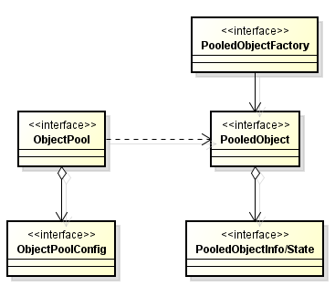
- 99 一般来说先有技术后有规范。比如DI。Java技术规范-JSR，Web技术规范-RFC。有的技术实现遵循了规范，有的不然。
- 100 我的技术学习方法论: 规范 + 实现 + 应用。 JSR51[NIO Since J2SE 1.4] + Grizzly, Netty + 基于Netty的应用。
第二章
- 101道生机器语言，机器语言生汇编器，汇编器生编译器，编译器生上万种高级语言。
- 102 编程是一种事物，事物均有其道，编程也是，有之以为利，无之以为用。
- 103 源码阅读：好的作品要拿来抄，临摹高手作品。
- 104 虽然技术解决了公司的问题，但是解决了自己的问题吗？
- 105 技术二深：技术本身深，自我认识深。技术两广：技术本身广，自我外延广。
- 106 对技术有用没用的认知折射一个人对有用没用本身的思考。人们对事物的认知很少从有用没用为出发点开始思考，而是利益，对我有利就是有用。天底下，无用之事多如牛毛...二元论....
- 107 一种通用模式：用函数对象[通常为接口+泛型]作为策略。
常用的有:Comparable，Comparator，Listner[ContextListener,ServletContextListener，EventListener]，Predicate[Guava,JDK8]，Filter[FilenameFilter ，Servelt Filter接口]，Function[JDK8]，Functor，RowCallbackHandler[JdbcTemplate]，XXXCallback....

- 108 广义模式的书：POSA[面向资源的软件架构1-5]，PLoPD[程序设计的模式语言1-5]

- 109 模式中的模式，编写模式的模式语言。
- 110 GoF模式不是最有用，也不是最本质的，只是较早归纳写在书中。
- 111 不到native决不罢休，难道到了native就该停了？
- 112 每当把类图画成妙龄少女，就有看源码的冲动了。
- 113 脱光代码比脱光少女更有意思。
- 114 抄完源码一份代码就成了两份代码了。手抄Spring源码???这点可以学习顾炎武手抄资治通鉴。
- 115 编程，学习，读书是件老老实实的事，必须认真忠实地对待它。
- 116 大多数人对编程认识止于职业认识。因为启蒙时间太晚了。
- 117 一件事做十年还是五年还是一年还是百年，其思考角度会不同。 编程暂时只有7年之心。
- 118 任何事物都是对象是近20年来最强大的技术。任何事物都是模型是MDE/MDA的中心原则。
Object isInstanceOf Class,System isRepresentedBy Model.
- 119 面向对象技术：

- 120 也许学习Java的一个终极目的是学习面向对象技术。而非详尽其API。详尽其技术实现。
-
121 技术发展轨迹:

我的学习思考：纯Java,Web -》 Patterns- 》Framework- 》MDD，DDD，MDA
- 122 如何判断一项技术的发展趋势？在没人用，在没知名度，在没业界背书的情况下？
- 123 一家技术先进与否取决于三点：1 业务是否先进，复杂 2 团队技术理念是否先进，超前。 3 Leader是否有执行力和想象力将理念实现，变现。
- 124 知道一个技术名词和理解他和码出他是三件不同的事。
- 125 前端技术虽然层出不穷，但是方向是模块化，傻瓜化，一统化。百家争鸣，启蒙时代，文艺复兴是对历史现象的高度概括。思考的暂时结论，而不要有结果。
- 126 任何变化的东西事物其不变的一面。
- 127 经常陷入变化产生现象的思考，而缺乏变化本身的思考。从E = MC^2 看变化是时间和空间的产物。
- 128 技术变化两要素，技术本身变化[简单为理解版本更新]，社会变革。后者是变化关键。
-
129 面试前最起码要：搜索enhancements in java se 8 或者 collections framework enhancements in java se 8。
其次进入JEP180，JEP155，最后看源码的变更。
- 130 每使用一个API，要知道其变更记录。每使用一个技术，要追根溯源。[JEPS,JSR]
- 131 软件业的一条发展主线：建立一种可重复应用的东西。以及制造出一种“可重复应用的东西”的方法。子程序，程序，函数，类，函数库，类库，组件，结构化设计，模块化设计，oo设计，模式.....
- 132 伟大的软件来自伟大的程序员，而不是劳苦工作的大众。
- 133 模式在分类[[http://java-design-patterns.com](http://java-design-patterns.com)]
**Architechtural:**API GateWay,Aggregator Microservices,CQRS,Data Bus, Data Transfer Object,Event Driven Architecture,Event Source,Hexagonal Architecture, Layers, Naked Objects, Server Layer
**Behavioral:**Chain of Responsoibility, Command, Delegation, Dependency Injection, Extension Ojects, Feature Toggle, Intercepting Filter,Interpreter,Iterator,Mediator, Memeto,Null Object, Observer, Specification, State, Strategy, Template method, Visitor
**Bussiness Tier:**Bussiness Delegate
**Concurrency:**Async Method Invocation, Balking, Double Checked Locking,Event Queue, Event-based Asynchronous, Guarded Suspension,Half-Sync/Half-Async,Mutex,Producer-Consumer,Promise,Reactor,Reader Writer Lock,Semaphore, Thread Local Storage,Thread Pool
**Creational:**Abstract Factory,Builder,Factory Kit,Factory Method,Moudle,MonoState,Multiton,Object Mother,Object Pool,Property,Prototype,Singleton,Step Builder,Twin,Value Object
**Integration:**Message Channel,Publish-Subscribe,Tolerant Reader
**Other:**Caching,CallBack,Double Dispatch,Execute Around,Fluent Interface,Lazy Loading,Monad,Mute Idiom,Poison Pill,Private Class Data,Queue based load leveling,Resource Acquisition Is Initilazation
**Persistence Tier:**DAO,DataMapper,Repository
**Presentation Tier:**Flux,Front Controller,MVC,MVP
**Structural:**Abstract Document,Adapter,Bridge,Composite,Decorator,Event Aggregator,Facade,FlyWeight,Proxy,Servant,Service Locator
**Testing:**Page Object
134 模式wiki分类：
- 135 技术讲究顿悟与渐悟。
- 136 工作三年经验，还是一年经验用了三年，取决于是否领悟了道，是否更加认识了自己。君不见，朝闻道，夕死可矣。
- 137 编程三个老师：老子-学会遗忘，杜威-实用主义，斯托曼-自由精神。
- 138 为什么刻意拥有技术？刻意记住，不就是为了忘记吗？学习要东西结合。精确的数理科学+模糊不可言的东方哲学。以其不有，是为大有。忘记才是真正拥有。
- 139 庖丁解牛：先是深入细节，后是忘记细节，最后无形看到全牛。技术也必须深入细节，然后忘记细节。
- 140 问题驱动式的学习一个弊端在于容易忘记。兴趣驱动式的学习终究会成为自己的。两者间的协调是必要的。
- 141 你对技术理解有超越现实的价值存在吗？
- 142 技术有时候需要在现实和超越现实价值中做折中。我学习，因为探索的快乐，求知的渴望。即使没有问题驱动。
- 143 遇到问题去学其实是高效但容易健忘的学习方式。有一种虚假的错感，就是感觉“我会了”。
- 144 懂原理和懂面向对象是两个问题。面向对象最起码会UML+设计模式+面向对象原则。原理才会问HashMap原理。诚然，懂原理和写出优秀面向对象的程序没有必然联系。
- 145 根据业务来学要这么理解：学习技术方案才是根据业务来学。比如Kafka。
- 146 MySql 事务

-
147 JavaIO中最重要的两个设计模式：
1 装饰器：一流多用。包装作用。
2 适配器：兼容类库。字节流当做字符流使用。
- 148 JavaNio核心概念：Buffer + Channel

-
149 易经：形而上者谓之道,形而下者谓之器： -tor，-ter 翻译 为XXX-器或者XXX者 [器多好干活]
-
器[拟物化]： Listener 监听器 Adapter 适配器 Filter 过滤器 Iterator 迭代器 IntBuffer int视图缓冲器 Connector 连接器 Decortor 装饰器 Iterepter 解释器 Interceptor 拦截器 Reactor 反应器 Configurator 配置器 Wrapper 包装器 Proactor 主动器 Monitor 监视器 Controller 控制器 Translator 转换器 Acceptor 接收器 Selector 选择器 Container 容器 Manager 管理器 Evictor 驱逐器 Activator 激活器 Mapper 映射器 Locator 定位器 Handler 处理器 Assembler 汇编器 Driver 驱动器 Spliterator 分割器 Builder 构建器 Formatter 格式器 Scanner 扫描器 Timer 定时器 Converter 转化器 Dispatcher 分配器 Multicaster 广播器 Transfer 传输器 Desriptor 描述器 Encoder/Decoder 编码器/解码器 Introspector 内省器 Tokenizer 分词器 Loader 加载器 (ClassLoader) Logger 记录器 Parser 解析器 Resolver 分解器 Incrementer 增加器/累加器 Counter 计数器 Collector 收集器 Initializer 初始化器 Setter 设置器 Getter 取值器 Marshaller 编组器UnMarshaller 解组器 Helper 帮助器/助手 Accessor 访问器/存取器 Visitor 访问器 Reflector 反射器 Serializer 序列器 Unserializer 反序列器 Embedder 嵌入器 Finalizer 回收器 Specifier 标识器 Supplier 供应器 Processor 处理器 Joiner 接合器 Recorder 记录器 Reducer 还原器/减少器 Analyzer 分析器 Invoker 调用器 Provider 供应器/提供者 Renderer 渲染器 Holder 存储器/持有器 Closer 关闭器 Operator 操作器 Appender 添加器 Printer 打印器 Tuplizer 元组器 Caller 调用器 Identifier 标识器 Walker 浏览器,漫步器[DomWalker,DirectoryWalker] Brower 浏览器, Server 服务器 Aggregator 聚合器 Wokrer 工作器 Binder 绑定器 Validator 校验器 Finder 查找器 Launcher 发射器 Weaver 织入器 Messenger 信差/消息器 Modeler 模型器 Extractor 提取器[InterfaceExtractorProcessor,MethodExtractor ,ClassExtractor ] Sampler 取样器 Profiler 分析器 Tracer 追踪器 Estimator 预估器，估计器 Generator 生成器 Instrumenter 插装器 Viewer 查看器 Cleaner 清除器 Debugger 调试器 Analyser 分析器 Inspector 检查器 Linker 链接器 Decompiler 反编译器 Editor 编辑器 Recognizer 识别器 Translator 解释器 Lexer 词法分析器 Tracker 追踪器 Constructor 构造器 Destructor 析构器 Executor 执行器 Synchronizer 同步器 Barrier 障碍器 Allocator 分配器(Memory Allocator) Bundler 打包器 Applier 分发器 Trigger 触发器
-
**者[拟人化]：**Consumer消费者 Producer 生产者 Observer 观察者 Caller 调用者 [两种并没有太大区别，拟人化] Supervisor监管者 Overseer 监工 Javaer Java开发者 Keeper 管理员[ZooKeeper]
- 150 器可以理解为Idiom，也可以理解为模式。
- 151 GOF分类维度：目的(创建-结构-行为)和范畴(类-对象)。 POSA1分类维度：模式类别(架构模式-设计模式-成例)和问题类别(从混沌到有序-分布式系统-交互式系统-可适应系统-结构分解-工作组织-访问控制-管理-通信-资源管理)。
- 152 GOF在分类：
| 目的/范畴 | 类模式(编译时确定) | 对象模式(运行时确定) |
|---|---|---|
| 创建(创建对象) | 工厂方法 | 其他所有 |
| 结构(组合类和对象) | 类适配器 | 其他所有 |
| 行为(类和对象交互以及职责分配) | 解释器，模板方法 | 其他所有 |
- 153 真实世界的Visitor模式[出自Apt处理注解需要的tools.jar]

- 154 架构分类：

- 155 响应式宣言：

- 156 DTrace Toolkit 工具图

- 157 IO
一种新的类结构表示法


- 158 lang


- 159 reflect

- 160 math

- 161 net

- 162 text

- 163 util

- 164 util.zip

- 165 用户体验5大要素

- 166 委派是实现设计模式的一项重要的基础技术，靠继承能实现多动态啊？
- 167 UML三大师：Grady Booch，Ivar Jacobson，James Rumbaugh。三位方法学大师，软件业的教父人物。
- 168 有本叫《thinking in 大象》，说是可以走向技术自由的梦想之路。问：什么是技术自由的梦想之路？
- 169 Linus谈生活的意义：性，战争，linux。生存-》社会-》乐趣
- 170 技术社会家：Richard Stallman，Aaron Swartz - 技术和政治以及社会运动的结合作品。
- 171 Aaron Swartz：为理念而献身的技术家。
- 172 Why GC is eating all my CPU? you should measure who is eating . but you can not manage what you can not measure. So Let us instrument bytecodes. Use aprof.
- 173 有意思的C/C++和Java对比

- 174 JavaAPI具备自解释性。必须很熟练。量产生质。
- 175 java.lang.Comparable可比较的，java.util.Comparator是比较器。Comparable优于Comparator进行设计。
- 176 一般类名后面+s 说明是一个工具类，一般包含大量静态方法和静态属性。
JDK：Arrays，Objects，Beans，Channels[工厂]，Spliterators，
Guava：Charsets，Defaults，Enums，Equivalences，Functions，Objects，Predicates，Strings，Suppliers，Throwables，Interners，Iterables，Iterators，Lists，Maps，Multimaps，Multisets，ObjectArrays，Ranges，Sets.........
- 177 Java的问题的答案可深可浅。 equals，comparable。语言基础的方法。
- 178 学习JVM时候，一定要想为什么这么设计？为什么这么设计数据结构？当然想也想不出来啥。
- 180

- 181 JavaNio之linux实现(参考资料)：
EPollArrayWrapper.c , EPollArrayWrapper eventpoll.c wait.h

- 182 You can only manage and improve on what you can measure....
- 183 学习封装多类库的例子(通用日志接口,抽象日志类库的思想)： common.log 与 SLF4J 。 具体的日志实现 log4j，java.util.logging，logback。jcl(common log) jul(java.util.log) ,juz(java.util.zip)
- 184 应用级的Facade模式：SLF4J(Simple Logging Facade for Java)
- 185 用户体验不是说按钮放对位置，界面花哨点，或者说解决用户的问题。而是帮助用户学习新的知识。学习用户体验不会让你代码水平有多大提高，而会让你对系统的思考更加全面。
-
187 marker interface：
-
java.lang.Cloneable
-
java.io.Serializable
-
java.util.RandomAccess java.util.EventListener
-
java.util.concurrent.CompletableFuture.AsynchronousCompletionTask
-
javax.xml.stream.events.EndDocument
-
javax.management.loading.PrivateClassLoader
-
java.security.KeyStore.Entry
-
java.security.KeyStore.LoadStoreParameter
-
java.security.KeyStore.ProtectionParameter
-
java.security.Policy.Parameters
-
javax.security.auth.callback.Callback
-
javax.security.auth.login.Configuration.Parameters
- 188 内存管理最高水平：

glibc2.5(未考虑多处理器) dlmalloc(doug lea) ptmalloc3 hoard concur tcmalloc jemalloc(tengine,redis,可优化mysql,nginx)
- 189 每周逛一逛各大出版社。
- 190 开源一家亲

- 191 沈询：技术有三个层次
- 第一个层次是：技术没有拖业务的后腿
- 第二个层次是：技术帮业务拓展边界
- 第三个层次是：技术驱动业务边界，我们都在路上。
- 192 沈询在谈到GTS时候说：GTS是怎么做到的？理解事务先理解db事务，在实现中做了哪些取舍，失去了什么，又带来了什么，在理解原理情况下，做出更多取舍，做出和业务贴合后更加符合业务诉求的方案。
- 193 学习原理是为了做出取舍，做出更加符合业务的技术方案。
- 194 设计模式观点：基于接口的复用，代码重载的方案。代码全部设计模式系统就完美了？满足业务场景业务诉求。不是什么神奇技术。
- 195 计算机分形观点：计算机解决问题都是从原始简单方案迭代成复杂系统，而这些_微妙的变化_就是优化的核心。有时候可以复用方案，有时候复用不了方案，不知道怎么变化的，就无法知道未来在哪里。
- 196 数据库范式：大部分没有用到。范式解决的问题是尽可能减少数据冗余，怎么设计表结构合理，多对多关系有中间表，大量join操作，范式完美，但是效率低，是指导意见，但不是优秀方案。优秀方案是一个削足适履，脚在长出来的一个过程，往回看。
- 197 客户第一，拥抱变化，团队合作。谁是客户？客户要什么？客户满意度？领导满意度？3,4,5分是什么？超出预期又是什么？超出几份？
- 198 技术服务于业务是技术最终归宿。业务服务于客户是业务最终归宿。客户服务于自我需求是最终归宿。只不过每个人理解的业务层次不同。个人，业务就是一个模块。上级，业务就是一个职能单位，对于公司，就是生存之本，对于资本，就是一颗子弹。对于社会，就是一点推动力。
- 199 交流不是寻求认可，不是刻意攻击，不是自夸自擂，而是启发新思考。
- 200 当你一方面强于他人时候，不要认为别人菜。因为你也曾经被别人这么认为过。要思考他为什么这样，他的未来，他的前景，他可能的突破点。
第三章
- 201 干一行，爱一行
- 202 为什么要做技术？生存？一个领域有成就？对事物本身的理解？推动业务发展？出人头地？有所成就，有所高度。 有所领悟，有所得失。
- 203 真正的学习的以不断完善思考能力为基础的，其次才是记忆。只有记住了大量知识才谈理解，只有理解了才会大量记住，才谈融会贯通。
- 204 看完书记不住，因为没有理解。更重要的没有融汇贯通。任督二脉....
- 205 所有性能问题都来自：CPU，内存，IO，所有的瓶颈都是这三项。

- 206 线程状态

- 207 世界是分形的。一种哲学观点。

计算机系统是自下而上的分形系统，在CPU层面看到的东西，在磁盘层面看到的东西，在os层面看到的东西，在软件应用看到的东西，其实都是一个东西，没有特别明显的差异。无非怎么做信号？怎么做相互通知机制？怎么做时间片切换？无非这么几件事。只是不同的层次因为不同的需要而改变。问题本质没变化，无非怎么通信，怎么计算，怎么数据存取，只有这么几件事情。收拢到简单关键词时候，就是树状结构。形成这种认知，往外看，计算机不过如此，特定场景特定的优化而已。大部分特定优化其实并不复杂。多问为什么，问题本质是什么？构造图景理解新的问题就会很快。[DB，应用系统，os，分布式软件最终都要在CPU上执行]
- 208 计算机问题：分层与分形。
- 209 响应时间级别： 内存：纳秒， 网络：毫秒，5000-10000时钟周期：几微秒
- 210 数据库的事务和Java中的并发解决方案，本质是一回事。数据库成为操作远程共享数据叫事务，而应用操作本地共享数据，内存中的共享数据叫并发。

- 211 一个技术的利与弊就是选了他，得到了什么，失去了什么。对于业务取舍了什么，又得到了什么。
- 212 世界上解决一个计算机问题最简单的方法：“恰好”不需要解决它！—— 沈询
- 213 系统如果需要高性能，必然要进行精心的设计。必须有所取舍。计算机解决方案就是一个折中的过程。解决一个问题就会带来另外一个问题。
- 214 复杂的模型越难理解，但是性能越好。越简单的模型，性能往往不好。快速排序和冒泡排序。
- 215 吞吐量问题(单位时间内处理更多的任务)的解决方案：硬件层面，CPU层面，操作系统层面，应用系统层面。
高可用问题解决方案：冗余。
- 216 程序员觉得程序是顺序执行的，其实在CPU层面是乱序的。什么不能乱？Happen-Before规则。维持有序系统需要付出代价。乱不是目的，目的是高效利用CPU。
- 217 消息交互三模型：推，拉，推拉结合。Kafka拉模型，适合海量日志处理，日志处理特点是不需要实时性-》消息堆积能力必然强-》占内存。
- 218 协议是合约解决问题的一种方式。一种协议的产生必然会带来另一钟问题的产生。Paxos协议，TCP协议，Zab协议。解决不了问题，加层，加层做什么？加协议。多台机器数据同步，怎么同步？数据层加paxos协议。技术选型就是一个取舍的过程。
- 219 并发控制产生根源是CPU宏观并行，微观串行。多线程对共享数据的读读，读写，写读，写写。
- 220 性能问题分析：自上而下，自下而上。所有的数据读写问题都可以转化为CPU层面读写问题。
- 221 所有的折中都在时间和空间层面折中。时间足够长，所有消息都是有序的，但是没有意义。将时间压缩到空间，追求更加巧妙的设计。
- 222我们所得到的和所失去的都会在CPU，内存，IO上得到体现。
- 223 这张图代表了什么？

- 224 排序算法比较[log2(n) log以2为底的n]
| 排序算法 | 最好时间 | 平均时间 | 最坏时间 | 辅助空间 | 稳定性 |
|---|---|---|---|---|---|
| 直接插入排序 | O(n) | O(n^2) | O(n^2) | O(1) | 稳定 |
| 希尔排序 | O(n(log2(n))^2) | O(n^1.3) | O(1) | 不稳定 | |
| 直接选择排序 | O(n^2) | O(n^2) | O(n^2) | O(1) | 不稳定 |
| 堆排序 | O(nlog2(n)) | O(nlog2(n)) | O(nlog2(n)) | O(1) | 不稳定 |
| 冒泡排序 | O(n) | O(n^2) | O(n^2) | O(1) | 稳定 |
| 快速排序 | O(nlog2(n)) | O(nlog2(n)) | O(n^2) | O(log2(n)) | 不稳定 |
| 归并排序 | O(nlog2(n)) | O(nlog2(n)) | O(nlog2(n)) | O(n) | 稳定 |
| 基数排序(链式队列) | O(mn) | O(mn) | O(mn) | O(n) | 稳定 |
| 基数排序(顺序队列) | O(mn) | O(mn) | O(mn) | O(mn) | 稳定 |
- 225 JMM核心概念：
- 原子性(一个操作不可中断)
- 可见性(一个线程改变了值，另其他线程立马得知，Volatile)
- 有序性(线程内有序，线程间观察无序，指令重排，Happen-Before)。
- 226 哪些指令不能重排：Happen-Before。
- 227 Volatile作用：可见性和禁止指令重排，比synchronized更轻量级同步机制。
场景：1 volatile最适用一个线程写，多个线程读的场合 2 检查某个状态标记以判断是否退出循环。
volatile boolean shutdownRequested; //不加volatile可能会导致指令重排，-server模式产生死循环 public void shutdown() { shutdownRequested = true; } public void doWork() { while (!shutdownRequested) { // do stuff } }
- 228 加锁可以保证原子性和可见性，但是volatile只能保证可见性。
- 229 使用场景：BIO：低负载，低并发 NIO：高负载，高并发 AIO：异步处理
- 230 排序算法一览：
| 插入排序 | 直接插入 | 希尔排序 |
|---|---|---|
| 选择排序 | 直接选择 | 堆排序 |
| 交换排序 | 冒泡排序 | 快速排序 |
| 归并排序 | 桶排序 |
插入排序：
直接插入排序：
public static void insertSort(int[] keys) {
for (int i = 0; i < keys.length; i++) {
int temp = keys[i];
int j;
for (j = i - 1; j >= 0 && temp < keys[j]; j--) {
keys[j + 1] = keys[j];
}
keys[j + 1] = temp;
System.out.print("第" + i + "趟 temp=" + temp + "\t");
System.out.println(Arrays.toString(keys));
}
}
public static void insertSort2(int[] keys) {
for (int i = 0; i < keys.length - 1; i++) {
int temp = keys[i + 1];
int j = i;
while (j > -1 && temp < keys[j]) {
keys[j + 1] = keys[j];
j--;
}
keys[j + 1] = temp;
System.out.print("第" + i + "趟 temp=" + temp + "\t");
System.out.println(Arrays.toString(keys));
}
}
希尔排序:
public static void shellSort1(int[] keys) {
//每次增量减半，初始为数组长度
for (int delta = keys.length / 2; delta > 0; delta /= 2) {
for (int i = delta; i < keys.length; i++) {
int temp = keys[i], j;
for (j = i - delta; j >= 0 && temp < keys[j]; j -= delta) {
keys[j + delta] = keys[j];
}
keys[j + delta] = temp;
}
System.out.print("delta=" + delta + " ");
System.out.println(Arrays.toString(keys));
}
}
/**
*
* @param keys 数组
* @param n 数组个数
* @param d 增量数组 [6,3,1]
* @param numOfD 增量数组个数 3
*/
public static void shellSort2(int[] keys, int n, int[] d, int numOfD) {
int i, j, k, m, span, temp;
for (m = 0; m < numOfD; m++) {
span = d[m];
for (k = 0; k < span; k++) {
for (i = k; i < n - span; i += span) {
temp = keys[i + span];
j = i;
while (j > -1 && temp <= keys[j]) {
keys[j + span] = keys[j];
j = j - span;
}
keys[j + span] = temp;
}
}
System.out.print("delta=" + span + " ");
System.out.println(Arrays.toString(keys));
}
}
交换排序
冒泡排序
public static void bubbleSort(int[] keys) {
int flag = 1;
int n = keys.length;
for (int i = 1; i < n && flag == 1; i++) {
flag = 0;
for (int j = 0; j < n - i; j++) {
if (keys[j] > keys[j + 1]) {
int temp = keys[j + 1];
keys[j + 1] = keys[j];
keys[j] = temp;
flag = 1;
}
}
System.out.print("第" + i + "趟: ");
System.out.println(Arrays.toString(keys));
}
}
public static void bubbleSort2(int[] keys){
boolean exchange = true;
for (int i = 1; i < keys.length && exchange; i++) {
exchange = false;
for (int j = 0; j < keys.length - i; j++) {
if (keys[j] > keys[j + 1]) {
int temp = keys[j];
keys[j] = keys[j + 1];
keys[j + 1] = temp;
exchange = true;
}
}
System.out.print("第" + i + "趟: ");
System.out.println(Arrays.toString(keys));
}
}
快速排序
public static void quickSort(int[] keys, int begin, int end) {
if (begin < end) {
int i = begin;
int j = end;
int vot = keys[i]; //标准元素
while (i != j) {
while (i < j && vot <= keys[j]) j--;
if (i < j) {
keys[i++] = keys[j];
}
while (i < j && keys[i] <= vot) i++;
if (i < j) {
keys[j--] = keys[i];
}
}
keys[i] = vot;
System.out.print("["+begin + "-" + end + "], vot=" + vot + " ");
System.out.println(Arrays.toString(keys));
quickSort(keys, begin, j - 1);
quickSort(keys, i + 1, end);
}
}
public static void quickSort2(int[] keys, int begin, int end) {
if (begin < end) {
int i = begin;
int j = end;
int temp = keys[i]; //标准元素
while (i < j) {
while (i < j && temp <= keys[j]) j--;
if (i < j) {
keys[i] = keys[j];
i++;
}
while (i < j && keys[i] < temp) i++;
if (i < j) {
keys[j] = keys[i];
j--;
}
}
keys[i] = temp; //插入标准元素
System.out.print("["+begin + "-" + end + "], temp=" + temp + " ");
System.out.println(Arrays.toString(keys));
quickSort2(keys, begin, i - 1);
quickSort2(keys, j + 1, end);
}
}
选择排序
直接选择排序
public static void selectSort(int[] keys) {
for (int i = 0; i < keys.length - 1; i++) {
int min = i;
for (int j = i + 1; j < keys.length; j++)
if (keys[j] < keys[min]) {
min = j;
}
if (min != i) {
int temp = keys[i];
keys[i] = keys[min];
keys[min] = temp;
}
System.out.print("第" + (i + 1) + "趟: ");
System.out.println(Arrays.toString(keys));
}
}
堆排序
public static void heapSort(int[] keys){
heapSort(keys,true);
}
public static void heapSort(int[] keys, boolean minHeap) {
for (int i = keys.length / 2 - 1; i >= 0; i--) {
//创建最大堆or最小堆
sift(keys, i, keys.length - 1, minHeap);
}
for (int i = keys.length - 1; i > 0; i--) {
//交换顶部和底部元素
int temp = keys[0];
keys[0] = keys[i];
keys[i] = temp;
sift(keys, 0, i - 1, minHeap);
System.out.println("第" + (keys.length - i) + "趟" + Arrays.toString(keys));
}
}
private static void sift(int[] keys, int parent, int end, boolean minHeap) {
//System.out.println("sift " + parent + "..." + end + " ");
int child = 2 * parent + 1;
int value = keys[parent];
while (child <= end) {
if (child < end && (minHeap ? keys[child] > keys[child + 1] :
keys[child] < keys[child + 1])) {
child++;
}
if (minHeap ? value > keys[child] : value < keys[child]) {
keys[parent] = keys[child];
parent = child;
child = 2 * parent + 1;
} else {
break;
}
}
keys[parent] = value;
}
public static boolean isMinHeap(int[] value) {
if (value.length == 0) {
return false;
}
for (int i = value.length / 2 - 1; i >= 0; i--) {
int j = 2 * i + 1;
if (value[i] > value[j] ||
j + 1 < value.length && value[i] > value[j + 1]) {
return false;
}
}
return true;
}
public static boolean isMaxHeap(int[] value) {
if (value.length == 0) {
return false;
}
for (int i = value.length / 2 - 1; i >= 0; i--) {
int j = 2 * i + 1;
if (value[i] < value[j] ||
j + 1 < value.length && value[i] < value[j + 1]) {
return false;
}
}
return true;
}
public static void whatKindOfHeap(int[] value) {
if (isMinHeap(value)) {
System.out.println("最小堆");
}else if(isMaxHeap(value)){
System.out.println("最大堆");
}else{
System.out.println("非最大堆或者最小堆");
}
}
归并排序
public static void mergeSort(int[] X) {
System.out.println("归并排序");
int[] Y = new int[X.length];
int n = 1;
while (n < X.length) {
mergepass(X, Y, n);
System.out.println(Arrays.toString(Y));
n *= 2;
if (n < X.length) {
mergepass(Y, X, n);
System.out.println(Arrays.toString(X));
n *= 2;
}
}
}
private static void mergepass(int[] X, int[] Y, int n) {
System.out.print("子序列长度n=" + n + " ");
int i = 0;
for (i = 0; i < X.length - 2 * n + 1; i += 2 * n) {
merge(X, Y, i, i + n, n);
}
if (i + n < X.length) {
merge(X, Y, i, i + n, n);
} else {
for (int j = i; j < X.length; j++) {
Y[j] = X[j];
}
}
}
private static void merge(int[] X, int[] Y, int m, int r, int n) {
int i = m, j = r, k = m;
while (i < r && j < r + n && j < X.length) {
if (X[i] < X[j]) {
Y[k++] = X[i++];
} else {
Y[k++] = X[j++];
}
while (i < r) {
Y[k++] = X[i++];
}
while (j < r + n && j < X.length) {
Y[k++] = X[j++];
}
}
}
- 231 排序算法：算法详情
- 232 分布式的好处：理论上无限可扩展能力和高可用能力。
- 233 消息中间件作用：解耦，异步，最终一致性，并行
- 234沈询：“特别注重基础，操作系统、网络、算法数据结构、离散数学、数据库原理与实践，这些看起来枯燥而无味的基础科学，是我目前感到知识最为匮乏，但却最为急需的部分，要了解它们是必须付出非常多的时间才有可能理解通透些。而这些基础的扎实程度，就直接决定了你的高度”。
- 235 线程与QPS计算公式(吞吐量提升一倍，服务器数量减少一半)
线程数 = （线程总时间/瓶颈资源时间） * 瓶颈资源线程并行数
QPS = （1000/响应时间[线程总时间]）* 线程数 = 1000/瓶颈资源时间 * 瓶颈资源并行数
QPS和响应时间没有关系，优化响应时间效果不大。
- 236 QPS三要素：线程，响应时间，瓶颈资源。
QPS瓶颈：磁盘IO，网络IO，CPU，内存GC hold，线程限制，线程同步锁，远程系统QPS
- 237 JUC

JUC 详情
- 238 JUC使用场景：
ReentantLock (互斥锁,可重入锁,独占锁-Mutex-读读互斥)可定时，可轮询，可中断，公平队列，非块结构加锁。
ReentrantReadWriteLock (读写锁-读读共享) 一个共享资源被大量读取操作，而只有少量写操作。
StampedLock 实现乐观悲观锁
Volatile 一个线程修改，多个线程读取
CopyOnWrite 读多写少 白名单，黑名单，商品类目访问和更新
DelayQueue 缓存系统设计，定时任务调度
LinkedBlockingDeque ForkJoinPool 工作窃取算法
BlockingQueue 生产者消费者模式实现
ConutDownLatch 等待某个条件满足后才做后面的事情。Zk连接集群的时候。
AbstractQueuedSynchronizer 实现自己的同步器
Semaphore 流量控制 资源有限情况。排队场景，线程池，连接池等
CyclicBarrier N个线程互相等待 用于多线程计算数据，最后合并计算结果
ForkJoinPool 任务拆分在汇总的计算
ThreadLocal 线程内变量 Connection，防止对可变单利变量或者全局变量进行共享。
SynchronousQueue 有足够多消费者，并且总有一个消费者准备好交付工作的情况下使用
Deque(ArrayDeque,LinkedBlockingDeque) 即是生产者也是消费者问题。执行某个工作时候可能出现更多的工作。
Exchanger 遗传算法，校对工作(AB-excel)
ExecutorCompletionService 向Executor提交一组计算任务，计算完成后分别获得计算结果。
Future.get 指定时间内没有完成，则取消任务 任务没有完成则阻塞 指定时间完成某些任务，页面渲染器，指定时间获取广告信息
守护线程：执行辅助工作，执行“内部”任务，周期性从内存的缓存中清除过期数据。不用于应用程序服务的生命周期
...待补充
- 238 优先使用有界队列：1 稳定性和预警 2 单一模块不可用不会造成整个系统不可用 3 强大的资源管理工具，防止产生过多的工作项，使得程序在负载过荷情况下变得更加健壮。
无界队列：内存撑满问题。
- 239 线程池线程数的一种思考：
1 Tomcat，Nginx 最大限度发挥单机server最大并发量。
2 CPU密集：N$$cpu$$+1 or N$$cpu$$ -1 IO密集型 2 * N$$cpu$$
3 IO+CPU差不多： (N$$cpu$$+1 + 2 * N$$cpu$$)/2
- 240 _线程安全：_当多个线程访问某个类时，不管运行时环境采用何种调度方式，或者这些线程将如何交替执行，并且在主调代码中不需要任何额外的同步或协同，这个类都能表现出正确的行为，那么就称这个类是线程安全的。
- 简单定义：当多个线程访问某个类的时候，这个类始终表现出正确的行为，那么这个类就是线程安全的。
- 241 对象一些状态的共享和可变决定了对象是否线程安全。线程安全最核心的概念是正确性。正确性是某个类的行为与其规范完全一致。单线程正确性是“所见即所知”。
- 242 JUC分类：
- 1 并发集合 BlockingQueue CopyOnWrite(CopyOnWriteArrayList,CopyOnWriteArraySet) Concurrent(ConcurrentHashMap,ConcurrentLinkedDeque，ConcurrentLinkedQueue，ConcurrentSkipListMap，ConcurrentSkipListSet)
- 2 同步器 Semphore CountDownLatch CyclicBarrier Exchanger FutureTask(语义上的)
- 3 执行器 Executors Callable ThreadPoolExecutor Future
- 4 锁和条件类 Synchronized ReentrantLock ReentrantReadWriteLock StampedLock Condition LockSupport
- 5 原子变量 AtomicXXX
- 243 **AQS **

- 244 Queue 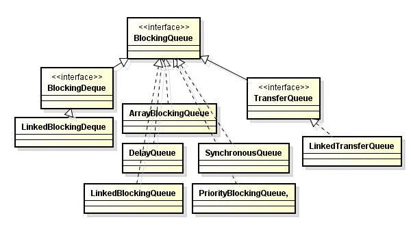
- 245 **Lock **

- 246 实现等待通知
| 等待/通知 | 等待 | 通知一个 | 通知所有 |
|---|---|---|---|
| Condition(Lock) | await | signal | signalAll |
| Object | wait | notify | notifyAll |
- 247 所有并发问题都可以归结为如何协调对并发状态的访问。可变状态越少，越容易保证线程安全性。
- 248 服务器程序应该体现出良好的吞吐量和快速的响应性。
- 249 在一定范围内，增加线程可以提供系统吞吐量，但是超出范围，反而降低性能。(创建开销，资源消耗占内存，GC压力)
-
250 实现一个线程：Thread(单继承局限)，Runnable(不能返回值或者抛出受检异常，多继承)，Callable(有返回值，泛型)
Runnable和Callable都是对任务的抽象。
- 251 同构任务并行化(真正的性能提升)和异构任务并行化(获取重大性能提升很困难)
- 252 中断是一种协作机制。它不会真正中断运行的线程，而只是发出中断请求，然后线程在下一个合适的时间中断自己。
- 253 通常，中断是实现取消的最合理方式。也可以循环检测某个**状态位(volatile)**取消。
- 254 幂等：多次请求得到结果一样。
- 255 Java线程分为两类：普通线程，守护线程。两者唯一区别仅在于：线程退出时候的操作。
- 256 提问的技巧：所有问题后面加实现原理。AQS原理，线程池原理，ArrayList原理，synchronized** 原理 ，分布式事务原理**，Condition原理，AOP原理，Spring事务实现原理.......
- 257 ThreadFactory很受欢迎 ！！！

- 258 线程池作用：1 提高执行任务性能 _ 2 _资源管理
从ThreadPoolExecutor理解线程池的原理：Core and maximum pool sizes，On-demand construction，Creating new threads，Keep-alive times，Queuing，Rejected tasks，Hook methods，Queue maintenance，Finalization。
详情请看 这里
public ThreadPoolExecutor(int corePoolSize,
int maximumPoolSize,
long keepAliveTime,
TimeUnit unit,
BlockingQueue<Runnable> workQueue,
ThreadFactory threadFactory,
RejectedExecutionHandler handler){}
- 259 阿姆达尔定律告诉我们：光加CPU不一定吞吐量上的去，还要考虑程序串行比。
- 260 阿姆达尔定律：在增加计算资源的情况下，程序理论达到的最高加速比取决于程序的串行化比例。
- 261

- 262 内存栅栏（内存屏障）：刷新缓存使缓存无效，刷新硬件的写缓存以及停止执行管道，抑制编译器优化，实现内存顺序限制，操作是不能被重排序的。
- 263 悲观锁适合并发争抢比较严重的场景;乐观锁适合并发争抢不太严重的场景。
- 等待时间较短，适合自旋等待(JVM实现阻塞)。等待时间较长，采取os挂起。
- 264 非竞争同步可以在JVM中处理，竞争的同步可能需要os介入。
- 265 阻塞的本质是等。非阻塞同步算法还是要等。等 = for(;;){}
- 266 Little定律：在一个稳定系统中，顾客平均数量 = 平均到达率 * 平均停留时间
- 系统中物体的平均数量等于物体离开系统的平均速率和每个物体在系统中停留的平均时间的乘积
- 267 通常，对象分配操作(new )的开销比同步开销更低。所以对对象池说“不”。
- 268

后半段，随着线程数增加，吞吐量趋于稳定，因为大部分时间消耗在上下文切换和调度延迟上。线程太多不好，太少也不好。
- 269 上下文切换：运行和阻塞之间转换。
- 270 提升可伸缩性：1 减少锁持有时间 2 降低锁粒度(锁分解，锁分段) 3 采取非独占锁 4 非阻塞锁代替阻塞锁
- 271 一种学习思路：性能调优。log4j性能调优，kafka性能调优，redis性能调优，ngnix性能调优，jvm性能调优，mysql性能调优....
- 272 Java中的锁(ReentrantLock-非阻塞加锁)必须要和内置锁(Synchronized-阻塞加锁)必须提供一样的内存语义（可见性,原子性,顺序性）。但是实现可以不同。monitorenter,monitorexit和CAS(CMPXCHG),实现的核心不在于锁，而在于如何实现一样的内存语义
- 273 读写锁：写可以降低为读，而读不能升级为写。因为会发生死锁。
- 274 hash算法的评估：单调性和平衡性。一致性hash主要用在缓存系统。移除/添加一个cache时候，尽可能少的改变已存在的key映射关系，满足单调性。
- 275 一致性hash映射过程：1 构建环形hash空间 2 对象映射到hash空间 3 cache映射到hash空间 4 对象映射到cache上。
- 276 分布式的理论：CAP 。(强一致性，可用性，分区容错性)
CA-》RDBMS-》ACID-》强一致性
AP-》NoSQL，DNS，QQ头像修改-》BASE(基本可用，软状态，最终一致性)-》最终一致性
CP-》分布式DB
- 277 **ACID **VS BASE
| 比较 | ACID | BASE |
|---|---|---|
| 一致性 | 强一致性 | 最终一致性 |
| 特征 | 一致性优先 | 可用性优先 |
| 方法 | 悲观 | 乐观 |
| 适应变化 | 难以变化 | 适应变化 |
- 278 基础知识是打通知识体系的针线。对基本问题思考越深，对变化就会越理解，对现象也就越理解。因为计算机学科基础问题决定了上层建筑的扎实程度。
- 279 计算机学科基础问题有哪些？
- 280 数据库理论很完备了。实际运用可能会完善和补充理论，但是不会超越理论。
- 281 请求servlet

-
282 Cookies原理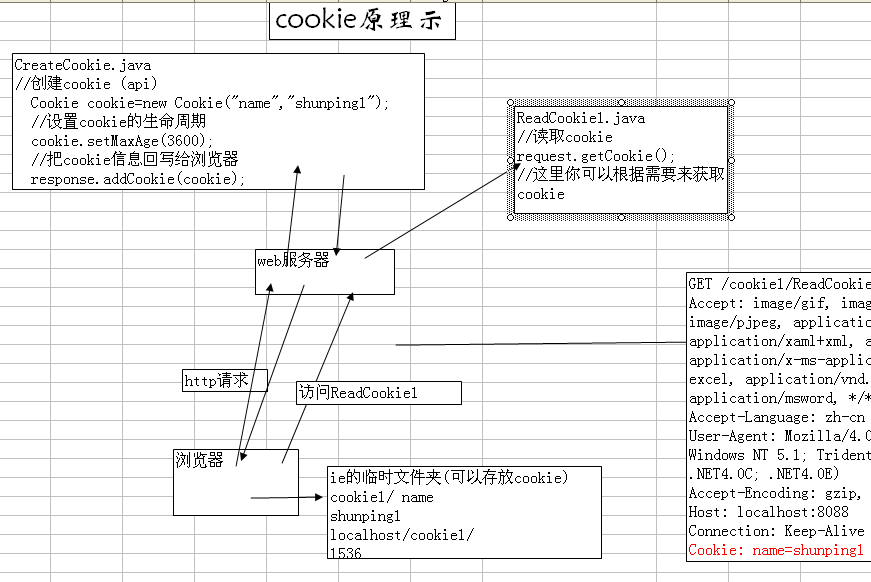
- 283 Session原理

- 284 Servlet工作图

- 285 对比
Cookis，保留用户上次登录时间，保存浏览记录，登录不用重复输入密码，记录用户喜好(背景色，有无背景音乐)，网站个性化(定制服务)，
Session 购物车，全局用户名，防止用户非法登录到某个界面，用户验证码，判断新用户，取得用户操作时间，注销用户，
ServeltContext(application对象) 在线人数，累计访问量(db,file,servletContext)，公共聊天室，多个Servlet通过ServeltContext共享数据，获取web初始化参数，读取WEB目录和WEB-INF目录文件，聊天系统，网站在线用户显示，

- 286 有生命周期的对象:JVM加载Class对象，SpringBean生命周期，Servlet生命周期，线程生命周期，线程池生命周期，Hibernate对象生命周期，对象生命周期(JVM GC机制核心)。
- 287 JSP和Servlet都是单例模式，多个请求对应一个JSP/Servlet。
- 288 JSP原理

- 289 一个类是否是同一个类，有两个条件。 1 包名.类名是否相同。 2 加载这个类的ClassLoader是否是同一个。
- 290 同一个ClassLoader不能同时加载两个相同的类，但是同一个类可以被两个不同的ClassLoader加载。
- 291 类加载机制


- 292 GC解决了下面三问题： 1 哪些内存需要回收？(堆和方法区) 中已经"死"的对象？ 1 引用计数 2 可达性分析算法
- 2 什么时候回收？ 3 如何回收？
- 293 垃圾收集器

- 294 垃圾回收算法： 1 标记-清除 2 复制算法 3 标记-整理 4 分代收集算法(hotspot)
- 295 Java是一种静态多分派，动态单分派的语言。
方法调用：1 解析 2 分派(静态分派-重载，动态分派-覆写)
- 296 Java是一种动态语言(反射),但是是静态类型语言。
- 297 动态类型语言：变量无类型而变量值才有类型。
动态语言：Java 静态语言：C/C++
动态类型语言：Js，Python 静态类型语言：C/C++，Java
- 298 代码编译的结果从本地机器码转变为字节码，是存储格式发展的一小步，却是编程语言发展的一大步。
- 299 Java程序信息分为： 代码(Code属性)和元数据(除去代码外所有的信息，注解，注释，javadoc)。
- 300 理解字节码：
SuppressPropertiesBeanIntrospector.class和** String.class**
 @@VS@@
@@VS@@
第四章
- 301 Synchronized原理分析(Javac+Java虚拟机共同协作，比如JMM层面)：
方法：常量池flags=ACC_SYNCHRONIZED
代码块：字节码指令 monitorenter和monitorexit
机器码：lock(read,load,use),unlock(store,write,assign)
- 302 世界上没有完美的程序，但是我们不应该沮丧，因为写程序本身就是一个不断追求完美的过程。
- 303 执行Java程序

- 304 理解运行时
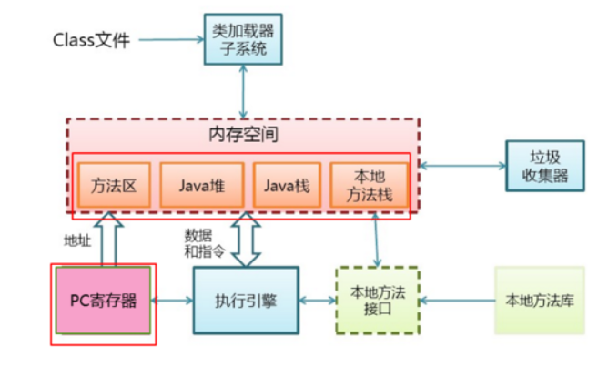

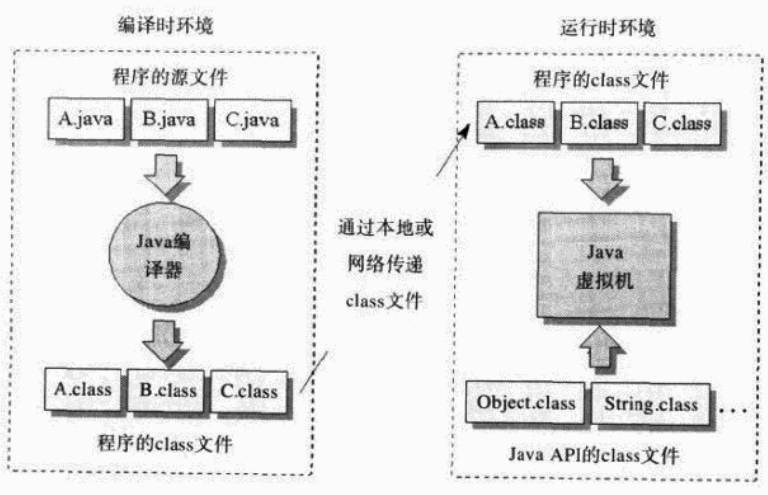
- 305 为什么JVM采用分代回收策略？基于观察事实：1 大部分分配对象的存活时间很短 2 存活时间久的对象很少引用存活时间短的对象。基于弱分带假设。
- 306 MinorGc触发条件：Eden没有足够内存空间来分配对象。

- 307 垃圾回收器工作图解
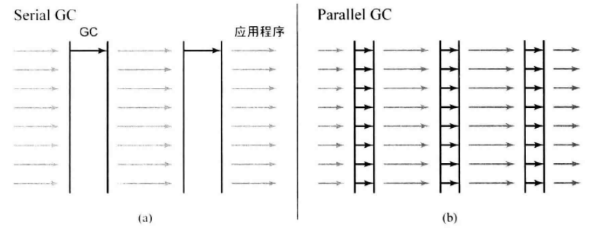

- 308 Java学的好的标志：掌握从java层到jvm层映射。例如：对象池会加大老年代的存活时间，不好的编程实践，ArrayList给定初始化尺寸，内部数组不断调整，导致不必要的内存分配。
- 309 程序怎么优化？1 吞吐量 2 响应性 这些优化映射到CPU，内存，IO层上，在映射到Java层，就体现出掌握JVM内存分配的重要性了。
- 310 程序优化本质是一个调整映射过程。代码到jvm到os到机器。区别不同在于自上而下还是自下而上。
- 311 MinorGC：新生代垃圾收集。 FullGC：整个堆(新生代+老年代+永久区)收集。
MinorGC：当Eden区满时，触发Minor GC。
FullGC：1 System.gc 2 老年代空间不足 3 永久代空间不足 4 CMS GC时出现promotion failed和concurrent mode failure 5 统计得到的Minor GC晋升到旧生代的平均大小大于老年代的剩余空间 6 堆中分配很大的对象
- 312 缓存命中率和和缓存大小没有关系。频繁UPDATE操作，缓存设置再大也没有用。命中率取决于工作负载。
- 313 InnoDB是大多数情况下最好的选择。
- 314 MySQL服务器逻辑架构图：

- 315 MySQL逻辑详细图
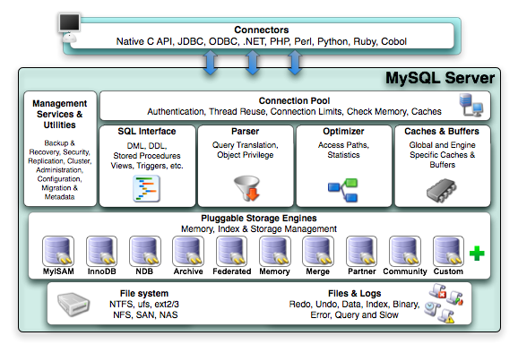
- 316 垃圾回收器本质是一种空间管理技术。缓存也是。只不过一个希望对象存活久，一个希望对象存活短。而垃圾回收机制对应缓存的清除策略。反面想，缓存的设计也可以划分为年轻代与老年代。此时对象更希望进入老年代，保持长期有效对象。此时关键在于缓存数据结构的设计。
- 317 内存回收技术反面就是内存不回收策略。也就是内存常驻技术。
- 318 设计一个垃圾回收器的思路： 1 分布式垃圾回收器，两个jvm运行一段程序 ，n个jvm，n台机器，在提供一个抽象网络jvm层 2 高并发的垃圾回收器 3 反垃圾回收器
4 插件体系架构类似存储引擎的垃圾回收器，每一部分做成可插拔式的。 精简版，按需定制。对外提供API。开源社区提供插件。
- 319 性能优化的前提是监控与统计，否则无从谈起。
- 320 MySQL调优顺序：1 Schema与数据类型优化 2 索引优化 3 查询优化 4 优化服务器设置 5 操作系统与硬件优化 6 应用层优化 -《高性能的MySQL》 完美调优不存在，服务器设置是调优时间投入产出很小的调优。而前三者投产比大。
- 321 my.cnf的配置：映射到os，io，cpu，内存。zk，nginx也是如此。
- 322 进程间通信是所有分布式系统的核心。不谈分布式机器间信息交换机制，对分布式系统研究成了空谈。
- 323 对分布式系统研究角度：
1 体系结构：集中，非集中，混合？
2 进程：线程实现？虚拟化？客户端？服务端？代码迁移？
3 通信 ：远程过程调用（同步RPC，异步RPC），消息通信（瞬间与持久）
4 命名
5 同步
6 一致性与复制
7 容错性
8 安全性
- 324 学习网络其实本质是在学协议栈。如何层与层之间通信，也就是信息交换机制。
- 325 协议是解决方法的高级抽象。TCP协议思路也可以应用到应用程序，仅此而已。
- 326 OSI看所有分布式系统都只是应用程序而已。

调整后的网络通信模型。越往下，越通用，越抽象，越不变。

- 327 中间件协议：认证协议，授权协议，分布式提交协议（在一组进程内，某种操作要么由全部进程共同完成，要么不执行），分布式锁定协议（保护资源免受分布于多台机器上一组进程的并发访问），通信协议等。均与应用程序无关的协议。可用来实现通用的中间件服务。
- 328 通信模型
| 分类 | 持久通信 | 瞬间通信 |
|---|---|---|
| 同步通信 | 消息队列（请求提交时同步化） | RPC（请求完全处理后同步化） |
| 异步通信 | mom | Berkeley套接字，mpi |
- 329 参数传递机制：1 call by value 2 call by reference 3 call by copy/restore （Ada语言）取决于语言设计者。
- 330 构建服务器的三种方式： 1 单线程 2 多线程 3 有限状态机

- 331 RPC分类：单向RPC，同步RPC，异步RPC（转账，启动远程服务，执行批处理），两步RPC（延迟的同步RPC）
- RPC系统（DCERpc，SunRpc），RPC框架（gRpc偏重于语言）
 ，
，
- 332 两个节点交换更新信息方式：1 pull 2 push 3 pull-push 感染算法：传播更新信息。
- 333 互联网架构八荣八耻，DevOps
以可配置为荣，以硬编码为耻
以系统互备为荣，以系统单点为耻
以随时可重启为荣，以不能迁移为耻
以整体交付为荣，以部分交付为耻
以无状态为荣，以有状态为耻
以标准化为荣，以以特殊化为耻
以自动化工具为荣，以人肉操作为耻
以无人值守为荣，以人工介入为耻
- 334 Java八荣八耻
**以动手实践为荣，以只看不练为耻。 **
**以打印日志为荣，以出错不报为耻。 **
**以局部变量为荣，以全局变量为耻。 **
**以单元测试为荣，以手工测试为耻。 **
**以代码重用为荣，以复制粘贴为耻。 **
**以多态应用为荣，以分支判断为耻。 **
**以定义常量为荣，以魔法数字为耻。 **
以总结思考为荣，以不求甚解为耻。
- 335 python之禅
Beautiful is better than ugly.Explicit is better than implicit.Simple is better than complex.Complex is better than complicated.Flat is better than nested.Sparse is better than dense.Readability counts.
Special cases aren't special enough to break the rules.Although practicality beats purity.
Errors should never pass silently.Unless explicitly silenced.
In the face of ambiguity, refuse the temptation to guess.
There should be one-- and preferably only one --obvious way to do it.Although that way may not be obvious at first unless you're Dutch.
Now is better than never.Although never is often better than right now.
If the implementation is hard to explain, it's a bad idea.
If the implementation is easy to explain, it may be a good idea.
Namespaces are one honking great idea -- let's do more of those!
- 336 一种感悟：XXX性能优化，XXX优化，XXX设计总会归结于几个简单的思考出发点。IO，CPU，内存，磁盘。这是一种在计算机领域相同的思维逻辑，一种统一的思维出发点，无论再难的问题，执行总是在CPU进行读-取-执的过程循环。计算机是一个封闭的系统，系统内有其客观规律存在，不会超越硬件规律。存不存在一种通用的思考出发点去看待所有问题，但是解决方案却是不同的。知识无涯，而道有止。
- 337 为什么有时候学了原理好像没有什么用？因为对原理解决的简单问题，问题的演化，其他解决方案没有进行深入探索。出于简单的思考点，一步一步演化，才能真正理解原理。消息队列的出发点是通信，而不是存储信息的容器，也不是Producer-Consumer模型，更不是Kafka。而高性能Kafka一定通过其固有模型来映射OS层icmd来体现。但是通用的消息中间件所面临的设计问题的类似。通信方式有RPC，消息，流，多播通信。设计模式的出发点是代码复用，重构出发点是旧代码的重设计。
- 338 高性能指的是ICMD之间的权衡。对外体现给计算机一个任务他可以立马处理完。设计高性能的XXX中间件，离不开ICMD的权衡。Netty高性能也必然体现在此。IO多路复用和网络通道复用异曲同工。计算机处理问题方式和人处理问题方式没太大差别。都是人海战术。一个不行上两个(多线程)。更多和更巧体现了设计上的差异。
- 339 哪一个高才是你所需要突破的？高性能，高可用，高吞吐，高并发，高响应，高可扩，高体验，高收益？
-
340 三星索引设计过程：1 等值谓词放入索引。 2 order by 列放入索引。 3 其余列加入索引。
一星：最小化索引片宽度。 二星：排除排序 三星：排除回表。
三星索引为什么快？ 一次查询只需要一次磁盘随机读和一次窄索引片的扫描。可能的最好索引。
- 341

为其设计索引？
两星索引(CITY,FNAME,LNAME)，(FNAME,CITY,LNAME)
一星索引(CITY,LNAME,FNAME)，
最差(LNAME,CITY,FNAME) CITY列不参与索引匹配
- 342 好的技术书一般都带设计，模式，原理，高性能，内幕，权威之类的字眼。这类书和XX天精通区别在于一个讲设计和原理，一个在讲应用。会用和会设计书两种能力。
- 343 分布式系统设计的公共特性与设计问题（设计层抽象）：
1 物理模型：硬件模型
2 体系结构模型：cs/p2p
3 基础模型：交互模型，故障模型，安全模型
分布式系统有其公共的设计问题，而不同类型的中间件也有其公共的设计问题。消息中间件和NoSql的公共设计问题不同，但是本质是类似的。技术选型的过程其实是理解其设计问题背后假设的一个过程，也就是应用场景问题。通用消息中间件设计问题有：消息重复和消息顺序问题。而这个设计问题属于基础模型中的故障模型。两者区别在于设计的抽象层不同。还有通用的RPC框架经典的设计问题等等【NELSON Implementing Remote Procedure Calls】
- 344 设计问题需要看Papper。
- 345 你能从支持随机读写的特性可以推断出其他什么特性？理解某一个开源应用的特性过程其实就是理解其设计问题背后假设的一个过程。可否特性推断，可否产品推断。MYSQL的inndb和myisam的设计问题代表一类软件的设计问题。
- 346 设计一个XXX系统？先思考假设是否成立。设计秒杀？这个问题本身就是错误的。抽象成：在极短时间进行对共享资源进行海量读写情况下，如何保证数据一致性以及系统的可用性？继续抽象：高并发的数据一致性问题。继续抽象：ICMD层。设计一个通用场景的解决方案难在假设的正确性。
- 347 任何“不完美的系统”必然存在某些形式上的妥协。
- 348 不完美的系统因为人类思维的局限性。即不可能预测未来。
- 349 从解决方案到设计方案的区别在于是否理解基本的设计问题。
- 350 TCP和UDP之间有趣权衡。UDP提供了简单消息传递机制，有遗漏故障却无性能故障。TCP保证消息传递，但需要以额外的消息高延迟和存储开销作为代价。
- 351 Consistent Hashing:本质是减少remapping的技术。在分布式中就是当节点离开或者加入时候使得原先节点变动最少。在缓存中意味着减少节点的缓存失效。其核心概念来自DHT。
- 352 当你不知道系统处于什么状态的情况下，要针对不同情况进行相应的可接受的策略设计，并设计不可接受的补救措施。比如悲观情况，乐观情况，最有可能情况，没有情况。分布式系统是一个证伪的技术范畴。作为证伪的系统体系中，你知道不是什么很容易，但是知道是什么很难。数据库的事务等级也是种假设，对读多写少进行设计是概率，不是必然。所以系统设计总不是完美的，因为你不可能考虑到所有假设情况。
- 经典的策略：乐观锁和悲观锁以及自旋锁等。补救措施：锁升级，但是锁升级又会带来设计上的复杂。设计复杂和性能优化的权衡。
- 高可用的数据复制策略以及数据刷盘的补救措施。
- 353 分布式系统的特点是什么，就是分布式数据库的特点，也就是消息队列的特点，也就是mysql集群的特点。
- 354 分布式系统是一个证伪的系统。
- 355 一致性问题本质是一个收敛性问题。所有节点值一样的情况下，系统是一种理想的平衡状态。A+B>=2根号(A*B)
- 356 读写分离以及主库只写，从库只读。本质是对“所有节点均可读可写”的简化。所有节点均可读可写情况下系统可以收敛吗？或者说可以系统状态一致吗？
- 357 Roger Needham 在计算机科学上，所有问题都可以通过某个层次上的间接方式来解决。
- 358 Jim Gary 没有通过消除某种层次上的间接方式解决不了的性能问题。
- 359 通信范型中时间与空间的耦合与解耦。

- 360 计算机最重要的能力是抽象能力，但是编程语言带来不了抽象性，数学可以带来抽象。
- 361 什么是计算？
- 362 集中式意味着缺少弹性和可伸缩性。更重要的是存在单点故障和性能瓶颈。
- 363 pub／sub系统设计体系
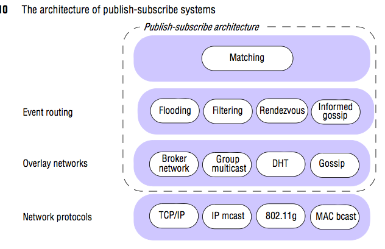
Pub/Sub例子

- 364 Do you know the future of jvm？the future of java？the future of data？the future of compute？ the future of language？
- 365 设计好的API先从方法命名和方法参数做起。

- 366 分布式算法(Distributed algorithm)分类：原子提交（2PC，3PC），一致性（Paxos，Raft），分布式查找，领导选举，互斥，资源分配，复制，可靠广播，生成树等。
- 367 间接通信总结

- 368 CAP理解：

**C+A **以2阶段提交(2 phase commit)为代表的严格选举协议。当通信中断时算法不具有终止性（即不具备分区容忍性）;
**C+P **以Paxos、Raft为代表的多数派选举算法。当不可用的执行过程超过半数时，算法无法得到正确结果（即会出现不可用的情况）;
**A+P **以Gossip协议为代表的冲突解决协议。当网络分区存在和执行过程正确时，只能等待分区消失才保持一致性（即不具备强一致性）
- 369 人类不可能制造永动机同样也不可能满足flp impossible或cap。cap打破了制造超级计算机的幻想。一台有无限存储和计算能力的“超级计算机”，可以提供无穷大的存储容量，并且可以将计算时间降低至无穷小。
- 370 分布式系统设计其实就是就权衡cap。
- 371 cap权衡在nosql中的应用

- 372 Lamport逻辑时钟（Logical clock）不能捕获因果关系，但是向量时钟（Vector clock）可以捕获因果关系。
- 373 向量时钟有可能确保所有先于某个消息的所有消息接收后才传送这个消息。
- 374 A distributed hash table (DHT) is a reliable, scalable, wide-area data storage system that frees programmers from many of the complications of building a distributed system
- 375 DHT不是一个算法也不是一个数据结构，而是一个解决分布式问题的一个存储系统。
- 376 DHT的优缺点


- 377 分布式系统和计算机网络的一个普遍问题是没有全局共享时钟。不同机器上的进程有自己的时间。
- 378 时钟概念理解：make程序。
- 379 Lamport：Happen-Before，Vector Lock，Logical Lock,Lamport TimeStamps ，Vector TimeStamps....
- 380 Lamport：时钟同步是可能的，但是不是必须的。如果两个进程间不进行交互，那么时钟无需同步。重要的不是所有的进程在时间上完全一致，而是他们在事件发生顺序上要达成一致。
- 381 互斥算法：

- 382 进程同步的基础问题：1 时钟 2 互斥 3 选举
- 383 时间，时钟，事件顺序。

- 384 复制可以提高可靠性和性能，但是带来多副本间数据不一致的问题和消耗更多网络带宽。复制代价大小取决于进行一致性处理的代价。
- 385 一致性实现的关键思想：以单个原子操作或者事务的形式在所有副本上执行更新。
- 386 可扩展问题可以通过复制和缓存技术得到缓解，但是保持所有副本一致性通常需要全局同步，而全局同步又会带来严重的性能下降。可行的方法是放宽一致性的限制。如放松以原子操作方式执行的要求。可放宽程度取决于复制数据的访问模式和更新模式更取决于数据的用途。
- 389 Mark Richards 在software architecture patterns一书中将架构分类以及架构特点：

Overall Agility：整理灵活性 Deployment 部署 Testability 可测性 Performance 性能 Scalability 扩展性 Development 开发
- 390 常见的编程范式：命令式，申明式，结构化，过程化，函数式，面向对象，事件驱动，基于自动机的（有限状态机）
- 391 没人实现Chrome浏览器使用分层架构模式，也没人实现Web网站使用微内核架构模式。但是Web框架本身可以采用插件模式。RPC框架实现用Broker模式。但是RPC本身请求过程可能是分层模式（去Db请求数据）。
- 392 POSA1。分类架构模式

- 393 多副本写实现一致性：Lamport时间戳+定序器的对称多播
- 394 分布式系统中向量时间戳提供了一种表示历史记录的方法。（历史读写操作集合）
- 395 原子性是很多应用程序的重要特征。分布式系统（包括分布式事务）中的原子性基础是分布式提交协议。
- 396 容错的关键技术-----冗余（Redundancy）
- 397 分布式服务器故障模型

Arbitrary failure 也叫 Byzantine failure。
- 398 CAP

- 399

第五章
- 400 一致性模型：较少限制的模型比较容易使用，而带来较多限制的模型使用起来比较困难，但是容易使用的模型的执行效果不如复杂模型那样好，这就是生活。
- 401 开发人员为应用程序指出一致性需求但是获得这种需求可能是很困难的。开发人员往往不熟悉处理复制问题，更不要说让他们理解一致性的详细信息了，因此，编程接口必须是简单的且容易理解的。
- 402 冗余技术：1 信息冗余 2 时间冗余 3 物理冗余。 物理冗余是提高容错性最著名的技术。眼睛，耳朵，手，飞引擎。
电路设计的TMR-三倍模块冗余
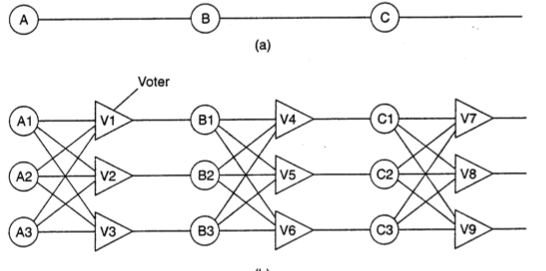
- 403 Quorum：多数表决的一个操作是否在分布式环境中执行。可用于提交协议或者复制协议。
- 404 语言的分类
 @
@
- 405 多语言金字塔


- 406 编程上下文设计思路影响了开发工具：
复合型抽象：细粒度组建构成整体。Unix shell
上下文抽象：基于插件的架构。elispe，maven，ant。必须先理解上下文。
- 407 基于微内核的架构（也叫基于插件的体系）：Eclipse IDE和Amoeba。其他基于插件的架构：mysql引擎，hybris加速器。
- 408 JVM是个什么架构体系？

- 409 思考软件架构与业务架构：spring什么架构？网络什么架构？netty什么架构？elispeIDE什么架构？dubbo什么架构？linux内核什么架构？秒杀什么架构？平台开发什么架构？消息队列什么架构？编译器什么架构？mysql什么架构？微服务什么架构？hybris什么架构？jvm什么架构？垃圾回收器什么架构？spanner什么架构？hdfs什么架构？大数据平台什么架构？uds什么架构？word什么架构？任何软件均有其架构，也就是设计思路。
- 410 架构就是设计思路。设计思路就是解决系统关键的几个问题，提出关键的问题并解决就是架构。
- 411 设计rpc，设计rpc的框架和设计基于rpc的应用架构。第一个是设计架构的架构，第二三个是设计架构的应用。设计RPC更抽象。
- 412 SPI在JDBC中的应用


- 413 各种SPI机制对比

- 414 框架灵魂：bean之于spring，handler之于jetty，valve(阀)/container之于tomcat，而HSF框架本身没有灵魂。它们是面向新需求的扩展点，是框架解决变化的原则。
- 415 SPI

- 416 Cassandra设计 = Google Bigtalbe（HBase） + Amazon Dynamo，特点：分布式，无中心（对等架构，Gossip），弹性可扩展，高可用，容错，可调一致性，面向列。
- 417 最终一致性的“最终”一般是毫秒。
- 418 区块链是分布式技术的应用，一种去中心化的技术架构。
- 419 区块链通用架构 。POW，POS，PBFT，RAFT
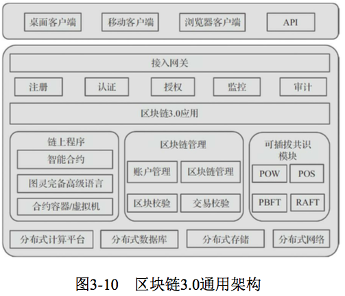
- 420 spanner和aurora区别

- 421 OLTP和OLAP区别

- 422 数据库对比

- 423 IT本质是计算。图灵机是现代计算机的理论基础。冯诺伊曼架构主导了计算机60多年的发展。宏观架构的几次变化，从最底层看，在新的场景中为突破底层冯诺伊曼的瓶颈（指令串行执行，程序和数据共享总线，计算和数据分离）在而进行的上层调整，在IT层面遇到的问题，将冯诺伊曼按照特定的协议按某种架构进行组合。以满足特定的需求。
- 424 分布式存储系统对比
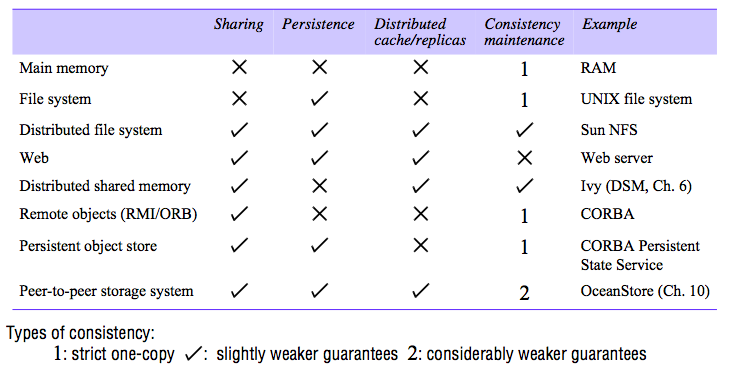
- 425 可用性
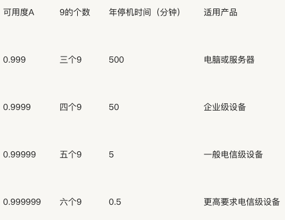
- 426 可用性分析

- 427 赵班长的缓存知识体系（点击查看）


- 428 运维知识体系（点击查看）


- 429 分布锁兼容表

NL：Null 对资源不访问 CR/W：并发读/写 PR/W :保护性读写 Ex：互斥，独占
-
430 数据库锁兼容性


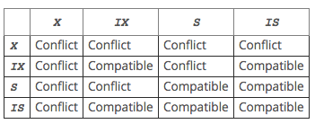
- 431 Oracle锁兼容性：

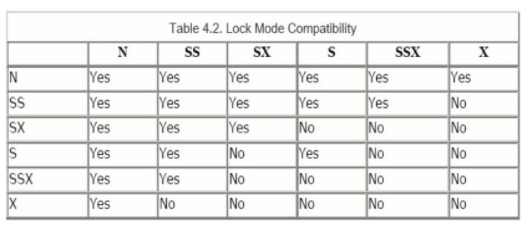

- 432 SqlServer锁兼容性

- 433 技术趋势

技术热点到炒作到企业产品输出。
- 434 进程间通信方式

-
435 进程间通信方法，协议，库

-
436 学Lisp就好比学道德经，对现在有什么作用？
- 437 编程本质是和计算机(图灵机)交流，和一种计算模型交流，编程语言只是交流途径，但是交流的思维和层次不一样。更有意思的是你在和人造的东西在交流。这种计算模型是科学的，但是又是艺术的。编译器怎么看设计模式？披着狼皮的羊而已。
- 438 函数式编程语言

- 439 大部分高级语言是图灵等价，或者图灵完备的。
- 440 解决一个困难的问题（制度化）：1使用一个强大的语言 2 为难题写一个事实解释器（跨平台的JVM） 3 自己变成难题的人肉编译器。设计模式就是人肉编译器。设计模式更多是工程范畴。
- 441 模式与Lisp：23种设计模式16种List语言本身已经提供了。
- 442 PaulGraham谈模式：当我在自己程序中用到了模式，表明某个地方出错了，程序的形式应该仅仅反映他所解决的问题，代码其他地方外加的形式都是一个信号，说明我对问题的抽象还不够深，也经常提醒自己在手工完成的事情，本应该通过宏的扩展自动实现。
- 443 工具论本质在于目的大于过程，目的到达。手段无所谓。语言是工具，数据库是工具，服务器是工具，人是为了商业目的服务。不免，有些悲哀。你是生死的工具么？工具思维下越学人越变得像工具，全然失去编程的乐趣。失去了对事物本质的追寻。原理的意义也竟然丧失。
- 444 架构图：栈式和流式。栈式体系软件组成，流式体现软件信息流。
- 445 eclipse架构解析：


**核心运行时：**Extension Object，IAdaptable，AdapterFactories
**核心工作区：**访问文件系统资源Proxy，Bridge，工作区：Composite，遍历资源树：Visitor，跟踪资源变化：Observer，批量修改：Execute Around Method
**JavaCore：**从资源到java元素：Adapter，Java元素：Virual Proxy，Java元素树：Composite，类型体系：Objectify Assocations
，跟踪Java元素变化：Observer，收集结果：Builder，抽象语法树：Visitor
**SWT：**组合窗体组件：Composite，定义布局：Strategy，响应事件：Observer
**JFace：**Viewer：连接窗体组件和领域模型：Pluggable Adapter，动作：Command
**UI工作台：**懒加载：Virtual Proxy，持久化UI状态：Memento，工作台服务：IAdaptable
- 446 eclispe架构：微内核+插件
- 447 技术选型本质是取舍与权衡过程。对技术细节理解越深，踩坑将越少。每到一个点，就是一个取舍。不能领悟取舍，就不能领域技术精髓。
- 448 HashMap体现了工程取舍思维。
- 449 新问题有新解法，新解法又会带来新问题。
- 450 顺序磁盘比随机内存快？Kafka？
- 451 CAP在工程中的应用

- 452 CAP新解

-
453 分布式系统8条错误假设
-
网络是稳定的。
-
网络传输的延迟是零。
-
网络的带宽是无穷大。
-
网络是安全的。
-
网络的拓扑不会改变。
-
只有一个系统管理员。
-
传输数据的成本为零。
-
整个网络是同构的。
-
network is reliable.
-
Latency is zero.
-
Bandwidth is infinite.
-
The network is secure
-
Topology doesn't change.
-
There is one administrator
-
Transport cost is zero.
-
The network is homogeneous.
- 454 集群和容器的“OSI模型”：

- 456 虚拟机：系统与进程的通用平台。

- 457 虚拟机多样性举例：

- 458 设计一个虚拟机jikesrvm

- 459 高级语言虚拟机的理解：

- 460


- 462 微服务设计模式：（click here）

- 463 CAP

- 464 Gabage Collector


- 465 编译器和解释器架构区别


- 466 Java编译器和解释器模型


- 467 JVM架构【Class Loader Subsystem，Runtime Data Area，Execution Engine】

- 468 Java原理两问：1 Javac HelloWrold.java 发生了什么？ 2 Java HelloWorld 发生了什么 ？
- 469 Python解释器

- 470为什么Java没有eval()? 如果加入？在编译时加还是运行时？
- 471 BSF-Bean Scripting Framework Java调用其他语言通用框架。Nashorn和Rhino是JDK官方实现的JS脚本引擎。JSR223。而JPython是非官方实现的脚本引擎。scripting-languages，List_of_JVM_languages，jvm-languages �

- 472 开源协议
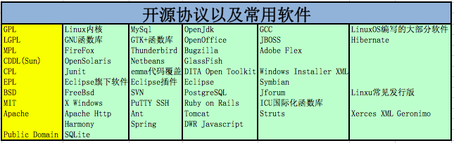
- 473 Apache Harmony

- 474 Dynamic Runtime Layer Virtual Machine（DRLVM）架构图


- 475 JavaVm 和 DRLVM架构区别是什么？
- 476 MediaWik架构图

- 477 架构：The fundamental organization of a system, embodied in its components, their relationships to each other and the environment, and the principles governing its design and evolution. IEEE定义ISO/IEC_42010 IEEE_1471

- 478 Enterprise architecture framework（企业应用框架）：TOGAF等
- 479 TOGAF体系

- 479 计算模型的演进

- 480 理解语言分类(Understanding the Taxonomy of Languages)

从平坦到结构化，
- 481 开源流计算引擎

- 482 Unix代表一种文化，一种现象，一种人类思维，这种文化和禅宗有点像。它代表这一种思想体系，在这种思想体系下诞生的语言，工具，生态无不体现出这种哲学思想。
- 483 计算机领域经典的，思想几乎前人已经思考过了。伟大的思想诞生与哪里？
- 484 历史告诉我们一门学科的巅峰水平在其开始时候，会出现一个集大成者。其他后来者仅仅对其思想进行衍生或者补充。后世能有超越老子思想的人么？Unix编程艺术便是对历史的追溯和基本问题的重新思考。
- 485 It产业技术日新月异，然而在这其中，真正称得上伟大的东西寥寥无几。
- 486 软件世界的爱迪生：Bill Joy：发明了BSD，TCPIp,csh,vi,nfs
- 487 【C语言造就的Unix】是其他后续语言和工具和设计的思想的重要来源。
- 488 摘抄一段话：

伟大思想是什么？计算机体系伟大思想：缓存。 计算机软件伟大发明：Web，Lisp，Hash，Linux等等。
- 489 正则表达式引擎分类和比较：

- 490 Douglas McIlroy经典语录：
"Those types are not "abstract"; they are as real as int and float."
"As a programmer, it is your job to put yourself out of business. What you do today can be automated tomorrow."
"Keep it simple, make it general, and make it intelligible."
"The real hero of programming is the one who writes negative code."
- 491 面向问题抽象。面向底层具体。
- 492 要学习计算机名言。
- 493 DB发展：【From TiDB】

- 494 Java安全策略：（From：Java安全第二版）

- 495 Domain-specific language (noun): 一种专注于某一领域，仅针对部分表达方式的计算机编程语言。
- 496 字节码校验器(定理证明机)：

- 497 安全管理器存取控制器关系：

- 498 安全管理器作用域（详见源码）

- 499 理解权限继承体系：

-
500 double-check idiom在jdk源码中在：Policy.getPolicyNoCheck()
�
�
第六章
- 601 Java安全模型在于：沙箱。其思想在于：给你的程序一个可以"玩"（运行环境）的地方和玩的“玩具”（可以存取的系统资源）。
- 602 Java安全保证策略：类加载器，安全管理器，存取控制器，这三点构成了Java的沙箱体系。
- 603 理解Java安全：Platform Security，Cryptography，Authentication and Access Control，Secure Communications，Public Key Infrastructure (PKI)
Platform Security：Strong data typing，Automatic memory management，Bytecode verification，Secure class loading
- 604 Object的闭包传递-This process of loading and discovery can execute iteratively until a stable set of types is reached. This is called the “transitive closure” of the original type that was loaded.
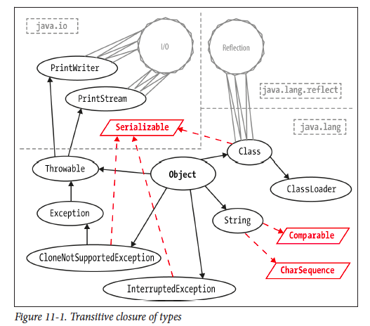（Java In a Nutshell-Chapter11）
- 605 比较三语言：

- 606 语言简史

- 607 网络协议

- 608 语言发展史

- 609 操作系统发展史

- 610 硬件处理器发展史

- 611 自动机理论
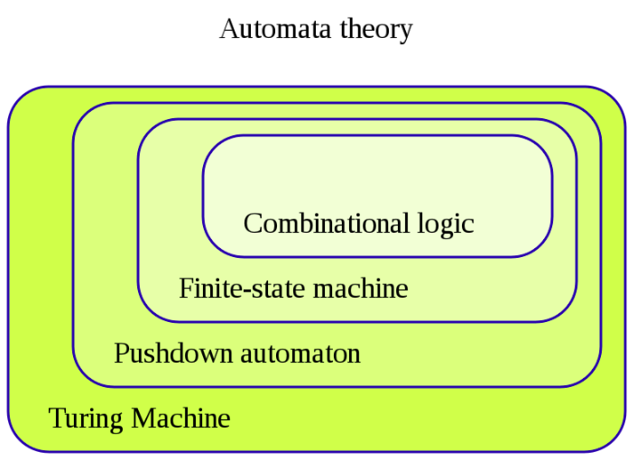

- 613 词法分析和自动机理论

- 614 编程范式的演进：

- 615 Java线程池拒绝策略：
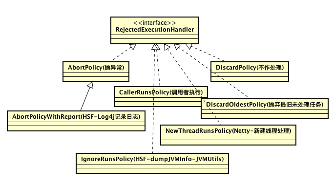
- 616 Map接口

- 617 Queue

- 618 List

- 619 Set


- 621 Map
622 Channel
- 623 Ngnix架构

from here
- 624 libevent的评估标准：

- 625 问一个软件的性能，需要问评估标准是什么。吞吐量和时延是什么的变量，什么是限制条件。
- 626 jim gray:虚拟内存是一个难以置信的好的创意，局部性则是一种深刻的原理。避免原理和创意混淆。
- 672 计算基本6大原理：通信，计算，记忆，协作，评估，设计。
- 673 领域与原理的矩阵图：


- 674 原理+实践催生领域。

第七章
- 700 PThreads是标准，LinuxThreads和NPTL是linux下的实现。NPTL为了解决LinuxThreads下的问题。
- 701 异步IO
| Blocking | No-Blocking | |
|---|---|---|
| Synchronous | write,read | write,read(select/poll) |
| Asynchronous | - | aio_write,aio_read |
- 702 异步IO实现：
**问题：**异步IO
原理：EventLoop
机制：epoll(Linux)，kqueue(FreeBSD, NetBSD, OpenBSD, Darwin) ， /dev/poll(Solaris, HPUX)，pollset(AIX)，Event Completion(Solaris 10)，I/O Completion Ports（IOCP-Windows），event ports（SunOS）
**实现库：**libev（select, poll, epoll, kqueue and event ports backends）
libevent（/dev/poll,kqueue(2),POSIX select(2),Windows IOCP,poll(2),epoll(4) and Solarisevent ports）。
libuv（event-driven asynchronous I/O model——Full-featured event loop backed by epoll, kqueue, IOCP, event ports.）
- 703 C10K问题经典文章 C10K
- 704 NodeJS = GoogleV8 + Libuv，单线程，非阻塞IO
- 705 NGNIX的连接处理方法：select,poll,kqueue,epoll,/dev/poll,eventport
- 706 juc架构
任务执行框架：
并发集合框架
任务种类框架

- 707 程序设计是精确地艺术，也是模糊的艺术。精确到一个字节的控制，也可以模糊到一张架构图。
- 708 对专业领域永远保持好奇心和谦卑之心。
- 709 一个程序使用另一个程序的三种方法：static linking，dynamic linking，Dynamic loading

- classloader本质是运行时候使用其他程序的class文件的一种方法，动态代理发生在反射和类加载时候。静态代理有点类似于c中的静态链接库。
- 710 IPC方法大全：

- 711 虚拟机类型：

- 712 项目架构和项目框架区别：

讲项目用的框架简单，但是讲清架构不容易。面试者将项目时候容易将项目用了XXX技术，其实是在讲Framework，而不是Architecture。
框架是是一种特殊的软件，软件设计的半成品，是解决方案的提供者。而架构是软件设计的重要决策。架构决策往往会体现在框架中。
- 713 框架是软件，架构不是软件。
- 714 架构关注：拆分系统组件(分离关注点)+组件间静态结构关系+组件间动态交互关系。
- 715 redis senitnel：raft leader协议选主 redis cluster：raftleader协议选主，gossip传播更新。
- 716 Framework：

Architecture：

- 717 Grady Booch说：“设计软件系统中的重要协作是设计阶段架构设计师的主要活动。这些协作表示出了架构的精髓……”
- 718 Ivar Jacobson说：“接口是架构的核心。” - 协作将涉及到接口
- 719 库lib，框架framework，模式pattern，组件componment，架构Architecture之间的关系。框架从软件中ioc解耦了，而模式应用于库，框架，组件，架构所有里面，框架是特殊的软件。
- 720 技术变现能力？你怎么评估自己的水平？什么叫初中高级Java？阿里体系内做出的软件是什么？大概就那样么？看书的目的是什么？- 探索领域。技术变现能力？简单的模板来挑出合适的人选？
- 721 测试视角：好的软件基本就是:：能用。
- 722 阿里体系下的软件是什么样子的？另一种生存：观察，观察，在观察。
- 723 成长维度也就是变化的维度：1 知识的深与广谈自我积累 2 项目维度谈贡献 3 产品和解决方案谈架构 4 业务谈生存额发展 5 思维谈未来，其中思维提升最难。
- 724 不学习无法成长。学习什么成长最快？
- 725 温昱的程序员成长模型：

- 726 超越软件架构：创建与维护优秀解决方案。很多优秀书籍谈软件架构，以及如何选择架构，这些书可以帮助建立成功的架构，但是却不能帮助建立优秀的解决方案。
-
727 认识提升：domo：自动化运维平台，微服务治理平台，监控平台，稳定性平台
console：核心业务平台，对外输出能力体现，运营能力的体现
所有组件：微服务架构设计，组件与组件间交互才是核心，具体代码编写倒是次要。编写异常反而成为了写代码最需要考虑的地方。
产品维度看私有云方案是特定领域的解决方案。
- 728 从单机到多机，从集中式到分布式，所面临问题相似，根据所处层次而导致解决方案不同。业务组件从单机到多机，redis从单机到多机，mysql从单机到多机，整理与归纳这些组件在分布式时候的特性。如何做复制，如何保证数据一致性，如何做高可用，如何保证性能，如何进行扩展？以组件的角度看所有软件。而非以软件看软件？。
- 729 高可用与伸缩性解决方案：

- 730 从功能-》框架-》组件-》架构-》平台的进化。平台促进业务，业务发展平台。
- 731 云计算的服务模式：Iaas，Paas，Saas。这对于一个商业软件公司实现其产品提供了思路。也是一个公司设计师构建其软件资产需要考虑的问题。小公司缺乏平台设计与运营能力。
- 732 深入业务对于开发来说是一种选择，更是一种眼光。
- 733 技术人员要走出对技术的痴迷，把眼光放长远，从细节上了解什么可行，什么不可行，但是必须同时立足市场，熟知业务，知道企业战略，目标以及问题。
- 734 对问题理解越深。越能在另外一种场景下灵活应用。
- 735 设计平台，大公司玩法，用框架解决问题，小公司玩法。
- 736 理解自己正在做的东西到底是什么？
-
737 《软件开发本质论》
-
Talk is cheap, show me the values. 价值
-
Talk is cheap, show me the features. 团队
-
Talk is cheap, show me the deliverables. 产品
-
Talk is cheap, show me the codes. 开发
-
Talk is cheap， show me the tests. 测试
- 738 在架构层面：数据库只是实现细节，应用程序程序框架只是实现细节，web是实现细节。
- 739 只有一种分布式事务算法：2PC，其余均是变种。只有一种一致性算法：Paxos，其余均是变种。
- 740 学术和工程的区别：学术提供抽象模型，工程提供实现细节。
- 741 Linux中抽象：everything is file，common file interface (类似io)，pipe
- 742 算法决定底线，系统设计决定上限，领域知识决定整体的知识架构。
- 743 系统设计：**Systems design **is the process of defining the architecture, modules, interfaces, and data for a system to satisfy specified requirements （架构，模块，接口，数据存储，特定需求），虽然需求在最后，但是必须第一考虑。
- 744 系统设计的snaker(舞蛇人)原则(宏观与微观)：
Scenario(场景):用例和接口
Necessary(限制):需求和假设：性能估算(disk,io,cpu,lantency,throughput)
Application(应用):服务和算法
Kilobit(数据):数据
Evolve(演化): 性能,扩展,鲁棒,性能估算
Result(结果): 业界存在方案，日志(elk，flume，kafka+hbase)

舞蛇人意味着系统设计很凶险，艰难险阻很多，掌握蛇要打七寸，抓住关键问题。
-
745 常见系统设计题目：
-
**基础设施：**design file system，design rate limter,design monitor system,design log colection，design cache，design big data platform,design tiny url, design database, design os, design kv store， design a gateway，design a Garbage Collection System，
-
**中间件：**design rpc(high performace) framework, design mq, design mysql proxy,design sharding sharding proxy,design a lib,design web crawler,
-
**领域业务：**design google search,design youtube,design netflix,design facebook, design linkedIn,design uber, design recommender system, design wechat,design hit counter, design e-Commerce website
- 746 系统设计1问题和2储备。


-
747 另一种系统设计思路（自底向上）：
-
requirements clarification: design fb messenger:push notifications,group chat,attchments,text chat
-
system interface definition:SendMessage(from_user, to_user,message, ...)
-
back-of-the-envelope estimation:how many qps(read or write?):how much disk storage or memory is needed?
-
design data model:er diagram
-
high-level design
-
compoent design
- 748 性能基准数据：对基础数据要敏感。


- 749 学会抽象一个技术的最简单模型：mongodb，lsm-tree，map-reduce，gfs，bigtable
map-reduce的实现：
mongodb实现：从文件系统实现，逐渐加功能，
你看到的mongodb之所以复杂，因为是最终成品，包含了大量优化和工程考虑。切记：存储系统都是从文件系统演化而来的。
- 750 世界上最简单的数据库：


从这种设计带来的启发：在复杂的事物其基础模型可能真的很简单。正如阴阳造就万物。
- 751 读写性能：随机，顺序，范围，查找和排序
- 752 clean architecture:设计原则
类层设计原则：SRP,OCP,LSP,IPS,DIP
组件层设计原则：组件内：REP,CCP,CRP 组件间：ADP,SDP,ADP
- 753 软件架构本质规划如何将系统划分成组件，并安排组件间的排列关系，以及组件间互相通信的方式。架构目的更好的对这些组件进行研发，部署，运行和维护。
- 754 软件架构终极目的最大化程序员生产力同时最小化系统总运营成本。
- 755 软件架构设计最高优先级部署使得系统正常工作这是种不正确的说法，运行时只是一小部分。软件架构的质量与能否正常工作的关系并不大。
- 756 Bob大叔系列：

- 757 一个良好的架构设计应该围绕用例来展开，这样的架构设计可以脱离框架，工具以及使用环境下完整的描述用例。并且尽可能的允许用户推迟或者延后决定使用什么框架，数据库以及web，框架应该是一个可选项。
- 758 良好的架构设计只应该关注用例，而把其他因素隔离开。避免让框架主导我们的架构设计。
- 759 Web不是一种架构，而是一种交付手段。
- 760 REP.CCP.CRP之间的权衡

- 761 只实现功能不难，高性能，低成本，高可用，高可运维，高灵活性很难，在线量每提升一个量级，技术难度也提高一个量级。
- 762 评估技术水平：hold多少并发，多少qps，多少用户。尽量以量化的角度去评估。
- 763 十万，百万：高性能，7*24小时i连续服务。 千万：高可用，高可运维。亿级：高性能，高可用，高可运维，高灵活性。
- 764 技术栈!=技术能力。使用了redis和使用redis hold住多少请求是完全两个问题。
- 765 互联网架构模板-李运华：
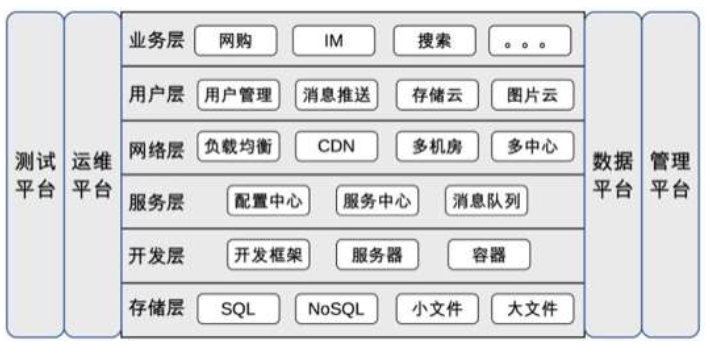
- 766 如果你不懂google系列的paper的话，对DB的理解落后于时代10年。
- 767 即使应用程序所使用的数据系统提供了比较强的安全属性，也不意味着应用程序就没有一定数据损坏与丢失。(程序bug，人为操作，故意插入重复的，删库)，数据系统降低了高层出现问题的可能性。
- 768 why使用mq？ 1 两个系统处理速度不一样 2 正确性不取决于发送者是否等待消息 3 bounded buffer数据结构
- 769 系统模型采用二元法处理故障：假设有些事情可能发生，有些事情不会发生。如果有足够多设备来运行你的软件，即使再不可能的事也有可能发生。成熟系统同样UI考虑不太可能出错的可能性，并且主动管理这些风险。HDFS和AmazonS3不完全信任磁盘。所以信任但要确认。
- 770 软件开发重要的能力是设计能力。
- 771 工作内容：产品设计，系统设计，软件设计，编码实现，测试，部署，运维。这些工作中，什么是最核心的？从业务的角度看产品设计和系统设计是最核心的，编码实现则更像某种翻译工作。因此，我们得到第二个有关研发的事实： **软件研发本质上是设计，**如果我们将产品设计的工作交给TPM（类似产品经理）或者PM（业务人员），我们可以将这个事实针对研发人员进行改写：软件研发能力最关键的是设计能力
- 772 软件开发两个事实：1 **软件研发本质上是一个学习的过程，研发要有快速学习能力。**2 软件研发本质上是设计，软件研发能力最关键的是设计能力
- 773 SDE：Someone Do Everything。
- 774 Amazon：人人都是架构师。
- 775 计算机三大系统软件：数据库，操作系统，编译器。
- 776 软件开发基础知识应该是：熟悉三大系统软件和网络，泛语言编程。而不是和具体的语言挂钩。Java开发者狭义的基础是什么，广义的基础是什么？
- 777 技术是为业务服务，技术只是工具，仔细想想，也就是如此。但是怎么用工具就是问题了。
- 778 多积累线上处理问题经验。
- 779 crud没有技术含量的确如此，但是写出没有bug的crud你试试？多少次错误都在粗心大意。
- 780 monitor=Log(ELK)+Metrics(Prometheus)+Graph(Grafana)
- 781 every day source code，every weekly translate， every month small progress。
- 782 深入理解JVM的每章经典(颇值得玩味)：
世界上没有完美的程序，但是我们不应该沮丧，因为写程序本身就是一个不断追求完美的过程。
Java和C++之间有一堵内存动态分配和垃圾收集技术所围成的高墙，墙外面的人想进去，墙里面的人想出来。
代码编译的结果从本地机器码转变为字节码，是存储格式发展的一小步，却是编程语言发展的一大步。
从计算机程序出现的第一天，对效率追求就是程序天生的坚定信仰，这个过程犹如一场没有终点，永不停歇的F1方程式竞赛，程序员是车手，技术平台则是在赛道上飞驰的赛车。
并发处理的广泛应用是使得Amdahl定律代替摩尔定律成为计算机性能发展源动力的根本原因，也是人类压榨计算机运算能力的最有力武器。
- 783 不断学习不一定能到达优秀或者卓越，但是可以避免低水平。
- 784 业务逻辑和实现关系:业务逻辑很简单，实现很难，业务逻辑复杂，实现很简单。业务逻辑简单，实现简单，业务逻辑复杂，实现也复杂，我们需要做到，业务逻辑复杂，实现却简单。
- 785 保证数据一致性有DB(三大完整性约束)来做还是业务层(关联Update)来做？
- 786 Data Access 由DB来做还是业务层来做？(性能，分布式，可维护性，内存，CPU，是不是强业务逻辑轻数据访问等角度考虑，没有固定答案) ，有时候更愿意相信数据库，而不是程序员。
- 787 Hybris Request Model:

- 789 程序代码重复是造成Bug重大原因之一。因为重复会造成耦合。
- 790 重构前先写一个单元测试，就知道如何重构了。
- 791 代码任何地方都可以抽象，只是必要性而已。我们很多时候做的事情无非是消除重复，软件工程追求目标之一也是复用性。重构的很多时候也仅仅是消除重复。
- 792 数据结构，算法，系统设计(WEB,大数据)。
- 793 封装，复用体现了一家软件公司的工程化水平。
- 794 看一家公司使用某中间件的深入和认知，取决于对其进行了哪些封装，复用，创新。比如Redis和Cache。
- 795 GO=C+Python
- 796 Go:不要使用共享数据来通信，而是使用通信共享数据。
- 797 重入锁：已经锁上的再次上锁
- 790 GO:通信来建立并发程序(通信并发) JAVA:共享数据建立并发程序(共享并发)
- 791 “计算机科学只存在两个难题：缓存失效和命名。” — Phil KarIton
- 792 如何重构超级大的一个Controller？？？先写Service，然后加单元测试，拆分Service，消除重复。 如何重构一个超级大的Service？？？先写单元测试，拆分Service。找到粒度最小的服务。
- 793 Spring 配置=代码，配置的重复就是代码的重复
- 794 微服务不等于SpringBoot，正交性的服务本身就是微服务。
- 795 重复对自然来说是本能，对代码却是万恶的来源。
- 796 Java并发提供了三个核心抽象概念(任务，任务提交，任务执行)，具体来说：1 任务，从Runnable，Callable，FutureTask，到ForkJoinTask 2 任务提交 ExecutorService，实现submit，invoke方法，核心子类：AbstractExecutorService作为骨架实现 3 是任务执行Executor，核心子类ThreadPoolExecutor(核心方法execute)，ForkjoinPool(因为重写了提交机制，所以核心方法submit和execute)，纯接口包含了命令模式，模板模式，状态机模式等等。这就意味着你可以自定义提交和执行机制。体现了多种策略和实现分别，非常漂亮。
- 797 ExecutorService#submit 提交的是FutureTask，返回的也是FutureTask，FutureTask对Runnable和Callable进行了封装，使得任务有了状态，可以判断是否结束， 可以取消任务。
- 798 框架和人一样，都是有等级和灵魂之分的，行尸走肉和富有灵魂和激情的人，完全不一样。Spring框架的灵魂在于Bean，Junit灵魂在于Tester,Suitcase,Runner. Tomcat在于Container,Pipeline,Valve. .灵魂的含义是有一致性，强有力的概念，最核心的概念，是框架创造的概念。
- 799 写Java程序的只有读过Effectvie Java的和没有读过的。
第八章
- 800 JDK源码必须作为个人学习Java技术的最重要基础，就像JDK是你的作品一样热爱。
- 801 面试候选人，同等水平下，会算法的优先考虑。
- 802 Effevtive Java：JDK源码指南。
- 803 Spring核心：给POJO提供声明式服务。
- 804 Java最值得投资学习的是集合和并发包。
- 805 Google，Amazon等论文更像是工程经验，并不学术论文。Google如何做系统？真正的系统设计是什么样的？为什么构建一个分布式系统会这么复杂？
- 806 技术学习：首先技术本身，其次技术生态（公司其他产品，关联上下游，定位等），最后技术商业。
- 807 算法，论文是科学主义，算法要证明正确，而不是跑通就行。论文要严谨，有数据有结论。工程是经验主义和实用主义，每个知识点很多，但是每一个都不复杂。也不会全部用到，能跑就行。
- 808 思维密度排行：数学>算法>工程，算法是对一个人思维活跃度，以及严谨程序，代码速度的考察。学好数学不应该局限于学好知识点，而是数学思维。
- 809 一个知识背后代表了一种思维模型。分布式系统思维模型，经常和一致性，共识性，复制。而数据系统，经常和事务，数据模型，存储模型，读写模型有关系。一个事物，有多种角度(模型)去理解。 模型可以用来：推理，解释，设计，沟通，行动，预测，探索。
- 810 工程技术要学全面，但是不一定很深入。全：某个技术的知识体系。
- 811 技术深度因人而异，因事而异。深度应该关于思考，而不是知识本身。
- 812 技术考察维度：深度，广度，全面，质量，通达。
- 813 分布式系统的问题会在协议层，中间件(存储)层，应用框架层出现。越往上越对开发不透明。虽然都会在某种程度减少复杂度，但是最上层需要。
- 814 分布式系统关键一问：节点变化(新加，删除，宕机，超时，网络延迟)时，系统会发生了(一致性，可用性，正确性，复制)什么？
- 815 思维的强度以及复杂度：CS教材和算法。体系化培养的是思考问题能力和深度。
- 816 我们有时候过早陷入细节，而对设计问题闭口不谈。
- 817 AQS是基于状态的同步框架。实现类需要思考，状态是什么？
-
818 同步可以通过阻塞和非阻塞实现。
-
| 类 | 阻塞同步 | 非阻塞同步 | | -------------------------- | -------- | ---------- | | 原子变量 | | √ | | synchronize | √ | | | AbstractQueuedSynchronizer | √ | | | LockSupport | √ | | | ReentrantLock | √ | | | ReentrantReadWriteLock | √ | | | StampedLock | √ | | | ArrayBlockingQueue | √ | | | ConcurrentHashMap | | | | ConcurrentLinkedQueue | | √ | | ConcurrentSkipListMap | | √ |
- 819 多进程：多个进(线)程为你干活。分布式：多个机器为你干活。
- 820 一些系统的模板：
- AVO(Atomic, Visible, Ordering)。
- ACID(atomicity, consistency, isolation, durability)。
- C-LSP(Correctness：Liveness, Safety, Performance)。
- APCNSCRFS(Architectures, Process, Communication, Naming, Synchronization, Consistency and Replication, Faluttolerance, Security)。
- DDIA:RCM(Reliablity，Scalablity，Maintainable)。
- CAP(Consistency, Availability, Partition tolerance)。
- RUM(Read Update Memory)。
- DDIA:MSERPTCC(Model, Storage, Encoding, Replication, Partitioning, Transaction, Consistency and Consensus)。
- PACELC（Partition tolerance，Availability，Consistency， Else， Latency， Consistency）。
- 821 分布式系统先研究功能，后研究分布式特性(如泛型和MSERPTCC)。从分布式特性看功能特性，如同提供kv服务的redis，consul，etcd功能类似，但是分布式特性截然不同。对于工程技术选型来说，最重要的是复制和一致性特性。
- 822 技术选型： 同样的功能不同类型，同类型的系统或中间件实现，最本质的区别是：系统设计以及架构权衡。
- 823 数据存储选型指南：1. 看得见的：从功能角度，从数据模型角度，从OLTP，OLAP，HTAP，非关系角度，从查询/写入角度。 2. 看不见的：从数据量角度，从复制角度，从CAP/PACELC/HAT角度，从分布式特性角度
- 824 JCF：接口定义类型，抽象实现骨架，实现千变万化。
-
825 存储系统核心拆分：内部实现，外部交互，架构属性。具体分为：
-
单机特性
- 数据模型
- 存储模型
- 读写性能
-
分布式特性
-
用户视角：读/写(增删改查)路径，启动/关闭过程。
-
系统视角：一致性模型，复制，分区，共识，容错)。复制，共识，分区等等细节都会在用户读写路径视角展现。
-
-
- 826 NoSQL分类：数据模型，存储模型，一致性模型，物理模型，读写性能，辅助索引，故障处理，压缩，负载均衡，原子读-改-写，加锁等待死锁。
- 827 知识是一座摩天大楼，你可以在记忆的脆弱基础上走捷径，也可以在理解的钢架上慢慢建立。（知识取决于记忆和理解两个维度）
- 828 为了增加对事物（技术）的理解：读源码不是必须的，也是最慢速的方式。还可以通过书籍，论文，动手实践，他人经验。
- 829 读源码百分比：结构和设计优先，其次API，实现最后。HashMap 2000多行，结构占据了一半之多。
- 830 分布式锁本质是共识问题，需要多个节点共同认可某个节点是锁的占有者，否则就会认为自己也可以占有锁，redis做分布式锁并不是一个好的idea，因为本身并不提 供共识功能，而是一个存储KV库。虽然选举算法可以选出来一个leader获取某个锁，但是并不是强一致性的，也不能满足安全性，活性，基于共识的分布式锁， 如基于paxos的chubby（暴露文件系统API和分布式锁服务），或者zab的zk，raft的etcd是更好的选择。
- 831 保证多个系统的数据一致性，抽象比如内存和磁盘，磁盘和磁盘，内存和内存。（内存脏页和磁盘，数据写入和磁盘，内存和redis(磁盘+网络)），需要的机制是事务。事务提供了并发和恢复机制。单机 数据库事务是处理这类问题最复杂机制。而内存和redis因为多了网络，会导致不确定性增加，解决这个问题方法终极方案依旧是事务（分布式事务），由于内存和redis之间并不存在分布式事务，所以双写方案从本质解决不了一致性问题。如果解决不了，那么异步方案会更好。此时就不是强一致性了。
注：事务提供了一种非常强大的抽象机制，保证了ACID特性。
- 832 存储系统：单机模型参考数据库系统，分布式模型参考分布式系统。
- 833 多个节点组成的计算机是分布式系统。会面临分布式系统的设计问题。不同系统面临分布式问题一样，区别在于单机所提供的功能。如业务系统中，弹性设计，缓存一致性，通信（同步或异步），数据复制（多系统），命名服务等等均是分布式系统问题。
- 834 分布式系统的技术大部分是之前提出的，只不过某个成功系统进行了很多集成，从而产生创新。（如GFS，BigTable，Dynamo）
- 835 业务层多系统数据一致性：复制。复制的具体技术有：双写（主动复制），一写一拉取（被动复制）
| 主动 | 被动 | |
|---|---|---|
| 同步 | 双写 | 暂无 |
| 异步 | 通知 | 定时任务拉取，异步写。（如MySQL，把系统想象从节点） |
- 836 SQL优化核心是：少进行磁盘操作（读写数据）。（数据建模合理，索引，关联查询 -> 查询优化器 -> 执行计划 -> BufferPool+磁盘），数据库都在努力做这件事，SQL只是这件事的外部视角。
- 837 系统设计：数据量是最重要的考虑点。
- 838 横纵技术论。 缓存横向：操作系统缓存，数据库缓存，应用缓存。缓存纵向：缓存淘汰策略，缓存算法 内存管理横向：操作系统内存管理，数据库内存管理，JVM内存管理，应用程序内存管理。 内存管理纵向：分页，分段，Buffer Pool 类似的还有磁盘等等。
- 839 知识增长非累积，思维增长累积但非线性。知识积累会忘记，等于没有积累。思维复杂度上去了，就很难下来。学而不思则罔。思而不学则殆。
- 840 为什么用MQ（Bounded Buffer）？1 系统通信方式，其他方式不能这么通信。 2 系统处理速度不一致。3 数据从静止变成流动的。data at rest到data in motion（table and stream）。如异步，解耦，削峰，扩展性只是1,2带来的效果。也是传统MQ功能，但是新的MQ是实时处理平台。
为什么用Kafka？1 ksqldb，stream，table 2 data integration 3 real stream process（生态是什么？）
个人选择偏好:Kakfa > RocketMQ > RabbitMQ
- 841 消息中间件选型是非功能性优于功能性的原则。优先性能，其次功能。性能上不去，很难优化。功能没有，可以添加。不同存储选型是功能性优于非功能性（如性能）。因为数据模型重要性高于性能，且数据模型本身影响性能。但是同类型存储选型依旧非功能性优于功能性。 非功能性包括：数据量，性能，可用性，高可用，社区生态，个人/团队熟悉。 功能性包括：能不能满足需求？
- 842 三大系统软件：操作系统，数据库，编译器。操作系统和数据库可以对比。
- 843 文本编辑器的恢复机制
- UNDO：撤销，reverse your last action， CTRL+Z
- REDO：重做，reverse your last Undo， CTRL+Y
-
844 数据库的恢复机制
-
UNDO：Reverse the actions of txns that did not commit before the crash。
-
REDO：Repeat all actions starting from an appropriate point in the log。
-
- 845 存储系统单机视角：内存，磁盘。MySQL,ES,HBase,Cassandra,Redis,MongoDB
- 846 技术选型本质是从N个因素中选出你真正认为重要的因素，这些因素可能需要互相权衡，可以是长期，短期。从而服务于你的目的.
- 847 Buffer:速度不一致. Cache:提高速度.
- 848 mq and db:一个数据一直在流动，一个数据一直在静止。
- 849 关注思维，认知与方法。比如如何学习，如费曼学习法，如何阅读，系统学习，模型思维，体系化，结构化，整体化思维，认知，复杂思维，系统化思维，分形结构，批判性思维，数学思维，算法思维，科学方法等等。
- 850 JVM的AVO可以对标DB的ACID。而原子性概念非常强大和通用。CAS，物理的原子，
- 851 锁是一种逻辑概念，依赖于算法，而cas只是实现的算法的一个指令。
- 852 Jepsen一致性模型：1.CAP中将A也分级了，2.结合了DB和分布式一致性。
- 853 系统研究点：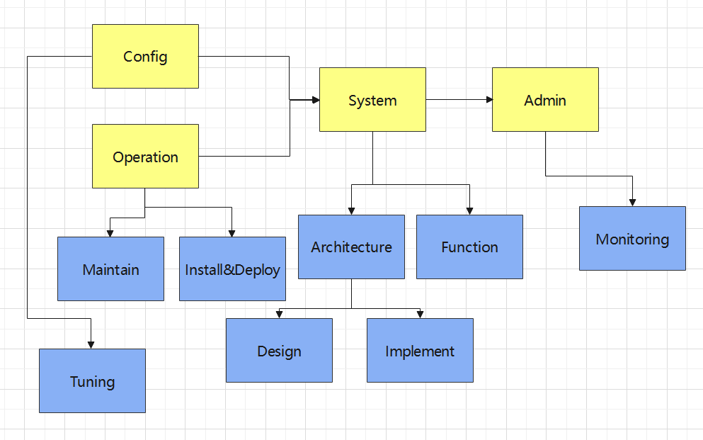
黄色上层：系统基本结构。
蓝色下层：系统基本结构分解和扩展。
- 854 技术选型模型：
- 定性：静态的因素占比法（f(x)=a+b+c+d），动态的决策树模型，案例分析法，成本收益分析法 。
- 定量：数据对比。因素占比法最关键的是你认为最重要的因素是什么。决策树模型分支上面是因素。
- 855 NoSQL Toolbox:

- 856 NoSQL Decision Tree:

- 857 分布式系统问题模型：

- 858 分布式系统知识体系：
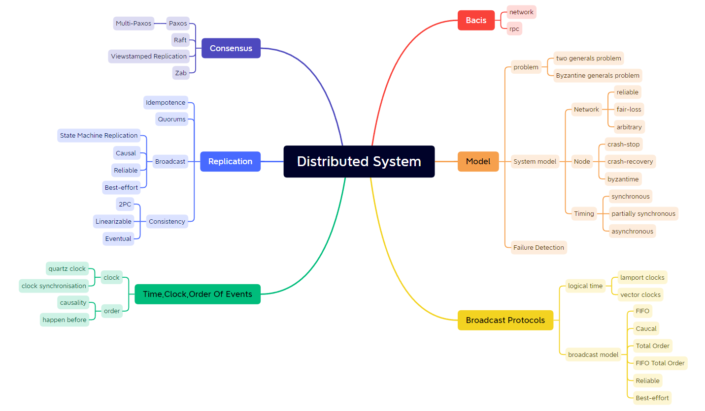
- 859 DDIA思维导图：

- 860 数据库系统内幕思维导图：

- 861 Hash算法考察点：1 单调性 2 平衡性
- 862 主从复制避免了写入冲突，但会导致单点写入故障，降低了可用性，提高了一致性。对等复制避免了单点写入故障，提高了可用性，降低了一致性。
- 853 水平扩展两种方法：复制和分片。复制和分片是正交的。细分为：主从复制分片，对等复制分片。
- 854 数据层演进总结：
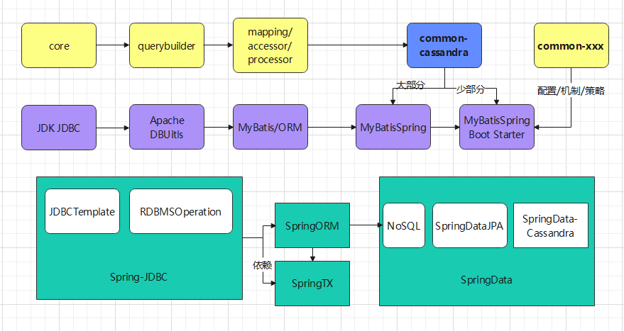
- 855 业内怪象：一些人明明没怎么看过源码，获得理解力也不是靠源码，但是他们总爱标榜看源码。这就是行业笑话所在。
- 856 我们所求的是更深刻，更广阔的事物观。
- 857 很多代码技巧在源码里面。但是如果追求理解力的话，理解一个事物最慢的方式就是看源码，其他方式很多。但是理解一个事物最深刻方式是写出来。
- 858 理解事物：从简入繁是学习，从繁入简是领悟。
- 859 MySQL和Redis同步问题：等价于异构系统数据一致性问题。
- 860 为什么业界异构系统的一致性方案这么少？
- 861 分布式系统基础技术：复制。复制代码，数据，计算能力，本我等等。复制可以带来高可用或者性能提高。复制是一个物体重复自身。
- 862 研究分布性系统起点是复制。
- 863 分布式系统关键区别在于：处理异常情况。
- 864 复制是种机制，而这种机制带来性能和可靠性。而性能和可靠性是系统属性，不是一个独立的组件，所以讨论复制时，需要从系统的整体出发。
- 865 问题本身会有更深入的问题。
- 866 并非所有系统可以清晰划分出CAP。比如ES，Kafka，Redis。在非共识算法下的存储，基本认为非强一致性（线性一致性，顺序一致性），但是也不一定是最终一致性，而是取决于参数调整， 而使用协议的，ZAB，VR，Raft，Paxos基本是强一致性。
- 867 强一致性典型技术：共识协议，最终一致性典型技术：版本向量，Gossip，反熵，冲突检测。其他的主备协议在强弱之间进行调整。
- 868 越可靠，模型越接近同步。
- 869 数据挖掘=机器学习算法+数据
- 870 复制是分布式架构的核心。
- 871 kafka是一个分布式的，可分区的，可复制的提交日志服务。
- 872 分布式系统最基础的行为：节点"开","关"，"扩"，"缩"时候发生了什么？
技术工程实践
工程实践，也即知识体系
Github地址
https://github.com/xiaozhiliaoo/practice-hub
访问地址
https://xiaozhiliaoo.github.io/practice-hub/
技术书籍阅读
计算机科学
分布式系统原理与范型-第二版
Ch1 Paper
Book: Open Distributed Processing and MultimediaJune 1998
Book: Beowulf cluster computing with Linux
Book: Web Services: Concepts, Architectures and Applications
Book: Transaction Processing: Concepts and Techniques
Clifford Neuman: Scale in Distributed Systems
The MOSIX Direct File System Access Method for Supporting Scalable Cluster File Systems
The Grid 2: Blueprint for a New Computing Infrastructure (2nd edition)
Open Grid Services Architecture, Version 1.0.
Middleware: a model for distributed system services
Ch2 Paper
BOOK:Object-Oriented Client/Server Internet Environments
BOOK:Principles of Distributed Database Systems
A Scalable Content-Addressable Network（CAN）
Towards A Taxonomy Of Software Connectors.
Software Architecture in Practice
The Many Faces of Publish/Subscribe
Client-Server Computing in Mobile Environments
A Survey and Comparison of Peer-to-Peer Overlay Network Schemes
The Essence of P2P: A Reference Architecture for Overlay Networks
Looking up Data in P2P Systems
Survey of Research towards Robust Peer-to-Peer Networks Search Methods.
T-Man: Gossip-based Overlay Topology Management.
Secure Routing for Structured Peer-to-Peer Overlay Networks
Globule: A Collaborative Content Delivery Network
Managing Complexity In Middleware
Ch7
Understanding replication in databases and distributed systems
the danger of replication and a solution
Design and Evaluation of a Conit-Based Continuous Consistency Model for Replicated Services
Ch8 Paper
Fault-tolerant broadcasts and related problems
Exploiting virtual synchrony in distributed systems
Atomic Commit in Concurrent Computing
Jim-Gray：Notes on database operating systems
A Survey of Rollback-Recovery Protocols in Message-Passing Systems
Person
Douglas Terry
分布式系统概念与设计-第五版
第十章 对等系统
对等系统关键设计是信息对象放置和检索算法。
语言
Java并发编程实战
作者：Brian Goetz Tim Peierls Joshua Bloch Joseph Bowbeer David Holmes Doug Lea
出版时间：2006年5月19日
进度
开始时间：2022-06-18
笔记
线程安全性：当多个线程访问某个类时候，这个类始终表现正确的行为。
线程安全性：当多个线程之间操作无论采用什么执行时序或者交替方式，都能保证不变形条件不被破坏。
由于ConcurrentHashMap不能被加锁来执行独占访问，因此无法通过客户端加锁来构建新的原子操作。ConcurrentMap方法都是原子，复合操作，put+get本身不是线程安全的。
Semaphore可以把任何容器变成有界阻塞容器。
书中加粗的内容
- 框架通过在框架线程中调用应用程序代码将并发性引入到程序中，在代码中将不可避免访问应用程序状态，因此所有访问这些状态的代码路径必须是线程安全的。
- 要保持状态的一致性，就需要在单个原子操作中，更新所有的状态变量。
- 对于可能被多个线程同时访问的可变状态变量，在访问它时都需要持有同一把锁，此时状态变量是由这个锁保护的。
- 每个共享的和可变的变量都应该只由一个锁保护，从而使得维护人员知道是哪一个锁。
- 对于每个包含多个变量的不变性条件，涉及的所有变量都需要同一个锁来保护。
- 加锁的含义不仅仅局限于互斥行为，还包括内存可见性。为了确保所有线程都能看到共享变量的最新值，所有执行读操作或者写操作的线程都必须在同一个锁上同步。
- 加锁技能保证可见性和原子性，而volatile还能保证可见性。
Java并发编程-设计原则与模式(第二版)
作者：Doug Lea
出版时间：1999-11-01 翻译时间：2004-02-01
进度
开始时间：2022-06-19
笔记
数据库
NoSQL精粹
进度
P40
笔记
影响NoSQL论文：Bigtable-2005,Dynamo-2007
关系型数据库并不是设计给集群用的。
CQL和SQL类似，但是差别很大。
NoSQL不使用SQL。
图数据库设计不是为了在集群上运行。分布模型和关系模型类似，但是数据模型却不同。
混合持久化观点：不同场景使用不同的存储方式。
选择NoSQL主要两个原因：1 数据量大，数据访问效率高，必须放到集群。 2 更方便数据交互方式提高程序开发效率。
选择NoSQL不一定是数据量大。阻抗失谐也是原因之一。
表和行在关系模型中叫 关系和元组。
关系模型和聚合模型。如何划分聚合边界，取决于如何操作数据，描述了应用程序使用数据方式。
键值：聚合不透明，必须获取全部聚合才行 文档：聚合透明，所以可以灵活访问数据，可以通过聚合字段查找，获取部分聚合。 列族：聚合分为列族，
列族：两级映射,get(id,"name")。和列存数据库不一样，如C-store，
列存(某一列)，c-store支持关系型，column store,nosql之前就有了。 列族(一组列)：bigtable，column family database
cassandra 行只能出现在同一个列族里面，列族可以包括超列，列里面可以嵌套列，cassandra中的supercolumn对应bigtable里面列族。
图数据库：重视关系，
宽行(许多列，每行不一样)和窄行(很少列，相同行较多)。
无模式的灵活性适用于聚合内部，聚合边界改动了，也会和关系型一样复杂。
关系型不存在聚合结构，所以可以用不同方式访问数据。聚合结构本质是查询结构。聚合结构定了，那么查询模式很有限。
程序需要处理和聚合结构不一样的查询：物化视图。关系型里面叫视图。
cassandra没有丰富的查询语言，所以设计数据模型适合，优化列和列族，以提高读取速度。CQL不支持join和subquery，where子句也很简单。
对比
| 关系型 | Riak(KV) | MongoDB(Document) | Cassnadra(Column Family) |
|---|---|---|---|
| 数据库实例 | Riak集群 | MongoDB实例 | Cluster |
| 模式 schema | namespace | database | keyspace |
| 表 | Bucket | Collection | column family |
| 行 | key-value | document | row |
| 列 | field | column | |
| rowid | key | _id | rowkey |
| join | DBRef | ||
| 存储 | 字节 | BSON，XML，JSON | |
| 结构 | 一维hash table | JSON | 多维hash table |
| 适合场景 | 会话信息，用户配置，购物车，关键字查询，无法通过属性查询 | 接近关系型查询模型，事件记录，内容管理系统，博客平台，用户评论，用户注册，配置，面向web的文档，网站分析，实时分析，PV，UV，电商：产品和订单，灵活的模式 | 事件记录，博客"tag"，"link"，"category",计数器，查询模式提前可知 |
| 不适合场景 | 数据建关系，含有多项事务，查询数据，操作多个关键字 | 多项复杂事务，跨文档原子操作，灵活持续变化的聚合结构， | ACID，聚合(SUM,AVG)，早期技术方案无法确定查询模式，查询模式变化，列族也要变化，改变查询模式比改变数据模式代价高 |
参考
Cassandra权威指南-第二版
进度
P277
笔记
PCRS:partition column,cluster column,regular column,static column
Primary Key=PC
peer-to-peer architecture(什么含义？)
论文和链接
The Transaction Concept: Virtues and Limitations
Starbucks Does Not Use Two-Phase Commit
名言
Randy Shoup：如果不能拆分，就无法扩展。
数据密集型应用系统设计
进度
笔记
线性化会显著降低性能和可用性。
2PC是一种共识算法，虽然不是多优秀。
共识意味着某一项提议，所有节点做出一致的决定，而且决定不可撤销。
Youtube分享：https://www.youtube.com/watch?v=PdtlXdse7pw&list=PL4KdJM8LzAMecwInbBK5GJ3Anz-ts75RQ&index=1
B站分享：https://www.bilibili.com/video/BV1bY411L7HA?spm_id_from=333.337.search-card.all.click&vd_source=e9a79cd231e954c6a5d4a0fcacaea86a
人物
笔记
分布式文件系统：GlusterFS，Quantcast File System, HDFS
对象存储:S3, Azure Blob, OpenStack Swift
Hadoop工作流调度：Oozie，Azkaban，Luigi，AirFlow，Pinball
Hadoop高级工具：Pig，Hive，Cascading，Crunch，FlumeJava
广播HashJoin：Pig(Replicated Join) Hive(Map Join)
分区HashJoin：Hive(bucketed map join)
数据集分区元数据：HCatalog，Hive(metastore)
批处理输出键值：Voldemort, Terrapin, ElephantDB, HBase批量加载
HDFS上面计算模型：MR，SQL，HBase，Impala(MPP)
集群调度：YARN，CapacityScheduler,Mesos,K8S
基于MR上创建的高级编程模式：Pig，Hive，Cascading，Crunch
数据流引擎：Spark，Tez，Flink，Beam，Hazelcast Jet
Dryad，Nephele
Spark RDD 弹性分布式数据集
图处理模型：Pregel，BSP模型，Apache Giraph，Spark GraphX，Flink Gelly
apache hawq mpp
流批一体：Bean，Flink，Google Cloud DataFlow
数据流语言：Oz，Juttle 功能性反应式编程语言：Elm 逻辑编程语言：Bloom
产品
网站
https://github.com/ept/ddia-references
https://cwiki.apache.org/confluence/display/CASSANDRA2/ArchitectureInternals
https://dataintensive.net/
思考
mysql和redis同步是双写好，还是异步事件日志kafka好呢？mysql和redis都是shared-disk架构 如果是同步双写，那么写入顺序是什么呢？1 先写DB，后写Redis，DB等价于WAL。 2 不需要写DB，计算结果缓存，直接写Redis。 同步双写本质是分布式事务XA或者2PC层面问题。同步双写的ACID保证。 MySQL写不同的库是XA保证的。
mysql和redis同步策略。1 同步双写 2 异步全序广播（kafka or cdc），后者方案更好，因为同步双写你没办法保证，mysql和redis同时成功或者同时失败， 此时需要xa，2pc类似的机制，或者最终一致性处理，还要保证写入顺序以及读取顺序，有并发以及覆盖更新问题 2 kafka广播，or cdc，最终一定会成功。
redis(mysql)和内存之间同步？shared-disk和shred-noting架构同步
数据密集型应用系统设计-英文
作者：Martin Kleppmann
出版时间： 2017-03-01
翻译时间：
进度
开始时间：2022-06-19
笔记
ordering，linearizability，consensus
ordering:transaction,concurrent, distributed system(timestamps and clocks)
linearizability：system behave as if there is only a single copy of data
单词
分布式与中间件
mongodb权威指南第二版
MongoDB:the definitive guide, second edition
进度
P201
笔记
ObjectId
mongorc.js
mongo shell 是js程序
padding factor
"$where"查询比常规的查询慢很多。
limit,skip,sort
mongodb explain命令
建立索引 ensureIndex
mongodb每个集合只能有64个索引，复合索引也有顺序
'_id'索引是典型的右平衡索引。右平衡索引树。
只有需要多个查询条件进行排序时候，索引方向才是重要的。
覆盖索引：covered index
数组字段做索引，永远无法覆盖。
索引基数。一个字段基数越高，建立索引越有用。
explain不使用索引：BasicCursor，使用索引：BtreeCursor
查询优化器：并行执行，返回最快的100个就是胜者。
索引需要两次查找，全表扫描只需要一次。
文档会在磁盘移动。
GirdFS是MongoDB中存储大文件的标准方式，使用了复合唯一索引。
稀疏索引：spares index
特殊集合：固定集合，TTL索引，全文本索引，地理空间索引（2dsphere，GEOJSON），GridFS。
GridFS：将大文件分割为多个比较大的块，将每一个块作为独立的文档进行存储。不常改变但是经常需要连续访问的大文件，适合GridFS.
聚合：聚合框架，Map-Reduce，Cmd(count,group,distinct)
mongodb没有join.查询只能在一个集合内。范式化提高写入速度，反范式化提高读取速度。
数据变化频繁，范式化较好，不频繁，反范式化较好。
副本集：只有达到大多数才能选举或者维持主节点，为了避免出现多个主节点。 支持单一主节点。
mongodb复制功能基于oplog实现的，oplog按顺序保存所有执行过的写操作，每个成员维护着一份自己的oplog，每个成员的oplog应该和主节点的oplog完全一致。
参考
NoSQL实践指南
进度
P230，快速看本书可以从P276开始
笔记
使用NoSQL的动机：可伸缩性，成本开销，灵活性，可用性。
例子：购物车，用户自己看，别人不会看， kv类型。
2PC:降低可用性提高一致性。
CAP:P分区指的是网络分区。
ACID：C 数据库事务不会使得数据库陷入数据完整性收到破环。
BASE：basically available：出了故障，其余部分可用, s:soft state 数据最终会被新值所覆写 eventually consistent:副本数据暂时不一致
软状态：不刷新就会过期的数据。
最终一致性：因果，读自己写，会话，单调读(读读)，单调写(写写)
键值数据库最简单。查询受限。只能根据K查询。
文档数据库的文档，指的是以字符串或字符串二进制存储的数据结构。JSON或者XML。半结构化的实体。可以根据属性查询文档。
列族数据库：每一行有不同的列。关系数据库每一行列相同。
用户，订单，支付 在关系型是三张表，但是列组里面一张表。
KV
数组->关联数组->缓存->内存键值数据库->磁盘键值数据库
主从，有写入压力，无主，无写入压力
关键词：键值，命名空间，分区，分区键，schemaless，集群，无主(ring)，
内存型 kv ：redis，磁盘型 kv：leveldb
Redis：主从 Riak：无主
如果发现总是在设计较大的数值结构，可能需要文档数据库。
OracleNoSQL支持表格结构。支持高级搜索功能：Riak
KV模拟表格，关系型数据库。
document
文档是键值对的集合。
文档和kv比，优势在于相关属性可以放在同一个对象内。
相似的文档叫集合。文档-行，集合-表
文档支持CRUD操作。
水平分区就是分片技术。
html是文档。和文档数据库很类似。
kv不需要关系反范式化，文档则需要。
数据范式化意味着：关联/join。少冗余。
KV不需要query processor,而文档需要。需要处理AND,OR等操作。
关系型：订单和顾客信息分开放，这样删除完用户订单后，顾客信息不会丢失。文档型：总是关联数据放在一起。
一对一关系：一个文档实现 一对多关系：嵌套文档实现 多对多关系：两个集合来实现 层级关系：指向父节点或子节点，列出所有上级节点。
Column
宽列数据库，
行由列族组成。
值由行标识符，列名，时间戳来索引。
row key vs primary key
列族是map of map
当数据库不一致时候，会产生信息熵。 反熵算法修复副本不一致：检测副本之间是否有数据差异的一套流程，交换很少数据，发现副本不一致。发送hash码：如merkle树过去检测。
hash tree快速判断数据集是否一致。
提示移交，不用担心暂时写不进去，节点恢复后会移交数据。写入请求先保存。
cassandra的primary key就是row key=Partition key column+Clustering columns.
写入较多适合列祖数据库。
术语：keyspace，row key，column，column family
列由列明，时间戳，列值组成。
列族常用技术：集群，分区，提交日志，bloom过滤器，一致性级别。
LSM tree较多。
分配给布隆过滤器内存越大，越不容易出错。1%假阳性，10个二进制位表示每个元素，在多5个二进制位，错误率降低到0.1%。
列族设计是用户驱动的。需要先回答问题，才能开始设计。设计从查询入手。
列族数据库是稀疏，多维的map，列可以动态添加，数据行的列不同。（user_by_product,product_by_user）
适合存放：稀疏多维数据集，大量数据(HBase,Bigtable.Cassandra)，且大数据有关。
选型
| 类别 | 考虑 |
|---|---|
| Relation | 关系型数据 case：交易，数仓 |
| KV | 频繁读取，少量写入 缓存关系型数据 web程序容易变化属性，购物车 配置信息，用户数据信息 领域数据模型较为简单 case：购物车，缓存 |
| Document | 读写较大 属性多变数据，灵活的数据 JSON结构的程序 大结构反范式化数据 查询模式较多 case：cms系统 |
| Column Family | 总是可写 多数据中心 副本暂时不一致 字段经常变化 数据量很大，大数据级别，TB级别 case:大量设备分析日志，分析客户特征，提供个性化内容 |
| Graph | 社交网络 推荐产品服务 case：计算机网络，社交网站 |
参考
Paper
Key-Value stores: a practical overview
Towards Robust Distributed Systems
基于Apache Flink的流处理:流式应用基础、实现及操作
进度
次数
1
已读
Ch1 √
Ch2 √
Ch3 √
Ch4 √
Ch5 √
Ch6
Ch7
Ch8 √
Ch9
Ch10
Ch11 √
未读
笔记
有状态：处理时间需要依赖已经处理过事件。
事件时间：水位线，触发器，窗口等机制保证了结果准确性。产生可重现且一致性的结果。 处理时间：机器时间，低延迟，但是结果具有不确定性。
水位线：允许应用控制结果完整性和延迟。
中间件复杂度：1 redis 单API 2 mq 两API 3 stream 三API source,process,sink
一致性：应用状态的一致性和保证输出一致性不同。
Flink是一个用于状态化并行流处理的分布式系统。
组件：JobManager，ResourceManager，TaskManager, Dispatcher
https://github.com/lw-lin/streaming-readings
paper:DataFlow+ABS
检查点基于Chandy-Lamport实现
Flink故障恢复算法基于状态的检查点实现。
检查点和保存点。
end-to-end consistency (这里的一致性和ACID的一致性一样,端到端的一致性如何保证？) 和 端到端精确一次处理语义？
Sink的事务性保证：1 WAL 2 2PC
数据库事务特性ACID和Kafka事务（隔离性/原子性）的特性？
Kafka事务隔离性对于消费者来说的，提交对生产者说的。
Flink数据源连接器可重放输出情况下才能为应用提供一致性保证，应用端到端一致性保证取决于sink 连接器的数学。需要具备幂等或者事务支持。
WAL：Cassandra GenericWriteAheadSink 2PC：Kafka TwoPhaseCommitSinkFunction
class FlinkKafkaProducer
从访问外部丰富数据流：AsyncFunction，处理过程中读取外部存储。 https://nightlies.apache.org/flink/flink-docs-release-1.15/docs/dev/datastream/operators/asyncio/
DataStream/DataSet/Table/CEP/Gelly
FlinkSQL 基于 Calcite
参考
https://flink.apache.org/features/2018/03/01/end-to-end-exactly-once-apache-flink.html
https://bahir.apache.org/
深入理解分布式系统
Google https://zhuanlan.zhihu.com/p/338161224
FlumeJava: Easy, Efficient Data-Parallel Pipelines
Tenzing A SQL Implementation On The MapReduce Framework
MillWheel: Fault-Tolerant Stream Processing at Internet Scale
Pregel: a system for large-scale graph processing
MapReduce: Simplified Data Processing on Large Clusters
Large-scale Incremental Processing Using Distributed Transactions and Notifications
Processing a Trillion Cells per Mouse Click(PowerDrill)
Megastore: Providing Scalable, Highly Available Storage for Interactive Services
Spanner: Google's Globally-Distributed Database
Bigtable: A Distributed Storage System for Structured Data
Dapper, a Large-Scale Distributed Systems Tracing Infrastructure
The Google File System
Colossus: Successor to the Google File System (GFS)
CPI2: CPU performance isolation for shared compute clusters
The Chubby lock service for loosely-coupled distributed systems
Large-scale cluster management at Google with Borg
Omega: flexible, scalable schedulers for large compute clusters
框架
Apache ShardingSphere实战
进度
开始时间：2022-07-03
笔记
产品概念
定位：关系型数据库中间件，数据库中间件
解决方案：1 数据分片 2 读写分离 3 分布式事务 4 数据脱敏 5 编排管理
分库分表带来问题：1 多数据库治理， 2 跨节点关联查询 3 跨节点分页和排序，4 全局唯一id，5 事务一致性，6 数据如何迁移？
微内核架构=内核系统+插件，为了提高扩展性。API面向业务开发人员，SPI面向框架开发人员。Java中的ServiceLoader
数据分片
数据分片5大核心概念（最核心概念）：绑定表和广播表，分片策略和分片算法，强制路由和hint机制，分布式主键，连接模式，分片引擎
分片引擎包括：解析引擎，路由引擎，改写引擎，执行引擎，归并引擎。
归并类型：遍历，排序，分组，分页，聚合。归并实现：流式，内存，装饰者归并
绑定表：多个表按照同一个字段分片。 广播表：所有分片都存在的表。
唯一ID：雪花，美团Leaf，UUID，UidGenerator。SnowflakeShardingKeyGenerator
分片策略=分片算法+分片键（标准分片策略是单分片key，然后提供了=，in，>，<，between and） ShardingStrategy=ShardingAlgorithm+key
ShardingStrategy：ShardingAlgorithm = 1：n，StandardShardingStrateg包含了PreciseShardingAlgorithm和RangeShardingAlgorithm
Hint机制对主库强制路由，或者Hint机制强制路由访问目标库。Hint内容在HintManager里面。
读写分离
读写分离不支持多主库情况。
主库写入，从库负载均衡（Random，RoundRobin），MasterSlaveLoadBalanceAlgorithm
强制路由机制。
分布式事务
Saga：柔性事务
XA里面重要的是事务管理器(TM)：atomikos,narayana,bitronix，RM，AP都是现有的。
TransactionType：Local，XA，BASE。
SeataAT是柔性事务。
强一致性事务XA，最终一致性事务BASE
软件工程
软件困局：为什么聪明的程序员写出糟糕的代码
进度
开始时间：2022-07-03
笔记
尽在双11-阿里巴巴技术演进与超越
进度
开始时间：YYYY-MM-dd ~ 结束时间：YYYY-MM-dd
书名，作者，分类，相关书籍
本书的整体结构，摘要，纲要，重点
笔记（知识）
单元化架构：同城双单元-》异地双活-》异地多活
读后感
设计
考试和考证
产品
系统
对等网络:结构,应用与设计-陈贵海
第一代混合：Naspter，BitTorrent
第二代无结构：Gnutella，KaZaA，eDonkey/eMule，Freenet
第三代结构化：MIT:chord,CFS UCB:Tapestry,OceanStore Microsoft:Pastry,PAST， CAN，Kademlia，Skipnet
英语书
Java并发编程之美
其他
图灵奖演讲
https://amturing.acm.org/lectures.cfm
IEEE获奖
https://corporate-awards.ieee.org/
论文
论文学习。主要是分布式系统，数据库，存储的论文。会优先看工作相关系统(如kafka，es，raft，dymano等)，然后看其他部分。分布式系统庞大且复杂，经典的理论到具体的产品实现之间的鸿沟以及取舍虽然可以用模型来说通，但是细节是难以推敲的，甚至很难验证，只能靠感觉，因为理论不够扎实以及实践不够深入，所以这里论文是拼凑分布式系统的一个蓝图，从而形成自己的理解。
预计阅读
| ID | 名字 | 作者 | 阅读时间 | 进度 |
|---|---|---|---|---|
| 1 | Highly Available Transactions: Virtues and Limitations | Done | ||
| 2 | A Critique of the CAP Theorem | Done | ||
| 3 | Consistency Tradeoffs in Modern Distributed Database System Design | Done | ||
| 4 | Consensus in the Cloud: Paxos Systems Demystified | Done | ||
| 5 | Understanding Replication in Databases and Distributed Systems | Done | ||
| 6 | Eventually Consistent：Building reliable distributed systems at a worldwide scale demands trade-offs between consistency and availability. | Werner Vogels | Done | |
| 7 | Life beyond Distributed Transactions: an Apostate’s Opinion | Pat Helland | ToDo | |
| 8 | ZooKeeper: Wait-free coordination for Internet-scale systems | |||
| 9 | Zab: High-performance broadcast for primary-backup systems | |||
| 10 | Raft：In Search of an Understandable Consensus Algorithm (Extended Version) | |||
| 11 | Distributed systems for fun and profit | |||
| 12 | Kafka: a Distributed Messaging System for Log Processing | |||
| 13 | Designing Access Methods: The RUM Conjecture | |||
| 14 | Consistency in Non-Transactional Distributed Storage Systems | |||
| 15 | Consistency models in distributed systems: A survey on definitions, disciplines, challenges and applications | |||
| 16 | Facebook：Cassandra - A Decentralized Structured Storage System | |||
| 17 | Google:The Chubby lock service for loosely-coupled distributed systems | |||
| 18 | Google：Bigtable: A Distributed Storage System for Structured Data | |||
| 19 | Amazon：Dynamo: Amazon's Highly Available Key-value Store | |||
| 20 | Amazon Aurora: Design Considerations for High Throughput Cloud-Native Relational Databases | |||
| 21 | Probabilistically Bounded Staleness for Practical Partial Quorums | |||
| 22 | A Survey on the Evolution of Stream Processing Systems | |||
| 23 | The Case for Shared Nothing |
论文收集
| ID | 名字 | 作者 | 阅读时间 | 进度 |
|---|---|---|---|---|
| 1 | The Anatomy of a Large-Scale Hypertextual Web Sear | |||
| 2 | Web Search for a Planet: The Google Cluster Architecture | |||
| 3 | The Google File System | |||
| 4 | MapReduce: Simplified Data Processing on Large Clusters | |||
| 5 | Bigtable: A Distributed Storage System for Structured Data | |||
| 6 | The Chubby lock service for loosely-coupled distributed systems | |||
| 7 | Interpreting the Data: Parallel Analysis with Sawzall | |||
| 8 | Pregel: a system for large-scale graph processing | |||
| 9 | Dremel: Interactive Analysis of Web-Scale Datasets | |||
| 10 | Percolator: Large-scale Incremental Processing Using Distributed Transactions and Notifications | |||
| 11 | MegaStore: Providing Scalable, Highly Available Storage for Interactive Services | |||
| 12 | Case Study GFS: Evolution on Fast-forward | |||
| 13 | Google File System II: Dawn of the Multiplying Master Nodes | |||
| 14 | Tenzing – A SQL Implementation on the MapReduce Framework | |||
| 15 | F1-The Fault-Tolerant Distributed RDBMS Supporting Google’s Ad Business | |||
| 16 | Elmo: Building a Globally Distributed, Highly Available Database | |||
| 17 | PowerDrill：Processing a Trillion Cells per Mouse Click | |||
| 18 | Google-Wide Profiling:A Continuous Profiling Infrastructure for Data Centers | |||
| 19 | Spanner: Google’s Globally-Distributed Database | |||
| 20 | Dapper, a Large-Scale Distributed Systems Tracing Infrastructure | |||
| 21 | Omega: flexible, scalable schedulers for large compute clusters | |||
| 22 | CPI2: CPU performance isolation for shared compute clusters | |||
| 23 | Photon: Fault-tolerant and Scalable Joining of Continuous Data Streams | |||
| 24 | F1: A Distributed SQL Database That Scales | |||
| 25 | MillWheel: Fault-Tolerant Stream Processing at Internet Scale | |||
| 26 | B4: Experience with a Globally-Deployed Software Defined WAN | |||
| 27 | The Datacenter as a Computer | |||
| 28 | Google brain-Building High-level Features Using Large Scale Unsupervised Learning | |||
| 29 | Mesa: Geo-Replicated, Near Real-Time, Scalable Data Warehousing | |||
| 30 | Shasta: Interactive Reporting at Scale | |||
| 31 | Goods: Organizing Google’s Datasets | |||
| 32 | FlumeJava: Easy, Efficient Data-Parallel Pipelines | |||
| 33 | Large-scale cluster management at Google with Borg | |||
| 34 | Borg: The Predecessor to Kubernetes | |||
| 35 | Spanner: Becoming a SQL System | |||
| 36 | The Dataflow Model: A Practical Approach to Balancing Correctness, Latency, and Cost in Massive-Scale, Unbounded, Out-of-Order Data Processing | |||
| 37 | Appraising Two Decades of Distributed Computing Theory Research | |||
| 38 | A brief history of Consensus 2PC and Transaction Commit | |||
| 39 | The Byzantine Generals Problem | |||
| 40 | Impossibility of distributed consensus with one faulty process | |||
| 41 | Leases: An Efficient Fault-Tolerant Mechanism for Distributed File Cache Consistency | |||
| 42 | Time Clocks and the Ordering of Events in a Distributed System | |||
| 43 | The Part Time Parliament | |||
| 44 | How to Build a Highly Available System Using Consensus | |||
| 45 | Paxos Made Simple | |||
| 46 | Paxos Made Live | |||
| 47 | Consensus on Transaction Commit | |||
| 48 | Why Do Computers Stop and What Can Be Done About It | |||
| 49 | On Designing and Deploying Internet-Scale Services | |||
| 50 | Single-Message Communication | |||
| 51 | How to Make a Multiprocessor Computer That Correctly Executes Multiprocess Programs | |||
| 52 | Distributed Snapshots: Determining Global States of a Distributed System | |||
| 53 | Self-stabilizing systems in spite of distributed control | |||
| 54 | Wait-Free Synchronization | |||
| 55 | Solution of a Problem in Concurrent Programming Control | |||
| 56 | A New Solution of Dijkstra’s Concurrent Programming Problem | |||
| 57 | Life beyond Distributed Transactions:an Apostate’s Opinion | |||
| 58 | Hints for Computer System Design | |||
| 59 | Virtual Time and Global States of Distributed Systems | |||
| 60 | Timestamps in Message-Passing Systems That Preserve the Partial Ordering | |||
| 61 | Fundamentals of Distributed Computing:A Practical Tour of Vector Clock Systems | |||
| 62 | Knowledge and Common Knowledge in a Distributed Environment | |||
| 63 | Understanding Failures in Petascale Computers | |||
| 64 | Why Do Internet services fail, and What Can Be Done About It? | |||
| 65 | End-To-End Arguments in System Design | |||
| 66 | Rethinking the Design of the Internet: The End-to-End Arguments vs. the Brave New World | |||
| 67 | The Design Philosophy of the DARPA Internet Protocols | |||
| 68 | Uniform consensus is harder than consensus | |||
| 69 | Paxos made code – Implementing a high throughput Atomic Broadcast | |||
| 70 | RAFT:In Search of an Understandable Consensus Algorithm | |||
| 71 | Problems, Unsolved Problems and Problems in Concurrency | |||
| 72 | Implementing fault-tolerant services using the state machine approach | |||
| 73 | White Paper Introduction to IEEE 1588 & Transparent Clocks | |||
| 74 | Unreliable Failure Detectors for Reliable Distributed Systems | |||
| 75 | A Relational Model of Data for Large Shared Data Banks | |||
| 76 | SEQUEL：A Structured English Query Language | |||
| 77 | Implentation of a Structured English Query Language | |||
| 78 | A System R: Relational Approach to Database Management | |||
| 79 | Granularity of Locks and Degrees of Consistency in a Shared DataBase | |||
| 80 | Access Path Selection in a RDBMS | |||
| 81 | Notes on Data Base Operating Systems | |||
| 82 | The Transaction Concept:Virtues and Limitations | |||
| 83 | NONBLOCKING COMMIT PROTOCOLS | |||
| 84 | MVCC：Multiversion Concurrency Control-Theory and Algorithms | |||
| 85 | ARIES: A Transaction Recovery Method Supporting Fine-Granularity Locking and Partial Rollbacks Using Write-Ahead Logging | |||
| 86 | A Comparison of the Byzantine Agreement Problem and the Transaction Commit Problem | |||
| 87 | A Formal Model of Crash Recovery in a Distributed System | |||
| 88 | What Goes Around Comes Around | |||
| 89 | Anatomy of a Database System | |||
| 90 | Architecture of a Database System | |||
| 91 | Towards Robust Distributed Systems | |||
| 92 | Harvest, Yield, and Scalable Tolerant Systems | |||
| 93 | BASE an Acid Alternative | |||
| 94 | MapReduce: A major step backwards | |||
| 95 | The Log: What every software engineer should know about real-time data’s unifying abstraction | |||
| 96 | Dynamo: Amazon’s Highly Available Key-value Store | |||
| 97 | Cassandra – A Decentralized Structured Storage System | |||
| 98 | PNUTS: Yahoo!’s Hosted Data Serving Platform | |||
| 99 | Designs, Lessons and Advice from Building Large Distributed Systems | |||
| 100 | The Tail at Scale | |||
| 101 | How To Design A Good API and Why it Matters | |||
| 102 | The ganglia distributed monitoring system:design, implementation, and experience | |||
| 103 | Chukwa: A large-scale monitoring system | |||
| 104 | Brewer’s Conjecture and the Feasibility of Consistent, Available, Partition-Tolerant Web Services | |||
| 105 | Practical Byzantine Fault Tolerance | |||
| 106 | PacificA: Replication in Log-Based Distributed Storage Systems 2008 | |||
| 107 | Dominant Resource Fairness: Fair Allocation of Multiple Resource Types | |||
| 108 | Apollo: Scalable and Coordinated Scheduling for Cloud-Scale Computing | |||
| 109 | Consistent Hashing with Bounded Loads Google 2017 | |||
| 110 | The φ Accrual Failure Detector | |||
| 111 | CAP Twelve Years Later: How the "Rules" Have Changed | |||
| 112 | A simple totally ordered broadcast protocol 2008 | |||
| 113 | Virtual Time and Global States of Distributed Systems 2002 | |||
| 114 | Paxos Made Practical | |||
| 115 | Using Paxos to Build a Scalable, Consistent, and Highly Available Datastore 2011 | |||
| 116 | Consensus in the Presence of Partial Synchrony 1988 | |||
| 117 | Chord: A Scalable Peer-to-peer Lookup Protocol for Internet Applications 2003 | |||
| 118 | Pastry: Scalable, Decentralized Object Location, and Routing for Large-Scale Peer-to-Peer Systems 2001 | |||
| 119 | Kademlia: A Peer-to-Peer Information System Based on the XOR Metric 2002 | |||
| 120 | A Scalable Content-Addressable Network 2001 | |||
| 121 | Ceph: A Scalable, High-Performance Distributed File System 2006 OSDI Sage Weil | |||
| 122 | The Log-Structured Merge-Tree (LSM-Tree) 1996 | |||
| 123 | HBase: A NoSQL Database 2017 Hiren Patel | |||
| 124 | Tango: Distributed Data Structures over a Shared Log 2013 | |||
| 125 | Finding a needle in Haystack: Facebook's photo storage 2010 | |||
| 126 | Windows Azure Storage: A Highly Available Cloud Storage Service with Strong Consistency 2011 | |||
| 127 | Resilient Distributed Datasets: A Fault-Tolerant Abstraction for In-Memory Cluster Computing 2012 | |||
| 128 | Scaling Distributed Machine Learning with the Parameter Server 2014 | |||
| 129 | S4: Distributed Stream Computing Platform 2010 | |||
| 130 | Amazon Aurora: Design Considerations for High Throughput Cloud-Native Relational Databases 2017 | |||
| 131 | Amazon Aurora: On Avoiding Distributed Consensus for I/Os, Commits, and Membership Changes 2018 | |||
| 132 | Chain Replication for Supporting High Throughput and Availability | |||
| 133 | No compromises: distributed transactions with consistency, availability, and performance | |||
| 134 | Don’t Settle for Eventual: Scalable Causal Consistency for Wide-Area Storage with COPS | |||
| 135 | Secure Untrusted Data Repository (SUNDR) | |||
| 136 | The Case for Shared Nothing | Michael Stonebraker | ||
| 137 | the red book | |||
| 138 | SAGAS | Hector Garcaa-Molrna | ||
| 139 | ARIES: a transaction recovery method supporting fine-granularity locking and partial rollbacks using write-ahead logging | |||
| 140 | Big Data：A survey |
论文来源
- 分布式系统领域经典论文翻译集：http://duanple.com/?p=170
- DDIA：https://github.com/ept/ddia-references
- MIT：http://dsrg.pdos.csail.mit.edu/papers/
- MIT6.824：https://pdos.csail.mit.edu/6.824/schedule.html
- 分布式数据库系统原理 ：https://cs.uwaterloo.ca/~ddbook/downloads/appendix/References.pdf
- Kafka论文：https://kafka.apache.org/books-and-papers
- CMU15721：https://15721.courses.cs.cmu.edu/spring2020/schedule.html
- Distributed Systems Reading List：https://dancres.github.io/Pages/
- Lamport：https://lamport.azurewebsites.net/pubs/pubs.html
- 共识：https://github.com/dgryski/awesome-consensus
- Awesome Distributed Systems：https://github.com/theanalyst/awesome-distributed-systems
- Readings in distributed systems：http://christophermeiklejohn.com/distributed/systems/2013/07/12/readings-in-distributed-systems.html
- Foundational distributed systems papershttp://muratbuffalo.blogspot.com/2021/02/foundational-distributed-systems-papers.html
- Distributed Systems Readings：https://henryr.github.io/distributed-systems-readings/
- Developer And Architect：https://github.com/xiaozhiliaoo/my-collect
- 100 open source Big Data architecture papers for data professionals：https://github.com/xiaozhiliaoo/bigdata/blob/main/paper/100paper-paypal-anil-madan.md
- 世界名校的课程收集来的论文：https://xiaozhiliaoo.github.io/distributed-system-practice/course/
- 各种《分布式系统泛型与原理》《分布式系统概念与技术》书
- https://github.com/rxin/db-readings
- CMU_15445，CMU_15721 课程。
Highly Available Transactions: Virtues and Limitations
阅读时间：2022-06-21
Word
A Critique of the CAP Theorem
隔离性：单副本多对象，一致性：多副本，单对象
CAP -> PACELC -> delay-sensitivity framework（availability->operation latency）
CAP -> HAT
delay-sensitivity framework:Availability,Delay-sensitive,Network faults,Fault tolerance,Consistency[ADNFC]
| Consistency level | write latency | read latency |
|---|---|---|
| linearizability | O(d) | O(d) |
| sequential consistency | O(d) | O(1) |
| causal consistency | O(1) | O(1) |
strong consistency:linearizability,sequential consistency,one-copy serializability
Word
ambiguities
formalization
illusion
catastrophically
empirically
retrospect
intuitive
noteworthy
proviso
aforementioned
Consistency Tradeoffs in Modern Distributed Database System Design
Note
Paper: PNUTS to Sherpa: Lessons from Yahoo!’s Cloud Database
Using Paxos to Build a Scalable, Consistent,and Highly Available Datastore
PA/EL：Dynamo, Cassandra, and Riak
PA/EC：MongoDB，Hazelcast
PC/EC：VoltDB/H-Store and Megastore,HBase
PC/EL：PNUTS
分区会导致一致性问题。
Word
Others
隔离性和一致性区别？http://dbmsmusings.blogspot.com/2019/08/an-explanation-of-difference-between.html
隔离性介绍 http://dbmsmusings.blogspot.com/2019/05/introduction-to-transaction-isolation.html
数据库的一致性级别 https://dbmsmusings.blogspot.com/2019/07/overview-of-consistency-levels-in.html
HZ的PA/EC: http://dbmsmusings.blogspot.com/2017/10/hazelcast-and-mythical-paec-system.html
Consensus in the Cloud: Paxos Systems Demystified
Understanding Replication in Databases and Distributed Systems
Notes
数据库的safety：acid liveness:blocking protocol
lazy replication 选择了性能。
Eventually Consistent
A Survey on the Evolution of Stream Processing Systems
Cassandra:A Decentralized Structured Storage System
Notes
A table in Cassandra is a distributed multi dimensional map indexed by a key
数学
概率论基础教程-原书第9版
英语
什么是科学思维
金融
人生四笔钱
活钱管理，稳健理财，长期投资，养老计划
投资体系
我无法赚到的钱：靠眼光发现一家公司从小到大崛起（成长股）
投资目标：均值收益+部分超平均
资产配置：
投资策略：长期持有指数基金（60%）+ 长期持有增强型（40%）
指数基金：
增强型：红利低波10（选公司，根据历史信息，低pe，高pb，高股息收益率，行业分散，赢利能力强）
投资理念
指数化(市场)
相关人物：约翰·博格，查尔斯·埃利斯，杰西米·西格尔
书籍：《股市长线法宝》《漫步华尔街》《赢得输家的游戏》《指数革命》《长赢投资》《主动型指数投资》
理论基础
有效市场理论，资产组合理论，均值回归，
世界主要指数
https://wiki.mbalib.com/wiki/%E6%A0%87%E5%87%86%E6%99%AE%E5%B0%94500%E6%8C%87%E6%95%B0
价值(精选标的)
相关人物：格雷厄姆，巴菲特，费雪，芒格，林奇，约翰聂夫
书籍：《聪明的投资者》，《彼得林奇三部曲》，《约翰聂夫的成功投资》，《怎样选择成长股》，《巴菲特致股东的信》
技术(图表)
相关人物：约翰迈吉，查尔斯道，江恩，艾略特
相关书籍：《股市趋势技术分析》《蜡烛图精解》《艾略特波浪理论》《江恩华尔街45年》《江恩股市定律》《股市晴雨表》《跨市场交易策略》
策略(宏观)
相关人物：
书籍：《策略投资方法论》《策略投资》《驾驭周期》《积极型资产配置指南》《涛动周期论》
量化(计算机)
量化交易的核心是策略分析，通过对历史数据、实时数据的分析， 选择最佳的交易股票（期货、外汇等金融产品）的品种，以及交易（买 进、卖出）的时间点， 也就是传统的择股交易与择时交易。
问题
选股可以通过选股器选出来，但是如果按照历史数据回测，收益率应该是多少算不出来。
如何用py实现策略分析：
- 每月1号向沪深300指数投入1000元，现在年化收益率是多少？【除去通货膨胀率得到的真实收益率】
- 净利润10年，每年增长10%的公司有哪些？
- 低pe，高股息收益率的公司有哪些？如果每月定投1手，现在收益是多少？
- GDP，CPI和沪深300相关系数是多少？
- 资产配置组合的收益率是多少？如何像这张图一样算出组合收益率呢？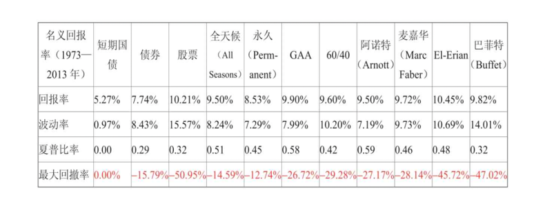
- 等等和数据相关问题。
量化策略平台
https://quant.10jqka.com.cn/view/
B站视频：https://www.bilibili.com/video/BV1qm4y1p7RJ/
聚宽平台
https://www.joinquant.com/
B站视频：https://www.bilibili.com/video/BV1JD4y1C7QT
ricequant
https://www.ricequant.com/welcome/
B站视频：https://www.bilibili.com/video/BV1aP411z7sz
Awesome Quant
https://github.com/thuquant/awesome-quant
投资方法
选股方法
-
先选择行业 在行业内根据指标过滤
-
直接根据指标过滤
市场指标-PEG|市盈率|市净率|市销率|市现率
盈利指标-股息率
投资历史
投资大师
拉斯·特维德 Lars Tvede
https://www.larstvede.com/
《逃不开的经济周期》
《逃不开的经济周期2》
《金融心理学》
《投资最聪明的事》
投资工具
炒股软件
东方财富通，国泰君安富易，富途
统计数据
国家统计局
http://www.stats.gov.cn/zsk/
如何获取统计数据：http://www.stats.gov.cn/zs/tjws/tjbk/202303/P020230323339517847490.pdf
新华社全球数据
https://www.cnfin.com/data/macro-data/index.html
财务报表
上市公司公告解读25讲_深交所
投资者教育
证监会：http://www.csrc.gov.cn/csrc/c100210/common_list.shtml
上交所：https://edu.sse.com.cn/
深交所：https://investor.szse.cn/
投资行业
调味品
板块：调味发酵品
调味品产业"小产品、大市场"
喝白酒还是打酱油
柴米油盐酱醋茶
http://www.chinacondiment.com/news/71058
中国调味品协会网站：http://www.chinacondiment.com/
卫祥云：从疫情下的一日三餐看调味品的发展和行业管理（http://www.chinacondiment.com/interview/70758）
行业报告：https://pdf.dfcfw.com/pdf/H3_AP202203101551794876_1.pdf?1646947416000.pdf
市场集中度低，
梅花生物
生物科技公司
全球领先的氨基酸营养健康解决方案提供商
海天味业
酱油、蚝油、酱料、食醋行业第一品牌
美食百科：http://www.haitian-food.com/index.php?ac=article&at=list&tid=62
研报：https://pdf.dfcfw.com/pdf/H3_AP202209011577925121_1.pdf?1662024646000.pdf
安琪酵母
烘焙与中华面食，食品调味，生物技术，营养与健康，产业链延伸
雪天盐业
食用盐，日化盐，工业盐，
盐的学习视频：https://www.snowskysalt.com.cn/goodsvideo.html?type=18
盐业百科：https://www.snowskysalt.com.cn/salt.html?type=12
苏盐井神
中炬高新
厨邦，美味鲜
产业领域：健康食品 城市开发 国家高新区 汽车配件
千禾味业
酿造高品质健康酱油、食醋、料酒等调味品的股份制企业
天味食品
好人家（复合调味料）、大红袍（火锅底料）、天车（酱油、面酱）
美味生活根据好人家料来做菜：https://www.teway.cn/mwsh.html
江盐集团
食用盐类 食品加工用盐 工业用盐 盐化工
涪陵榨菜
佐餐开味菜领域
宝立食品
食品调味料
复合调味料、轻烹解决方案、饮品甜点配料
国内较早为餐饮企业和食品工业企业提供风味及产品解决方案的复合调味料生产企业。
恒顺醋业
镇江香醋
食醋为核心主业的调味品板块
色醋、白醋、料酒、酱类、酱油、麻油、酱菜等七大品类系列产品
研究：https://pdf.dfcfw.com/pdf/H3_AP202308221595497119_1.pdf?1692737817000.pdf
醋、酒、酱
莲花健康
味精大王
公司产品已形成调味品、面制品、风味佐餐食品、休闲食品等10大类100多个单品
其他业务：智能算力、莲花水业
加加食品
中国酱油第一股
专注于调味品，以酱油为核心，产品涵盖食醋、鸡精、蚝油、料酒、味精等
仲景食品
香菇酱品类：仲景香菇酱、上海葱油、鲜花椒油
安记食品
中国香辛复合调味料第一股
复合调味料
调味品学院：https://www.anjifood.com/?mod=college
日辰股份
复合调味料
佳隆股份
中国鸡精、鸡粉调料第一股
鸡粉，鸡精，鸡汁
很少派现
饰品-金银珠宝
研究报告：https://pdf.dfcfw.com/pdf/H301_AP202306161591023456_1.pdf
传统足金，3D硬金，5G黄金，古法黄金
老凤祥※
中国黄金※
周大生※
迪阿股份
菜百股份
潮宏基※
周大福
港股
飞亚达
钟表
明牌珠宝
瑞贝卡
发卡
深中华A
自行车
萃华珠宝
新华锦
莱绅通灵
计算机
沪深300计算机：https://www.csindex.com.cn/#/indices/family/detail?indexCode=L11520
投资实战
投资研究
沪深300公司和指数研究
https://www.kdocs.cn/label/favor
投资日思
2024-01-24
-
大学就读过了《股市长线法宝》，里面告诉美国市场投资指数即可，我却是毕业花了8年时间，才开始实践。这8年，如果每个月定投1000，现在收益率在100%以上了。 即使投资垃圾的沪深300，收益率也在100%以上。这可能是我没有投资嗅觉的，而只是打工仔的悲哀吧。
-
投资首先想的是尽可能减少损失，而不是赚多少。
-
不熟悉的东西不做，不买。
2024-02-13
每个月定期存款5000，剩下的钱用来投资。现金也是优质资产。
下面是投资比例，
沪深300：38.04%，A股股票：7.13%，中国互联网：14.81% 标普500：17.47%，纳斯达克：14.42% 黄金：8.11%。
中国：59.98%，美国：31.89%，黄金：8.11%
降低中国资产比例到50%，增加美国资产到40%，黄金资产到10%。
可以考虑加入债券基金，债券ETF等。
交易记录
2023-10-25
投资行为：买入1手万科，买入1手格力电器
投资理由：
-
上证跌破3000点。
-
万科： 股息收益率高6.96%，市盈静5.98左右，同行较低市盈率。【择时】
-
格力电器：股息收益率高5.79%，且市盈静在7.8左右，同行较低市盈率。【择时】
-
两者价格对比历史价格降低，风险感觉比较低，拿分红。【价值】
投资反思：
2023-10-29
投资行为：买入1000元的前海开源沪深300指数
投资理由：
- 长期资产配置。
- 投资指数作为长期定期投资行为，并且沪深指数近期走低。
- 费率相对较低，管理费+托管费=0.6%
- 近1，2，3，5年收益率在对比中最高。
- 但是资产净值不算大，3亿多，不如费率最低的永赢沪深300指数型低（0.2%）。
- 永赢沪深300指数型没有APP，只能网页/其他平台购买，感觉IT技术较为落后。
- 博时裕富沪深300指数成立时间最久，定投最多，但是管托率最高1.18%，最近几年收益也不好。可能和基金规模有关系？
- 费率中等最近5年业绩比其他好。
2023-10-31
投资行为：买入1000元的博时标普500ETF联接A
投资理由：
- 长期资产配置+全球配置。
- 费率不是最低，管理费+托管费=0.85%，但是成立时间较久，资产净值较多，成立以来业绩收益率最高，最近几年业绩有参考而且费率中等。
- 大成标普500等权重指数(QDII)A人民币成立时间最久，但是管脱率较高1.25%，所以没有考虑。
- 摩根标普500指数(QDII)人民币A管托率最低0.65%，华夏标普500ETF发起式联接管托率0.75%，但是这两只基金没有长期业绩佐证，成立时间以及基金规模较小。
- 易方达标普500指数人民币A买不了。
- 费率低的成立时间短，费率高的成立时间久，选择了一个费率中等成立时间中等且业绩有参考的。
投资反思： 是否可以持有每月定投2000元给指数基金，各500给【永赢沪深300指数】【前海开源沪深300】【博时标普500ETF联接A】【摩根标普500指数】， 这样组合起来会费用和业绩进行组合，考虑纳斯达克100指数基金。
2023-11-02
投资行为：买入1000元的前海开源沪深300指数【定投】
投资理由：定投。
2023-11-03
投资行为：买入1000元的前海开源沪深300指数【定投】，买入1000元的博时标普500ETF联接A【定投】，买入4780元的个人养老金， 存入定期五年2.9%的定存中。对FOF和保险不熟悉，不买。
投资理由：定投。
投资反思：定投不是程序控制的，而是市场情绪较低时候加大持有份额。下个月开始每个月投资2000元进入指数。
投资其他：永赢沪深300指数型是发起型的，且若基金资产净值低于2亿元，本基金合同自动终止，且不得通过召开基金份额持有人大会的方式延续基金合同期限、发起式的指数基金有风险。
2023-11-05
投资行为：买入1000元的华安纳斯达克100ETF联接(QDII)A。
投资理由：定投。资产规模20亿以上，且同规模手续费最低。非发起式，是联接基金。在所有联接基金里面规模第二，手续费最低，净值排名最高，但是回报来看差不多。 并且该基金经理倪斌专门投资全球指数基金。
同类备选有：大成纳斯达克100ETF联接(QDII)A，广发纳斯达克100ETF联接人民币(QDII)A，易方达纳斯达克100ETF联接(QDII-LOF)A(人民币)，华安纳斯达克100ETF联接(QDII)A 前两个管托率加起来1.05%，华安0.8%，易方达0.6%，但是易方达基金规模在十亿以上，但是其他三个均在20亿以上。所以最终选择了华安纳斯达克100ETF联接。
投资其他：我的指数基金选择逻辑：1 费率 2 规模 3 历史业绩 4 品种（优先指数基金>联接基金>发起式基金（谨慎考虑发起式基金））
2023-11-06
投资行为：买入1000元的前海开源沪深300指数【低点定投加大投资份额】
投资反思：在低点进行更多的买入而不是盲目的按照定投逻辑。
2023-11-07
投资行为：各1000元买入的前海开源沪深300指数，华安纳斯达克100ETF联接，博时标普500ETF联接A【慢慢做大资金量】
投资反思：定投频率是不是太高了？每月固定时间定投+每月灵活时间购买。这只是暂时资金压力不大，日后估计是每月定期等额定投。
2024-02-13
盈利记录
生活中的公司
生活常见股票
江中药业（公司下午茶发了江中猴姑饼干）
康恩贝（买了维C咀嚼片）
索菲亚（家里全屋定制）
金房能源（供暖的公司）
伊利股份（牛奶）
海天味业（酱油，蚝油）
金龙鱼（买油）
涪陵榨菜（吃榨菜）
鱼跃医疗（买了血压计，尿酸仪）
云南白药（创口贴）
科沃斯（扫地机器人）
美年健康（去体检了）
中顺洁柔（买了纸）
民生健康（301507，21金维他）
熟悉公司
法本信息 300925
网易有道 DAO.NYSE
新东方在线 东方甄选01797.HK
美克家居 600337
普联软件 300996
其他听过
视源股份： 002841
华设集团：603018
长城汽车：601633
粉笔教育：02469.HK
北森控股：9669.HK
公司分析实践
沪深300
中国平安
招商银行/光大银行
中国太保
华域汽车：股息率高，最近1年没有大宗交易，
晶澳科技：PE低
白云山：营业总收入和净利润均增长。
软件实用指南
东方财富通
估值分析【PE，PB，PS，PC】
百分比报表，杜邦分析
市场表现：和沪深300比较
同花顺
行业对比更加细化
问题
食品饮料 -- 调味发酵品Ⅱ -- 调味发酵品Ⅲ 所有公司估值比较怎么看？
重点关注领域
必选消费行业
食品
计算机
生活常见行业
衣：服装珠宝
行： 汽车
医药：医药
计算机：计算机与互联网
娱乐：传媒
公司研究方法
业务-》市场表现-》财务
巨潮查看基本信息：http://www.cninfo.com.cn/new/index
查看估值走势
公司官网研究业务
券商行业报告，个股报告
财务数据
公司历史新闻，最近新闻
财务报表
晨光股份
公司业务：文具
业务分析
长期稳定增长，新的增长点
估值分析
历史PE，PB，PCF，PSR：东方财富：操盘必读-估值分析
现金流分析：是否不断增加？
竞争优势是什么？出色技术？成本优势？转换成本？壁垒高？品牌价值？
现金流如何？
销售收入增长点来自哪里？成长率的组成是什么？
海天味业
年生产规模多少吨？
年销售额多少？
生产-销售=库存
净利润在2022下降的原因是什么？
净资产收益率在2022下降原因是什么？
报表阅读
2021
三大核心种类的多元化品类发展。
线上渠道逐步增加。
2021：行业正处于产品不断细分、市场不断集中的成长阶段。
品类不断增加。
精细化的管理水平成为了公司的核心竞争力之一。
2022
品牌号召力
净利润首次下滑。
提质、降本、增效，
阅读
保险系列
保险严选指南
保险适合做加法而不是减法。
保险怎么买
保险是一个金融产品。
保障型 理财型
保险原理：空间上把个体风险损失分散到群体，时间上一时风险分散到长期。
四大险种：意外，重疾，医疗，定期寿险
医疗险：很少终身续保。
重疾险：占家庭保费大头，60%-80%。分类：消费型定期，消费型终身，返还型定期，返还型终身。购买原则保额优先。
重疾险是给付型，医疗险是报销型。医疗险不可以持续续保，费率不确定。
寿险：定期，终身寿险
寿险：如果一个人倒了，一个家就倒了。
选择维度：消费型，返回型/定期，终身
免责条约很重要。
IRR：收益率。
不是一辈子的保险规划就立马能做出。
对生活有价值的投资。
保险是对冲风险的工具。
保险最大的风险是你购买的保障并没有给你带来预期的保障。
保险作为一种金融产品，本质是复杂的。消费者需要理解自己购买的金融产品，保费花在了哪里，换来了什么。
人身保险种身故责任分为几种？
保险是个性化很强的金融产品，从需求出发，寻找最合适的产品。
现金价值：退保时候保单值多少钱？
如何用保险保障一生-李元霸
不是一辈子的保险规划就立马能做出。
对生活有价值的投资。
保险是对冲风险的工具。
保险最大的风险是你购买的保障并没有给你带来预期的保障。
保险作为一种金融产品，本质是复杂的。消费者需要理解自己购买的金融产品，保费花在了哪里，换来了什么。
人身保险种身故责任分为几种？意外身故，疾病身故
只要是保险责任相同，趸交（dǔn）和期交的保费精算现值是相同的。缴费方式没有差异。
理赔必须符合保险条款。（保险责任+除外责任）
保险代理人更愿意卖储蓄型的，因为佣金更高。纯保障型的便宜，佣金低。
重疾至少卖50w以上的。
保证续保条款的短期险产品具有长期风险，也必须按照长期风险定价。
投资的最大风险不是收益低，而是你不了解自己到底买了什么投资产品。
医疗险大部分是短期险，非续保的。中端医疗险：百万医疗别名。每年保费可能增加，年龄越大越贵。
保险公司眼里的健康，而不是医学意义的健康。
买保险买便宜的。
不推荐购买 保费返还型保险：贵，收益低，赔偿少。
保费返还型保险本质：保费给保险公司做投资，投资的收入可以弥补保险事故的成本和公司的运营成本，以及期满连本带利把保费 返还给没有发生事故的被保险人。
医疗险便宜本质：1 短期险 2 免赔额1-2w 3 门诊仅包含住院 4 赔付比例 5 赔付成本不确定
惠民保本质是：团体版的"百万医疗"。榆林有。
乌鲁木齐医疗保障局：http://ylbzj.xinjiang.gov.cn/ylbzj/index.shtml
锁定长期疾病风险：重疾，短期疾病风险：医疗险，20年，但是费率可变。
榆林惠郡保
你的第一本保险指南
宏观策略与周期
周期-投资机会,风险,态度与市场周期
经济周期
人口增长和生产率增长的变化，需要几十年体现出效果，很明显会影响国家经济增长速度。
政府调节逆周期
物价上涨，就是通货膨胀。
通货膨胀是经济周期上行产生的结果。
控制通货膨胀和促进就业同样不容易。
央行和财政部工作：管理周期。
企业盈利周期
企业销售额变动不一定导致企业盈利发生同等程度变化。主要因为经营和财务杠杆导致的。
投资人心理和情绪钟摆
市场在贪婪和恐惧之间来回波动。
没有一个人能说明科技股泡沫原因是什么。
重要的不是数据，也不是事件，而是人对事件和数据的解读。
风险态度周期
风险是对未来变化的不确定性和出现坏结果的可能性。
人们在金融市场投资的记忆极其短暂。
别人处理自己事情越不小心，我们处理自己事情越小心。
信贷周期
企业账上仅有净资产不行，要花钱必须要有现金。否则净资产很富有的企业没有足够多现金来兑付到期债务，也借不来钱，就会面临破产，陷入债务麻烦。
银行：借短贷长。低利率买入资金，高利率卖出资金。
信贷周期最重要。
08年金融危机和企业无关，只是金融现象。信贷周期导致的债务违约。
卓越的投资不是来自买的资产质量好，而是买的资产性价比高。资产质量好且价格低，潜在收益率相当高却风险有限。
投资中最重要的事
霍华德·马克斯
https://www.oaktreecapital.com/
https://en.wikipedia.org/wiki/Howard_Marks_(investor)
https://zh.wikipedia.org/zh-hans/%E9%9C%8D%E5%8D%8E%E5%BE%B7%C2%B7%E9%A9%AC%E5%85%8B%E6%96%AF
投资的四大支柱
进度
2023-12-11～2023-12-
P115
没有血性，哪来风险
当外界环境处于最好的情况下，投资收益率往往最低。收益率与价格存在反比关系，稳定和繁荣意味着资产价格比较高，未来收益率降低。当事情 处于奔溃，承担巨大风险时候，收益率往往最高。
历史记录的最大价值，更清晰的认识风险，而不是收益。
eafe指数
肯尼斯·弗伦奇【三因子模型】 四因子模型 https://www.dimensional.com/us-en/bios/kenneth-french APT，FF3，CAPM
预期收益不是保证收益。
度量风险
DDM：股息贴现模型
戈登股利增长模型
费雪股息贴现模型
贴现率：要求对风险的补偿。
高贴现率，潜在高风险，高回报率，低廉的股价。
911导致风险提高，贴现率直线提高，导致股价降低。
日本经济繁荣导致贴现率很低，收益以非常低利率水平进行贴现。
人们降低了风险敏感，导致贴现率下降，股价推高。
市场比你聪明
Alfred Cowles III 阿尔弗雷德·考尔斯
迈克尔·詹森
20世纪上半：费雪 20世纪下半：尤金法玛
行业系列
必须消费品投资
作者：迈克尔-康尼维特
读书笔记
全球视角
每个国家独一无二
产品共同终端消费者。
三大类：1 食品，饮料，烟草 2 家具用品和个人用品 3 食品和日用品零售店
可选消费品：汽车，服装，餐饮，娱乐，电脑
弹性：收入弹性，价格弹性【收入或价格对消费需求产生影响】
新车弹性大，洗发水非弹性。
必须消费品防御特点，业绩稳定，经济不好时候，也比较稳定。导致不是短期盈利组合可选的。
价格和收入无弹性，对经济没有敏感性。通常短期不大幅上涨，但是强大经济护城河的公司认为有利可图的长期投资。
品牌影响力是必须消费品公司赖以创造价值的核心战略标志。
必须消费品在投资组合作用：防御性的避风港。
非必须消费品投资
板块特点：1 经济敏感性 2 大盘走势高度相关性 3 对消费者观点敏感性
餐饮在非必须消费板块，杂货店不是。
行业
汽车和零配件
零售业
媒体业
耐用消费品
消费服务业
驱动因素
经济（消费者支出），政治，情绪
耐用品：大件消费
就业是经济增长的滞后指标。
股市是根据未来定价的，而不是现在。
投资者根据官方的数据公布来确认发展趋势的话，会比较滞后。
细分行业
行业集中度：规模经济，进入壁垒，行业深度等决定的。
汽车行业是高度集中的。
股市真规则-帕特多尔西 Pat Dorsey
1美元通过公司能产生什么？如何从消费者如何转到股东手里？通过比率来计算。
净利润增长率和营业利润增长率或经营性现金流量增长率较大不同，可能有问题。
销售增长停滞后，推动盈利增长欺骗方法很多。
一家公司以降低成本来驱动盈利增长，考虑降低成本的可持续性。
资本收益率 ROC
资产收益率
资产收益率 ROA = 销售净利率*资产周转率：1美元资产产生多少利润？
销售净利率 = 净利率/销售收入 ：1美元销售收入在公司付完成本后能剩多少？
资产周转率 = 销售收入/资产：1美元资产什么样的销量产生收入？
净资产收益率 ROE
1美元股东资本产生的利润。
净资产收益率 = 销售净利率资产周转率财务杠杆比率
财务杠杆比率 = 资产/所有者权益
财务杠杆比率=5，5美元里面，4美元是负债，1美元是资产。1美元权益里面对应5美元资产。
投入资本收益率 ROIC
自由现金流：可以提取的钱但不影响公司业务的现金。
盈利能力矩阵图：二维，现金流，净资产收益率
净资产收益率是高杠杆作用，还是提高了盈利能力或者是因为资产使用效率呢？
医疗保健行业
医药行业
麻醉品：人福医药
礼来公司，辉瑞制药，华生制药，以色列梯瓦制药，
生物技术
赛迪生物，安进公司
医疗器械
美敦力，联合健康集团
心脏医疗器械
人造股骨头
医疗保健组织
消费服务业
餐饮业
Chessecake Factory，麦当劳，温迪快餐，Red Lobster
零售业
沃尔玛，沃尔格林，塔吉特，科尔士，家得宝，柔适，office depot officemax，史泰博
商业服务业
基于技术
ADP公司
基于人力
万宝盛华，埃森哲，穆迪公司，罗恒致富，
基于资产
航空西南航空，美国废物管理公司，
银行业
花旗银行 五三银行 富国银行 美洲银行
以存款形式存在的负债是银行的真正资产。
资产管理和保险
资产管理
骏利资产管理集团，富兰克林资源公司，TROW 普信集团【投资成长股：罗·普莱斯投资之道】，富达投资管理公司
18节课看透银行业
基金系列
雪球基金第一课
最大回撤：一段时间内的最大跌幅。
投资4维度：收益，风险，成本，时间
REITs：不动产投资信托基金
富国首创水务REIT
零钱管理：货币基金
市场利率和债券利率是反比。
中国10年期国债收益率(GCNY10）：https://www.cbirc.gov.cn/cn/view/pages/index/guozhai.html
中债综合指数
共同基金常识-10周年纪念版
黄金不能产生内在价值。
人人都在讨论长期投资，但无人付诸行动。
短期策略：市场择时，高换手率
年换手率8%，那么持有年限是12.5年。
金融市场长期回报来源：股票是企业盈利和分红（股息率），债券是利息支付。
金融市场引力定律：均值回归。
回报率：股息率+盈利增长率
牛市提高了资产价值，但是减少了该时间点起，投资组合能产生的预期实际回报率。
股票回报率：投资回报率（初始股息率+盈利增长率）+ 投机回报率（市盈率变化的年华比率）
股票回报率在长期由投资回报率驱动，短期由投机回报率驱动。
股票，债券，现金（货币市场基金）
现金不应该被认为是长期资本积累的投资。
投资四维度：回报，风险，成本，时间
回报率随时间增长很快，风险随时间减少很快，成本却是固定的。
平衡投资方案：使得风险更加合理。
偏重股票的长期投资。
投资是延迟眼前消费获取未来所得的意愿。
投资策略（资产配置）胜过投资战略（市场择时+证券选择）
对于个人投资者来说，成本是决定组合业绩的最重要因素。
财务报表和报告系列
穿透财报-发现企业的秘密
老板电器
利润构成，销售构成，利润现金保障倍数
四维分析法：
平高电气
收入增长：内生性增长，外延式并购增长
沃尔评分法
小天鹅
总资产周转率
吉林敖东
管理效率：资产周转率，存货和应收账款周转率
资产周转率=资产/收入
资产负债率低，说明财务风险低。
流动比率多高，现金过多，资金使用效率低，但是没有债务风险。
权益投资：广发证券
投资性收益，和经营性收益
股东报酬率
福耀玻璃
汽车玻璃和浮法玻璃
净利润有现金保障
看效率主要看周转率。
投产比（投入是资产，产出是销售）
看风险看的是资产布局和资产质量。
财务风险：资本成本和风险可控。
资产负债表上升，可能对上下游谈判能力降低。
股利分配高。
股东回报率【股东权益报酬率，净资产回报率】ROE，负债率下降，导致ROE下降。
负债率下降导致ROE下降=净收益/股东权益[【资产-负债】
晨鸣纸业
税前利润和税后利润。
平均年复合增长率【CAGR】
资产规模增长率大于销售增长率，会导致资产周转率下降。资产产出效率变低。
非流动资产占比太多，属于重资产行业
现金资产是高质量资产。
存货周转率（次）＝销售（营业）成本÷平均存货
世茂股份
稳定，增长
投资收益不具有可持续性。
毛利率下降，说明经营遇到挑战。
资产周转率下降：资产规模扩展导致周转率下降，对于制造业来说，生产能力提高，可能会导致收入增加。房地产行业来说是不好的。上和下需要具体分析。
存货增长和降低是好还是坏不一样。存货增长是囤货可能是好事，对于房地产可能是土地储备增多，也是好事。
有现金流但是净利润为负，互联网行业早期这种的。
用人来类比资产负债，利润，现金流关系：
- 赚的多花的少，但没房。无资产负债，利润为正，现金流多。
- 花的比赚的还多，现金流为负，还有负债。这样是有问题的。
- 有房无负债，但是赚的多花的多，资产有，但是现金流少。
- 有房有负债，但是不靠租房赚钱，而是工资，这种资产利用率为0。
东阿阿胶
财技保守
净利润增速大于销售收入，因为毛利率提高。
存货：战略主动或者经营被动
负债率低，没有利用品牌进行上下游资金占用，谈判力下降，优化资本结构，降低加权平均资本成本【是否这样是正确呢？】
如果全部借钱，没有用自有资金发展，说明上下游能力强，但是负债率高。
ROE提升空间：优化资本结构，增加资产负债率，降低加权平均资本成本。
宁波华翔
毛利率稳定，说明差异化小。公司产品稳定。
公司谈判能力增强，公司资本成本下降。促进股东权益报酬率上升。
中泰化学
提质增效
对应收账款不重视，导致应收账款周转率低，可能积累信用风险。
公司销售增长来自资产规模扩大，资产规模依赖于股东资金。
公司规模扩张来自外部资金，而不是自生生长。
公司是否为股东提供了丰厚的回报？分红率。
公司重资产，每年会产生很多折旧。
克服偏见-还原财报背后的真相
绝对的片面，相对的全面。
财报是事后的反应，是已有信息，而股价是未来的预测，分析结果对股票定价没用。
中国平安
经营，管理，财务，业绩
管理是否卓越：投产比。
上市公司公告解读25讲
进度
开始时间：2023-11-16 ~ 结束时间：2023-11-23
笔记
上交所公告：http://www.sse.com.cn/disclosure/listedinfo/announcement/
深交所公告：https://www.szse.cn/disclosure/listed/notice/index.html
巨潮公告：http://www.cninfo.com.cn/new/index
中国投资者教育：https://www.investor.org.cn/learning_center/
分红公告
每股资本公积
每股未分配利润
业绩预告公告
第三季度报告
业绩预告
业绩快报
https://data.10jqka.com.cn/financial/yjyg/
持股变动公告
https://data.eastmoney.com/executive/gdzjc.html
资产重组公告
三类控制人：个人，地方政府，央企
并购重组：https://data.eastmoney.com/bgcz/
https://listing.szse.cn/projectdynamic/reproperty/index.html
再融资公告
https://listing.szse.cn/projectdynamic/refinance/index.html
股权激励公告
上市公司很难再现金流造假。
安然，AIG保险
上市公司管理层造假，而不是股东
关联交易公告
产生地方：1 销售 2 采购
可能：虚增利润，抽走利润
担保公告
非经营性风险：担保，可能会被银行逼债
退市风险公告
主板，创业板退市规则不一样。ST
定期报告
年报可以淡化季节性，周期性对经营的影响。
董事会报告重要性仅次于财务数据。类似于述职报告。
关键：合并财务报表项目注释，母公司财务报表主要项目注释
同步看趋势。
创业板年报
比较精简。
资产负债表
会计第一恒等式：资产=负债+所有者权益
资产理解为一家公司将钱投到什么地方。
偿还流动负债的一般是流动资产。
资产负债三看点：1 财务风险 2 资产质量 3 经营水平和盈利能力信息
资产负债率不高，但流动比率较低。可能短债长用。短期银行借款用固定资产长期投资，导致流动负债远高于流动资产。
会计条目
经营企业最好我欠人，而非人欠我。
交易性金融资产影响的是净利润，可供出售的金融资产影响的是净资产。
只要是资产都会贬值，包括现金。
预收款：货没卖出，钱先到了。
利润表
会计第二恒等式：利润=收入-费用，不是为了核算最终净利润，而是衡量经营活动的成果和效率。
从利润表中看出：公司自己爹生意是否赚钱。和经营活动无关的过程太多不务正业。
节支有极限，增收无极限。钱是赚出来的不是省出来的。
现金流量表
财务造假者很难在现金流量表造假。造假成本高。
净利润的记账和到款不是同一时间，净利润可能有水分，现金流量是一手交钱一手交货标准。
经营活动产生的现金流量净额：现金版的净利润。
经营活动产生的现金流量净额低于净利润【入不敷出】：1 公司销售回款速度下降 2 存货出现积压。
权益变动表
股东支配可能性大小排序：未分配利润》盈余公积》资本公积》实收资本
权益类会计科目不写实
审计报告
非标意见。
上证公司治理指数
财务指标---净资产收益率
净资产收益率=净资产/净利润=销售净利润资产周转率权益乘数【分析净资产收益率实现途径】
销售净利润=净利润/营业收入
资产负债率过低，没有发挥债务杠杆，过高，财务风险较大。
资产周转率体现管理能力和营销策略水平。
实现途径：
- 厚利少销：销售净利润高，资产周转率低。
- 薄利多销：销售净利润低，资产周转率高。
- 高负债：权益乘数高。
即使净利润，净资产，净资产收益率一样情况下，经营风格也有巨大区别。
资产周转率高，说明采购-》加工-》销售-》回收现金-》在采购 完整经营过程运行快。
市盈率考虑了股价，本质不属于财务指标。
随着公司规模变大，保证长期ROE挑战大。
房子100w，首付30w，升值200w，卖了赚100w。净资产收益率=100W/30W=333%。负债拉动ROE能力强。
毛利率
毛利是企业盈利的决定性因素之一。形成是企业创造利润的第一步。
毛利=营业收入-营业成本【不算水电费，管理费，人工费等】
毛利增长条件：营业收入增速超过营业成本增速。价格战，导致销售价格低，营业成本增速超过了收入增速，成长难以维持。
毛利的可持续性。
杠杆效应
经营杠杆，价格杠杆，财务杠杆，复合杠杆。
经营杠杆【收入-成本=利润】：由于固定成本存在，使得利润变动幅度大于收入变动幅度的杠杆效应。
不正确的直觉认识：收入变化与业绩变化趋于同步。
东方航空：收入小幅下降，可能导致利润的巨幅波动。因为固定成本太高，无法随着收入下降而下降。遂而导致巨额亏损。
负债对每股收益的放大。---权益乘数
低效经营水平+高负债=赌博
季度环比数据
需要自己算，报表中不会体现。
两个季度环比有效性较强。
同比实效性差，环比噪音大。 TTM【最近12个月】弥补了这个问题。总是连着四个季度。
政府网站
http://www.stats.gov.cn/
海关总署：出口 http://gdfs.customs.gov.cn/customs/syx/index.html
交通部：港口吞吐量
民航总局：旅客运输量，客座率，载运率 https://www.caac.gov.cn/index.html
工业和信息部：行业统计
财政部：税收：契税，车辆购置税
央行：货币供给 m1。m2。m3。储蓄存款
证券官方
http://www.chinaclear.cn/
http://www.chinaclear.cn/zdjs/tjyb1/center_scsj_tjyb.shtml
https://www.sac.net.cn/hysj/jysj/
上市公司网站
有的子公司网站需要在控股股东里面找。
股票市场修炼手册
定期报告要点：1 主要财务指标、 2 管理层讨论和分析、3 重要事项、4 财务报告，然后在判断是否需要细看。
会计要素：资产，负债，所有者权益，收入，费用，利润
资产带来收益
权责发生制，收付实现制
总资产：看公司规模
净资产收益率=净利润/净资产（从所有者角度分析盈利水平），如果用负债/净资产
成本模式-》公允价值模式，不会改变基本面，但是会改变经营状况的呈现方式。
货币计量是会计核算的前提。
非流动资产需要在漫长经营过程中产生价值。
货币资金不是越多越好，需要投入到经营过程中产生价值。
应计制的缺点是账面利润和现金流脱节。
应收账款是一种促销手段，提供销售商优惠，减少存货，加速资金周转。【别人对你资金的占用】
结构百分比报表
预付：资产 预收：负债
经济指标解读系列
解读中国经济指标-在数字中锁定投资机会
指数系列
3小时快学ETF
ETF=交易+指数+基金：交易型开放式指数基金
SPDR：标普500
QQQ：纳斯达克100
EEM：新兴市场
ETF投资从入门到精通
指数革命
指数革命 作者: [美] 查尔斯·埃利斯
基本面指数投资策略
主动型指数投资
价值平均策略（VA策略）
进度
首读
开始时间：2023-10-31 ~ 结束时间：2023-11-20
在读
作者
Michael Edleson
作者要解答这个问题：如何构建有效投资组合？
威廉—伯恩斯坦推荐书籍
http://www.efficientfrontier.com/reading.htm
笔记
三个投资策略：等量份额策略【CS】，币值成本策略【DCA】，价值平均策略【VA】。避免选择市场时机。自动市场择时机制。
https://en.wikipedia.org/wiki/Value_averaging
价值平均策略=币值成本平均策略+投资组合在平衡
知识可以学习，但是勇气不是所有人都有。
DCA(币值成本平均策略)
VA(价值平均策略)：市场下跌放大买，市场上涨卖，很少买
三种定投策略：
- 等量份额策略：数量定投【数量固定，随市场】
- 币值成本策略：总成本定投【成本固定，不随市场】
- 价值平均策略：总市值定投【市值固定，随市场】
- 增长的币值平均策略：
股票市场特点：5年期限资金投资股票市场，5年内需要钱，那么面临损失概率大。
风险和标准差：随机量离期望值（中心）的距离（风险）
时机选择：何时进入，何时退出。
没有一种策略严格优于其他策略，每种策略有不同之处满足不同投资者。
第九章
短期过度反应，长期均值回归。
第十章
先确定了投资目标和期望收益率，然后根据每个年度根据通货膨胀，税后收益率来调整投资金额。
第十二章
两种策略共同目标：降低成本，增加收益。
漫步华尔街-第11版
作者 伯顿·马尔基尔
https://en.wikipedia.org/wiki/Burton_Malkiel
https://jrc.princeton.edu/people/burton-g-malkiel
https://en.wikipedia.org/wiki/Bendheim_Center_for_Finance
https://bcf.princeton.edu/
https://en.wikipedia.org/wiki/A_Random_Walk_Down_Wall_Street
观点
每个投资组合的核心部分应该由成本低廉，税收高效，涉及面广泛的指数基金构成。
以市值确定权重的指数化投资仍是最佳策略。
以个人养老金为主的投资：养老产品选择考虑。
要实现高收益，只有承担高风险，或许还要接受较低的投资流动性。
在一生的不同年龄，做出最重要的投资决策，很有可能是如何平衡资产类别，也就是如何确定股票，债券，房地产，货币市场证券在投资组合的权重。
投资股票和债券的实际风险取决于你的投资持有期限。
投资组合
国内，海外指数基金（纳斯达克，标普500）
彼得林奇的成功投资-典藏版
作者
https://en.wikipedia.org/wiki/Peter_Lynch
进度
开始时间：2023-07-22
如何在炒股软件上，展现历史股价和收益，pe的曲线图？
战胜华尔街
彼得林奇教你理财
长赢投资-约翰伯格
作者
https://en.wikipedia.org/wiki/John_C._Bogle
https://johncbogle.com/
社保类似于债券，定投
股市长线法宝
作者 杰里米·西格尔
https://en.wikipedia.org/wiki/Jeremy_Siegel
笔记
股票积累财富的长期风险比债券大，但是就保持购买力角度，恰恰相反，股票的多样化投资组合才算最安全的长期投资。
投资者的未来
增长率陷阱。
发展中国家增长率最快，但是股票回报收益率不是最高。
基于指数的增强策略。
最大启发：把自己想象成基金经理，从而掌管自己的钱。
赢得输家的游戏
作者 查尔斯·埃利斯
https://en.wikipedia.org/wiki/Charles_D._Ellis
逆向投资：邓普顿的长赢投资法
全球投资，低价股猎手，市场大跌后买入，生活中处处以低价思维，
案例：日本，韩国，中国（中国移动，中国人寿）
哈利布朗的永久投资组合
Harry Browne
进度
开始时间：2023-11-23 ~ 结束时间：
页数：
笔记
安全、稳定和简单
25%股市，25%长期国债，25%现金，25%贵金属（黄金） 每年调整比例。
任何经济情况下，保护一生的投资策略。
拥抱不确定的策略。
16条安全法则
回测
增长，没有重大损失，实际收益
通胀隐匿：钱拿着不动的损失。
高通胀率快速摧毁购买力。
60/40投资组合
市场充满不确定性。
永久投资组合属于保守型投资策略。
市场平均收益率，意味随着时间推移击败大多数的投资者和投资专家。
金融市场是如何总是不能达到预期的。
你买入股票的时间愈长，它的风险就会变得愈小，但这并不是事实。你买入多年股票所具有的风险，与你昨天刚买股票所具有的风险是一样的。你买入某一股票20年，这并不意味着市场在第21年崩盘时，你 之前的收益不会受到影响，并且可以继续持有它们。股票市场并不欠你什么。
尽管股票市场在某段时期内可能会有显著的收益，可这并不能保证股票市场会在你的特定时间表内运行良好。
相关性理论取决于时间维度。
股票价格与债券价格是由某些特定原因决定的，这些原因与整个市场有关，与资产类别相关性假设的相关性无关。
强大的分散化不是通过观察资产类别的相关性数据就能建立起来的，它是通过理解某类资产对于经济状况改变所做出的反应建立起来的。
市场动荡时，握有现金的人就可以趁火打劫，便宜地买入资产。
建立一个投资策略，承认未来是具有不确定性的，然后根据这种核心假设建立投资组合。
4种经济情况：繁荣，通缩，衰退，通膨
4种经济状况＋4种资产＝强大的分散化
利率上涨降低了已有债券的吸引力。
繁荣：利好股票和债券
通缩：利好债券和现金
衰退：不利好所有，但是现金起到了缓冲作用
通胀：利好黄金
永久投资组合试图对所有经济状况保持中立。
股票
每一类永久投资组合资产的目标并不是击败市场，而是拥有市场，同时每年以尽可能低的费用来抓住市场产生的任何收益。
指数投资策略的一个自相矛盾的地方就是：通过努力达到平均，你最终会在长期收益方面到达平均值以上。
小盘股会跑赢大盘吗？学术研究会说“会”，而事实却会说“看情况而定”。
债券
唯一适合永久投资组合的债券是25~30年的美国长期国债
债券的主要风险是通货膨胀。也叫利率风险。
利率风险在通货膨胀时期变成了真正的风险。在通货膨胀时期，利率经常上升。
不断上升的通货膨胀不仅会导致债券价值的下降，而且债券以利息方式支付的费用价值也有所下降。
随着利率上升，债券的价格不断下跌，利息支付也在贬值。 结果在高通胀时期债券的实际收益通常是负值，而且投资者会想用非常高的利息来抵消通货膨胀风险引起的亏损。
通货紧缩时期，利率会下降，但会导致债券价值的上涨。
持有美国政府债券，你也许会收回因通货膨胀而贬值的美元，但是你不会什么都得不到，而当你持有其他类别的债券时，这就有可能发生
避免购买美国国债是在牺牲通货紧缩的保护。一场严重的经济危机可能会导致公司债券大面积的违约风险
债券的资本增值还可以用来为投资组合提供保护和价值增长。
债券会有赎回风险，而国债一般不会。
债券有信用风险、违约风险、赎回风险、政治风险、货币风险和税务风险等很多风险。
现金
把现金投入最多12个月到期的非常安全的美国国债中去。
现金也是资产。
现金代表的是现金等价物投资。可以随时转换为投资者可以直接使用的货币的资产。
IRA（个人）和401K（公司）
永久投资组合的现金应该要避免信用风险、违约风险、赎回风险、货币风险和政治风险。
FDIC保险
黄金
黄金在高通货膨胀期表现最好
谨慎的储蓄者要在现实的而不是他们想要的世界中进行投资。
在不同的经济状况下，黄金在繁荣、通货紧缩和衰退期的表现都不理想。
黄金不能产生利息或股息。
通货膨胀的原因非常简单：政府以某种方式允许过多的货币在市场中流通。
黄金不能产生利息或者分红，但能让资本增值（价格上涨）
超级强势股
本书主要讲的是公司维度选股。
低PE可以投资前提是：每股收益稳定。
收益法 资产法
格雷厄姆：低pe按照资产负债表来购买股票，坚信资产会带来收益。
这家公司生意到底有多大？
利润率，pe，psr关系。
PSR（销售团队的价值），PRR（研发团队的价值）
投资者避免高PSR的股票，可以获取高于平均回报的收益。
市销率基于个股，而不是系统性的。【择机入市，择时入市】
逆向投资策略
作者：大卫 德雷曼
进度
第十章 通向盈利的逆向投资路径
5个策略：低市盈率，低市净率，低市现率，高股息率，低于行业定价
第十一章 从投资者过度反应中获利
有效市场假说 vs 投资者过度反应假说
ABC法则：A：买入卓越公司 B：30-40股票，15+行业进行分散投资 C：只买纳斯达克，纽交所中大型公司。
逆向投资指数基金。
美国奥驰亚集团ALG 卡夫和菲利浦·莫瑞斯的母公司
阿帕奇石油(APA)
基金
指数基金
期货和期权
投资者教育书籍50本
http://edu.cfachina.org/zsyd/tjsj/
投资者园地
http://edu.cfachina.org/zsyd/spdh/zgqhyxh/index_2.html
期货业协会
https://www.cfachina.org/servicesupport/sspz/
https://www.cfachina.org/servicesupport/sspz/gjs/hj/qh_4862/pzxx_4871/pzsc_4872/202012/P020201213476794450953.pdf
期货从业资格证三本书
http://www.cfachina.org/servicesupport/examination/qualificationexamination/examinationmaterial/ksys/202010/t20201030_8147.html
http://www.cfachina.org/servicesupport/examination/qualificationexamination/examinationmaterial/ksys/202010/t20201030_8149.html
黄金
零售商报价
https://quote.stockstar.com/gold/salegold.shtml
债券
债券
储蓄国债发行
财政部：https://gks.mof.gov.cn/ztztz/guozaiguanli/gzfxdzs/
中国银行债券基础知识
https://www.boc.cn/custserv/cs7/cs76/
国债课堂
https://www.psbc.com/cn/grfw/tzlc/gz/gzkt/
债券查询
https://www.chinabond.com.cn/chinaBond_dong/zqzlfhcx/
上交所债券列表
http://www.sse.com.cn/assortment/bonds/home/
笔记
储蓄国债凭证式和电子式区别：https://www.psbc.com/cn/grfw/tzlc/gz/gzkt/202107/t20210722_113448.html
凭证式和记账式区别：凭证式不可交易，记账式可交易。
可转债投资
问题
- 230023和019726区别？
https://www.chinabond.com.cn/chinaBond_dong/zqzycxylb/index.html?language=C&zqdm=230023
https://quote.eastmoney.com/bond/sh019726.html
是否可以通过股票账户购买019726？以及最小交易金额之类的。
债券基金
保险
我的保险
未买保障
- 重疾 2. 医疗
保单管理
保障产品
寿险
意外
2022 平安守护百分百2021两全
投资思考：在2022年8月18日购买，于2023年9月28号退保（没有过60天，趁着国庆前有时间去现场办了退保），返回现金价值700多，损失近5000元。我没有将两全+其余保险进行组合，也没有等待2年后重新生效而减少损失，而是直接退保来避免扩大损失。去年购买逻辑是：返回型保险，当做强制储蓄+保障，但是今年买完房之后，背负了贷款，导致过去购买逻辑的保障不足以覆盖房贷。所以需要进行置换保险。根本原因是有一定经济负担，并且杠杆率较低，虽然组合两全和消费型起来看似损失最小，但是资金的机会成本可以用来做更全面的保障。充分发挥保险的作用。保险要做加法而不是减法，减法会导致损失很大。
2023 寿险，意外
寿险：华贵大麦家2023，60岁200万。保单合同
意外险：小蜜蜂365元。保单合同
公司团体险：平安团体险。 保单合同
医疗险：陕西全民健康保
指数研究
市场市盈率
https://www.csindex.com.cn/zh-CN/downloads/index-information#/dataService/PERatio
https://www.sse.com.cn/market/stockdata/price/sh/
疑问
如何将经济数据和各种指数，个股进行叠加分析？
如何将一个公司历史收益率，财报各种进行图标化分析，比如美的和格力进行对比？
如何算出某个指数，某个板块的平均市盈率和ROE等指标。以及不同行业ROE，市盈率进行对比。
比如格力市盈率在整个家电行业市盈率的高低？
中证指数(https://www.csindex.com.cn/)
Smart Beta策略以非市值加权为代表，通过透明、基于规则或量化的方法，实现捕捉风险溢价、获取超额收益、分散组合风险等目标。
Smart Beta策略指数分为非市值加权策略、量化策略与因子指数等类型。
投资收益通常由Alpha收益和Beta收益组成，其中“Alpha”收益为反映的是基金经理的主动选股与择时能力，即相对市场的超额收益； “Beta”收益代表承担市场风险获取的市场收益，即跟随市场波动而获取的被动投资收益。
分类 市场：单市场指数（上证50），跨市场指数（中证500），跨境指数（中概互联）
沪深300（大盘），中证500（中盘-成长新经济），中证1000（小盘）
利用行业指数基金进行轮动投资。
主题基金：可能跨越多个行业。
收益是否再投资：价格指数，全收益指数，净收益指数
指数基金的收益关键是跟踪的标的指数（编制方法，市值大小，构成和权重，过往表现）。
选择：跟踪误差（指数基金收益率和指数收益率误差）
ETF类似于股票，可以随时买卖。
ETF链接基金，投资ETF的基金。
为什么择时困难？
定投：均摊风险，淡化择时。
定投买，分步卖。
股债收益差。
大小盘轮动：中证100，中证1000
收益率（单利）和年化收益率。
资产配置策略：生命周期，SmartBeta，核心-卫星仓位
估值低位，基本面向好：戴维斯双击。
中证500ETF，中证500ETF期权。
期权：精细化投资。
期权策略： 被兑开仓组合，保护性买入认沽期权，领口策略，
投资思考
大盘，小盘，海外配置思路。
世界主要股价指数
- 标准·普尔股票价格指数
- 标准普尔500指数
- 标准普尔全球1200指数
- 标准普尔100指数
- 标准普尔QDII系列指数
- 道琼斯指数
- 道琼斯工业平均指数
- 道琼斯股价指数
- 道琼斯全球指数
- 道琼斯全市场指数
- 道琼斯STOXX指数
- 道琼斯全球顶尖指数
- 道琼斯新兴市场指数
- 道琼斯行业顶尖指数
- 道琼斯中国指数系列
- 道琼斯中国88指数
- 道琼斯第一财经中国600指数
- 道琼斯第一财经
- 中国600行业领先指数
- 恒生指数
- 恒生50中型股指数
- 恒生100指数
- 恒生红筹股指数
- 沪深300指数
- 上证指数
- 上证综合指数
- 上证180指数
- 上证50指数
- 上证30指数
- 上证红利指数
- 上证红利全收益指数
- 上证50全收益指数
- 上证180全收益指数
- 上证A股指数
- 上证B股指数
- 上证公司治理指数
- 新上证综指
- 深证指数
- 深圳综合股票指数
- 深证成份指数
- 深证成份A股指数
- 深证成份B股指数
- 深证100指数
- 深证中小板指数
- 深证A股指数
- 深证B股指数
- 深证新指数
- 深证100价格指数
- 深证行业分类指数
- 日经指数
- 日经225指数
- 日经500指数
- 东证股票价格指数
- 伦敦金融时报指数
- 金融时报30工业指数
- 伦敦金融时报100指数
- 罗素指数
- 罗素2000指数
- 摩根士丹利指数
- 摩根士丹利国际资本指数
- MSCI国家指数
- MSCI中国A股指数
- 纳斯达克综合指数
- 纳斯达克中国指数
- 台湾证券交易所
- 发行量加权股价指数
- 台湾发达指数
- 台湾高股息指数
- 台湾50指数
- 台湾中型100指数
- 台湾资讯科技指数
- 富时股价指数
- 新华富时指数
- 新华富时A50指数
- 新华富时中国25指数
- 新华富时香港指数
- 新华富时A200指数
- 新华富时风格指数
- 新华富时蓝筹价值100指数
- 新华富时银河地区指数
- 新华富时红利150指数
- 新华富时保险投资指数
- 新华富时B股指数
- 新华富时中国B全指
- 新华富时中国B35指数
- 新华富时200复合指数
- 新华富时全指
- 新华富时A400指数
- 新华富时A600指数
- 新华富时600行业指数
- 新华富时小盘股指数
- 中证指数
- 中证100指数
- 中证200指数
- 中证500指数
- 中证700指数
- 中证800指数
- 中证流通指数
- 中证南方小康产业指数
- 中信标普指数
- 中信标普300指数
- 中信标普50指数
- 中国IPO指标
- 中信标普A股综合指数
- 中信标普中国30指数
- 中信标普中国风格指数
- 其它重要指数
- 香港指数
- 香港联交所所有普通股指数
- 威尔逊5000指数
- 新华指数
- 德国DAX指数
- 拉斯拜尔指数
- 美国证券交易所价值线混合指数
- 纽约证券交易所股票价格指数
- 法国CAC-40指数
- 天相280指数
其他参考：https://en.wikipedia.org/wiki/CSI_300_Index
世界主要指数
https://www.oanda.com/bvi-ft/lab-education/indices/stock-index/
亚洲
中国
富时中国指数A50
MSCI中国A50互联互通指数
中概互联-中国互联网50
印度SENSEX
https://www.oanda.com/bvi-ft/lab-education/indices/16/
香港恒生HK指数33
https://www.oanda.com/bvi-ft/lab-education/indices/15/
香港恒生科技指数
https://www.hsi.com.hk/static/uploads/contents/zh_hk/dl_centre/factsheets/hstechc.pdf
欧洲
法国CAC40
https://www.oanda.com/bvi-ft/lab-education/indices/13/
空客，法国巴黎银行，家乐福，达能，爱马仕，欧莱雅，路易威登集团，米其林，法国电信，雷诺，赛诺菲，施耐德电气，法国兴业银行
德国DAX30
https://www.oanda.com/bvi-ft/lab-education/indices/14/
Adidas，拜耳，宝马，戴姆勒，德意志银行，默克，慕尼黑再保险，SAP，西门子，大众汽车，保时捷，彪马，空客
英国富时100
https://www.oanda.com/bvi-ft/lab-education/indices/09/
联合利华，葛兰素史克，汇丰银行，皇家壳牌，巴克莱银行，伦敦证券交易所，劳斯莱斯汽车，渣打集团，巴宝莉，施罗德投资，
美国
纳斯达克100
https://www.slickcharts.com/nasdaq100
指数成分：https://www.nasdaq.com/market-activity/quotes/nasdaq-ndx-index
道琼斯
https://www.slickcharts.com/dowjones
标普500
https://www.slickcharts.com/sp500
指数基金产品
中国
沪深300
https://zhishubao.1234567.com.cn/home/detail?code=000300
全球
标普500
https://zhishubao.1234567.com.cn/home/detail?code=SPX
成分股：https://en.wikipedia.org/wiki/List_of_S%26P_500_companies
纳斯达克
https://zhishubao.1234567.com.cn/home/detail?code=NDX100
纳斯达克成分股：https://www.nasdaq.com/market-activity/quotes/nasdaq-ndx-index
产品对比
https://www.kdocs.cn/l/cgvakMHMxTM0
中国互联网
中国互联网指数投资5个指数：中概互联（中证海外中国互联网50指数 (H30533)，中证海外中国互联网30指数 (930604)，中证海外中国互联网指数 (H11136)）、恒生互联网科技业指数、恒生科技指数【参考：https://xueqiu.com/2356382715/263857739】
这个指数不是大盘类型指数，感觉相关资料不多。跨交易市场，纽约，香港，纳斯达克三大市场。
指数主要是中证发布的互联网相关指数：
- 中国互联网50：https://www.csindex.com.cn/#/indices/family/detail?indexCode=H30533
- 中国互联网30：https://www.csindex.com.cn/#/indices/family/detail?indexCode=930604
- 中美互联网：https://www.csindex.com.cn/#/indices/family/detail?indexCode=930794
- 全球中国互联网：https://www.csindex.com.cn/#/indices/family/detail?indexCode=930796
- 香港互联网：https://www.csindex.com.cn/#/indices/family/detail?indexCode=931638
- 海外中国互联网：https://www.csindex.com.cn/#/indices/family/detail?indexCode=H11136
- 沪港深互联网：https://www.csindex.com.cn/#/indices/family/detail?indexCode=930625
- 恒生互联网科技业指数：https://www.hsi.com.hk/static/uploads/contents/zh_cn/dl_centre/methodologies/IM_hsiiic.pdf
- 恒生科技指数：https://www.hsi.com.hk/static/uploads/contents/zh_hk/dl_centre/factsheets/hstechc.pdf
投资犯的错误
2023年反思
- 2011～2015在大学期间学习投资而忽略了本专业课程学习，导致就业前两年工资低，并且没有毕业后就去大城市，导致收入少。
- 没有在提早（2018年之前）在西安买房，而是把25w借出去，错过了房地产增值期间，对房地产增值没有真正思考背后的逻辑。
- 股票投资没有长期持有，没有投资理念，以高价位（没有安全边际）买入，导致亏损。总亏损2.2w多。用买房的钱来买股票，买房时候，必须割弃亏损，资金配置不合理。
- 虽然大学学了投资，读了很多金融书，但是没有思考和应用，对投资的嗅觉不够。
- 2019年错过比特币和ETH，在工作期间没有研究过新事物，只是把工作当成谋生手段，导致错过了币圈机会。
- 2017～2023年的银行卡的钱存活期，没有存定期。导致利息很低。这可能是最大的错误。
- 2023年3月份跳槽回西安，月薪下降30%左右，意味着每年收益率下降30%。
- 2020年那会黄金涨势好，很早就知道了，没有进行研究，也错过了增值机会。应该买入黄金ETF进行增值。
- 2021年7月份双减后，没有买新东方，对所处行业不关心，8块多成本。双减后，股价受挫，应该会有公司走出来的。
- 卖书没有提前挂在网站上，按照自己定价售卖，导致大量书籍被低价回收。
- 买错了2022.08买错了保险这种金融产品，买了两全，损失5K多。应该买定期寿险，对产品的理解不充足。
- 购买黄金戒指时候，买的是定价，而不是克重。当时冲动消费导致的。
- 毕业之后没有持续对投资进行研究，而是专注于技术研究，当然为了生存也无可厚非，但是投资知识的退步是犯得错误。7年的时间成本，投资要趁早。如果尽早定投，那么7年的指数收益也不错。
- 身处互联网行业，对本行业的整体关注不大，错过了中国互联网50前些年增长。
2024年反思
生活错误
- 新疆电话卡，北京电话卡没有早点变更套餐，导致白出话费。
- 丢失苹果iwatch，导致损失3000多。纪念文章
反思
- 投资必须要投入时间去研究，而不是随意的期望赚钱的行为。
- 必须有投资的嗅觉。
- 关注常见资产收益率。关注市场。银行存款，房地产，股票（指数基金），商品，债券，外汇，比特币等。
- 对所处行业需要持续关注。
- 阿里，腾讯需要关注，现在业务在调整阶段。
我的想法
- 蓝筹股，高分红，净资产高，股息率高，龙头股，生活常见，知名度高，（沪深300，MSCI中国A50，上证50指数，中证100指数 都有的），作为研究对象，然后以相对低价买入。
- 生活常见的，双汇，伊利，美年之类的，投资组合包括：金融，消费，医疗健康，科技创新，教育。
- 全球科技行业的股票关注。
- 沪深300每个行业买一个，多元化？思考维度应该着眼于未来30年，60岁退休的节点。
- 投资美股，直接买指数，QDII指数基金。
- 形成完整的指数基金投资策略+方法
适合自己的投资策略
超长期策略：未来30年投资。60岁角度看现在。
行业龙头各十手。
资产配置：80%股票，20%债券。年轻：复利。指数基金，债券基金。债券比率等于年龄。
资产占比：货币市场基金（现金），股票，债券，黄金，房地产
资产分配：存款，货币基金，房地产，债券，股票，保险
如果我是投资者，我看中资产稳健增值和长期持有，能承担50%本金的亏损，没有足够时间研究投资，也没有专业投资能力，碰运气赚钱这种事情不可持久，所以如果手里有10w块闲钱，我会资产70%用于股票（指数基金占50%，获取市场平均收益，自选占20%，获得额外收益），20%用于债券（债券基金），10%用于保险（四大险种）
方法：指数基金定投，每周三500。一个月2K左右。
指数基金
沪深300，中证500，QDII海外基金
健康
营养，烹饪，医学，健康
饮食与健康
你是你吃出来的-第一册
ACEI:血管紧张素转换酶抑制剂
他汀类药物
营养学
食物是最好的药物。健康掌握在自己手里。
慢性非传染疾病：慢病，冠心病，高血压，糖尿病，肿瘤，抑郁症，气管炎，慢性肾炎
七大营养素：碳水化合物，蛋白质，脂类，维生素，矿物质，膳食纤维，水
食物丰富不等于营养丰富。
粮食主要成分是碳水化合物，提供能量，是葡萄糖。会转化为脂肪。
生物：了解自己和万物。非常有用。
最好食物选择：低能量密度，高营养密度。
空能量食物：白米粥，甜饮料，白面馒头，大米饭。
产能营养素：脂类，蛋白质，碳水化合物
食物营养与配餐-第二版
中国居民膳食指南
烹饪原料知识-第三版
烹饪基本技巧
厨艺七字：色香味形器意养
五味：酸甜苦辣咸
造型技术：食雕，冷拼，围边，热菜装饰
两高三低：高蛋纤，低糖盐脂
原料：丝，条，丁，块，片，段，花
火候:旺火速成，小火煨炖
口感：老嫩酥脆
味道：咸鲜，甜酸，辣咸，香辣
调料：加热前，中，后
《黄帝内经·素问·六节藏象论》五味之美，不可胜极，嗜欲不同，各有所通。天食人以五气，地食人以五味。五气入鼻，藏于心肺，上使五色修明，音声能彰。五味入口，藏于肠胃，味有所藏， 以养五气，气和而生津液相成，神乃自生。参考
这样选购食品最安全-范志红
疯狂的尿酸-不只是痛风
工业革命带来的：精制植植物油，精制谷物，精制糖
脂肪代谢：AMP活性蛋白激酶
测量血液中脂多糖含量检测肠道是否穿透方法之一。
尿酸：代谢综合征
果糖（坏-含糖饮料）VS葡萄糖（好）
果葡糖浆
尿酸是果糖代谢的终极产物。
果糖会触发脂肪生成过程，导致脂肪肝。
饥饿感（食物刺激素）和饱腹感（瘦素）
果糖减少瘦素分泌，导致难以获得饱腹感。
高盐-》高糖-》瘦素抵抗-》食欲过盛，暴饮暴食-》肥胖-》胰岛素抵抗-》脂肪肝
治疗尿酸药物：别嘌醇和非布司他。
阿尔兹海默
控制尿酸：减少果糖，充足睡眠，低盐，运动
肠道微生物群
久坐等于吸烟
提到书籍
奥斯勒医生著书《医学原理和实践》
孟老师的中式面食
我的健康
病历报告
主要问题
肾内科：痛风，关节痛，高尿酸血症
泌尿外科：肾结石
内分泌科：甲状腺结节
消化内科：幽门杆菌感染，浅表性胃炎，经过治疗，幽门杆菌阴性，已经恢复正常
得到新冠，已恢复。
最近一次在西安市熙康进行体检：尿酸在457，未查出肾结石，甲状腺结节，幽门杆菌感染。
2022-05-09 北京积水潭医院
肾内科：痛风，肾结石
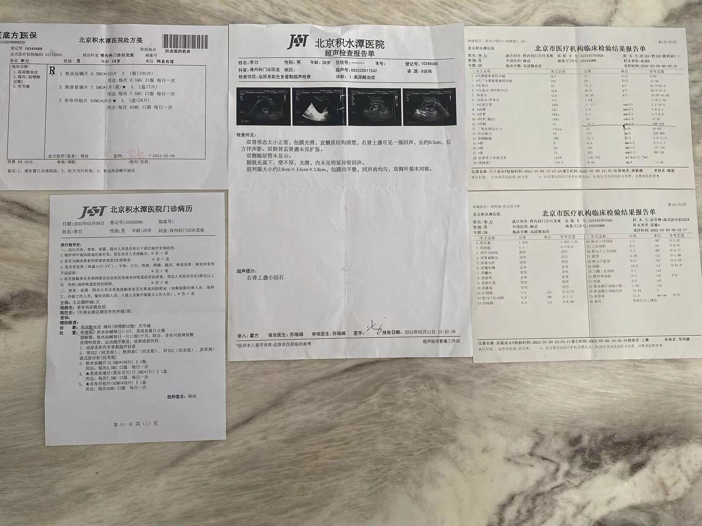
2022-05-15 北京积水潭医院
泌尿外科：肾结石
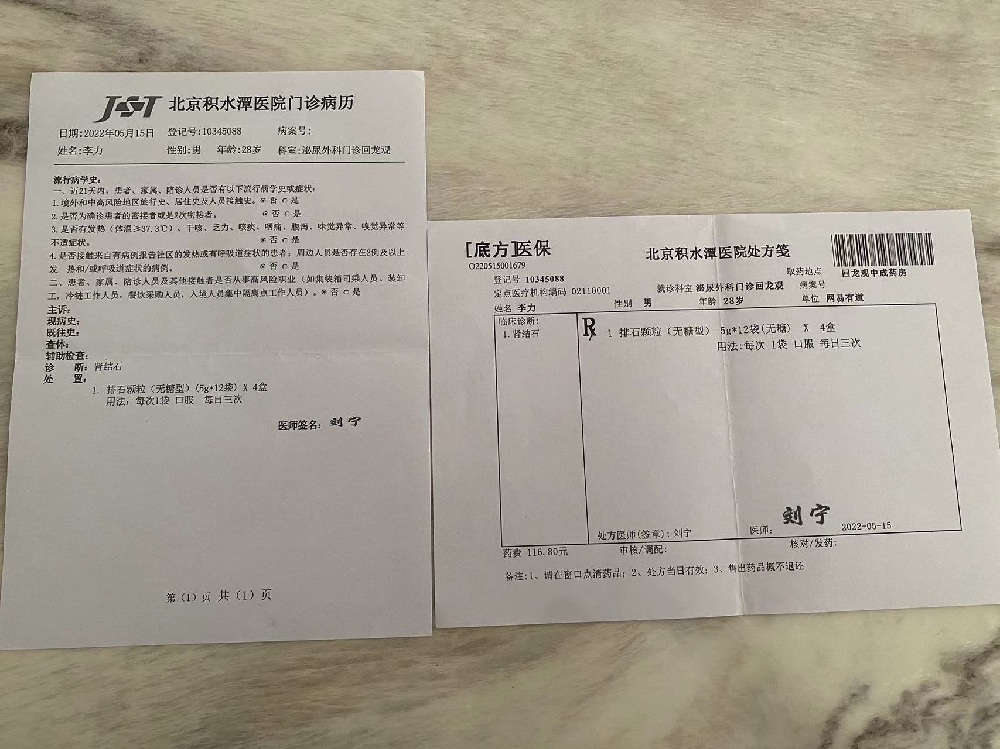
2022-06-16 北京积水潭医院
肾内科：痛风复查

2022-08-09 北京积水潭医院
肾内科：痛风，肾结石复查
2022-11-07 北京积水潭医院
肾内科：痛风，肾结石复查

2022-11-17 北京积水潭医院
内分泌科：甲状腺结节

2022-11-29 北京积水潭医院
消化内科：幽门杆菌阳性，浅表性胃炎

2023-03-01
消化内科：幽门杆菌复查阴性，恢复正常

2023-03-03
眼科：近视，斜视
体检报告汇总
总结
23年
血尿酸增高，血清总胆红素增高
22年9月
甲状腺结节，尿素降低，尿酸增⾼，⽢油三酯增⾼ 幽⻔阳性，颈椎⻣质增⽣，视⼒减退原因待查
21年3月
V1导联呈rSr’型，肾结晶
19年3月
不完全性右束支传导阻滞
17年
窦性心动过缓
减脂方案
{kind=link}
痛风的饮食方案
{kind=link}
烹饪
专业
烹饪原料学、食品卫生与安全、烹饪营养学、中国饮食保健学、烹调工艺学、面点工艺学、中式面点制作、江苏名菜、中国名菜
内容
面食
果蔬汁
百度网盘
https://pan.baidu.com/s/1U_iw7Udu8-ZN6UZFCD7Ryw?pwd=9734
原料
开门七件事：柴米油盐酱醋茶
米
七色糙米（糙米，红米，燕麦米，荞麦米，玉米碜，黑米，高粱米）
金龙鱼寒地东北大米
稻可道东北珍珠米（ 东方粮油 ）
方家铺子八宝粥米（糯米，绿豆，红小豆，大黄米，玉米碜，大麦仁，黑米，荞麦米）
十月稻田 紫薯黑粥米（黑米，白糯米，黑糯米，红小豆，花芸豆，紫米，紫薯，花生米）
十月稻田 八宝粥米（黑米，白糯米，黑糯米，红小豆，薏仁米，红枣，芸豆，花生米，莲子）
燕之坊 八宝粥米（长糯米，黑米，小麦仁，高粱米，豇豆，红小豆，芸豆，红皮花生仁，红枣，莲子，薏仁米）
面
福临门麦芯通用小麦粉（中筋粉）
金龙鱼麦芯小麦粉（高筋粉）
油
金龙鱼大豆油 益海嘉里金龙鱼
金龙鱼葵花籽油
鲁花5s压榨花生油（5section：选料、焙炒、压榨、过滤、存储）：山东鲁花
淀粉
土豆
红薯
玉米
糖
白砂糖（成都云糖耿马，蔗糖≥99.6%）
调料
调味料
花椒粉（红圣调味品，西安市佳香调味品）
精制碘盐（闪晶益盐堂，成都）
秦辣椒面
五香粉（八角，花椒，胡椒，桂皮，小茴香）
生抽（海天酿造酱油）
山西陈醋（山西紫林醋业股份有限公司-食醋行业“二把手”）
老抽（海天酿造酱油）
川南油辣子
拌面酱（厨邦牛肉拌面酱）
干辣椒
大料（大料）
食用碱面（银京）
食用小苏打（银京）
盐焗粉（海天）
混合芝麻酱（老磨盘）
花椒粉
孜然粉
黄豆酱（海天）
0金标陈醋（海天）
海天上等耗油（海天）
生姜粉
恒顺6度陈醋
有机亚麻籽油（晟麦）
麻油（金龙鱼）
香油（金龙鱼）
辣椒粉
十三香（八角、山楂、大茴香、小茴香、砂仁、肉蔻、丁香、茉莉、胡椒、薄荷、桂花、玫瑰、肉豆蔻、罗汉果、紫蔻、桂皮、甘草、香叶、木香各一份，肉桂、陈皮、白芷、三奈、姜各两份，花椒、大料五份。）
味精
花椒
顿可辣椒油（ 广州顿可食品 ）
富顺香辣酱（ 四川美乐富顺县 ）
调香料
调色料
调质料
坚果
带衣腰果，奶油巴旦木，薄皮核桃
巴达木、核桃仁、腰果
蔓越莓干、红葡萄干、黄葡萄干
果蔬汁
营养价值
配比大于个体：老百姓认为的营养学是什么有营养都吃就行了，而现代营养学中营养要求的是配比的重要性远远大于吃什么东西。
水果到果汁会导致营养（膳食纤维，维生素C）流失。剩下水和糖。但是微量元素，维生素会保留，
食用完整的水果比果汁好。如果你要用果汁作为水果和蔬菜的补充，问题不大。但如果你要大量饮用果汁或用果汁来补充水分，则不行。
单品
鲜橙汁，黄瓜汁，猕猴桃汁，雅梨汁，番茄汁，
复合品
胡萝卜苹果，胡萝卜橙汁，柚橘橙，香蕉橘子，蜂蜜牛奶果汁，西红柿苹果汁，番茄芹菜汁，胡萝卜花椰菜汁，苹果胡萝卜卷心菜汁
面食
中式面食
尝试
手擀面，水饺，馒头，包子，葱油饼
1两=50克，1斤=10两。
辣椒面和辣椒粉
淀粉：凉皮 凉粉 凉面 面筋
淀粉糊化，老化，
常识
面、水、盐、碱
新疆拉条子：盐水面，不放碱，制作时候不易断裂
热干面，盐碱拉面：碱水面，放碱，下锅后不易断裂
高筋面粉 蛋白质12.5-13.5%(面条,面包,泡芙饼,凉皮);
中筋面粉 蛋白质含量为9.5-12.0%(馒头,包子,饺子皮,面条,发面,一般的中式面点,普通面粉,超市散装)
低筋面粉 蛋白质含量在8.5%以(蛋糕,饼干,曲奇)没有的话,可以用中筋面粉+玉米淀粉.也叫蛋糕粉.
判断 手握松筋度高,手握块筋度低.
韧劲由蛋白质决定.
半发面:发面+死面混合,羊肉泡馍:1分发面9分死面
死面:未经酵母发酵的面团(面条,饺子皮,锅贴),盐(有利于面筋形成)+凉水
戗面:发酵好揉入适量的食用碱和干面粉(戗面馒头)
烫面:70度-100度之间的水将面团的中面筋和淀粉烫软烫熟膨化(蒸饺,虾饺,糖饼,糖糕,烙饼,春饼),把面粉烫熟了,很容易擀开,撕烂.
半烫面:一半开水+一半凉水(烫面+死面混合,烫面的软+死面的筋)
醒(饧)面:面团在制作成面食之前,静置一段时间
手擀面：揉面，醒面（饧面-加工前静置一段时间），擀面，煮面
擀面杖，案板长度。
酵母
含水量：干酵母，半干酵母，鲜酵母，对糖的忍受度：高糖。低糖
吐司模
快速酵母 干酵母
发酵发过判断：手指粘上干面粉在面团的中间插一个孔，看孔的周边是否有塌陷回缩的情况出现，如果没有那就发酵的刚刚好。
两个变化过程;
1. 淀粉酶分解淀粉产生糖.
2. 在无氧的环境下酵母生长繁殖,消耗糖,产生二氧化碳和酒精.
这两个变化过程是同时存在的.
(C6H10O5)n(淀粉)+nH2O+淀粉酶->nC6H12O6(葡萄糖)
C6H10O5(葡萄糖)+酵母菌->2C2H50H(酒精)+2CO2(二氧化碳)+能量
为什么糖会帮助发酵.因为酵母消耗糖来生长繁殖,而在发酵初期,淀粉酶分解淀粉的速度跟不上,产生的糖有限.
为什么低温发酵会增加面粉的香甜.低温下,酵母停止生长繁殖,不再消耗糖.而淀粉酶还再继续分解淀粉产生糖.所以面团里的糖越来越多,你可以品尝到它的甜味.
小高姐系列
关键字
饼
免揉面 韭菜盒子
空心葱油饼
麻酱烧饼
家常葱油饼
春卷皮 润饼皮
葱油酥饼 Scallion Pancakes
薄饼快速制作 Quick Flatbread
鸡蛋灌饼
薄煎饼
豆沙酥饼
薄皮馅饼
萝卜丝饼
韭菜盒子
芝麻烧饼
玉米饼
早餐鸡蛋饼
海鲜煎饼
印度薄饼
牛肉馅饼
鸡蛋饼
烙的是什么饼
葱油大饼
摊煎饼
西红柿煎饼
韭菜盒子
春饼
紫薯饼
手抓饼
煎饼果子
鸡蛋灌饼的做法
烙烧饼
西安小吃 油馍
葱油饼
西安小吃
卤汁凉粉
酸菜炒米
浆水鱼鱼
油泼辣子
凉粉
西安麻酱凉皮
西安凉皮系列 【秦镇米皮】
西安油泼辣子
凉皮 岐山擀面皮 蒸擀面皮
陕西凉皮 岐山擀面皮 凉皮醋
西安凉皮 岐山擀面皮 洗面筋
陕西西安凉皮--岐山擀面皮之油泼辣子
香酥牛肉饼
菠菜面 / 蒜蘸面
甑糕
麦饭
凉皮
炒凉粉
拨面鱼
水盆羊肉
酸汤水饺
浆水面
涮牛肚
西安牛羊肉泡馍 （2） 西安辣子酱
西安牛羊肉泡馍 （1） 腌糖蒜
蜂蜜凉粽子
桂花酱
西安牛羊肉泡馍 (3) 牛肉泡馍
西安肉丸胡辣汤
西安小吃 油馍
西安腊牛肉
油泼扯面
油茶 麻花 （汤茶 面茶）
麻花
异国风味
中式面食
韭菜馅饼
冰花煎饺
素五鲜水饺
搓麻食
灌蛋油条
手工长寿面
馒头为什么塌陷
刀削面
蒜香虾仁凉面
煎包
薄皮馅饼
豆沙包
16种实用饺子包法
羊肉水饺
柳叶包
蒸米蛋糕
炒面
滋卷/菜卷
凉面
韭菜盒子
芝麻烧饼
手擀肉臊面
炒拉条子
虾仁蒸饺
西葫芦饼
牛肉夹馍
菠菜面/蒜蘸面
灌汤包子
广式月饼
咸绿豆酥饼
沙琪玛
香酥牛肉饼
开口笑
凉皮
高筋粉, 中筋粉, 低筋粉
红豆饼
葱油饼
发面 烫面 死面
花卷
包子
鸡汤馄饨
手工馄饨皮
枣馍
炸麻叶/排叉
牛肉馅饼
水煎包
蒸馒头
炸馓子
油泼面/裤带面
月牙饼
水盆羊肉
炸油条
炒饼
烙饼
葱油大饼
西红柿煎饼
韭菜盒子
饺子 西红柿牛肉馅
春饼
酸汤水饺
紫薯饼
臊子面
手擀面
西安麻酱凉皮
手抓饼
牛肉煎饺
西安凉皮系列秦镇米皮
鸡丝凉面
西安牛羊肉泡馍
葱油饼
鸡蛋糕
鸡蛋灌饼的做法
油馍
烙烧饼
煎饼果子
油泼扯面
凉皮 岐山擀面皮 蒸擀面皮
陕西凉皮 岐山擀面皮 凉皮醋
西安凉皮 岐山擀面皮 洗面筋
岐山擀面皮之油泼辣子
麦饭
盘丝饼
拨面鱼
红烧牛肉面
浆水面
家常菜
切西瓜
糖醋茄子
葱爆羊肉
蒜蓉虾仁
小炒茄子
红焖羊肉
红烧牛仔骨
蒜蓉西兰花
粉蒸牛肉
酸白菜
炒鸡肉丝/鸡肉片
酸豆肉末
拍黄瓜
丸子汤
烧茄子
香辣土豆
青椒牛肉
红烧小羊腿
香酥辣椒
拔丝地瓜
蒸鸡蛋羹
西红柿鸡蛋汤
烤鸡翅
烤牛排骨
土豆饼
番茄炒蛋
蛋炒饭
炸鱼排 如何调面糊，挂浆，炸出酥脆的纹路
红烧带鱼 炒糖色的方法
脆皮鸡
炒凉粉 一个简单窍门 轻松制作完美凉粉
凉拌莲藕 / 呛莲菜
无水烧南瓜 甘面
烧鸡 免油炸 水煮三黄鸡的技巧
蒸馒头
酸黄瓜
酱牛肉 肉酥 筋软 味道香 三酱牛肉的秘诀
鸡蛋饼 不要问我为什么 面粉就是这么神奇
水盆羊肉 几块羊肉炖一大锅汤 全家都吃好
炸油条 千锤百炼的配方 最适合家庭制作
茶叶蛋
炒饼 北方最具特色的一道菜/饭
尖椒炒鸡蛋
溏心鸡蛋 滋味美妙的蛋黄是如何做出来的
荷包蛋 轻松做出形状完整的水煮荷包蛋
煎鸡蛋
炸鸡蛋
炸薯丝
炸薯片
烤羊排
葱油蒜香煎三文鱼
凉拌萝卜
泡菜的做法
孜然牛肉
素菜
发豆芽 (瓶装法)
炸酸菜
拔丝地瓜
凉拌莲藕/呛莲菜
凉拌茄子
酸辣土豆丝
脆皮黄瓜
无水烧南瓜
酸黄瓜
炸薯丝
炸薯片
炸薯条
凉拌土豆丝
浆水面
凉拌萝卜
泡菜的做法
西安麻酱凉皮
冻柠檬茶/冰红茶
西安牛羊肉泡馍 （2） 西安辣子酱
西安牛羊肉泡馍 （1） 腌糖蒜
桂花酱
爆米花
花生糖
传统美食
水晶牛肉冻
冰花煎饺
手抓饭
酱黄瓜
蛋卷
蜜豆尖角粽
花生汤圆
百财饺子
凤梨酥
奶香月饼
豌豆凉粉
蜜枣紫米粽
薄煎饼 煎饼应该用豆粉，玉米粉，还是面粉？
豆沙酥饼
蛋黄酥
酸菜炖牛尾
疙瘩汤
绿豆糕
冰皮月饼
姜撞奶
千层肉饼
火锅
红烧小羊腿
椒盐五仁月饼
盐酥鸡
凉粉
肉粽 香菇鸡肉粽
牛肉夹馍 （上）牛肉的做法
芝麻汤圆
蒸鸡蛋羹
咸绿豆酥饼
沙琪玛
开口笑
甑糕
粽子包法
麻团/煎堆
炸麻叶/排叉
炸馓子
炒凉粉
枣沫糊
拨面鱼
茶叶蛋
溏心鸡蛋
浆水面
涮牛肚 西安夜市小吃
蜂蜜凉粽子
桂花酱
鸡蛋糕
西安小吃 油馍
西安腊牛肉
油茶 麻花 （汤茶 面茶）
麻花
酸奶
面包制作
全麦吐司 (50% 全麦）
汤种面包
超软蜂蜜面包
丹麦吐司
绣球面包
简单手工面包
法棍
贝果
土豆面包
蒜香面包
披萨做法
牛角包
全麦面包
柔软牛奶吐司
面包 基础面团
厨具
牛奶 如何选择适合自己的牛奶
小苏打和食用碱面的区别
小苏打和泡打粉的区别
炒锅选购（铝锅,铜锅,不锈钢锅）
铸铁锅翻新
铁锅开锅,铁锅翻新,铁锅保养
炒锅选购-3 铸铁锅 碳钢锅 中式炒锅 铁锅也可以无油煎鸡蛋
炒锅选购-2 （玻璃锅 珐琅锅 不粘锅）不粘锅的涂层真的有毒吗？
刀具 如何正确购买厨房刀
视频教学
小高姐：https://www.youtube.com/@MagicIngredients
油泼扯面
https://www.youtube.com/watch?v=38XuHv8Rgig
一共可以做视频中的3碗
和面：
中筋面粉 2.5杯 （蓬松量法） 365克
盐 1/4 茶勺 2克
室温水 3/4 杯加1茶勺 191克
每碗油泼面的配料:
青菜 1根
酱油 1小勺
葱 半根
辣椒粉 1小勺
盐 1/4 小勺可以适量增加
油 1大勺
手擀面
https://www.youtube.com/watch?v=JLMVliKYshs
中筋面粉一杯半
水半杯
盐1/4小勺
碱面1小勺 （一般面条可用1/4小勺碱面或者不放）
淀粉适量
手擀臊子面
https://www.youtube.com/watch?v=N0oqXwMjhDs
面条：
水：110克 1/3杯 + 2大勺
盐：1/8小勺
碱面：1/8小勺
（如果没有碱面，可以用热水把小苏打化开，水凉一点，在跟面粉混合）
中筋面粉：250克 1+2/3 杯
肉臊：
鸡腿肉：300克
生姜泥：10克
生抽：10克，2小勺
老抽：10克，2小勺
五香粉：1/8小勺
白胡椒粉：1/8小勺
辣酱：15克
热水：60克，1/4 杯
葱花：适量
汤碗：
生抽，香醋，香油，葱花
今天我们来做一碗手擀肉臊面，看看怎么样揉硬面团，先来和面，室温水把盐和碱面化开，没有碱面的话，用热水把小苏打化开，水放凉再用
小苏打没有，也没有干系，你不放也可以，中筋面粉一点一点加水，同时搅拌，然后面粉就变成絮状了，对于特别干的面团
这样做，是为了先把水均匀得分布在面粉中间你和面的话，就会容易一些，这个面很干，但是它可以粘在一起成团就可以了，坑坑洼洼的不要紧
不着急揉面，保鲜纸的保湿效果好一点，半个小时后，还是一个干面团，但是你揉面的感觉会稍微好一点
这一步的目的是把面团揉均匀，不需要光面，面筋裂开也没有关系，再给它半个小时，半个小时之后，回来，轻轻的揉两下，面团就光了，
饧面的次数多一些，你揉面的力气就少用一点，擀面之前，最后饧面一个小时，让面筋放松，准备一些带皮的鸡腿肉，其它肉都可以切成小丁
油不是特别热的时候，放入鸡丁，鸡肉会出水，先把肉里的水炒干
放入姜末，生抽，老抽，五香粉，白胡椒粉，一点辣酱，没有辣酱，你可以用其它酱，甜面酱，豆瓣酱都行
炒一炒，香味炒出来，然后加一点热水，焖一下，出锅之前，撒上葱花，一个小时之后我们来擀面，撒一点玉米淀粉，用手压扁
面团比较厚，擀面杖先从中间擀出去，然后擀薄一点，让它可以卷在擀面杖上，向先前推得同时，向下压，然后换一个角度
慢慢地面团就擀大了，面团现在已经擀开了，刚才一直是从中间往两边擀，现在，只从两边擀，中间不再用力，如果你继续擀中间的话
中间被擀大，而周周没有被擀开，中间就会起大泡了，到这个程度 就可以啦，你发现了没有我在擀面的过程中，没有撒干面粉
面团饧好，揉到，擀面的过程中是不需要面扑的，它的表面平滑，而且它的边缘也不会裂开，切面条之前，薄薄撒一层淀粉
卷起来折叠切开，你注意到了吗，折叠起来的面片，上面的一层，总是比下面的一层窄一点，这样你切面条的时候，它就不容易错位了
特别是切比较细的面条，轻轻一抖就散开了，擀面的时候，都不用面扑，这个地方不会粘在一起的，准备一个碗，放一点生抽
香醋，香油和葱花，开水下锅，水开后，盛一勺汤浇在碗里，面条一共煮了一分钟，烫一点青菜，放入我们做的肉臊子
最后来一勺辣椒油，这个面擀出来的时候，你看到它的样子，就知道它应该是很好吃，平滑的表面，面条吸到嘴里，就是滑溜滑溜的
你花时间饧面，揉面，面条嚼在齿间是劲道劲道的，配上肉臊，配上辣油面条咽下肚中是舒坦，舒坦的
小苏打和实用碱面区别
https://www.youtube.com/watch?v=B8-4GHFjhDY
小苏打（碳酸氢钠）用来起泡，要加入酸性材料反应，比如松饼，炸鱼+醋，加深食物颜色，油条炸出来金黄色，碱面（碳酸钠）用来中和酸。比如做馒头，酵母多了产生酸，放碱面来中和酸。香酥牛肉饼+碱会香，面条+碱面，淡淡黄色，吃起来滑爽。
小苏打放烤箱，烤半小时，就成了碱面。
1. 两个同为碱性物质都可以和酸发应，并且释放气体。但是小苏打和酸会产生更多的气体。小苏打在食谱中通常是作为发泡剂之一。
而碱面很少作为主要的发泡剂，常常用来中和酸性口味。
2 小苏打受热会分解产生气体，而碱面受热不会。所以做面条的时候，为了不降低它的筋性，通常会放碱面。即便是用小苏打，也会先拿热水把它化开，
让它热解后转化为碱面溶液之后再来和面。
发面
https://www.youtube.com/watch?v=r3ak-JxHdh0
低温冰箱发酵：10度以下，酵母停止繁殖。酵母繁殖产生C02停止的，但是淀粉酶把淀粉转糖没停止。例如法棍。
最好温度：24-26度左右
蒸馒头
https://www.youtube.com/watch?v=uHdFea95PLU
面肥（老面、老肥、老酵母、引子） https://baike.sogou.com/v591171.htm
酵母隔夜发酵。长时间低温发酵。
下剂子：大面团揉成长条后再分成的均匀小块
超市馒头加了面粉改良剂。
没有盐，没有泡打粉，靠长时间发酵而唤醒小麦中天然的香味，
蒸汽均匀散发，和蒸屉一样。
小苏打和泡打粉的区别
https://www.youtube.com/watch?v=amdln95X4hs
小苏打是碱性，需要酸性物质和它发生反应产生气泡；而泡打粉和碱性和酸性物质的混合，直接可以用来发泡，不需要另外添加酸性物质。
铝锅 铜锅 不锈钢锅
https://www.youtube.com/watch?v=BaYhUKLXa4A
导热性（传递热的能力），热容量（吸收和散热能力），不粘性）
纯铝锅:导热好，是铁的3倍，容易和酸（西红柿，醋，柠檬）反应，软（铲子碎末刮到菜里面），老年痴呆症
纯铜锅:导热好，是铁的5倍，和酸反应，不建议买，对身体不好。市场一般有保护层，一般是铜包裹不锈钢
不锈钢锅:导热不好，纯不锈钢不需要考虑，市场一般铝夹层，避免和食物直接接触，通过铝导热。铜夹层，还有铜把不锈钢全部包起来了。导热性会更好。
铸铁锅
导热实验，放糖加热。
铁锅（开锅，翻新，保养）
https://www.youtube.com/watch?v=9xb0z5c_v6c
铸铁锅 碳钢锅 中式炒锅
血液含量铁，对身体好。
热锅凉油
铁含碳越高，越坚硬，但是也脆。铸铁锅材料生铁，生铁锅，含碳2%，高含量，比较脆，锻造不行只能铸造。
碳钢锅，熟铁锅，含碳1%，锻造或者机器压出来的，
铁锅也可以无油煎鸡蛋
铸铁锅热容量很好，所以恒温，烹饪好。
铁锅健康，
锻造、冲压、铸造
中式炒锅:
不粘锅：涂层不能不能爆炒，热锅凉油不能干烧
不锈钢：会粘锅，难以生成好的粘层，比较重
铸铁（生铁）：厚，重，不好翻滚，生铁含碳高所以碎因此要厚点，只能铸造，热容量高，铁导热不行，但是厚，改进了整体导热。锈可以改进，厚没办法改变。
碳钢（熟铁）：完美炒锅，生成不粘层，轻，耐高温，热的快，冷的快，容易掌握火候
家里的炒锅是不粘锅和碳钢，平底锅是铸铁锅，蒸锅是不锈钢锅。
西安麻酱凉皮
https://www.youtube.com/watch?v=Ev8jCSlZi30
凉皮
https://www.youtube.com/watch?v=Ru8F4vesAUo
凉粉
https://www.youtube.com/watch?v=BStgIeNQrRk
拍黄瓜
https://www.youtube.com/watch?v=3ivuzop0ohg
浆水面
https://www.youtube.com/watch?v=k2Gs05rNveA
浆水鱼鱼
https://www.youtube.com/watch?v=fVG27JUuquo
油泼辣子
https://www.youtube.com/watch?v=liyy9eb2xb0
油泼辣子2
https://www.youtube.com/watch?v=qAA8jA5Nu3M
泡馍
https://www.youtube.com/watch?v=lxcHCgObobg
粽子
https://www.youtube.com/watch?v=AgBz3yupiE0
葱油饼
https://www.youtube.com/watch?v=oUpiSLBYyZQ
育儿
书籍
崔玉涛育儿百科
美国儿科学会：美国儿科学会育儿百科（第7版），
美国儿科学会健康育儿指南，
美国儿科学会新生儿婴儿护理全书，
美国儿科学会实用喂养指南(第2版)
美国儿科学会母乳喂养指南，
美国儿科学会婴儿亲子游戏 : 100+个有研究依据的经典游戏促进宝宝生长发育，
美国儿科学会：宝宝生病了怎么办，
中医
医学百科
http://www.a-hospital.com
中医世家
https://www.zysj.com.cn/
人物
倪海厦，曲黎敏
中医
医学百科
http://www.a-hospital.com
中医世家
https://www.zysj.com.cn/
人物
倪海厦，曲黎敏
国学
参考网站
重点研究方向
儒家：四书五经，荀子，十三经
佛家：佛教十三经
道家：老庄列
兵家：武经七书，三十六计
杂家：管子，韩非子，墨子，鬼谷子，黄帝内经
史和散文：《古文观止》《古文辞类纂》《经史百家杂钞》《史记》《汉书》《后汉书》~~
通识概览
中华国学经典精粹
古文通识
吴楚材：《古文观止》
萧统：《昭明文选》
姚鼐（nai）：《古文辞类纂》
曾国藩：《经史百家杂钞》
百家观点
南怀瑾书单：https://www.quanxue.cn/ct_nanhuaijin/guoxue/guoxue15.html
李克强：追忆李诚先生 https://new.qq.com/rain/a/20230721A05O3400
传统美学三书《浮生六记》《随园食单》《闲情偶寄》
大纲概览
中华国学经典精粹126本
在北京购于2022-10-09，总共216元，一本约等于1.7元
四书五经
儒家经典
道家经典
兵家经典
诸子百家
帝王治国谋略
国学启蒙
史学经典
地理经典
处世三大奇书
权谋智慧
圣贤家训
唐诗宋词元曲
唐宋八大家 古文观止
诗词入门
字典词典
名家诗词
诗词评论
中医养生
志怪小说
三言二拍
闲情笔记
古代科技
中华经典故事
中国哲学书电子化计划
先秦两汉：https://ctext.org/pre-qin-and-han/zhs
汉代之后：https://ctext.org/post-han/zhs
名人自述
《抱朴子·外篇·自叙》：参考
《儒家·论衡·自纪》：参考
《史记·列传·太史公自序》：参考
《汉书·传·叙传》：参考
《儒家·春秋繁露·自序》：参考
小孩国学之思
认字：易经64卦，尔雅，说文解字，千字文。三百千千。
千字文
弟子规
孝经
朱子治家格言
笠翁对韵
学记
太上感应篇
文昌帝君阴骘文
附录：常礼举要
蒙学
http://www.guoxue.com/cp/gxbd_ml03_03.htm#04
经
易经
笔记
中正比应
学习记录
2024-02-18
雷山恒
雷火小过
论语
孟子
阅读进度
滕文公 上
梁惠王上
梁惠王下
公孙丑上
公孙丑下
滕文公上
滕文公下
离娄上
离娄下
万章上
万章下
告子上
告子下
尽心上
尽其心者，知其性也。知其性，则知天矣
人不可以无耻。无耻之耻，无耻矣
穷则独善其身，达则兼善天下
穷不失义，达不离道
善政民畏之，善教民爱之；善政得民财，善教得民心
亲亲，仁也；敬长，义也
有大人者，正己而物正者也
君子有三乐
君子所性，仁义礼智根于心
君子之志于道也，不成章不达
居仁由义，大人之事备矣
形色，天性也；惟圣人，然后可以践形
君子之所以教者五：有如时雨化之者，有成德者，有达财者，有答问者，有私淑艾者。此五者，君子之所以教也
天下有道，以道殉身；天下无道，以身殉道
亲亲而仁民，仁民而爱物
尽心下
仁者以其所爱及其所不爱，不仁者以其所不爱及其所爱
尽信《书》，则不如无《书》
梓匠轮舆能与人规矩，不能使人巧
不仁而得国者，有之矣；不仁而得天下，未之有也
民为贵，社稷次之，君为轻
贤者以其昭昭，使人昭昭；今以其昬昬，使人昭昭
可欲之谓善，有诸己之谓信。充实之谓美，充实而有光辉之谓大，大而化之之谓圣，圣而不可知之之谓神
言近而指远者，善言也；守约而施博者，善道也
说大人，则藐之，勿视其巍巍然
养心莫善于寡欲
提到人物
梁惠王，梁襄王，齐宣王，滕文公，鲁平公
乐正克，臧仓，公孙丑
管仲，晏子 《史记 管晏列传》：参考
子路，曾西（曾子之孙），告子
孟贲 孟贲因秦武王举鼎而死事件被族灭
提到名句
《尚书·商书·太甲》：天作孽，犹可违；自作孽，不可逭 参考
《诗经·国风·豳风·鸱鴞》：迨天之未阴雨、彻彼桑土、绸缪牖户。今女下民、或敢侮予。参考
《诗经·大雅·文王之什·文王》：永言配命、自求多福。参考
《诗经·大雅·文王之什·灵台》：经始灵台、经之营之。庶民攻之、不日成之。经始勿亟、庶民子来。王在灵囿、麀鹿攸伏、麀鹿濯濯、白鸟翯翯。王在灵沼、于牣鱼跃。 参考
《尚书·商书·汤誓》：时日曷丧？予及汝皆亡。参考
《诗经·大雅·文王之什·思齐》：刑于寡妻、至于兄弟、以御于家邦。参考
《诗经·颂·周颂·清庙之什·我将》：畏天之威、于时保之。参考
《诗经·大雅·文王之什·皇矣》：王赫斯怒、爰整其旅、以按徂旅、以笃于周祜、以对于天下。参考
《诗经·小雅·祈父之什·正月》：佌佌彼有屋、蔌蔌方有谷。民今之无禄、天夭是椓。哿矣富人、哀此惸独。参考
《诗经·大雅·生民之什·公刘》：乃积乃仓。乃裹糇粮、于橐于囊、思辑用光。弓矢斯张、干戈戚扬、爰方启行。参考
《诗经·大雅·文王之什·緜》：古公亶父、来朝走马。率西水浒、至于岐下。爰及姜女、聿来胥宇。参考
《礼记·曲礼上》：侍坐于先生：先生问焉，终则对。请业则起，请益则起。父召无诺，先生召无诺，唯而起。参考
《尚书·商书·说命上》：命之曰：“朝夕纳诲，以辅台德。若金，用汝作砺；若济巨川，用汝作舟楫；若岁大旱，用汝作霖雨。启乃心，沃朕心，若药弗瞑眩， 厥疾弗瘳；若跣弗视地，厥足用伤。惟暨乃僚，罔不同心，以匡乃辟。俾率先王，迪我高后，以康兆民。呜呼！钦予时命，其惟有终。” 参考
《诗经·国风·豳风·七月》：九月筑场圃、十月纳禾稼。 黍稷重穋、禾麻菽麦。嗟我农夫、我稼既同、上入执宫功。昼尔于茅、宵尔索綯。亟其乘屋、其始播百谷。参考
《诗经·小雅·北山之什·大田》：有渰萋萋、兴雨祁祁。雨我公田、遂及我私。彼有不获穉、此有不敛穧。 彼有遗秉、此有滞穗、伊寡妇之利。参考
《诗经·大雅·文王之什·文王》：文王在上、于昭于天。周虽旧邦、其命维新。有周不显、帝命不时。文王陟降、在帝左右。参考
《诗经·小雅·彤弓之什·车攻》：四黄既驾、两骖不猗。不失其驰、舍矢如破。参考
《诗经·颂·鲁颂·閟宫》：公车千乘、朱英绿縢、二矛重弓。公徒三万、贝胄朱綅。烝徒增增、戎狄是膺。 荆舒是惩、则莫我敢承。俾尔昌而炽、俾尔寿而富、黄发台背、寿胥与试。俾尔昌而大、俾尔耆而艾、万有千岁、眉寿无有害。参考
《诗经·大雅·生民之什·假乐》：干禄百福、子孙千亿。穆穆皇皇、宜君宜王。不愆不忘、率由旧章。参考
《诗经·大雅·生民之什·板》：天之方难、无然宪宪。天之方蹶、无然泄泄。辞之辑矣、民之洽矣。辞之怿矣、民之莫矣 。参考
《诗经·大雅·荡之什·荡》：文王曰咨、咨女殷商。人亦有言、颠沛之揭。枝叶未有害、本实先拨。殷鉴不远、在夏后之世。参考
《诗经·大雅·文王之什·文王》：穆穆文王、于缉熙敬止。假哉天命、有商孙子。商之孙子、其丽不亿。上帝既命、侯于周服。侯服于周、天命靡常。殷士肤敏、祼将于京。厥作祼将、常服黼冔。王之荩臣、无念尔祖。参考
《诗经·大雅·荡之什·桑柔》：为谋为毖、乱况斯削。告尔忧恤、诲尔序爵。谁能执热、逝不以濯。其何能淑、载胥及溺。参考
《楚辞·渔父》：
“子非三闾大夫与？何故至于斯！”
屈原曰：“举世皆浊我独清，众人皆醉我独醒，是以见放！”
渔父曰：“圣人不凝滞于物，而能与世推移。
世人皆浊，何不淈其泥而扬其波？
众人皆醉，何不餔其糟而歠其酾？
何故深思高举，自令放为？”
屈原曰：“吾闻之，新沐者必弹冠，新浴者必振衣；
安能以身之察察，受物之汶汶者乎！
宁赴湘流，葬于江鱼之腹中。
安能以皓皓之白，而蒙世俗之尘埃乎！”
渔父莞尔而笑，鼓枻而去，乃歌曰：
“沧浪之水清兮，可以濯吾缨。
沧浪之水浊兮，可以濯吾足。”
遂去不复与言。
大学
中庸
礼记
孝经
尚书
诗经
尔雅
史
纲鉴易知录
史记
资治通鉴
子
道德经
庄子
阅读进度
https://ctext.org/zhuangzi/ze-yang/zhs
学习方法
先概览三遍，有感性印象，找出里面出现人物和典故，后中华书局三全版本精读，学习义理，最后通过南怀瑾/其他人解读学习。最后找经典篇章背诵。
逍遥游
野马也，尘埃也，生物之以息相吹也。
天之苍苍，其正色邪？
至人无己，神人无功，圣人无名
至人无己，神人无功，圣人无名
若夫乘天地之正，而御六气之辩，以游无穷者，彼且恶乎待哉！
今子有大树，患其无用，何不树之于无何有之乡？
不夭斤斧，物无害者，无所可用，安所困苦哉
齐物论
天地，一指也；万物，一马也。
大知闲闲，小知间间；大言炎炎，小言詹詹。
道隐于小成，言隐于荣华。
物无非彼，物无非是。自彼则不见，自知则知之。
方生方死，方死方生；方可方不可，方不可方可；因是因非，因非因是。
道行之而成，物谓之而然。
名实未亏，而喜怒为用，亦因是也。
道之所以亏，爱之所以成。
天地与我并生，而万物与我为一。
六合之外，圣人存而不论；六合之内，圣人论而不议。春秋经世，先王之志，圣人议而不辩。
夫大道不称，大辩不言，大仁不仁，大廉不嗛，大勇不忮
道昭而不道，言辩而不及，仁常而不成，廉清而不信，勇忮而不成
众人役役，圣人愚芚，参万岁而一成纯
周与胡蝶，则必有分矣。此之谓物化
养生主
吾生也有涯，而知也无涯。以有涯随无涯，殆已；已而为知者，殆而已矣。
为善无近名，为恶无近刑。
缘督以为经，可以保身，可以全生，可以养亲，可以尽年。
技经肯綮之未尝，而况大軱乎！
提刀而立，为之四顾，为之踌躇满志，善刀而藏之。
闻庖丁之言，得养生焉。
安时而处顺，哀乐不能入也，古者谓是帝之县解
人间世
夫道不欲杂，杂则多，多则扰，扰则忧，忧而不救。
古之至人，先存诸己，而后存诸人。
灾人者，人必反灾之
治国去之，乱国就之，医门多疾
气也者，虚而待物者也
绝迹易，无行地难
为人使，易以伪；为天使，难以伪
行事之情而忘其身，何暇至于悦生而恶死
近则必相靡以信，远则必忠之以言
风波易以动，实丧易以危
形莫若就，心莫若和
是不材之木也，无所可用，故能若是之寿
实熟则剥，剥则辱，大枝折，小枝泄
来世不可待，往世不可追也。
天下有道，圣人成焉；天下无道，圣人生焉。
人皆知有用之用，而莫知无用之用也
福轻乎羽，莫之知载；祸重乎地，莫之知避
德充符
鉴明则尘垢不止，止则不明也。
久与贤人处，则无过。
知不可奈何而安之若命，惟有德者能之
死生存亡，穷达贫富，贤与不肖，毁誉、饥渴、寒暑，是事之变，命之行也；
德有所长，而形有所忘
人不忘其所忘，而忘其所不忘，此谓诚忘
言人之不以好恶内伤其身，常因自然而不益生也
道与之貌，天与之形，无以好恶内伤其身
大宗师
知天之所为，知人之所为者，至矣。
以刑为体，以礼为翼，以知为时，以德为循
死生，命也，其有夜旦之常，天也。
泉涸，鱼相与处于陆，相呴以湿，相濡以沫，不如相忘于江湖
夫大块载我以形，劳我以生，佚我以老，息我以死
故善吾生者，乃所以善吾死也
若夫藏天下于天下，而不得所遯，是恒物之大情也。
善妖善老，善始善终
鱼相造乎水，人相造乎道
鱼相忘乎江湖，人相忘乎道术
天之小人，人之君子；人之君子，天之小人也
堕肢体，黜聪明，离形去知，同于大通，此谓坐忘
天无私覆，地无私载
应帝王
游心于淡，合气于漠，顺物自然，而无容私焉，而天下治矣
功盖天下而似不自己，化贷万物而民弗恃，有莫举名，使物自喜，立乎不测，而游于无有者也
无为名尸，无为谋府，无为事任，无为知主
至人之用心若镜，不将不迎，应而不藏，故能胜物而不伤
骈拇
彼正正者，不失其性命之情
常然者，曲者不以钩，直者不以绳，圆者不以规，方者不以矩，附离不以胶漆，约束不以纆索。
小惑易方，大惑易性
小人则以身殉利，士则以身殉名，大夫则以身殉家，圣人则以身殉天下
彼其所殉仁义也，则俗谓之君子；其所殉货财也，则俗谓之小人
吾所谓聪者，非谓其闻彼也，自闻而已矣；吾所谓明者，非谓其见彼也，自见而已矣
夫不自见而见彼，不自得而得彼者，是得人之得而不自得其得者也，适人之适而不自适其适者也
余愧乎道德，是以上不敢为仁义之操，而下不敢为淫僻之行也
马蹄
同乎无知，其德不离；同乎无欲，是谓素朴
道德不废，安取仁义！性情不离，安用礼乐！五色不乱，孰为文采！五声不乱，孰应六律！
讲到了很多圣人之过。
胠箧
世俗之所谓知者，有不为大盗积者乎？所谓圣者，有不为大盗守者乎？
小国不敢非，大国不敢诛
何适而无有道邪？夫妄意室中之藏，圣也；入先，勇也；出后，义也；知可否，知也；分均，仁也。五者不备而能成大盗者，天下未之有也。
善人不得圣人之道不立，跖不得圣人之道不行；天下之善人少而不善人多，则圣人之利天下也少而害天下也多
圣人已死，则大盗不起，天下平而无故矣。圣人不死，大盗不止
为之斗斛以量之，则并与斗斛而窃之；为之权衡以称之，则并与权衡而窃之；为之符玺以信之，则并与符玺而窃之；为之仁义以矫之，则并与仁义而窃之
彼窃钩者诛，窃国者为诸侯
绝圣弃知，大盗乃止；掷玉毁珠，小盗不起
上诚好知而无道，则天下大乱矣
天下皆知求其所不知，而莫知求其所已知者，皆知非其所不善，而莫知非其所已善者，是以大乱
在宥
世俗之人，皆喜人之同乎己，而恶人之异于己也。
同于己而欲之、异于己而不欲者，以出乎众为心也。
夫有土者，有大物也。有大物者，不可以物物；而不物，故能物物。
睹有者，昔之君子；睹无者，天地之友。
无为而尊者，天道也；有为而累者，人道也
盗跖、曾参、史鳅（史鱼）
桎梏
六气：阴阳风雨晦明
六合：天地，四方
九州：古代中国的代称
天地
天地虽大，其化均也；万物虽多，其治一也；人卒虽众，其主君也。
以道观言而天下之君正，以道观分而君臣之义明，以道观能而天下之官治，以道泛观而万物之应备
通于一而万事毕，无心得而鬼神服
不拘一世之利以为己私分，不以王天下为己处显。
显则明，万物一府，死生同状
天下有道则与物皆昌，天下无道则修德就闲
有机械者必有机事，有机事者必有机心
执道者德全，德全者形全，形全者神全。神全者，圣人之道也。
知其愚者，非大愚也；知其惑者，非大惑也。大惑者，终身不解；大愚者，终身不灵。
五色乱目，使目不明；五声乱耳，使耳不聪；五臭薰鼻，困惾中颡；五味浊口，使口厉爽；趣舍滑心，使性飞扬
天道
天道运而无所积，故万物成；帝道运而无所积，故天下归；圣道运而无所积，故海内服
万物无足以铙心者，故静也
夫虚静恬淡，寂寞无为者，万物之本也
知天乐者，其生也天行，其死也物化
故知天乐者，无天怨，无人非，无物累，无鬼责
上必无为而用天下，下必有为为天下用，此不易之道也
天不产而万物化，地不长而万物育，帝王无为而天下功
本在于上，末在于下；要在于主，详在于臣。
三军、五兵之运，德之末也；赏罚利害，五刑之辟，教之末也；礼法度数，形名比详，治之末也； 钟鼓之音，羽毛之容，乐之末也；哭泣衰绖，隆杀之服，哀之末也。此五末者，须精神之运，心术之动，然后从之者也。末学者，古人有之，而非所以先也。
夫道，于大不终，于小不遗，故万物备。广广乎其无不容也，渊乎其不可测也
视而可见者，形与色也；听而可闻者，名与声也。悲夫！世人以形色名声为足以得彼之情！夫形色名声果不足以得彼之情，则知者不言，言者不知，而世岂识之哉！
天运
至仁无亲
以敬孝易，以爱孝难；以爱孝易，以忘亲难；忘亲易，使亲忘我难；使亲忘我易，兼忘天下难；兼忘天下易，使天下兼忘我难。
虎狼，仁也。
中无主而不止，外无正而不行
性不可易，命不可变，时不可止，道不可壅
苟得其道，无自而不可；失焉者，无自而可
刻意
若夫不刻意而高，无仁义而修，无功名而治，无江海而闲，不道引而寿，无不忘也，无不有也，澹然无极而众美从之，此天地之道，圣人之德也。
平易恬惔，则忧患不能入，邪气不能袭，故其德全而神不亏
心不忧乐，德之至也；一而不变，静之至也；无所于忤，虚之至也；不与物交，惔之至也；无所于逆，粹之至也
纯粹而不杂，静一而不变，惔而无为，动而以天行，此养神之道也
众人重利，廉士重名，贤人尚志，圣人贵精。
素也者，谓其无所与杂也；纯也者，谓其不亏其神也。能体纯素，谓之真人
缮性
文灭质，博溺心，然后民始惑乱，无以反其性情而复其初
道固不小行，德固不小识。小识伤德，小行伤道
丧己于物，失性于俗者，谓之倒置之民
秋水
井蛙不可以语于海者，拘于虚也；夏虫不可以语于冰者，笃于时也；曲士不可以语于道者，束于教也
夫物，量无穷，时无止，分无常，终始无故
可以言论者，物之粗也；可以意致者，物之精也；言之所不能论，意之所不能察致者，不期精粗焉。
以道观之，物无贵贱；以物观之，自贵而相贱：以俗观之，贵贱不在己。以差观之，因其所大而大之，则万物莫不大；因其所小而小之，则万物莫不小。
万物一齐，孰短孰长？
无以人灭天，无以故灭命，无以得殉名。谨守而勿失，是谓反其真
夫鵷鶵发于南海而飞于北海，非梧桐不止，非练实不食，非醴泉不饮。于是鸱得腐鼠，鵷鶵过之，仰而视之曰：‘吓！’今子欲以子之梁国而吓我邪？”
”惠子曰：“我非子，固不知子矣；子固非鱼也，子之不知鱼之乐全矣。”庄子曰：“请循其本。子曰‘汝安知鱼乐’云者，既已知吾知之而问我，我知之濠上也。”
至乐
口不得厚味，形不得美服，目不得好色，耳不得音声；若不得者，则大忧以惧。其为形也亦愚哉！
至乐无乐，至誉无誉
我独何能无概然！察其始而本无生，非徒无生也，而本无形，非徒无形也，而本无气。杂乎芒芴之间，变而有气，气变而有形，形变而有生，今又变而之死，
是相与为春秋冬夏四时行也。人且偃然寝于巨室，而我噭噭然随而哭之，自以为不通乎命，故止也。”
生者，假借也；假之而生生者，尘垢也。死生为昼夜。
物皆出于机，皆入于机
达生
达生之情者，不务生之所无以为；达命之情者，不务知之所无奈何
养形必先之以物，物有馀而形不养者有之矣；有生必先无离形，形不离而生亡者有之矣
弃世则无累，无累则正平，正平则与彼更生，更生则几矣
弃事则形不劳，遗生则精不亏
开天者德生，开人者贼生
长于水而安于水，性也；不知吾所以然而然，命也
忘足，履之适也；忘要，带之适也；知忘是非，心之适也
山木
合则离，成则毁，廉则挫，尊则议，有为则亏，贤则谋，不肖则欺
君子之交淡若水，小人之交甘若醴
君子淡以亲，小人甘以绝
形莫若缘，情莫若率。缘则不离，率则不劳；不离不劳，则不求文以待形；不求文以待形，固不待物
士有道德不能行，惫也。衣弊履穿，贫也，非惫也
吾守形而忘身，观于浊水而迷于清渊
美者自美，吾不知其美也；其恶者自恶，吾不知其恶也
田子方
中国之民，明乎礼义而陋乎知人心
哀莫大于心死，而人死亦次之
吾游心于物之初
心困焉而不能知，口辟焉而不能言
消息满虚，一晦一明，日改月化，日有所为，而莫见其功
死生亦大矣，而无变乎己，况爵禄乎
知北游
无思无虑始知道，无处无服始安道，无从无道始得道
通天下一气耳
天地有大美而不言，四时有明法而不议，万物有成理而不说。圣人者，原天地之美而达万物之理。是故至人无为，大圣不作，观于天地之谓也。
身非汝有，是天地之委形也；生非汝有，是天地之委和也；性命非汝有，是天地之委顺也；孙子非汝有，是天地之委蜕也。
行不知所往，处不知所持，食不知所味。天地之强阳气也，又胡可得而有邪？”
精神生于道，形本生于精，而万物以形相生
调而应之，德也；偶而应之，道也
人生天地之间，若白驹之过郤，忽然而已
周、遍、咸三者，异名同实，其指一也
道不可闻，闻而非也；道不可见，见而非也；道不可言，言而非也。
古犹今也
不以生生死，不以死死生。死生有待邪？皆有所一体
圣人处物不伤物。不伤物者，物亦不能伤也,唯无所伤者，为能与人相将、迎.
知遇而不知所不遇，知能能而不能所不能
至言去言，至为去为。齐知之所知，则浅矣
古之人，外化而内不化；今之人，内化而外不化
乐未毕也，哀又继之。哀乐之来，吾不能御，其去弗能止。悲夫！世人直为物逆旅耳！
庚桑楚
春气发而百草生，正得秋而万宝成
举贤则民相轧，任知则民相盗
不仁则害人，仁则反愁我身；不义则伤彼，义则反愁我已
卫生之经，能抱一乎？能勿失乎？能无卜筮而知吉凶乎？能止乎？能已乎？能舍诸人而求诸己乎？能翛然乎？能侗然乎？能儿子乎？
夫至人者，相与交食乎地而交乐乎天，不以人物利害相撄，不相与为怪，不相与为谋，不相与为事，翛然而往，侗然而来。是谓卫生之经已
人之所舍，谓之天民；天之所助，谓之天子。
学者，学其所不能学也；行者，行其所不能行也；辩者，辩其所不能辩也
明乎人、明乎鬼者，然后能独行
券内者行乎无名，券外者志乎期费
寇莫大于阴阳，无所逃于天地之间。非阴阳贼之，心则使之也。
出无本，入无窍。
有实而无乎处者，宇也；有长而无本剽者，宙也
孰知有无死生之一守者，吾与之为友
以知为师，因以乘是非；果有名实，因以己为质；使人以己为节，因以死偿节
今之人也，是蜩与学鸠同于同也
至礼有不人，至义不物，至知不谋，至仁无亲，至信辟金
彻志之勃，解心之缪，去德之累，达道之塞
容、动、色、理、气、意六者，缪心也；
恶、欲、喜、怒、哀、乐六者，累德也；
去、就、取、与、知、能六者，塞道也。
此四六者不荡胸中则正，正则静，静则明，明则虚，虚则无为而无不为也。
道者，德之钦也；生者，德之光也；性者，生之质也。性之动谓之为，为之伪谓之失。
欲静则平气，欲神则顺心，有为也。欲当则缘于不得已，不得已之类，圣人之道。
徐无鬼
吾相狗也。下之质，执饱而止，是狸德也；中之质，若视日；上之质，若亡其一
吾相马，直者中绳，曲者中钩，方者中矩，圆者中规，是国马也，而未若天下马也。
爱民，害民之始也；为义偃兵，造兵之本也
夫为天下者，亦奚以异乎牧马者哉？亦去其害马者而已矣。
知士无思虑之变则不乐，辩士无谈说之序则不乐，察士无淩谇之事则不乐，皆囿于物者也
故生无爵，死无諡，实不聚，名不立，此之谓大人
反己而不穷，循古而不摩，大人之诚
吾与之乘天地之诚而不以物与之相撄，吾与之一委蛇而不与之为事所宜
夫尧知贤人之利天下也，而不知其贼天下也，夫唯外乎贤者知之矣
以目视目，以耳听耳，以心复心，若然者，其平也绳，其变也循
古之真人，得之也生，失之也死；得之也死，失之也生
唯种也能知亡之所以存，唯种也不知身之所以愁
水之守土也审，影之守人也审，物之守物也审
知大一，知大阴，知大目，知大均，知大方，知大信，知大定，至矣。
大一通之，大阴解之，大目视之，大均缘之，大方体之，大信稽之，大定持之。
以不惑解惑，复于不惑，是尚大不惑
则阳
故圣人，其穷也使家人忘其贫，其达也使王公忘其爵禄而化卑
其口虽言，其心未尝言，方且与世违而心不屑与之俱
古之君人者，以得为在民，以失为在己；以正为在民，以枉为在己
有名有实，是物之居；无名无实，在物之虚
道不可有，有不可无。道之为名，所假而行
言而足，则终日言而尽道；言而不足，则终日言而尽物
外物
外物不可必，人主莫不欲其臣之忠，而忠未必信，人亲莫不欲其子之孝，而孝未必爱
去小知而大知明，去善而自善矣
知无用而始可与言用矣
夫地非不广且大也，人之所用容足耳
唯至人乃能游于世而不僻，顺人而不失己，彼教不学，承意不彼
目彻为明，耳彻为聪，鼻彻为颤，口彻为甘，心彻为知，知彻为德
荃者所以在鱼，得鱼而忘荃；蹄者所以在兔，得兔而忘蹄；言者所以在意，得意而忘言
寓言
寓言十九，重言十七，卮言日出，和以天倪
寓言十九，藉外论之，重言十七，所以已言也，是为耆艾。卮言日出，和以天倪，因以曼衍，所以穷年。
物固有所然，物固有所可，无物不然，无物不可
与己同则应，不与己同则反，同于己为是之，异于己为非之
言无言，终身言，未尝言；终身不言，未尝不言
恶乎不然？不然于不然。恶乎可？可于可。恶乎不可？不可于不可。
唯无以天下为者，可以托天下也
让王
余立于宇宙之中，冬日衣皮毛，夏日衣葛絺；春耕种，形足以劳动；秋收敛，身足以休息；日出而作，日入而息，逍遥于天地之间而心意自得。吾何以天下为哉？悲夫！子之不知余也！
能尊生者，虽贵富不以养伤身，虽贫贱不以利累形。
今世之人，居高官尊爵者，皆重失之，见利轻亡其身，岂不惑哉！
道之真以治身，其绪馀以为国家，其土苴以治天下。
帝王之功，圣人之馀事也，非所以完身养生也。今世俗之君子，多为身弃生以殉物，岂不悲哉！
无财谓之贫，学而不能行谓之病
养志者忘形，养形者忘利，致道者忘心矣
知足者不以利自累也，审自得者失之而不惧，行修于内者无位而不怍
君子通于道之谓通，穷于道之谓穷
内省而不穷于道，临难而不失其德
盗跖
跖之为人也，心如涌泉，意如飘风，强足以距敌，辩足以饰非，顺其心则喜，逆其心则怒，易辱人以言
好面誉人者，亦好背而毁之
子修文、武之道，掌天下之辩，以教后世，缝衣浅带，矫言伪行，以迷惑天下之主，而欲求富贵焉，盗莫大于子。天下何故不谓子为盗丘而乃谓我为盗跖？
尧不慈，舜不孝，禹偏枯，汤放其主，武王伐纣，文王拘羑里。此六子者，世之所高也，孰论之，皆以利惑其真而强反其情性，其行乃甚可羞也！
若告我以鬼事，则我不能知也；若告我以人事者，不过此矣
势为天子，未必贵也；穷为匹夫，未必贱也。贵贱之分，在行之美恶
小盗者拘，大盗者为诸侯，诸侯之门，义士存焉
小人殉财，君子殉名
说剑
夫为剑者，示之以虚，开之以利，后之以发，先之以至
上法圆天以顺三光，下法方地以顺四时，中和民意以安四乡
有天子剑，有诸侯剑，有庶人剑
渔父
仁则仁矣，恐不免其身，苦心劳形以危其真
真者，精诚之至也
强哭者虽悲不哀，强怒者虽严不威，强亲者虽笑不和
真在内者，神动于外，是所以贵真也
列御寇
巧者劳而知者忧，无能者无所求，饱食而敖游，泛若不系之舟，虚而敖游者也
圣人安其所安，不安其所不安；众人安其所不安，不安其所安。
施于人而不忘，非天布也
人心险于山川，难于知天。天犹有春秋冬夏旦暮之期，人者厚貌深情
故君子远使之而观其忠，近使之而观其敬，烦使之而观其能，卒然问焉而观其知，急与之期而观其信，委之以财而观其仁，告之以危而观其节，醉之以酒而观其侧，杂之以处而观其色。九徵至，不肖人得矣。
知慧外通，勇动多怨，仁义多责
为外刑者，金与木也；为内刑者，动与过也
夫免乎外内之刑者，唯真人能之
天下
不离于宗，谓之天人。不离于精，谓之神人。不离于真，谓之至人。以天为宗，以德为本，以道为门，兆于变化，谓之圣人。以仁为恩，以义为理，以礼为行，以乐为和，薰然慈仁，谓之君子。
《诗》以道志，《书》以道事，《礼》以道行，《乐》以道和，《易》以道阴阳，《春秋》以道名分
判天地之美，析万物之理，察古人之全，寡能备于天地之美，称神明之容
譬如耳目鼻口，皆有所明，不能相通。犹百家众技也，皆有所长，时有所用
夫不累于俗，不饰于物，不苟于人，不忮于众，愿天下之安宁以活民命，人我之养毕足而止，以此白心，古之道术有在于是者
独与天地精神往来，而不敖倪于万物，不谴是非，以与世俗处
一尺之捶，日取其半，万世不竭
饰人之心，易人之意，能胜人之口，不能服人之心，辩者之囿也
不侈于后世，不靡于万物，不晖于数度，以绳墨自矫，而备世之急，古之道术有在于是者。
夫不累于俗，不饰于物，不苟于人，不忮于众，愿天下之安宁以活民命，人我之养毕足而止，以此白心，古之道术有在于是者。
公而不当，易而无私，决然无主，趣物而不两，不顾于虑，不谋于知，于物无择，与之俱往，古之道术有在于是者。
以本为精，以物为粗，以有积为不足，澹然独与神明居，古之道术有在于是者。
芴漠无形，变化无常，死与生与！天地并与！神明往与！芒乎何之？忽乎何适？万物毕罗，莫足以归，古之道术有在于是者。
总结
人物
赵文王
有巢氏，神农世，黄帝，尧，舜，禹，汤，武王
鲍焦
屠羊说
儒家五圣：孔子、颜子、曾子、子思、孟子
关尹子
温伯雪子
鲁哀公
百里奚
有虞氏
肩吾
孙叔敖
东郭子
庚桑子（亢仓子）
魏武侯
南伯子綦
关龙逢
箕子
比干
伍子胥
苌弘
恶来(商朝历史人物)
五氏：有巢氏、燧人氏、伏羲氏、神农氏、轩辕氏
经典寓言
书籍
列子
关尹子
阅读进度
文子-通玄真经
尸子
阅读进度
https://ctext.org/wiki.pl?if=gb&res=760909&remap=gb
笔记
学不倦，所以治己也；教不厌，所以治人也。
鶡冠子
阅读进度
https://ctext.org/he-guan-zi/zhs
世贤
黄帝四经
亢仓子
也叫洞灵真经
阅读进度
https://ctext.org/wiki.pl?if=gb&res=829744&remap=gb
阴符经
文昌帝君阴骘文
太上感应篇
抱朴子外篇
周易参同契
荀子
孙子兵法
墨子
管子
韩非子
鬼谷子
金刚经
心经
黄帝内经
难经
金匮要略
伤寒论
公孙龙子
原序
迹府第一
白马论第二
指物论第三
通变论第四
坚白论第五
名实论第六
集
唐诗三百首
宋词三百首
古文辞类纂
经史百家杂钞
古文观止
小说
三国演义
南怀瑾系列
先读原著，在读南师的解读。而不是直接就是解读。
南怀瑾书院
http://nhjsy.com/
阅读框架
阅读进度
提到概念
提到书文
提到诗词
提到历史
个人扩展
易经系传别讲
进度
https://www.quanxue.cn/ct_nanhuaijin/xichi/xichi116.html
提到书籍
《白猿占经》，《五岳真形图》，《道藏》，《葬经》，
《儿女英雄传》：一命二运三风水，四积阴德五读书。
《二顾全书》：顾祖禹《读史方舆纪要》（https://ctext.org/wiki.pl?if=gb&res=569304&remap=gb） ，顾炎武《天下郡国利病书》
《高上玉皇心印妙经》《玉皇心印经》：上药三品，神与气精。
《太上老君说常清静经》
《太公素书》
《淮南子》
《阴符经》
来知德：《来易》
《六爻卦》
《石林燕语》
《滕王阁序》
提到概念
洪范 九畴
周易=易经+易传(十翼:象，彖，系辞，文言，说卦，序卦，杂卦)
心物一元
堪舆学
难得糊涂：聪明难，糊涂难，由聪明而转入糊涂更难。放一着，退一步，当下心安，非图后来福报也。
风水就是要避开风、避开水。
美国的文化不能代表西方文化。
“六书”是六种造字之法，包括象形、指事、会意、形声、转注、假借/
《易经》包含了五大学问：理、象、数、变、通
乾一、兑二、离三、震四，天道左旋，这是顺的；巽五、坎六、艮七、坤八，地道右旋，是逆的。
文王八卦：离南、坎北、震东、兑西、巽东南、坤西南、艮东北、乾西北。
五种神通：报通、修通、鬼通、妖通及依通
提到观点
东方最高的宗教哲学是“神无方”
西方唯物学家的矛盾统一，是反面的看法；中国的相对是中和的、是从正面来看的。
如要长生，腹内常空；若要不死，肠中无屎。
“明心见性”“如如不动”
综卦，错卦，交互卦
春分有雨病人稀,春分无雨闹瘟疫
惊蛰闻雷米如泥
魔从心造，妖由人兴
提到诗词
王子去求仙，丹成上九天。洞中方七日，世上已千年。
《春夜宴桃李园序》
孤阳不生，孤阴不长。
正人用邪法，邪法亦是正；邪人用正法，正法亦是邪。
密云禅师：具足凡夫法，凡夫不知，具足圣人法，圣人不知；圣人若知，即是凡夫，凡夫若知，即是圣人。
花月痕·第十五回诗：多情自古空余恨，好梦由来最易醒
吕纯阳：一日清闲自在仙， 六神和合报平安。 丹田有宝休寻道，对境无心莫问禅。
唯大英雄能本色，是真名士自风流。
孔子：君子三戒，少年戒色、中年戒斗、老年戒贪
吴伟业的《圆圆曲》：全家白骨成灰土，一代红妆照汗青。
郑板桥：南内凄清西内荒，淡云秋树满宫墙。 由来百代名天子，不肯将身作上皇。
李商隐《为有》： 为有云屏无限娇，凤城寒尽怕春宵。无端嫁得金龟婿，辜负香衾事早朝。
叶采的《暮春即事》：“闲坐小窗读《周易》，不知春去已多时”。
易经杂说
阅读进度
https://www.quanxue.cn/ct_nanhuaijin/yijing/yijing47.html
提到概念
分宫图

圆方图

一切都是在不断变易之中，而一切的变易，并非乱动乱变，而是循了一种固定的法则而变的。如何去找到这一固定的法则，还是要靠各人自己智慧的成就；
六爻：事物发展的六个阶段
不三不四：三爻四爻最重要，乱七八糟：游魂卦、归魂卦
画卦是由下往上，由内而外
《易经》的理不必偏重但不是不重视，因为研究几年懂了《易经》以后，大家都会说理。正理只有一条，歪理可有千条。《易经》的象与数， 却是科学的，没有办法讲歪的，就非要学会它的规矩、法则，才能懂得《易经》
有理无事经验未到，有事无理智慧不足，万事万物皆象数理，事理合一真正学问。
掐指一算：数。
《易经》每一卦、每一爻、每一点，都包含有理、象、数三种涵义在内。
象数理通变：每个现象，到了一定的数一定会变，为什么会变，有它的理，完全明白了这些，就万事通达了。理、象、数通了，就能知变、通、达，万事前知了。
一切中国的文化，周文王著作《易经》以后开始发展下来的。所以诸子百家之说，都渊源于这本书。
乾坤代表了：时间、空间、宇宙
爻者，交也：万事万物，时时都在交流，不停地发生关系，引起变化
震卦的对宫卦就是巽卦。
金生丽水：《千字文》:参考
晚上不要读《易经》
综卦：倒过来看（反对） 错卦：阴阳变（旁通） 交互卦：345交234互
游魂卦：外卦的初爻变 归魂卦：内卦变成原位
一、本体卦，二、初爻变，三、二爻变，四、三爻变，五、四爻变，六、五爻变，七、四爻变回原爻，八、内卦变回本体卦
错卦的理，是立场相同，目标一致，可是看问题的角度不同，所见也就不同了。【正对】
交互的理，这是告诉我们看事情，不要看绝了，不要只看一面，一件事情正面看了，再看反面，反面看了，再把旁边看清楚，同时旁边亦要看反面，这样四面
都注意到了，还不算完备，因为内在还有变化，而内在的变化，又生出一个卦了。
学《易经》没有办法不背诵的。
六十四卦可发展到无数的卦，每一卦牵一发而动全身，都是彼此相互的关系。
正、反、合是三段论法，《易经》是八段论法。
相对、正反、交错。
姤卦的综卦是夬卦，错卦是复卦，交互是乾卦。复卦是综卦是剥卦。【八面玲珑】
综卦：绝对的8个，相对的56个。
堪舆学：移形换步
三易：连山，归藏，周易
三易：变易，简易，不易
三内涵：理、象、数【三种研究角度】
乾、坤、离、坎：天地日月
震、巽、艮、兑：雷风山海
文王八卦次序：“乾坎艮震巽离坤兑”。
阳四宫：乾（天）坎（水）艮（山）震（雷），阴四宫：巽（风）离（火）坤（地）兑（泽）
朱熹的《周易本义》八卦取象歌：乾三连、坤六断、震仰盂、艮覆碗、离中虚、坎中满、兑上缺、巽下断
震3 中5 兑7
艮8 坎1 乾6
口诀：一数坎兮二数坤，三震四巽数中分，五寄中宫六乾是，七兑八艮九离门。
乾三连、坤六断、震仰盂、艮覆碗、离中虚、坎中满、兑上缺、巽下断
八卦：
六爻是人生的六个阶段。
阳卦多阴，阴卦多阳。
宗教迷信就成为人类文化的起源，人类任何文化都是这种宗教迷信──现代称为神秘学为起源。
易学是高深的，欲真的把它变成为有用的，必须如此。没有做到实用，还是抽象化的偏重在思想方面， 换言之只是偏重于哲学方面，是虚玄的，实际无用。
黑格尔的辩证历史观。
释迦牟尼讲学四种方式，其中一种为“置答”。《中阿含经》第60卷 例品箭喻经第十 十四无记
人类世界的历史哲学原则：序卦。
上经的卦序，是讲人类社会与历史发展的关系，下经讲到人生了，下经亦很妙。
人类社会，只有四个字“饮食”、“男女”两件事。
《易经》的原则只能渐变，没有突变的事，那种看来是突变的现象，也是渐渐来的。
人世间事情是永远作不了结论的，永远是未济。
吉凶，对或不对，就是既济或未济。
无论是哪位《易经》大家，乃至于上通天文、下知地理的人，都没一个圆满的解答。
《易经》的难识难懂，由于象数的失传，本来艰涩的词句，幽晦不明的含义，已经造成了后人学《易》极大的文字障碍。
义理之学，象数之学
王弼：得意而忘彖，得彖而忘言
执象数而弃义理，失去了古人作《易》的本旨。
六十四卦方圆两图，圆图是管宇宙的时间,方国管空间代表方位方向。
先天卦的方圆图，后天卦方圆图
重卦：乾、履、同人、无妄、姤、讼、遁、否
刚柔亦是互相变易的，不可看作是固定非如此不可，唯有知道怎样变，才算是知道了《易经》
京房的易变名十六卦变:自初至五不动复，下飞四往伏用飞，上飞下飞复本体，便是十六变卦例。
京房十六卦变表

邵康节
阴阳家驺衍
金，凡是坚固、凝固的都是金，上古时不是现代的科学分类，当时对于物质世界中有坚固性能的，以金字作代表。
木，代表了树木，代表了草，代表了生命中生的功能和根源。草木被砍掉以后，只要留根，第二年又生长起来。
水，代表了流动性，周流不息的作用。
火，代表了热能。
土，代表了地球的本身。
隔代相克，逢三必变，这是一个法则。
生：木生火，火生土，土生金，金生水，水生木.
克：木克土，土克水，水克火，火克金，金克木.
木属肝，火属心，土属脾，金属肺，水属肾
肝木，心火，脾土，肺金，肾水
西医物理位置肝脏主要位于人体右侧。 中医说肝生于左，而西医指责错了，其实中医一点没有错，因为中医不是讲物质形态，而是讲气化，中医说肝生于左，是肝属木，木在东方，东方在左， 这是五行生克的气化，所以肝生于左是对的。由此可知人必须读《黄帝内经》，懂了《黄帝内经》就懂得养生之道，也懂得如何修道了。
天干就是五行的法则。
南火
东木 中土 金西
水北
伟大的著作：《千字文》
东方甲乙木，南方丙丁火，西方庚辛金，北方壬癸水，中央戊己土。
甲木为阳木，乙木为阴木，丙为阳火，丁为阴火，庚为阳金，辛为阴金，壬为阳水，癸为阴水，戊为阳土，己为阴土。
自己并没有研究过，还不懂它，就说它是骗人的迷信，这才是真正的迷信——迷信自己的狂妄。
金生水，肺出了问题的时候，肾一定亏，所以生肺病的人，脸红红的，而是肾水不足，火气上升。肺病到了相当严重，肾盂就特别扩大，就是肾亏。
西医：头痛医头，脚痛医脚 中医：病在上者治其在下，病在下者治其在上，病在左者治其在右，病在右者治其在左，病在内者治其在外，病在外者治其在内。
中国古代的医学有两大派，在养生之道上，南方一派注重肠胃，北方一派注重肾。
天干十个：甲、乙、丙、丁、戊、己、庚、辛、壬、癸 地支十二个：子、丑、寅、卯、辰、巳、午、未、申、酉、戌、亥。 二生肖：子鼠、丑牛、寅虎、卯兔、辰龙、已蛇、午马、未羊、申猴、酉鸡、戌狗、亥猪

京焦易：京房和焦赣
阳卦多阴：天风姤卦——就是以阴爻为主
因为本身无事，一动便有吉、凶、悔、吝。
三个铜钱卜卦：动爻上看吉凶。
随便报三个数字：1，2，3 一为乾，二为兑，天泽履，第三爻为动爻。
有疑则卜，无疑则不卜。
提到书文
《礼记·经解》：洁静精微，《易》教也。《易》之失，贼。 参考
《古今图书集成·干支部》所：“以二十八宿之天禽、地曜，分直于天，以纪十二辰，此十二生肖之所始”
《京房易》参考
《焦氏易林》焦赣
《京房易传》
《易经集注》
《针灸甲乙经》
《洗冤录》
提到诗词
提到历史
虞世南：不读《易》不可为将相。
个人扩展
分宫卦象次序
六十四卦卦序歌
分宫卦象次序
分宫卦象次序歌
坎为水，水泽节，水雷屯，水火既济，泽火革，雷火丰，地火明夷，地水师。
艮为山，山火贲，山天大畜，山泽损，火泽睽，天泽履，风泽中孚，风山渐。
震为雷，雷地豫，雷水解，雷风恒，地风升，水风井，泽风大过，泽雷随。
巽为风，风天小畜，风火家人，风雷益，天雷无妄，火雷噬嗑，山雷颐，山风蛊。
离为火，火山旅，火风鼎，火水未济，山水蒙，风水涣，天水讼，天火同人。
坤为地，地雷复，地泽临，地天泰，雷天大壮，泽天夬，水天需，水地比。
兑为泽，泽水困，泽地萃，泽山咸，水山蹇，地山谦，雷山小过，雷泽归妹。
上下经卦名次序歌
同人大有谦豫随， 蛊临观兮噬嗑贲，
剥复无妄大畜颐， 大过坎离三十备。
咸恒遁兮及大壮， 晋与明夷家人睽，
蹇解损益夬姤萃， 升困井革鼎震继，
艮渐归妹丰旅巽， 兑涣节兮中孚至，
小过既济兼未济， 是为下经三十四。
上下经卦变歌
首困噬嗑未济兼，蛊三变贲井既济。
噬嗑六五本益生，贲原于损既济会。
无妄讼来大畜需，咸旅恒丰皆疑似。
晋从观更睽有三，离与中孚家人系。
蹇利西南小过来，解升二卦相为赘。
鼎由巽变渐涣旅，涣自渐来终于是。
老子他说
阅读进度
https://www.quanxue.cn/ct_nanhuaijin/laozi/laozi133.html
提到概念
今天的成功正是失败的开始。如果说你永远不想失败，那就不要把今天的成功当作成功。
《易经》的八卦，八个大现象：天，地、日、月、风。雷、山、泽，
孔子著《春秋》，历史哲学说明善恶行为标准的著作，留给我们后世子孙为榜样。
政治哲学的最高点：知人者智，自知者明。胜人者有力，自胜者强。知足者富。强行者有志。不失其所者久。死而不亡者寿。
老子所讲的是自然的道理，自然的法则，同时教人看通因果，强调因果律的可怕，所以要注重道德。
真正的财富，是“知足者富”。
明天有什么事发生，从自己今天做的事情就会知道，用不着神通。
道、德、仁、义、礼、法、刑
左阳右阴。左正右奇。
寡人：我太浅薄了，我自己德行不够
满罐子不响，半罐子响叮当
“数舆无舆”、“数妻无妻”
世界上最高的东西，是很难讲清楚的；最世俗的东西，反而是大家最喜欢的。
一个人要想得志，就赶快学做那一张脏钞票，一身都脏，就像那一张在市场上满天飞的钞票一样。如果把自己搞得太干净了，一定给人家包起来，放在抽屉里不用，最后更销进铁柜里去了。
正面、反面、正面的反面、反面的正面
三界唯心，万法唯识
唯大英雄能本色，是真名士自风流。
《礼运·大同篇》的思想，那是真正一个伟大的制度，那个制度是没有制度，没有法律，也没有道德的。但人人都自然守法，并不要法律来约束；人人都不必讲道德，自然合于道德的标准。
无声之声，其响如雷
不是赚钱就是蚀本，没有不赚不赔停留在中间的。如果一年生意做下来，算算总账，既不赚又不赔，其实年龄、光阴、精神都赔上了，这不是早赔本了吗！
隆准龙颜 汉高祖
人类社会，在精神文明上讲，越到后来越是退化；在物质文明上讲，后来则是天天有进步。东方文化史上，认为人文文化是退步的。
善恶两边都清净，归到清净无为，是谓“至道”。
我的经济学是：会赚钱不是本事，会用钱才是真本事，而且钱要用得漂亮适当，才是真本事。
人欲净尽，天理流行
不要认为我们读了几本书，认识了几个字，就是有智慧，这是有限公司；那些没有读过书有真智慧的人，是无限公司，就是“是谓要妙”的意思。
布施必要做到三轮体空。“施者”“受者”“施事”
大乘六度（布施、持戒、忍辱、精进、禅定、般若）
一个有道德的人，为善不欲人知，因为他不求名、不求利，更不望回报；如果做了一点好事，还要人家来宣扬，那就与传统文化的精神差得太多了。
中国帝王政治体制，造成变乱的弊病：外藩、内戚、太监、女祸
“人生的价值是什么？”或者“人生的目的是什么？”若以中国文化思想的观点来作答，答案只有一个——“参赞天地之化育”（《周易·系辞传》）。
本体与现象的关系是一而二，二而一的。
佛家四大：地水火空 道家四大：道天地人
法尔如是=道法自然
缘起性空，性空缘起
《易经》是中国几千年历史文化的根本，哲学中的哲学，经典中的经典。中国的文化思想，始终是讲“阴”“阳”两个符号，以二者彼此之间的相互变化、相生相克，从中去建立它的宇宙观、伦理观。
老子不是唯物，而是宇宙与生命的存在是“心物一元”。
假使你这个人已经很高明，高明就高明又何必一定要别人加说一句你太高明。
人类的通病：“自见”、“自是”、“自伐”、“自矜”
道体在形而上的自然，道用却在万物万事。老子道：出世+入世 佛：绝对出世 儒：绝对入世
金刚经四相：我相、人相、众生相、寿者相和孔子《论语 子罕第九》的戒四毋：毋意、毋必、毋固、毋我 参考
形而上的“道”，形而下的“德”，德，是代表用，德者，得也。
有好句无好诗，便非好文章。
法尔如是，原来如是，希言自然
成、住、坏、空
无言之言，不说之说
原来自己的见解，古人早已说过，所以人不能“自是”。固然我并非偷袭古人的见地，但古人也绝不是偷去你的。
自尊心与傲慢，几乎是同一心态，但用处不同，效果也不一样。
许多人谈到他的人生观总是说还没有确定。作木匠就作木匠，泥水工就做泥水工，当皇帝与作泥水工，只是职业上的不同，人格则仍然是一样的。人生观有个确定的目标才对。所以“圣人抱一而为天下式”是为至要。
黑格尔的辩证法，只是正、反、合三段论法，而《易经》不只是三段论法，《易经》的辩证是八段乃至十段观象。
十滴血一滴精
自性光明，心性光明
老子处世态度和孔子处世态度对比：《论语 乡党篇》 参考
随缘而遇，随遇而安，独顽且鄙
以经解经
善恶、是非、好坏，以哲学的立场彻底研究，那无法确定出一个绝对的标准。
西方历史观点：社会历史到了末期，在变乱不安时，才产生哲学家、思想家。
道体德用
《易经》有五种学问——“理、象、数、通、变“
老子、孔子都是同一精神，表达方式不同而已。
二样东西必需要学——佛学与《易经》，穷一辈子之力，并不易学通，也不需学通。不学通，永远追求不到，似通非通的那个样子，其味无穷，一辈子有事消遣——老了也不寂寞，越研究越有趣。
还精补脑，长生不老
明心见性
无量无边
尚书：典，漠，训，诰，誓，命
最难还是在能否做到“不欲盈”
圆融无碍
心平气和，生生不息
佛家：“无生”，道家：“长生”，耶稣：“永生”，老子：徐生
圆同大虚，纤尘不染
姚秦．三藏法师．鸠摩罗什奉诏 《阿弥陀经》五浊恶世，劫浊、见浊、烦恼浊、众生浊、命浊。参考
《史记 列传 平原君虞卿列传》 平原君，翩翩浊世之佳公子也，然未睹大体。鄙语曰“利令智昏”，平原君贪冯亭邪说，使赵陷长平兵四十馀万众，邯郸几亡。 参考
《礼记》中华文化的根源，百科宝典，最根本的书籍
心物一元的形而上与形而下的理则
《小止观》 隋智者大师的天台宗，六妙门的数息、随息 参考
《黄帝内经》——《灵枢》、《素问》
上古的历史文化：儒道并不分家
离名离相，反求诸已，反观自心，内照形躯
炼精化气，炼气化神，炼神还虚，守窍存神
玄：极其微妙的第一因的代名词
人的身体：臭皮囊，空谷
知时知量，知止知休
牡牝：雌雄
四子真经：
《庚桑子-洞灵真经》参考
《庄子-南华真经》参考
《列子-冲虚真经》参考
《文子-通玄真经》参考
老子、倪子（计然子）、孙子
《老子-道德经》
儒家：粮食店，佛家：百货店，道家：药店
内用黄老，外示儒术
庄子：内篇、外篇、杂篇
道家：综罗百代，广博精微。
三玄：《易经》、《老子》、《庄子》
《老子》的学术，用之于政治、经济、教育、军事、社会。
黄老之学的黄指的是黄帝四经吗？
汉书：艺文志
老子说的是天地间因果循环往复的大原则。
冰鉴：禽无声，兽无音 参考
墨子：尚贤，尚同。贤：才、德、学。 参考
《春秋》责备贤者
生老病死，成住坏空
天地是一大宇宙，人身是一小天地。
名利本为浮世重，古今能有几人抛
跳出三界外，不在五行中
宗教，始终是升华现实的出世事业。如果强调宗教就是现实世间的事，那么不是别有用心，就非愚即狂了。
体同用异
家有六畜以备撰食：马、牛、羊、鸡、狗、猪
近代和现代人，任意假托自由和民主为号召，实际是为了达成私欲的借口，醉心于独裁者如此，西式民主的真实内容，又何尝不如此？
不经之谈 《史记·孟子荀卿列传》 其语闳大不经，必先验小物，推而大之，至于无垠。参考
提到文章
汉文帝赐南越王赵佗书 参考
南越王赵佗上汉文帝书 史记 列传 南越列传
《史记·高祖本纪》高祖曰：列侯诸将无敢隐朕，皆言其情。吾所以有天下者何？项氏之所以失天下者何？高起、王陵对曰： 陛下慢而侮人，项羽仁而爱人。然陛下使人攻城略地，所降下者因以予之，与天下同利也。项羽妒贤嫉能，有功者害之，贤者疑之， 战胜而不予人功，得地而不予人利，此所以失天下也。高祖曰：公知其一，未知其二。夫运筹策帷帐之中，决胜于千里之外， 吾不如子房。镇国家，抚百姓，给馈馕，不绝粮道，吾不如萧何。连百万之军，战必胜，攻必取，吾不如韩信。此三者，皆人杰也， 吾能用之，此吾所以取天下也。项羽有一范增而不能用，此其所以为我擒也。参考
《世说新语·言语》：小时了了，大未必佳！参考
《庄子·齐物论》：狙公赋芧，曰：‘朝三而暮四。’众狙皆怒。曰：‘然则朝四而暮三。’众狙皆悦。名实未亏而喜怒为用，亦因是也。”
《春秋左传·宣公·宣公十二年·楚庄王不为京观》楚师军于邲，晋之余师不能军，宵济，亦终夜有声，丙辰，楚重至于邲，遂次于衡雍，潘党曰，君盍筑武军，而收晋尸以为京观，臣闻克敌，必示子孙，以无忘武功，楚子曰，非尔所知也，夫文，止戈为武，武王克商，作颂曰，载戢干戈，载櫜弓矢，我求懿德，肆于时夏，允王保之，又作武，其卒章曰，耆定尔功，其三曰，铺时绎思，我徂维求定，其六曰，绥万邦，屡丰年，夫武，禁暴，戢兵，保大，定功，安民，和众，丰财，者也，故使子孙无忘其章，今我使二国暴骨，暴矣，观兵以威诸侯，兵不戢矣，暴而不戢，安能保大，犹有晋在，焉得定功，所违民欲犹多，民何安焉，无德而强争诸侯，何以和众，利人之几，而安人之乱，以为己荣，何以丰财，武有七德，我无一焉，何以示子孙，其为先君宫，告成事而已，武非吾功也，古者明王，伐不敬，取其鲸鲵而封之，以为大戮，于是乎有京观，以惩淫慝，今罪无所，而民皆尽忠，以死君命，又何以为京观乎，祀于河作先君宫，告成事而还。参考
《朱子家训·全文》善欲人见，不是真善；恶恐人知，便是大恶。参考
乐毅报燕王书 参考
《史记-> 列传·乐毅列传》乐臣公学黄帝、老子，其本师号曰河上丈人，不知其所出。河上丈人教安期生，安期生教毛翕公，毛翕公教乐瑕公，乐瑕公教乐臣公，乐臣公教盖公。盖公教于齐高密、胶西，为曹相国师。参考
英雄生怕受恩深
赵蕤《长短经 七雄略第十八》： 天下大器也，群生重蓄也。器大不可以独理，蓄重不可以自守。故划野分疆，所以利建侯也。亲疏相镇，所以关盛衰也。 昔周监于二代，立爵五等，封国八百，同姓五十五，深根固本，为不可拔者也。故盛则周召相其沿，衰则五霸扶其弱，所以夹辅王室，左右厥世，此三圣（周文王、武王、周公）制法之意。 然厚下之典，弊于尾大。自幽平以后，日以陵夷。爵禄多出于陪臣，征伐不由于天子；吴并于越，晋分为三，郑兼于韩，鲁灭于楚，海内无主，四十余年而为战国矣。 参考
隋炀帝杨广：我本无心求富贵，谁知富贵迫人来。
大德者，必得其名，必得其位，必得其寿
《孟子·离娄下》人溺己溺，人饥己饥。参考 全文如下： 禹、稷当平世，三过其门而不入，孔子贤之。颜子当乱世，居于陋巷。一箪食，一瓢饮。人不堪其忧，颜子不改其乐，孔子贤之。孟子曰：「禹、稷、颜回同道。禹思天下有溺者，由己溺之也；稷思天下有饥者，由己饥之也，是以如是其急也。禹、稷、颜子易地则皆然。今有同室之人鬬者，救之，虽被发缨冠而救之，可也。乡邻有鬬者，被发缨冠而往救之，则惑也，虽闭户可也。」
《陆九渊集 卷二十二》：四方上下曰宇，往古来今曰宙。宇宙便是吾心，吾心便是宇宙。千万世之前有圣人出焉，同此心同此理也。千万世之后有圣人出焉，同此心同此理也。东南西北海有圣人出焉，同此心同此理也。参考
负父母养育之恩，违师友规训之德。
《庄子·齐物论》：嗒焉似丧其耦
《增广贤文》莫信直中直，须防仁不仁
《金刚经》的“凡所有相，皆是虚妄”
《楞严经卷三》如观掌中。所持叶物。一切世间。诸所有物。皆即菩提。妙明元心。心精遍圆。含裹十方。参考
生从哪里来，死向何处去
见素抱朴，少私寡欲
《拜月亭》又叫《幽闺记》：宁为太平犬，莫作乱离人 参考
《史记 列传 苏秦列传》 太史公曰：苏秦兄弟三人，皆游说诸侯以显名，其术长于权变。而苏秦被反闲以死，天下共笑之，讳学其术。然世言苏秦多异，异时事有类之者皆附之苏秦。夫苏秦起闾阎，连六国从亲，此其智有过人者。吾故列其行事，次其时序，毋令独蒙恶声焉。 参考
《史记 列传 张仪列传》 太史公曰：三晋多权变之士，夫言从衡强秦者大抵皆三晋之人也。夫张仪之行事甚于苏秦，然世恶苏秦者，以其先死，而仪振暴其短以扶其说，成其衡道。要之，此两人真倾危之士哉！ 参考
《孟子 滕文公下》“世衰道微，邪说暴行有作，臣弑其君者有之，子弑其父者有之。孔子惧，作《春秋》。《春秋》，天子之事也。是故孔子曰：‘知我者其惟春秋乎！罪我者其惟春秋乎！’ 参考
《列子 黄帝》： 昼寝而梦，游于华胥氏之国，其国无师长，自然而已。其民无嗜欲，自然而已。不知乐生，不知恶死，故无夭殇；不知亲己，不知踈物，故无爱憎；不知背逆，不知向顺，故无利害；都无所爱惜，都无所畏忌。 参考 柏拉图的“理想国”、莫耳的“乌托邦”，佛家的“极乐世界”、基督教的“天堂”
愿天常生好人，愿人常做好事。
虚空粉碎，大地平沉
《周易 地雷复》：参考
《周易 火水未济》：参考
《庄子 内篇 逍遥游》今子有五石之瓠，何不虑以为大樽而浮乎江湖，而忧其瓠落无所容？则夫子犹有蓬之心也夫！参考
《庄子 内篇 养生主》庖丁解牛典故。 吾生也有涯，而知也无涯。以有涯随无涯，殆已；已而为知者，殆而已矣。为善无近名，为恶无近刑。缘督以为经，可以保身，可以全生，可以养亲，可以尽年。参考
《尚书 虞书 大禹谟》惟德动天，无远弗届。满招损，谦受益，时乃天道。参考
凡事都从忙里错，谁人知向静中修
圣人无死地，智者无困厄。
宇宙在手，万化由心。
《礼记 儒行》参考
《礼记 中庸》：“生乎今之世，反古之道。如此者，灾及其身者也。” 《礼记·中庸》：“凡事豫则立，不豫则废”
曾子说：“一心可以事百君，百心不可事一君。”
子思说：“百心不可以得一人，一心可以得百人。”“君子以心导耳目，小人以耳目导心。”
《列子 说符》：文子曰：周谚有言：察见渊鱼者不祥，智料隐匿者有殃。参考
风月无古今，情怀自浅深
《庄子 杂篇 让王篇》1 两臂重于天下也。身亦重于两臂。 2 能尊生者，虽贵富不以养伤身，虽贫贱不以利累形。今世之人，居高官尊爵者，皆重失之，见利轻亡其身，岂不惑哉！ 参考
诸葛亮 论交：势利之交，难以经远。士之相知，温不增华，寒不改叶，能四时而不衰，历夷险而益固。
《史记·列传·廉颇蔺相如列传》廉颇之免长平归也，失势之时，故客尽去。参考
谭峭 《化书》搏空为块，见块而不见空，土在天地开辟后也。粉块为空，见空而不见块，土在天地混沌时也。神矣哉！
《昔时贤文》“有酒有肉皆兄弟，患难何曾见一人？”“贫居闹市无人问，富在深山有远亲。” 参考
傅子曰：智慧多，则引血气如灯火之脂膏，炷大而明，明则膏消。炷小而暗，暗则膏息。息则能长久也。参考
《慎子·逸文》不聪不明，不能为王；不瞽不聋，不能为公。参考
《尹文子·佚文》专用聪明，则功不成；专用晦昧，则事必悖。一明一晦，众之所载。参考
《孟子·尽心下篇》可欲之谓善，有诸己之谓信，充实之谓美，充实而有光辉之谓大，大而化之之谓圣，圣而不可知之谓神。参考
《孟子·公孙丑上篇》 我知言，我善养吾浩然之气。 参考
《管子·中匡》古之隳国家，殒社稷者，非故且为之也。必少有乐焉，不知其陷于恶也。 参考
《管子·小匡》参考
水唯能下方成海，山不矜高自及天。
董仲舒《春秋繁露 灭国上》：春秋二百四十年之中，弑君三十六，亡国五十二，细恶不绝之所致也 参考
愿后身世世，勿复生帝王家
避世唯恐不早，入山唯恐不深
无诤三昧：《金刚经》：“世尊！佛说我得无诤三昧，人中最为第一，是第一离欲阿罗汉。” 参考
持盈保泰
朝乾夕惕
《贞观政要 卷一·论君道》创业难，守成不易。 “今草创之难既已往矣，守成之难者“ 参考
《论语•子路》：“为君难，为臣不易“ 参考
《史记·越王句践世家》范蠡三聚三散 参考 千金之子不死于市
《东周列国志·第八十回夫差违谏释越句践竭力事吴》伐吴七术：臣所以破吴者有七术：一曰捐货币，以悦其君臣；二曰贵籴粟槀，以虚其积聚；三曰遗美女， 以惑其心志；四曰遗之巧工良材，使作宫室，以罄其财；五曰遗之谀臣，以乱其谋；六曰强其谏臣使自杀，以弱其辅；七曰积财练兵，以承其弊。参考
《阴符经》“天之至私，用之至公。” 参考
“身先士卒”、“公而忘私”，似私而实无私，千古文章一大偷
范仲淹《岳阳楼记》 “先天下之忧而忧，后天下之乐而乐” 参考
《周易·系辞上》寂然不动，感而遂通：易无思也，无为也，寂然不动，感而遂通天下之故。参考
虚灵不昧 朱熹《四书章句集注·大学章句》参考
誉满天下，谤亦随之
为善无近名，为恶无近刑
《庄子·杂篇·盗跖》：窃钩者诛，窃国者为诸侯，诸侯之门而仁义存焉。参考
《庄子·外篇·胠箧篇》：世俗之所谓至知者，有不为大盗积者乎！参考
《金刚经》：是法平等，无有高下 参考
《易经》泰卦：无平不破，无往不复 参考
《礼记·乐记》：“感于物而动，故形为声。声相应，故生变，变成方谓之音。” 参考
《礼记·礼运·大同篇》：大道之行也，天下为公....。大同和小康之伦。参考
《礼记·礼运》礼运: 饮食男女，人之大欲存焉；死亡贫苦，人之大恶存焉。参考
《礼记·礼运》礼运: 喜怒哀惧爱恶欲 参考
《孟子·告子上》：食色，性也。仁，内也，非外也。义，外也，非内也。参考
《孟子·尽心上》：君子所性，仁义礼智根于心。其生色也，睟然见于面，盎于背，施于四体，四体不言而喻 参考
《论语·先进第十一》“发乎情，止乎礼” 参考
程颢：座中有妓，心中无妓
朱熹 十年浮海一身轻，乍睹藜涡倍有情。世上无如人欲险，几人到此误平生
魏晋陶渊明的《五柳先生传》：葛天氏之民，无怀氏之民 参考
《儒家·素书·求人之志章》：绝嗜禁欲，所以除累。参考
一句合头语，千古系驴橛。
《韩非子》《南面》：相爱者则比周而相誉，相憎者则比党而相非，诽誉交争，则主威惑矣。家有常业，虽饥不饿；国有常法，虽危不亡。若舍法从私意，则臣不饰其智能，则法禁不立矣。 参考
《鬻子》： 参考
《淮南子·齐俗》鸟穷则触，兽穷则𧣈，人穷则诈。 参考
《荀子·哀公》鸟穷则啄，兽穷则触，人穷则诈。峻刑严法，不可以禁奸。参考
人穷志短，马瘦毛长
《抱朴子·内篇·袪惑》：白石似玉，奸佞似贤。 参考
清初名臣孙嘉涂“三习一弊”：参考
《阴符经》：“天地，万物之盗。万物，人之盗。人，万物之盗。”
单方一味，气死名医。
唐代马总《意林·太公六韬六卷》：取天下者若逐野鹿，而天下共分其肉。参考
《意林》参考
《六韬》：参考
《六韬·武韬·发启》：取天下者，若逐野兽，而天下皆有分肉之心。 参考
《汉书·纪·文帝纪》：参考
《墨子·鲁问篇》：参考
《韩非子·外储篇》：参考
王子去求仙，丹成上九天。洞中方七日，世上已千年。
三十三天天重天，白云里面出神仙。神仙本是凡人做，只怕凡人心不坚。
《周易·系辞传下》：变动不居，周流六虚 参考
《王阳明·传习录·钱德洪录》：先天而弗违，后天而奉天时。参考
《周易·文言·乾》：先天而天弗违，后天而奉天时 参考
魏伯阳《周易参同契-明两知窍章第七》：“被褐怀玉，外示狂夫” 参考
《庄子·内篇·齐物论》：“枢始得其环中，以应无穷“。参考
《庄子·内篇·齐物论》：“物无非彼，物无非是。自彼则不见，自知则知之。故曰：彼出于是，是亦因彼。彼是，方生之说也。虽然，方生方死，方死方生；方可方不可，方不可方可；因是因非，因非因是。“。参考
《庄子·内篇·齐物论》：南郭子綦和颜成子游讨论天籁，地籁，人籁。 “敢问天籁。”子綦曰：“夫吹万不同，而使其自已也，咸其自取，怒者其谁邪！” 参考
《庄子·外篇·天运》：仁义，先王之蘧庐也，止可以一宿而不可以久处，觏而多责。古之至人，假道于仁，托宿于义，以游逍遥之虚，食于苟简之田，立于不贷之圃。 参考
《论语·述而第七》：用之则行，舍之则藏 参考
《资治通鉴·卷第二百二十七·唐纪四十三》郭子仪：天下以其身为安危者殆三十年，功盖天下而主不疑，位极人臣而众不嫉，穷奢极欲而人不非之。 参考
《资治通鉴·卷第二百二三二·唐纪四十八》臣素奉道，不与人为仇。参考
《太平广记·器量·郭子仪》：参考
《新唐书·列传第六十四·房张李》：公起布衣，以直道至宰相，而喜软美者乎？参考
《新唐书·列传第六十四·房张李（李泌）》：初，帝在东宫，李林甫数构谮，势危甚，及即位，怨之，欲掘冢焚骨。泌以天子而念宿嫌， 示天下不广，使胁从之徒得释言于贼。帝不悦，曰：「往事卿忘之乎？」对曰：「臣念不在此。上皇有天下五十年，一旦失意，南方气候恶，且春秋高， 闻陛下录故怨，将内惭不怿，万有一感疾，是陛下以天下之广不能安亲也。」帝感悟，抱泌颈以泣曰：「朕不及此。」
《左传·昭公十八年》：子产曰，天道远，人道迩，非所及也，何以知之 参考
《淮南子·本经训》： 鼓橐吹捶，以销钢铁 参考
开口神气散，意动火工寒
其然乎，其不然乎?
《周易·系辞上传》：“吉凶悔吝，生乎动者也。” 参考
《论语泰伯篇第八》： 曾子曰：“可以托六尺之孤，可以寄百里之命，临大节而不可夺也。君子人与？君子人也。” 参考
《庄子·杂篇·寓言》：寓言十九，重言十七，卮言日出，和以天倪。寓言十九，藉外论之。 参考
即空即有，即有即空
言语道断，心行处灭
《庄子·内篇·人间世》绝迹易，无行地难。为人使，易以伪；为天使，难以伪。 参考
提到书籍
《说苑》参考
《中观论》参考
屈原楚辞《离骚》参考
《伊索寓言》古希腊
《浮生六记》参考
诸葛亮 四论 《论交》《论光武》《论诸子》《论让夺》参考
陶弘景：《真诰》参考
清代袁枚 《随园诗话》参考
《黄庭内景经》参考
《黄帝内经》参考
纪晓岚：《阅微草堂笔记》参考
曾国藩：《冰鉴》参考
《神仙传》参考
《高士传》参考 老子，庄子，颜回
唐末五代谭峭《化书》参考
冯梦龙《古今谭概》参考
清末刘鹗《老残游记》参考
康熙字典：参考
赵蕤《长短经》：参考
吕纯阳《百字铭》：养气忘言守，降心为不为。动静知宗祖，无事更寻谁。真常须应物，应物要不迷。不迷性自住，性住气自回。气回丹白结，壶中配坎离。 阴阳生反复，普化一声雷。白云朝顶上，甘露酒须弥。自饮长生酒，逍遥谁得知。坐听无弦曲，明通造化机。都来二十句，端的上天梯。
《高士传》参考
《高僧传》参考
《神仙传》参考
《新唐书·奸臣下》宰相卢杞 郭子仪屏人见卢杞 参考
陈元靓《事林广记》是非只为多开口，烦恼皆因强出头 参考
提到诗词
唐代白居易的《放言五首·其三》 赠君一法决狐疑，不用钻龟与祝蓍。试玉要烧三日满，辨材须待七年期。周公恐惧流言日，王莽谦恭未篡时。向使当初身便死，一生真伪复谁知？ 参考
朝游北海暮苍梧 袖裹青蛇胆气粗 三醉岳阳人不识 朗吟飞过洞庭湖
临济禅师：“一语中具三玄门，一玄门中具三要义”
宋代越王钱镠的孙子钱俶评韩信：登坛拜将思虽重，蹑足封时虑已深。隆准由来同乌嚎，将军应起五湖心。
有物先天地，无形本寂寥，能为万象主，不逐四时凋
思山咏 杜光庭〔唐代〕：因卖丹砂下白云，鹿裘惟惹九衢尘。不如将耳入山去，万是千非愁杀人。
陈抟，希夷：冰肌为骨玉为腮，多谢君王送到来。处士不生巫峡梦，空劳云雨下阳台。
陈抟：十年踪迹走红尘，回首青山入梦频。紫缓纵荣争及睡，朱门虽富不如贫。愁看剑载扶危主，闷听笙歌聒醉人。携取旧书归旧隐，野花啼鸟一般春。
君为名利隐，我为名利来。羞见先生面，夜半过钓台。
有人辞官归故里，有人星夜赶科场；少年不识愁滋味，老来方知行路难。
一着羊裘不蔽身，虚名传诵到如今。当时若着蓑衣去，烟水茫茫何处寻。
《陆游 杂感》 志士栖山恨不深，人知已自负初心。不须更说严光辈，直自巢由错到今。 参考
辛弃疾:“须知忘世真容易,欲世相忘却大难。
苍雪大师：松下无人一局残，空山松子落棋盘。神仙更有神仙着，毕竟输赢下不完。
无情何必生斯世，有好终须累此身
邵雍《观物吟》天根月窟闲来往，三十六宫都是春
白居易的《赋得古原草送别》离离原上草，一岁一枯荣。 野火烧不尽，春风吹又生。
禅宗黄龙南禅师：“如灵猫捕鼠，目睛不瞬，四足据地，诸根顺向，首尾直立，拟无不中。”
李商隐 《锦瑟》 此情可待成追忆，只是当时已惘然。
古灵神赞禅师：空门不肯出，投窗也大痴。百年钻故纸，何日出头时。
蝇爱寻光纸上钻，不能透过几多难。忽然撞着来时路，始信平生被眼瞒
诗僧栯堂禅师：天下由来轻两臂，世间何苦重连城
可怜一片无暇玉，误落风尘花草中。 羡他村落无盐女，不宠无惊过一生。
唐虞揖让三杯酒，汤武征诛一局棋
明·苍雪大师诗四首 鹤马遗踪自道林，相传野老尚堪寻。花开不择贫家地，鸟宿偏投嘉树阴。弃世久拼随世远，入山惟恐未山深。命根断处各根断，十载应难负寸心。
山深糜鹿好为群，水草丰饶隔世氛。牵犊饮流嫌污口，让王洗耳怪来闻。鸿飞易远逃罗网，水草难求脱斧斤。不是绝人何大甚，人情更薄是秋云。
匹夫有志实堪从，难夺三军气所钟。圣代唐虞如在上，隐沦巢许亦相容。楚狂昔日歌衰凤，汉室今谁起卧龙。草木余年能遂养，大夫何必受秦封。
天子浔阳特诏宣，虎溪慧远志辞坚。僧因赐号恩逾重，山不称臣怒受鞭。狮子爪牙随踞地，象王鼻孔任撩天。慧持入定今何在，老树枯禅不记年。
应臬姚少师影堂有《自题偈语》诗（明诗纪事） 北江南事已非，禅机未了说戎机。止闻智者师黄石，曾见功臣着衲衣。衫翠湿空春欲老，砌尘凝席客来稀。一参偈语低徊久，飒飒灵风动素纬
独庵老人——姚少师《自题像赞偈》 看破芭蕉拄杖子，等闲彻骨露风流。有时摇动龟毛拂，直得虚空笑点头。
十年橐笔走神京，一遇钟离盖便倾。不是无心唐社稷，金丹一粒误先生。
崇高必致堕落，积聚必有消散。缘会终须别离，有命咸归于死。
赵翼《题元遗山诗集》：身阅兴亡浩劫空，两朝文献一衰翁。无官未害餐周粟，有史深愁失楚弓。行殿幽兰悲夜火，故都乔木泣秋风。国家不幸诗家幸，赋到沧桑句便工。
辽·《伎者歌》：百尽竿头望九州，前人田土后人收。后人收得休欢喜，更有收人在后头。
金·元遗山《秋夜》：九死余生气息存，萧条门巷似荒村。春雷漫说惊坯户，皎日何曾入覆盆。济水有情添别泪，吴云无梦寄归魂。百年世事兼身事，樽酒何人与细论。
元·刘从益《题闲闲公梦归诗》 学道几人知道味，谋生底物是生涯。庄周枕上非真蝶，乐广杯中亦假蛇。身后功名半张纸，夜来鼓吹一池蛙。梦间说梦重重梦，家外忘家处处家。
元·密兰沙《求仙诗》 刀笔相从四十年，非非是是万千千。一家富贵千家怨，半世功名百世愆。牙笏紫袍今已矣，芒鞋竹杖任悠然。有人问我蓬莱事，云在青山水在天。
到江送客掉，出岳润民田
临济义玄禅师 沿流不止问如何，真照无边说似他。离相离名人不禀，吹毛用了急须磨。
信心铭 僧璨大师〔隋代〕参考
白居易《长恨歌》参考
赵翼 《梓泽园》 美人绝色原妖物，乱世多财是祸根。畜牲易度人难度，宁度畜牲不度人
曾国藩《沅甫弟四十一初度》左列钟铭右谤书，人间随处有乘除；低头一拜屠羊说，万事浮云过太虚。 参考
马致远《秋思曲》参考
韩琮 梁苑隋堤事已空，万条犹舞旧春风。 何须思想千年事，谁见杨花入汉宫。
宋朝程颢《秋日偶成》 道通天地有形外，思入风云变态中。参考
唐彦谦《长陵》：耳闻明主提三尺，眼见愚民盗一杯。于古腐儒骑瘦马，灞陵残日重回头。参考
章碣的《焚书坑》：“竹帛烟销帝业虚，关河空锁祖龙居。坑灰未冷山东乱，刘项原来不读书。”参考
章碣的《癸卯岁毗陵登高会中贻同志》：“尘土十分归举子，乾坤大半属偷儿。长扬羽猎须留本，开济重为阙下期。” 参考
石达开“起自匹夫方见异，遇非天子不为虚”
唐诗人罗隐《泪》：逼脸横颐咽复匀，也曾谗毁也伤神。自从鲁国潸然后，不是奸人即妇人。参考
严遂成的《三垂冈》：风云帐下奇儿在，鼓角灯前老泪多。参考
中原莫造生强盗，强盗生时不可除。一盗既除群盗起，功臣多是盗根株。
易实甫（易顺鼎）的“江山只合生名士，莫遣英雄作帝王” 参考
辛弃疾《卜算子饮酒成病》：一个去学仙，一个去学佛。仙饮干杯醉似泥，皮骨如金石？不饮便康强，佛寿须千百，八十余年入涅槃，且进杯中物。参考
辛弃疾《卜算子饮酒败德》：盗跖倘名丘，孔子如名跖，跖圣丘愚直到今，美恶无真实。简册写虚名，蝼蚁侵枯骨，千古光阴一霎时，且进杯中物。参考
吕纯阳：十年橐笔走神京，一遇钟离盖便倾。不是无心唐社稷，金丹一粒误先生
妾夫真薄命，不幸做神仙
唐 黄松 《己亥岁》 泽国江山入战图，生民何计乐樵苏。劝君寞话封侯事，一将功成万骨枯。参考
一代威名迈光弼，千秋知己属青莲
汪小蕴女史咏史： 勋参郭令才原大，迹似留侯术更淳 参考
贾凫西《木皮散客鼓儿词》参考
明代栯堂禅师 人生不满一百岁，今是昨非无定名。天下由来轻两臂，世间何故重连城。龙亡大泽群鳅舞，兔尽平原走狗烹。满目乱坡眠白石，有时特地忆初平。
提到人物
严光与汉光武帝
郭子仪和李泌
懒残禅师
唐代的魏徵，明代的刘伯温，清朝的范文程
屠羊说 参考
南宋名儒张南轩 《宋史·道学三》 陛下当求晓事之臣，不当求办事之臣。若但求办事之臣，则他日败陛下事者，未必非此人也。 参考
济公传：参考
提到历史
澶渊之役
富贵寿考
冯梦龙《智囊·语智部·东方朔》：汉武帝乳母，尝于外犯事。帝欲申宪，乳母求东方朔。朔曰：此非唇舌所争，而必望济者，将去时，但当屡顾帝，慎勿言此，或可万一冀耳。乳母既至，朔亦侍侧，固谓曰：汝痴耳！帝今已长，岂复赖汝哺活耶！帝凄然，即敕免罪。 参考
冯梦龙《智囊·语智部·简雍》：先主时天旱，禁私酿，吏于人家索得酿具，欲论罚。简雍与先主游，见男女行道，谓先主曰：“彼欲行淫，何以不缚？”先主曰：“何以知之？”对曰：“彼有其具。”先主大笑而止。 参考
韩婴《韩诗外传·卷八》：齐有得罪于景公者，景公大怒，缚置之殿下，召左右肢解之，敢谏者诛。晏子左手持头，右手磨刀，仰而问曰：「古者明王圣主其肢解人，不审从何肢解始也？」景公离席曰：「纵之，罪在寡人。」《诗》曰：「好是正直。」 参考
《韩诗外传》是实际运用《诗经》的示范性著作。
汉文帝初即位，立太子母窦氏为皇后。后兄长君。弟广国，字少君。初为人略卖，传十余家。闻皇后立，乃上书自陈。厚赐田宅，家于长安。周勃、灌婴等曰：吾属不死，命且悬此两人。两人所出微，不可不为择师傅宾客，恐又复效吕氏也。乃选士有节行者为居。两人由此为退让君子，不敢以尊贵骄人。
周勃与灌婴，在几千年前，虽然出身行伍，但凭人生经验，就早已看出没有受过良好教育、没有正确中心思想和深厚学术修养的人，一旦出来当政，后果是不堪设想的。
《晏子春秋·内篇·杂篇·杂上·曾子将行晏子送之而赠以善言》：参考
《说苑·政理》：晋文公时，翟人有封狐、文豹之皮者，文公喟然叹曰：“封狐文豹何罪哉？以其皮为罪也。”大夫栾枝曰：“地广而不平，财聚而不散，独非狐豹之罪乎？”文公曰：“善哉！说之。”栾枝曰：“地广而不平，人将平之；财聚而不散，人将争之。”于是列地以分民，散财以赈贫。参考
个人扩展
百贵精言
四大名著：水浒传，三国演义，西游记，红楼梦
四大奇书：水浒传，三国演义，西游记，金瓶梅
四大名剧：西厢记，牡丹亭，桃花扇，长生殿
五大传奇：荆钗记，白兔记，拜月亭，杀狗记，琵琶记
六才子书：庄子，离骚，史记，杜诗，水浒传，西厢记
诗经和韩诗外传可以一起看。
论语别裁
阅读进度
https://www.quanxue.cn/ct_nanhuaijin/lunyu/lunyu01.html
提到概念
倮虫：借指人类
中国文化的孝道，是千秋事业，非现世功业
项羽入本纪，孔子入世家
富不过三代，穷不过五服
古文、四六体、作诗、填词
中国文化的演变发展：1 秦汉以前（道家、墨家、诸子百家） 2 汉以后
学问：作人做事。仁孝是孔子学问的基本
子路：军事学的专家
“君子务本”。文学好，知识渊博，那是枝节的，学问之道在自己作人的根本上，人生的建立，内心的修养。“本立而道生”，学问的根本，在培养这个孝悌，孝悌不是教条。
“仁”，就是孔子做学问的最高目的。
一个人即使没有读过书，可是他作人做事完全对了，就是有学问。
君道，臣道，师道
《礼记》是文化的宝库，也是过去几千年来宪法精神的所在，里面包括了现代的学问：政治、经济、哲学、教育、社会、科学，什么东西都有，乃至医药、卫生 ，以及中国人过去的科学观念，都有了。了解中国文化的根本《礼记》是不能不研究的。
易经的思想是科学到哲学。融合了哲学、科学、宗教三种精神。
千秋大业就是学问思想。
形而上的，在中国人叫作“道”，在儒家思想叫“天”，“天道”也就是“本体论”。
“礼”不光是礼貌、礼节，而且包括了形而上的哲学，和形而下人生上的一切运用。
楚辞、汉文、唐诗、宋词、元曲、明小说，清对联
教是教育，化是感化。教化。
道：是形而上的那个本体的代表；有时候是道路之道，有时候是原则或法则。
经史合参
中国文化发展得最早的是科学，而科学中最先发展的是天文，讲世界科学史，乃至讲科学，一定先研究天文。要讲天文，则中国的天文，在三千年以前就发达了。 在全世界而言，是一马当先的。讲天文又必须讲数学，而中国的数学，六千年以前，也很发达。
《易经·系传》说：“臣弑其君，子弑其父，非一朝一夕之故，其所由来者，渐矣。”
三王之治在道德，五霸之志在事功。
提到书文
《史记·列传·货殖列传》参考
《史记·列传·游侠列传》参考
《孟子·滕文公下》孟子曰：“是焉得为大丈夫乎？子未学礼乎？丈夫之冠也，父命之；女子之嫁也，母命之，往送之门，戒之曰：‘往之女家，必敬必戒， 无违夫子！’以顺为正者，妾妇之道也。居天下之广居，立天下之正位，行天下之大道。得志与民由之，不得志独行其道。富贵不能淫，贫贱不能移，威武不能屈。此之谓大丈夫。” 参考
《礼记·经解》参考
百善孝为先，原心不原迹，原迹贫家无孝子。万恶淫为首，论迹不论心，论心世上少完人。
《易经·系传》子曰：“书不尽言，言不尽意。然则圣人之意，其不可见乎。”子曰：“圣人立象以尽意，设卦以尽情伪，系辞以尽其言，变而通之以尽利，鼓之舞之以尽神。”参考
《宋史纪事本末 卷七十九陈亮恢复之议》今之儒者，自以为正心诚意之学者皆风痹不知痛痒之人也。举一世安于君父之仇，而方低头供手以谈性命，不知何者谓之性命。 参考
《论语》一书，无非下学之事也。学者求其上达之说而不得，则取其言之若微妙者玩索之，意生见长，又从而为之辞：曰此精也，彼特其粗耳。此所以终身读之， 卒堕于榛莽之中，而犹自谓其有得也。夫道之在天下，无本末，无内外。圣人之言，乌有举其一而遗其一者乎！举其一而遗其一，是圣人犹与道为二也。然则《论语》 之书，若之何而读之，曰：用明于心，汲汲于下学，而求其心之所同然者，功深力到，则他日之上达，无非今日之下学也。于是而读《论语》之书，必知通体而好之矣。
《朱子语类 论语二十六 宪问篇 莫我知也夫章》：下学者，事也；上达者，理也。理只在事中。若真能尽得下学之事，则上达之理便在此。参考
不因其人而废其言，不因其言而废其人。
菩萨畏因，凡夫畏果
马丁路德·金说：不择手段，完成最高道德。
提到人物
明代陈眉公：“如何是独乐乐？曰：无事此静坐，一日是两日。如何是与人乐乐？曰：与君一席话，胜读十年书。如何是众乐乐？曰：此中空洞原无物，何止容卿数百人。”
提到诗词
直到天门最高处，不能容物只容身
“诸葛一生唯谨慎，吕端大事不糊涂”
提到历史
个人扩展
取名：女诗经，男楚辞，文论语，武周易
孟子旁通
话说中庸
原本大学微言
庄子喃哗
阅读进度
https://www.quanxue.cn/ct_nanhuaijin/zhuangzinh/zhuangzinh14.html
提到概念
墨子：摩顶放踵，以利天下 杨朱：拔一毛而利天下，不为也
苏东坡《孟子》、《庄子》、《史记》，这三部书的文章背得了以后文章会写得很好。
孔孟的文章是北方文化系统，老庄的文章是南方的文化思想
金圣叹六才子书《左传》、《史记》、《庄子》、《水浒传》、《三国演义》、《西厢记》
《内篇》是非常有名的，但对中国文化影响最大的是《外篇》与《杂篇》，《外篇》是所有的谋略学的始祖。
要“具见”
宇宙中所有的生命，所有的一切外物，都是物理的物象变化，物与物之间互相在变化，所以叫“物化”。
如果明白了“具见”，见到了“道”的道理，人可以“自化”。
“息”不是息灭是成长。
《庄子》这本书要注意，问号的反面还有很多的内容。
《庄子》处处都是解脱境界。
人世间一切的学问知识，都属于“比量”，不是“现量”的境界。所谓“现量”，就是呈现出来那个真实的东西。
天地同修，日月同寿
宋朝的神仙陈抟
楚狂接舆
彭祖年高八百岁，陈抟一睡一千年
五天一候，三候一气，六气一节，二十四个节气
至人无己:人生要达到无我很不容易。
人化三原则：“至人无己，神人无功，圣人无名“
惠子是“名家”，讲逻辑，讲论辩。
一个不相干的方法可以使他达到超凡入圣的境界。如果智量境界应用的见地不够，即使再了不起、再高明的东西，到了他手里也会没有用。
无何有之乡
齐物论:汪洋博大，堂皇迷离
提到书文
谭峭《化书》
《齐谐》
《山海经》
提到诗词
十年踪迹走红尘，回首青山入梦频。
紫绶纵荣争及睡，朱门虽豪不如贫。
愁看剑戟扶危主，闷听笙歌聒醉人。
携取旧书归旧隐，野花啼鸟一般春。
洛阳三月花如锦，多少工夫织得成。
提到历史
个人扩展
列子臆说
金刚经说什么
小言黄帝内经与生命科学
阅读进度
P70
提到概念
《黄帝内经·素问·举痛论》：黄帝问曰：余闻善言天者，必有验于人；善言古者，必有合于今；善言人者，必有厌于己。如此，则道不惑而要数极，所谓明也。参考
《史记·太史公自序》：“礼乐损益，律历改易，兵权山川鬼神，天人之际，承敝通变，作八书。”
迷信科学比迷信宗教更可怕。
五脏六腑十二经脉
假令经百劫，所作业不亡，因缘会遇时，果报还自受。
徐灵胎，叶天士，陈修园
医理：生命的原理。
《周易·易经· ䷺风水涣》：https://ctext.org/book-of-changes/huan/zh
四象五行皆借土。九宮八卦不离壬。四象：青龙、白虎、朱雀、玄武。五行：木火土金水 九宫：乾宫、坎宫、艮宫、震宫、中宫、巽宫、离宫、坤宫、兑宫
安宫牛黄丸
易子而教：《孟子·离娄上》：孟子曰：势不行也。教者必以正；以正不行，继之以怒；继之以怒，则反夷矣。夫子教我以正，夫子未出于正也。则是父子相夷也。父子相夷，则恶矣。古者易子而教之。父子之间不责善。责善则离，离则不祥莫大焉。」
简易，交易，不易
印度：三脉七轮
子午流注，活子时
十天干分别是甲、乙、丙、丁、戊、己、庚、辛、壬、癸。 十二地支是子、丑、寅、卯、辰、巳、午、未、申、酉、戌、亥。甲子为首的六十干支循环
甲、乙 木，丙、丁 火，戊、己 土，庚、辛 金，壬、癸 水
《庄子·外篇· 在宥》 何谓道？有天道，有人道。无为而尊者，天道也；有为而累者，人道也。主者，天道也；臣者，人道也。天道之与人道也，相去远矣，不可不察也。 https://ctext.org/zhuangzi/letting-be-and-exercising-forbearance/zh
中国药补肾其实是补脑。
天一生水，地六成之；地二生火，天七成之；天三生木，地八成之；地四生金，天九成之；天五生土，地十成之。
内分泌属于三焦：上焦、中焦、下焦
地雷复：《周易·易经· ䷗复》https://ctext.org/book-of-changes/fu/zh
提到书籍
《五岳真形图》
陈健民 《甚深内义根本颂》https://ctext.org/wiki.pl?if=gb&chapter=429143&remap=gb
清代医家陈念祖所著《医学三字经》
《黄帝八十一难经》https://www.quanxue.cn/ct_zhongyi/nanindex.html https://zh.wikipedia.org/wiki/%E9%9B%A3%E7%B6%93
《抱朴子养生论》https://ctext.org/wiki.pl?if=gb&chapter=542399
《抱朴子》https://ctext.org/baopuzi/zh
提到人物
金元四大家：金元时期的四大医学流派。即刘完素的火热说、张从正的攻邪说、李东垣的脾胃说、朱震亨的养阴说。
提到诗词
文天祥 正气歌 https://so.gushiwen.cn/shiwenv_8cd2e7482da9.aspx
个人扩展
瑜伽师地论
阅读进度
https://www.quanxue.cn/ct_nanhuaijin/yujiasdindex.html
佛说入胎经今释
阅读进度
https://www.quanxue.cn/ct_nanhuaijin/rutaijindex.html
参考
网站
5000言：https://5000yan.com/
国学宝典：http://www.guoxue.com/cp/gxbd.htm
劝学网：https://www.quanxue.cn/index.html
南怀瑾全集：https://www.quanxue.cn/ct_nanhuaijin/
古诗词：https://www.gushiwen.cn/ ， https://www.gushiwen.cn/gushi/tangshi.aspx
中国哲学书电子化计划：https://ctext.org/zhs
系列
中华国学经典精粹 全套126册
其它
k12
生物
电子版
七上
七下
八上
八下
高一必修一 分子与细胞
高二
高三
化学
电子版
九上
九下
高一
高二
高三
社科书阅读
读书汇总：https://www.kdocs.cn/l/cmnmL7nrbfVF
| 书名 | 作者 | 阅读情况 | 分类 | 豆瓣 |
|---|---|---|---|---|
| 历史的经验 | 南环瑾 | 2013/4/25 | 哲学/心理学 | |
| 亦旧亦新的一代 | 南环瑾 | 2013/5/21 | 哲学/心理学 | |
| 中国文化泛言 | 南环瑾 | 2013/5/22 | 哲学/心理学 | |
| 禅与生命的认知初讲 | 南环瑾 | 2013/5/23 | 哲学/心理学 | |
| 静坐修道与长生不老 | 南环瑾 | 2013/5/24 | 哲学/心理学 | |
| 南怀瑾谈儿童经典教育 | 南环瑾 | 2013/5/25 | 哲学/心理学 | |
| 人生的起点和终点 | 南环瑾 | 2013/5/28 | 哲学/心理学 | |
| 骆玉明老庄随谈 | 骆玉明 | 2013/11/1 | 哲学/心理学 | |
| 佛学概论 | 郑柏铭 | 哲学/心理学 | ||
| 诸子学略说 | 章太炎 | 哲学/心理学 | ||
| 朱子品书箴 | 朱熹 | 哲学/心理学 | ||
| 老子的密语 | 千贺一生 | 哲学/心理学 | ||
| 心经 | 圣严法师 | 2013/6/7 | 哲学/心理学 | |
| 老子他说 | 南环瑾 | 2013/4/12 | 哲学/心理学 | |
| 易经杂说 | 南环瑾 | 2013/5/7 | 哲学/心理学 | |
| 权经 | 冯道 | 哲学/心理学 | ||
| 中国消费“黑幕”调查 | 调查 | 哲学/心理学 | ||
| 论灵魂 | 伊本·西那 | 哲学/心理学 | ||
| 心血运动论 | 哈维 | 2013/2/25 | 哲学/心理学 | |
| 人为什么活着 | 和盛稻夫 | 哲学/心理学 | ||
| 自慰 : 一种巨大恐惧的历史 | 安娜·凡·内克 | 2013/3/3 | 哲学/心理学 | |
| 基督何许人也 | 幸德秋水 | 2013/8/15 | 哲学/心理学 | |
| 利维坦 | 霍布斯 | 哲学/心理学 | ||
| 自我知识 | 商羯罗 | 2013/3/7 | 哲学/心理学 | |
| 皮格马利翁效应 | 朱瑟琳·乔塞尔森 | 哲学/心理学 | ||
| 自我提升的马太效应 | 赵佳 | 哲学/心理学 | ||
| 社会学的邀请 | 乔恩·威特 | 哲学/心理学 | ||
| 梦的解析 | 弗洛伊德 | 2013/11/3 | 哲学/心理学 | |
| 中国人的性神秘 | 江晓原 | 2013/3/17 | 哲学/心理学 | |
| 每天懂点心理学定律 | 哲学/心理学 | |||
| 新厚黑学 | 朱津宁 | 哲学/心理学 | ||
| 人类知识起源论 | 孔狄亚克 | 2013/5/26 | 哲学/心理学 | |
| 自然哲学 | 莫里茨·石里克 | 2013/3/4 | 哲学/心理学 | |
| 尼采六论 | 张文涛 | 2013/3/3 | 哲学/心理学 | |
| 偶像的黄昏 | 尼采 | 2013/3/1 | 哲学/心理学 | |
| 常识 | 潘恩 | 2013/2/28 | 哲学/心理学 | |
| 瓦格纳·尼采·希特勒 | 赵鑫珊 | 2013/2/27 | 哲学/心理学 | |
| 人在宇宙中的地位 | 舍勒 | 2013/2/27 | 哲学/心理学 | |
| 狱中书简 | 迪特里希·朋霍费尔 | 2013/2/26 | 哲学/心理学 | |
| 发生认识论 | 皮亚杰 | 2013/2/25 | 哲学/心理学 | |
| 论实证精神 | 孔德 | 2013/3/12 | 哲学/心理学 | |
| 政府论 | 洛克 | 哲学/心理学 | ||
| 西方的没落 | 斯宾格勒 | 哲学/心理学 | ||
| 伦理学 | 斯宾诺 | 哲学/心理学 | ||
| 控制论 | 维纳 | 2013/3/11 | 哲学/心理学 | |
| 基督徒的激情 | 克尔凯郭尔 | 2013/3/15 | 哲学/心理学 | |
| 自由主义 | 霍布豪斯 | 2013/3/7 | 哲学/心理学 | |
| 道德情操论 | 亚当斯密 | 哲学/心理学 | ||
| 功利主义 | 穆勒 | 2013/3/6 | 哲学/心理学 | |
| 改变心理学的40项研究 | 罗杰-霍克 | 哲学/心理学 | ||
| 君主论 | 马基雅维利 | 2012/8/16 | 哲学/心理学 | |
| 谣言 | 桑斯坦 | 2013/9/28 | 哲学/心理学 | |
| 现象学的概念 | 胡塞尔 | 2013/3/14 | 哲学/心理学 | |
| 中国人的精神 | 辜鸿铭 | 哲学/心理学 | ||
| 惊人的假说 | 弗朗西斯·克里克 | 哲学/心理学 | ||
| 爱与寂寞 | 克里希那穆提 | 哲学/心理学 | ||
| 社会契约论 | 卢梭 | 2013/3/24 | 哲学/心理学 | |
| 哲学研究 | 维特根斯坦 | 2013/3/25 | 哲学/心理学 | |
| 恐惧的由来 | 克里希那穆提 | 2012/7/13 | 哲学/心理学 | |
| 世界通史 | 哲学/心理学 | |||
| 世界历史 | CCTV | 哲学/心理学 | ||
| 走出思维的边境 | 姜信长 | 哲学/心理学 | ||
| 科学中华而不实的作风 | 赫尔岑 | 2013/3/9 | 哲学/心理学 | |
| 人是机器 | 梅特里 | 2013/3/9 | 哲学/心理学 | |
| 哲学的慰藉 | 爱修斯 | 2013/2/24 | 哲学/心理学 | |
| 乌托邦 | 托马斯·莫尔 | 2013/3/3 | 哲学/心理学 | |
| 富裕社会 | 加尔布雷斯 | 2013/3/3 | 哲学/心理学 | |
| 似与不似-“三”的哲学智慧 | 田茂 | 2013/11/30 | 哲学/心理学 | |
| 论法的精神 | 孟德斯鸠 | 2013/5/4 | 哲学/心理学 | |
| 忏悔录 | 托尔斯泰 | 哲学/心理学 | ||
| 忏悔录 | 卢梭 | 哲学/心理学 | ||
| 战争论 | 克劳塞维茨 | 人文 | ||
| 致加西亚的信 | 阿尔伯特·哈伯德 | 2013/3/14 | 人文 | |
| 希波克拉底誓言 | 2013/3/14 | 人文 | ||
| 美洲金银和西方世界的兴起 | 张宇燕 | 2013/3/15 | 人文 | |
| 格鲁夫自传 | 安迪·格鲁夫 | 人文 | ||
| 福尔摩斯的世界 | 马丁・菲多 | 人文 | ||
| 伊丽莎白一世 | 菲莉帕·格里夫顿 | 人文 | ||
| 礼物之谜 | 莫里斯·古德利尔 | 人文 | ||
| 林肯传 | 卡内基 | 人文 | ||
| 富兰克林自传 | 富兰克林 | 人文 | ||
| 多重宇宙 | 托比阿斯·胡阿特 | 2012/7/12 | 人文 | |
| 思维导图 | 东尼·博赞 | 人文 | ||
| 奉承术 | 威利斯·高斯·雷吉尔 | 人文 | ||
| 优势谈判 | 罗杰·道森 | 人文 | ||
| 记忆力革命 | 史考特·海格伍德 | 人文 | ||
| 影响力 | 罗伯特·西奥迪尼 | 2013/4/1 | 人文 | |
| 所罗门王的指环 | 康拉德•洛伦茨 | 2012/7/11 | 人文 | |
| 酱缸震荡：再论丑陋的中国人 | 柏杨 | 人文 | ||
| 北大毕业等于0 | 王文良 | 2013/6/8 | 人文 | |
| 荷尔蒙经济学 | 东方愚 | 2013/6/8 | 人文 | |
| 女性的秘密 | 波伏瓦 | 人文 | ||
| 性学三论 | 佛洛依德 | 人文 | ||
| 人类学的邀请 | 卢克·拉斯特 | 人文 | ||
| 美国人的智慧 | 林语堂 | 2013/4/7 | 人文 | |
| 季羡林读书 | 季羡林 | 人文 | ||
| 孤舟 | 渡边淳一 | 人文 | ||
| 红花 | 渡边淳一 | 人文 | ||
| 女人凭什么幸福 | 张晓菲 | 人文 | ||
| 紫阳花日记 | 渡边淳一 | 人文 | ||
| 拿破仑传记 | 人文 | |||
| 查理大帝传 | 圣高尔修道院僧侣 | 人文 | ||
| 假如给我三天光明 | 海伦凯勒 | 人文 | ||
| 从头到脚说健康 | 曲黎敏 | 人文 | ||
| 把握好为人的艺术与处世的学问 | 王刚 | 人文 | ||
| 拿破仑流放日记 | 拿破仑 | 人文 | ||
| [伦理学的邀请:做个好人 | 费尔南多•萨瓦特尔 | 人文 | ||
| 性与文学 | 张枫 | 人文 | ||
| 音乐简史 | 保罗・贝克 | 人文 | ||
| 汉武大帝 | 秦俊 | 2014/2/24 | 人文 | |
| 快速阅读 | 东尼·博赞 | 人文 | ||
| 知识论导论:我们知道什么 | 路罗斯·P.波伊曼 | 人文 | ||
| 活在恩典中 | 阿迪亚香提 | 人文 | ||
| 天鹅之绝唱 | 卢梭 | 人文 | ||
| 贪玩的人类 | 老多 | 人文 | ||
| 乔家大院 | 朱秀海 | 人文 | ||
| 杜月笙大传 | 人文 | |||
| 黄金荣大传 | 柳茂盛 | 人文 | ||
| 蒙田 | 茨威格 | 人文 | ||
| 世界是平的 | 托马斯·L·弗里德曼 | 人文 | ||
| 风马牛:冯仑和他的快意人生 | 冯仑 | 人文 | ||
| 达尔文回忆录 | 达尔文 | 2013/1/13 | 人文 | |
| 弗洛伊德自传 | 弗洛伊德 | 2013/6/1 | 人文 | |
| 读大学，究竟读什么 | 覃彪喜 | 人文 | ||
| 第二次宣言 | 王小平 | 人文 | ||
| 最美的思想 | 2013/11/26 | 人文 | ||
| 与企业家聊国学 | 董子竹 | 人文 | ||
| 毛泽东自传 | 埃德加·斯诺 | 2013/12/1 | 人文 | |
| 物理世界的奇遇记 | 伽莫夫 | 人文 | ||
| 平面设计原理 | 阿历克斯·伍·怀特 | 2013/3/6 | 人文 | |
| 像西方人一样行动 | 张海花 | 2013/12/1 | 人文 | |
| 兵法(思维的艺术与博弈的策略) | 韩扑 | 人文 | ||
| 男人这东西 | 渡边淳一 | 人文 | ||
| 失乐园 | 渡边淳一 | 人文 | ||
| 欲情 | 渡边淳一 | 人文 | ||
| 中国人的思维批判 | 楚渔 | 2013/11/6 | 人文 | |
| 大数据时代历史机遇 | 2014/4/28 | 人文 | ||
| 火星人和金星人 | 格雷 | 2014/3/28 | 人文 | |
| 数学沉思录 | 李维 | 人文 | ||
| 政治学的邀请 | 费尔南多·萨瓦特尔 | 2013/3/2 | 人文 | |
| 魔鬼词典 | 安波罗斯·比尔斯 | 人文 | ||
| “天”生与“人”生 : 生殖与克隆 | 杨焕明 | 2012/8/2 | 人文 | |
| 文化模式 | 本尼迪克特 | 2013/3/13 | 人文 | |
| 反思欧洲 | 莫兰 | 历史 | ||
| 时空学说史 | 李烈炎 | 2013/3/25 | 历史 | |
| 科学革命史 | 伯纳德·科恩 | 历史 | ||
| 心的简史 | 盖尔·戈德温 | 2013/3/20 | 历史 | |
| 中国领导思想史 | 田广清 | 历史 | ||
| 中国哲学简史 | 冯友兰 | 2013/4/7 | 历史 | |
| 世界哲学史 | 汉斯·约阿西姆·施杜里希 | 历史 | ||
| 西洋美术史 | 丰子恺 | 历史 | ||
| 老子天下第一 | 赵启光 | 2014/3/26 | ||
| 金刚经说什么 | 南环瑾 | 2013/11/14 | ||
| 禅宗与道家 | 南环瑾 | |||
| 道家、密宗与东方神秘学 | 南环瑾 | |||
| 圣严法师自传 | 圣严法师 | |||
| 本如当来 : 仿佛如是说金刚经 | 陆锦川 | 2013/10/27 | ||
| 南怀瑾讲演录 | 南环瑾 | 2013/4/24 | ||
| 楞严大义今释 | 南环瑾 | |||
| 孟子旁通 | 南环瑾 | |||
| 原本大学微言 | 南环瑾 | |||
| 漫谈中国文化 | 南环瑾 | |||
| 南怀瑾－小言黄帝内经与生命科学 | 南环瑾 | 2013/5/12 | ||
| 西藏生死书 | 索甲仁波切 | 2013/6/5 | ||
| 新原人 | 冯友兰 | |||
| 三松堂自序 | 冯友兰 | |||
| 庄子諵譁 | 南环瑾 | 2013/6/6 | ||
| 中庸讲记 | 南环瑾 | 2013/5/31 | ||
| 南怀瑾与彼得·圣吉 | 南环瑾 | 2013/5/31 | ||
| 美国商法 | 苏号朋 | |||
| 塔木德 | 2013/5/26 | |||
| 费雪论创富 | 费雪 | |||
| 与未来同行 | 李开复 | 人物传记 | ||
| 道路与梦想 | 王石 | 人物传记 | ||
| 爱国者冯军 | 人物传记 | |||
| 赢在转念间 : 突破的三大法则 | 人物传记 | |||
| 我的商业逻辑 | 唐骏 | 人物传记 | ||
| 浩荡2000年 | 吴晓波 | 2013/1/4 | ||
| 德隆内幕 | 李德林 | |||
| 公司的力量 | 公司的力量 | |||
| 中国之谜 : 财富大爆发背后的真相 | 高强 | |||
| 未来之路 | 比尔·盖茨 | 2014/4/11 | ||
| 激荡30年 | 吴晓波 | |||
| 融合时代 : 推动社会变革的互联与创意 | 刘积仁 | |||
| 奇特的一生 | 柳比歇夫 | |||
| 上市那些事 | 投行小兵 | 2013/1/13 | ||
| 地产江湖 | 肖实 | |||
| 产业链阴谋 | 郎咸平 | |||
| 洛克菲勒38封信 | 洛克菲勒 | |||
| 李嘉诚父子 | 陈重伊 | |||
| 潘石屹的博客 | 潘石屹 | 2013/6/7 | ||
| 史玉柱传奇 | 2013/6/7 | |||
| 李开复自传 | 2013/6/21 | |||
| 牛根生传 | ||||
| 乔布斯传 | 沃尔特·艾萨克森 | |||
| 牛顿传 | 迈克尔-哈特 | |||
| 揭秘默多克 | 保罗·拉莫尼卡 | |||
| 拉美首富 | 古一军 | |||
| 萨姆·沃尔顿自传 | 萨姆·沃尔顿 | |||
| 卡耐基自传 | 卡耐基 | |||
| 王永庆传 | ||||
| 阿玛尼传奇 : 挚爱一人 优雅一生 | 勒娜特·莫尔霍 | |||
| 艾柯卡自传 | 艾柯卡 | |||
| 王石这个人 | 周烨 | |||
| 从优秀到卓越 | 柳润墨 | 2013/11/12 | ||
| 资源阴谋 | ||||
| 竞争战略 | 波特 | |||
| 非营利组织营销 | ||||
| 像行销家一样思考 | 索尼尔 | 2013/5/2 |
金融与经济
| 书名 | 作者 | 阅读情况 | 分类 | 豆瓣 |
|---|---|---|---|---|
| 漫步华尔街 第11版 | Burton G Malkiel | |||
哲学
中国哲学
哲学
中国哲学
心理学
认知框架
笔记
框架是巨大而高效的认知捷径，勾画出思维空间帮助我们做出决定。简化世界认知，指导行动
应用框架核心：因果律，反事实思维，约束想象力
读书框架：默读，朗读。
计算机和算法无法构建框架。
建立框架，通过心智模型抓住现实世界本质。
我们无时无刻不在构建框架，唯一选择的是应用什么样的框架。会使得大脑以有序，有目的和受约束方式思考。
如果没有模板，会浪费时间。
人类如果失去归纳总结能力，失去了高层次抽象思维能力，等于剥夺了超越一切能力。会像海狸一样被困住，日复一日，重复同样的活，不去努力，不去尝试，不把新知识融入新的思维层面。
海狸会建造木坝，但是终究没建造成城堡。因为人类具有因果律，将抽象概念传达他人的能力。
牛顿的苹果，爱因斯坦的光束，薛定谔的猫
思维敏捷不是天生的。
每章概要
认知框架：框架是一种思考和决策模式，帮助我们定义问题，分析问题并解决问题。
建构框架：成为架构者，学会选择应用不同的框架，从而找到更好的解决方案。
框架底层要素一因果律：将因果推理转换为框架，成为可供反复利用的模板，减轻认知负担，节约决策时间。
框架底层要素二反事实思维：以目标为导向，透过现状做出各种预想，提前应对可能出现的新情况，新问题。
框架底层要素三约束：只有加上规则和限制等约束条件，才能有效释放创造力，沿着正确方向前进。
重构框架：有时候需要转换框架或构建新的框架，从而带来新的思路和新的选项。
学习新加框架：以开放，探究思维，实现个人和组织层面的框架多样性。
多元框架并存：只有实现社会的多元化，才能保证个体和组织的多样性。
打造自己认知框架：人人都可以构建框架，关键是训练和经验，更重要的是对新事物持开放态度。
个人感悟
框架和思维模式，模型思维，格栅思维，心智模型，知识体系，范式，知识结构，系统思维，体系化认识的关系是什么？如何高效整合知识，形成新的思想。如何学”新东西“？提高学习质量？
知识，观点，定理，模型，记忆 等等。都在说什么？在说认知，还是世界观以及方法论？
模型思维
Coursera
https://www.coursera.org/learn/model-thinking
笔记
好好思考-成甲
笔记
凡有问题，必有结构。
国学
英语书
小王子
文化
吴杰臻手把手教你守护婚姻中的财产
第1节 结婚彩礼该怎么收才不吃亏？
先领证还是先酒席。先酒席，后登记结婚，都是婚前财产。
彩礼没有收据。
车辆名字是谁就是谁的，和谁出资没关系。
先摆酒后结婚：摆酒和红包最多，收到都是婚前个人财产。
第2节 结婚嫁妆怎么给才不吃亏？
装修，家电会不断贬值。
笔记碳元素老化程度，鉴定形成时间。
公证处赠与嫁妆清单，一般彩礼不会有的。
第3节 女方婚前买房如何不会吃亏？
男方买房，父母还贷。
婚前按揭房做成个人房子。备案登记时间，可以在网站查到，备案合同（房管局）和中介合同时间不一样。两个时间必须在结婚之前。
买完房半年后结婚。
银行交易流水，看不到交易对手账户。银行流水不靠谱。
历史
教育
如何阅读一本书
确定阅读目标是什么。
阅读目的：增加理解，获取资讯，娱乐。
主动阅读：努力追求理解力的阅读。
卡片笔记写作法
阅读方法：
SQ3R:
SQ4R:
SQ5R:
SQ6R(Survey, Question, Read, Reflect, Review, Rehash, Rethink and Re-Evaluate)
影视
高中
生物
下载地址：http://archive.keyllo.com/J-%E6%95%99%E8%82%B2
必修一 分子与细胞
房
楼盘对比
费用合计
二手房
评估价
个税1%，契税1.5%，
贷款，个税，契税，商贷3000，权证服务1000，制证费80，中介费2.85%。
估计5.35%
物业费，公共维修基金，
流程
看房
核实产权（房产证，产权必看）
签署三方合同，走流程，给业主房源挂牌，给客户做购房资格审核，业主办理解抵押，有垫资需求
的还需要提供证明才能办理，客户需要面签银行贷款，提供资料。面签银行通过后，等待审批结果，刷首付，等待银行
放款，业主必须配合解抵押完成才能放款，放款全部到账前需要完成资金监管账户开立，需要双方配合提供资料，
等银行完成放款，约双方办理缴税过户手续，税费缴纳完成后，需要3-5工作日房款才能到账，过户当天物业交割，交房，或者
放款到账日交割物业，交房，一般一个月时间。
过户时间，落户，迁户口。细节非常清楚。
房
中介
交易流程。抓细节。
资金明细：每一笔钱。
交易流程和资金明细需要结合到一张图里面，以及交易地点。
合同提前模板。（补充协议）
约谈必看房产证。
租房
需求：2月底打算入住，估计住3月到半年。唐延路附近，独卫或单间都可以，预算1100以内。
中华世纪城
丹枫国际
恬静园
海佳云顶
融侨城
牡丹庄园
黄金嘉园
鸿锦城罗曼尼
保利双水磨小区
时代风尚小区
买房小区
天朗大兴郡蔚蓝悦城
华远君城
唐樾六和坊
天朗莱茵小城
中航华府
需求
房子需求
时间规划：2023年6月份之前买到房。
学区房，日后经济好了买。
交通：1小时内。
注重：房屋品质，和居住品质。
开发商：知名
需求1
- 地段：北面未央路，凤城路即可，这个没有限制太死。经开北和南都行。
- 预算：总价160-175w左右。
- 房龄：次新房，5年内重点考虑。
- 户型：小三室(打算一间做书房)一厅一卫，100平米以内最好，带阳台，明厨明卫(或暗卫)，朝南。
- 产权：必须满二，不满二不考虑。
- 开发商：尽量知名，实力强，楼栋多的大盘（至少楼栋>=3）优先考虑。
- 交通：地铁在周围1公里差不多都可以。
- 停车场：人车分流，地下停车场。
- 层高：中间偏上，偏下即可，不要顶层和底层，不临街。
- 装修：简装或精装，可以直接入住得（重要）。
需求2
- 地段：城六区，雁塔区，优先高新，曲江。
- 预算：总价200w左右。
- 房龄：次新房，10年内重点考虑。
- 户型：小三室，100平米以内最好，带阳台，明厨明卫(或暗卫)，朝南。
- 产权：必须满二，不满二不考虑。
- 开发商：尽量知名，实力强，楼栋多的大盘（至少楼栋>=3）优先考虑。
- 交通：地铁在周围1公里差不多都可以。
- 停车场：人车分流，地下停车场。
- 层高：中间偏上，偏下即可，不要顶层和底层，不临街。
- 装修：简装或精装，可以直接入住得（重要）。
个人情况
思考：合理的负债是一种基于机会成本的套利。（低成本拿钱，放到 收益更高 的地方）
- 公积金缴存基数30300. 全走公积金65w贷款。实际支付总房价-65。
- 等额本金公积金65w贷款20年，利息22.3w，月供平均：3637元，提前还。公积金：自由还款 商贷：等额本金+固定利率。
- 组合贷：首付40%-50%，公积金65w+商贷20w。
问题
- 无证房子与上学关系？
房户一致 一类户 有户无房 二类户 有房无户 三类户 无房无户 四类户
学区范围内学校优先一类户，一类户招不满名额给到二类户以此类推。
业主取得房产证时间？
网站
通用问题
做低网签价的利弊？
网签的最低价呢——纳税指导价。过户指导价是由当地的地税部门决定的。
限购之后，如何买房最机智
https://www.ximalaya.com/album/7523655
市场信号。
基本逻辑：土地国有，产权70。
市场恐慌情绪，官方驾驭能力不足。
不是真实居住，就要非常谨慎。
不动产流动性差。变现较慢。
期房：只买不住，直接卖。
住一套：可投资性资产，优质不动产。
不要唯地段论：改善型需求房源，隔壁差很多。产品品质也很重要。
换手率，供需比，成交周期，价格走势（成交价/挂牌价）
资金预案，临时周转。支付周期尽可能长一些。
买房需要技术含量？
看地段：有购物中心，有地铁，有龙头企业。
看产品：买主流面积段（好卖），买房价平均值。
更精妙解释系统。
知乎 徐斌：买个好房子
合同是谈出来的，一定是谈一条，写一条。
一旦你认识到风险在哪里，风险就离你而去了。
朝向： 1.南北>东西 2.金角(东南)>银角(西南)>铜角(东北)>铁角(西北) 3.单一朝向：南(阳面)>东(东照)>西(西照)>北(阴面)
中介费拆分：2.5% 的信息服务费、0.5% 的代书费、0.4% 的按揭佣金、0.4% 的过户佣金。
中介费 1.5% 大人精 中介费 2% 普通人精 中介费 2.5% 一般人 中介费 3% 大好人 中介费 3% 以上 傻子 中介费 1.5% 以下 狐狸精
房屋交易不成退中介费，交易不成的概念是什么？
每晚一天迁出户口就要赔偿500元。
二手房的标价是业主到手价格。这不是法律规定，是一种交易惯例，而且是法院不完全认可的交易习惯。
二手房避税，是做低网签的交易价格来避税。（如何做低网签价？）
第一次见面要做几件事：
- 搞清楚业主的工作单位。
- 看房本：看产权性质：商品房还是经济适用房； 看土地使用年限：划拨还是出让，剩下多少年；看房主姓名、身份证号；看抵押情况；看共有情况； 看房本上的建筑面积和套内建筑面积； 看房产证上的图纸和实际是否一致；物业清单看看每个月大概多少钱。各种费用，最好带过来。
- 如果第一次见面前没有机会看房：感受一下各个房间的噪音；问清楚那些墙是不是承重墙；观察一下是否有明显的漏水痕迹；感受一下室内采光。
- 见到所有业主：如果业主是两口子，房本上只有一个人的名字，这个人必须在场；如果业主是两口子，房本上有两个人的名字，要见到两个业主同时在场；如果业主是老人，见到的是子女，应该要求见到老人，否则就不要买；
- 全过程录音。
没有耐心的人，就只能亏钱。 而双方皆有耐心，就变成比体力，看谁先崩溃，看谁先熬不住。
二手房合同是点，不是流程： 买房合同中最重要的交易顺序、时间，范本合同里一般没有特别详细的约定——整个交易流程下来，先干什么，后干什么，哪天去贷款，贷不下来怎么办， 什么时间过户， 先交房还是先过户，这些一般在范本合同里面都只是提一两个点，而不是一个流程，这就导致二手房合同的交易流程特别乱， 因此很多时间都要推理。
补充协议都写什么？补充协议里面要涉及到的内容包括但不限于：
- 业主有完全处置房屋的授权
- 完整的交易流程（大部分一样，但是个性化不一样）
- 资金监管
- 如何解押
- 税费的承担
- 意外发生的解决方案
- 户口的迁出
好的合同不一定是越长越好，而是怎么对自己有利怎么好。有的时候合同越短对自己越有利，就想办法让合同变短。
填平原则
首付款必须要资金监管。
法律并没有规定，先交房还是先过户。都可以。能早点交房就应该早点。
商住房有三个关键点：土地年限、公摊、产证。
只要是房本上有的都是合法的，而基本上房本上没有的，开发商说送的，基本都是违法的、没有产权的。
为了能够让业主开开心心地得到服务把房源交给中介，中介宁可让购房人承担所有费用，就必须修改这个条款。 修改条款的补充协议正是由中介起草的那份，其中绝大多数条款是对购房人不太有利的。
购房人面对业主毁约该怎么办？ 分为三步：
- 给律师打电话来律所面谈；
- 尽快起诉保全房子；
- 打赢官司，强制过户。
赔钱吗？违约金约定了20%能赔到么？ 这个方向错了，说明你就不懂法，没经验。违约金再高，基于合同法，法院未必能完全支持。即便完全支持，也未必能填平房价的上涨。加上执行难的问题， 房款被拿在业主手里，导致购房人错过了购房时机。
广大购房人一般不了解，除了要求定金罚则「赔双倍」，合同约定违约金以外，合同法还规定了一种明确具体的违约责任：继续履行合同的违约责任。 通过要求对方承担「继续履行」的违约责任，购房人可以打赢官司，让法院把房子「判给购房人」。用法言法语说是判决业主履行配合过户的义务。 如果不执行法院判决，就可以强制执行，单方过户。
徐斌：劳动人民购房指南
产权
过户政策：有些支持”带押过户“
保障性住房:地方推出，而不是中央提出的。
回迁房：能不能交易取决于回迁房限制：大产权，小产权，保障性住房。
小产权/大产权
商品房和存量房。
小产权本质就是租房子，以租代售。虽然是卖，法律意义是租。因为卖不了，没有产权，也过户不了。也就是使用权转让。
五证：
使用权转让：租。
以租代售：因为卖不了，没办法过户。
提高风险意识，降低购房成本。
商品房和二手房
商品房纠纷：烂尾楼、质量纠纷、销售欺诈、延期交房、规划变更。和开发商关系很大。
二手房纠纷：买家告卖家（下跌）、卖家告买家（上涨）。
买商品房不如买二手房。处房情节不可有。
三岁小房子，五岁小房子谁区别大？房子不会像人一样那么快。
买二手房要比买商品房安全。
面积、价格、位置、朝向、交通、楼层、户型，房价的走势
飘窗在国外不流行。
买商品房是技术含量更高，但是风险也更大。所有的问题全部都是虚拟世界的。
新房：开发商不盖房子，开发商不负责施工，施工方不搞开发。房子好不好， 质量好不好，一半是开发商决定的，一半是施工方决定的。
新房：开发商，施工方，物业公司（开发商的口碑、物业公司的口碑和施工方的口碑）
商品房问题看不到，都是虚拟的。
光耀集团破产，全国项目都烂尾了。大品牌，央企，国企，烂尾楼概率大大降低。
施工方之前还有哪些作品？
买商品房时候物业纠纷判断看物业公司。
杠杆买房，多杠少杠区别不大。
先不要中介看房，先自己看看。主观感受发现很多问题。
价格并不能直观的反映这个房子真正的品质。小区真正的品质会决定在三十年以后，二十年以后这个房子的价值。
北京商住房价格没涨上去，价值主要来自出租。
限购一般都是限住宅，商住房不限购。商住房公摊面积大，得房率低。
不要贪便宜。
商住房和小产权房
商住房公摊面积大，得房率低。套内建筑面积可能和住宅公司差不多了，没有燃气，商水商电。
没有开发之前就有城市规划。
商住房设计和宿舍一样。一排过去了。
开发商自己改造，会给政府带来问题。
小产权房也分为很多种，法律禁止交易的，用于集体土地开发的房子。
耕地开发房子。别墅。种粮食的地不让盖地。
第四节：学区房
学区划分不买新房。
户籍制度和司法体系，前户主不迁走，孩子进不去，一天500块钱。
商住房较差。
房子好：学区，豪宅。
房虫
楼王
售后包租不买。
租售比跑赢保本保息产品。
不动产理财投资。
商铺留给孩子。专家（房虫）才能买，
漏水基本原理：哪里有水，漏哪里。
商改住，国内禁止游泳池。不要临街，通风良好。
容积率：一平方米盖多少平米房子。
好中介
跳单：买卖不经过中介。
靠谱中介比业务还重要。
买房买到被法院查封房子，中介公司没有调查清楚。大中介会赔偿损失。
钱不能给中介个人，而是公司。
我们首先是根据小区选合作的中介。
中介：人家服务比你好价格比你便宜。
诚实，诚信。
法律允许多个中介，最低价，别人也有这套房源，我就回去别人那里。看房单不能签约。
看房单；不管成交没，都要交中介费。
中介公司专业，不一定专业，但是应该很专业。
买到手总共花多少钱？从现在开始买，什么时候到手？筹集资金，导致合同约定周期太短了。
涉及到合同问题比较严谨。可左可右，对你有利，对你无利，不要认为中介有义务对你好，
小区配套如何选？
思路：男女工作地方画线。
城市板块。
影响价格因素：社区质量，房子质量。
如何判断社区质量？
贵的结构要素是什么？
人车分流：人需要管理车才会停到地下。
人车分流 没有人怎么分流？如果人车分流的小区不能通过管理实现车全去地下，这个房子就不够好。
地下车库：地下车库是最好的观察一个小区房屋建筑质量的位置。看一个小区他质量好不好，你先看它的地下车库好不好。
发动车涉水险不是强制险。
看地下室的墙面：就知道这个小区到底有没有管理。
小区外面车很多：没停车位，有但是停不了。
某个小区楼王是什么（户型最大、单价最贵、总价最高的房源）。
地下室有人住不好。
绿化是很便宜的。
小区外立面。
这广告牌位置越高，这楼盘越烂。
选楼。小区至少看3-5趟。
临街差价很大：房子质量，学区等等。
小区中意看3-5次。户型没有房源。让中介留意，出来后可以告诉你。
小区封闭：开车直接进（3），开车商量进（4），开车不让进（5）
地下车库是最好的观察一个小区房屋建筑质量的位置。
夫妻签约
不要用自己的钱给别人买房。非常基本的原则。
婚前买房：分手了（附条件赠予），自己钱双方名字（是不是婚房？）
婚后买房：
婚后一个人还贷也按照两个人对半吗？
婚前付首付，婚后一个人还贷，离婚后房产如何分割？婚前付首付，婚后两个人还贷，离婚后房产如何分割？
法律问题：http://www.nkjx.gov.cn/nkqxxgk/nk1279/202201/b621caf63834418d9f3f224c4b061595.shtml
买房是安全感。先交钱先买房。交易过程：先出钱还是先交货问题。婚前买房先出钱后交货。
买房策略：婚前or婚后。对等思路。
女方主导房屋交易，首付出一点。一起买房。
家庭考虑：婚姻长久。
买卖交易原则：先付钱还是先交货。
销售承诺
逾期交房正常：但是交付标准是什么？交付标准严格的开发商好。
商改住：办不了房产证。政府竣工验收时候。
交房标准约定不一定一样。 违约金问题。
装修都是9A级标准，不靠谱。
在商品房里面，买房的时候，送的东西，大部分产权都不属于开发商。属于开发商的产权，基本上就不会送了，都要卖。
小区下面是居委会，楼栋不好。
收集足够多信息，假设销售是假的，假的都能接受，那肯定不会后悔。
小区封闭很重要。
签合同
新房合同是开发商合同，二手房是
二手房做功课，否则中介让你签什么是什么。
签合同要提前要求，让中介落实起来，而不是现场签，对方可能不看。
对买卖家有利的条款，
要提前想好合同，以及补充协议怎么签。然后再去签。
有抵押和没抵押房子落户不同，必须体现在合同里面。
用首付还抵押贷款，万一不还呢？
贷款没还清，没办法过户的。
收房，过户没有必然顺序。
买家：过户前付的越少越好。过完户，才有尾款。
什么时候付钱，什么时候过户，必须约定清楚，过户时间必须约定。
尾款是银行发钱，合同必须认真研究。
违约责任其实是所有合同的重点。必须重点研究。
过户之后才银行发贷款。
尾款：银行放款不约定，对买家有利。
合同最有技术含量时候，中介不好好写，最没技术含量，交房，写的最多。水电费，空调，家具约定非常清楚才行。
合同约定的苛刻些。
大家都希望签一个对自己有利的合同，占据谈判的主导地位，占据以后再过户整个过户流程中的主导地位。
买家肯定有他对自己有利的条款，卖家也有对卖家有利的条款
最佳的策略都是前期不要全部都交给业主。
定金多，业主违约成本高，定金低，购房者违约成本低。
解抵押时间是什么时候，如果不解抵押怎么办？
如果从业主的角度讲，你就要约定，如果假设银行不能及时发钱，买家有没有义务垫资？如果不垫资，买家承担什么违约金？反过 来从买家的角度讲，银行什么时候发钱，如果不约定，对买家是非常有利。
过户前提是解抵押。
合同的价格约定低了之后，网签那个价格也就低下去了。
违约责任：甲方三件事，付款、付款、付款。乙方三件事，过户、办户口、交房
把合同约定得苛刻一些，对你往往都是有好处的。
物业公司
小区有没有业委会？小区监控？
买房子等于给自己买一个圈子。
我们最大的问题是不知道风险在哪里。
徐斌：买房躲坑十大秘籍
户口迁出。违约金。日万分之五。钱逼业主迁走。买卖方合同不一样，范本合同，范本合同想不到的在补充协议里面。
补充协议：https://www.loupan.com/bk/24119.html 过户时间，费用拖欠，户口期限，法律效力
中介很多提前打勾了，合同越快，法律角度不专业，合同越快，对条款思考越少。保障自己交易安全，假象自己像律师一样。
中介有自定义的范本协议，补充协议，每一个都优缺点。目的是促成交易，中介服务没有保护法律风险义务。他们不一定专业。不能相信，要小心，仔仔细细看合同。
中介画横线地方，必须仔细看。中介没有把情况告诉你，为了促进交易。
解抵押：银行为了自己利益，需要房子抵押，房子抵押。你有房产证，银行有他项权证，你在交易前必须还清银行的钱。房贷还清后需要处理他项权证。
中介公司：居间服务。
上家没有能力提前还贷，通过中介公司偿还贷款，如果不提，中介公司不会提。
设施不全面：周围有空地，一栋楼房子视野最好，不会被其他楼遮挡，但是有可能是墓地房。或者停车场。
开发商吹牛不能算骗。9A精装。
售楼小姐：把你从理性变成了感性的过程。买房合同要公示，随时可以看。百米大道宣传不会写在合同里面，就不靠谱。唯一靠谱的就是合同。
我觉得A比你这里好，让B说A不好。城市规划，到20年的。建设用地规划。墓景房。空地必须要问：规划。商超比停车场好，停车场好比墓地好。
没有房产证的房子禁止买。没有房产证的合同无效。没有房产证房子是合法的。
不愿成为买房专家，只愿不成买房输家。买房风险系统意识，不求成为房产专家
一房二卖。多卖。
商铺经营失败，卖不了，组不了，不像房子一样。
售后包租。
合同价和网签价不一样。网签价越高，贷款越多。过户，网签价越低，税越少。（网签价不能低于政府指导价）。避税不合法。
契税发票给买家，个税和增值税发票给卖家。买房基本法律。所有中介软肋，行业潜规则，吊销中介资格。
买家替卖房提供税费（个税和增值税）。市场波动，利用漏洞。尽量少避税。
看似房产律师，实际也是婚姻律师。
赠予的撤销权。
重要交易：先有契约。写在女生名下，会有先冒失。
卢俊购房私藏技巧
多和房东聊。碰壁失败。
二手房首付，首付到达时间因素，碰壁准备。心态要好，留充裕时间，留失败时间。充分谈判。
什么时候首付，什么时候交房。
非常适合要求，赶紧做好决策，身上带现金，看的合适立马定金。不要和中介闹得很僵，好房源会告诉你。
争取每一环节得利益。每一环都很重要。
通货膨胀时代，多贷款。
税费，中介，不能贷款。
房产证产生契税，和面积有关系。140非普通住宅。
5.65% 增值税。
国家规定，上海中介费2%左右。互联网中介竞争，低佣金模式，互联网中介房源可能没有实体中介费。写中介的协议。写纸条也可以。证据保护自己。
做低总价，来避税。合同价可以做低。
房子是唯一贷款能买的30年的，用好这个福利。首付多些，留点钱。
酒店式公寓：税费很多。
卖家来说，签较低合同价时候，必须先拿到差价的钱。
什么是靠谱的中介？实体中介，个人中介。小区门口的聊。找强势的人。
虚构假的房子，假房源试下。
聊需求问的多，而不是功利心很强的需求。替业主考虑。
如果非常想成交，那么可能不太好。
如果我有50w首付，但是只有45w，该怎么办谈到比较好呢？中介费需要用协议，留下书面证据，少一个点。
中介灵活应对。佣金点数明确下来。
坦诚但是不表现非买状态。
中介可以找到贷款公司利率低。银行也有竞争。
收入证明，中介也可以帮忙开。
付了中介费，要帮我争取更大利益。更多是好房源出来及时告诉我。
门店实体：中介较好。
德科地产
二线四小龙。
中央和地方关系。
吃甘蔗吃中断。
资金流动性由国家调控，而不是地方政府。
每一轮房价上涨在每个房子涨价不一样。
置换。
地段，地段，还是地段（未必很成立）。地段占比会逐渐降低，房子本身好坏，服务好坏等。
90平米：户型精细化，两房，三房等。
调控周期带来房价周期。
因城施策。
70年住宅未来怎么办？现在还没有解决方案。
房价上涨本质：流动性+供需。
京沪深----长线投资价值不用怀疑。广州是二线房价。
一直涨不可能，但会下调，下调之后会继续涨。
涨幅会有，收益有限。
县城买房逻辑：第二贵逻辑。性价比更好。
大牌商业选址眼光。一般有地铁。
二手房套现：时间成本，机会成本。
家庭资产负债率。
买房子就不是一件舒服的事情。
华远枫悦一期
华远·君城 华远·海蓝城 华远·锦悦
价格预算：
多夸下业主，装修公司是哪个？
垫资40W，业主解抵押。
房子装修几年啥的，2020，后面租房，2700。婚房。
155W切记不能签单。156W。
我并没有非常着急。
客观：
优点：房子较新，小区较新，户型不错，楼层采光好。2梯5户。
缺点：大趋势再降，虽然降息了，但是传导到市场被市场消化需要时间，是不是底不知道，可以等到两会过后，但是趋势起来之后，甘蔗吃半段也可以，因为我是自住。 周围设施一般：学区百花村小学->西安市第十一中学，楼间距窄，停车问题，建材市场拆迁(永城路华远枫悦小区西侧，原大明宫塑钢建材市场，目前已经拆迁结束)，交通一般， 旁边铁路，周围空地规划不清晰，影响未来。
评估：https://www.xiaohongshu.com/explore/63145d63000000001203bb86
学区一般。村小。
楼间距低。
停车问题。http://liuyan.people.com.cn/threads/content?tid=17057153
https://new.qq.com/rain/a/20200413a0qnjs00
建材市场拆迁：http://www.weiyang.gov.cn/hdjl/zxts/details/appeal/1370290308572942338.html
评估问题：https://new.qq.com/rain/a/20200413a0qnjs00
旁边铁路。
问题
碧桂园天玺
暗夜-房产
六大因素：
产权，城市，行政，板块，学区，户型。
产权
好房子是什么？钢筋水泥，金融产品。

车位区分为地下和地面。
花园小区。
一铺养三代，十铺九输
城市
一线是金，二线是银，三线是铜，四线是砖头。
西安资金来源，西北地区。
无锡吸引不了江苏资金。
南京：华东老二
东部老二，南京
中部第一：武汉
长三角中心城市：杭州
长三角副中心城市：合肥
全国老五
行政区
城市内部的分化，行政区的三六九等。
买房买的是区域，而不是钢筋水泥。
板块
学区
户型
诗和远方不苟且，接地气不装逼。
有条件谁愿意讲究。
卧室朝向是看窗户。
长方形或者正方形比较好。
朝南，冬暖夏凉。
开间(南北)与进深(东西)，上下开间，左右进深。
房间门的朝向来确定开间和进深，房门进入的方向的距离为进深，左右两边距离为开间
厨(阳)卫(阴)对门不好，
面宽：进深=1：1.5
窗户朝南好。
户型：东户，西户。中间户。
中间户一般南北不通透 通风散气不好，不是明厨明卫。
东西：一个上午光最强，一个下午光最强。
户型分析：方向，尺寸面积（开间进深比，各个空间的大小比例），墙体（承重墙，活墙），分区（动静分区，干湿分离）
一箭穿心的户型。
买（抄底）：库存高位回落+涨幅10%。
售楼小姐不送东西，热情不太高，牛市。送东西，热情，熊市。
首付多少：取决于资金收益。月供，生活，以及如果有更高收益比房的利息要高，那么少首付，钱就投入更有价值资产中。
套利。
暗夜-房产系列
01.对房价估值判断的金融基础
02如何选对有未来的增值房产
V=C(房租收益)/(R(贴现率)-G(利润增长率))+社会资源属性兑换+区域发展预期。
时机，标的
无风险利率下降，房价上涨。
房租上涨，夯实房价。
主城配套完善（是不是学区？），不一定房价上涨。
想象力区域。
03.房产财富－王权之下的正选
04租房与买房、买对房与买错房
05.看清主流投资品逻辑
06.独家判断左侧买点策略
07.数据分析选房方法
西安楼盘
西安学区划分
http://edu.xa.gov.cn/xwzx/tzgg/62b2df7bf8fd1c4c2103f6ac.html
小区
高新四小龙：万达天樾 保利天悦 星美御 万科翡翠国宾
紫薇希望东区，西区
紫薇风尚东区，西区
紫薇锦城（未看）
万科高新华府
璞悦府
东元府
翡丽西安
旭辉国宸府
风华臻园（刚需）
网站
贝壳，安居客，房天下，链家。
策略
先看大开发商：万科、融创、恒大、绿地、碧桂园、金地、保利、龙湖、华远、金辉、华润、中海、旭辉、中国铁建、招商、富力、世茂
万科
地产商
全国：万科、融创、恒大、绿地、碧桂园、金地、保利、龙湖、华远、金辉、中海，世茂，华润
本土：天朗，海荣，高新地产、高科、紫薇，海荣、雅荷、经发，
房企四小龙：豪盛、海荣、龙安、天朗
高科五虎：高科新西部、高科、高新、天地源、紫薇。
不缺房子，缺好房子
名词
“馆”代表小盘， “城”代表大盘， “园”代表刚需，（添好花园，风华臻园，春晖园） “苑”代表回迁， “府”代表轻奢， “岛”代表稀缺， “庄”代表豪气， “院”代表高端， “湖”代表改善， “山”代表风水， “湾”代表佛系， “村”代表土著， “家”代表地气， “里”代表与众不同。
房产知识：https://zhishi.fang.com/
别人推荐
天朗大兴郡蔚蓝春城
恒大国际城
验房
二手房
水路和电路

瓷砖

地板

墙漆

壁纸
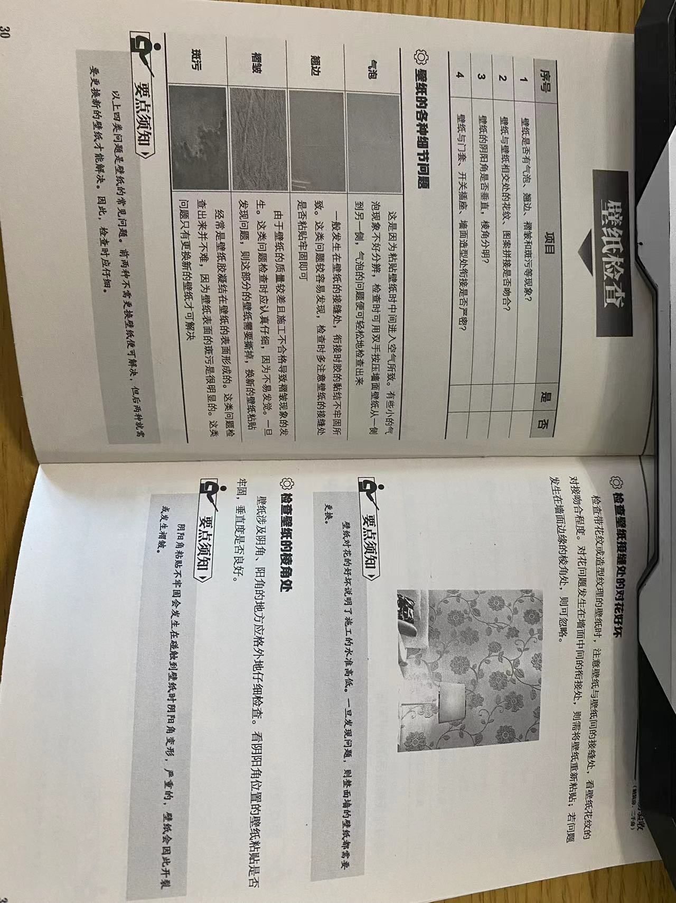
吊顶

灯具

套装门
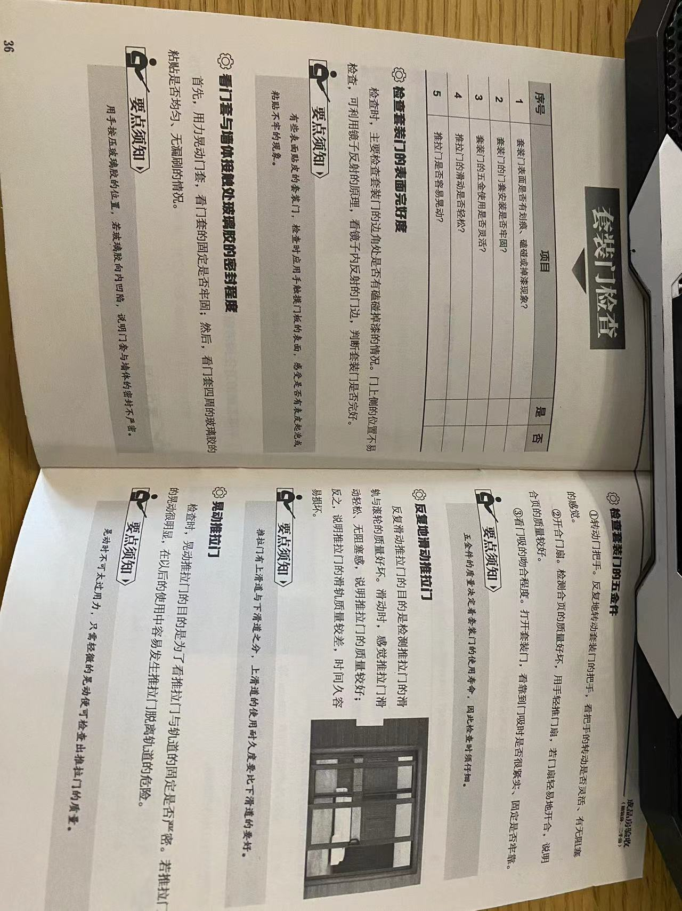
厨卫

车
车
炜神：2023款 凌云400T两驱星尊版 落地价18W.
综合
行测
题库
https://www.fenbi.com/spa/tiku/guide/catalog/xingce?prefix=xingce
知识点
激光技术
二十四节气
茶：白茶，祁门红茶，杀青或揉捻
民法典：二百七十九条
汉书《地理志》“豫章出石，可燃为薪”。宋朝商品经济。
申论
参考资料
百度网盘
资源汇总
-
清华大学-邓俊辉-数据结构与算法
-
Java架构师进阶之路
- 架构视频
- 面试真题
- 思维导图
- 学习笔记
-
自动化运维
- python神经网络算法与深度学习
- Python+Django+Ansible Playbook自动化运维项目实战
- python自动化运维与web监控系统
-
Java校招面试
- 基于大数据技术推荐系统算法案例实战教程
- Java校招面试 Google面试官亲授
- Java企业架构师课程（原Sun资深Java架构师亲授）- 盈佳科技
- 数据科学面试攻略-小象学院
- 深入浅出spring-炼数成金
-
前端学习
- node
- react
- vue
- ECMAScript6等。
-
计算机经典纪录片
- 操作系统革命RevolutionOS
- 第四公民
- 硅谷海盗
- 互联网之子(TheInternet's Own Boy) 亚伦·斯沃茨
- 硅谷传奇-苹果和微软的历史
- 《Code Rush》（奔腾的代码）
-
Java架构师课程（传统分布式架构）
- 阶段性课程（Java并发，JVM，Netty，Redis，Dubbo，Tomcat，分布式mfs，FastDFS，Zookeeper，zabbix）
- Java NIO,Mina,Netty
- Java编程思想视频
-
软考系统架构师资料
- 电子材料
- 考试大纲
- 网课课程
- 历年真题
- 论文整理
- 模拟考试
-
九章算法
- 基础，强化，系统设计班，BAT面试，高频班，OOD
-
Bittiger CS103高频系统设计
-
图灵VIP
- 互联网工程专题
- 应用框架
- 性能调优
- 分布式专题
-
软件系列大全
- API，JAVA，UI&UE，前端框架，后端，软件工程等书籍
-
前端大神
- 妙味课堂
- html5，bootstrap、
-
老男孩Python视频
-
吴杰臻守护婚姻中的财产
-
极客时间2019
-
极客时间2020
-
基于案例学SQL优化
-
房产投资视频
-
左神算法新手班
-
大数据
- 北风网
- 炼数成金
-
阿里沈询 youku搜索 WhisperXD78614957
- 事务和分布式事务
- 消息中间件ons
- 阿里分布式数据库实践
-
UI/UE教程
-
数据分析
- 基础知识（统计学，矩阵）
- 数据挖掘
- 数据分析软件
-
电子书
- 人生必读书目
- 开发资料
- 运维，敏捷，DevOps等
- ScalaBooks
-
SpringCloud+Vertx+Disruptor 金融业撮合交易系统实战
-
小马哥讲Spring核心编程思想
-
大规模高性能分布式存储系统设计与实现-孙玄
电子书合集
该项目目的是收集电子书，形成知识大熔炉。不限制种类。
电子书全部收集在calibre里面。
其他存储在我的WD硬盘上，容量1T。
书单
-
我的技术书籍 （我的技术阅读清单）
-
国学-经史子集 （包括佛学13经，儒学13经，经史子集等）
-
经典各学科210本 （包括经济学，投资学，管理学，修身处世，名人传记，心理励志，谋略经典。科普经典等）
-
金融投资100本 （金融投资基础的必读经典100本书）
-
金融投资400本 （金融投资的400本书）
-
投资学分类书籍 （按照学派以及分类的投资书籍）
-
5000本金融书 （网上找的大汇总）
-
和君推荐企业家和投行家书籍 （和君商学院给企业家的书单）
-
中学生阅读指南 （初中，高中推荐的书籍）
-
商务汉译世界学术名著丛书·600本 （世界学术名著：包括哲学，历史，地理，政治，法律，社会学，经济学，语言类等）
-
商务汉译世界学术名著丛书·分科本500本 （世界分类学术名著：包括哲学，历史，地理，政治，法律，社会学，经济学，语言类等）
-
商务汉译世界学术名著丛书·珍藏本400本 （世界分类学术名著：包括哲学，历史，地理，政治，法律，社会学，经济学，语言类等）
-
汉译世界学术名著丛书·120年纪念版 （世界分类学术名著：包括哲学，历史，地理，政治，法律，社会学，经济学，语言类等）
-
中华现代学术名著丛书·105本 （中国现代学术名著）
-
圣约翰学院的阅读书目 （圣约翰学院的阅读书目）
最近新加
《复杂性思维：物质、精神和人类的计算动力学》
国学
佛学13经
- 《心经》
- 《金刚经》
- 《无量寿经》
- 《圆觉经》
- 《梵网经》
- 《坛经》
- 《楞严经》
- 《解深密经》
- 《维摩诘经》
- 《楞伽经》
- 《金光明经》
- 《法华经》
- 《四十二章经》
儒学13经
- 《周易》 7卷．
- 《尚书》 58篇．
- 《诗经》 30卷．
- 《周礼》 6卷．
- 《仪礼》 17卷．
- 《礼记》 49卷．
- 《春秋左传》 12卷．
- 《春秋公羊传》 12卷．
- 《春秋穀梁传》 12卷．
- 《孝经》 18章．
- 《尔雅》 19卷．
- 《论语》 20篇．
- 《孟子》 14卷．
国学备要
- 易经 用阴阳和八卦来解释自然与社会的变迁的世界观方法论总论
- 论语 用语录体记载孔子言行的儒家经典
- 孟子 孟子游说列国和隐居以后的言行记录
- 荀子 集诸子百家精华的思想名著
- 大学 专门将修身，齐家，治国，平天下的理学代表作
- 中庸 阐述“天人合一”的哲学书
- 孔子家语 论语之姐妹篇
- 老子 道家经典
- 庄子 道家经典---主张不受约束，自由自在的道家经典
- 列子 道家经典—记载许多古代寓言的道家名著
- 抱朴子 阐述仙道理论和实践的道家名著
- 管子 管仲言行录
- 韩非子 法家思想经典
- 孙子兵法 兵家经典
- 吴子 实用兵书
- 孙膑兵法 合称为“二孙”
- 六韬 又叫太公望秘书，简要兵书
- 尉瞭子 秦代战略家尉缭的论文集
- 墨子 兼爱，非攻的实践经典
- 淮南子 在神话传说中体现诸子百家思想的书。
- 临济录 唐代禅僧，临济宗始祖义玄的言行录
- 闭岩录 用诗句解释宋代禅学的公案集
- 高僧传 东汉至梁代三百位高僧的生平事迹
- 列仙传 证实长生不老的古代仙人列传
- 神仙传 介绍九十余名仙人成仙过程和秘诀的道教名篇
- 其他重要思想书籍:书经，礼记，周礼，仪礼，朱子文集，朱子语录，近思录，传习录，呻吟语，商子，公孙龙子，吕氏春秋，扬子法言，论衡，焚书，天演论
- 左传 记录春秋列国兴亡的历史书
- 战国策 写战国游说之士的言论与权谋
- 史记 第一部通史，不朽之著作
- 汉书 西汉王朝的断代史
- 后汉书 东汉王朝的兴衰史
- 三国志 三国斗争的历史
- 十八史略 上古至宋代万历王朝兴衰变迁的历史课本
- 贞观政要 唐太忠和名臣之间的政治问答录
- 盐铁论 汉代官吏论证的纪实文学
- 宋名臣言行录 收录宋代名臣言行轶事的政坛教科书
- 其他重要的史书十六选:国语，吴越春秋，资治通鉴，二十五史，资治通鉴纲目，通鉴记事本末，元朝秘史，通典，文献通考，史通，文史通义，藏书，潜夫论，日知录，明夷待访录，大同书，
- 孝经 指导个人血缘关系的伦理书
- 二十四孝 民间平民道德教科书
- 烈女传 古代女子们的言行轶事
- 说苑 古代君臣士民处世智慧的总结
- 蒙求 记录古代名人事迹的儿童启蒙教材
- 颜氏家训 身处乱世的儒家学者留给儿孙的人生指南
- 菜根谭 简单朴实，生活真趣的杂家警句集
- 山海经 古代地理名书
- 大唐西域记 唐僧玄奘记述七世纪中亚及印度的见闻录
- 洛阳伽蓝记 一部六世纪洛阳居民社会生活的风情画卷
- 东京梦华录 记录北宋国都汴梁的繁荣景象
- 扬州十日记 明末清军扬州大屠杀的悲惨纪实
- 扬州画舫录 清中期扬州的繁荣盛况
- 荆梦岁时记 六世纪时中国长江中游地区一年定例活动纪实实录
- 燕京岁时记 记录19世纪末北京地区风俗的活动纪实录
- 说文解字 总结汉字构造规则的文字学原典
- 九章算术 汉朝时期的数学著作
- 历代名画记 唐代画史画论的集大成
- 芥子园画传 清代示例解说国画基本理论与画法的初学用书
- 律吕新书 富有创意的南宋音乐理论书
- 陶说 概述中国陶瓷事业的重要文献
- 茶经 唐代茶道专论
- 伤寒论 有实际治疗功用的古老医书
- 本草纲目 网络一切可供药用自然物的科学著作
- 天工开物 介绍明代中国所有重要工商产业的大型百科全书
- 酉阳杂俎 记载古今奇闻怪谈及动植物知识的博物志
- 晋书*天文志 中国天文学的代表作
- 梦溪笔谈 极富科学史价值的宋代文献
国学经典-经史子集
来源链接：http://www.guoxue.com/cp/gxbd_ml01.htm
经
经部·十三经
- 《周易》 7卷．〔阮元校刻本〕
- 《尚书》 58篇．〔阮元校刻本〕
- 《诗经》 30卷．〔阮元校刻本〕
- 《周礼》 6卷．〔阮元校刻本〕
- 《仪礼》 17卷．〔阮元校刻本〕
- 《礼记》 49卷．〔阮元校刻本〕
- 《春秋左传》 12卷．〔阮元校刻本〕
- 《春秋公羊传》 12卷．〔阮元校刻本〕
- 《春秋穀梁传》 12卷．〔阮元校刻本〕
- 《孝经》 18章．〔阮元校刻本〕
- 《尔雅》 19卷．〔阮元校刻本〕
- 《论语》 20篇．〔阮元校刻本〕
- 《孟子》 14卷．〔阮元校刻本〕
经部·十三经注疏
- 《周易正义》 王弼等注、孔颖达疏 10卷．〔阮元校刻本〕
- 《尚书正义》 孔安国传、孔颖达疏 20卷．〔阮元校刻本〕
- 《毛诗正义》 郑玄笺、孔颖达疏 70卷．〔阮元校刻本〕
- 《周礼注疏》 郑玄注、贾公彦疏 42卷．〔阮元校刻本〕
- 《仪礼注疏》 郑玄注、贾公彦疏 50卷．〔阮元校刻本〕
- 《礼记正义》 郑玄注、孔颖达疏 63卷．〔阮元校刻本〕
- 《春秋左传正义》 杜预注、孔颖达疏 60卷．〔阮元校刻本〕
- 《春秋公羊传注疏》 何休解诂、徐彦疏 28卷．〔阮元校刻本〕
- 《春秋穀梁传注疏》 范宁注、杨士勋疏 20卷．〔阮元校刻本〕
- 《孝经注疏》 唐玄宗注、宋邢昺疏 9卷．〔阮元校刻本〕
- 《尔雅注疏》 郭璞注、宋邢昺疏 10卷．〔阮元校刻本〕
- 《论语注疏》 何晏注、宋邢昺疏 20卷．〔阮元校刻本〕
- 《孟子注疏》 赵岐注、宋孙奭疏 14卷．〔阮元校刻本〕
经部·其他
- 《韩诗外传》 西汉·韩婴 〔四部丛刊影印沈氏野竹斋刻本〕 10卷
- 《春秋繁露》 西汉·董仲舒 〔乾隆卢文弨校本〕 17卷
- 《大戴礼记》 西汉·戴德 〔汉魏丛书本〕 40篇
- 《白虎通义》 东汉·班固 〔道光陈立白虎通疏证本〕 11卷
- 《尚书大传》 西汉·伏生 〔皇清经解续编本〕 3卷
- 《周易集解》 唐·李鼎祚 〔学津讨原本〕 17卷
- 《古三坟》 〔汉魏丛书本〕 3篇
- 《六艺略》 西汉·刘歆 〔百衲本汉书〕 1卷
- 《易经原典》 〔阮元校刻本本〕 1卷
- 《横渠易说》 宋·张载 〔四库全书本〕 7卷
- 《经学理窟》 宋·张载 〔张子全书本〕 13篇
- 《尚书古文疏证》 清·阎若璩 〔眷西堂本〕 14卷
- 《孟子字义疏证》 清·戴震 〔微波榭丛书本〕 3卷
- 《春秋公羊经何氏释例》 清·刘逢禄 〔皇清经解本〕 10卷
- 《经学历史》 清·皮锡瑞 〔清光绪三十三年湖南思贤书局本〕 10卷
- 《经学通论》 清·皮锡瑞 〔民国刊印本〕 5卷
- 《孔子改制考》 清·康有为 〔通行本〕 21卷
- 《四书章句集注》 宋·朱熹 〔江宁局本〕 26卷
- 《宋本切韵指掌图》 宋·司马光 〔永乐大典本〕 1卷
- 《中原音韵》 元·周德清 〔永乐大典本〕 19部
- 《五经异义》 汉·许慎 〔皇清经解本〕 1卷
- 《春秋集传纂例》 唐·陆淳 〔嘉兴钱氏经苑本〕 10卷
- 《周官新义》 宋·王安石 〔四库全书本〕 16卷
- 《七经小传》 宋·刘敞 〔涵芬楼影印宋刊本〕 3卷
- 《大学衍义补》 明·邱濬 〔四库全书本〕 160卷
- 《汉学师承记》 清·江藩 〔四部备要本〕 8卷
- 《经义述闻》 清·王引之 〔皇清经解本〕 32卷
- 《经传释词》 清·王引之 〔清嘉庆年间王氏家刻本〕 10卷
- 《今古学考》 廖平 〔四益馆经学丛书本〕 2卷
- 《读书杂释》 清·徐鼒 〔通行本〕 14卷
- 《国故论衡》 清·章太炎 〔右文社〕 3卷
- 《方言》 西汉·扬雄 〔四部丛刊本〕 13卷
- 《订讹类编》 清·杭世骏 〔通行本〕 6卷
- 《订讹类编续补》 清·杭世骏 〔通行本〕 2卷
- 《大学》 〔通行本〕 1卷
- 《中庸》 〔通行本〕 1卷
- 《马氏文通》 清·马建忠 〔清光绪三十年排印本〕 10卷
- 《读全唐文札记》 清·仁和劳格 〔通行本〕 1卷
- 《庚辛之间读书记》 清·王国维 〔《王国维遗集》本〕 1卷
- 《周易外传》 清·王夫之 7卷
- 《尚书引义》 清·王夫之 6卷
- 《子夏易传》 春秋·卜商 〔四库全书本〕 11卷
- 《周易郑康成注》 东汉·郑玄注 〔四库全书本〕 1卷
- 《增补郑氏周易》 东汉·郑玄注 清·惠栋辑 〔四库全书本〕 3卷
- 《周易乾凿度》 东汉·郑玄注 〔四库全书本〕 2卷
- 《易纬辨终备》 东汉·郑玄注 〔四库全书本〕 1卷
- 《易纬通卦验》 东汉·郑玄注 〔四库全书本〕 2卷
- 《易纬乾元序制记》 东汉·郑玄注 〔四库全书本〕 1卷
- 《易纬是类谋》 东汉·郑玄注 〔四库全书本〕 1卷
- 《易纬坤灵图》 东汉·郑玄注 〔四库全书本〕 1卷
- 《陆氏易解》 三国吴·陆绩撰 明·姚士粦辑 〔四库全书本〕 1卷
- 《周易略例》 三国魏·王弼撰 唐·邢璹注 〔四库全书本〕 10卷
- 《易童子问》 北宋·欧阳修 〔《欧阳文忠全集》本〕 3卷
- 《东坡易传》 北宋·苏轼 〔四库全书本〕 9卷
- 《易学辨惑》 北宋·邵伯温 〔四库全书本〕 1卷
- 《易图通变》 元·雷思齐 〔四库全书本〕 5卷
- 《易筮通变》 元·雷思齐 〔四库全书本〕 3卷
- 《易学滥觞》 元·黄泽 〔四库全书本〕 1卷
- 《毛诗指说》 唐·成伯玙 〔四库全书本〕 1卷
- 《诗地理考》 南宋·王应麟 〔四库全书本〕 6卷
- 《诗考》 南宋·王应麟 〔四库全书本〕 1卷
- 《禹贡锥指略例》 清·胡渭 〔四库全书本〕 1卷
- 《泰泉乡礼》 明·黄佐 〔四库全书本〕 7卷
- 《深衣考》 清·黄宗羲 〔四库全书本〕 1卷
- 《深衣考误》 清·江永 〔四库全书本〕 1卷
- 《春秋传说例》 北宋·刘敞 〔四库全书本〕 1卷
- 《论语拾遗》 北宋·苏辙 〔四库全书本〕 1卷
- 《融堂四书管见》 南宋·钱时 〔四库全书本〕 13卷
- 《孟子私淑录》 清·戴震 〔图书集刊本〕 3卷
- 《读四书大全说》 清·王夫之 〔船山遗书本〕 10卷
- 《船山经义》 清·王夫之 〔船山全书本〕 1卷
- 《孝经纪事》 清·陈澧 〔东塾遗稿本〕 1卷
- 《释名》 汉·刘熙 〔四库全书本〕 8卷
- 《周易口诀义》 唐·史徵 〔《四库全书》本〕 6卷
- 《周易举正》 唐·郭京 〔《四库全书》本〕 3卷
- 《温公易说》 宋·司马光 〔《四库全书》本〕 6卷
- 《易璇玑》 宋·吴沆 〔《四库全书》本〕 3卷
- 《周易古占法》 宋·程迥 〔《四库全书》本〕 1卷
- 《周易章句外编》 宋·程迥 〔《四库全书》本〕 1卷
- 《易传灯》 宋·徐氏 〔《四库全书》本〕 4卷
- 《周易卦爻经传训解》 宋·蔡渊 〔《四库全书》本〕 2卷
- 《易翼传》 宋·郑汝谐 〔《四库全书》本〕 2卷
- 《周易辑闻》 宋·赵汝楳 〔《四库全书》本〕 6卷
- 《易雅》 宋·赵汝楳 〔《四库全书》本〕 1卷
- 《筮宗》 宋·赵汝楳 〔《四库全书》本〕 1卷
- 《周易文诠》 元·赵汸 〔《四库全书》本〕 4卷
- 《易用》 明·陈祖念 〔《四库全书》本〕 6卷
- 《卦变考略》 明·董守谕 〔《四库全书》本〕 2卷
- 《兒易内仪以》 明·倪元璐 〔《四库全书》本〕 6卷
- 《周易稗疏》 清·王夫之 〔《四库全书》本〕 5卷
- 《易象钩解》 明·陈士元 〔《四库全书》本〕 4卷
- 《周易劄记》 明·逯中立 〔《四库全书》本〕 3卷
- 《易小帖》 清·毛奇龄 〔《四库全书》本〕 5卷
- 《推易始末》 清·毛奇龄 〔《四库全书》本〕 4卷
- 《周易通论》 清·李光地 〔《四库全书》本〕 4卷
- 《春秋占筮书》 清·毛奇龄 〔《四库全书》本〕 3卷
- 《周易筮考》 清·李塨 〔《四库全书》本〕 1卷
- 《学易初津》 清·晏斯盛 〔《四库全书》本〕 2卷
- 《易翼宗》 清·晏斯盛 〔《四库全书》本〕 6卷
- 《易翼说》 清·晏斯盛 〔《四库全书》本〕 8卷
- 《周易浅释》 清·潘思榘 〔《四库全书》本〕 4卷
- 《春秋正旨》 明·高拱 〔《守山阁丛书》本〕 1卷
- 《骈字分笺》 清·程际盛 〔《续修四库全书》本〕 2卷
- 《尚书地理今释》 清·蒋廷锡 〔《四库全书》本〕 1卷
- 《诗经劄记》 清·杨名时 〔《四库全书》本〕 1卷
- 《补飨礼》 清·诸锦辑 〔《四库全书》本〕 1卷
- 《檀弓疑问》 清·邵泰衢 〔《四库全书》本〕 1卷
- 《郊社禘祫问》 清·毛奇龄 〔《四库全书》本〕 1卷
- 《春秋四传纠正》 清·俞汝言 〔《四库全书》本〕 1卷
- 《春秋左传小疏》 清·沈彤 〔《四库全书》本〕 1卷
- 《孝经刊误》 宋·朱熹 〔《四库全书》本〕 1卷
- 《孟子解》 宋·苏辙 〔《四库全书》本〕 1卷
- 《仪礼释宫》 宋·李如圭 〔《四库全书》本〕 1卷
史
史部·正史
- 《史记》 西汉·司马迁 〔百衲本〕 130卷
- 《汉书》 东汉·班固 〔百衲本〕 100卷
- 《後汉书》 南朝宋·范晔 〔武英殿本〕 120卷
- 《三国志》 晋·陈寿 〔武英殿本〕 65卷
- 《晋书》 唐·房玄龄等 〔武英殿本〕 130卷
- 《宋书》 南朝梁·沈约 〔武英殿本〕 100卷
- 《南齐书》 南朝梁·萧子显 〔百衲本〕 59卷
- 《梁书》 唐·姚思廉 〔武英殿本〕 56卷
- 《陈书》 唐·姚思廉 〔武英殿本〕 36卷
- 《魏书》 北齐·魏收 〔武英殿本〕 114卷
- 《北齐书》 唐·李百药 〔武英殿本〕 50卷
- 《周书》 唐·令狐德棻等 〔武英殿本〕 50卷
- 《隋书》 唐·魏徵等 〔武英殿本〕 85卷
- 《南史》 唐·李延寿 〔武英殿本〕 80卷
- 《北史》 唐·李延寿 〔武英殿本〕 100卷
- 《旧唐书》 後晋·刘昫等 〔武英殿本〕 200卷
- 《新唐书》 宋·欧阳修、宋祁等 〔武英殿本〕 225卷
- 《旧五代史》 宋·薛居正等 〔武英殿本〕 150卷
- 《新五代史》 宋·欧阳修 〔武英殿本〕 74卷
- 《宋史》 元·脱脱等 〔武英殿本〕 496卷
- 《辽史》 元·脱脱等 〔武英殿本〕 116卷
- 《金史》 元·脱脱等 〔武英殿本〕 135卷
- 《元史》 明·宋濂等 〔武英殿本〕 210卷
- 《明史》 清·张廷玉等 〔武英殿本〕 332卷
- 《新元史》 柯劭忞 〔庚午重订本〕 257卷
- 《清史稿》 赵尔巽等 〔关外二次本〕 529卷
史部·别杂史等
- 《逸周书》 战国 〔通行本〕 10卷
- 《世本》 汉·宋衷注 〔茆泮林辑本〕 15篇
- 《竹书纪年》 〔四库全书本〕 2卷
- 《古本竹书纪年辑校》 〔通行本〕 1卷
- 《国语》 战国 〔通行本〕 20卷
- 《战国策》 西汉·刘向集录 〔通行本〕 33卷
- 《战国纵横家书》 战国 〔通行本〕 1卷
- 《越绝书》 东汉·袁康 〔四部丛刊本〕 19篇
- 《华阳国志》 晋·常璩 〔函海本〕 12卷
- 《人物志》 三国魏·刘邵 〔隆庆归德府刊本〕 12篇
- 《洛阳伽蓝记》 後魏·杨衒之 〔如隐堂本〕 5卷
- 《吴越春秋》 东汉·赵晔 〔清顾有观本〕 10卷
- 《列女传》 汉·刘向 〔四部丛刊本〕 7卷
- 《前汉纪》 汉·荀悦 〔四库全书本〕 30卷
- 《後汉纪》 东晋·袁宏 〔四部丛刊本〕 30卷
- 《史通》 唐·刘知几 〔蜀本〕 49篇
- 《汉魏南北朝墓志选》 〔通行本〕 16 部
- 《顺宗实录》 唐·韩愈 〔海山仙馆丛书本〕 5卷
- 《五代史补》 宋·陶岳 〔豫章丛书本〕 5卷
- 《唐律疏议》 唐·长孙无忌等 〔通行本〕 30卷
- 《唐会要》 宋·王溥 〔通行本〕 100卷
- 《唐六典》 唐·李林甫等 〔南宋本〕 30卷
- 《通典》 唐·杜佑 〔通行本〕 200卷
- 《通志略》 宋·郑樵 〔明汪刻本〕 52卷
- 《通制条格》 元· 〔通行本〕 22卷
- 《文献通考》 元·马端临 〔浙江书局本〕 348卷
- 《西汉会要》 宋·徐天麟 〔通行本〕 70卷
- 《南朝陈会要》 清·朱铭盘 18卷
- 《明会要》 清·龙文彬 〔通行本〕 40卷
- 《读通鉴论》 清·王夫之 〔通行本〕 30卷
- 《廿二史劄记》 清·赵翼 〔清广雅书局本〕 36卷
- 《十七史商榷》 清·王鸣盛 〔丛书集成本〕 100卷
- 《贞观政要》 唐·吴兢 〔明成化刊本〕 40篇
- 《资治通鉴》 宋·司马光 〔世界书局影印鄱阳胡氏本〕 294卷
- 《续资治通鉴》 清·毕沅编著 〔清冯集椿本〕 220卷
- 《续资治通鉴长编》 宋·李焘 〔四库全书本〕 520卷
- 《续资治通鉴长编拾补》 清·黄以周等辑 〔浙江书局本〕 60卷
- 《通鉴纪事本末》 宋·袁枢 〔四部丛刊本〕 42卷
- 《宋史纪事本末》 明·陈邦瞻 〔四部丛刊本〕 109卷
- 《辽史纪事本末》 清·李有棠 〔通行本〕 40卷
- 《金史纪事本末》 清·李有棠 〔通行本〕 52卷
- 《元史纪事本末》 明·陈邦瞻 〔同治十三年江西书局校刻本〕 27卷
- 《明史纪事本末》 清·谷应泰 〔通行本〕 80卷
- 《三藩纪事本末》 清·杨陆荣 〔通行本〕 4卷
- 《两汉三国学案》 清·唐晏 〔龙溪精舍丛书本〕 11卷
- 《宋元学案》 清·黄宗羲 〔光绪五年龙汝霖重刊本〕 100卷
- 《明儒学案》 清·黄宗羲 〔二老阁冯全垓印本〕 62卷
- 《康熙起居注》 清· 〔整理本〕 不分卷
- 《鄂国金佗稡编》 宋·岳珂 〔通行本〕 28卷
- 《鄂国金佗续编》 宋·岳珂 〔通行本〕 30卷
- 《唐御史台精舍题名考》 清·赵钺、劳格 〔通行本〕 3卷
- 《文史通义》 清·章学诚 〔四部备要本〕 8卷
- 《弈人传》 清·黄俊 〔通行本〕 20卷
- 《印人传》 清·周亮工 〔通行本〕 3卷
- 《续印人传》 清·汪启淑 〔通行本〕 8卷
- 《大清会典事例·礼》 清· 〔通行本〕 30卷
- 《大清会典事例·兵》 清· 〔通行本〕 7卷
- 《宋刑统》 宋·窦仪等 〔四库全书本〕 30卷
- 《庆元条法事类》 南宋·谢深甫等 〔四库全书本〕 80卷
- 《尚书吏部侍郎右选格》 〔四库全书本〕 2卷
- 《吏部条法》 南宋 〔四库全书本〕 13 门
- 《名公书判清明集》 南宋·佚名编 〔四库全书本〕 14卷
- 《庙学典礼》 元·佚名 6卷
- 《元统元年进士录》 元·佚名 1卷
- 《三事忠告》 元·张养浩 4卷
- 《秘书监志》 元·王士点、商企翁 11卷
- 《吏学指南》 元·徐元瑞 〔国家图书馆藏元刻本〕 8卷
- 《莆阳谳牍》 明·祁彪佳 2卷
- 《明季三朝野史》 清·顾炎武 4卷
- 《恽毓鼎奏议选》 清·恽毓鼎 1卷
- 《那桐奏折存稿》 清·那桐 1卷
- 《廉吏传》 宋·费枢 2卷
- 《契丹国志》 宋·叶隆礼 27卷
- 《钦定元史语解》 〔四库全书本〕 24卷
- 《钦定金史语解》 〔四库全书本〕 12卷
- 《钦定辽史语解》 〔四库全书本〕 10卷
- 《东坡先生年谱》 宋·王宗稷 〔明成化《苏文忠公全集》刻本〕 1卷
- 《东林始末》 明·蒋平阶 〔四库全书本〕 1卷
- 《圣武记》 清·魏源 〔清道光二十六年本〕 14卷
- 《越史略》 佚名 〔《守山阁丛书》本〕 3卷
- 《江南别录》 宋·陈彭年 〔宛委山堂《说郛》本〕 1卷
- 《杜工部年谱》 宋·赵子栎 〔《四库全书》本〕 1卷
- 《百越先贤志》 明·欧大任 〔《岭南遗书》本〕 4卷
- 《锦衣志》 明·王世贞 〔《纪录彙编》本〕 1卷
- 《通鉴问疑》 宋·刘羲仲 〔《四库全书》本〕 1卷
- 《通鉴胡注举正》 清·陈景云 〔《四库全书》本〕 1卷
- 《历代甲子考》 清·黄宗羲 〔《檀几丛书》本〕 1卷
- 《东家杂记》 宋·孔传 〔《四库全书》本〕 2卷
- 《谥法》 宋·苏洵 〔《四库全书》本〕 4卷
- 《绍陶录》 宋·王质 〔《四库全书》本〕 2卷
- 《西使记》 宋·刘郁 〔《四库全书》本〕 1卷
- 《咸淳遗事》 宋·佚名 〔《四库全书》本〕 2卷
- 《北郊配位尊西向议》 清·毛奇龄 〔《四库全书》本〕 1卷
- 《平台纪略》 清·蓝鼎元 〔通行本〕 1卷
- 《平台纪事本末》 清·佚名 〔通行本〕 1卷
- 《台湾郑氏纪事》 日／川口长孺 〔通行本〕 3卷
- 《台湾郑氏始末》 清·沈云 〔通行本〕 6卷
- 《江变纪略》 清·徐世溥 〔《荆驼逸史》本〕 2卷
- 《海上见闻录》 清·阮旻锡 〔通行本〕 2卷
- 《海纪辑要》 清·夏琳 〔通行本〕 3卷
史部·地理
- 《山海经》 战国·佚名 〔晋郭璞山海经传本〕 18卷
- 《三辅黄图》 〔清阮元刻附校勘记本〕 6卷
- 《水经注》 後魏·郦道元注 〔王先谦校本〕 40卷
- 《水经注疏》 杨守敬、熊会贞 〔通行本〕 40卷
- 《禹贡锥指》 清·胡渭 〔通行本〕 25卷
- 《南岳小录》 唐·李冲昭 〔正统道藏本〕 1卷
- 《北户录》 唐·段公路 〔笔记小说大观本〕 1卷
- 《吴地记》 唐·陆广微 〔四库全书本〕 1卷
- 《岭表录异》 唐·刘恂 〔永乐大典本〕 3卷
- 《桂林风土记》 唐·莫休符 〔四库全书本〕 1卷
- 《蛮书》 唐·樊绰 〔武英殿聚珍本〕 10卷
- 《大唐西域记》 唐·玄奘 〔通行本〕 12卷
- 《大慈恩寺三藏法师传》 唐·慧立、彦悰 〔通行本〕 10卷
- 《释迦方志》 唐·道宣 〔大正藏本〕 3卷
- 《大唐西域求法高僧传》 唐·义净 〔通行本〕 2卷
- 《括地志辑校》 唐·李泰等 〔清孙星衍辑本〕 4卷
- 《清朝柔远记》 清·王之春 〔通行本〕 18卷
- 《西洋朝贡典录》 明·黄省曾 〔通行本〕 3卷
- 《东西洋考》 明·张燮 〔通行本〕 12卷
- 《西洋番国志》 明·巩珍 〔知圣道斋钞本〕 1卷
- 《两种海道针经》 明 〔通行本〕 2卷
- 《元和郡县图志》 唐·李吉甫 〔岱南阁丛书本〕 34卷
- 《元和郡县图志逸文》 〔岱南阁丛书本〕 34卷
- 《元丰九域志》 宋·王存等 〔聚珍版丛书本〕 10卷
- 《雍录》 宋·程大昌 〔通行本〕 10卷
- 《吴郡志》 宋·范成大 〔通行本〕 50卷
- 《殊域周咨录》 明·严从简 〔明万历刻本〕 25卷
- 《西游录注》 元·耶律楚材 〔丛书集成初编本〕 1卷
- 《异域志》 元·周致中 〔说库本〕 2卷
- 《析津志辑佚》 元·熊梦祥 〔通行本〕 1卷
- 《岛夷志略》 元·汪大渊 〔知服斋丛书本〕 1卷
- 《真腊风土记》 元·周达观 〔陶宗仪说郛本〕 1卷
- 《徐霞客游记》 明·徐弘祖 〔乾隆本〕 10卷
- 《龙江船厂志》 明·李昭祥 〔通行本〕 8卷
- 《唐两京城坊考》 清·徐松 〔通行本〕 6卷
- 《河南志》 清·徐松 〔通行本〕 1卷
- 《宋平江城坊考》 王謇 〔通行本〕 5卷
- 《读史方舆纪要》 清·顾祖禹 〔读史方舆纪要稿本〕 130卷
- 《日下旧闻考》 清·朱彝尊、于敏中 〔原刻本〕 160卷
- 《漂海录》 崔溥 〔通行本〕 4卷
- 《海录》 清·谢清高 〔通行本〕 1卷
- 《日下旧闻考译语》 清 〔通行本〕 1卷
- 《閤皂山志》 〔通行本〕 6卷
- 《寒山寺志》 民国·叶昌炽 〔通行本〕 3卷
- 《吴门表隐》 清·顾震涛 〔通行本〕 20卷
- 《百城烟水》 清·徐崧、张大纯 〔通行本〕 9卷
- 《湖山便览》 清·翟灏 〔通行本〕 12卷
- 《艮山杂志》 清·翟灏 〔通行本〕 2卷
- 《海国图志》 清·魏源 〔光绪平庆泾固道署重刊〕 100卷
- 《吴趋访古录》 清·姚承绪 〔通行本〕 9卷
- 《泰州旧事摭拾》 清·俞扬 〔通行本〕 10卷
- 《至顺镇江志》 元·俞希鲁 〔通行本〕 21卷
- 《麻姑山志》 明·左宗郢 〔通行本〕 21卷
- 《扬州图经》 清·焦循、江藩纂辑 〔通行本〕 8卷
- 《宸垣识略》 清·吴长元 〔通行本〕 16卷
- 《天府广记》 清·孙承泽 〔通行本〕 44卷
- 《琉璃厂小志》 孙殿起辑 〔通行本〕 6章
- 《珠里小志》 清·周郁滨 〔嘉庆本〕 18卷
- 《圆津禅院小志》 清·释觉铭 〔光绪本〕 6卷
- 《紫隄村志》 清·沈葵 〔清咸丰六年本〕 8卷
- 《支提寺志》 清·崔嵸 〔同治十一年重版〕 6卷
- 《吴中水利书》 宋·单锷 〔四库全书本〕 1卷
- 《吴郡图经续记》 宋·朱长文 〔四库全书本〕 3卷
- 《诸蕃志》 宋·赵汝适 〔函海本〕 2卷
- 《洛阳名园记》 宋·李格非 〔四库全书本〕 1卷
- 《骖鸾录》 宋·范成大 〔四库全书本〕 1卷
- 《帝京景物略》 明·刘侗、于奕正 〔续修四库全书本〕 8卷
- 《补陀洛迦山传》 元·盛熙明 〔大藏经本〕 1卷
- 《朝鲜纪事》 明·倪谦撰 〔四库全书本〕 1卷
- 《朝鲜赋》 明·董越 〔四库全书本〕 1卷
- 《漕船志》 明·席书编次、朱家相增修 〔《玄览堂丛书》本〕 8卷
- 《昌平山水记》 清·顾炎武 〔四库全书本〕 2卷
- 《莲峰志》 清·王夫之 〔《船山遗书》本〕 5卷
- 《泰山道里记》 清·聂鈫 〔四库全书本〕 1卷
- 《三姓山川纪》 清·祁寯藻 〔国家图书馆藏本〕 1卷
- 《云南风土记》 清·张咏 〔《小方壶斋舆地丛钞》本〕 1卷
- 《四镇略迹》 清·马幼良 〔《中国地方志集成》影印抄本〕 1卷
- 《坤舆图说》 清·南怀仁 〔四库全书本〕 2卷
- 《天台风俗志》 清·陈锺琪 〔《小方壶斋舆地丛钞》本〕 1卷
- 《帝京岁时纪胜》 清·潘荣陛 〔清乾隆刻本〕 1卷
- 《岭南风物记》 清·吴绮 〔四库全书本〕 1卷
- 《西湖水利考》 清·吴农祥 〔《武林掌故丛编》本〕 1卷
- 《西湖水利续考》 清·吴农祥 〔《武林掌故丛编》本〕 1卷
- 《榕城考古略》 清·林枫 〔福建省图书馆藏抄本〕 3卷
- 《金陵物产风土志》 清·陈作霖 〔光绪戊申可园刊印本〕 1卷
- 《伊江集载》 清·佚名 〔《清代新疆稀见史料汇辑》本〕 1卷
- 《伊犁略志》 清·佚名 〔《清代新疆稀见史料汇辑》本〕 1卷
- 《光福诸山记》 清·张郁文 〔《木渎小志》民国十年铅印本〕 1卷
- 《康平县乡土志》 清·李绍纲、徐芳 〔辽宁府县志辑本〕 1卷
- 《蒲犁厅乡土志》 清·江文波 〔清光绪三十三年稿本〕 1卷
- 《莎车府乡土志》 清·甘曜湘 〔清光绪三十四年稿本〕 1卷
- 《三山志》 宋·梁克家 〔四库全书本〕 42卷
- 《溪蛮丛笑》 宋·朱辅 〔《四库全书》本〕 1卷
- 《益部方物略记》 宋·宋祁 〔《四库全书》本〕 1卷
- 《岳阳风土记》 宋·范致明 〔《四库全书》本〕 1卷
- 《吴船录》 宋·范成大 〔《知不足斋丛书》本〕 2卷
- 《海语》 明·黄衷 〔《四库全书》本〕 3卷
- 《西域行程记》 明·陈诚、李暹 〔《国立北平图书馆善本丛书第一集》本〕 1卷
- 《西域番国志》 明·陈诚、李暹 〔《国立北平图书馆善本丛书第一集》本〕 18章
- 《绝域纪略》 清·方拱乾 〔《昭代丛书丙集》卷二十六〕 1卷
- 《使琉球记》 清·张学礼 〔《小方壶斋舆地丛钞》本〕 1卷
- 《中山纪略》 清·张学礼 〔《小方壶斋舆地丛钞》本〕 1卷
- 《使琉球记》 清·李鼎元 〔清嘉庆七年师竹斋刻本〕 6卷
- 《庐山记》 宋·陈舜俞 〔《四库全书》本〕 3卷
- 《金华赤松山志》 宋·倪守约 〔《正统道藏》本〕 1卷
- 《四明它山水利备览》 宋·魏岘 〔《四库全书》本〕 2卷
- 《入蜀记》 宋·陆游 〔《四库全书》本〕 6卷
- 《乾道临安志》 宋·周淙 〔《四库全书》本〕 3卷
- 《仙都志》 元·陈性定 〔《正统道藏》本〕 2卷
- 《河防通议》 元·沙克什 〔《四库全书》本〕 2卷
- 《治河图略》 元·王喜 〔《四库全书》本〕 1卷
- 《朝鲜志》 明·佚名 〔《四库全书》本〕 2卷
- 《朝邑县志》 明·韩邦靖 〔《四库全书》本〕 2卷
- 《三吴水利录》 明·归有光 〔《四库全书》本〕 4卷
- 《昆仑河源考》 清·万斯同 〔《四库全书》本〕 1卷
- 《营平二州地名记》 清·顾炎武 〔《四库全书》本〕 1卷
- 《江城名迹》 清·陈宏绪 〔《四库全书》本〕 2卷
- 《台湾三字经》 清·王石鹏 〔通行本〕 1卷
- 《小琉球漫志》 清·朱仕玠 〔通行本〕 10卷
- 《东槎纪略》 清·姚莹 〔通行本〕 5卷
- 《东瀛纪事》 清·林豪 〔通行本〕 2卷
- 《东瀛识略》 清·丁绍仪 〔通行本〕 8卷
- 《蠡测汇钞》 清·邓传安 〔通行本〕 1卷
- 《岭海焚馀》 清·金堡 〔通行本〕 3卷
- 《闽海纪要》 清·夏琳 〔通行本〕 4卷
- 《台湾割据志》 日／川口长孺 〔通行本〕 1卷
- 《台湾志略》 清·李元春 〔通行本〕 2卷
- 《台阳笔记》 清·翟灏 〔通行本〕 1卷
- 《闽海纪略》 清·佚名 〔通行本〕 2卷
- 《海国闻见录》 清·陈伦炯 〔通行本〕 9章
史部·目录
- 《大藏经总目录》 〔通行本〕 1卷
- 《崇文总目》 宋·王尧臣等编 〔粤雅堂重刻本〕 5卷
- 《郡斋读书志》 宋·晁公武 〔衢州重刊蜀刻本〕 20卷
- 《直斋书录解题》 宋·陈振孙 〔通行本〕 22卷
- 《遂初堂书目》 宋·尤袤 〔通行本〕 1卷
- 《金石录》 宋·赵明诚 〔通行本〕 1卷
- 《众经目录》 隋·法经等 〔通行本〕 7卷
- 《史略》 宋·高似孙 〔《古逸丛书》本〕 6卷
- 《四库全书总目》 （书目） 〔四库全书本〕 1卷
- 《四库全书总目提要》 清·纪昀等 〔四库全书本〕 200卷
- 《研经室外集》 清·阮元 〔通行本〕 5卷
- 《四库撤毁书提要》 〔通行本〕 1卷
- 《书目答问》 清·张之洞 〔光绪二年初印本〕 5卷
- 《书目答问补正》 范希曾补正 〔扫叶山房石印本〕 5卷
- 《文渊阁书目》 明·杨士奇 〔通行本〕 4卷
- 《尊经阁藏书目》 清·王呈祥辑 〔通行本〕 1卷
- 《校雠通义》 清·章学诚 〔嘉业堂刊《章氏遗书》本〕 3卷
- 《书林清话》 清·叶德辉 〔《自阝园先生全书》本〕 10卷
- 《书林馀话》 清·叶德辉 〔通行本〕 4卷
- 《楹书隅录》 清·杨绍和 〔通行本〕 5卷
- 《楹书隅录续编》 清·杨绍和 〔通行本〕 4卷
- 《楹书隅录补遗》 王绍曾 〔通行本〕 4卷
- 《宋存书室宋元秘本书目》 清·杨绍和 〔通行本〕 4卷
- 《海源阁藏书目》 清·杨绍和 〔通行本〕 4卷
- 《海源阁宋元秘本书目》 清·杨保彝 〔通行本〕 4卷
- 《海源阁宋元秘本书目补遗》 清·杨保彝 〔通行本〕 1卷
- 《海源阁书目》 〔通行本〕 5卷
- 《海源阁书目补遗》 〔通行本〕 4卷
- 《千顷堂书目》 清·黄虞稷 〔通行本〕 32卷
- 《菉竹堂书目》 〔通行本〕 8卷
- 《季沧苇藏书目》 清·季振宜 〔通行本〕 1卷
- 《思适斋书跋》 清·顾广圻 4卷
- 《思适斋序跋》 清·顾广圻 10卷
- 《思适斋序跋补遗》 清·顾广圻 2卷
- 《正统道藏目录》 〔通行本〕 1卷
- 《读书敏求记》 清·钱曾 〔通行本〕 4卷
- 《吴兴藏书录》 清·郑元庆 〔通行本〕 1卷
- 《日本访书志》 清·杨守敬 〔通行本〕 18卷
- 《日本访书志补》 王重民辑 〔通行本〕 1卷
- 《皕宋楼藏书源流考》 日／岛田翰 〔通行本〕 1卷
- 《铁琴铜剑楼藏书目录》 清·瞿镛 〔通行本〕 1卷
- 《越缦堂读书记》 清·李慈铭 〔通行本〕 40卷
- 《嘉业堂藏书志》 清·缪荃孙、吴昌绶 〔通行本〕 7卷
- 《贩书偶记》 清·孙殿起 〔通行本〕 18卷
- 《贩书偶记续编》 清·孙殿起 〔通行本〕 20卷
- 《旧山楼书目》 清·赵宗建 〔通行本〕 1卷
- 《唫香仙馆书目》 清·马瀛 〔通行本〕 4卷
- 《晁氏宝文堂书目》 明·晁瑮 〔通行本〕 3卷
- 《木犀轩藏书书录》 民国·李盛铎 〔通行本〕 4卷
- 《木犀轩藏书题记》 民国·李盛铎 〔通行本〕 4卷
- 《藏书记要》 清·孙庆增 〔通行本〕 1卷
- 《藏书绝句》 清·杨守敬 〔通行本〕 1卷
- 《藏书十约》 清·叶德辉 〔通行本〕 1卷
- 《滂喜斋藏书记》 清·潘祖荫 〔通行本〕 3卷
- 《滂喜斋宋元本书目》 清·潘祖荫 〔通行本〕 4卷
- 《绛云楼藏书目》 清·钱谦益 〔通行本〕 4卷
- 《绛云楼题跋》 清·钱谦益 〔通行本〕 1卷
- 《徐氏红雨楼书目》 明·徐勃 〔通行本〕 5卷
- 《艺风藏书记》 民国·缪荃孙 〔通行本〕 8卷
- 《艺风藏书续记》 民国·缪荃孙 〔通行本〕 8卷
- 《艺风藏书再续记》 民国·缪荃孙 〔通行本〕 7卷
- 《汲古阁书跋》 明·毛晋 〔通行本〕 1卷
- 《重辑渔洋书跋》 清·王士祯 〔通行本〕 1卷
- 《宝礼堂宋本书录》 潘宗周编 〔通行本〕 5卷
- 《武林藏书录》 清·丁申 〔通行本〕 5卷
- 《澹生堂藏书约》 明·祁承业 〔通行本〕 1卷
- 《鸣野山房书目》 清·沈复粲 〔通行本〕 5卷
- 《卷盦书跋》 清·叶景葵 〔通行本〕 1卷
- 《著砚楼书跋》 潘景郑 〔通行本〕 1卷
- 《铁琴铜剑楼藏书题跋集录》 瞿良士辑 〔通行本〕 4卷
- 《百川书志》 明·高儒 20卷
- 《古今书刻》 明·周弘祖 2卷
- 《天禄琳琅书目》 清·于敏中等 〔光绪十年王先谦刊本〕 10卷
- 《天禄琳琅书目後编》 清·彭元瑞等 20卷
- 《虞山钱遵王藏书目录汇编》 清·钱曾，瞿凤起辑 10卷
- 《赵定宇书目》 明·赵用贤 1卷
- 《丛书集成初编目录》 国学网编 〔国学网整理本〕 8卷
- 《郘亭知见传本书目》 清·莫友芝 〔适园藏本〕 16卷
- 《大唐内典录》 唐·释道宣 〔大正藏本〕 10卷
- 《诸子辩》 明·宋濂 〔《宋学士全集》本〕 1卷
- 《天一阁藏明代方志选刊目录》 〔上海书店1961-1966年版〕 1卷
- 《天一阁藏明代方志选刊续编目录》 〔上海书店1990年版〕 1卷
- 《清代传记丛刊目录》 周骏富辑 〔台湾明文书局1986年版〕 1卷
- 《四库禁毁书丛刊目录》 〔北京出版社1997年6月版〕 4卷
- 《明代通俗日用类书集刊目录》 中国社会科学院历史研究所文化室 〔线装书局2004年版〕 1卷
- 《宋集珍本丛刊目录》 四川大学古籍整理研究所编 〔西南师范大学出版社2011年版〕 1卷
- 《古书通例》 余嘉锡 〔通行本〕 4卷
子
子部·诸子
- 《老子》 春秋·李耳 〔通行本〕 1卷
- 《老子河上公章句》 西汉·河上公 〔通行本〕 4卷
- 《庄子》 战国·庄周 〔通行本〕 33篇
- 《公孙龙子》 战国 〔宋刻本〕 6篇
- 《韩非子》 战国·韩非 〔宋乾道刊本〕 55卷
- 《淮南子》 西汉·刘安 〔庄逵吉本〕 21卷
- 《列子》 战国 〔通行本〕 8卷
- 《墨子》 战国·墨翟 〔孙氏墨子间诂本〕 15卷
- 《荀子》 战国·荀况 〔清王先谦荀子集解本〕 32篇
- 《孙子》 春秋·孙武 〔南宋十一家注孙子本〕 13卷
- 《文子》 春秋·辛钘 〔四库全书本〕 12卷
- 《鹖冠子》 战国·鹖冠子 〔学津讨原本〕 3卷
- 《孔子集语》 〔平津馆丛书本〕 17卷
- 《新书》 西汉·贾谊 〔四部丛刊本〕 10卷
- 《吕氏春秋》 战国·吕不韦 〔清毕沅校本〕 26卷
- 《论衡》 东汉·王充 〔四部丛刊本〕 85篇
- 《说苑》 西汉·刘向 〔湖北崇文书局百子全书本〕 20卷
- 《管子》 春秋·管仲 〔浙江书局本〕 76篇
- 《随巢子》 战国 〔玉函山房辑佚书本〕 1卷
- 《新序》 西汉·刘向 〔通行本〕 10卷
- 《新语》 汉·陆贾 〔汉魏丛书本〕 12卷
- 《盐铁论》 西汉·桓宽 〔清张敦仁考证本〕 10卷
- 《风俗通义》 东汉·应劭 〔龙溪精舍丛书本〕 10卷
- 《尹文子》 战国·尹文 〔湖海丛书本〕 2卷
- 《关尹子》 战国·尹喜 〔湖海丛书本〕 2篇
- 《尸子》 战国·尸佼 〔汪继培辑本〕 4卷
- 《扬子法言》 西汉·扬雄 〔通行本〕 13篇
- 《晏子春秋》 战国·晏婴 〔孙氏平津馆本〕 8卷
- 《曾子》 春秋·曾参 〔阮元注释本〕 1卷
- 《子思子》 春秋·孔伋 〔四库全书本〕 7卷
- 《至言》 汉·贾山 〔玉函山房辑佚书本〕 1卷
- 《昌言》 汉·仲长统 〔玉函山房辑佚书本〕 2卷
- 《慎子》 战国·慎到 〔通行本〕 1卷
- 《申鉴》 东汉·荀悦 〔明文始堂本〕 5卷
- 《商君书》 战国·商鞅 〔四部丛刊本〕 27卷
- 《新论》 汉·桓谭 〔通行本〕 17卷
- 《潜夫论》 汉·王符 〔述古堂影宋写本〕 10卷
- 《孔丛子》 汉·孔鲋 〔四库全书本〕 1卷
- 《河间献王书》 汉·刘德 〔玉函山房辑佚书本〕 1卷
- 《公孙弘书》 汉·公孙弘 〔玉函山房辑佚书本〕 1卷
- 《邓析子》 〔通行本〕 2卷
- 《太玄经》 汉·扬雄 〔清嘉庆刻本〕 10卷
- 《孔子家语》 汉·佚名 〔四部丛刊本〕 10卷
- 《颜氏家训》 北齐·颜之推 〔四部丛刊影明刻本〕 20卷
- 《蒋子万机论》 三国魏·蒋济 〔严可均辑本〕 1卷
- 《中说》 隋·王通 〔四部丛刊本〕 10卷
- 《器经》 春秋·孤子 〔四库全书本〕 1卷
- 《子华子》 春秋·程本 〔四库全书本〕 2卷
- 《范子计然》 春秋·范蠡 〔通行本〕 1卷
- 《申子》 战国·申不害 〔《玉函山房辑佚书》本〕 1卷
子部·儒家
- 《忠经》 汉·马融 〔通行本〕 1卷
- 《傅子》 晋·傅玄 〔《丛书集成》本〕 1卷
- 《两同书》 五代·罗隐 〔《丛书集成》本〕 2卷
- 《忍经》 元·吴亮撰 〔《武林往哲遗书》本〕 1卷
- 《帝范》 唐·李世民 〔四库全书本〕 4卷
- 《榕村语录》 清·李光地 〔通行本〕 30卷
- 《臣轨》 唐·武则天 〔佚存丛书本〕 12卷
- 《榕村续语录》 清·李光地 〔通行本〕 20卷
- 《正蒙》 宋·张载 〔通行本〕 17篇
- 《朱子语类》 宋·朱熹 〔清吕留良宝诰堂刻本〕 140卷
- 《近思录》 宋·朱熹、吕祖谦 〔清吕氏宝诰堂刊《朱子遗书》本〕 14卷
- 《传习录》 明·王阳明 〔隆庆六年《王文成公全书》本〕 3卷
- 《一贯问答》 明·方以智 〔通行本〕 1卷
- 《西京杂记》 晋·葛洪 〔通行本〕 6卷
- 《上蔡语录》 宋·谢良佐 4卷
- 《女孝经》 唐·郑氏 〔四库全书本〕 1卷
- 《心经》 宋·真德秀 〔四库全书本〕 1卷
- 《渔樵问对》 宋·邵雍 〔邵子全书本〕 1卷
- 《儒言》 宋·晁说之 〔四库全书本〕 1卷
- 《内训》 明·徐氏 〔四库全书本〕 1卷
- 《人谱》 明·刘宗周 〔《刘子全书》本〕 1卷
- 《胡子衡齐》 明·胡直 〔四库全书本〕 8卷
- 《潜书》 清·唐甄 〔清光绪三十一年刻本〕 4卷
- 《存性编》 清·颜元 〔《畿辅丛书》本〕 2卷
- 《存学编》 清·颜元 〔《畿辅丛书》本〕 4卷
- 《存治编》 清·颜元 〔《畿辅丛书》本〕 1卷
- 《存人编》 清·颜元 〔《畿辅丛书》本〕 4卷
- 《先正读书诀》 清·周永年 〔清光绪四年刻本〕 1卷
- 《物理论》 晋·杨泉 〔《平津馆丛书》本〕 1卷
- 《省心杂言》 宋·李邦献 〔《四库全书》本〕 1卷
- 《儒志编》 宋·王开祖 〔《永嘉诗人词堂丛刻》本〕 1卷
- 《准斋杂说》 宋·吴如愚 〔《四库全书》本〕 2卷
- 《乐庵语录》 宋·李衡 〔《四库全书》本〕 5卷
- 《枫山语录》 明·章懋 〔《四库全书》本〕 1卷
- 《薛文清公从政录》 明·薛瑄 〔《窦颜堂秘笈》本〕 1卷
- 《庭训格言》 清·爱新觉罗·玄烨 〔《四库全书荟要》本〕 1卷
- 《节孝语录》 宋·徐积 〔《四库全书》本〕 1卷
- 《延平答问》 宋·朱熹 〔《四库全书》本〕 1卷
子部·道家
- 《抱朴子》 晋·葛洪 〔清孙星衍平津馆丛书本〕 21卷
- 《无能子》 唐·无能子 〔正统道藏本〕 3卷
- 《化书》 五代·谭峭 〔道藏本〕 6卷
- 《阴符经》 旧题黄帝 〔道藏精华录本〕 1卷
- 《真诰》 南朝梁·陶弘景 〔道藏本〕 20卷
- 《三洞奉道科戒营始》 唐·金明七真 〔道藏本〕 6卷
- 《道教义枢》 唐·孟安排 〔道藏本〕 10卷
- 《太平经》 汉 〔重刊道藏辑要本〕 170卷
- 《中和集》 元·李道纯 〔道藏本〕 6卷
- 《庚道集》 宋·佚名 〔通行本〕 9卷
- 《云笈七签》 宋·张君房 〔涵芬楼翻明正统道藏本〕 122卷
- 《历世真仙体道通鉴》 元·赵道一 〔道藏本〕 53卷
- 《历世真仙体道通鉴续编》 元·赵道一 〔通行本〕 5卷
- 《历世真仙体道通鉴後集》 元·赵道一 〔通行本〕 6卷
- 《周易参同契》 汉·魏伯阳 〔洪武十三年张本真刻本〕 3卷
- 《老子想尔注》 〔敦煌抄本〕 1卷
- 《修真演义》 〔通行本〕 1卷
- 《太上感应篇》 宋·佚名 〔道藏精华录〕 1卷
- 《太上感应篇缵义》 清·俞樾 〔道藏精华录本〕 1卷
- 《道枢》 宋·曾慥编纂 〔道藏本〕 42卷
- 《既济真经》 〔通行本〕 1卷
- 《北斗真经》 〔通行本〕 1卷
- 《黄庭内景经》 〔道藏精华录本〕 1卷
- 《黄庭外景经》 〔通行本〕 1卷
- 《六十甲子本命历》 〔通行本〕 1卷
- 《海内十洲三岛记》 汉·东方朔 〔道藏精华录本〕 1卷
- 《三元妙经》 〔通行本〕 1卷
- 《阴骘文》 〔通行本〕 1卷
- 《玉皇经》 〔通行本〕 5卷
- 《洞天福地记》 司马紫微 〔通行本〕 1卷
- 《悟真篇》 宋·张伯端 〔通行本〕 3卷
- 《悟真篇正义》 清·董德宁正义 〔道藏精华录本〕 3卷
- 《还原篇》 〔通行本〕 1卷
- 《历代崇道记》 唐·杜光庭 〔《全唐文》本〕 1卷
- 《亢仓子》 春秋·庚桑楚 〔道藏本〕 1卷
- 《养性延命录》 南朝梁·陶弘景 〔道藏本〕 2卷
- 《鬻子》 旧题周·鬻熊 清·逢行珪注 〔《四库全书》本〕 14篇
- 《老子衍》 清·王夫之 〔清同治《船山遗书》金陵刻本〕 1卷
- 《庄子通》 清·王夫之 〔清同治《船山遗书》金陵刻本〕 1卷
## 子部·释家
- 《圆觉经》 唐·佛陀多罗译 〔通行本〕 1卷
- 《金刚经》 後秦·鸠摩罗什译 〔罗什译本〕 1卷
- 《妙法莲华经》 後秦·鸠摩罗什译 〔释氏十三经本〕 7卷
- 《金刚錍》 唐·释湛然 〔通行本〕 1卷
- 《观无量寿经》 南朝宋·畺良耶舍译 〔通行本〕 1卷
- 《无量寿经》 三国魏·康僧铠译 〔魏康僧铠译本〕 2卷
- 《肇论》 东晋·僧肇 〔北京佛经流通处刻本〕 1卷
- 《四十二章经》 东汉·竺法兰等译 〔通行本〕 1卷
- 《维摩诘所说经》 後秦·鸠摩罗什译 〔通行本〕 1卷
- 《唯识三十论颂》 唐·玄奘译 〔通行本〕 1卷
- 《大乘起信论》 南朝梁·真谛译 〔通行本〕 1卷
- 《三论玄义》 隋·吉藏 〔清光绪二十五年刻本〕 2卷
- 《缘起经》 唐·玄奘译 〔金陵刻经处版〕 1卷
- 《心经》 〔上海佛学书局本〕 1卷
- 《六祖坛经》 唐·慧能 〔通行本〕 1卷
- 《敦煌坛经》 唐·慧能 〔法海本〕 1卷
- 《楞严经》 唐·般剌密帝译 〔通行本〕 10卷
- 《高僧传》 南朝梁·慧皎 〔大正藏本〕 14卷
- 《比丘尼传》 南朝梁·宝唱 〔通行本〕 4卷
- 《大宋高僧传》 宋·赞宁 〔通行本〕 28卷
- 《禅林僧宝传》 宋·慧洪撰 〔通行本〕 30卷
- 《五灯会元》 宋·普济 〔通行本〕 30卷
- 《景德传灯录》 宋·道原 〔通行本〕 30卷
- 《古尊宿语录》 宋·赜藏主集 〔通行本〕 48卷
- 《童蒙止观》 隋·智顗 〔通行本〕 10卷
- 《祖堂集》 五代·静、筠禅僧 〔通行本〕 20卷
- 《弘明集》 南朝梁·僧祐编 〔大正藏本〕 14卷
- 《广弘明集》 唐·释道宣编 〔大正藏本〕 30卷
- 《法苑珠林》 唐·释道世 〔清道光年间常熟燕园蒋氏刻本〕 100卷
- 《出三藏记集》 南朝梁·释僧祐 〔通行本〕 15卷
- 《释氏要览》 宋·释道诚 〔嘉靖八年刻本〕 2卷
- 《教诫新学比丘行护律仪》 明·道宣 〔嘉靖八年刻本〕 1卷
- 《林间录》 宋·觉范慧洪 〔通行本〕 2卷
- 《神会禅话录》 唐·释神会 〔通行本〕 1卷
- 《船子和尚拨棹歌》 唐·释德诚 〔通行本〕 5卷
- 《观世音应验记》 南朝宋·傅亮 〔日本抄本〕 1卷
- 《系观世音应验记》 南朝齐·陆杲 〔日本抄本〕 1卷
- 《长阿含经》 後秦·佛念译 〔通行本〕 22卷
- 《七佛经》 宋·法天译 〔通行本〕 1卷
- 《毗婆尸佛经》 宋·法天译 〔通行本〕 2卷
- 《七佛父母姓字经》 不载译人 〔通行本〕 1卷
- 《佛般泥洹经》 西晋·白法祖译 〔通行本〕 2卷
- 《般泥洹经》 不载译人 〔通行本〕 2卷
- 《大般涅槃经》 东晋·法显译 〔通行本〕 3卷
- 《大坚固婆罗门缘起经》 宋·施护等译 〔通行本〕 2卷
- 《佛说人仙经》 宋·法贤译 〔通行本〕 1卷
- 《白衣金幢二婆罗门缘起经》 宋·施护等译 〔通行本〕 3卷
- 《尼拘陀梵志经》 宋·施护等译 〔通行本〕 2卷
- 《大集法门经》 宋·施护译 〔通行本〕 2卷
- 《长阿含十报法经》 东汉·安世高译 〔通行本〕 2卷
- 《佛说人本欲生经》 东汉·安世高译 〔通行本〕 1卷
- 《佛说帝释所问经》 宋·法贤译 〔通行本〕 1卷
- 《佛说尸迦罗越六方礼经》 东汉·安世高译 〔通行本〕 1卷
- 《善生子经》 西晋·支法度译 〔通行本〕 1卷
- 《信佛功德经》 宋·法贤译 〔通行本〕 1卷
- 《大三摩惹经》 宋·法天译 〔通行本〕 1卷
- 《佛开解梵志阿颰经》 三国吴·支谦译 〔通行本〕 1卷
- 《梵网六十二见经》 三国吴·支谦译 〔通行本〕 1卷
- 《寂志果经》 东晋·昙无兰译 〔通行本〕 1卷
- 《大楼炭经》 西晋·法立、法炬译 〔通行本〕 6卷
- 《起世经》 隋·阇那崛多等译 〔通行本〕 10卷
- 《起世因本经》 隋·达摩笈多译 〔通行本〕 10卷
- 《中阿含经》 东晋·瞿昙僧伽提婆译 〔通行本〕 60卷
- 《七知经》 三国吴·支谦译 〔通行本〕 1卷
- 《园生树经》 宋·施护译 〔通行本〕 1卷
- 《咸水喻经》 失译人名 〔通行本〕 1卷
- 《萨钵多酥哩逾捺野经》 宋·法贤译 〔通行本〕 1卷
- 《一切流摄守因经》 东汉·安世高译 〔通行本〕 1卷
- 《四谛经》 东汉·安世高译 〔通行本〕 1卷
- 《恒水经》 西晋·法炬译 〔通行本〕 1卷
- 《法海经》 西晋·法炬译 〔通行本〕 1卷
- 《海八德经》 後秦·鸠摩罗什译 〔通行本〕 1卷
- 《本相猗致经》 东汉·安世高译 〔通行本〕 1卷
- 《缘本致经》 失译人名 〔通行本〕 1卷
- 《轮王七宝经》 宋·施护译 〔通行本〕 1卷
- 《顶生王故事经》 西晋·法炬译 〔通行本〕 1卷
- 《文陀竭王经》 北凉·昙无谶译 〔通行本〕 1卷
- 《频婆娑罗王经》 宋·法贤译 〔通行本〕 1卷
- 《铁城泥犁经》 东晋·昙无兰译 〔通行本〕 1卷
- 《阎罗王五天使者经》 南朝宋·慧简译 〔通行本〕 1卷
- 《古来世时经》 失译人名 〔通行本〕 1卷
- 《大正句王经》 宋·法贤译 〔通行本〕 2卷
- 《阿那律八念经》 东汉·支曜译 〔通行本〕 1卷
- 《离睡经》 西晋·法护译 〔通行本〕 1卷
- 《是法非法经》 东汉·安世高译 〔通行本〕 1卷
- 《求欲经》 西晋·法炬译 〔通行本〕 1卷
- 《受岁经》 西晋·法护译 〔通行本〕 1卷
- 《梵志计水净经》 失译人名 〔通行本〕 1卷
- 《大生义经》 宋·施护译 〔通行本〕 1卷
- 《苦阴经》 失译人名 〔通行本〕 1卷
- 《释摩男本四子经》 三国吴·支谦译 〔通行本〕 1卷
- 《苦阴因事经》 西晋·法炬译 〔通行本〕 1卷
- 《乐想经》 西晋·法护译 〔通行本〕 1卷
- 《漏分布经》 东汉·安世高译 〔通行本〕 1卷
- 《阿耨风经》 东晋·昙无兰译 〔通行本〕 1卷
- 《诸法本经》 三国吴·支谦译 〔通行本〕 1卷
- 《瞿昙弥记果经》 南朝宋·慧简译 〔通行本〕 1卷
- 《受新岁经》 西晋·法护译 〔通行本〕 1卷
- 《新岁经》 东晋·昙无兰译 〔通行本〕 1卷
- 《解夏经》 宋·法贤译 〔通行本〕 1卷
- 《瞻婆比丘经》 西晋·法炬译 〔通行本〕 1卷
- 《伏淫经》 西晋·法炬译 〔通行本〕 1卷
- 《魔娆乱经》 失译人名 〔通行本〕 1卷
- 《弊魔试目连经》 三国吴·支谦译 〔通行本〕 1卷
- 《赖吒和罗经》 三国吴·支谦译 〔通行本〕 1卷
- 《护国经》 宋·法贤译 〔通行本〕 1卷
- 《数经》 西晋·法炬译 〔通行本〕 1卷
- 《梵志頞波罗延问种尊经》 东晋·昙无兰译 〔通行本〕 1卷
- 《三归五戒慈心厌离功德经》 失译人名 〔通行本〕 1卷
- 《须达经》 南朝齐·求那毗地译 〔通行本〕 1卷
- 《佛为黄竹园老婆罗门说学》 失译人名 〔通行本〕 1卷
- 《梵摩渝经》 三国吴·支谦译 〔通行本〕 1卷
- 《尊上经》 西晋·法护译 〔通行本〕 1卷
- 《兜调经》 失译人名 〔通行本〕 1卷
- 《鹦鹉经》 南朝宋·求那跋陀 〔通行本〕 1卷
- 《佛为首迦长者说业报差别》 南朝齐·法智译 〔通行本〕 1卷
- 《分别善恶报应经》 宋·天息灾译 〔通行本〕 2卷
- 《意经》 西晋·法护译 〔通行本〕 1卷
- 《应法经》 西晋·法护译 〔通行本〕 1卷
- 《分别布施经》 宋·施护译 〔通行本〕 1卷
- 《息诤因缘经》 宋·施护译 〔通行本〕 1卷
- 《泥犁经》 东晋·昙无兰译 〔通行本〕 1卷
- 《斋经》 三国吴·支谦译 〔通行本〕 1卷
- 《优陂夷堕舍迦经》 失译人名 〔通行本〕 1卷
- 《八关斋经》 南朝宋·沮渠京声译 〔通行本〕 1卷
- 《鞞摩肃经》 南朝宋·求那跋陀罗 〔通行本〕 1卷
- 《婆罗门子命终爱念不离经》 东汉·安世高译 〔通行本〕 1卷
- 《十支居士八城人经》 东汉·安世高译 〔通行本〕 1卷
- 《邪见经》 失译人名 〔通行本〕 1卷
- 《箭喻经》 失译人名 〔通行本〕 1卷
- 《蚁喻经》 宋·施护译 〔通行本〕 1卷
- 《治意经》 失译人名 〔通行本〕 1卷
- 《广义法门经》 南朝梁·真谛译 〔通行本〕 1卷
- 《普法义经》 东汉·安世高译 〔通行本〕 1卷
- 《别译杂阿含经》 失译人名 〔通行本〕 16卷
- 《杂阿含经（附吴魏二录）》 南朝宋·求那跋陀罗 〔通行本〕 1卷
- 《五蕴皆空经》 唐·义净译 〔通行本〕 1卷
- 《圣法印经》 西晋·法护译 〔通行本〕 1卷
- 《法印经》 宋·施护译 〔通行本〕 1卷
- 《五阴譬喻经》 东汉·安世高译 〔通行本〕 1卷
- 《水沫所漂经》 东晋·昙无兰译 〔通行本〕 1卷
- 《佛说不自守意经》 三国吴·支谦译 〔通行本〕 1卷
- 《满愿子经》 〔通行本〕 1卷
- 《转法轮经》 东汉·安世高译 〔通行本〕 1卷
- 《三转法轮经》 唐·义净译 〔通行本〕 1卷
- 《相应相可经》 西晋·法炬译 〔通行本〕 1卷
- 《八正道经》 东汉·安世高译 〔通行本〕 1卷
- 《难提释经》 西晋·法炬译 〔通行本〕 1卷
- 《马有三相经》 东汉·支曜译 〔通行本〕 1卷
- 《马有八态譬人经》 东汉·支曜译 〔通行本〕 1卷
- 《戒德香经》 东晋·昙无兰译 〔通行本〕 1卷
- 《戒香经》 宋·法贤译 〔通行本〕 1卷
- 《鸯掘摩经》 西晋·法护译 〔通行本〕 1卷
- 《鸯崛髻经》 西晋·法炬译 〔通行本〕 1卷
- 《央掘魔罗经》 南朝宋·求那跋陀罗 〔通行本〕 4卷
- 《月喻经》 宋·施护译 〔通行本〕 1卷
- 《波斯匿王太后崩尘土坌》 西晋·法炬译 〔通行本〕 1卷
- 《放牛经》 後秦·鸠摩罗什译 〔通行本〕 1卷
- 《增壹阿含经》 东晋·瞿昙僧伽提婆译 〔通行本〕 52卷
- 《阿罗汉具德经》 宋·法贤译 〔通行本〕 1卷
- 《四人出现世间经》 南朝宋·求那跋陀罗 〔通行本〕 1卷
- 《须摩提女经》（译本一） 三国吴·支谦译 〔通行本〕 1卷
- 《须摩提女经》（译本二） 三国吴·支谦译 〔通行本〕 1卷
- 《三摩竭经》 三国吴·律炎译 〔通行本〕 1卷
- 《给孤长者女得度因缘经》 宋·施护译 〔通行本〕 3卷
- 《婆罗门避死经》 东汉·安世高译 〔通行本〕 1卷
- 《食施获五福报经》 失译人名 〔通行本〕 1卷
- 《施食获五福报经》 失译人名 〔通行本〕 1卷
- 《频毗娑罗王诣佛供养经》 西晋·法炬译 〔通行本〕 1卷
- 《长者子六过出家经》 南朝宋·慧简译 〔通行本〕 1卷
- 《力士移山经》 西晋·法护译 〔通行本〕 1卷
- 《四未曾有法经》 西晋·法护译 〔通行本〕 1卷
- 《舍利弗摩诃目连游四衢经》 东汉·康孟详译 〔通行本〕 1卷
- 《十一想思念如来经》 南朝宋·求那跋陀罗 〔通行本〕 1卷
- 《四泥犁经》 东晋·昙无兰译 〔通行本〕 1卷
- 《阿那邠邸化七子经》 东汉·安世高译 〔通行本〕 1卷
- 《阿速达经》 南朝宋·求那跋陀罗 〔通行本〕 1卷
- 《玉耶女经》 失译人名 〔通行本〕 1卷
- 《玉耶经》 东晋·昙无兰译 〔通行本〕 1卷
- 《大爱道般泥洹经》 西晋·白法祖译 〔通行本〕 1卷
- 《佛母般泥洹经》 南朝宋·慧简译 〔通行本〕 1卷
- 《舍卫国王梦见十事经》 失译人名 〔通行本〕 1卷
- 《舍卫国王十梦经》 〔通行本〕 1卷
- 《国王不梨先泥十梦经》 东晋·昙无兰译 〔通行本〕 1卷
- 《阿难同学经》 东汉·安世高译 〔通行本〕 1卷
- 《七处三观经》 东汉·安世高译 〔通行本〕 1卷
- 《九横经》 东汉·安世高译 〔通行本〕 1卷
- 《阿含正行经》 东汉·安世高译 〔通行本〕 1卷
- 《杂阿含经》 南朝宋·求那跋陀罗 〔通行本〕 49卷
- 《六度集经》 三国吴·康僧会译 〔通行本〕 8卷
- 《菩萨本缘经》 三国吴·支谦译 〔通行本〕 3卷
- 《生经》 西晋·法护译 〔通行本〕 5卷
- 《菩萨本行经》 失译人名 〔通行本〕 3卷
- 《大方便佛报恩经》 失译人名 〔通行本〕 7卷
- 《悲华经》 北凉·昙无谶译 〔通行本〕 10卷
- 《大乘悲分陀利经》 失译人名 〔通行本〕 8卷
- 《大乘本生心地观经》 唐·般若译 〔通行本〕 8卷
- 《菩萨本生鬘论》 宋·绍德、慧绚等译 〔通行本〕 16卷
- 《长寿王经》 失译人名 〔通行本〕 1卷
- 《金色王经》 北魏·般若流支译 〔通行本〕 1卷
- 《妙色王因缘经》 唐·义净译 〔通行本〕 1卷
- 《师子素驮娑王断肉经》 南朝宋·智严译 〔通行本〕 1卷
- 《顶生王因缘经》 宋·施护译 〔通行本〕 6卷
- 《月光菩萨经》 宋·法贤译 〔通行本〕 1卷
- 《太子慕魄经》 东汉·安世高译 〔通行本〕 1卷
- 《太子墓魄经》 西晋·法护译 〔通行本〕 1卷
- 《月明菩萨经》 三国吴·支谦译 〔通行本〕 1卷
- 《德光太子经》 西晋·法护译 〔通行本〕 1卷
- 《太子须大拏经》 东晋·圣坚译 〔通行本〕 1卷
- 《菩萨投身饴饿虎起塔因缘》 法盛译 〔通行本〕 1卷
- 《福力太子因缘经》 〔通行本〕 4卷
- 《菩萨睒子经》 阙译 〔通行本〕 1卷
- 《睒子经》 东晋·圣坚译 〔通行本〕 1卷
- 《师子月佛本生经》 失译人名 〔通行本〕 1卷
- 《大意经》 南朝宋·求那跋陀罗 〔通行本〕 1卷
- 《前世三转经》 西晋·法炬译 〔通行本〕 1卷
- 《银色女经》 北魏·佛陀扇多译 〔通行本〕 1卷
- 《过去世佛分卫经》 西晋·法护译 〔通行本〕 1卷
- 《九色鹿经》 三国吴·支谦译 〔通行本〕 1卷
- 《鹿母经》 西晋·法护译 〔通行本〕 1卷
- 《佛说鹿母经》 西晋·法护译 〔通行本〕 1卷
- 《一切智光明仙人慈心因缘》 失译人名 〔通行本〕 1卷
- 《修行本起经》 东汉·大力、康孟详译 〔通行本〕 2卷
- 《太子瑞应本起经》 三国吴·支谦译 〔通行本〕 2卷
- 《普曜经》 西晋·法护译 〔通行本〕 8卷
- 《方广大庄严经》 唐·地婆诃罗译 〔通行本〕 12卷
- 《异出菩萨本起经》 西晋·聂道真译 〔通行本〕 1卷
- 《过去现在因果经》 南朝宋·求那跋陀罗 〔通行本〕 3卷
- 《佛本行集经》 隋·阇那崛多译 〔通行本〕 60卷
- 《众许摩诃帝经》 宋·法贤译 〔通行本〕 13卷
- 《佛所行赞》 北凉·昙无谶译 〔通行本〕 5卷
- 《佛本行经》 南朝宋·宝云译 〔通行本〕 7卷
- 《僧伽罗刹所集经》 东晋·僧伽跋澄等译 〔通行本〕 3卷
- 《佛说十二游经》 东晋·迦留陀伽译 〔通行本〕 1卷
- 《中本起经》 东汉·昙果、康孟详译 〔通行本〕 2卷
- 《佛说兴起行经》 东汉·康孟详译 〔通行本〕 3卷
- 《佛说义足经》 三国吴·支谦译 〔通行本〕 2卷
- 《佛五百弟子自说本起经》 西晋·法护译 〔通行本〕 1卷
- 《撰集百缘经》 三国吴·支谦译 〔通行本〕 10卷
- 《大庄严论经》 後秦·鸠摩罗什译 〔通行本〕 15卷
- 《贤愚经》 隋·慧觉等译 〔通行本〕 13卷
- 《杂宝藏经》 北魏·吉迦夜、昙曜译 〔通行本〕 10卷
- 《杂譬喻经》 东汉·支娄迦谶译 〔通行本〕 1卷
- 《杂譬喻经》 失译人名 〔通行本〕 2卷
- 《旧杂譬喻经》 三国吴·康僧会译 〔通行本〕 2卷
- 《杂譬喻经》 〔通行本〕 1卷
- 《众经撰杂譬喻》 後秦·鸠摩罗什译 〔通行本〕 2卷
- 《百喻经》 南朝齐·求那毗地译 〔通行本〕 4卷
- 《法句经》 三国吴·维祇难等译 〔通行本〕 2卷
- 《法句譬喻经》 法炬、法立译 〔通行本〕 4卷
- 《出曜经》 後秦·佛念译 〔通行本〕 31卷
- 《法集要颂经》 宋·天息灾译 〔通行本〕 4卷
- 《猘狗经》 三国吴·支谦译 〔通行本〕 1卷
- 《群牛譬经》 西晋·法炬译 〔通行本〕 1卷
- 《大鱼事经》 东晋·昙无兰译 〔通行本〕 1卷
- 《譬喻经》 唐·义净译 〔通行本〕 1卷
- 《灌顶王喻经》 宋·施护译 〔通行本〕 1卷
- 《医喻经》 宋·施护译 〔通行本〕 1卷
- 《大般若波罗蜜多经》 唐·玄奘译 〔通行本〕 600卷
- 《放光般若经》 西晋·无罗叉译 〔通行本〕 20卷
- 《光赞经》 西晋·法护译 〔通行本〕 10卷
- 《摩诃般若波罗蜜经》 後秦·鸠摩罗什译 〔通行本〕 29卷
- 《道行般若经》 〔通行本〕 11卷
- 《大明度经》 三国吴·支谦译 〔通行本〕 6卷
- 《摩诃般若钞经》 後秦·佛念译 〔通行本〕 5卷
- 《小品般若波罗蜜经》 後秦·鸠摩罗什译 〔通行本〕 11卷
- 《佛母出生三法藏般若波罗》 宋·施护译 〔通行本〕 25卷
- 《佛母宝德藏般若波罗蜜经》 宋·法贤译 〔通行本〕 3卷
- 《圣八千颂般若波罗蜜多经》 宋·施护译 〔通行本〕 1卷
- 《胜天王般若波罗蜜经》 南朝梁·月婆首那译 〔通行本〕 8卷
- 《文殊师利所说摩诃般若波》 南朝梁·曼陀罗仙译 〔通行本〕 2卷
- 《文殊师利所说般若波罗蜜》 南朝梁·僧伽婆罗译 〔通行本〕 1卷
- 《佛说濡首菩萨无上清净分》 南朝宋·翔公译 〔通行本〕 2卷
- 《金刚般若波罗蜜经》 後秦·鸠摩罗什译 〔通行本〕 1卷
- 《金刚般若波罗蜜经》 北魏·菩提流支译 〔通行本〕 1卷
- 《金刚般若波罗蜜经》 北魏·留支三藏译 〔通行本〕 1卷
- 《金刚般若波罗蜜经》 南朝梁·真谛译 〔通行本〕 1卷
- 《金刚能断般若波罗蜜经》 笈多译 〔通行本〕 1卷
- 《佛说能断金刚般若波罗蜜》 唐·义净译 〔通行本〕 1卷
- 《实相般若波罗蜜经》 唐·菩提流志译 〔通行本〕 1卷
- 《金刚顶瑜伽理趣般若经》 智译 〔通行本〕 1卷
- 《佛说遍照般若波罗蜜经》 宋·施护译 〔通行本〕 1卷
- 《大乐金刚不空真实三么耶》 唐·不空译 〔通行本〕 6卷
- 《佛说仁王般若波罗蜜经》 後秦·鸠摩罗什译 〔通行本〕 2卷
- 《仁王护国般若波罗蜜多经》 唐·不空译 〔通行本〕 3卷
- 《佛说了义般若波罗蜜多经》 宋·施护译 〔通行本〕 1卷
- 《佛说五十颂圣般若波罗蜜》 宋·施护译 〔通行本〕 1卷
- 《佛说帝释般若波罗蜜多心》 宋·施护译 〔通行本〕 1卷
- 《摩诃般若波罗蜜大明咒经》 後秦·鸠摩罗什译 〔通行本〕 1卷
- 《般若波罗蜜多心经》 唐·玄奘译 〔通行本〕 3卷
- 《普遍智藏般若波罗蜜多心》 唐·法月重译 〔通行本〕 1卷
- 《般若波罗蜜多心经》 唐·般若、利言等译 〔通行本〕 1卷
- 《般若波罗蜜多心经》 唐·智慧轮译 〔通行本〕 1卷
- 《般若波罗蜜多心经》 唐·法成译 〔通行本〕 1卷
- 《唐梵翻对字音般若波罗蜜》 唐·不空译 〔通行本〕 1卷
- 《圣佛母般若波罗蜜多经》 宋·施护译 〔通行本〕 1卷
- 《圣佛母小字般若波罗蜜多》 宋·天息灾译 〔通行本〕 1卷
- 《观想佛母般若波罗蜜多菩》 宋·天息灾译 〔通行本〕 1卷
- 《开觉自性般若波罗蜜多经》 宋·惟净等译 〔通行本〕 4卷
- 《大乘理趣六波罗蜜多经》 唐·般若译 〔通行本〕 11卷
- 《正法华经》 西晋·法护译 〔通行本〕 10卷
- 《添品妙法莲华经》 隋·阇那崛多、笈多译 〔通行本〕 8卷
- 《御制观世音普门品经序》 〔通行本〕 1卷
- 《萨昙分陀利经》 失译人名 〔通行本〕 1卷
- 《佛说阿惟越致遮经》 西晋·法护译 〔通行本〕 3卷
- 《不退转法轮经》 〔通行本〕 4卷
- 《佛说广博严净不退转轮经》 南朝宋·智严译 〔通行本〕 6卷
- 《佛说法华三昧经》 南朝宋·智严译 〔通行本〕 1卷
- 《大法鼓经》 南朝宋·求那跋陀罗 〔通行本〕 2卷
- 《菩萨行方便境界神通》 南朝宋·求那跋陀罗 〔通行本〕 3卷
- 《大萨遮尼乾子所说经》 北魏·菩提留支译 〔通行本〕 10卷
- 《金刚三昧经》 北凉失译人名 〔通行本〕 1卷
- 《佛说济诸方等学经》 西晋·法护译 〔通行本〕 1卷
- 《大乘方广总持经》 尼多流支译 〔通行本〕 1卷
- 《无量义经》 昙摩伽陀耶舍译 〔通行本〕 1卷
- 《佛说观普贤菩萨行法经》 无蜜多译 〔通行本〕 1卷
- 《大方广佛华严经》 驮跋陀罗译 〔通行本〕 60卷
- 《大方广佛华严经》 唐·实叉难陀译 〔通行本〕 81卷
- 《兜沙经》 东汉·支娄迦谶译 〔通行本〕 1卷
- 《菩萨本业经》 三国吴·支谦译 〔通行本〕 1卷
- 《诸菩萨求佛本业经》 西晋·聂道真译 〔通行本〕 1卷
- 《菩萨十住行道品》 西晋·法护译 〔通行本〕 1卷
- 《佛说菩萨十住经》 东晋·祇多蜜译 〔通行本〕 1卷
- 《渐备一切智德经》 〔通行本〕 5卷
- 《十住经》 後秦·鸠摩罗什译 〔通行本〕 4卷
- 《佛说十地经》 达摩译 〔通行本〕 9卷
- 《等目菩萨所问三昧经》 西晋·法护译 〔通行本〕 3卷
- 《显无边佛土功德经》 唐·玄奘译 〔通行本〕 1卷
- 《佛说较量一切佛刹功德经》 宋·法贤译 〔通行本〕 1卷
- 《佛说如来兴显经》 西晋·法护译 〔通行本〕 4卷
- 《度世品经》 西晋·法护译 〔通行本〕 6卷
- 《大方广佛华严经》 唐·般若译 〔通行本〕 40卷
- 《佛说罗摩伽经》 东晋·圣坚译 〔通行本〕 3卷
- 《大方广佛华严经入法界品》 唐·地婆诃罗译 〔通行本〕 1卷
- 《文殊师利发愿经》 後秦·佛陀跋陀罗译 〔通行本〕 1卷
- 《普贤菩萨行愿赞》 〔通行本〕 1卷
- 《大方广普贤所说经》 唐·实叉难陀译 〔通行本〕 1卷
- 《大方广总持宝光明经》 宋·法天译 〔通行本〕 5卷
- 《大方广佛华严经不思议佛》 唐·提云般若译 〔通行本〕 1卷
- 《大方广如来不思议境界经》 唐·实叉难陀译 〔通行本〕 1卷
- 《度诸佛境界智光严经》 失译人名 〔通行本〕 1卷
- 《佛华严入如来德智不思议》 隋·阇那崛多译 〔通行本〕 2卷
- 《大方广入如来智德不思议》 唐·实叉难陀译 〔通行本〕 1卷
- 《信力入印法门经》 北魏·昙摩流支译 〔通行本〕 5卷
- 《大方广佛花严经修慈分》 唐·提云般若等译 〔通行本〕 1卷
- 《佛说庄严菩提心经》 後秦·鸠摩罗什译 〔通行本〕 1卷
- 《佛说大方广菩萨十地经》 北魏·吉迦夜译 〔通行本〕 1卷
- 《最胜问菩萨十住除垢断结》 後秦·佛念译 〔通行本〕 10卷
- 《大宝积经》 唐·菩提流志译 〔通行本〕 122卷
- 《大方广三戒经》 北凉·昙无谶译 〔通行本〕 3卷
- 《如来不思议秘密大乘经》 西晋·法护等译 〔通行本〕 20卷
- 《阿閦佛国经》 东汉·支娄迦谶译 〔通行本〕 2卷
- 《佛说大乘十法经》 南朝梁·僧伽婆罗译 〔通行本〕 1卷
- 《佛说普门品经》 西晋·法护译 〔通行本〕 1卷
- 《佛说大乘菩萨藏正法经》 西晋·法护等译 〔通行本〕 40卷
- 《佛说胞胎经》 西晋·法护译 〔通行本〕 1卷
- 《文殊师利佛土严净经》 西晋·法护译 〔通行本〕 2卷
- 《大圣文殊师利菩萨佛刹功》 唐·不空译 〔通行本〕 3卷
- 《父子合集经》 宋·日称等译 〔通行本〕 20卷
- 《护国尊者所问大乘经》 宋·施护译 〔通行本〕 4卷
- 《法镜经》 〔通行本〕 1卷
- 《郁迦罗越问菩萨行经》 西晋·法护译 〔通行本〕 1卷
- 《佛说幻士仁贤经》 西晋·法护译 〔通行本〕 1卷
- 《佛说决定毗尼经》 敦煌三藏译 〔通行本〕 1卷
- 《佛说三十五佛名礼忏文》 〔通行本〕 1卷
- 《发觉净心经》 隋·志德译 〔通行本〕 2卷
- 《佛说须赖经》 〔通行本〕 1卷
- 《佛说须赖经》 前凉·支施仑译 〔通行本〕 1卷
- 《佛说菩萨修行经》 西晋·白法祖译 〔通行本〕 1卷
- 《佛说无畏授所问大乘经》 宋·施护译 〔通行本〕 3卷
- 《佛说优填王经》 西晋·法炬译 〔通行本〕 1卷
- 《佛说大乘日子王所问经》 宋·法天译 〔通行本〕 1卷
- 《佛说须摩提菩萨经》 西晋·法护译 〔通行本〕 1卷
- 《佛说须摩提菩萨经》 後秦·鸠摩罗什译 〔通行本〕 1卷
- 《须摩提经》 北魏·菩提流支译 〔通行本〕 1卷
- 《阿阇贳王女阿术达菩萨》 西晋·法护译 〔通行本〕 1卷
- 《佛说离垢施女经》 西晋·法护译 〔通行本〕 1卷
- 《得无垢女经》 北魏·般若流支译 〔通行本〕 1卷
- 《文殊师利所说不思议佛境》 唐·菩提流志译 〔通行本〕 2卷
- 《圣善住意天子所问经》 北魏·般若流支译 〔通行本〕 4卷
- 《佛说如幻三昧经》 西晋·法护译 〔通行本〕 2卷
- 《佛说太子刷护经》 西晋·法护译 〔通行本〕 1卷
- 《佛说太子和休经》 失译人名 〔通行本〕 1卷
- 《慧上菩萨问大善权经》 西晋·法护译 〔通行本〕 2卷
- 《佛说大方广善巧方便经》 宋·施护译 〔通行本〕 4卷
- 《大乘显识经》 唐·地婆诃罗译 〔通行本〕 2卷
- 《佛说大乘方等要慧经》 东汉·安世高译 〔通行本〕 1卷
- 《弥勒菩萨所问本愿经》 西晋·法护译 〔通行本〕 1卷
- 《佛说遗日摩尼宝经》 东汉·支娄迦谶译 〔通行本〕 1卷
- 《佛说摩诃衍宝严经》 晋（失译人名） 〔通行本〕 1卷
- 《大迦叶问大宝积正法》 宋·施护译 〔通行本〕 5卷
- 《胜鬘师子吼一乘大方便方》 南朝宋·求那跋陀罗 〔通行本〕 1卷
- 《毗耶娑问经》 北魏·般若流支译 〔通行本〕 3卷
- 《入法界体性经》 隋·阇那崛多译 〔通行本〕 1卷
- 《宝积三昧文殊师利菩萨》 东汉·安世高译 〔通行本〕 1卷
- 《如来庄严智慧光明入一切》 北魏·昙摩流支译 〔通行本〕 2卷
- 《度一切诸佛境界智严经》 南朝梁·僧伽婆罗等译 〔通行本〕 1卷
- 《大乘入诸佛境界智光明经》 西晋·法护等译 〔通行本〕 5卷
- 《佛说无量寿经》 三国魏·康僧铠译 〔通行本〕 2卷
- 《佛说无量清净平等觉经》 东汉·支娄迦谶译 〔通行本〕 4卷
- 《阿弥陀三耶三佛萨楼佛》 三国吴·支谦译 〔通行本〕 2卷
- 《佛说大乘无量寿庄严经》 宋·法贤译 〔通行本〕 3卷
- 《佛说大阿弥陀经》 宋·王日休校辑 〔通行本〕 3卷
- 《佛说观无量寿佛经》 南朝宋·畺良耶舍译 〔通行本〕 1卷
- 《佛说阿弥陀经》 後秦·鸠摩罗什译 〔通行本〕 1卷
- 《称赞净土佛摄受经》 唐·玄奘译 〔通行本〕 1卷
- 《拔一切业障根本得生净土》 南朝宋·求那跋陀罗 〔通行本〕 1卷
- 《阿弥陀佛说咒》 〔通行本〕 1卷
- 《阿弥陀鼓音声王陀罗尼经》 失译人名 〔通行本〕 1卷
- 《观世音菩萨授记经》 南朝宋·昙无竭译 〔通行本〕 1卷
- 《如幻三摩地无量印法门》 宋·施护等译 〔通行本〕 3卷
- 《後出阿弥陀佛偈》 失译人名 〔通行本〕 1卷
- 《大般涅槃经》 北凉·昙无谶译 〔通行本〕 41卷
- 《大般涅槃经》 南朝宋·慧严等译 〔通行本〕 36卷
- 《佛说大般泥洹经》 东晋·法显译 〔通行本〕 6卷
- 《大般涅槃经後分》 唐·若那跋陀罗译 〔通行本〕 2卷
- 《佛说方等般泥洹经》 〔通行本〕 2卷
- 《四童子三昧经》 隋·阇那崛多译 〔通行本〕 3卷
- 《大悲经》 隋·那连提耶舍译 〔通行本〕 5卷
- 《等集众德三昧经》 西晋·法护译 〔通行本〕 3卷
- 《集一切福德三昧经》 後秦·鸠摩罗什译 〔通行本〕 3卷
- 《摩诃摩耶经》 南朝齐·昙景译 〔通行本〕 2卷
- 《菩萨从兜术天降神母胎说》 後秦·佛念译 〔通行本〕 7卷
- 《中阴经》 後秦·佛念译 〔通行本〕 2卷
- 《莲华面经》 隋·那连提耶舍译 〔通行本〕 2卷
- 《大方等无想经》 北凉·昙无谶译 〔通行本〕 6卷
- 《大云无想经》 〔通行本〕 1卷
- 《佛垂般涅槃略说教诫经》 後秦·鸠摩罗什译 〔通行本〕 1卷
- 《佛临涅槃记法住经》 唐·玄奘译 〔通行本〕 1卷
- 《般泥洹後灌腊经》 西晋·法护译 〔通行本〕 1卷
- 《佛灭度後棺敛葬送经》 失译人名 〔通行本〕 1卷
- 《迦叶赴佛般涅槃经》 东晋·昙无兰译 〔通行本〕 1卷
- 《佛入涅槃密迹金刚力士哀》 失译人名 〔通行本〕 1卷
- 《佛说当来变经》 西晋·法护译 〔通行本〕 1卷
- 《佛说法灭尽经》 失译人名 〔通行本〕 1卷
- 《大方等大集经》 北凉·昙无谶译 〔通行本〕 61卷
- 《大哀经》 西晋·法护译 〔通行本〕 8卷
- 《宝女所问经》 西晋·法护译 〔通行本〕 4卷
- 《海意菩萨所问净印法门经》 宋·惟净译 〔通行本〕 18卷
- 《佛说无言童子经》 西晋·法护译 〔通行本〕 2卷
- 《宝星陀罗尼经》 唐·波罗颇蜜多罗译 〔通行本〕 11卷
- 《阿差末菩萨经》 西晋·法护译 〔通行本〕 7卷
- 《大集大虚空藏菩萨所问经》 唐·不空译 〔通行本〕 8卷
- 《虚空藏菩萨经》 後秦·佛陀耶舍译 〔通行本〕 1卷
- 《虚空藏菩萨神咒经》 〔通行本〕 1卷
- 《虚空藏菩萨神咒经》 南朝宋·昙摩蜜多译 〔通行本〕 1卷
- 《虚空孕菩萨经》 隋·阇那崛多译 〔通行本〕 2卷
- 《观虚空藏菩萨经》 南朝宋·昙摩蜜多译 〔通行本〕 1卷
- 《大方广十轮经》 失译人名 〔通行本〕 8卷
- 《大乘大集地藏十轮经》 唐·玄奘译 〔通行本〕 11卷
- 《地藏菩萨本愿经》 唐·实叉难陀译 〔通行本〕 2卷
- 《百千颂大集经地藏菩萨请问法身赞》 唐·不空译 〔通行本〕 1卷
- 《菩萨念佛三昧经》 南朝宋·功德直译 〔通行本〕 5卷
- 《大方等大集经菩萨念佛三昧经》 隋·达摩笈多译 〔通行本〕 10卷
- 《大方等大集经贤护分》 隋·阇那崛多译 〔通行本〕 5卷
- 《般舟三昧经》 东汉·支娄迦谶译 〔通行本〕 1卷
- 《拔陂菩萨经》 〔通行本〕 1卷
- 《自在王菩萨经》 後秦·鸠摩罗什译 〔通行本〕 2卷
- 《奋迅王问经》 北魏·般若流支译 〔通行本〕 3卷
- 《大集譬喻王经》 隋·阇那崛多译 〔通行本〕 2卷
- 《僧伽吒经》 南朝梁·月婆首那译 〔通行本〕 4卷
- 《大集会正法经》 宋·施护译 〔通行本〕 5卷
- 《贤劫经》 西晋·法护译 〔通行本〕 8卷
- 《佛说千佛因缘经》 後秦·鸠摩罗什译 〔通行本〕 1卷
- 《佛说八吉祥神咒经》 三国吴·支谦译 〔通行本〕 1卷
- 《佛说八阳神咒经》 西晋·法护译 〔通行本〕 1卷
- 《佛说八部佛名经》 北魏·般若流支译 〔通行本〕 1卷
- 《八吉祥经》 南朝梁·僧伽婆罗译 〔通行本〕 1卷
- 《八佛名号经》 隋·阇那崛多译 〔通行本〕 1卷
- 《佛说十吉祥经》 失译人名 〔通行本〕 1卷
- 《佛说宝网经》 西晋·法护译 〔通行本〕 1卷
- 《佛说称扬诸佛功德经》 北魏·吉迦夜译 〔通行本〕 3卷
- 《佛说灭十方冥经》 西晋·法护译 〔通行本〕 1卷
- 《受持七佛名号所生功德经》 唐·玄奘译 〔通行本〕 1卷
- 《大乘宝月童子问法经》 宋·施护译 〔通行本〕 1卷
- 《佛说大乘大方广佛冠经》 西晋·法护等译 〔通行本〕 2卷
- 《佛说诸佛经》 宋·施护译 〔通行本〕 1卷
- 《佛说佛名经》 文宣公译 〔通行本〕 12卷
- 《南无诸佛要集经》 〔通行本〕 30卷
- 《佛说罪业报应教化地狱经》 〔通行本〕 1卷
- 《十方千五百佛名经》 〔通行本〕 1卷
- 《五千五百佛名神咒除障灭罪经》 隋·阇那崛多译 〔通行本〕 8卷
- 《佛说百佛名经》 隋·那连提耶舍译 〔通行本〕 1卷
- 《不思议功德诸佛所护念经》 失译人名 〔通行本〕 2卷
- 《过去庄严劫千佛名经》 南朝宋·畺良耶舍译 〔通行本〕 1卷
- 《过去庄严劫千佛名经》 阙译人名 〔通行本〕 1卷
- 《过去庄严劫千佛名经》 〔通行本〕 1卷
- 《现在贤劫千佛名经》 阙译人名 〔通行本〕 1卷
- 《现在贤劫千佛名经》 〔通行本〕 1卷
- 《未来星宿劫千佛名经》 阙译人名 〔通行本〕 1卷
- 《未来星宿劫千佛名经》 〔通行本〕 1卷
- 《佛说药师如来本愿经》 隋·达摩笈多译 〔通行本〕 1卷
- 《药师琉璃光如来本愿功德经》 唐·玄奘译 〔通行本〕 1卷
- 《药师琉璃光七佛本愿功德经》 唐·义净译 〔通行本〕 2卷
- 《观弥勒菩萨上生兜率天经》 南朝宋·沮渠京声译 〔通行本〕 1卷
- 《佛说弥勒下生经》 西晋·法护译 〔通行本〕 1卷
- 《佛说弥勒下生成佛经》 後秦·鸠摩罗什译 〔通行本〕 1卷
- 《佛说弥勒下生成佛经》 唐·义净译 〔通行本〕 1卷
- 《佛说弥勒大成佛经》 後秦·鸠摩罗什译 〔通行本〕 1卷
- 《佛说弥勒来时经》 失译人名 〔通行本〕 1卷
- 《文殊师利问菩萨署经》 东汉·支娄迦谶译 〔通行本〕 1卷
- 《佛说文殊悔过经》 西晋·法护译 〔通行本〕 1卷
- 《佛说文殊师利净律经》 西晋·法护译 〔通行本〕 1卷
- 《佛说文殊师利现宝藏经》 西晋·法护译 〔通行本〕 2卷
- 《大方广宝箧经》 南朝宋·求那跋陀罗 〔通行本〕 3卷
- 《佛说文殊师利般涅槃经》 西晋·聂道真译 〔通行本〕 1卷
- 《文殊师利问菩提经》 後秦·鸠摩罗什译 〔通行本〕 1卷
- 《伽耶山顶经》 北魏·菩提流支译 〔通行本〕 1卷
- 《佛说象头精舍经》 南朝陈·毗尼多流支译 〔通行本〕 1卷
- 《大乘伽耶山顶经》 唐·菩提流志译 〔通行本〕 1卷
- 《文殊师利问经》 南朝梁·僧伽婆罗译 〔通行本〕 2卷
- 《文殊问经字母品第十四》 〔通行本〕 1卷
- 《佛说文殊师利巡行经》 北魏·菩提流支译 〔通行本〕 1卷
- 《佛说文殊师利行经》 隋·豆那掘多译 〔通行本〕 1卷
- 《大乘善见变化文殊师利问法经》 宋·天息灾译 〔通行本〕 1卷
- 《妙吉祥菩萨所问大乘法螺经》 宋·法贤译 〔通行本〕 1卷
- 《佛说维摩诘经》 三国吴·支谦译 〔通行本〕 2卷
- 《说无垢称经》 唐·玄奘译 〔通行本〕 6卷
- 《佛说大方等顶王经》 西晋·法护译 〔通行本〕 1卷
- 《大乘顶王经》 南朝梁·月婆首那译 〔通行本〕 1卷
- 《善思童子经》 隋·阇那崛多译 〔通行本〕 2卷
- 《佛说月上女经》 隋·阇那崛多译 〔通行本〕 2卷
- 《持人菩萨经》 西晋·法护译 〔通行本〕 4卷
- 《持世经》 後秦·鸠摩罗什译 〔通行本〕 4卷
- 《三曼陀跋陀罗菩萨经》 西晋·聂道真译 〔通行本〕 1卷
- 《不思议光菩萨所说经》 後秦·鸠摩罗什译 〔通行本〕 1卷
- 《无所有菩萨经》 隋·阇那崛多等译 〔通行本〕 4卷
- 《师子庄严王菩萨请问经》 唐·那提译 〔通行本〕 1卷
- 《离垢慧菩萨所问礼佛法经》 唐·那提译 〔通行本〕 1卷
- 《宝授菩萨菩提行经》 宋·法贤译 〔通行本〕 1卷
- 《除盖障菩萨所问经》 西晋·法护等译 〔通行本〕 20卷
- 《八大菩萨经》 宋·法贤译 〔通行本〕 1卷
- 《六菩萨亦当诵持经》 失译 〔通行本〕 1卷
- 《阿难问事佛吉凶经》 东汉·安世高译 〔通行本〕 1卷
- 《佛说阿难四事经》 三国吴·支谦译 〔通行本〕 1卷
- 《阿难七梦经》 东晋·昙无兰译 〔通行本〕 1卷
- 《佛说阿难分别经》 後秦·法坚译 〔通行本〕 1卷
- 《佛说大迦叶本经》 西晋·法护译 〔通行本〕 1卷
- 《佛说摩诃迦叶度贫母经》 南朝宋·求那跋陀罗 〔通行本〕 1卷
- 《佛说初分说经》 宋·施护译 〔通行本〕 2卷
- 《佛为阿支罗迦叶自化作苦经》 〔通行本〕 1卷
- 《罗云忍辱经》 西晋·法炬译 〔通行本〕 1卷
- 《佛说沙曷比丘功德经》 西晋·法炬译 〔通行本〕 1卷
- 《佛为年少比丘说正事经》 西晋·法炬译 〔通行本〕 1卷
- 《比丘避女恶名欲自杀经》 西晋·法炬译 〔通行本〕 1卷
- 《比丘听施经》 东晋·昙无兰译 〔通行本〕 1卷
- 《佛说随勇尊者经》 宋·施护等译 〔通行本〕 1卷
- 《犍陀国王经》 东汉·安世高译 〔通行本〕 1卷
- 《佛说未生冤经》 三国吴·支谦译 〔通行本〕 1卷
- 《阿阇世王问五逆经》 西晋·法炬译 〔通行本〕 1卷
- 《阿阇世王授决经》 西晋·法炬译 〔通行本〕 1卷
- 《采花违王上佛授决号妙花经》 东晋·昙无兰译 〔通行本〕 1卷
- 《佛说蓱沙王五愿经》 三国吴·支谦译 〔通行本〕 1卷
- 《佛说净饭王般涅槃经》 南朝宋·沮渠京声译 〔通行本〕 1卷
- 《佛说琉璃王经》 西晋·法护译 〔通行本〕 1卷
- 《佛说谏王经》 南朝宋·沮渠京声译 〔通行本〕 1卷
- 《如来示教胜军王经》 唐·玄奘译 〔通行本〕 1卷
- 《佛说胜军王所问经》 宋·施护译 〔通行本〕 1卷
- 《佛说末罗王经》 南朝宋·沮渠京声译 〔通行本〕 1卷
- 《佛说旃陀越国王经》 南朝宋·沮渠京声译 〔通行本〕 1卷
- 《佛说摩达国王经》 南朝宋·沮渠京声译 〔通行本〕 1卷
- 《佛说萨罗国经》 失译人名 〔通行本〕 1卷
- 《佛说梵摩难国王经》 失译人名 〔通行本〕 1卷
- 《普达王经》 失译人名 〔通行本〕 1卷
- 《佛说五王经》 失译人名 〔通行本〕 1卷
- 《佛为优填王说王法政论经》 〔通行本〕 1卷
- 《佛说长者子懊恼三处经》 东汉·安世高译 〔通行本〕 1卷
- 《佛说长者子制经》 东汉·安世高译 〔通行本〕 1卷
- 《佛说逝童子经》 西晋·支法度译 〔通行本〕 1卷
- 《佛说菩萨逝经》 西晋·白法祖译 〔通行本〕 1卷
- 《佛说阿鸠留经》 〔通行本〕 1卷
- 《佛说须摩提长者经》 三国吴·支谦译 〔通行本〕 1卷
- 《佛说长者音悦经》 三国吴·支谦译 〔通行本〕 1卷
- 《私呵昧经》 三国吴·支谦译 〔通行本〕 1卷
- 《菩萨生地经》 三国吴·支谦译 〔通行本〕 1卷
- 《佛说月光童子经》 西晋·法护译 〔通行本〕 1卷
- 《佛说申日经》 西晋·法护译 〔通行本〕 1卷
- 《申日儿本经》 南朝宋·求那跋陀罗 〔通行本〕 1卷
- 《佛说越难经》 西晋·聂承远译 〔通行本〕 1卷
- 《佛说呵雕阿那鋡经》 东晋·昙无兰译 〔通行本〕 1卷
- 《卢至长者因缘经》 失译人名 〔通行本〕 1卷
- 《佛说树提伽经》 南朝宋·求那跋陀罗 〔通行本〕 1卷
- 《佛说佛大僧大经》 南朝宋·沮渠京声译 〔通行本〕 1卷
- 《佛说耶祇经》 南朝宋·沮渠京声译 〔通行本〕 1卷
- 《佛说巨力长者所问大乘经》 宋·智吉祥等译 〔通行本〕 3卷
- 《辩意长者子经》 北魏·法场译 〔通行本〕 1卷
- 《佛说德护长者经》 隋·那连提耶舍译 〔通行本〕 2卷
- 《佛说金耀童子经》 宋·天息灾译 〔通行本〕 1卷
- 《大花严长者问佛那罗延力经》 唐·般若、利言译 〔通行本〕 1卷
- 《佛说金光王童子经》 宋·法贤译 〔通行本〕 1卷
- 《佛说光明童子因缘经》 宋·施护译 〔通行本〕 4卷
- 《金色童子因缘经》 宋·惟净等译 〔通行本〕 12卷
- 《佛说摩邓女经》 东汉·安世高译 〔通行本〕 1卷
- 《佛说摩登女解形中六事经》 失译人名 〔通行本〕 1卷
- 《佛说奈女祇域因缘经》 东汉·安世高译 〔通行本〕 1卷
- 《佛说柰女耆婆经》 东汉·安世高译 〔通行本〕 1卷
- 《五母子经》 三国吴·支谦译 〔通行本〕 1卷
- 《佛说七女经》 三国吴·支谦译 〔通行本〕 1卷
- 《佛说龙施女经》 三国吴·支谦译 〔通行本〕 1卷
- 《佛说龙施菩萨本起经》 西晋·法护译 〔通行本〕 1卷
- 《佛说老女人经》 三国吴·支谦译 〔通行本〕 1卷
- 《佛说老母女六英经》 南朝宋·求那跋陀罗 〔通行本〕 1卷
- 《佛说老母经》 阙译人名 〔通行本〕 1卷
- 《佛说无垢贤女经》 西晋·法护译 〔通行本〕 1卷
- 《佛说腹中女听经》 北凉·昙无谶译 〔通行本〕 1卷
- 《佛说转女身经》 昙摩蜜多译 〔通行本〕 1卷
- 《顺权方便经》 西晋·法护译 〔通行本〕 2卷
- 《乐璎珞庄严方便品经》 东晋·昙摩耶舍译 〔通行本〕 1卷
- 《佛说梵志女首意经》 西晋·法护译 〔通行本〕 1卷
- 《有德女所问大乘经》 唐·菩提流志译 〔通行本〕 1卷
- 《佛说心明经》 西晋·法护译 〔通行本〕 1卷
- 《佛说贤首经》 东晋·圣坚译 〔通行本〕 1卷
- 《佛说妇人遇辜经》 东晋·圣坚译 〔通行本〕 1卷
- 《佛说长者法志妻经》 失译人名 〔通行本〕 1卷
- 《差摩婆帝授记经》 北魏·菩提流支译 〔通行本〕 1卷
- 《佛说坚固女经》 隋·那连提耶舍译 〔通行本〕 1卷
- 《佛说大方等修多罗王经》 北魏·菩提流支译 〔通行本〕 1卷
- 《佛说转有经》 北魏·佛陀扇多译 〔通行本〕 1卷
- 《佛说大乘流转诸有经》 唐·义净译 〔通行本〕 1卷
- 《无垢优婆夷问经》 北魏·般若流支译 〔通行本〕 1卷
- 《优婆夷净行法门经》 〔通行本〕 2卷
- 《长者女菴提遮师子吼了义经》 失译人名 〔通行本〕 1卷
- 《佛说八师经》 三国吴·支谦译 〔通行本〕 1卷
- 《佛说孙多耶致经》 三国吴·支谦译 〔通行本〕 1卷
- 《佛说黑氏梵志经》 三国吴·支谦译 〔通行本〕 1卷
- 《长爪梵志请问经》 唐·义净译 〔通行本〕 1卷
- 《持心梵天所问经》 〔通行本〕 4卷
- 《思益梵天所问经》 後秦·鸠摩罗什译 〔通行本〕 4卷
- 《胜思惟梵天所问经》 北魏·菩提流支译 〔通行本〕 6卷
- 《佛说须真天子经》 西晋·法护译 〔通行本〕 4卷
- 《佛说魔逆经》 西晋·法护译 〔通行本〕 1卷
- 《佛说四天王经》 南朝宋·智严、宝云译 〔通行本〕 1卷
- 《商主天子所问经》 隋·阇那崛多译 〔通行本〕 1卷
- 《天请问经》 唐·玄奘译 〔通行本〕 1卷
- 《佛为胜光天子说王法经》 唐·义净译 〔通行本〕 1卷
- 《佛说大自在天子因地经》 宋·施护译 〔通行本〕 1卷
- 《佛说嗟韈曩法天子受三归依获免恶道经》 宋·法天译 〔通行本〕 1卷
- 《佛说天王太子辟罗经》 今附秦录 〔通行本〕 1卷
- 《龙王兄弟经》 三国吴·支谦译 〔通行本〕 1卷
- 《佛说海龙王经》 西晋·法护译 〔通行本〕 4卷
- 《佛为海龙王说法印经》 唐·义净译 〔通行本〕 1卷
- 《十善业道经》 唐·实叉难陀译 〔通行本〕 1卷
- 《佛为娑伽罗龙王所说大乘经》 宋·施护译 〔通行本〕 1卷
- 《佛说大安般守意经》 东汉·安世高译 〔通行本〕 2卷
- 《阴持入经》 东汉·安世高译 〔通行本〕 2卷
- 《佛说禅行三十七品经》 东汉·安世高译 〔通行本〕 1卷
- 《禅行法想经》 东汉·安世高译 〔通行本〕 1卷
- 《修行道地经》 西晋·法护译 〔通行本〕 7卷
- 《道地经》 东汉·安世高译 〔通行本〕 1卷
- 《小道地经》 东汉·支曜译 〔通行本〕 1卷
- 《禅要经》 失译人名 〔通行本〕 1卷
- 《佛说内身观章句经》 失译人名 〔通行本〕 1卷
- 《法观经》 西晋·法护译 〔通行本〕 1卷
- 《身观经》 西晋·法护译 〔通行本〕 1卷
- 《禅秘要法经》 後秦·鸠摩罗什译 〔通行本〕 3卷
- 《坐禅三昧经》 後秦·鸠摩罗什译 〔通行本〕 2卷
- 《菩萨诃色欲法经》 後秦·鸠摩罗什译 〔通行本〕 1卷
- 《禅法要解》 後秦·鸠摩罗什译 〔通行本〕 2卷
- 《思惟略要法》 後秦·鸠摩罗什译 〔通行本〕 1卷
- 《达摩多罗禅经》 後秦·佛陀跋陀罗译 〔通行本〕 2卷
- 《五门禅经要用法》 昙摩蜜多译 〔通行本〕 1卷
- 《治禅病秘要法》 南朝宋·沮渠京声译 〔通行本〕 2卷
- 《佛说佛印三昧经》 东汉·安世高译 〔通行本〕 1卷
- 《佛说自誓三昧经》 东汉·安世高译 〔通行本〕 1卷
- 《佛说如来独证自誓三昧经》 西晋·法护译 〔通行本〕 1卷
- 《佛说伅真陀罗所问如来三昧经》 东汉·支娄迦谶译 〔通行本〕 3卷
- 《大树紧那罗王所问经》 後秦·鸠摩罗什译 〔通行本〕 4卷
- 《佛说阿阇世王经》 东汉·支娄迦谶译 〔通行本〕 2卷
- 《文殊支利普超三昧经》 西晋·法护译 〔通行本〕 3卷
- 《佛说未曾有正法经》 宋·法天译 〔通行本〕 6卷
- 《佛说放钵经》 阙译人 〔通行本〕 1卷
- 《佛说成具光明定意经》 东汉·支曜译 〔通行本〕 1卷
- 《佛说法律三昧经》 三国吴·支谦译 〔通行本〕 1卷
- 《佛说慧印三昧经》 三国吴·支谦译 〔通行本〕 1卷
- 《佛说如来智印经》 阙译人 〔通行本〕 1卷
- 《佛说大乘智印经》 宋·智吉祥等译 〔通行本〕 4卷
- 《佛说大乘智印经》 宋·金总持等译 〔通行本〕 1卷
- 《佛说弘道广显三昧经》 西晋·法护译 〔通行本〕 4卷
- 《无极宝三昧经》 西晋·法护译 〔通行本〕 2卷
- 《佛说宝如来三昧经》 东晋·祇多蜜译 〔通行本〕 2卷
- 《佛说超日明三昧经》 西晋·聂承远译 〔通行本〕 2卷
- 《月灯三昧经》 隋·那连提耶舍译 〔通行本〕 10卷
- 《佛说月灯三昧经》 南朝宋·先公译 〔通行本〕 1卷
- 《佛说首楞严三昧经》 後秦·鸠摩罗什译 〔通行本〕 2卷
- 《佛说观佛三昧海经》 後秦·佛陀跋陀罗译 〔通行本〕 10卷
- 《佛说金刚三昧本性清净不坏不灭经》 失译经人名 〔通行本〕 1卷
- 《不必定入定入印经》 北魏·般若流支译 〔通行本〕 1卷
- 《入定不定印经》 唐·义净译 〔通行本〕 1卷
- 《力庄严三昧经》 隋·那连提耶舍译 〔通行本〕 3卷
- 《寂照神变三摩地经》 唐·玄奘译 〔通行本〕 1卷
- 《观察诸法行经》 隋·阇那崛多译 〔通行本〕 4卷
- 《诸法无行经》 後秦·鸠摩罗什译 〔通行本〕 2卷
- 《佛说诸法本无经》 隋·阇那崛多译 〔通行本〕 3卷
- 《佛说大乘随转宣说诸法经》 宋·绍德等译 〔通行本〕 3卷
- 《佛藏经》 後秦·鸠摩罗什译 〔通行本〕 3卷
- 《佛说入无分别法门经》 宋·施护译 〔通行本〕 1卷
- 《佛说胜义空经》 宋·施护等译 〔通行本〕 1卷
- 《菩萨璎珞经》 後秦·佛念译 〔通行本〕 14卷
- 《佛说华手经》 後秦·鸠摩罗什译 〔通行本〕 10卷
- 《宝云经》 南朝梁·曼陀罗仙译 〔通行本〕 7卷
- 《大乘宝云经》 南朝梁·陀罗仙、僧伽婆罗译 〔通行本〕 7卷
- 《佛说宝雨经》 唐·达摩流支译 〔通行本〕 10卷
- 《大乘百福相经》 唐·地婆诃罗译 〔通行本〕 1卷
- 《大乘百福庄严相经》 唐·地婆诃罗再译 〔通行本〕 1卷
- 《金光明经》 北凉·昙无谶译 〔通行本〕 5卷
- 《合部金光明经》 北凉·昙无谶译 〔通行本〕 9卷
- 《金光明最胜王经》 唐·义净译 〔通行本〕 10卷
- 《大方等如来藏经》 後秦·佛陀跋陀罗译 〔通行本〕 1卷
- 《大方广如来藏经》 〔通行本〕 1卷
- 《佛说不增不减经》 北魏·菩提流支译 〔通行本〕 1卷
- 《佛说无上依经》 南朝梁·真谛译 〔通行本〕 2卷
- 《楞伽阿跋多罗宝经》 南朝宋·求那跋陀罗 〔通行本〕 5卷
- 《入楞伽经》 北魏·菩提留支译 〔通行本〕 10卷
- 《大乘入楞伽经》 唐·实叉难陀译 〔通行本〕 8卷
- 《大乘同性经》 隋·阇那耶舍译 〔通行本〕 2卷
- 《证契大乘经》 唐·地婆诃罗译 〔通行本〕 2卷
- 《深密解脱经》 北魏·菩提流支译 〔通行本〕 6卷
- 《解深密经》 唐·玄奘译 〔通行本〕 5卷
- 《佛说解节经》 南朝梁·真谛译 〔通行本〕 1卷
- 《相续解脱地波罗蜜了义经》 南朝宋·求那跋陀罗 〔通行本〕 1卷
- 《相续解脱如来所作随顺处了义经》 〔通行本〕 1卷
- 《佛说佛地经》 唐·玄奘译 〔通行本〕 1卷
- 《大乘密严经》 唐·地婆诃罗译 〔通行本〕 3卷
- 《大乘密严经》 唐·不空译 〔通行本〕 4卷
- 《佛说诸德福田经》 西晋·法立、法炬译 〔通行本〕 1卷
- 《佛说父母恩难报经》 东汉·安世高译 〔通行本〕 1卷
- 《佛说盂兰盆经》 西晋·法护译 〔通行本〕 1卷
- 《佛说报恩奉盆经》 失译人名 〔通行本〕 1卷
- 《佛说孝子经》 失译人名 〔通行本〕 1卷
- 《佛说未曾有经》 失译人名 〔通行本〕 1卷
- 《甚希有经》 唐·玄奘译 〔通行本〕 1卷
- 《佛说希有挍量功德经》 隋·阇那崛多译 〔通行本〕 1卷
- 《最无比经》 唐·玄奘译 〔通行本〕 1卷
- 《佛说作佛形像经》 阙译人名 〔通行本〕 1卷
- 《佛说造立形像福报经》 阙译人名 〔通行本〕 1卷
- 《佛说大乘造像功德经》 唐·提云般若译 〔通行本〕 2卷
- 《佛说灌洗佛形像经》 西晋·法炬译 〔通行本〕 1卷
- 《佛说摩诃刹头经》 东晋·圣坚译 〔通行本〕 1卷
- 《佛说浴像功德经》 唐·宝思惟译 〔通行本〕 1卷
- 《浴佛功德经》 唐·义净译 〔通行本〕 1卷
- 《佛说造塔功德经》 唐·日照译 〔通行本〕 1卷
- 《右绕佛塔功德经》 唐·实叉难陀等译 〔通行本〕 1卷
- 《佛说温室洗浴众僧经》 东汉·安世高译 〔通行本〕 1卷
- 《佛说施灯功德经》 隋·那连提耶舍译 〔通行本〕 1卷
- 《灯指因缘经》 後秦·鸠摩罗什译 〔通行本〕 1卷
- 《佛说楼阁正法甘露鼓经》 宋·天息灾译 〔通行本〕 1卷
- 《佛说布施经》 宋·法贤译 〔通行本〕 1卷
- 《佛说五大施经》 宋·施护译 〔通行本〕 1卷
- 《佛说出家功德经》 失译人名 〔通行本〕 1卷
- 《了本生死经》 三国吴·支谦译 〔通行本〕 1卷
- 《佛说稻秆经》 失译人名 〔通行本〕 1卷
- 《慈氏菩萨所说大乘缘生稻芊喻经》 〔通行本〕 1卷
- 《大乘舍黎娑担摩经》 宋·施护译 〔通行本〕 1卷
- 《佛说大乘稻秆经》 〔通行本〕 1卷
- 《贝多树下思惟十二因缘经》 三国吴·支谦译 〔通行本〕 1卷
- 《缘起圣道经》 唐·玄奘译 〔通行本〕 1卷
- 《佛说旧城喻经》 宋·法贤译 〔通行本〕 1卷
- 《缘生初胜分法本经》 隋·达摩笈多译 〔通行本〕 3卷
- 《分别缘起初胜法门经》 唐·玄奘译 〔通行本〕 2卷
- 《佛说分别缘生经》 宋·法天译 〔通行本〕 1卷
- 《十二缘生祥瑞经》 宋·施护译 〔通行本〕 2卷
- 《无明罗刹集》 失译人名 〔通行本〕 3卷
- 《正法念处经》 北魏·般若流支译 〔通行本〕 71卷
- 《妙法圣念处经》 宋·法天译 〔通行本〕 8卷
- 《分别业报略经》 南朝宋·僧伽跋摩译 〔通行本〕 1卷
- 《佛说罪业应报教化地狱经》 东汉·安世高译 〔通行本〕 1卷
- 《佛说六道伽陀经》 宋·法天译 〔通行本〕 1卷
- 《六趣轮回经》 宋·日称等译 〔通行本〕 1卷
- 《十不善业道经》 宋·日称等译 〔通行本〕 1卷
- 《诸法集要经》 宋·日称等译 〔通行本〕 10卷
- 《佛说分别善恶所起经》 东汉·安世高译 〔通行本〕 1卷
- 《佛说处处经》 东汉·安世高译 〔通行本〕 1卷
- 《佛说十八泥犁经》 东汉·安世高译 〔通行本〕 1卷
- 《佛说骂意经》 东汉·安世高译 〔通行本〕 1卷
- 《佛说坚意经》 东汉·安世高译 〔通行本〕 1卷
- 《佛说鬼问目连经》 东汉·安世高译 〔通行本〕 1卷
- 《佛说四愿经》 三国吴·支谦译 〔通行本〕 1卷
- 《佛说四自侵经》 西晋·法护译 〔通行本〕 1卷
- 《所欲致患经》 西晋·法护译 〔通行本〕 1卷
- 《佛说分别经》 西晋·法护译 〔通行本〕 1卷
- 《佛说慢法经》 西晋·法炬译 〔通行本〕 1卷
- 《佛说頞多和多耆经》 失译人 〔通行本〕 1卷
- 《五苦章句经》 东晋·昙无兰译 〔通行本〕 1卷
- 《佛说自爱经》 东晋·昙无兰译 〔通行本〕 1卷
- 《佛说忠心经》 东晋·昙无兰译 〔通行本〕 1卷
- 《佛说除恐灾患经》 东晋·圣坚译 〔通行本〕 1卷
- 《佛说杂藏经》 东晋·法显译 〔通行本〕 1卷
- 《饿鬼报应经》 失译人名 〔通行本〕 1卷
- 《佛说罪福报应经》 南朝宋·求那跋陀罗 〔通行本〕 1卷
- 《佛说轮转五道罪福报应经》 南朝宋·求那跋陀罗 〔通行本〕 1卷
- 《佛说护净经》 失译人名 〔通行本〕 1卷
- 《佛说因缘僧护经》 失译人名 〔通行本〕 1卷
- 《沙弥罗经》 失译人名 〔通行本〕 1卷
- 《佛说五无反复经》 南朝宋·沮渠京声译 〔通行本〕 1卷
- 《十二品生死经》 南朝宋·求那跋陀罗 〔通行本〕 1卷
- 《佛说未曾有因缘经》 南朝齐·昙景译 〔通行本〕 2卷
- 《佛说净意优婆塞所问经》 宋·施护译 〔通行本〕 1卷
- 《佛说八无暇有暇经》 唐·义净译 〔通行本〕 1卷
- 《佛说身毛喜竖经》 宋·惟净译 〔通行本〕 3卷
- 《佛说诸行有为经》 宋·法天译 〔通行本〕 1卷
- 《佛说较量寿命经》 宋·天息灾译 〔通行本〕 1卷
- 《惟日杂难经》 三国吴·支谦译 〔通行本〕 1卷
- 《佛说法集经》 北魏·菩提流支译 〔通行本〕 6卷
- 《佛说决定义经》 宋·法贤译 〔通行本〕 1卷
- 《佛说法乘义决定经》 宋·金总持等译 〔通行本〕 3卷
- 《佛说法集名数经》 宋·施护译 〔通行本〕 1卷
- 《本事经》 唐·玄奘译 〔通行本〕 7卷
- 《佛说法身经》 宋·法贤译 〔通行本〕 1卷
- 《佛说三品弟子经》 三国吴·支谦译 〔通行本〕 1卷
- 《三慧经》 失译人名 〔通行本〕 1卷
- 《佛说四辈经》 西晋·法护译 〔通行本〕 1卷
- 《佛说四不可得经》 西晋·法护译 〔通行本〕 1卷
- 《四品学法经》 南朝宋·求那跋陀罗 〔通行本〕 1卷
- 《大乘四法经》 唐·地婆诃罗译 〔通行本〕 1卷
- 《佛说菩萨修行四法经》 唐·地婆诃罗译 〔通行本〕 1卷
- 《大乘四法经》 唐·实叉难陀译 〔通行本〕 1卷
- 《佛说四无所畏经》 宋·施护译 〔通行本〕 1卷
- 《佛说四品法门经》 宋·法贤译 〔通行本〕 1卷
- 《佛说贤者五福德经》 西晋·白法祖译 〔通行本〕 1卷
- 《佛说菩萨内习六波罗蜜经》 严佛调译 〔通行本〕 1卷
- 《佛说八大人觉经》 东汉·安世高译 〔通行本〕 1卷
- 《佛说十力经》 宋·施护等译 〔通行本〕 1卷
- 《佛说十号经》 宋·天息灾译 〔通行本〕 1卷
- 《佛说十二头陀经》 南朝宋·求那跋陀罗 〔通行本〕 1卷
- 《得道梯橙锡杖经》 失译人名 〔通行本〕 1卷
- 《佛说木患子经》 失译人名 〔通行本〕 1卷
- 《曼殊室利咒藏中校量数珠功德经》 唐·义净译 〔通行本〕 1卷
- 《佛说校量数珠功德经》 唐·宝思惟译 〔通行本〕 1卷
- 《金刚顶瑜伽念珠经》 唐·不空译 〔通行本〕 1卷
- 《佛说孛经抄》 三国吴·支谦译 〔通行本〕 1卷
- 《佛说出家缘经》 东汉·安世高译 〔通行本〕 1卷
- 《佛说法受尘经》 东汉·安世高译 〔通行本〕 1卷
- 《佛说佛医经》 三国吴·律炎、支越译 〔通行本〕 1卷
- 《佛说时非时经》 西晋·若罗严译 〔通行本〕 1卷
- 《佛治身经》 失译人名 〔通行本〕 1卷
- 《佛说见正经》 东晋·昙无兰译 〔通行本〕 1卷
- 《佛说贫穷老公经》 南朝宋·慧简译 〔通行本〕 1卷
- 《佛说进学经》 南朝宋·沮渠京声译 〔通行本〕 1卷
- 《佛说略教诫经》 唐·义净译 〔通行本〕 1卷
- 《佛说无上处经》 失译人名 〔通行本〕 1卷
- 《大方广圆觉修多罗了义经》 唐·佛陀多罗译 〔通行本〕 1卷
子部·兵家
- 《吴子》 战国·吴起 〔宋武经七书本〕 6篇
- 《尉缭子》 战国·尉缭 〔通行本〕 24篇
- 《司马法》 战国·司马禳苴 〔武经七书本〕 5卷
- 《三略》 旧题汉·黄石公 〔武经七书本〕 3卷
- 《六韬》 旧题周·姜尚 〔武经七书本〕 6卷
- 《孙膑兵法》 战国·孙膑 〔竹简本〕 15篇
- 《战略》 晋·司马彪 〔汉学堂丛书本〕 1卷
- 《何博士备论》 宋·何去非 〔四库本书本〕 26篇
- 《素书》 汉·张良 〔《二十二子》本〕 1卷
- 《鬼谷子》 春秋·王诩 〔嘉庆十年江都秦氏刊本〕 12篇
- 《风后握奇经》 旧题·风后 〔津逮秘书本〕 1卷
- 《将苑》 三国蜀·诸葛亮 〔清张澍辑本〕 2卷
- 《唐太宗李卫公问对》 旧题唐·李靖 〔中华学艺社影宋刻本〕 3卷
- 《卫公兵法辑本》 唐·李靖 〔清乙未渐西村舍丛刊本〕 3卷
- 《神机制敌太白阴经》 唐·李筌 〔守山阁丛书本〕 10卷
- 《武经总要前集》 宋·曾公亮、丁度等 〔明唐福春刻本〕 22卷
- 《武经总要後集》 宋·曾公亮、丁度等 〔明唐福春刻本〕 21卷
- 《虎钤经》 宋·许洞 〔粤雅堂丛书本〕 20卷
- 《守城录》 宋·陈规、汤璹 〔瓶花书屋丛书本〕 4卷
- 《历代兵制》 宋·陈傅良 〔静观堂刊本〕 15卷
- 《翠微先生北征录》 宋·华岳 〔秋浦双忠录本〕 12卷
- 《纪效新书》 明·戚继光 〔四库全书本〕 18卷
- 《练兵实纪》 明·戚继光 〔四库全书本〕 15卷
- 《兵垒》 明·尹宾商 〔湖北国学编辑社本〕 7卷
- 《兵经》 清·揭暄 〔兵法七种本〕 3卷
- 《武编》 明·唐顺之 〔徐象云曼山馆刻本〕 12卷
- 《百战奇略》 明·刘基 〔通行本〕 1卷
- 《阵纪》 明·何良臣 〔通行本〕 4卷
- 《草庐经略》 明·佚名 〔通行本〕 12卷
- 《火龙神器阵法》 明·焦玉 〔通行本〕 1卷
- 《曾胡治兵语录》 蔡锷 〔费怒春注释本〕 13卷
- 《十七史百将传》 宋·张预 〔通行本〕 10卷
- 《三十六计》 〔通行本〕 1卷
子部·科技
- 《氾胜之书》 汉·氾胜之 〔通行本〕 2卷
- 《养鱼经》 战国·范蠡 〔通行本〕 1卷
- 《九章算术》 汉·张苍 〔戴震辑录本〕 10卷
- 《周髀算经》 汉·佚名 〔南宋翻刻北宋元丰七年刻本〕 2卷
- 《缉古算经》 唐·王孝通 〔通行本〕 1卷
- 《测圆海镜》 元·李冶 〔通行本〕 1卷
- 《齐民要术》 北魏·贾思勰 〔通行本〕 10卷
- 《四时纂要》 唐·韩鄂 〔朝鲜１５９０年重刻本。〕 5卷
- 《农政全书》 明·徐光启 〔康熙贵州粮署刊本〕 60卷
- 《星经》 甘公、石申 〔汉魏丛书本〕 1卷
- 《五星占》 〔马王堆帛书本〕 10章
- 《灵台秘苑》 北周·庾季才 〔通行本〕 15卷
- 《茶经》 唐·陆羽 〔格致丛书本〕 1卷
- 《煎茶水记》 唐·张又新 〔通行本〕 1卷
- 《乙巳占》 唐·李淳风 〔丛书集成初编本〕 10卷
- 《四元玉鉴》 元·朱世杰 〔丁取忠校本〕 3卷
- 《煮泉小品》 明·田艺蘅 〔通行本〕 1卷
- 《梦溪笔谈》 宋·沈括 〔清光绪陶氏爱庐刻本〕 26卷
- 《梦溪补笔谈》 宋·沈括 〔丛书集成本〕 3卷
- 《梦溪续笔谈》 宋·沈括 〔丛书集成本〕 1卷
- 《营造法式》 宋·李诫 〔四库全书本〕 34卷
- 《天工开物》 明·宋应星 〔明崇祯十年刊本〕 18卷
- 《新刻马书》 明·杨时乔 〔北图馆藏本〕 14卷
- 《金漳兰谱》 宋·赵时庚 〔通行本〕 5卷
- 《王氏兰谱》 宋·王贵学 〔通行本〕 6卷
- 《洛阳牡丹记》 宋·欧阳修 〔通行本〕 1卷
- 《毛诗草木鸟兽虫鱼疏》 晋·陆玑 〔丛书集成初编本〕 2卷
- 《南方草木状》 晋·嵇含 〔丛书集成初编本〕 3卷
- 《竹谱》 南朝宋·戴凯之 〔丛书集成初编本〕 1卷
- 《促织经》 清·金文锦 〔康熙乙未抄本〕 1卷
- 《闽中海错疏》 明·屠本畯 〔万有文库本〕 3卷
- 《笋谱》 宋·释赞宁 〔百川学海本〕 1卷
- 《菌谱》 宋·陈仁玉 〔百川学海本〕 1卷
- 《荔枝谱》 宋·蔡襄 〔丛书集成初编本〕 1卷
- 《桐谱》 宋·陈翥 〔丛书集成初编本〕 1卷
- 《凤仙谱》 清·赵学敏 〔昭代丛书别集本〕 2卷
- 《人参谱》 清·陆烜 〔梅谷丛书十种本〕 1卷
- 《禽经》 旧题周·师旷 〔百川学海本〕 1卷
- 《鸡谱》 清·佚名 〔乾隆丁未年抄本〕 1卷
- 《耒耜经》 唐·陆龟蒙 〔夷门广牍丛书本〕 1卷
- 《种树书》 唐·郭橐驼 〔夷门广牍丛书本〕 1卷
- 《农桑衣食撮要》 元·鲁明善 〔通行本〕 1卷
- 《农桑辑要》 元·司农司 〔通行本〕 1卷
- 《痊骥通玄论》 元·卞管勾集注 〔通行本〕 3卷
- 《蚕桑辑要》 清·沈秉成 〔清同治浙江归安沈氏刻本〕 1卷
- 《蚕桑萃编》 清·卫杰 〔清浙江书局刊本〕 13卷
- 《蚕桑谱》 清·陈启沅 〔清光绪丙戌年刻本〕 2卷
- 《马首农言》 清·祁隽藻 〔续修四库全书本〕 1卷
- 《农言著实》 清·杨一臣 〔续修四库全书本〕 1卷
- 《农书》 南宋·陈旉 〔通行本〕 3卷
- 《王祯农书》 元·王祯 〔通行本〕 38篇
- 《营田辑要》 清·黄辅辰 〔同治三年成都黄氏刻本〕 5卷
- 《湖蚕述》 清·汪日桢 〔钱恂积跬步斋抄本〕 4卷
- 《授时通考》 清·鄂尔泰 〔四库全书本〕 78卷
- 《三农纪》 清·张宗法 〔通行本〕 4卷
- 《刀剑录》 旧题梁·陶弘景 〔说郛本〕 1卷
- 《陶说》 清·朱琰 〔乾隆三十九年鲍廷博本〕 1卷
- 《景德镇陶录》 清·蓝浦 〔书业堂刊本〕 10卷
- 《饮流斋说瓷》 民国·许之衡 〔上海朝记书店铅排版〕 10卷
- 《北山酒经》 宋·朱肱 〔文渊阁四库全书本〕 3卷
- 《文房四谱》 宋·苏易简 〔丛书集成初编本〕 1卷
- 《云林石谱》 宋·杜绾 〔丛书集成初编本〕 3卷
- 《酒谱》 宋·窦苹 〔说郛本〕 1卷
- 《砚笺》 宋·高似孙 〔楝亭藏书本〕 4卷
- 《蜀锦谱》 旧题元·费著 〔全蜀艺文志本〕 1卷
- 《装潢志》 明·周嘉胄 〔丛书集成初编本〕 1卷
- 《便民图纂》 明·佚名 〔明嘉靖本〕 16卷
- 《随园食单》 清·袁枚 〔《随园三十种》本〕 14篇
- 《豳风广义》 清·杨屾 〔通行本〕 14篇
- 《新刻注释马牛驼经大全》 清·郭怀西 14篇
- 《齐民四术》 清·包世臣 〔通行本〕 12卷
- 《花镜》 清·陈淏子辑 〔康熙善成堂刻本〕 6卷
- 《大武经》 〔清末抄本〕 1卷
- 《活兽慈舟》 〔抄本〕 1卷
- 《牛医金鉴》 〔抄本〕 2卷
- 《抱犊集》 〔抄本〕 2卷
- 《农桑经》 〔抄本〕 2卷
- 《补农书》 清·张履祥辑补 2卷
- 《食宪鸿秘》 清·朱彝尊 2卷
- 《养小录》 清·顾仲 2卷
- 《窑器说》 清·程哲 1卷
- 《猫苑》 清·黄汉辑 2卷
- 《野蚕录》 清·王元綎 4卷
- 《鼎录》 南朝梁·虞荔 〔四库全书本〕 1卷
- 《糖霜谱》 宋·王灼 〔四库全书本〕 1卷
- 《药圃同春》 明·夏旦 〔国学网整理本〕 1卷
- 《玉纪》 清·陈性 〔清光绪十五年刻本〕 1卷
- 《膳夫经手录》 唐·杨晔 〔清初毛氏汲古阁抄本〕 1卷
- 《十六汤品》 唐·苏廙 〔《夷门广牍》本〕 1卷
- 《山家清供》 宋·林洪 〔《夷门广牍》本〕 2卷
- 《膳夫录》 宋·郑望之 〔《古今图书集成》本〕 1卷
- 《吴氏中馈录》 宋·吴氏 〔明刻陶宗仪《说郛》本〕 1卷
- 《本心斋蔬食谱》 宋·陈达叟 〔《百川学海》本〕 1卷
- 《茶录》 宋·蔡襄 〔宋治平元年蔡襄自书拓本〕 2篇
- 《东溪试茶录》 宋·宋子安 〔陶氏涉园刊影宋《百川学海》本〕 1卷
- 《大观茶论》 宋·赵佶 〔涵芬楼《说郛》本〕 1卷
- 《史氏菊谱》 宋·史正志 〔《四库全书》本〕 1卷
- 《橘录》 宋·韩彦直 〔《四库全书》本〕 3卷
- 《砚史》 宋·米芾 〔《四库全书》本〕 1卷
- 《歙州砚谱》 宋·唐积 〔《百川学海》本〕 1卷
- 《相鹤经》 旧题浮丘公 宋·陈景元辑 〔《夷门广牍》本〕 1卷
- 《蟹谱》 宋·傅肱 〔《百川学海》本〕 2篇
- 《蚕书》 宋·秦观 〔《四库全书》本〕 1卷
- 《云林堂饮食制度集》 元·倪瓒 〔清初毛氏汲古阁抄本〕 1卷
- 《墨法集要》 明·沈继孙 〔《四库全书》本〕 1卷
- 《园冶》 明·计成 〔民国二十年翻印明崇祯辛未刻本〕 3卷
- 《种芋法》 明·黄省曾 〔明万历刻《百陵学山》本〕 1卷
- 《蚕经》 明·黄省曾 〔《四库全书》本〕 1卷
- 《兽经》 明·黄省曾 〔《芋园丛书》本〕 1卷
- 《名剑记》 明·李承勋 〔《古今图书集成》本〕 1卷
- 《野菜博录》 明·鲍山 〔《四库全书》本〕 4卷
- 《瓶花谱》 明·张丑 〔《四库全书》本〕 1卷
- 《茶谱》 明·朱权 〔《艺海彙函》本〕 1卷
- 《老圃良言》 清·巢鸣盛 〔《学海类编》本〕 1卷
- 《羽扇谱》 清·张燕昌 〔《昭代丛书》本〕 1卷
- 《怪石录》 清·沈心 〔《昭代丛书》本〕 1卷
- 《野菜赞》 清·顾景星 〔《昭代丛书》本〕 1卷
- 《曹州牡丹谱》 清·余鹏年 〔《续修四库全书》影印清乾隆五十八年刻本〕 1卷
- 《笔史》 清·梁同书 〔清嘉庆二十二年仁和陆贞一刻《频罗庵遗集》本〕 1卷
- 《湖船录》 清·厉鹗 〔钱唐丁氏校刊本〕 1卷
- 《缸荷谱》 清·杨钟宝 〔清光绪二十六年《农学丛书》石印本〕 1卷
- 《蛇谱》 清·陈鼎 〔《昭代丛书》本〕 1卷
- 《说蛇》 清·赵彪诏 〔《昭代丛书》本〕 1卷
- 《猫乘》 清·王初桐 〔《昭代丛书》本〕 1卷
- 《鸽经》 清·张万钟 〔清康熙三十四年新安张氏霞举堂刻《檀几丛书》本〕 1卷
- 《画眉笔谈》 清·陈均 〔清道光二十九年沈氏世楷堂刻《昭代丛书别集》本〕 1卷
- 《鹌鹑谱》 清·程石邻 〔清道光世楷堂《昭代丛书别集》本〕 1卷
- 《蜂衙小记》 清·郝懿行 〔清光绪五年东路厅署刻《郝氏遗书》本〕 1卷
- 《燕子春秋》 清·郝懿行 〔清光绪五年东路厅署刻《郝氏遗书》本〕 1卷
- 《海错》 清·郝懿行 〔清光绪五年东路厅署刻《郝氏遗书》本〕 1卷
- 《雪宦绣谱》 民国·沈寿口述、张謇整理 〔南通翰墨林印书局1919年铅字排印本〕 8章
- 《解鸟语经》 和菟 〔说郛本〕 1卷
- 《相牛经》 周·宁戚 〔说郛本〕 1卷
- 《禽兽决录》 南齐·卞彬 〔说郛本〕 1卷
- 《歙砚说》 元·曹绍 〔四库全书本〕 1卷
- 《饭有十二合说》 清·张英 〔昭代丛书本〕 1卷
- 《捕蝗考》 清·陈芳生 〔四库全书本〕 1卷
子部·医学
- 《素女经》 〔通行本〕 1卷
- 《黄帝内经素问》 旧题黄帝 〔顾氏翻宋刻本〕 24卷
- 《黄帝八十一难经》 旧题战国秦越人 〔古今医统正脉全书本〕 1卷
- 《灵枢经》 旧题黄帝 〔明赵府居敬堂刊本〕 12卷
- 《类经》 明·张介宾 〔金阊童涌泉刊本〕 32卷
- 《伤寒明理论》 金·成无己 〔明刊本〕 4卷
- 《伤寒论注》 清·柯琴 〔马中骅校刊本〕 4卷
- 《伤寒贯珠集》 清·尤在泾 〔清末广州惠济仓刻本〕 8卷
- 《金匮要略心典》 清·尤怡纂注 〔清雍正刻本〕 3卷
- 《金匮要略方论》 汉·张仲景 〔明万历赵开美本〕 3卷
- 《神农本草经》 清·孙星衍等辑 〔问经堂丛书本〕 3卷
- 《雷公炮炙论》 南朝宋·雷斅 〔益生堂刊本〕 3卷
- 《医学发明》 元·李杲 9卷
- 《珍珠囊补遗药性赋》 元·李杲 〔文武堂本〕 1卷
- 《阴证略例》 元·王好古 1 册
- 《汤液本草》 元·王好古 〔医统正脉本〕 3卷
- 《十药神书》 元·葛可久 1卷
- 《本草纲目》 明·李时珍 〔味古斋重校刻本〕 52卷
- 《痰火点雪》 明·龚居中 2卷
- 《杂病证治准绳》 明·王肯堂 8 册
- 《祈嗣真诠》 明·袁黄 〔丛书集成初编本〕 1卷
- 《医学三字经》 清·陈念祖 〔通行本〕 1卷
- 《风劳臌膈四大证治》 清·姜天叙 3章
- 《傅青主男科》 清·傅山 1卷
- 《养生随笔》 清·曹庭栋 〔文瑞楼石印本〕 5卷
- 《医心方》 日·丹波康赖 〔通行本〕 30卷
- 《医津一筏》 清·江之兰 〔《历代中医珍本集成》本〕 1卷
- 《爱月庐医案》 清·佚名 〔上海中医药大学图书馆藏清抄本〕 1卷
- 《养生秘旨》 清·马齐 〔清光绪贻仁堂抄本〕 1卷
- 《养老奉亲书》 宋·陈直 〔文会堂刻本〕 1卷
- 《脾胃论》 金·李杲 〔明嘉靖《东垣十书》本〕 3卷
- 《口齿类要》 明·薛己 〔明新都吴玄有校刊本〕 1卷
- 《濒湖脉学》 明·李时珍 〔四库全书本〕 1卷
- 《傅青主女科》 清·傅山 〔湖北祟文书局刻本〕 4卷
- 《重楼玉钥》 清·郑梅涧 〔清道光十八年喜墨斋本〕 2卷
- 《察舌辨症新法》 清·刘恒瑞 〔中国医学大成本〕 1卷
子部·蒙学
- 《三字经》 宋·王应麟 〔通行本〕 1卷
- 《朱柏庐治家格言》 清·朱用纯 1卷
- 《千字文》 南朝梁·周兴嗣 〔通行本〕 1卷
- 《蒙求》 唐·李翰 〔通行本〕 1卷
- 《急就篇》 汉·史游 〔通行本〕 1卷
- 《鉴略妥注》 明·李廷机 〔通行本〕 1卷
- 《幼学琼林》 明·程登吉 〔通行本〕 4卷
- 《声律启蒙》 清·车万育 〔通行本〕 2卷
- 《笠翁对韵》 清·李渔 〔通行本〕 2卷
- 《百家姓》 〔通行本〕 1卷
- 《千家诗》 宋·刘克庄 〔通行本〕 4卷
- 《增广贤文》 清·车万育 〔通行本〕 1卷
- 《程子四箴》 宋·程颐 〔通行本〕 1卷
- 《神童诗》 宋·汪洙 〔通行本〕 1卷
- 《童蒙训》 宋·吕本中 〔通行本〕 3卷
- 《敬斋箴》 宋·朱熹 〔通行本〕 1卷
- 《训蒙诗百首》 宋·朱熹 〔通行本〕 1卷
- 《童蒙须知》 宋·朱熹 〔通行本〕 5篇
- 《性理字训》 宋·程端蒙 〔通行本〕 6篇
- 《朱子论定程董学则》 宋·程端蒙 〔通行本〕 1卷
- 《经学启蒙》 宋·陈淳 〔通行本〕 1卷
- 《小学诗礼》 宋·陈淳 〔通行本〕 4卷
- 《教子斋规》 宋·真德秀 〔通行本〕 1卷
- 《名物蒙求》 宋·方逢辰 〔通行本〕 1卷
- 《范氏心箴》 宋·范浚 〔通行本〕 1卷
- 《历代蒙求》 元·陈栎 〔通行本〕 1卷
- 《纯正蒙求》 元·胡炳文 〔通行本〕 3卷
- 《十七史蒙求》 宋·王令 〔通行本〕 1卷
- 《算学启蒙总括》 元·朱世杰 〔通行本〕 1卷
- 《幼学歌》 清·王用臣 〔通行本〕 5卷
- 《续幼学歌》 清·王用臣 〔通行本〕 5卷
- 《幼学分年课程》 民国·陈惟彦 〔通行本〕 1卷
- 《金璧故事》 元·佚名 〔通行本〕 1卷
- 《幼仪杂箴》 明·方孝孺 〔通行本〕 1卷
- 《霍渭厓家训》 明·霍韬 〔涵芬楼秘笈本〕 1卷
- 《洞学十戒》 明·高贲亨 〔通行本〕 1卷
- 《童子礼》 明·屠羲时 〔通行本〕 1卷
- 《小儿语》 明·吕得胜 〔通行本〕 1卷
- 《女小儿语》 明·吕得胜 〔通行本〕 1卷
- 《续小儿语》 明·吕坤 〔通行本〕 1卷
- 《社学要略》 明·吕坤 〔通行本〕 1卷
- 《好人歌》 明·吕坤 〔通行本〕 1卷
- 《五字鉴》 明·李廷机 〔通行本〕 1卷
- 《幼学求源》 明·程登吉 〔通行本〕 33卷
- 《龙文鞭影》 明·萧良有等 〔通行本〕 4卷
- 《了凡训子书》 明·袁黄 〔通行本〕 1卷
- 《训蒙骈句》 明·司守谦 〔通行本〕 1卷
- 《陆桴亭论小学》 清·陆世仪 〔通行本〕 1卷
- 《父师善诱法》 清·唐彪 〔通行本〕 1卷
- 《韵史》 清·许遯翁 〔通行本〕 2卷
- 《韵史补》 清·朱玉岑 〔通行本〕 1卷
- 《三字鉴》 清·张宜明 〔通行本〕 4卷
- 《传家宝》 清·石成金 〔通行本〕 3卷
- 《蒙养诗教》 清·胡[C09A] 〔通行本〕 1卷
- 《弟子规》 清·李毓秀 〔通行本〕 1卷
- 《诸儒论小学》 清·陈弘谋 〔通行本〕 1卷
- 《节韵幼仪》 清·汪志伊 〔通行本〕 4卷
- 《老学究语》 清·李惺 〔通行本〕 3卷
- 《史鉴节要便读》 清·鲍东里 〔通行本〕 6卷
- 《示儿长语》 清·潘德舆 〔通行本〕 1卷
- 《教童子法》 清·王筠 〔通行本〕 1卷
- 《养蒙金鉴》 清·林之望 〔通行本〕 2卷
- 《童蒙须知韵语》 清·万斛泉 〔通行本〕 1卷
- 《小学韵语》 清·罗泽南 〔通行本〕 1卷
- 《蒙训》 清·刘沅 〔通行本〕 1卷
- 《乡塾正误》 清·李江 〔通行本〕 1卷
- 《问青园课程》 清·王晋之 〔通行本〕 1卷
- 《童歌养正》 清·彭继先辑 〔通行本〕 1卷
- 《宏远谟斋家塾程课条录》 清·黄之骥 〔通行本〕 1卷
- 《童蒙养正诗选》 王锡元辑、王揖唐补 〔通行本〕 1卷
- 《节增三字经》 清·周保璋 〔通行本〕 1卷
- 《家常语》 清·管淓 〔通行本〕 1卷
- 《初学晬盘》 清·邬仁卿 〔通行本〕 2卷
- 《四字经》 〔通行本〕 1卷
- 《提纲释义》 清·佚名 〔通行本〕 3卷
- 《名贤集》 〔通行本〕 1卷
- 《千金裘》 清·蒋义彬 〔通行本〕 27卷
- 《闺训千字文》 〔通行本〕 1卷
- 《夙兴夜寐箴》 清·陈柏 〔通行本〕 1卷
- 《林氏集训蒙诗》 〔通行本〕 1卷
- 《格言联璧》 清·金兰生 〔通行本〕 11 类
- 《温氏母训》 明·温璜录 〔四库全书本〕 1卷
- 《小学诗》 清·谢泰阶 〔四库全书本〕 1卷
- 《方言巧对》 清·陈凤占 〔清抄本〕 2卷
未完，完整目录参考，实在太多了：http://www.guoxue.com/cp/gxbd_ml03_04.htm
经典各学科210本
30部必读的经济学经典
- 第1部 《经济表》 弗朗斯瓦·魁奈(法国1694—1774)
- 第2部 《国富论》 亚当·斯密(英国1723—1790)
- 第3部 《人口原理》 托马斯·罗伯特·马尔萨斯(英国1766—1834)
- 第4部 《政治经济学概论》 让·巴蒂斯特·萨伊(法国1767—1832)
- 第5部 《政治经济学及赋税原理》 大卫·李嘉图(英国1772—1823)
- 第6部 《政治经济学新原理》 西蒙·德·西斯蒙第(法国1773—1842)
- 第7部 《政治经济学的国民体系》 弗里德利希·李斯特(德国1789—1846)
- 第8部 《政治经济学原理》 约翰·斯图亚特·穆勒(英国1806—1873)
- 第9部 《资本论》 卡尔·马克思(德国1818—1883)
- 第10部 《政治经济学理论》 威廉·斯坦利·杰文斯(英国1835—1882)
- 第11部 《国民经济学原理》 卡尔·门格尔(奥地利1840—1921)
- 第12部 《纯粹政治经济学纲要》 里昂·瓦尔拉斯(法国1834—1910)
- 第13部 《资本与利息》 欧根·冯·庞巴维克(奥地利185l一1914)
- 第14部 《经济学原理》 阿弗里德·马歇尔(英国1842—1924)
- 第15部 《利息与价格》 克努特·维克塞尔(瑞典1851—1926)
- 第16部 《财富的分配》 约翰·贝茨·克拉克(美国1847—1938)
- 第17部 《有闲阶级论》 托尔斯坦·本德·凡勃伦(美国1857—1929)
- 第18部 《经济发展理论》 约瑟夫·阿罗斯·熊彼特(奥地利1883—1950)
- 第19部 《福利经济学》 阿瑟·赛西尔·庇古(英国1877—1959)
- 第20部 《不完全竞争经济学》 琼·罗宾逊(英国1903—1983)
- 第21部 《就业、利息和货币通论》 约翰·梅纳德·凯恩斯(英国1883—1946)
- 第22部 《价值与资本》 约翰·理查德·希克斯(英国1904—1989)
- 第23部 《通往奴役之路》 哈耶克(奥地利1899—1992)
- 第24部 《经济学》 保罗·萨缪尔森(美国1915一)
- 第25部 《丰裕社会》 约翰·肯尼斯·加尔布雷斯(美国1908—)
- 第26部 《经济成长的阶段》 沃尔特·罗斯托(美国1916—)
- 第27部 《人力资本投资》 西奥多·威廉·舒尔茨(美国1902—1998)
- 第28部 《资本上义与自由》 米尔顿·弗里德曼(美国1912—)
- 第29部 《经济学》 约瑟夫·斯蒂格利茨(美国1943—)
- 第30部 《经济学原理》 格里高利·曼昆(美国1958—)
30部必读的投资学经典
- 第1部 《聪明的投资者》 本杰明·格雷厄姆(美国1894—1976)
- 第2部 《金融炼金术》 乔治·索罗斯(美国1930—)
- 第3部 《漫步华尔街》 伯顿·马尔基尔(美国1933—)
- 第4部 《克罗淡投资策略》 斯坦利·克罗(美国1928—)
- 第5部 《艾略特波浪理论》 小罗伯特·R·普莱切特(美国1949—)
- 第6部 《怎样选择成长股》 菲利普·A·费雪(美国1908—2004)
- 第7部 《投资学精要》 兹维·博迪(美国1943—)
- 第8部 《金融学》 罗伯特·C·莫顿(美国1944—)
- 第9部 《投资艺术》 查尔斯·艾里斯(美国1941—)
- 第10部 《华尔街45年》 威廉·戴尔伯特·江恩(美国1878—1955)
- 第11部 《股市趋势技术分析》 约翰·迈占(美国1912—1987)
- 第12部 《笑傲股市》 威廉·欧奈尔(美国1933—)
- 第13部 《期货市场技术分析》 约翰·墨菲(美国1934—)
- 第14部 《资本市场的混沌与秩序》 埃德加·E·彼得斯(美国1952—)
- 第15部 《华尔街股市投资经典》 詹姆斯·P·奥肖内西(美国1931—)
- 第16部 《战胜华尔街》 彼得·林奇(美国1944—)
- 第17部 《专业投机原理》 维克多·斯波朗迪(美国1952—)
- 第18部 《巴菲特：从100元到160亿》 沃伦·巴菲特(美国1930—)
- 第19部 《交易冠军》 马丁·舒华兹(美国1945—)
- 第20部 《股票作手回忆录》 爱德温·李费佛(美国1877—1940)
- 第21部 《罗杰斯环球投资旅行》 吉姆·罗杰斯(美国1942—)
- 第22部 《世纪炒股赢家》 罗伊·纽伯格(美国1903—1999)
- 第23部 《一个投机者的告白》 安德烈·科斯托兰尼(德国1906—1999)
- 第24部 《逆向思考的艺术》 汉弗菜·B·尼尔(美国1904—1978)
- 第25部 《通向金融王国的自由之路》 范·K·撒普(美国1945—)
- 第26部 《泥鸽靶》 弗兰克·帕特诺伊(美国1967—)
- 第27部 《贼巢》 詹姆斯·B·斯图尔特(美国1951—)
- 第28部 《非理性繁荣》 罗伯特·希勒(美国1946—)
- 第29部 《伟大的博弈》 约翰·斯蒂尔·戈登(美国1944—)
- 第30部 《散户至上》 阿瑟·莱维特(美国1931—)
30部必读的管理学经典
- 第1部 《科学管理原理》 弗雷德里克·温斯洛·泰罗(美国1856—1915)
- 第2部 《社会组织和经济组织理论》 马克思·韦伯(德国1864—1920)
- 第3部 《经理人员的职能》 切斯特·巴纳德(美国1886—1961)
- 第4部 《工业管理和一般管理》 亨利·法约尔(法国1841-1925)
- 第5部 《工业文明的社会问题》 埃尔顿·梅奥(美国1880—1949)
- 第6部 《企业中人的方面》 道格拉斯·麦格雷戈(美国1906—1964)
- 第7部 《个性与组织》 克里斯·阿吉里斯(美国1923—)
- 第8部 《如何选样领导模式》 罗伯特·坦南鲍姆(美国1915—2003)
- 第9部 《管理决策新科学》 赫伯特·西蒙(美国1916—2001)
- 第10部 《伟大的组织者》 欧内斯特·戴尔(美国1914—)
- 第11部 《管理的新模式》 伦西斯·利克特(美国1903—1981)
- 第12部 《营销管理》 菲利普·科特勒(美国1931—)
- 第13部 《让工作适合管理者》 弗雷德·菲德勒(美国1922—)
- 第14部 《组织效能评价标准》 斯坦利·E·西肖尔(美国1915—1999)
- 第15部 《再论如何激励员工》 弗雷德里克·赫茨伯格(美国1923—2000)
- 第16部 《组织与管理：系统方法与权变方法》 弗里蒙特·卡斯特(美国1924—)
- 第17部 《经理工作的性质》 亨利·明茨伯格(加拿大1939—)
- 第18部 《管理：任务、责任、实践》 彼得·杜拉克(美国1909—)
- 第19部 《再论管理理论的丛林》 哈罗德·孔茨(美国1908—1984)
- 第20部 《杰克·韦尔奇自传》 杰克·韦尔奇(美国1935—)
- 第21部 《竞争战略》 迈克尔·波特(美国1947—)
- 第22部 《Z理论》 威廉·大内(美国1943—)
- 第23部 《转危为安》 爱德华兹·戴明(美国1900—1993)
- 第24部 《总经理》 约翰·科特(美国1947—)
- 第25部 《追求卓越》 托马斯·彼得斯(美国1942—)
- 第26部 《领导者：成功谋略》 沃伦·本尼斯(美国1925—)
- 第27部 《巨人学舞》 罗莎贝丝·摩丝·坎特(美国1943—)
- 第28部 《第五项修炼》 彼得·圣吉(美国1947—)
- 第29部 《企业再造》 迈克尔·汉默(美国1948—)
- 第30部 《基业长青》 詹姆斯·柯林斯(美国1958—)
20部必读的修身处世经典
- 第1部 《道德经》 老子 (中国·先秦生卒年不详)
- 第2部 《圣经》 基督教经典
- 第3部 《论语》 孔子 (中国·春秋公元前55l-前479)
- 第4部 《孟子》 孟子 (中国·战国约公元前372-前289)
- 第5部 《沉思录》 马可·奥勒留·安东尼(古罗马121-180)
- 第6部 《荀子》 荀子 (中国·战国约公元前330-前230)
- 第7部 《庄子》 庄子 (中国·战国约公元前369-前286)
- 第8部 《道德箴言录》 拉罗什福科(法国1613-1680)
- 第9部 《颜氏家训》 颜之推 (中国·南北朝531-591)
- 第10部 《人生论》 弗兰西斯·培根(英国1561-1626)
- 第11部 《家范》司马光 (中国 ·北宋1019-1086)
- 第12部 《智慧书》 巴尔塔沙·葛拉西安(西班牙1601-1658)
- 第13部 《世范》 袁采 (中国·南宋？-1195)
- 第14部 《富兰克林自传》 本杰明唁兰克林(美国1706-1790)
- 第15部 《小窗幽记》 陈继儒 (中国·明代1558-1639)
- 第16部 《蒙田随笔》 蒙田 (法国1533-1592)
- 第17部 《菜根谭》 洪应明 (中国·明代生卒年不详)
- 第18部 《曾国藩家书》 曾国藩 (中国清代1811-1872)
- 第19部 《人性的弱点》 戴尔·卡耐基(美国1888-1955)
- 第20部 《傅雷家书》傅雷 (中国1908-1966)
30部必读的名人传记经典
- 第1部 《忏悔录》
- 第2部 《贝多芬传》
- 第3部 《梵高传——对生活的渴求》
- 第4部 《巴尔扎克传》
- 第5部 《我生活的故事》
- 第6部 《约翰逊传》
- 第7部 《萨特传》
- 第8部 《我的爱，我的自由》
- 第9部 《居里夫人传》
- 第10部 《罗素自传》
- 第11部 《罗曼·罗兰传》
- 第12部 《我妹妹与我》
- 第13部 《甘地自传》
- 第14部 《真爱让我如此幸福》
- 第15部 《卡夫卡传》
- 第16部 《牛犊顶橡树》
- 第17部 《从文自传》
- 第18部 《拿破仑传》
- 第19部 《富兰克林自传》
- 第20部 《萨尔瓦多·达利的秘密生活》
- 第21部 《荣格的生活与工作》
- 第22部 《阿加莎·克里斯蒂自传》
- 第23部 《苏东坡传》
- 第24部 《杰克·韦尔奇自传》
- 第25部 《巴赫传》
- 第26部 《华盛顿全传》
- 第27部 《我毕生的故事》
- 第28部 《房龙传》
- 第29部 《无尽的探索》
- 第30部 《卓别林自传》
20部必读的心理励志经典
- 第1部 《富兰克林》
- 第2部 《依靠自我》
- 第3部 《自己拯救自己》
- 第4部 《伟大的励志书》
- 第5部 《致加西亚的信》
- 第6部 《巴比伦富翁的秘密》
- 第7部 《思考致富》
- 第8部 《一生的计划》
- 第9部 《积极思考的力量》
- 第10部 《人人都能成功》
- 第11部 《世界上最伟大的推销员》
- 第12部 《与你在颠峰相会》
- 第13部 《人性的弱点》
- 第14部 《唤醒心中的巨人》
- 第15部 《攻心为上》
- 第16部 《谁动了我的奶酪》
- 第17部 《高效人生的12个关键点》
- 第18部 《平地而起》
- 第19部 《高效能人士的七个习惯》
- 第20部 《邮差弗雷德》
20部必读的谋略经典
- 第1部 《道德经》
- 第2部 《鬼谷子》
- 第3部 《管子》
- 第4部 《论语》
- 第5部 《孙子兵法》
- 第6部 《荀子》
- 第7部 《韩非子》
- 第8部 《战国策》
- 第9部 《人物志》
- 第10部 《贞观政要》
- 第11部 《反经》
- 第12部 《资治通鉴》
- 第13部 《三国演义》
- 第14部 《菜根谭》
- 第15部 《智囊》
- 第16部 《三十六计》
- 第17部 《曾国藩家书》
- 第18部 《厚黑学》
- 第19部 《君主论》
- 第20部 《战争论》
30部必读的科普经典
- 《几何原本》
- 《天体运行论》
- 《心血运动论》
- 《自然哲学之数学原理》
- 《自然史》
- 《物种起源》
- 《昆虫记》
- 《人类的故事》
- 《鸟与文学》
- 《所罗门王的指环》
- 《菌儿自传》
- 《趣味地球化学》
- 《寂静的春天》
- 《从一到无穷大》
- 《双螺旋》
- 《黑猩猩在召唤》
- 《物候学》
- 《细胞生命的礼赞》
- 《自私的基因》
- 《啊哈!灵机一动》
- 《阿西莫夫最新科学指南》
- 《古海荒漠》
- 《混沌：开创新科学》
- 《时间简史》
- 《皇帝新脑》
- 《西方科学的起源》
- 《魔鬼出没的世界>
- 《万物简史》
- 《数字化生存》
- 《生命的未来》
金融投资100本
必读投资书目100本
- 1.《格栅理论》小罗伯特•汉格斯特龙 机械工业出版社
- 2.《漫步华尔街》 伯顿•麦基尔 上海财经大学出版社 & 机械工业出版社
- 3.《战胜华尔街》 约翰•迈吉 机械工业出版社
- 4.《股票作手回忆录》 爱德温•李费佛 海南出版社 & 上海财经大学出版社
- 5.《股市晴雨表》 威廉•彼得•汉密尔顿 海南出版社 & 机械工业出版社
- 6.《伟大的博弈》 约翰•S•戈登 中信出版社
- 7.《艾略特波浪理论》 小罗伯特•普莱切特 机械工业出版社
- 8.《艾略特名著集》 小罗伯特•普莱切特 机械工业出版社
- 9.《投资者的未来》 杰里米•希格尔 机械工业出版社
- 10.《江恩华尔街四十五年》 威廉•D•江恩 机械工业出版社
- 11.《投资收益百年史》 伦敦商学院合著 中国财政经济出版社
- 12.《最佳金钱故事》 安德烈•科斯托拉尼 海南出版社
- 13.《投资圣经》 安迪•基尔帕特里克 机械工业出版社
- 14.《与天为敌》 彼得•伯恩斯坦 机械工业出版社
- 15.《超级金钱》 亚当•史密斯 机械工业出版社
- 16.《以交易为生》 亚历山大•埃尔德 机械工业出版社
- 17.《怎样选择成长股》 菲利普•费雪 海南出版社
- 18.《股市趋势技术分析》 约翰•迈吉 机械工业出版社
- 19.《乌合之众》 古斯塔夫•勒庞 中央编译出版
- 20.《共同基金常识》 约翰•博格 百家出版社
- 21.《金融炼金术》 乔治•索罗斯 海南出版社
- 22.《证券分析》 本杰明•格雷厄姆 海南出版社
- 23.《聪明的投资者》本杰明•格雷厄姆 江苏人民出版社
- 24.《客户的游艇在哪里》小弗雷德•施维德 海南出版社
- 25.《说谎者的扑克牌》 麦克尔•刘易斯 海南出版社
- 26.《彼得林奇的成功投资》彼得•林奇 机械工业出版社
- 27.《沃伦巴菲特之路》 罗伯特•汉格斯特龙 清华大学出版社
- 28.《华尔街巨人》 华尔街日报合著 海南出版社
- 29.《投资骑士》 吉姆•罗杰斯 中信出版社
- 30.《长线法宝》又名《股史风云话投资》 杰里米•希格尔 清华大学出版社 & 海南出版社
- 31.《利润通行证》 马克•默比乌斯 中信出版社
- 32.《笑傲股市》 威廉•欧奈尔 中国财政经济出版社
- 33.《1929年股市大崩盘》 约翰•肯尼斯•加尔布雷恩 上海财经大学出版社
- 34.《查理芒格传》 珍妮特•洛尔 海南出版社
- 35.《散户至上》 阿瑟•莱维特 中信出版社
- 36.《逆向思考的艺术》 尼尔 海南出版社
- 37.《投机与骗局》 查尔斯•马凯等著 海南出版社
- 38.《数字的谎言》 亚历克斯•贝伦森 中信出版社
- 39.《全面解读巴菲特》 罗伯特•P•迈尔斯 高等教育出版社
- 40.《投资心理学》 约翰•诺夫辛格 北京大学出版社
- 41.《战胜华尔街》 彼得•林奇 上海财经大学出版社 & 机械工业出版社
- 42.《统计陷阱》 达赖尔•哈夫 上海财经大学出版社
- 43.《专业投机原理》 维克多•斯波朗迪 宇航出版社 & 机械工业出版社
- 44.《证券交易新空间》 比尔•威廉姆 地震出版社
- 45.《香港股史》 黄绍伦等 东方出版中心
- 46.《巴菲特与索罗斯的投资习惯》 马克•泰尔 中信出版社
- 47.《华尔街梦之队》 妮姬•罗斯 海南出版社
- 48.《巴菲特至股东的信》沃伦•巴菲特 机械工业出版社
- 49.《沃伦巴菲特传》 罗杰•洛文斯坦 海南出版社 & 中信出版社
- 50.《股市博弈论》 杨新宇 陕西师范大学出版社
- 51.《短线交易大师》 奥利弗•瓦莱士 地震出版社
- 52.《道氏理论》 罗伯特•雷亚 地震出版社
- 53.《市场群氓和暴乱—对群体狂热的现代观点》 罗伯特•门斯切 上海财经大学出版社
- 54.《至高无上—来自最为大证券交易者的经验》 约翰•波伊克 上海财经大学出版社
- 55.《解读华尔街》 杰弗里•B•里特 上海财经大学出版社
- 56.《绝境与生机》斯蒂芬•韦恩斯 上海财经大学出版社
- 57.《股市十八岁》 周焕涛 山东出版社
- 58.《克罗谈投资策略》 斯坦利•克罗 中国经济出版社
- 59.《金融市场技术分析》 约翰•墨菲 上海人民出版社
- 60.《期货市场技术分析》 约翰•墨菲 地震出版社
- 61.《证券混沌操作法》 比尔•威廉姆 宇航出版社
- 62.《专业交易人士技术分析》 康斯坦斯•布朗 海南出版社
- 63.《亚当理论》 威尔德 中国经济出版社
- 64.《格雷厄姆论价值投资》 珍妮特•洛尔 海南出版社
- 65.《非理性繁荣》 罗伯特•席勒 中国人民大学出版社
- 66.《江恩股市法则》 威廉•D•江恩 清华大学出版社
- 67.《江恩股市定律》 威廉•D•江恩 清华大学出版社
- 68.《江恩选股方略》 威廉•D•江恩 清华大学出版社
- 69.《挚爱成就梦想》 威廉•D•江恩 清华大学出版社
- 70.《股市无敌》 小理查德•阿姆斯 清华大学出版社
- 71.《股票投资就问三个问题》 肯尼斯•费雪 中国书店&黑龙江科学技术出版社
- 72.《操盘建议》 阿尔佩西•帕特尔 华夏出版社
- 73.《技术分析》 马丁•普林格 中国财政金融出版社
- 74.《华尔街史》 查理斯•R•吉斯特 经济科学出版社
- 75.《巴菲特年度报告》 沃伦•巴菲特 打印
- 76.《华尔街股市投资经典》 詹姆斯•P•奥肖内西 经济科学出版社
- 77.《投资的艺术》 亚历克•埃灵厄 机械工业出版社
- 78.《随机致富的傻瓜》 纳西姆•塔勒布 中信出版社
- 79.《像巴菲特那样管理资金》又《沃伦•巴菲特全传》詹姆斯•奥洛克林 中国青年出版社
- 80.《华尔街的恶魔天才》 小爱德华•J•勒内汉 中信出版社
- 81.《对冲基金风云录》 比格斯 中信出版社
- 82.《如何从商品期货中获利》 威廉•D•江恩 机械工业出版社
- 83.《华尔街50年》 亨利•克鲁斯 机械工业出版社
- 84.《蜡烛图方法》 斯蒂芬•W•比加洛 机械工业出版社
- 85.《技术分析原理》 黄柏中 经济科学出版社
- 86.《像格雷厄姆学思考，像巴菲特学投资》 劳伦斯•科尼厄姆 中国财政经济出版社
- 87.《花旗帝国》 莫尼卡•兰利 中信出版社
- 88.《桑迪韦尔自传》 桑迪•韦尔 中信出版社
- 89.《股市技术分析》 雪峰 地震出版社
- 90.《高盛文化》 里莎•埃迪里奇 华夏出版社
- 91.《摩根传》 琼•斯特劳斯 华夏出版社
- 92.《股票培训班》 安德烈•科斯托拉尼 地震出版社
- 93.《沸腾的岁月》 布鲁克斯 中信出版社
- 94.《卖空的艺术》凯思琳•斯泰莱 上海财经大学出版社
- 95.《技术分析精解》 林康史 东北财经大学出版社
- 96.《储备与稳定》 本杰明•格雷厄姆 海南出版社
- 97.《长赢投资》 约翰•博格 中信出版社
- 98.《伯格投资》 约翰•伯格 机械工业出版社
- 99.《伯格谈共同基金》 约翰•伯格 中国青年出版社
- 100.《约翰•聂夫的成功投资》 约翰•聂夫 机械工业出版社
金融投资400本
投资学分类书籍
费希尔投资系列11本
http://fisher-investments-press.wiley.com/books.html
必需消费品投资
能源投资
非必需消费品投资
材料投资
工业投资
新兴市场投资 : 新兴市场投资
电信投资
公用事业
科技投资
行业投资
吴劲草讲消费行业
王剑讲银行业
荀玉根讲策略
历史
燕翔三部曲：全球股市启示录，追寻价值之路，美股70年年美国股市
5000本金融书籍
华章金融书
华章书籍列表
- 1-江恩华尔街45年 珍藏版
- 2-如何从商品期货交易中获利 珍藏版
- 3-漫步华尔街 原书第9版
- 4-股市晴雨表 珍藏版
- 5-以交易为生 珍藏版
- 6-专业投机原理 珍藏版
- 7-与天为敌 风险探索传奇 珍藏版
- 8-投机与骗局 珍藏版
- 9-客户的游艇在哪里 珍藏版
- 10-彼得·林奇的成功投资 珍藏版
- 11-战胜华尔街 珍藏版
- 12-投资新革命 珍藏版
- 13-投资者的未来 珍藏版
- 14-超级金钱 珍藏版
- 15-华尔街50年 珍藏版
- 16-短线交易秘诀 珍藏版
- 17-股市心理博弈 珍藏版
- 18-赢得输家的游戏 精英投资者如何击败市场 原书第6版
- 19-恐慌与机会 如何把握股市动荡中的风险和机遇 原书第2版
- 20-股市趋势技术分析 原书第9版 珍藏版
- 21-艾略特波浪理论 市场行为的关键 珍藏版
- 22-解读华尔街 原书第5版
- 23-蜡烛图方法 从入门道精通 珍藏版
- 24-期权投资策略 原书第4版
- 25-通向财务自由之路 珍藏版
- 26-向最伟大的股票作手学习
- 27-向格雷厄姆学思考，向巴菲特学投资
- 28-艾略特名著集 珍藏版
- 29-技术分析 原书第5版
- 30-彼得·林奇教你理财
- 31-笑傲股市 趋势选股大师最有用的买入卖出规则 原书第4版
- 32-安东尼·波顿的成功投资
- 33-日本蜡烛图技术新解
- 34-麦克米伦谈期权 原书第2版 珍藏版
- 35-股市长线法宝 原书第4版 珍藏版
- 36-漫步华尔街 原书第10版
- 37-约翰·聂夫的成功投资 珍藏版
- 38-经典技术分析 上 原书第2版
- 39-经典技术分析 下 原书第2版
- 40-在股市大崩溃前抛出的人 巴鲁克自传 珍藏版
- 41-投资思想史 珍藏版
- 42-超级强势股 如何投资小盘价值成长股 珍藏版
- 43-股市获利倍增术 十步法建立跑赢市场的股票投资组合 珍藏版
- 44-投资交易心理分析
- 45-短线交易秘诀 原书第2版
- 46-有效资产管理 最著名的资产配置科普书
- 47-股票大作手回忆录 珍藏版
- 48-股票大作手利弗莫尔谈如何操盘
- 49-逆向投资策略 原书第4版
- 50-外汇交易的10堂必修课
- 51-对冲基金奇才
- 52-股票投资的24堂必修课
- 53-投资在第二个失去的十年
- 54-期权入门与精通
- 55-以交易为生2：卖出的艺术
- 56-投资心理学 第5版
- 57-马丁·惠特曼的价值投资方法 回归基本面
- 58-巴菲特的投资组合 珍藏版
- 59-黄金屋：宏观对冲基金顶尖交易者的掘金之道
- 60-蜡烛图精解 股票和期货交易的永恒技术 原书第3版
- 61-投资策略实战分析 下 华尔街股市经典策略20年推演 原书第4版
- 62-走进我的交易室 最佳交易实践指南
- 63-证券混沌操作法：股票、期货及外汇交易的低风险获利指南
- 64-驾驭交易 原书第2版
- 65-赢得输家的游戏 精英投资者如何击败市场 原书第6版
- 66-简易期权 原书第3版
- 67-跨市场交易策略
- 68-股市长线法宝 原书第5版
- 69-实证技术分析 用科学量化方法锁定交易信号
- 70-金融怪杰：华尔街的顶级交易员 典藏版
- 71-现代证券分析
- 72-缺口技术分析 让缺口变为股票的盈利
- 73-技术分析 原书第5版
- 74-择时与选股
- 75-交易择时技术分析 RSI、波浪理论、斐波纳契预测及复合指标的综合运用
- 76-机械式交易系统 原理、构建与实战
- 77-技术分析与股市盈利预测 技术分析科学之父沙巴克经典教程
- 78-憨夺型投资者 低风险高收益的投资模式
- 79-高胜算操盘 成功交易员安全教程
- 80-哈利·布朗的永久投资组合：无惧市场波动的不败投资法
- 81-华尔街之舞 图解金融市场的周期与趋势
华章金融投资

下载地址
百度网盘地址：https://pan.baidu.com/s/1PADbs9RYW0sB90rTDbuC7w
提取码：yypi
和君推荐企业家和投行家书籍
中学生阅读指南
地址链接：https://www.cp.com.cn/service/download_2.html
商务汉译世界学术名著丛书·600本
地址链接：https://www.cp.com.cn/service/download_2.html
商务汉译世界学术名著丛书·分科本500本
地址链接：https://www.cp.com.cn/service/download_2.html
商务汉译世界学术名著丛书·珍藏本400本
地址链接：https://www.cp.com.cn/service/download_2.html
汉译世界学术名著丛书·120年纪念版
地址链接：https://www.cp.com.cn/service/download.html
中华现代学术名著丛书·105本
地址链接：https://www.cp.com.cn/service/download.html
圣约翰学院的阅读书目
书单来自投资的格栅理论第二版书籍。
推荐原网址：https://www.sjc.edu/application/files/4115/4810/0934/St_Johns_College_Great_Books_Reading_List.pdf
如何阅读一本书的书单
- 荷马：《伊利亚特》《奥德赛》
- 《旧约》
- 埃斯库罗斯：悲剧
- 索福克勒斯：悲剧
- 希罗多德：《历史》
- 欧里庇得斯：悲剧（特别是《美狄亚》《希波利图斯》《酒神的女祭司们》）
- 修昔底德：《伯罗奔尼撒战争史》
- 希波克拉底：医学著作
- 阿里斯托芬：喜剧（特别是《云》《鸟》《蛙》）
- 柏拉图：对话录（特别是《理想国》《会饮篇》《斐多篇》《美诺篇》《申辩篇》《斐德若篇》《诡辩篇》《高尔吉亚篇》《智者篇》《泰阿泰德篇》）
- 亚里士多德：著作（特别是《工具论》《物理学》《形而上学》《灵魂论》《尼各马可伦理学》《政治学》《修辞学》《诗学》）
- 伊壁鸠鲁：《致希罗多德的信》《致美诺西斯的信》
- 欧几里得：《几何原理》
- 阿基米德：著作（特别是《论平面图形的平衡》《论浮体》《沙粒的计算》）
- 阿波罗尼：《圆锥曲线论》
- 西塞罗：著作（特别是《演说集》《论友谊》《论老年》）
- 卢克莱修：《物性论》
- 维吉尔：著作
- 贺拉斯：著作（特别是《颂歌与长短句》《诗艺》）
- 李维：《罗马史》
- 奥维德：著作（特别是《变形记》）
- 普鲁塔克：《希腊罗马名人传》
- 塔西佗：《历史》《编年史》《农业志》《日耳曼尼亚志》
- 尼科马库斯：《数学入门》
- 爱比克泰德：《论说集》《手册》
- 托勒密：《天文学大成》
- 卢西安：著作（特别是《历史写作方法》《真实的故事》《待售的哲学》）
- 奥勒留：《沉思录》
- 盖伦：《论自然机能》
- 新约
- 普罗提诺：《九章集》
- 圣奥古斯丁：著作（特别是《论教师》《忏悔录》《上帝之城》《基督教教义》）
- 罗兰之歌
- 尼布龙根之歌
- 萨加（北欧神话）
- 托马斯·阿奎那：《神学大全》
- 但丁：著作（特别是《新生》《论世界帝国》《神曲》）
- 乔叟：著作（特别是《特洛伊罗斯与克里希达》《坎特伯雷故事集》）
- 达芬奇：《笔记》
- 马基雅维利：《君主论》《论李维前十书》
- 伊拉斯谟：《愚人颂》
- 哥白尼：《天体运行论》
- 托马斯·莫尔：《乌托邦》
- 马丁·路德：《三檄文》《席间谈》
- 拉伯雷：《巨人传》
- 约翰·加尔文：《基督教教义》
- 蒙田：《随笔》
- 威廉·吉尔伯特：《磁石论》
- 塞万提斯：《堂吉诃德》
- 埃德蒙·斯宾塞：《婚前曲》《仙后》
- 弗朗西斯·培根：《随笔》《学术的进步》《新工具》《新大西岛》
- 莎士比亚：著作
- 伽利略：《星际使者》《论两种新科学及其数学演化》
- 开普勒：《哥白尼天文学概要》《论世界的和谐》
- 威廉·哈维：《动物的心血运行论》《论血液循环》《论动物的生殖》
- 托马斯·霍布斯：《利维坦》
- 勒内·笛卡尔：《指导心智的规则》《论方法》《几何学》《第一哲学沉思录》
- 约翰·弥尔顿：著作（特别是短诗、《论出版自由》《失乐园》《力士参孙》）
- 莫里哀：喜剧（特别是《守财奴》《太太学堂》《恨世者》《讨厌自己的医生》《答丢夫》）
- 帕斯卡：《致外省人信札》《思想录》《科学论文》
- 克里斯蒂安·惠更斯：《光学论》
- 斯宾诺莎：《伦理学》
- 约翰·洛克：《论宽容》《政府论》《人类理解论》
- 让-巴蒂斯特·拉辛：悲剧（特别是《昂朵马格》《费德尔》）
- 牛顿：《自然哲学的数学原理》《光学》
- 莱布尼茨：《形而上学序论》《人类理智新论》《单子论》
- 丹尼尔·笛福：《鲁滨逊漂流记》
- 乔纳森·斯威夫特：《木桶的故事》《致斯黛拉小札》《格列弗游记》《一个小小的建议》
- 威廉·康格里夫：《如此世道》
- 乔治·贝克莱：《人类知识原理》
- 亚历山大·蒲伯：《论批评》《鬈发历劫记》《论人》
- 孟德斯鸠：《波斯人信札》《论法的精神》
- 伏尔泰：《英国书简》《赣第德》《哲学词典》
- 亨利·菲尔丁：《约瑟夫·安德鲁斯》《汤姆·琼斯》
- 塞缪尔·约翰逊：《人类希望的虚妄》《英语词典》《拉塞拉斯》《诗人传》
- 大卫·休谟：《人性论》《道德和政治论文集》《人类理解研究》
- 让-雅克·卢梭：《论人类不平等的起源和基础》《论政治经济学》《爱弥儿》《社会契约论》
- 劳伦斯·斯特恩：《特利斯特拉姆·香第》《多情客游记》
- 亚当·斯密：《道德情操论》《国富论》
- 康德：《纯粹理性批判》《道德形而上学原理》《实践理性批判》《法的形而上学原理：权利的科学》《判断力批判》《永久和平论》
- 爱德华·吉朋：《罗马帝国衰亡史》《自传》
- 詹姆斯·鲍斯威尔：《日记》《约翰逊博士传》
- 拉瓦锡：《化学原理》
- 约翰·杰、詹姆斯·麦迪逊、亚历山大·汉密尔顿：《联邦党人文集》（连同《邦联和永久联合条例》《美国宪法》《独立宣言》）
- 杰里米·边沁：《道德与立法原理导论》《虚构理论》
- 歌德：《浮士德》《诗与真》
- 让·巴普蒂斯·约瑟夫·傅里叶：《热的分析理论》
- 黑格尔：《精神现象学》《法哲学原理》《历史哲学讲演录》
- 威廉·华兹华斯：诗集（特别是《抒情歌谣集》《露茜组诗》《十四行诗》《序曲》）
- 塞缪尔·柯勒律治：诗集（特别是《忽必烈汗》《古舟子咏》）、《文学传记》
- 简·奥斯汀：《傲慢与偏见》《爱玛》
- 卡尔·冯·克劳塞维茨：《战争论》
- 司汤达：《红与黑》《帕玛修道院》《爱情论》
- 拜伦：《唐璜》
- 叔本华：《悲观论集》
- 法拉第：《蜡烛的化学史》《电学实验研究》
- 查尔斯·莱尔：《地质学原理》
- 奥古斯特·孔德：《实证哲学》
- 巴尔扎克：《高老头》《欧也妮·葛朗台》
- 拉尔夫·瓦尔多·爱默生：《代表人物》《随笔》《日记》
- 纳撒尼尔·霍桑：《红字》
- 阿列克西·德·托克维尔：《论美国的民主》
- 约翰·斯图尔特·密尔：《逻辑体系》《论自由》《代议制政府》《功利主义》《论妇女的屈从地位》《自传》
- 查尔斯·达尔文：《物种起源》《人类的由来》《自传》
- 查尔斯·狄更斯：著作（特别是《匹克威克外传》《大卫·科波菲尔》《艰难时世》）
- 克劳德·贝尔纳：《实验医学研究导论》
- 亨利·大卫·梭罗：《论公民的不顺从》《瓦尔登湖》
- 卡尔·马克思：《资本论》（连同《共产党宣言》）
- 乔治·爱略特：《亚当·贝德》《米德尔马契》
- 赫尔曼·麦克维尔：《莫比·迪克》（白鲸记）《比利·巴德》
- 陀思妥耶夫斯基：《罪与罚》《白痴》《卡拉马佐夫兄弟》
- 古斯塔夫·福楼拜：《包法利夫人》《三故事》
- 亨利克·易卜生：戏剧（特别是《海达·高布乐》《玩偶之家》《野鸭》）
- 列夫·托尔斯泰：《战争与和平》《安娜·卡列尼娜》《何谓艺术？》《二十三个故事》
- 马克·吐温：《哈克贝利历险记》《神秘陌生人》
- 威廉·詹姆斯：《心理学原理》《宗教经验之种种》《实用主义》《彻底经验主义论文集》
- 亨利·詹姆斯：《美国人》《奉使记》
- 尼采：《查拉图斯特拉如是说》《超越善恶》《道德谱系学》《强力意志》
- 朱尔·亨利·彭加勒：《科学与假设》《科学与方法》
- 西格蒙德·弗洛依德：《释梦》《精神分析引论》《文明及其不满》《精神分析引论新编》
- 萧伯纳：戏剧（以及前言，特别是《人与超人》《芭芭拉少校》《恺撒和克里奥佩特拉》《卖花女》《圣女贞德》）
- 马克斯·普朗克：《量子理论的起源与发展》《科学往何处去？》《科学自传》
- 亨利·柏格森：《时间与自由意志》《物质与记忆》《创造进化论》《道德和宗教的两个来源》
- 约翰·杜威：《我们怎样思想？》《民主与教育》《经验与自然》《逻辑：探索的理论》
- 阿尔佛雷德·诺思·怀特海：《数学导论》《科学与近代世界》《教育的目标及其他论文》《观念的探险》
- 乔治·桑塔亚纳：《理性的生活》《怀疑主义与动物信仰》《人与地》
- 尼古拉·列宁：《国家与革命》
- 普鲁斯特：《追忆似水年华》
- 伯特兰·罗素：《哲学问题》《心的分析》《意义和真理的探究》《人类知识：其范围和限度》
- 托马斯·曼：《魔山》《约瑟和他的兄弟们》
- 阿尔伯特·爱因斯坦：《相对论的意义》《论理论物理学的方法》《物理学的进化》（与L.英菲尔德合著）
- 詹姆斯·乔伊斯：《都柏林人》中的一篇《死者》《一个青年艺术家的画像》
- 雅克·马利坦：《艺术与经院哲学》《知识的等级》《人权和自然法》《真正的人道主义》
- 弗朗兹·卡夫卡：《审判》《城堡》
- 阿诺德·汤因比：《历史研究》《文明在考验中》
- 让-保罗·萨特《恶心》《无处可逃》《存在与虚无》
- 索尔仁尼琴：《第一圈》《癌病房》
哈佛经典-五尺书架（孩子再小的书房，也应当有个“五尺书架”）
介绍：https://en.wikipedia.org/wiki/Harvard_Classics
https://zh.wikipedia.org/wiki/%E5%93%88%E4%BD%9B%E7%BB%8F%E5%85%B8
https://blogs.harvard.edu/guorui/the-harvard-classics/
一生的读书计划书单
思想者指南系列丛书21本
地址链接：https://book.douban.com/series/48052
世界文学名著80本

其他系列
第一推动丛书
第一推动丛书·宇宙系列
《时间简史》[英]史蒂芬·霍金 著
《时间简史续编》[英]史蒂芬·霍金 著
《黑洞与时间弯曲》[美]基普·S.索恩 著
《霍金讲演录》[英]史蒂芬·霍金 著
《时空本性》[英]史蒂芬·霍金 [英]罗杰·彭罗斯 著
《果壳里的60年》[英]史蒂芬·霍金 等著
《时空的未来》[英]史蒂芬·霍金 等著
《千亿个太阳》[德] 鲁道夫·基彭哈恩 著
《物理天文学前沿》[英] F.霍伊尔 [印] J.纳里卡 著
《黑洞战争》[美]伦纳德·萨斯坎德 著
《宇宙传记》[美]约翰·格里宾 著
《大宇之形》[美]丘成桐 [美] 史蒂夫·纳迪斯 著
《宇宙的轮回》[英] 罗杰·彭罗斯 著
《死亡黑洞》[美] 尼尔·德格拉斯·泰森 著
《爱因斯坦的未完成交响曲》[美]玛西亚·芭楚莎 著
《大爆炸简史》[英] 西蒙·辛格 著
第一推动丛书·物理系列
《宇宙的琴弦》[美]布莱恩·格林 著
《宇宙的结构》[美]布莱恩·格林 著
《上帝与新物理学》[英]保罗·戴维斯 著
《时间之箭》[英]彼得·柯文尼[英]罗杰·海菲尔德 著
《终极理论之梦》[美] 斯蒂芬·温伯格 著
《时间、空间和万物》[英]B.K.里德雷 著
《亚原子粒子的发现》[美]斯蒂芬·温伯格 著
《存在之轻》[美]弗兰克·维尔切克 著
《不同的宇宙》[美]罗伯特·劳克林 著
《物理学的困惑》[美]L.斯莫林 著
《量子之谜》[美]布鲁斯·罗森布鲁姆[美] 弗雷德·库特纳 著
《寻找希格斯粒子》[美] 肖恩·卡罗尔 著
《完美理论》[英] 佩德罗G.费雷拉 著
《原子中的幽灵》[英] 保罗·戴维斯 著
第一推动丛书·生命系列
《惊人的假说》[英]弗朗西斯·克里克 著
《生命是什么》[奥] 埃尔温·薛定谔 著
《解码生命》[美]克雷格·文特尔 著
《第二自然》[美] 杰拉尔德·埃德尔曼著
《比天空更宽广》[美]杰拉尔德·埃德尔曼 著
《生命的语言》[美]弗兰西斯·柯林斯 著
《我们为什么会生病》[美]R.M.尼斯[美] G. C.威廉斯 著
《脑中魅影》[美]V.S.拉马钱德兰 著
第一推动丛书·综合系列
《皇帝新脑》[英]罗杰·彭罗斯 著
《四维旅行》[英]R.L.普瓦德万 著
《逻辑的引擎》[美]马丁·戴维斯 著
《真理与美》[美]S.钱德拉塞卡 著
《未来50年》[美]约翰·布罗克曼 编
《伽利略的手指》[英]彼得•阿特金斯 著
《实在终极之问》[英]约翰·巴罗 [英] 保罗·戴维斯 [英]小查尔斯·哈勃 编
《下一步是什么》[美]麦克斯·布罗克曼 编
《复杂》[美]梅拉妮·米歇尔 著
《数学的意义》[英]约翰·查尔顿·波金霍尔 编
《复杂的引擎》[美]约翰·E.梅菲尔德 著
1000条
简单的言语洞察事物
- 1洞察力——精力集中。
- 2只有冷静的头脑，才是极具生命力的。
- 3动手，手→脑，乃是智慧的源泉。
- 4用不着你去管理地球或是市场，最需要管理的是你。
- 5TV——乃国际毒品，大多时候的大多回答： 传播欲望、疯狂、市侩、平庸、邪恶。
- 6大多数事情的大多数时候，我们是错的，而且自以为是。
- 7所有运动本身都涉及到变化、转变、修正和逆势，钟摆向左多大，向右就有多大。最为主要的变化因素：数量多寡，时间长短，以及事物发展过程中所处的趋势：如春夏秋冬。
- 8非此及彼的二元模式会在很多时候蒙蔽你。
- 9阴阳、正负、多空、上下、前后、高低、刚柔……相对。
- 10粮食问题，能源问题等诸如此类许多问题，本质上是一个思想问题。
- 11任何一个时代，民族、国家、经济体中最为重要的资源—— 思想以及为实现其而无比的决心。
- 12无论你在生活中做了什么，90%是思想上的。
- 13错误的行为模式一直是人们的行为规范。
- 14我们所达到的不是在我们行为之上，而是在之内，也不是更高，而是更深。
- 15孙悟空的火眼金睛如何炼就。
- 16所具有成就的人，在其所从事的事业上投入时间越多。
- 17政策和制度永远是随时代而滞后的，超前总是要付出代价的。
- 18为了成为一个真正成功的人，你必须每天话大量的时间工作、学习、锻炼并乐在其中。
- 19塑造自己的性格，如同锻炼形体一样重要，每天都要做，不可懒惰。
- 20财富增长并不是最重要的，最重要的是在此过程中你智慧和对自己内心认知的提升。
- 21世界经济一体化乃是生产力要求超越民族，国家要求寻找自身真正的解放（跨国公司）。
- 22经济的发展：最终资本将彻底解放自己，成为一个超越政府和国家的主导力量，封闭的国家迟早被资本的力量所瓦解。
- 23掠夺：依靠他人更富有而让自己更富有：贸易形式来实现。
- 24通货膨胀的原因只有一个：只有货币贷款发行的过量，如同酗酒，原因都是流体过多，都会引起暂时的兴奋，而后萧条，忧郁。
- 25墨西哥：流动的外债并不可怕，关键是用在哪里。
- 26经济世界一体化：成就共享，危机共享。
- 27成于资本，败于资本，关键在于领导者对历史（包括经济、市场行为、人性）的认知程度和行为。
- 28知识乃是这个时代，以及历史（威尼斯，大航海，美洲）任何一个时代中真正的财富和首要资本。
- 29无论是公司、国家、时代都必须把“知识”视为最重要的无形资产。
- 30最终以知识→智慧把人从土地和资本的束缚中解放出来——黄金时代
- 31货币不是资本，资本也不是货币，如同粮食——种子、播种是重要的行为。
- 32把所有的商品最终抽象为货币——在真正的货币市场中，除了供给和需求没有别的可以决定它的价值。
- 33国际金融的根本问题是国际收支平衡的问题，如同一个人，不可能花的多赚的少。
- 34历史上的重演是时间和价格取得平衡的结果。
- 35只为钱而生活，如同古代之人祭。
- 36只有使用着的财富，才是真正的财富。
- 37我们处理我们自己的财富的行为可以成为我们发现自我，和更内在的本性对话过程的一部分。否则我们的本性也许是最大程度的吝啬，它排斥我们内心的宽容和富有，拒绝改变成长的可能。学会如何去爱，如何去分享，只会让他更富有。
- 38在一个动态的经济社会中，流通中的货币，应当按照有效经济需求来计算的理论。
- 39人们总是希望一尘不变，但没有什么是一尘不变的。
- 40支票包含着人们对信贷的信任，而信贷正是整个资本主义的基础。
- 41公司制乃是资本主义社会重要的发明创造。
- 42需要有一种能够洞察人类的全部情感，而不受任何情感支配的最高智慧。
- 43不能简单以阶级的特点代替人的私欲，人的本性，消灭阶级就是消灭私欲。
- 44作为一个团队，和政权，其执政能力，也就是其领导力是日后发挥思想展示力量的重要保障。
- 45 利润由何而来？资本，良好的企业组织、计划、设计还是别的什么
- 46莎：看透人类本性和灵魂的智者。
- 47全面的看待股票而不要被某个时期的变化而愚弄。
- 48你必须懂得真理，只有真理能让你解脱。
- 49对于学院派：没有人能够在大学中获得实践中、知识中重要的基本原理（我们所有人都在实践中学习）
- 50最难的服务也是最为便宜的服务。
- 51每一个交易者都必须有自己的图，手绘的图。
- 52在市场中的20年，才相信人源于猴子、模仿、自欺欺人。
- 53人类最大的学问是“对自身的认知”。
- 54新股票总是以高价发行，以便在股价下跌时可以始终卖出。
- 55大盘所示的真相不可能在一天之内完全揭示出来。
- 56预防永远比治疗有作用而且显的更重要。
- 57“学以自立”学习中才会有信心和勇气。
- 58每天以2-5小时研究历史图表，数据。
- 59真正的战略是一种威望、德行，而不是单单以军事，更有对天下的包容。
- 60主人翁：永远独立思考，不要轻易被他人所迷惑。
- 61记录 的动向
- 62银行之弊在于不会去挖掘企业。
- 63当你失去自制力，任何人都可以击败你。
- 64没有不确定性就没有多样性。
- 65所谓专家就是在一个有限的领域内犯错误的人。
- 66不拆分股票，因为它吸引的是所有者，而非投机者。
- 67每天阅读5本书，这就是力量。
- 68当你越了解Buffett，你就越不会谈论价格。
- 69他会成为你一生的“合伙人”。
- 70机构性的硬伤：①集中决策,②循规蹈矩，③强调稳妥的行为，不移动独立的行动，④不合理的多样化模式，⑤惰性
- 71从不犯错误的人从未尝试过新鲜事物。 千里之行，始于足下
- 72人生最大的财富在于反省，只有错误和逆境才可以让你发现自我。
- 73评价：不是每年股票的价格变化，而是根据每年他的公司帐面价值的变化。
- 74财富追求的方式和获得取决于你的性格优势，追求知识，从别人的错误中学习并记住。
- 75人们遵守行为规范依靠内心养成而非自上而下的制度。
- 76大多数投资者都没有耐心成为一个超级投资者。
- 77如果我们手中的房子每5年交换一次，买卖依次，银行家和房地产经纪人会很高兴。
- 78你的狗会咬人吗？你必须学会问正确的问题。
- 79我不会因为行动，而是因为正确而获利。
- 80上帝创造经济学家的目的，就是为使占星术看起来更好一些。
- 81钱太多会影响决策，耐心等待机会。
- 82直到你拥有那些金钱买不到的东西，你才算真正富有。
- 83用世界最优秀的人，不是通过金钱，而是通过信仰和激情来驱动和引领。
- 84“没有跨不出的坎”自信、内敛、沉稳，不轻易流露情感。
- 85我的精力放在：应该发生什么，而不是何时发生。
- 86记住有些极有价值的东西，反而会推迟你的变化。
- 87赚钱的秘密不在于冒险而在于避险。
- 88最好的“现金牛”是有能力购买其他“现金牛”的企业。
- 89投资的目的：为了赚钱而不是炫耀。
- 90作为真正优秀的经理：不是早上醒来，今天是我们削减成本的日子，而是如同呼吸一样不用决定。
- 91活跃的交易市场是好的，但决非必要的。
- 92机构投资者只会把安全等同于投资。
- 93不确定性是长期购买者的朋友。
- 94了解其他对数人的思考、想法，并不能代替自己本身的思考。
- 95思之枯竭则巧言生矣。
- 96财务定律：不是单看每年的经营结果，而是把目光集中在……？
- 97时刻准备着：枕戈待旦。
- 98你会惊奇的发现，不去持续的注意市场变化，你的投资组合反而变得更有价值。
- 99得一物者得天下。
- 100我们大多数时间潜心研究，耐心等待，以静制动。
- 101费雪：舍即是得，少即是多。
- 102投资如同教育乃终身之事。
- 103在巴氏的观念中：长期拥有一个企业比短期套利更有价值。
- 104所有企业内在价值的一个重要数据就是其所有人、创立者的决心、毅力、极限、眼光以及无人可以替代的个人魄力。
- 105默多棵：5：30起床，喝胡萝卜汁、游泳，7点-21点工作。
- 106Morgan公司把人的品德作为企业的外在支撑点。
- 107用一个好的企业，一个真正合适的人的期限：1000年。
- 108损人欲以复天理，蓄道德而能成文章。
- 109本性自渡，人不自渡。
- 110沉迷也是一种渴望。
- 111信用卡是自我膨胀的催化剂，给予你虚拟的安全。
- 112最深的摧残是你完全看不到的。
- 113见博者不迷，听聪者不惑。
- 114小胜以智，大胜以德。
- 115有钱人可以支鬼，有智者可以用神。
- 116最大的决心产生最大的智慧。
- 117知识关系于事物，智慧关系于人生。
- 118把事情做好和做的更好是两回事。
- 119只有伟人才了解伟大。
- 120君子藏器于身，待时而动。
- 121富有的意义在于：当你什么都可以买得起的时候，你就不需要再买什么了。
- 122我们愈有权力，就愈要引导。
- 123教育：发展出能运用的心灵，能够思考的自由人类，而不是一群没有教养、文化、心智，只是受过训练的技师。
- 124货币量乃是一个综合变量。
- 125环境对于大多数人来说没有造就他，他只是在此环境下将真实的自我暴露出来。
- 126货币史上的一个恒定规律就是每一种纠正的方法是一种新的滥用的源泉。
- 127心气安定则神出，智慧深远则计谋出。
- 128君子有终身之忧，而无一朝之患。
- 129苦难乃杰出人物的命运。
- 130防患于未萌，避难于无形。
- 131凡事多成于难，知而败于可睹。
- 132灾难是你忘了他之后来临的。
- 133每个人都有成为百万富翁的潜质，但是几乎没有人愿意为此付出辛苦。
- 134辛苦的人在此微软盛行，每周围的每个人都在卖力工作。
- 135但我们回首一生的时候，我们不会觉得自己虚度岁月。
- 136提拔下属时一定要见见下级的家属（妻子）。
- 137领导之极限就是企业之极限。
- 138对于看不见的手，你可以有自由意志，但你决定之后，要么找死，要么不起作用。
- 139在数学公式里找不到恐惧、贪婪和疯狂的数字公式。
- 140工作时如同米开朗琪罗去西斯门。
- 141我注册公司，但以合伙人的心态去经营。
- 142或许“悟”（a touch of zen）是一种安详与从容放下所有的执著，平静的面对希望和困难。
- 143手不释卷就是活着的状态。
- 144开车别盯着发动机，盯着前方300米。
- 145有些时候需要忘掉繁复的细节，回到大道。
- 146税收同样有自己的成本。
- 147保持一贯的节俭和冷静是重要的品格。
- 148事物永远不像表面显现的那样。
- 149做对的事，然后把事做对。
- 150善攻者，攻于九天之上。
- 151危机感是你工作的一部分。
- 152务实由务虚开始：我每天都在用90%的时间想明年、5年、10年以后的事情。
- 153电脑不会决定谁是解释变量，谁是反应变量，相关系数和回归都会受到异常值的严重影响。
- 154商业中的一切，不在于道德不道德，只在于合法不合法。
- 155空是无法下定义的，如同最柔的东西是剪不断一样。
- 156狮子从来不需要证明自己是狮子。
- 157知识比无知更有价值。
- 158以无为而取天下。
- 159诚实为最经济划算的策略。
- 160私有财产乃是一个人的自由，且和平使用财富的先决条件。
- 161时间在商业中的定义，不仅要省成本，而且要省时间，使每一天的时间都变的有意义。
- 162社会主义：政府装出要给我们付钱的样子，而我们则装出工作的样子。
- 163历史总是在人们最忽视它们的时候显现力量。
- 164生意不是赢就是输，关键看你够不够冷静。
- 165TIME：我们只能在我们认为的瞬间尺度内看到事物，因此我们会丧失许多观点。
- 166原子尺度上：唯一能存在的时间是原子内部的钟：原子振动的频率。
- 167时间在引力等其他能量的挤压之下，会变成流速不同的水流。
- 168你应该站在智者的一边，而不是人民的一边。
- 169你不可能跳出宇宙看宇宙，如同拉头发离地。
- 170测不准原理：我们不可能确知一个粒子将如何活动，而只能知道它如何活动。
- 171我喜欢怀疑，不乏于肯定。
- 172善将我俘虏，但美将我释放。
- 173任何一种文明都是人类生存问题的解决方式。
- 174就思想而言，比极端更可怕的是平庸，比片面更可怕的是全面。
- 175我们习惯于墙的存在，没有墙的地方我们怅然若失。
- 176有书读书，无书读心，更甚读自然。
- 177人体所有的器官中，最靠不住的是舌头。
- 178上帝让你丑陋，然后你就不惧死亡。
- 179大智闲闲，小智间间。
- 180科学之发展，不仅由于反抗其内部非科学的东西，而且也依靠它内部的非科学的东西。
- 181只是在300年来，科学认识只是证明了它的检验和发现的能力，比其他所有方式更加优越。
- 182错误的最大源泉存在于关于真理的观念中。
- 183价值是人对事物的评价，而不是事物本身固有的。
- 184我们背会了各种可能的答案，却不知道问题是什么。
- 185古代哲学是对话，而不是解答。
- 186不要愚弄自己，而你是最容易愚弄的人。
- 187为了惩罚我蔑视权威，我成了权威。
- 188学道之人得者稀，是非长短几时方，若凭言语论高低，恰似从前未悟道。
- 189迷疑一卷尚且少，悟了一言尚不多。
- 190只有当你放下，一切知识原来的成见之后，你才能真正体验世界。
- 191学业才识，不日进则日退，“不患不立，更患不坚”。
- 192技术不能规避你所有的风险，只有理性。
- 193囚禁是双方的，看守和罪犯同样不自由。
- 194在中上，谦乃现实，在上人，谦乃伪善。
- 195人的唯一的价值，便是可以轻蔑自己。
- 196“庄子”乃无厘头第一人，追求个人个性解放第一人。
- 197建筑之本质在于虚无的空间。
- 198“截”成为一种不可能的功夫，学者需不断地自己去体验，才能了解它，运用功夫的人比功夫更重要。
- 199你的任务不是在于如何学会解决难以解决的商业问题，而是学会如何避免这些问题。
- 200最起码你要买一张彩票。
- 201鉴赏力不是靠看一般的作品，而是看上等的作品而成的。
- 202进化；温与冷血动物；有一得必有一失。
- 203知道一个事物的名称和知道一个事物是两件事。
- 204物理：学会如何动手去测量和计算，你是一个发现者，不是一个观光客。
- 205一切皆流，无物常在。
- 206导航（参照物）是天文学的一个应用，占星术也是一个。
- 207相对论：引力无非是弯曲时空的曲率的表现。
- 208电磁之统一，其实是某种更为普遍，更广泛存在的一个事物的两个不同方面，这个事物就是电磁。 光就是波动的电磁场。
- 209艺者，德之毕。
- 210一个人真正的价值取决于他在什么程度上和什么意义上从自我解放出来。
- 211
- 212我不知道光速为何恒定，电流为何流动，我们所能做的只是观察和记录那些模式。
- 213所有的实验由人设计，所有的结果由人诠释，这点必须注意。
- 214实相不处于固定的状态，而是无限数量的不同实相，全看你所在的位置和你的移动速度。
- 215光是一种界线，不是物质性的东西，如同影子，不是物质的东西，是一种效果，一种认知，是物质性质而留下的一种界线。
- 216好面誉人者，必好背毁之。
- 217大多数人想让别人以为他有目标：其实只是个愿望。
- 218万物皆数。
- 219记住你是观察者，有一切此位置上的弱点。
- 220缺少文化知识可以学，而少勇气、血性则不可救。
- 221男人实际上是缺损的女人、染色体。
- 222冰川刀是大地的雕刻者。
- 223当他有4万美元时，他设立了大本营。
- 224信息在很大程度上决定事物的成败。
- 225我们前进中最大的阻力来自于我们已有的知识，而不是未来的知识。
- 226宇宙为何样，取决于观察者的速度。
- 227你赢得胜利的唯一方法是有一个50年的计划。
- 228孤独乃市创造力最好的催化剂。
- 229TV：大家忙着看电视，我却忙着赚他们的钱。
- 230长久的分裂——长久的统一。
- 231公司的模式由其获得的资金和承担债务的责任的形式来划分的。
- 232每一个发达的经济体都必须按照走走停停的节奏前进，因为工业革命根植于某种群体心理特征，这种心理特征需要将乐观的心态转化为狂热，直到因为无法承受的可怕后果而崩溃，不可能有十分完美的货币政策，也没有办法一劳永逸的抑制住狂热和绝望，其实，它表面上取得的成功越久，最后出现的狂热和绝望也就越久。
- 233技术、机器不消耗粮食，同时又提高生产力。
- 234“货币诚实”则市场力量会照顾一切。
- 235为了保持稳定（产量、经济、金本位、货币）必有牺牲。
- 236马克思：在英国受益匪浅，首先接受李的观点，成为一个古典经济学家。
- 2371914年富有阶级低估了战争所具有的风险，他们忘了，历史上大规模的战争和巨大的社会革命是如何发生的。
- 238技术：以长远的眼光看，在过去的240年间，就技术的应用产生的工作岗位比它减少的岗位多。
- 239毛泽东：在长征中，所有可以呆20分钟以上的地方办公。
- 240使人心服者，必须行自然。
- 241人因为无知所以自大，被有限的知识束缚，所以了解不了超越自然的大道。
- 242家居好山好水地，人在不夷不患间。
- 243本性难移，唯读书可以变其气质。
- 244天地观道，人性观德。
- 245知识只不过是对一些事物特征最为粗浅的了解，并不是什么了不起的大事。
- 246只有“不仁”，才能不偏不倚地面对事物。
- 247最有价值的恰恰是无，无中生有。
- 248越不可能的事，做起来越顺当。——塔木德
- 249书房就是圣殿（圣人居住的地方）。
- 250在一个5英尺长的书架上，你可以获得一流的财富。
- 251无论你是走着，还是站着，都会有人议论纷纷。
- 252一时劝人以口，百世劝人以书。
- 253利人莫大于教，成身莫大于学。
- 254学贵大成，不贵小用。
- 255读等身书，如将兵十万。
- 256以静致学，以静致物。学以为己，任以为人。
- 257读书切戒慌忙。
- 258禅：所有的烦恼和冲突都源于对万物的分别和执著，而事实是万物是统一的，连续的。
- 259修行的目的：身心统一，清明和日常生活中的觉悟。
- 260你必须熄灭你一直抱有的一切意想和念头。
- 261禅让你成为一个顶天立地，无所依赖的人，摆脱一切执著（也包括对佛的执著）。
- 262道不属于知和不知，当你真的超越一切事物的犹豫时，你会发现道的广大和虚空。
- 263只有无心，你的专注程度才能非常高，因为没有留下自我痕迹：“无所往而生其心”。
- 264自悟修数行，不在口争，而在心争。
- 265要生智慧，其心必曲；守住智慧，其心必直。
- 266不止则不流，大流必先大止。
- 267教育人就是形成他们的性格。
- 268老僧坐一日，胜你忙十年。
- 269争名者于朝，争利者于市。
- 270奔车之上无仲尼，覆舟之下无伯夷。
- 271事多似倒而顺，多似顺而倒
- 272善战者因势而利导之。
- 273天下若无难走路，世上哪个不成仙。
- 274万物静观皆自得。
- 275三岁学，不如一岁择师。
- 276不以法为守，而以法为用 帝能缘法而生法。
- 277不谋全局者，不足以谋一域；不谋万世者，不足以谋一时。
- 278详见：资本主义的新旧格式
- ①正确认识竞争 ②人为最重要的因素 ③精神和企业方向之向导 ④ 内省—大彻大悟 ⑤独立思考 ⑥量子时代
- 重要的是明白所有假设的内涵和外延，以及他的局限性，还有就是所有概念之间的关系。
- 279我们所有的知道，只是我们相信的一个功能。
- 280只有在公司危机的时候，对公司仍有信心，并且买入公司股票的人，才是真正好的合伙人。
- 281作为投资者，唯一的规划就是你需要耐心。
- 282最真实的世界：金融市场。
- 283货币已成为代表每个国家的流通股。
- 284收藏最有价值的东西——公司。
- 285当信用丧失，管理失败后，黄金保护只不过是一个容易消失的幻想，从长远来看，不是黄金储备支持了货币，而是黄金离开了失去道德的国家，如马克（没有一两黄金制造，最坚挺）。没有信用，智慧和实事求是时你（个人、公司、国家）将什么也守不住。
- 286惟有实际而不去教条，真理在中间。
- 287在股市中常常要闭上眼睛才会看清楚。
- 288人们无法教授经济，人们必须亲自经历它——并生存下来。
- 289人们经常经过一段时间之后才会懂得学过的东西。
- 290对于投机者最有意义的事就是损失。
- 291对于理智投资者，精神态度比投资技巧更为重要。
- 292价格波动的真正意义在于：价格下跌考虑买下，和价格上涨后的抛出。
- 293对于一家企业的状态：只有一半是事实，而另一半则是人们的观点。
- 294人类的判断力远弱于我们的想象。
- 295金钱会让人产生错觉。
- 296许多公司受到不公正的煽动；许多投资者受到不必要的欺骗。
- 297政兴不以钱大，政长不以钱小， 盛衰皆错。
- 298政府开支也为影响货币的重要指标。
- 299任何商业机构都是赢利机构，不是慈善团体。
- 300自我管理乃是一个成功商人的必修课。
- 301我并不认为都是发挥极限，只是正常能力的体现 人类的过程就是低估自己的过程 汝所信必降于汝身。
- 302自制力乃所有美德的起点。
- 303名气如同泡沫，讨人喜欢是偶然；财富是翅膀，今天欢呼，明日诅咒，只有一样东西不离——性格。
- 304经济需要历史，有甚于历史需要经济。
- 305没有事实原身，只存在于他的传播形式。
- 306运用谋略和口才的根源在于对人性的把握。
- 307巴氏看公司从A→Z。
- 308商业成功孕育毁灭的种子。
- 309商业乃治世（治穷）之道。
- 310一将功不成，万骨依旧朽。
- 311一种货币只会死在它自己的床上。
- 312高度发达的现代社会中，人们一开始要冷静，然后是聪明，最后才是智慧。
- 313假若不存在经济新闻，人们也用不着去发现它。
- 314股市上人们不必什么都知道，只需什么都理解。
- 315“你要俩开我们吗？”“不，我走”
- 316你越是把自己的努力限制在一个抽象的领域内，就越能够在实际中做的更好。
- 317得固欣然，失亦可喜。
- 318在射程之外的铠甲是最好的铠甲。
- 319社会进步基于人们渴望生存的本能而非收入。
- 320他的具体任务就是控制他的影响力。
- 321通常是以读书和思考得到的好主意，而不是通过和别人交流。
- 322谈话可以加深理解，孤独是天才的学校。
- 323没有什么新时代，只有新错误。
- 324拥有有价证券，是对人类生存和追求幸福的行动愿望合拍。
- 325一本书好乃是大师的宝贵血液，是超过生命之外的生命，是他毕生智慧的结晶。
- 326劳动是价值普遍尺度和准确的准则，换言之，只有劳动才能在一切时代，一切地方比较各种商品的价值。 ——亚当斯密
- 327你所学的最难的事情之一，就是相信你所看到的东西。
- 328抛弃教条，注重实践。
- 329
- 330成功的决心往往就是成功本身。
- 331拒不行动在某些时候是一种智慧的行为。
- 332志于道，据于德，依于仁，游于艺。
- 333冲动是你的敌人。
- 334把现金变成更好的资产。
- 335简洁的行为往往来自智慧的渊博。
- 336如果你得到某种你认为不配得到的东西，很可能是一个陷阱。
- 337熊市是考验一个企业品质的时候，在熊市中可以发现得到品质上乘的股票。
- 338做最短的股票，反而要用其最长的周期指标。
- 339如果你想成功，每天必须撒下成功的种子。
- 340市场偏爱那些在市场之外仍花时间研究市场的人。
- 341基本面分析和价值投资同样不是科学，而是艺术。
- 342社会回迫切地剥离你所拥有的财富，并不断通过税收，通货膨胀，法规，劳工需求和其他方法达到这项目的，这种争斗中，社会最终会成为赢家，大多数集中的财富趋于消失和转移。
- 343你必须进入少数人的世界，才会成为赢家。 ——凯恩斯
- 344我最伟大的发现就是计算平均指标以及各股的最高价和最低价的百分比。用最高价和最低价的百分比，能看到股价未来上涨或下跌的压力水准。
- 345人类成为经济性社会动物的历史不到5000年，更多的时候是依据300万年进化而来的动物本能和群体的从众行为做事情 ，与生俱来不会处理经济问题。
- 346忘记历史的人，一定会在未来犯过去的错误。
- 347市场为你永久的老师，它会永远逼你提高，发出挑战，迷惑你，也引导你，启发你，展示它自身的规律和法则，验证你判断和理解的结果。
- 348逻辑就是一门使人们有信心去做错事的艺术。
- 349量子力学：认为波是一种粒子，一个位置其实并不是一个位置，而是一个可能性，而技术分析者，专心观察他人的情绪，同时也避免自己随波逐流成为牺牲品。“去人们正离开的地方”。
- 350市场运行是交易量的函数，而不是时间的函数。时间是从人的角度测量，交易量才是对市场的测量。
- 351预测未来的唯一途径是理解过去。
- 352有时包装精美的愚蠢听起来象智慧。
- 353投资者对证券评估方式的偏好通常对证券价格起决定性作用。
- 354所有泡沫被刺破不在于公司本身，而在于投资者。
- 355正确的交易，正确的思考。
- 356CANN之市场趋势，并非无迹可循，潜心研究之下，市场依据某个时间价格的比例运行的，市场按时间价位的比例通道运行，最常用的乃是|X1，|X2通道。
- 357决不为失去耐心退出市场，也不为迫不及待而进入。
- 358只有1%的人在思考，9%的人认为自己在思考，90%的人宁死也不思考。
- 359一个人从早到晚思考什么，最终会变成什么。
- 360不要把新闻和市场对新闻本身的预期混为一谈。
- 361如果你对自己缺乏了解，市场是一个昂贵的地方来发现你自己。
- 362不给别人出主意，聪明人不需要，傻瓜不会听。
- 36320年后，你感觉失望的事不是你没做过的，而是你做过的。
- 364市场是恐惧和贪婪之间一种脆弱的平衡。
- 365不要把自己的判断贬低到电脑水平，判断和抉择是交易者的责任。
- 366让一个人在早上6点起床，用他们穷困和创业时所有的热情投入到工作中的动力是什么
- 367这个世界上有许多愚蠢的事，同时又很有魄力。
- 368存在两种事实，一种是你看到的，一种是事实背后的事实。
- 369了解、学习历史就是为了看到事物的本质，而非花俏的的故事。
- 370许多成功的投资者取决于投资人的无所作为。
- 371共事：同那些精神状态正确的人和身体健康的人共事。
- 372股价永远不会=公司的价值；否则就不会有证券交易市场了。
- 373因为意见不同，所以才会赛马。
- 374逆向思维是一种思维方法，比较而言，它更主要的是对普遍预期的一种矫正方法，而不是一个预测系统，它是一个思考的工具，而不是一个水晶球。
- 375在你相信任何事情之前怀疑一切。
- 376危机从来不关于钱包，而是关于头脑。
- 377低成本是一种行为习惯。
- 378拜访投资者，并带着自己的税单。
- 379自然现象是一个世界，而科学家陈述的是另一个世界。
- 380追求财富和追求理性同样重要。
- 381很显然，人类时常拒绝接受自然界其他法则就是一种自然法则。
- 382生活领域中，无知会付出昂贵的代价，股市亦是如此。
- 383不要理睬环境的压力，坚持到投资成功，缺乏耐心的投资者是盲目的投资中追涨杀跌，他们经常为欲望所左右。
- 384知道太多的傻瓜比无知者还愚蠢两倍。
- 385当你忘记一切的时候，剩下的便是文化。
- 386人们不应该用眼睛和耳朵来关注事态发展，而是用大脑。
- 387有三种方法可以输掉你的财产：最快的方法是赌轮盘，最惬意的方法是和女人在一起，而最笨的办法是买股票。
- 388历史告诉我们：75%的基金经理无法跑赢大市。
- 389恐惧是追求时尚者的敌人，却是保守固执者的宗教主义者的朋友。
- 390每次的大众幻想和癫狂都是需要祭品的。
- 391比起林奇的工作量，中国最勤奋的基金经理也只有其1/3，一般不超过1/10。
- 392当我们回首往事的时候，很显然学习历史和哲学比统计学对从事投资的作用更大，投资乃是艺术而非科学，经过严格量化教育的人在投资时会遭到更大的不幸。
- 393在马拉松比赛中，你想跑赢第一的前提是跑完全程。
- 394人气已尽的公司，说明美国人已不再需要粗重的煤矿、钢铁这样的工业维持经济活力。
- 395决定投资者命运的是他自己，既不是那些上市公司，同样也不是市场。
- 396对于投资者极度的耐心、独立精神、基本常识、对痛苦的耐心、坦率超然、坚持不懈、主动认错，不受别人慌乱和疯狂的影响，更为重要的是抵抗了你人性的弱点。
- 397投资是一种生活方式，需要用一生的时间积累财富，而人们常常醉心于如何尽快发财时，大多数人注定要失败。
- 398永远记住：你拥有世界上最精巧最为先进的工具——你的大脑！
- 399未曾经历考验的生命不配活着。
- 400生活是一连串机会成本，你要和你比较容易找到的最好的人结婚。
- 401任何伟大都不可复制，如同达芬奇一样。简单并不意味着容易，学会用一生的时间积累财富，而不是一夜。
- 402尽管我的组织登记为公司，但我们是以合伙人的心态来经营。
- 403许多人盲目投资，如同那些通宵玩牌的人，但从未看清自己手上的牌。
- 404我不想挤垮任何人，只是想成为你的合伙人。
- 405评估一个人：正直、智力、活力。
- 406没有什么可判定股票的真正价值，唯一的方法是彻底了解这家公司。
- 407我们是收藏界的，偏爱收藏当代最伟大的企业。
- 408在事实缺乏的地方专家最多。
- 409不存在事实，只存在解释。
- 410一帆风顺可以使人学到很多东西，但逆境可以使我们学到更多东西。
- 411除了生命之外，世界上没有任何财富。
- 412失败是我们最重要的收获。
- 413我们的成就就根据我们所经历的失败价值来衡量。
- 414人类需要挫折，挫折有助于健康。
- 415我已经看到未来，它的确存在。
- 416你的周围到处是怨天尤人的人。
- 417美满的生活有三个要素：学习、赚钱、理想。
- 418一个人被淹死并不是由于下雨的缘故。
- 419除非你的想法受到了专家、世俗和传统的奚落，否则它毫无价值。
- 420如果你从来没有产生过其他想法，那你最好离开你现在的工作。
- 421做世界上最困难的事，其实就是最明智的事。
- 422喜欢在中间立场为人类本性。
- 423信息不是知识，知识不是智慧，智慧不是真理，真理不是美，美又不是爱，爱不是艺术。
- 424时间可以把资产变成负债。
- 425学习是一种新型的劳动，知识成为我们所买卖的东西。
- 426知道谁是比我们知道得更多，做得更好，并且利用他们。
- 427沉默比说话更有力量。
- 428我一生烦恼不断，但90%没有变成现实。
- 429做好自己分内的事，不给别人造成扰乱是最根本的事。
- 430关注比率（比例、比值），而不是具体的数。
- 431重剑无锋，大巧不工。
- 432太阳都是有黑子的。
- 433人们应该在即将发生的事上下注，而不是应该发生的事上下注。
- 434损失中最可怕的是丧失对自己独立成功交易能力的信心。
- 435作为公司的最高目标——增加股东持股的价值。
- 436理论和方法一定要分开。
- 437第一要有好的智力，第二，很好的应用智力。
- 438在商业领域中，你要成为一个马拉松运动员，这是很可贵的素质。
- 439光辉文献：致股东的信，伟大的商业作品。
- 440康熙：每日听大学士讲经。
- 441单纯的资本积累并不能产生持久的经济增长。
- 442只有那些不许要增加额外劳动力和资本，就可以使经济体的产出增加的东西，才能持续推动经济增长。
- 罗伯特·索罗：资本收益递减定律：公司的规模不能扩张的太久，只有这样才能保持企业的竞争活力。 市场——看不见的手在施展魔力。
- 443在任何情况下保持冷静。
- 444沉默乃表达权威的最好方式。
- 445人们习惯高估两年内将要发生的变化，而且低估十年将发生的变化。
- 446你们的机构中没有称职的人。
- 447顾问：借着你的表，告诉你几点钟，然后载着你的表扬长而去。
- 448可以让老师教得更好的往往是那些不太聪明的学生。
- 449不要谦虚，因为你还没有那么伟大。
- 450一个人的判断不会超越事实本身。
- 451历史是那些原本可以避免发生的事的总和。
- 452教育就是去学习那些以前并不知道，自己不懂的东西。
- 45321世纪：属于懂得学习，懂得遗忘，懂得再学习的人。
- 454烂船之下三斤钉。
- 455无法保持镇静是人类的一个显著特点。
- 456一英镑有多少 市场说了算。
- 457金钱是衡量一个人成就的愚蠢方法，但不幸的是，它是我们唯一普遍使用的方法。
- 458《财富》500强已成为过去。
- 459毅力和持之以恒在世界上是没有可以替代的。
- 460人生一大本事就是做一些别人认为你做不到的事。
- 461别人在寻找正确的音符，而我已经找到了。
- 462对于金融记者，（海上女妖），眼睛必须睁得大大的，而耳朵最好闭上。
- 463规则不能帮助你，除非你形成了判断，判断不能帮助你，除非你遵守规则。
- 464使你感到舒服的往往是错误的，记住：你永远避免不了不好的交易习惯。
- 465这个市场只有一个法则：约束、约束，还是约束。
- 466以历史的眼光看到今天的价格运动。
- 467大众积累的是愚蠢而非智慧。
- 468所有真正、伟大的理论在于他们的不完美。
- 469社会规律的本质就是自然规律。
- 470严格的训练才能使人的神性完全体现出来。
- 471绝大多数投资者失败的原因在于不愿接受正确的思想方法和正确的理论指导。
- 472你对抽象理论、概念越是能潜心研究，那你对具体实践就越可以得心应手。
- 473舒适为交易者的敌人，因为正确的交易是一个人所能从事的最不自然的活动。
- 474那种认为在短时间里可以征服和掌握游戏的人，是在欺骗自己，只有你经历了各种赔钱的方式之后你才可能成为优秀的交易者。
- 475任何一次成功和失败在大的方面看都不重要。
- 476你的成功还在于你理解失败的能力。
- 477大海之中，波浪和形成波浪的风之间相互影响。
- 478除非你的态度认真虔诚，否则一事无成。
- 479数字是不会说话的，是头脑挡了路。
- 480在所有学科中，最有用但最不成熟的是关于人的科学。
- 481宇宙中的每一种生物与非生物都生活在属于他们自己的时间和空间的世界里。
- 482如果交易员减少50%的交易次数，通常可以赚更多的钱。
- 483工具有限性，认知功能同样有局限性。
- 484品质好的公司如同品质好的人一样稀少。
- 485你可以把浆果变成果酱，但不可以把果酱变成浆果。
- 486人类甚至不可能随意犯错误。
- 487
- 488损失为交易者获得成功的门票。
- 489谈论获利的人总是多于真正获利的人。
- 490研究人们如何不得病，而不是治病。
- 491仓颉造字：于是穷天地之变，阳关奎星圆曲之势，俯察龟文鸟羽山川，指掌文字。创“鸟迹书”。
- 492世界人多困于无智，而非无财也。
- 493艺术乃是更为宽广的科学。
- 494一切小的判断来自于那些大的，战略的最为根本的判断。
- 495数学发展的历史就是不断的算术问题变成几何问题，同时又不断地把几何变成算术问题的历史。
- 496最大的，也是最根本意义上的投资是知识的积累、智慧的积累，最终成为道的认识和积累而所有的主体就是人的训练和培养。
- 497“志不强志不达”我能记住，我能学会。
- 498顾炎武抄完整部资治通鉴，大师大家尚且如此，平常人又该如何。
- 499有一个必须的背书计划：四书五经、唐诗宋词、古文观止。
- 500人是一种情绪化的动物：每天必须迫使自己做许多计划之中的事（练习、锻炼、记忆、朗诵）
- 501你是赢在不停地做事，千万不可以休息。
- 502任何时候都不应该忽略基本功。
- 503越是深沉的人，越不愿意改变，你必须学习深沉。
- 504邓普顿：如果你是一个真正的投资者，你会把熊市看作一个赚钱的机会。
- 505国无内忧外患者，国恒之。
- 506音乐会告诉你什么是真正的和谐和平衡。
- 507道不可献人，仁义也是“名”，不能贪得、久留。
- 508相濡以沫，不如相忘于江湖。
- 509大道甚类，其民好径。
- 510“外其身而身存”（五色、五味、五音）
- 511混沌体系就是让我们不去教条，更宽广的看问题。
- 512党派选举也是人们对于短期市场运动的愚蠢的预测行为。
- 513思维的实证方式是西方取得成功的根本。
- 514费雪看待波动：许多基本波动是周期性和非周期性波动的组合。
- 515经济性更象生物体，而不是机器。
- 516雾里看花花更美。
- 517外汇是在很长的一段时期内，一种货币对另一种货币的年平均值，是由经济的基本因素决定的，特别是相对的通货膨胀率，如果政府想干预就会给经济带来破坏性的影响。
- 518如果在20-30年间，一个国家的通货率是0%，另一个国家是4%，汇率就会反应这个问题。
- 519但是，在任意一个点上，货币的价值可能大幅度偏离基本因素所指示的汇率，这些偏离，不管是高于还是低于这个汇率，都可以持续很长时间。
- 520马歇尔计划：核心是让欧洲政府放开走市场经济。
- 521商业界：直观理解世界复杂性的能力上远超政府，当然也比大多数经济学家强，商人认识到要寻求最佳计划是经营的，只有从战略上去考虑，才是成功的关键。
- 522战争中需要异常的镇定和勇气，撤退的时候，沉着，同了稳定了军心。
- 523美德即是知识。
- 524《韩非子》虚时知实之情，静时知动者心。
- 最早的功利主义：实用主义。
- 525数学：现实世界中的空间形式和数量关系。
- 526简单的真理的标志：C2=a2+b2,eix=sinx+icosx,eix+1=0, E=mc2
- 527手动制作手表、时钟和望远镜。
- 528如同光和音乐，你看到的和听到的只是叠加的结果。
- 529去学习天文学。
- 530一切事物若没有本质的变化，一切改变都是基于数学原理。
- 531手中的证券，至少在6个月中重新评价。
- 532是不是没有长得漂亮而又博学的人，有的；不过如果他们可以长得丑，他们会更加聪明。
- 533江恩：坚持绘制商品走势图并作计算，手绘制图。
- 534能教会我东西的人，才是我要认识的人。
- 535你必须为你获得的东西事先付出。
- 536你应当保留你的历史记录，因为你的记忆力不够。
- 537每一代人都会经历与前一代人相同的经历。
- 538你们必晓得真理，真理必叫你们自由。
- 539一幅好图胜过千言万语。
- 540灵感有时在最不可能的地方出现。
- 541任何原始的波动，最终都会成为周期运动或有节奏运动，或者……
- 542数（上声）为计数，量（阳声）为测量。
- 543方程可以描述曲线，并可通过研究方程推断曲线性质，得到解析几何的要旨。
- 544康托尔：数学的本质在于它的自由。
- 545算术为书写出来的图形，而几何图形是绘出来的公式。
- 546时间如何分割并不重要，重要的是它所表达的数量和数量的关系。
- 547对于航海：了解恒星的位置乃性命攸关。
- 548最不受影响的天然钟：月亮。
- 549每年都有新的星图，确定位置以时间为准。
- 550生命的形成之初，紫外线为必不可少的因素，而氧气为其制造的毒气。
- 551即使是君王对于研究学问的道路仍没有捷径的。
- 552宇宙有序结构：自然（physics）,理论（theory）观察和沉思。
- 553钱不会掩盖你的无知。
- 554测量可以能够测量的东西，不能测量的想办法让其变得能测量。
- 555元素周期表以数量的特征去讨论元素。
- 556分析数量特征可以获得对象变化的规律性。
- 557虚空，看不见之力。
- 558文艺复兴：让自己的知识变成自然的精神。
- 559个人之最难保守的秘密：对自己的看法。
- 560绝望不但夸大了我们的痛苦，而且也夸大了我们的虚弱。
- 561老哲学为了解自己，新哲学为改进自己。
- 562我们本是王子，而文明的过程使我们变成青蛙。
- 563浪对样不介意是一只还是一群。
- 564目的只是手段，过程才是目的。
- 565你来自什么地方并不重要，重要的是当你到达的时候你会成为怎样的人。
- 566不通一艺，莫要谈美。
- 567逆境不会使我们远离自己的理想，相反，它只会让我们更加靠近。
- 568想听温美之词，只是在追悼会上。
- 569在回避问题的路上往往会遇见自己。
- 570凡是做不到的都是人想做到的。
- 571在普林斯顿：变化算不上变化，可算作新传统。
- 572收集古钱难，收集现代钱更难。
- 573本性的流露远胜于豪言壮语。
- 574你要成为你自己。
- 575和狮子相处，最好变成狮子。
- 576人们不是忙着降生，就是忙着死亡。
- 577心，灵物也，不用则常存，小用之则小成，大用之则大成，变用之则至神。
- 578悟从疑得，乐自苦生，读万卷书始通神。
- 579聪明不难，使用聪明就很难了。
- 580我的能力就是我控制自己的能力。
- 581无聊郁闷乃是一种危险的状态和信号。
- 582在衡量成功上，一个重要的指标，即就是如何利用时间。
- 583美军作战手册：如果你的攻击太顺利，你一定中了圈套。
- 584那些你不加注意的小部队其实是你攻击的主力，重要的总是简单的，简单的事总是难以做到的；好走的路上总会布上雷。你如果除了敌人什么都缺，那你一定在交战中；如果你在射程之内，那么你也在敌人的射程之内。你做任何事情都可能挨枪子——什么不做也一样。
- 585每月了解100个以上专业术语。
- 586活力是吸引别人的源泉，信誉是可以永远增值的保障。
- 587成功是一种态度，优秀是一种习惯。
- 588说话并不难，而不说话不表达则须付出更大的努力。
- 589极其严格的自制乃是高于理想的人类所孜孜以求的伟大目标之一。
- 590人员的培训是企业的重要的利润源泉。
- 591相对论之美在于把物理学中看似完全不相同的概念联系在一起：空间、时间、物质、运动，物质使时间弯曲；而空间的曲率决定运动。
- 592引力透镜？
- 593地质年代：不是以百千年的单位来计量，而是以亿年；每天都在加长（宇宙在膨胀）。
- 594仿生学是所有科技发明和发展的最重要的源泉。
- 595在股票投资中，理想化的模型同样重要。
- 596统计规律未必含有因果规律，这一点是统计方法的本性而非缺陷，寻找因果关系是各类专门学科的任务。
- 597统计规律教人看问题不可绝对化；也可以说，统计这种东西的出现反映了人类认识上的局限性；反映了人类对于偶然性的作用无力完全掌握，也反映了人类在这种局限下、约束下认识自然的努力。
- 598统计是有关收集和分析带随机性误差的数据的科学和艺术。
- 599魅力女人不招同性喜欢。
- 600无论在生活中忠诚与否；人类的身体就是为了不忠而设计，不忠远非社会文化的创造。
- 601我们必须理解不忠，为了理解婚姻。
- 602男人的魅力随财富增长，在40岁—60岁会出轨。
- 603商家利用我们身上过时的基因获利。所有的产品无论是：有益的，有害的，就是迎合我们本能的欲望。
- 604试验证明：那些最能控制自我冲动的人会获得最丰厚的回报；对于人类来说，注意力很难培养。
- 605善战者，致于而不致于人。
- 606君子言有物而行有恒。
- 607凡事不密则害成。
- 608量力而行，其往鲜矣。善败由己，而由乎人乎哉。
- 609甚美必有甚恶。
- 610唯善人能受尽言。
- 611美则称人，过则称己。
- 612君子不失足于人，不失色于人，不失口于人。
- 613行必先人，言必后人。
- 614君子退则能达，退则能静。
- 615视其所以，观其所由，察其所安。
- 616中上之人，可以语上也；中下之人，不可以语上也。
- 617学如不及，犹恐失之。
- 618君子泰而不骄，小人骄而不泰。
- 619古之学者为己，今之学者为人。
- 620人能弘道，非道弘人，古今一也。
- 621人有不为也，而后可以有为。
- 622君子有终身之忧，而无一朝之患。
- 623色盛者骄，力奋者奋，未可以语道也
- 624欲知失者，察径；欲知来者，察今。
- 625凡事者，生于虑，成于务，失于惊。
- 626良农不为水旱不耕，良贾不为折阅不市。
- 627反经：仁好—生私，义好—伪，礼—惰，好—淫，名—纂，法—乖，刑—暴，赏—争。
- 628兵法变通：不执一者胜。
- 629所谓盲从者，既改变他的看法，也改变他的主题。
- 630一个竞争者超过十个监督者。
- 631大家不喜欢赚钱，喜欢听故事。
- 632外部的崛起是内部力量的延伸。
- 633读历史乃是每日必修课。
- 634尝试一下下盲棋。
- 635人类如何在专业领域成为行家的秘密，那就是动机比天生的才能更重要，得诺贝尔奖的人，并不是无与伦比的天才的结果，它是努力学习技巧尤其是坚持的成果，坚持和外界的刺激更为重要。
- 636神经系统存在一种基础性的结构，但并不是固定结构；神经系统是后天形成的。
- 637教育子女的方式比先天遗传更重要。
- 638除非有严重的脑部疾病，任何人在智力上都不会受到遗传的限制。
- 639鹿角：只有营养状况最佳的鹿（雄）才有实力作此投资。
- 640对于政治家而言，最重要的是识别而不是创造思想。
- 641在权威主义的社会中，只有一种罪过，是不服从；只有一种美德，就是服从。
- 642许多人甘受奴役而放弃自由的原因是：奴役使他们解除了他们作出决定的困难。
- 643真正的坚定不移仅仅表现在人能依靠他自身而不是他人。
- 644人与人之间的差异在于业余时间。
- 645容忍愚蠢，也是一个人应有的心胸和态度。
- 646人类有一种行为无论如何都不会停止：那就是无知、愚蠢。
- 647流泪撒种子的，必欢呼收割。
- 648你的每一天都为你人生之缩影。
- 649“谋”是一种思维，“划”是一种计算。
- 650形兵之极，至于无形。
- 651养成思考事业的习惯。
- 652外师造化，中得心源。
- 653西画用眼多，中画用心多。
- 654太古无法，太补不散；太朴一散，而法立矣；故无法，画之始；有法，画之立。始于立，复融合于自然；忘我于有无之间；画之成，法自画生，画自法立，无法非也，终于有法亦非也，故曰“画事不在有法无法间”。
- 655物无定相，有定相幻想也；心无定见，有定见假见也。
- 656名利之心，不应不死；学术之心，不应不活。
- 657“天资、功力、学养、品德”“学问深时意气平”。
- 658艺术是自我，亦是他我，谁有创造，在历史便会有一席之地（强骨、静气、养精）。
- 659宇宙万物须臾不可离动，亦须臾不可离静。
- 660行也布袋，坐也布袋，放下布袋，何等自在。
- 661美术，“术”容易，“美”创造就太难了。
- 662容智慧于豁达；容大气于不争。
- 663爱出者爱返，富往者富来。
- 664读书三境：自我、本我、超我。
- 665明心不动心，见性不乱性。
- 666学问的单位是10年。
- 667简而言之，一切都是观于如何观察和怎样被观察的。
- 668诗就像几何一样精确。
- 669人们大多数看到的是他们希望看到的事物；他们大多记载的他们觉得重要的东西。
- 670玩牌：在玩牌同时又深知其中数学理念的人并不多，不是高超的技巧而是高超的数学理论让他赢。
- 671时间至行星周期的分数。
- 672我越是努力，我的运气就越好，获得成功需要你专心致志于所做的事情，需要花大量的时间。市场是需要人们献身的，这也是大多数人半途而废的原因。
- 673自律：你感觉舒服时往往是错误的，你永远无法避免不好的交易习惯，人性的东西会随时把你击败。
- 674To choose time is to save time.
- 675我们不应该停止探索。我们一切探索的目的，都回到我们出发的地方，然后第一次将它认识。
- 676This is an ending of beginning ,but not a beginning of an ending .跛足而不迷路，能赶上虽然健步如飞却误入歧途之人。
- 677有时你需要离开常立的大道，潜入森林，你就会发现前所未有的东西。
- 678雨和谁都不是朋友，谁在外面淋谁。
- 679人人口中有，人人心中无。
- 680我们在许多时候需要的是更多的观察世界的方法；这个世界有许多等待发现。
- 681不可能：对于大多数人来说，只是他们安于现状的一个借口。“不可能”并非事实而是观点。
- 682治愈地球创伤这一过程其实是治愈我们自己。
- 683用心读书，同样需要思考的技能。
- 684第一件事如何成为一个好的思考者，而不是一个好的商人。
- 685看书不是为了寻找支持你的想法，而是学习以开放的心态和怀疑的目光审视自己的过程。
- 686高等教育机构将知识分门别类，而智慧将它们结合起来。
- 687研究商业中失败的案例，要比研究商业中成功的案例收获得多。
- 688习惯的负面影响发展到不可挽回以前，总是难以察觉。
- 689我始终知道我会富有，对此我不曾有一丝一毫的怀疑。
- 690我不会因为喜欢你，送给你没有资格得到的东西。
- 691我：表里如一，没有必要说得自己有什么内外限。
- 692他是一台彩色电视机，大多数人是黑白的。
- 693有钱的傻瓜在到处受到欢迎。
- 694年收入5万美金的教授，可以教一年赚一亿的富翁什么。
- 695做我们喜欢做的成功随之而来。
- 696我不会拿任何工作和我的工作交易，这是我的生活、自由、思想、健康、品质、性格和财富。
- 697“正直、勤奋、有活力”为你所景仰的任何人工作。
- 698管理时间很容易，经常说“No”。
- 699所有系统成功的共性是适应性。
- 700经济周期乃是自我加强效应引起的。
- 701绝大多数人们缺乏“对股市的整体理解”，这可以解释在大多数时候股市是疯人院。
- 702投资之道，如同生活一样朴素。
- 703当你读了宇宙的历史，你会更加理解人类。
- 704生物界、地质界、或经济界的大规模事件很有可能不是一件独立的事件（单一事件），而且是许多事情日积月累而形成的崩落效应。
- 705成为一个好的学习者的前提，是成为一个好的思考者，最为重要的是“如何用建设性的方式与别人进行沟通，有成效的讨论，而不是你说你的，我说我的”。
- 706
- 707用暴力压制别人思想者，必有私利的目的。
- 708慢些我们会更快些。
- 709大多数人有虔诚的外表，却没有虔诚的心。
- 710有些人蔑视一切他们不懂的东西，以这来掩盖或者展示他们的无知。
- 711狼面对羊时，并不在意是一只还是一群。
- 712这些财富并没有主人，它将来，过去只能归于强者所有。
- 713柏：一切知识，不过是旧知识的回忆。他们看似新奇，事实上只不过被人们遗忘了而已；什么是真理：人们宁可相信谎言，而不愿去追随真理的原因，不仅因为探索真理是艰难的，而是因为谎言更能迎合人类某些恶劣的本性。
- 714对于一个人信念革命最激烈的是他必须放弃大部分他过去的立场。
- 715一个真正的哲学家应该是一直充满愿望，理解人和事物的热情，并永远不停止探索。
- 716一个事情有什么意义，就是看它能带来什么习惯，“思想的整体功能就是产生行为习惯”。
- 717真理只是一个动词。
- 718实用主义：拒绝清规戒律，欢迎新思想。不要带任何有色眼睛去看待所有的可能性。通过接受新知识来学习，通过尝试新事物来学习。通过不同的方面思考来学习，通过失败来学习。
- 719自我设计是进化的重要思想和过程，让他不要停止。
- 720我们一直在学习，如何成为一个好配偶、父亲、好公民，以及好的投资者，所以我们必学经验。
- 721探索那些具有挑战意义的思想会让你的大脑不断受到启发、使它开放更加充满活力（包括各类学科之最为更为的问题）。
- 722对于一个只有一把斧头的人，所有问题都是一个钉子。
- 723人们企图用疯狂的行为途径来获得自由、极乐和健全的生活。
- 724我用毕生的精力去探索疯子的秘密，这是一些不折不扣诚实的人。
- 725我的工作是：清楚和什么人在一起，以什么样的价格，投资什么样的企业。
- 726才智为情感的朋友，而非奴隶，同时又是理性的仆人。
- 727大多数人在股市上兴高采烈的舆论支持一个非常高的愚蠢的价格。
- 728股票市场是癫狂和抑郁交替发生的场所。
- 729市场如同上帝（同与不同）。
- 730时间会把若干最没有吸引力的投资变为最好的最有吸引力的投资，反之亦然。
- 731你的对手有多厉害并不重要；重要的是和你的对手相比，你有多厉害。
- 732短期亏损（被套）是长期投资成功比不可少的成本。
- 733炒股如同减肥一样，决定胜利的是耐心不是大脑。
- 734成功的投资者和股市下跌的关系：就如同人们和冬天的关系一样，你只要知道他会发生，也为之做好了准备。
- 735治愈对股票有不切实际幻想的人，最好的药方就是下跌。
- 736Pacient：通常几个月甚至几年一家公司经营状况与股价没有必然联系。
- 737孩子不一定会长大成人。
- 738每个人（有些时候）都有头脑在其中赚钱，但不是每一个人都有这样的胆魄。
- 739当你忧郁观望时，时间是你的对立面。
- 740人类学有方法，但没有方法论。
- 741你不说实话（病人不真实的讲述自己的病情）如何诊断、治疗，你自欺欺人。
- 742人们都被金子蒙上了眼睛。
- 743光靠一支冲锋枪是无法赢得一场战争的。
- 744我们重复的事情造就了我们。
- 745“为了留下而买，什么价格都不卖。”如同婚姻：“为了永远而结合，什么也不能拆散”。
- 746我们思考得太少，计算得太多。 ——伊索
- 747最好的运动员之所以是最棒的，是因为他们集中了所有的天赋、时间、精力在自己擅长的项目上。
- 748告诉我谁是你的英雄，我将告诉你，你会成为什么样的人。
- 749
- 750没有赢利的公司没办法估价。
- 751研究企业的销售和收入，以及他们是怎样发展的。
- 752尽可能了解公司的管理层。
- 753当你发现了一只值得买的股票，不要担心对市场或经济的预言。
- 754注意不同的指标和比率的意义和不同的算法。
- 755荷兰郁金香事件之后，其经济陷入了长时间的萧条。
- 756当过一段节衣缩食的日子之后，美国人重新开始燃起了消费的欲望。
- 757许多时候缄默不语，更为妥当。
- 758在有些时候，道德是欠缺的，但作为商业命题则是完美的。
- 759500年间，权力正从教会成员向商人手中转移。
- 760摩根：他坚持不懈地寻找有能力、有趣，有特色的人。
- 761盖茨：给别人的警告，不要进入我的行业。
- 762巴菲特：他在收购一家公司的时候，一直捂着底牌。
- 763直到最后也不要放弃耐心。除了自己，没有人能哄骗你离开最后的成功。
- 764百姓不是老聃，没有人被大山绊倒。
- 765奥义书：智者从自身找到神祗。没有任何事物是独立的，既是观察者，同时也是被观察者。
- 766将苑：问之是非以观其志，夺其词——度；资以计谋以观其定。福祸——勇，醉——性，期之以事以观其信。
- 767易：不读易者不可为将相 送一人斗米为恩，一担米为仇 正是因为感知才产生了幻觉，正是由于知识才蒙蔽了智慧，所以没有经过修行的人都是被束缚的灵魂。
- 768菜根潭：退步为进步之成本，利人乃利己的根基。
- 769君子之行，以静养身，以俭养德。
- 770家庭有个真佛，日用有神兵道。
- 771宁静而知好动之过，养默而后知多言为燥。
- 772降虎者必先降自心，心伏则群魔退却。
- 773多心为祸，少事为福。
- 774大巧无巧术，用术者所以为拙。
- 775不戚戚于贫贱，不汲汲于富贵。
- 776躁性者火炽，遇物则焚，寡恩者冰清，逢物必杀；凝滞固执者，如死水腐木，生机已绝；俱难建功立业而延福祉。
- 777君子宁默勿躁，宁拙无巧，不贪为气。
- 778闲中不放过，静中不落空。
- 779天薄吾以祸，吾厚吾得以迂之；天劳我以形，吾逸吾心以补之；天厄我以遇，吾以吾道以通之。
- 780看人只看后半截。
- 781家人有过，不宜暴怒，如春风解冻，如和气清冰，为范。
- 782天地有万古，此身不再缘，人生只百年，此日最易过。
- 783顺耳为祸，逆耳为福。
- 784学会区分：俗人之智，庸人之术，君子之道。
- 785抛却自家不尽义，沿门持钵效贫儿。暴富贫儿体说梦，谁家灶里火无烟。
- 786尘中之尘，影外之影，非上上智，无了了心。
- 787金钱乃是你个人延伸出来的能源。让你永远具有理智和勇气，放弃不在计划之内。
- 788不为法缠身，不为空渡心，身心两自在。
- 789矜名不若逃名趣，练事何如省事闲。
- 790你要成为一座冰山。
- 791“为政之道不在多言”，赚钱也是如此。
- 792做任何事，一旦目标确定，竭尽全力。
- 793成为真正的强国，一定要有长远的战略思想。
- 794不是由他说什么，而是由他如何做来判断一个人。
- 795傻瓜之大幸在于有更傻的傻瓜在羡慕他。
- 796立身以学以先，立学以读书为本。
- 797一磅行动抵得上一吨理论。
- 798果断的行动，也许是最昂贵的，但可能比持续的懒惰更便宜。
- 799优秀的书面传记和优秀的人生一样罕见。
- 800万物皆难持久，惟有变化一途。
- 801教育乃培养人道德情操的艺术。
- 802愚昧的个人不会产生集体的智慧。
- 803培训比不培训付出的代价小。
- 804仁慈：资本家如同自然界，既美丽又无情。
- 805出色的服务，来自出色的服务培训。
- 806三条腿：你所不知道的东西可能杀了你。
- 807市场：一推算出你的顾客和将来的顾客是谁，怎样得到他们的生意。
- 808市场：这儿有多少东西是我们不需要的。
- 809由于人类思考方式的限制，简单的信念远比复杂的信念更有利人的思考和决策。
- 810禅：乃是不可修的地方找到修行的路。
- 811你可曾看到虚空眨眼。
- 812好事也不如无事。
- 813事物总是在最柔弱处开始强大起来：越是军事力量弱，越出军事理论家。（毛泽东）
- 814理想是一个（公司）国家不可或缺的精神教义。
- 815人们必须癫狂，以至于只有再癫狂一次才不会成为癫狂。
- 816在理智不能做决定时，意志便加了进来。
- 817在毫无意义的现实生活中能一声不吭地活下去真是一种本领。
- 818激发自己身上无尽的潜能是永远的智慧。
- 819别拿畜生不当人。
- 820优秀植物品种的基因钥匙原来是以多种系统的自然口诀来控制。
- 821德行乃是知识。
- 822这个世界上最不可理解的事情就是世界是可以理解的。
- 823一知半解比什么都不知道更危险。
- 824投资成功的必由之路：用心关注和研究投资的长期结果。
- 825意在言外，更在物外。
- 826应无所修而生其心，一切万法，不离自性。何期自性：本身清静，本不生灭，本而具足，本无动一，能生万法。
- 827chief：可以带领一群人到达他们认为不可能到达的地方。
- 828世间每一件事物不纯然是他本身，而且涉及每一个其他物体；事实上，他就是别的东西。
- 829比赛的作用：不在于是不是可以赢；而在于每一次投入都带来新的成长。
- 830上帝会保佑那些上午7点起床做事的人。
- 831最好把真理当作燧石。
- 832工作的幻想：只是试图以暂时的方法来解决长期的问题。
- 833无意识不等于不存在，确定无法比较不确定。
- 834天赋是一开始接受训练的能力。
- 835我不可能同时又打天下，又当保姆。
- 836接近人容易，接近智慧难。
- 837不要去接受愚人的称赞。
- 838哲学是一种态度，更是一种心情。
- 839老者用60年积累了什么，高山不动，大海无声。
- 840至乐而无乐。
- 841尊重权威不如尊重时间。
- 842君子无仇，智者无怒。
- 843风筝只能迎风飞起来。
- 844风平浪静的时期，任何人可以掌舵。
- 845生机已绝，无道居王者，其命危倾。
- 846永远要记得实践乃最好的老师。
- 847市场一直也一定会用办法来证明大多数人是错的。
- 848看得见——暂时的，看不见——永恒的。
- 849每个人的心底都有暴富的梦想。
- 850不能给你带来烦恼的事，同样无法给你带来快乐。
- 851即使最黑暗的时候，仍有人勇敢前进。
- 852从来没有人做过，并不是不可以做到。
- 853不要通过copy别人的东西来证明自己的存在。
- 854大厦三木出幽谷，汝辈岂是修真人。呵佛斥祖，自我心明为真神；采珠勿惊龙，大道可暗归。
- 855财富乃是一种自由，一种秩序。
- 856你明天不希望有的东西，今天就抛弃。你明天希望有的，今天就争取。
- 857每年拿出你财富的10%来接受教育。
- 858每天保持雄心壮志和积极乐观，是不容易的，也是伟大的。
- 859每个人都有伟大的心灵和伟大的创造力，只是他们不去展示它。
- 860认识到自己无知乃是认知世界的可靠方法，让你的精神影响周围其他的人；喜怒不形于色，内敛而平静。
- 861读书同样需要大师指导。
- 862经典：人类崇高的记录。
- 863真正的大艺术家，首先是一个思想家，只有这样的人创作的作品才会让人思考。
- 864你唯一的进步，乃是你思想的进步。
- 865公平：只是取决于我们的价值观念，自然界无所谓公平不公平。
- 866我们的债务恰恰是别人的投资。
- 867每日所学所言所行必有艰深，日积可以小成，日累可以中成，积年可以大成。
- 868我相信所有的人，同时我也切牌。
- 869
- 870任何胜利者都不相信偶然。
- 871工作之目的的一个内容：在你工作中的那种感觉和精神状态。
- 872生活要么是伟大的冒险，要么什么都不是。
- 873我们将责任推给别人的同时，也将权力推给了他。
- 874未来进步之趋势不可阻挡，唯一问自己我们可以从中做些什么。
- 875只有无所事事的人，才不会犯错误。
- 876成做——成为——拥有，有人如同日(日处口)仪。
- 877事业不是前往的一个地点，或是填补时间的方式。
- 878what do you want?如果你从未失败，你会干什么？你必须找到可以给你带来乐趣的事。
- 879每次没有约定的谈话不超过30分钟。
- 880棋：系统化的训练，旺盛体力和脑力的体现。
- 881武大郎最容易著作等身。
- 882智者怀古，仁者惜今。
- 883前进的理由只有一个，后退的理由有一百个，许多人找一百个理由来证明自己不是懦夫，却找不到一个理由证明他是英雄。
- 884穷人在装富，富人在装穷。
- 885每天朋友减少是隐士，每天敌人增加是斗士。
- 886所有的秃子都恨理发师，所的理发师都恨秃子。
- 887马屁和狗屁通常会在一起。
- 888科学最终的特性是不确定性，而不是确定性。
- 889科学的进步：乃是错误被清除、被清除、再被清除。
- 890否定之否定为原动力。
- 891数字：数字不会说话，是头脑挡了路。
- 892真理本身在这个时候并不重要，重要在于你想看到什么，你的内心希望看到什么，美和真理为一个硬币的两面。 到底我们观测到了什么？相对论看到了关系；量子力学看到比率。
- 893成为政治家吧，让世人都信服你的哲学，历史永远比小说更有趣，更扑朔迷离。
- 894人们由生活方式积累他们的危险。
- 895人性的弱点，从古至今依然是弱点。
- 896我们面对可能发生的危险有着拙劣的判断力。
- 897董事除了独立性，就是正直。
- 898你必须每天力图上一个台阶。
- 899不要为任何一种介质所迷，因为任何一种介质只是达到彼方的一种工具而非彼方终极真理。
- 900鉴赏力是修养、知识、艺术技能、想象力和情绪综合起作用的一种关系，只有通过这些方面而提升，才能够感知别人那颗创造的心灵。
- 901每天你会干愚蠢的事，创造的事，慷慨的事，早饭前完成第一件。
- 902生产太多有用的物品导致太多无用的人。
- 903最大的过错，凡事无动于衷。
- 904许多时候，既不能容忍他们之不幸，也无法忍受他们的药方。
- 905政府需要牧羊犬，也需要屠夫。
- 906我的缺点属于时代，伟大崇高属于自己。
- 907一件好的衣服不能使你变得更有价值。
- 908如果你是一头蠢驴不可能在哲学的镜子里照到天使的影子。
- 909五角大楼为世界上最有效率的大楼。
- 910中世纪的许多工匠，不仅仅是技师，也是艺术家，不要太在乎那些外在的东西，因为他们会让你忽略更为重要的东西。
- 911牛顿有一个分光镜，还有一张沉静的脸。
- 912我们来此不是崇拜已知的东西，而是对已知的东西产生质疑。
- 913科学乃是知识非常人性化的形成。
- 914我们在争论中和冲突中获得新的思想，而那些新的思想也接受挑战。
- 915学之广在于不倦，不倦在于固志。
- 916构成我们学习上最大障碍的是已知的东西，而不是未知的东西。
- 917学习这件事根本不在乎有没有人教你，最重要的是你有没有觉悟和恒心。
- 918认识一个人从其行为中认识。
- 919大巧在所不为，不智在所不虑。
- 920信信，信也；疑疑，信也。
- 921一切美德由放弃那个所谓的自我开始。
- 922良言一句三冬暖，恶语伤人六月寒。
- 923语言的本质是人类活动。
- 924为者常成，行者常至。
- 925只有危机才能带来真正的变革。
- 926修行不光是在风和日丽，也在暴风骤雨中。
- 927青山不墨千年青，绿水无弦万古音。
- 928为者如牛毛，获者为麟角。
- 929不可执于无为，不可形于有作。
- 930顺则人，逆则仙，只有中间癫倒癫。
- 931离了己身不是道，离了己身也是空。
- 932肯从万丈涧底过，方能昆仑顶上行。
- 933千江有月千江月，万里无云万里天。
- 934杀生者不死，生生者不生，“先学死，再学活”。“大死再活，可以大生”。
- 935身居市井性居山，傀儡场中事等闲。笼鸡有食汤锅近，野鹤无粮天地宽。
- 936有形则有坏，无形道自真。朴素，天下莫能与之争美。
- 937梁苑隋堤事已空，万条犹舞归春风。何须思想千年事，谁见物花入汉宫。
- 938万物本虚，万法本无。
- 939自从鲁园潸然后，不是奸人是妇人。
- 940天下事误于奸匿者，十有三四；误于不通世故君子者，十有六七。
- 941一句合头语，千古系驴极。
- 942江山只合生名士，莫逆英雄作帝王。
- 943三十三天天重天，白天里面出神仙，神仙本是凡人做，只怕凡人心不坚。
- 944愚蠢象最差的客户，商业人的大敌是心有希望，第一笔损失是最好的损失。 闭门为深山，读书亦是净土。
- 945骄傲多半基于无知，没有耐性便失去了一切。
- 946君主为国家而设，国家非为君主而设。
- 947把你的孩子交给一个奴隶，你将得到一个奴隶。
- 948你的爷爷如何，他的孙子怎么样。
- 949忌妒我的人在不知不觉中赞扬了我。
- 950复杂的从来不是问题，而是看问题的眼睛。
- 951以利系之，必以利绝之。
- 952驴子直到死了也成不了车夫（他只是把1年的经验用了10次而已）。
- 953当你把一切不可能的结论排除之后，那剩下的不管多么离奇，也必然为事实。
- 954摧残朽木倚寒林，几度逢春不变心。樵客遇之犹不顾，郢人哪得苦追寻。
- 955何处青山大道场，何须策林礼清凉。云中纵有金毛观，正眼观时非吉详。
- 956
- 957别以为粘上羽毛，你就可以飞翔。
- 958不在城邦中的东西，也不会在你房子里。
- 959消灭粗野和无知比消灭火灾更容易。
- 960智慧从来不认识谁，只认识那些驾驭思想的人。
- 961大致的情况是，除了自己的经验，每个人都不相信任何东西。
- 962风格就是自我的实现。
- 963认识我你需要一分钟，；了解我、喜欢我你需要1年，而成为我的朋友你要用一辈子。
- 964以布衣提三尺剑而有天下。
- 965教育人须使人不被教育所迷惑。
- 966当内心平乏，我们便会沉溺于金钱、权力、财物等外在的形式，我们聚集物质，我们购置自以为美的东西，充塞我们的四周。
- 967由于我们的内心已经枯萎，忘了什么是仁慈和体谅，忘了如何看星星，树木，以及水中的倒影，因此需要借助于图画、珠宝、书本以及无穷无尽的娱乐获得刺激。
- 968命运并非一种机遇，而是一种选择。
- 969时间才是君子，永远只说老实话。
- 970社交：人类在相互交往的过程中寻找安慰，和价值保护。运动：世上最好的安慰剂。文品：真正有文章者，必有真人品。
- 971权力表现出一个人依靠自己的力量无法生存，权力表现的不是力量而是虚弱。
- 972动物（包括人），同时有服从和推卸责任的本能。
- 973黑白不是真正的颜色。
- 974你要成为一个自觉者，还是一个“木偶”，而去挑战平庸的社会。
- 975智者有药，愚者无医。
- 976人们不是因为真实而是因为熟悉接纳他。
- 977命运总是取决于个人所感觉的，所想要的，所做的是什么
- 978方言对自身来说无疑是一座宝库。
- 979进化：我们的大脑并不是以推演数学为目的的，而是进化、打猎、维持社会秩序为目的的自然演化的结果。
- 980我们绝大多数人活在“市场先生”的阴影下，每日9点迫不及待的打开电脑，你的买入是因为他的品质和必然向上的运动，而非今天、本月的市场价格。
- 981孩子，你来错地方了，这里没有艺术，除非你认为垃圾的味道也是艺术气息。
- 982极高的智慧有可能是野性的，口诵真言六千句，心来白鹤九重天。
- 983大多数人不停地在饿肚子和出卖自己志向前不断变幻选择。
- 984做到无心无事，无事无心。
- 985求佛失佛，而求道失道。
- 986无事、无心、无求人，坐禅是外道。
- 987有佛，有道，有色空，修真是妄为。
- 988作为演员，表扬才是最重要的，而非自我展示。
- 989敌人在某个时候很可爱，至少他不会背叛你。
- 990往大了想：我们许多知识只是这个我们称之为银河系的太阳的小行星上的依据，无异于束缚了我们的灵魂（鸟不懂空气力学同样会飞）。
- 991倚天剑和屠龙刀只能在大侠身上。
- 992事物之特征与观察者有关，不是事物在影响人，而是人在影响事物，人是万物的尺度。
- 993马克思的各类笔记有1500多本。
- 994国家之存在不是让人间的生活变成天堂，而是阻碍它最终变成地狱。
- 995你不是赢得时间，而是找到消耗它的方式。
- 996城市：20世纪的城市（以前所有的也一样）是金属和玻璃的建筑、政治幻想和经济美梦的混合物。
- 997我作为CEO，开始越来越像艺术家。
- 998猪是多么令人敬佩的动物啊，它就差不多知道如何亲手做火腿了。
- 999真正的经济增长乃是一个人的成长，长期而且持久增长的外部反应， 你只有不断练习，才能成为高手。
- 1000技术分析：几乎所有的人都是直接看行情，只有极少一部分会坚持每天绘制图表。绘制大盘图形是必要的工具，列出所有重要的角度线和支持位，从每一只股票的上市第一天绘制日线，周线最有意义。
- 1001人们都喜欢听好听的话，都喜欢让别人说自己的选择是正确的。
- 1002人们首先是情绪失常，然后丧失了对自己和客观世界的评估。
- 1.伟大即是被误解。
- 2.离你最近的地方，路途最远；最简单的音调，需要最艰苦的学习。
- 3.我们唯有献出生命，才能得到生命。
- 4.如果你把错误关在门外，真理也要被光在门外了。
- 5.世界的事最好一笑了之。
- 6.最好的东西不是独来的，他伴了所有的东西同来。
- 7.所有人类的错误无非是无耐心。
- 8.但艺术自由的唯一目的是保证让艺术家安逸舒适时，他就没有多少价值了。
- 9.凡是值得思考的事情，没有没被思考过；我们必须做的只是试图重新加以思考而已。
- 10.战斗不但使人勇敢，也增添了涵养。
- 11.经验是生活的肥料，有什么样的经验便可成为什么样的人。
- 12.有矛盾乃蓬勃生机的明证。
- 13.生活之中的逆境总是绝对的，顺境总是相对的。
- 14.宇宙间没有什么比人更神明。
- 15.一个人必须学会正确的观察自己。
- 16.智慧乃是没有别的东西可以代替的快乐。
- 17.真正的美是那么特别，那么新奇，以致于我们看不出那是一种美。
- 18.死的奥秘，只能向“生命”之中寻找，才可能找到答案。
- 19.真实永远是文学的最难模式。
- 20.心境清逸，不慕名利，方可从事于画。
- 21.世誉不足慕，功名一破甑，越无人识越实用。
- 22.作画乃神形兼备，不可画的太像，太像则匠，又不能花的不像，不像则弃。
- 23.吾画虾几十年，始得其神。
- 24.余画小鸡二十年，十年得以形似，十年得以神似。
- 25.一切学术之共同目的，追寻造物之真理而已。
- 26.天才是长期勤奋得来的智慧累积。
- 27.师古人之迹，先古人之心。
- 28.大抵艺事，最初纯有古人，继则溶古人而有我，终乃古人与我俱之，始臻化境。
- 29.激励不但乃艺术之源泉，也可窥探自然宇宙万物之全貌，养成开阔的心胸。
- 30.一数到了最后的境界，都是通的，唯一不同是所用的工具，和风俗习惯。
- 31.谁不尊重生命，谁就不配有生命。
- 32.我们与自然竞赛，人的智慧不用就会枯萎。
- 33.做最好的瞰望（瞰）即使从高山上滚下去，也不会摔坏什么。
- 34.把所有的细节都加起来，就成为完美了。
- 35.美，就是性格和表现。
- 36.没有太阳就没有绘画。
- 37.艺术，就是人被加到自然里去，这自然是把他解放出来。
- 38.艺术乃是一种手段，人类借以弥补混乱，无聊和大部分邪恶的是人生的体验。
- 39.把金钱和权力交给政府，如同把威士忌和汽车钥匙给孩子。
- 40.重要的不是人们如何谈论你，而是如何嘀咕你。
- 41.沉思乃精神之花朵，散发着迷人的芬芳。
- 42.我相信，告诉我你爱的人，我就告诉你你是什么人。
- 43.对一只挨过打的狗，晃晃鞭子就够了。
- 44.好人就是好人，无论他是否在教堂里。
- 45.人类可以变成动物，也可以取得需要，看他的需要。
- 46.艺术是我，科学是我们。
- 47.除了我们明白我们能做什么，我们不会知道我们是谁。
- 48.谁也不会失去他从来没有过的东西。
- 49.重要的不是谁正确，而是什么正确。
- 50.结论出在你绻于思考的地方。
- 51.对于有些人，成功是靠出名，对另一些人来说，则是靠不被人发现。
- 52.井枯方知水的珍贵。
- 53.野草只是功效尚未被发现的植物。
- 54.做好事要不厌其烦。
- 55.坏天气是不存在的，只是种类不同的好天气。
- 56.顺境中友情价值并不高。
- 57.态度软弱的人，人格也是如此。
- 58.近代学术的历程，是从人性到民族性→兽性
- 59.最伟大的大脑既可以行最伟大的善，也可以作最大的恶。
- 60.老年乃是人生之裁决。
- 61.永远都要核实你所选用的资料。
- 62.获取只是的三种办法：观察自然（收集事实）、思考（整合事实）、实验（验证其整合的结果）。
- 63.与其做一个成功的人，不如做一个有价值的人。
- 64.真的说服者是我们的欲望、恐惧。
- 65.存在即是可变价值的存在。
- 66.水质跟真土质变，人随着朋友变。
- 67.变换节奏，是所有优秀表演的一个基础。
- 68.历史是一个巨大的预警系统。
- 69.自传为揭露别人真相的无上媒介。
- 70.度假就是终日无所事事，又无所事事终日。
- 71.没有哪个伟大的人物白活了，世界的历史不过是他们的传记，饥渴，肉欲，天天更新，天天徒劳。
- 72.山谷中看的很大的山峰上看的就小。
- 73.所有学校或学院都具有两个最伟大的功能：提供隐藏有价值的知识。
- 74.计算是无用的，只能给你答案。
- 75.当狼还有别的想法时，羊通过素食主义法案是无效的。
- 76.用户在Computer行业；白痴的代名词。
- 77.英国人之格言：(Business as usual)照常营业。
- 78.只有好奇的人可以学习，而坚定的人才能克服其中的障碍。
- 79.工作先是拯救，既而又毁掉我们。
- 80.我不知道我们在干什么，就不叫研究了。
- 81.我们是通过不同之处而理解。
- 82.最大的地主反最少的地租。
- 83.最大的挑战是有人依赖你，最大的满足是维护他的期约。
- 84.只有死亡包括有病。
- 85.修道生活是奋斗，而不是赞美诗。
- 86.与欢乐者同乐。
- 87.紧张的学习是为了学会放松，让智慧和理性做主。
- 88.我们的大作家，都幸运的避开了“正规”的教育。
- 89.去了解人们真实的想法；关注与他们做的而不是说的。
- 90.统治世界是人类的本性；而不是政府和政体。
- 91.战略是运用时间和空间的艺术，生存就是恢复。
- 92.成功的伟大秘诀就是工作，永远的工作。
- 93.朋友不是交出来的，是认出来的。
- 94.思想形成中的伟大决策，重大的发现，许多问题的解只能有孤独中的单个才能解决。
- 95.错误的方式总是显得更有理。
- 96.人对真实的忍耐是有限度的。
- 97.对于任何作用，总有一个相等的反作用。
- 98.如果你能同样地对待输赢，那就是巨大的成就。
- 99.政治的全部艺术在于合理地指导人们的不合理。
- 100.空着肚子无法进行理性的思考，但是大多数人即便吃饱了，还是不行。
- 101.在一个完全健全的社会里，疯狂的是唯一的理由。
- 102.优秀的律师就是伟大的推销员。
- 103.把自己卖给你自己，是你一生中最重要的销售。
- 104.50岁的悲哀不是你改变的太多，而是太少。
- 105.自由是危险的，但是他不是（也是）我们拥有的最安全的东西。
- 106.不要贪图保险，保险就是最大的风险。
- 107.一盘美味的色拉可能是糟糕晚餐的前奏。
- 108.安逸和懒惰会腐蚀你的思想。
- 109.想象力统治着这个世界。人是落败的神。
- 110.艺术教会我们摆脱艺术规则本身。
- 111.无论是谁，在什么地方，粗暴总是错误的。
- 112.人们惧怕思想超过惧怕世界的一切。
- 113.我不希望任何人都活到八十岁。那是一个所有腐烂的东西都浮上表面的年龄。
- 114.地球是圆的，看似终点的地方，亦是起点。
- 115.大师的标志是：20年后所有的人拜服在其观念的四周。
- 116.过去的危险是人们变成奴隶。将来变成marchine.(mcarchine)
- 117.当你的实力只能低语时，就不能让思想咆哮。
- 118.完全取消贸易：产生抢劫。
- 119.你必须唤醒自己全部力量，然后才能撇下自己的全部假像。
- 120.不肯早起的人一事无成。
- 121.冷嘲热讽：乃真理之试金石。
- 122.任何时候做正确的事，总是正确的。
- 123.哲学之恰当的主义：只是热爱智慧。
- 124.进步不光是给未来新的可能性，还是新的限制。
- 125.不要害怕完美，因为你永远也达不到完美。
- 126.繁荣乃是消耗的结果。
- 127.在青年和美人当中，智慧极少。
- 128.无知会让你觉得无所不能。
- 129.最好的婚姻还是要门当户对。
- 130.不再逆境中怨天尤人，这才是智慧的标志。
- 131.政治让无线电广播制造了更多的喜剧演员。
- 132.美国的所有艺术是一项巨大的产业，它是由不道德的男人为不健康的女人运作的。
- 133.我引用别人是为了更好的表达自己。
- 134.职业作家就是锲而不舍的业余作家。
- 135.重要的是如何平静的接受一切。
- 136.做的好就是做得快。
- 137.重要的是不要停止质疑，这乃是成功的状态。
- 138.几乎每一个人都要耗费一部分生命，试图显现他不具备的资格。
- 139.统计是定量方法的胜利，定量方法乃贫乏和僵死的胜利。
- 140.战争中四分之三靠士气，四分之一是实力对比。
- 141.他们砍到好书做成坏报纸。
- 142.未来使用现在来买的。
- 143.纯粹的数学科学，可以说人类精神最独特的状态。
- 144.自大可以使一个人膨胀起来，大不会支撑他。
- 145.出版之前先放他10年。
- 146.生活之中唯一精明的就是专心。
- 147.财富对于有些人只做了一件事，“使他们担心失去财富”。
- 148.对于你不明白的事，不要赞扬，指责。
- 149.奇迹是崇拜的基础。（Wonder is lasis of worship）
- 150.政府为人类文明最大的失败。
- 151.最疯的疯汉是发了疯的圣贤。
- 152.真正智慧（智），知其所应当知，为其所应当为。
- 153.你的价值在于你是什么，而不是你有什么。
- 154.没有意志力，所有的才能，美德毫无价值。
- 155.懒中嫌毛重。
- 156.许多出门寻羊毛的，回到家里修剪他们自己。
- 157.所有的女人都会像他们的母亲，所有的男人都不想他们母亲。
- 158.仅有机灵是不够的，他还必须有足够的智慧，防止机灵过头了。
- 159.国家不是被“废止”，而是漫漫枯萎的。
- 160.没有谁能挡住战胜自己的人。
- 161.你可以假装严肃，但不可以假装风趣。
- 162.狼不会为羊的数量发愁。
- 163.有些智慧你必须向智慧者学习。
- 164.人的衣服应该像一张铁丝网，护身但不挡眼。
- 165.我只相信一件事：意志力。
- 166.狂风扑面，使人清醒。
- 167.上帝只通过你为你做事情。你自己在99%的方面是看不见的，摸不着的。
- 168.健康就是年轻，无债就是富有。
- 169.有热情就可以获得知识，而成功多依靠热情而不是能力。
- 170.想懂得今天，就必须研究昨天。
- 171.进攻时唯一的秘诀，世界向勇士屈服。
- 172.冷静的呆着，认真的倾听，勇敢地拼搏。
- 173.只要一个人还有别的东西可以数，我是不会数他的年龄。
- 174.一个人越写越能写。
- 175.在美国只有成功的作家是重要的；在法国所有的作家都是重要的；在英国没有什么作家是重要的；在澳大利亚，你要解释什么是作家。
- 176.写作乃信仰之行动，不是写作之技巧。
- 177.绘画的历史比文字的历史长三倍，同样为悠久历史之表达方式。
- 178.要敢于犯错，敢于梦想。
- 179.自由之做错人得权力，不是做错事的权力。
- 180.Nature可能拒绝回答，但不会答错。
- 181.一个下定决心用一把生锈的扳手所做的事情，比一个心不在焉却拥有一个机械修理丁的人能做的更多。
- 182.与我们格斗的人让我们神经更坚强，技术更娴熟，我们的敌手也是我们的帮手。
- 183.你必须唤醒你的学生心中的伟大。
- 184.我的人生哲学就是工作（学习）。
- 185.乌托邦里到处是圆形的轨迹。
- 186.所有中产阶级都是三角恋，所有上层社会的小说都有多头的通奸，所有革命小说都是模范。
- 187.从未有哪一个国家因贸易而亡。
- 188.最强大的传统我们无法描述，甚至无从知道。
- 189.给孩子最好的训练，让他们自己训练自己。
- 190.对于大多数人来说，这个世界最大的折磨就是思考。
- 191.一般旅游我的地方都是旅游没有去的地方。
- 192.害怕做的多的人总是做的太少。
- 193.树，永远死在最高处。
- 194.身体是灵魂的坟墓。
- 195.都市生活：几百万人一起感到寂寞。
- 196.不受干扰之圣地只有卫生间了。
- 197.懒惰是你在疲劳之前就休息的习惯。
- 198.政治的基本要素是时机。
- 199.绝少有人即能思想又能行动。
- 200.如果一个人不浪费时间：就可以少年好成。
- 201.风越劲，树越壮。
- 202.诗人就适合独行。
- 203.图书馆是知识的圣殿；比任何战争中解放的人都多。
- 204.冷静、节制、你就能健康。
- 205.艺术家的气质是折磨业余人士的病。
- 206.老练就是你想了没说的没说的那一部分。
- 207.你必须把意念也当作是一种行动。
- 208.紧竖耳，缓开口，慢发火。
- 209.反穿你的衣服，那样子讨人喜欢的多。
- 210.科学乃经验的系统合类。
- 211.化粪池边草定绿一点。
- 212.教会总愿意把天堂的财产换作现钞。
- 213.我发现TV极具教育意义，每当一个人打开，我就去另一个房间看书。
- 214.文明就是鼓励差异，成了民主的同义词。
- 215.剽窃者总是疑心被剽窃。
- 216.一个人是否有能力是由环境证明的。
- 217.你不能制止海浪，但你可以冲浪。
- 218.一份好的报纸如同一个国家同自己交谈。
- 219.没有谁迷信像无神论那样彻底。
- 220.有些人的爱情只不过是一顿丰盛晚餐后的结果。
- 221.自卑和自大是同一回事，都源于恐惧。
- 222.劳动高于资本。
- 223.多余的东西并不便宜，为不需要的东西花一分钱都是贵的。
- 224.教学乃通向学问的坦途。
- 225.控制你的情绪，以免它控制你。
- 226.所有人都相信自己垂涎的东西，从彩票到上天堂的护照。
- 227.任何地方的非正式对所有地方的正义都是一种威胁。
- 228.只有不朽才可以教育凡人如何死亡。
- 229.世界上所有王冠都是荆棘编成的。
- 230.说话是所有人的天赋，而思考则是少数人的。
- 231.我知道一切是从30岁以后学到的。
- 232.或许这个世界是另一个行星的地狱。
- 233.一百万人中有一千个思想者，而其中只有一个反思者。
- 234.一千个反思者中，只有一个以思考为行动。
- 235.我们看事物通常不是客观的，是主观的。
- 236.好赋也需十年之功。
- 237.这个世界充满庸俗肤浅的人。
- 238.不利的时运有其科学价值，这是优秀的学习者不应错过的机会。
- 239.焚书的地方最后也会呛人。
- 240.考虑以下事，从哪儿来，到哪儿去，和什么人打交道。
- 241.我深信理论物理就是现行哲学。
- 242.成为一个有专长的人。
- 243.轻率和肤浅是20世纪的精神通病，最能反映于出版和媒体。当然还有太多的神经质。
- 244.一个人是他行动的总和是他已经做和能够做的。
- 245.只有一种成功，以自己的方式度过一生。
- 246.所有的旧爱不敌新欢。
- 247.郊区就是让城市若即若离的一种尝试。
- 248.增智而减欲，是幸福之旅，征服欲望。
- 249.风格不是什么，但没有风格什么都不是。
- 250.像常人一样谈吐、智者一样思考。
- 251.面对生活，你必须坚定。
- 252.笛卡尔从他的书房中比拿破仑王座上更多的支配了未来。
- 253.永远是一名学生。
- 254.在巨大的劣势面前，可以显示的就是毅力和顽强。
- 255.强者为其所为，弱者受其所必受。
- 256.光线强的地方，阴影也重。
- 257.我们肯定要么进攻，要么挨打。
- 258.魅力引人注目，美德赢得人心。
- 259.判断一个人，看他树立了什么样的敌人。
- 260.人们不应该试图回避压力，如同不回避食物，爱情，锻炼。
- 261.人在山中做出的伟业，在城市中很难做出来。
- 262.首先读最好的书，要不然就没有机会读了。
- 263.如果你抛弃了恐惧，就不会有更精的事情干扰你。
- 264.不怕死本身就是对敌人巨大的恫吓。
- 265.批评的自由是对民主之考验。
- 266.战场是将军的课堂，考验或证明他们技巧或无知。
- 267.写好散文三个步骤：像音乐般构思，建筑般构造，纺织品那样编织。
- 268.心态比事实更为重要。
- 269.我感谢那些平凡和不思考的人，如果不是他们，我不会成功。
- 270.偷窃不会让你富有，施舍不会让你贫穷。
- 271.几个世纪来：神学家根据不知道的东西解释不可能知道的东西。
- 272.所有的罪恶都容易上瘾，终点为毁灭。
- 273.所有的人都容易犯错误，在许多情况下，大多数人都是受到感情和利益的引诱。
- 274.天才就是只长到10岁的孩子。
- 275.当一个人不理解另外一个人时，倾向于把他当成傻瓜。
- 276.政府通常不是解决问题，而是重新排列他们。
- 277.人类的最大temptation满足于一点点。
- 278.每个人之人生都是有天生之天真开始，经过诱惑，抵达美德，或是罪恶。
- 279.成长需暂时交出学安全。
- 280.我们有许多受过高等教育的奴隶。
- 281.为将者，智取不亚于豪夺。
- 282.在战略上，重要的是视近若远，视远若近。
- 283.商战如同战争，战略只要正确，战术犯许多错误也是成功的。
- 284.克服自己的愤怒不亚于战胜强敌。
- 285.宇宙万物曲线前进，笔直没有。
- 286.伟大的诗歌永远是由那些尽力超越自己能力极限的人造就的。
- 287.图书馆为思想之冷库。
- 288.不再寻求更好，人也就不再寻求更好了。
- 289.只要你坚持的时间足够长，可以做到任何事。
- 290.人生乃一次进步，而非一次停滞。
- 291.伟大心灵产生神秘的力量，引发伟大的事件。
- 292.懦夫是残忍的，只有勇士热爱仁慈，乐于拯救。
- 293.湍急的河水中有石头和灌木，高强的智力中也有稠密和混沌的思想。
- 294.只有看待一个人对于工作的努力程度，你会知道那就是他是否会在某个专业中成为出类拔萃的试金石。
- 295.国家之命运取决于国民教育。
-
- 297.没有什么依靠像依靠自己那么可靠。
- 298.所有的迷人都隐瞒了一些东西。
- 299.没有什么比平庸更可怕，更伤人，更让人泄气了。
- 300.问题不在于任何观点，而在于有多深刻。
- 301.要么默默无闻，要么载入史册。
- 302.放弃手段的人也同时放弃了目的。
- 303.批评应该是描述的，而不是指示的。
- 304.只有那些每天必须战胜自我的人才能享受生命和自由。
- 305.大自然是绚烂的，大多数人则是平庸的。
- 306.那些可能摧毁我们的东西是我们更坚强。
- 307.懦夫是残忍的；只有勇士热爱仁慈，乐于拯救。
- 308.湍急的河流中有石头和灌木，高强的智力中也有稠密和混沌的思想。
- 309.守全是危险之母，毁灭之祖。
- 310.忧虑是不健康、破坏性的精神习惯。
- 311.不可能和可能之间区别一个人的决心。
- 312.我们决定我们的行动，一如行动决定我们。
- 313.成长的最高形式是自制。
- 314.报纸是让无知者更无知的疯狂者更疯狂的一种设备。
- 315.或许我们形体美较差时，才会更多的开发我们真正的本性。
- 316.神学是魔鬼的逻辑。
- 317.所有的革命都会吞噬他们自己的孩子。
- 318.除非你有虔诚的态度，否则一事无成。
- 319.事实不是科学，就像字典不是文学。
- 320.如果一个人没有找到他愿意为之献身的事情，他就不配活着。
- 321.观点的差异并非原则性的差异。
- 322.不同的语言也许就是不同的人生观。
- 323.判断自己比判断别人难得多。
- 324.容易获得的美德分文不值。
- 325.所有的事情在它变得容易之前都是困难的。
- 326.一个困难也不足以构成一个疑虑。
- 327.美食往往不易消化。
- 328.学习不是碰巧得到。以热情求索，以勤奋关照。
- 329.一个人的书本知识在一定程度上缩小了他关于世界的知识。
- 330.所有的战争意味着外交的失败。
- 331.外交，为自己国家撒谎的爱国的艺术。
- 332.做正确事从来不需要记得了，总是简单而且直接的。
- 333.每一种不利中都含着有利的种子。
- 334.如果你上错了火车，在向反方向跑也是没用的。
- 335.建造糟糕产品的代价高昂。
- 336.浪费时间是一切花费中最为昂贵奢侈的。
- 337.一次冷静的判断>一次草率的会议，我们所做的事是提供光而不是热。
- 338.并非每种能估价的东西都有价值；也并非每种有价值的东西都能估价。
- 339.懦夫在战场但没有投入战斗。
- 340.王宫之内，人人为己。
- 341.仁爱将掩饰许多罪恶。
- 342.许多书最精彩的是封面和书背。
- 343.懦夫在死之前已精死过好几次了。
- 344.至少有两种（Cowazd）：一种是自己独处，害怕面对世界；另一种是沉溺于事故，害怕面对自己。
- 345.良心和怯懦真实是一种东西。
- 346.人生只是摇篮到墓地的一次短暂的散步。
- 347.写作是一门手艺而非艺术。
- 348.社会用欲望和广告把人追疯。
- 349.艺术作品的创造里有两种力量：人的和时代的力量。
- 350.武器和书籍要天天看。
- 351.人生只是一件接一件的讨厌事。
- 352.人生主要的危险来自于想要改变的一切，或什么也不想改变的人。
- 353.一个恶魔的冷静会使他更加危险。
- 354.一种思想如果不具备某些危险，那就全然不能称之为思想。
- 355.我们必须敢于去想不可想象的事。
- 356.行夜路的人最先见到朝阳。
- 357.心智健全非常罕见；几乎每一个人都有一点疯狂。
- 358.核战之后，生者会嫉妒死者。
- 359.理想需要wisdow，如果听众都是聋子，音乐毫无价值。
- 360.学会不要用许多话说一点点东西，要用一点话说很多东西。
- 361.你可以见到光明，但之前你必须面对黑暗。
- 362.作家和马贩子的差别是，马听不懂马贩子的话。
- 363.无论牧师告诉你什么，你必须相信God。
- 364.自以为聪明过人才会真正受骗。
- 365.熟悉滋生轻蔑。
- 366.热爱荣誉可以造就一位伟大的受难者，而蔑视荣誉才能造就一个伟大的人。
- 367.绝不要去和没什么可以失去的人争斗。
- 368.当我们不能在我们自己这里找到满足时，在其他地方寻找也是徒劳。
- 369.在任何力量与耐心的角逐中，把耐心押在耐心一边。
- 370.我们只有通过战胜自己来提高自己。
- 371.俚语是不停流淌的“河流”。
- 372.我们不断地遭遇重大的机会，绚烂地伪装成不可解决的问题。
- 373.勇敢地面对和解决最跟本 棘手的问题那就是你的机会。
- 374.有人把机会等于运气认为唾手可得：可笑！
- 375.对于一发难收之事须慎于其始。
- 376.人格培养始于幼年，持续到我们去世。
- 377.英雄主义是与人类的意象相矛盾的，有时也是伟大和好人的意思相矛盾的。
- 378.奇迹并不与自然矛盾，只是与你所知道的自然矛盾。
- 379.大众永远不会成为最优秀的成员水平。
- 380.智慧和勇气就是伟大。
- 381.控制食欲对于控制思想很有帮助。
- 382.如果你不在乎谁可以完成荣誉，那你就会有令人惊异的完成。
- 383.轻信是成人的弱点，但却是孩子的力量。
- 384.关爱下属，尊重上司，下行忠诚，上行忠诚。
- 385.成功的革命家是政治家，失败的是罪犯。
- 386.政治的历史太过病态和罪恶不适合年轻人学习。
- 387.危机让那个人摘下面具。
- 388.批评要比正确容易的多。
- 389.批评自由为民主的试金石。
- 390.说去年的庄家不会得到任何好处。
- 391.好种子才有好的收成。
- 392.喊得最响的，不是伤最重的。
- 393.所有的残忍都是出自软弱。
- 394.真理是所有人的呼声，但极少有人行动。
- 395.了解世界上曾说过，想过，做过最好的东西。
- 396.怯于勇气者必长于奸诈。
- 397.少些对人的好奇，多些对思想的好奇。
- 398.救治一个管理不善的国度，第一个是通货膨胀，第二个是WAR。（对于人，第一是失业，第二是死亡）。
- 399.掌握过去的人掌握未来，掌握现在的人掌握过去。
- 400.能支配时间是我们真正的财富。
- 401.我不怕它引起争议，怕的是不引起争议。
- 402.当你愤怒时，不是为真理，而是为自己。
- 403.我们应该责怪的不是人性，而是扭曲人性的习俗。
- 404.你必须与所有的浅薄，所有的习俗，所有的空虚和所有的错觉断绝关系。
- 405.独坐灯下，展卷悦读，与未曾谋面的前辈高士交心。
- 406.城市的主要功能就是把力量转化为形式，把精力转化为文化，把死物转化为活的符号，把生物繁殖转化为社会创造。
- 407.别人做错了，并不表明你是正确的。
- 408.世界上即便是便宜货也是要花钱的。
- 409.保持冷静，你可以指挥任何人。
- 410.与邪恶不合作就是与善良合作，两种职责同样重大。
- 411.只是临摹自然永远产生不了伟大的作品。
- 412.成功是危险的
- 413.一个人开始抄袭他自己，这比抄袭别人更危险，会使思想贫瘠。
- 414.我相信森林，我相信牧场，我相信粮食在黑夜是生长的
- 415.有限公司：一种获取个人利益而无需要承担个人责任的精巧的装置。
- 416.你仍有力量：决定的力量。
- 417.无合越高，朋友越少。深刻为经历苦难者的物权。
- 418.我必须通过精读而非泛读来构筑我的思想。
- 419.害怕失败者注定要失败。
- 420.所有保守都出于自身的缺陷。
- 421.大自然中，不能自卫者不受到保护。
- 422.教育乃国际之首要任务。
- 423.定义一个事物就是以定义代替事物的本身。
- 424.当你判断另外的人时，你不是在画他们，而是用他们画自己。
- 425.在动物界，吃或者被吃，人在社会，限定或者被限定。
- 426.彼此相爱，彼此提升。
- 427.必须要像写作那样审慎且有保留的去阅读。
- 428.研究一个人的沉默比研究一个人的声音更重要，花费更多的时间，努力，细心，耐心。
- 429.反对我们的人给我们责难，就是他们给我们最高的prize。
- 430.孤独的人总是滔滔不绝的解释他自己。
- 431.商业最终会和文化融合。
- 432.商业世界的好处是：在所有的地方你都可以发现财富。
- 433.常识不是人人都有的知识，而是常见事物的知识。
- 434.人的才干的增长一般是以人格为代价。
- 435.真正的诗篇在在其被理解前就能感染人。
- 436.重视有效的沟通。
- 437.好的交流如同黑咖啡，兴奋而且睡不着。
- 438.社会上只有一个阶层的富人，对金钱想得更多，那就是穷人。
- 439.耐心为智慧的伙伴。
- 440.我从来没有发现过比孤独更好的伙伴。
- 441.观其反而知其人。
- 442.没有什么快乐比得上和真理活到一边。
- 443.所有的偷窃只是相对的。
- 444.知道一百分美元到底是什么的人相当的少。
- 445.只有将本民族的语言和其他民族的语言相比较时，你才能真正懂得你自己的语言。
- 446.伟大天才的作品只有彼此相互比较才能显出伟大。
- 447.没有谁不是从比较中获得幸福。
- 448.耐心使得万事可为。
- 449.美强迫我们，而理性只算是勾引。
- 450.你在世界的目的是创造，而不是争斗。
- 451.你在政府中遇到唯一一件令人兴奋的东西——能力，因为太过罕见。
- 452.忙家不会，会家不忙。
- 453.抱怨最多的人招人怨。
- 454.每个人都抱怨自己的记忆力，但没有人抱怨自己的判断力。
- 455.今天的抱怨不会通向明天的赞扬。
- 456.我们只能喜欢我们理解的东西，而绝不能理解我们不爱的东西。
- 457.技巧控制复杂，创造把握简单。
- 458.极度复杂中会显出极度简单。
- 459.艺术家首先是行动者，而后是发现者，最后是思想者。
- 460.我喜欢简单的事物，但那必须来自复杂的简单。
- 461.女人受到恭维从来不会放松戒备，而男人受到奉承总会忘乎所以。
- 462.一个国家的价值说到底是组成其每一个人的value。
- 463.真正的写作中没有任何运气，容不得半点诡计。
- 464.开始悔恨就是开始新生。
- 465.创新就是掩饰出处的艺术。
- 466.真正的危险不是计算机像人们那样思考，而是人们开始像计算机那样思考。
- 467.全神贯注于你的缺点，改正他。
- 468.一位真正的思想家，就像是得不到旁人任何帮助，用一件乐器开音乐会的艺术家。
- 469.城市是我们集中偏见、愚蠢，同时表达他们的地方。
- 470.一旦你作出让步，你就不可能撤销之不可能，让事物回到从前。
- 471.力作都是简洁的，如同一个钩子，应该没有不必要的词汇，一个段落没有不必要的句子；同样一幅画没有不必要的线条，一台机器没有不必要的部件。
- 472.大多数人靠教条而生，为了教条而死，没有谁为了一个结论而当烈士。
- 473.广告的第一定律就是避免具体的承诺，开发悦人的含糊。
- 474.许多人赞赏那些坏东西，没人责备好东西。
- 475.诗歌是反映一个民族文化的镜子。
- 476.只有在显赫之时更能驾驭好自己的人才是有德之士。
- 477.掌握获得知识、智慧的手段，延长生命，拓展生存范围。
- 478.任何想医活自己无知的人首先要承认自己的无知。
- 479.音乐是发明来确认人类的孤独的。
- 480.论据只是被人们用来证实自己的观点。
- 481.时间摧毁人们的联想，而确认自然的规律。
- 482.最大的冲突不是发生在两个人之间，而是发生在他和自己之间。
- 483.不能把伟大的城市和人口众多的城市相混淆。
- 484.无论何时面对敌手，用你的爱征服他，
- 485.只有面对问题时，我们才思考。
- 486.如果你不能使人们信服，让他们糊涂。
- 487.在我看来，手段的完美和目标的混乱，构成我们时代的特征。
- 488.有时我们会庆幸自己由梦中醒来，死了之后我们也会这样吧！
- 489.思考意味着对事物联想。如果事物之间不存联系，思考也就停止了。
- 490.创造性就是在看似无关的事物之间建立联系。
- 491.这个世界没有什么比诚挚的无知和尽责的愚蠢更可怕的事情了。
- 492.只有通过历史，一个民族才能完全地认识到自己。
- 493.人类的无意识就是上帝的意识。
- 494.生命就是一种知觉形态。
- 495.大自然既无报答，也无惩罚，有的只是结果。
- 496.大自然是以运动而生，这种运动只能是永远正常的结果，nature是反常得以保存。
- 497.我认为神学为道德的诡辩术。
- 498.智慧在于对结果的预料之中。
- 499.通过不断地自律和自控，就能培养出伟大的人格。
- 500.腐败是制度解体最可靠地征兆。
- 501.绝大数人再将老之时，定喜欢金钱和安全，而不喜欢创造和建设。
- 502.从每一次失败中都可以得到建设性的东西。
- 503.每颗种子要有收成，就必须破茧而出。
- 504.战争发端于人们心中。
- 505.没有比耗费大部分生命去谋生更要命的Wrong了。
- 506.我们生活与恐惧之中，我们所有的媒体似乎都期待灾难。
- 507.并非所有的权力都属于所有的人。
- 508.智者不会知道一切，无所不知才是傻瓜。
- 509.在通向真理的道路上，人们常犯两种错误:一是没有尝试全部道路；二是根本就没有出发。
- 510.妨碍我们求知的常常是我们认为我们已经知道了的东西。
- 511.不做选择也是一种选择。
- 512.哪里有祭坛，哪里就有文明。
- 513.没有调整余地的建设不是好建设。
- 514.历史告诉我们人们和国家都是在耗尽所有别的选择之后才学会了聪明。
- 515.所有的人都称赞耐心极少有人实现他。
- 516.人们在过去犯得错误，将来也会犯错误。在判断是非时尤其如此。
- 517.不是美国发明了人权，而是人权创造了美国。
- 518.美国脑力劳动：Reading,Though,Writing来实现。
- 519.除了比照经验之外，我不知道靠什么预测未来。
- 520.科学是解析的，描述的，情报的。
- 521.完美的人是最好的动物，离开Low和正义的人是所有动物中最坏的。
- 522.野蛮不以杀戮为乐，而人却是。
- 523.我们期待的事情很少出现，而意外的事却经常发生。
- 524.赞美古物不应为其陈旧而是自然。
- 525.希望是独立于逻辑系统之外的。
- 526.性感一半是你具有的，另一半是人们的想象。
- 527.闲散乃是高贵的附属品。
- 528.寡欲才能聚财。
- 529.大众的欢呼随风转向。
- 530.没有什么应用的科学，只有科学的应用。
- 531.人类在争论，而自然在行动。
- 532.最好的争论是避免的。
- 533.音乐是声音的艺术，光学是光线的几何。
- 534.所有的武器也武装不了胆怯。
- 535.一方面做最抽象的思考，一方面不忽略。
- 536.战争是最困难条件压迫之下的行为艺术。
- 537.理想是一个人，一个团队，一个组织永远不可或缺的精神教义和目标。
- 538.由于人类本身固有的思考方式的限制，简单的信念比复杂的信念更加有利于人的思考和决策。
- 539.执着为迷 割舍为道。
- 540.读书和受教育是为了训练你的独立思考。
- 541.达芬奇手稿之见：科学需要艺术的思考，他们在某一方向上均为形象的艺术。
- 542.组织门萨（高智商者）俱乐部：聪明的人聚在一起会很好玩的。
- 543.人类是不是只能认识规律的一种现象。
- 544.我们都期待创造，创新，打破传统看看你周围的人有没有什么非凡之举。
- 545.你需要的只是不受群众心理影响的性格。
- 546.研究自然只是为了获得更多的影响力。
- 547.中医之成就：不是在医方，诊法，而是其整个的思想体系，也就是他的思想。具体而言世界观（以天地为师，学习宇宙中的变化之道，作为一个整体去认识，研究和理解）心中始终存在谦虚和敬畏之心，仔细观察和分析，认识和谨慎的作出判断。这也同时就是学习之道，为人之道。
- 548.大厦之木出幽谷，汝辈岂是修真人。
- 549.生活之中唯一的精明就是专心。
- 550.所有的经济活动，就本质而言，都是由公众的心态状态推动的。
- 551.正义的代价就是永恒的公开。
- 552.一个富裕的傻瓜是让人忧心的负担。
- 553.防不是原则，只是一种权宜之术。
- 554.文明就意味着到处到有文学和食物，人人都有食物和小说刊物，身体得到的是一流的蛋白质，精神得到的是四流的爱情小说。
- 555.没有必要畏惧失败的前景，而去决心如何不失败。
- 556.语言乃是艺术，无论其确定性和不确定性的。
- 557.如果不去学习历史上的愚蠢 无知和非理性，在现实中很容易就会被其传染上。
- 558.今天有的是哲学教授，而非哲学家。
- 559.如果你发现了一条没有障碍的路，它大概不会将你带到什么地方。
- 560.招致侮辱的最好方式就是忍受它们。
- 561.万物源于虚无，归于无限。
- 562.消费的社会里，难免出现两种奴隶：上瘾的，嫉妒的。
- 563.对于泰勒斯来说：首要的不是我们知道什么，而是如何知道。
- 564.如果你必须有政策指南：看“十戒”。
- 565.唯一好的模仿就是嘲弄愿望。
- 566.一般来说，学生是传递思想的最佳载体。
- 567.批评是别的看似有理的偏见。
- 568.闹剧和喜剧最好公演，而悲剧则在家里阅读。
- 569.商人和海盗在很长时间就是同一伙人。
- 570.投身政治的结果总是拿起枪。
- 571.翻过山包：我们的速度会加快。
- 572.力量不单来自于身体能力而是来自于不屈食物意志。
- 573.胜利属于最能坚持之人。
- 574.愚者如同坚持自己的愚蠢也有可能变成智者。
- 575.广告不是科学，是劝导，劝导的艺术。
- 576.我们是为坚持而造就的，从坚持中我们能发现我们自己是什么。
- 577.幸福是不幸间的间隙，不幸只是幸福间的间隙。
- 578.步行的真正魅力不在于走 看而是谈话。
- 579.世界只有两种力量：笔，刀。
- 580.对于公司而言，最为重要的就是雇佣和培养人。
- 581.自由，自由的生活并不意味着没有成本。
- 582.商业可以不失去灵魂同时还可以盈利。
- 583.不要只想着赚钱，你需要一心一意的把事情做好，利润自然会有。
- 584.永远不要忽视农业，即是跟，也是未来，还有农产品。
- 585.看看全世界最为优秀的主营业务：由A—Z。
- 586.如果不能改变命运，就该变态度。
- 587.养兵千日，用在一时：“所有的时间都用在准备上”。
- 588.最好的东西总是被一小撮人占有着。
- 589.打破常规的学习速度，你的学习速度可能提高十倍。（抓住事物的根本，由思——悟——练技——神明）
- 590.蒙古马不见得是历史上最好的马，但是在成吉思汗的战略方向战术上是最好的武器。
- 591.一些钻石的年龄比星星都长，一等就是几十亿年。
- 592.如果你不知道你自己是谁，市场会因此让你们出昂贵的代价来认识。
- 593.回棋较之象棋更加抽象，简单而且复杂。
- 594.一个人不能获得成功一般来说都是自己的过错。
- 595.想拥有天才吗？像对待天才一样爱他、期望他、教育他、训练他，让他正确的思考、行动。
- 596.这个世界上最伟大的事就是智者的降生。
- 597.不问问题就听不到谎言。
- 598.延迟是机会的杀手。
- 599.怀疑和嫉妒没有在任何情况下帮助过任何人。
- 600.态度比一切都重要。
- 601.记忆是专注的艺术。
- 602.要有伟大的诗人，必须有伟大的听众。
- 603.自动装置意味着你不能信任它们。
- 604.贫穷需要一些，奢侈需要很多，贪婪需要一切。
- 605.改变一个人由改变他对自己的认识开始。
- 606.远离战场，人人都是勇士。
- 607.教育的艺术就是帮助发现的艺术。
- 608.或许本性就是我们不朽的最好的保证。
- 609.人是由他们的想象所支配，更确切地说由他们想象的弱点所支配。
- 610.大自然总是取最佳路线。
- 611.两个强大的武士是耐心和时间。
- 612.和平腐蚀掉的不比战争毁掉的少。
- 613.废纸篓乃是作家的最好朋友。
- 614.衡量一个男人的品德不能看他妻子在场时的行为。
- 615.专注的警惕可以避免一切灾祸。
- 616.魔鬼留心一切机会。
- 617.一本画册犹如一个没有围墙的博物馆。
- 618.现代的建筑大多成了花哨的壁纸。
- 619.维护和平最有效的手段之一就是准备打仗。
- 620.火山有两个作用：创造和毁灭。
- 621.即使没有战争，生活也是危险的。
- 622.只有出于自愿，道德才是道德的。
- 623.文明是运动而不是状态，是航行而非港口。
- 624.一切属于等待着——即使是正义。
- 625.你还要在等待中浪费多少人生。
- 626.所有伟大的思想都是在漫步中构思的。
- 627.必胜的决心是重要的，但准备的决心生死攸关。
- 628.或许本性是我们不朽的最好的保证。
- 629.绝不能低估人类愚蠢的力量。
- 630.你飞得越高，对于不能飞的人，你就越小。
- 631.最后我深深的看到：每一次恐惧的另一面是自由。
- 632.从个体开始，你会发现你创造了一个典型，从典型开始你会发现你什么也没创造
- 633.好的东西在短缺是好处倍增
- 634.乌龟的脑子里满脑子乌龟
- 635.你自己对你自己负责的那一天是你人生之转折点
- 636.除非受控制，蒸汽不会带来任何东西
- 637.所有伟大的真理在开始时候都被认为是亵渎
- 638.千万别相信那个对所有人说好话的人
- 639.你越早的把她当作什么人，他就越早成为什么人
- 640.翻译的艺术不光在外语知识，更在于母语知识
- 641.名誉的真正的陷阱在意他不可抗拒
- 642.领袖的职责是超越专家
- 643.我们必须为战争训练的不是一支军队而是一个国家
- 644.你如果不走这条路，你会有如此足够的时间来证明你如何浪费时间不学无术和无知
- 645.历史的每一次重复，代价就会多付出一些
- 646.你必须证明你做这件事的足够热情
- 647.你并没有尽力，当你遇到困难时，你通常会先遇到自己
- 648.人的基本职责就是不受蒙蔽
- 649.生产太多有用的物品会导致大多无用的人
- 650.嬉笑怒骂，皆是禅机
- 651.比别人多50%的努力，最后可能就多20%的回报
- 652.欢迎来到合伙人股东大会，这是一小撮顽固分子大会
- 653.达芬奇：“一支手写，另一只手些。”
- 654.富豪们在工作上投入的时间超过普通人
- 655.对虚伪价值的溺爱，要对真理践踏得来
- 656.大多的时候我们赞扬是为了被赞扬
- 657.抄写是对作者最直观的接触
- 658.当人们同时朝着同一个方向做同一个运动的时候，疯狂的年代就产生了
- 659.你公司最重要的资源，就是你们的智慧和品德
- 660.我的时间关：总是一天当两天用
- 661.比赛中首要的原则就是——战胜自己
- 662.投机者，万无一失是失败的代名词
- 663.你不是在记事情，只是在表达你的情绪
- 664.图书馆是你终身受教育的地方
- 665.文艺复兴时，科学和艺术是不分家的，自古以来就是如此，而我们现在的学习方式，让我们受害
- 666.真正的美德是在理智引导下生活
- 667.我们必须想着我们惧怕的方向前进
- 668.思考不是同意或不同意→那是表决
- 669.你必须经历训练的痛苦
- 670.灾难是艺术最古老的主题之一
- 671.错误是我们前进时受到的训练
- 672.一个人在描绘性格时最显露自己的性格
- 673.爱国三大工作准则：混乱中发现简单；从无序中发现和谐；在困难中找到机会
- 674.错误乃是发现的入口
- 675.你早晚都要学会慎重
- 676.伟大的头脑浸泡思想，平庸的头脑是盲目的行动
- 677.人生最愉快的时刻莫过于向下堕落
- 678.任何时候世界上阅读和读懂柏拉图的人没有超过一打
- 679.人类是彻底的疯狂，不能创作一条虫儿，可以成捆的创造出神
- 680.只有那些几乎耗尽作者生命的作品才能是生命的作品
- 681.假若你想让旁人落泪，首先你要自己悲伤
- 682.自由意味着责任，不要给大多数人自由
- 683.如果顺风顺水，一个人飘着也可以成功
- 684.批评家是认识会不会开导的人
- 685.天涯何处无碧水，并非滴滴是甘露
- 686.一个人的后半生完全由于前半生的习惯造成
- 687.你可以攀登最高峰，你不能留在那里
- 688.当人们可以自由行事时，他们常常相互模仿
- 689.我们总是在地震后的早晨起来学地质学
- 690.有人听到回声却以为是他们自己发出的声音
- 691.经济学作为经济学家的一种就业形式，是极其有用的
- 692.哲学的真正的功能是教会我们推理的原则
- 693.书是人类历史上曾经发明过的技术效益最高的机器
- 694.只有感到痛苦时，努力才算得上努力
- 695.除非你知道什么比足够更多，否则你永远不会足够
- 696.小机遇通常为大事的开端
- 697.没有娱乐像读书那样经济，持久
- 698.世界在你面前，不是期盼这重复，而是创造
- 699.好的艺术家从来不把艺术当作消遣和逃避
- 700.人的进步方式有两条：一是发展自己的特长，一是改正自己的缺点
- 701.要把“本领”练成“本能”
- 702.艺术不和自然接触变不可能有所发现
- 703.不要临摹自然，而是要表现自然
- 704.只要是行为正当，那么勇气会使你获得一切
- 705.谈论音乐最好的方法是保持缄默
- 706.真正的修养是清楚地表达自己
- 707.人很容易被自己喜爱的事物所欺骗
- 708.应当不间断的学习，思考，实践，创新
- 709.越客观少主观判断，你的思路不是越来越窄而是越来越宽
- 710.学问不在教条之中，而在自然之中
- 711.自然界是解决科学难题最好，最客观的老师
- 712.集合学并不研究它涉及的客观同经济客观之间的关系，而只是研究这些观念本身之间的逻辑关系
- 713.纯粹的思维可以能够把握实在
- 714.逻辑简单的东西，当然不一定是物理上真实的东西，但物理上真是的东西一定是逻辑上简单的东西
- 715.从简单的事物中，人们将认识真理
- 716.了解科学并不容易，你必须参与其中，才会知道什么是可靠的观念
- 717.科学的一切的栽培者共同寻求的东西不是事实，而是对事实的解释或认识
- 718.科学仍是少数杰出人物的事业
- 719.从事科学研究需要专业知识，但广博的知识有益于专业的突破。
- 720.我读所有的东西，一切皆让我兴趣倍增，因此得以理解世界。
- 721.人的天职在于勇于探求真理
- 722.一旦胆怯就有无尽的烦恼和忧虑
- 723.如果不尝试就永远不会成功，要培养自己的耐性，置身于传媒，但却能取得成果的思实验之中。
- 724.懒鬼起来吧，将来坟墓里有你睡觉的时间
- 725.我从来不认为5分钟是微不足道的。
- 726.大学不会教会你如何生存，同样的道理，大学教授也未此道。
- 727.不把学习当做一个任务，而是一个机会。
- 728.学习不在于没有人教，而在于自己的觉悟，恒心。
- 729.荣誉通常会让一个人变得越来越蠢。
- 730.成功的奥秘在于多动手。
- 731.追求科学需要特殊的勇气。
- 732.要做科学的粗话，研究事实，对比事实，积累事实。
- 733.发展独立思考和独立判断是首要工作的第一位。
- 734.科学是是人的精神变成勇敢的最好的途径。
- 735.大多数的人已经放弃自己。
- 736.金字塔不是有上面开始建造的。
- 737.大多数的人已经放弃了自己。
- 738.人们无法容忍别人和自己有一样的缺点。
- 739.习惯为人的第二天性，对于大多说人来数，那是他唯一的天性。
- 740.许多人只会爬行，却想教别人走路。
- 741.当苦恼达到了顶点，变如同解放一般。
- 742.富有是一种病，如同贫穷一样。
- 743.写作和交谈，教学是清楚的思考。
- 744.信任是好事，亲眼目睹则更好。
- 745.人只有忘却伟大的事物时，才能算是真正的伟大。
- 746.艺术当中的界限为阶段而非人种。
- 747.让所有的小肚鸡肠和心胸狭窄都见鬼去吧！
- 748.信仰就本质而言，完全是思想层面上的东西，需要真正的觉悟和坚持，才可能有所作为。
-
- 750.人们总是逃避思考，因为这的确是一件很辛苦的需要用毅力和坚持才能完成的事。
- 751.你的生活所有内容中最为重要的一个，一定有伟人，要么成为伟人，要么跟着他走。
- 752.你可以学习大自然用永恒的耐心去创造一切。
- 753.要想获得成功，就必须有充足的自由时间或者没有。
- 754.市场中的价格永远都是错的，你需要认识价格运动的趋势。
- 755.能够认识到自己的错误应该是一件很自豪的事。
- 756.坚定的人，都是真正思考过的人。
- 757.胜者只是拥有的可以失败的本钱。
- 758.最容易被学会和模仿的东西，往往是恶习和坏习惯。
- 759.世界上最强大的武装是思想，用其加以装备的人是战无不胜的。
- 760.去研究、研究战争论，那是极端的人类行为，有着极其丰富的内涵。
- 761.“贼喊捉贼”的现象充斥于社会的各个层面。
- 762.无忧无虑会助长你的愚蠢和无知
- 763.用思想去赚钱是最高的境界
- 764.超现实乃是最为最可能的现实
- 765.越接近目标，困难就越多
- 766.慢些我们可以更快
- 767.谋无不当，举必有功
- 768.偷安者后危，虑近着忧远
- 769.君子有终身之忧，而无一朝之患
- 770.善疑者，不疑人之所疑，而疑人之所不疑
- 771.可纪念的胜利，都是从可奋斗的悲剧中来
- 772.苦难是任何一个杰出人物的命运
- 773.事者，生于虑，成于务，失于傲
- 774.不为不可成，不求不可待，不处不可欠，不行不可复
- 775.力量，是争取胜利的最好方法
- 776.懒惰和疲乏表面特征是完全相同
- 777.防事于未萌，避难于无形
- 778.凡事多成于难知而败于可睹
- 779.灾难是你忘了他之后来临的
- 780.知者举事也，满则虑溢，平则虑险，安则虑危，曲则必直，君子慎乎所不察
- 781.多余的财富只能换取多余奢侈的生活而心灵的必需品是无需用钱买的
- 782.越无知的人越好猜疑，疯狂的虚荣心是利己主义的根源
- 783.你有自己的创造（计算，画，字，思想）的手稿吗？
- 784.只有危机带来真正的变革
- 785.修行不光是在风和日丽的记忆中，也同时在风雨暴戾的逆境中
- 786.公生明，廉生成，恕则性平，俭则足用
- 787.青山不 ，绿水无弦万面琴
- 788.不可执于无为，不可形于有作
- 789.顺则人，逆则仙，只在中间颠倒颠
- 790.无思无虑始知道，无处无服始安道，无从无边始
- 791.离了己身不是道，执着己身也是空
- 792.千江有水千江月，万里无云万里天
- 793.身居城市性居山，傀儡场中事等闲
- 794.笼鸟有食汤锅近，野鹤无粮天地宽
- 795.朴素，天下莫能与之争美
- 796.有形则有坏，无形道自真
- 797.骄傲多半基于无知，没有耐性便没有一切
- 798.只要你向前走，没有比脚更高的山
- 799.智慧由持之以恒开始
- 800.天下之事，不难于应法，而难于法之必行
- 801.君主为国家而设，国家非为君主而设
- 802.我是我自己+我的环境，如不可以拯救我的环境，就不能拯救我自己
- 803.坚持自己作为独立的个体的独立性
- 804.最盲目的服从是奴隶们所仅存的美德
- 805.人一思考，上帝发笑，别让舌头超越我们的思想
- 806.忌妒我的人在不知不觉中赞扬了我
- 807.复杂的不是问题，而是看问题的眼睛
- 808.猴子穿衣即现形
- 809.以金钱维持的忠实，必以金钱而取之
- 810.要相信每一高人，不过一定要切磋
- 811.生活告诉我们没有缺点的人也很少有优点
- 812.在事实缺乏的地方专家很多
- 813.事实本身没有任何意义，只有把它与某个想法联系起来或者把它作为一个证据时
- 814.如同表象是虚构的事实一样，事实是历史的表象
- 815.如果事实和理论不吻合就改变事实
- 816.不存在事实，只存在解释
- 817.任何事实都包含有无穷多的假设，你看的越多你领悟的越多
- 818.所有股份制公司存在的意义，是为了股东的投资提供回报
- 819.好的交易是对双方都有利得东西
- 820.对于富人来说唯一喜欢的就是他们的钱
- 821.人们很容易上当，荣誉就是证明
- 822.一帆风顺可以使人学到很多东西，但逆境可以使人学到更多东西
- 823.富有意味着影响力
- 824.除了生命之外，世界上没有任何财富
- 825.失败是我们最重要的收获
- 826.没有众多的恐惧和灾难，就没有繁荣，没有舒适和希望
- 827.向前冲的时候可能会停下来，但后退时就不这样
- 828.99%的失败发生在那些有制造借口习惯的人身边
- 829.尝试你所做不到的事情，尝试失败然后再尝试，那对我来说就根据我们经历的失败的价值来衡量
- 830.我从不起眼的，不幸事件中学到很多东西
- 831.人类需要挫折，挫折有助于健康
- 832.一旦学会后退，放纵，他就会成为一种习惯
- 833.不犯错的人，一事无成
- 834.如果我们不成功就会面临失败的风险
- 835.我已经看到未来，他的确存在
- 836.他们大部分都在期待过去
- 837.从来没有一个国家是被贸易摧毁的
- 838.当人们问我是靠什么维持生计的时候，我告诉他们我靠的是我的智慧和他们的愚蠢
- 839.他们喜欢最新的骗人理论，就像小狗喜欢塑料骨头，婴儿喜欢假奶嘴
- 840.在你周围到处都是怨天尤人的人
- 841.劳动不会让任何人丢脸，但有时人们会不劳动
- 842.美满生活的三个要素：学习、赚钱、理想
- 843.信心和进取心必懒惰和聪明重要
- 844.一个人被淹死并非由于下池的缘故
- 845.先上让混乱盛行，然后再混乱中统治
- 846.我雇佣的是一个人而非他的历史
- 847.我们雇佣那些态度端正的人。然后给他们所需要的职能
- 848.工厂里生产的是化妆品，而商店里出售的是希望
- 849.如果一个人没有在很长的时间里忘记海岸，那他就不会发现大陆
- 850.除非你的想法受到专家、世俗和传统的 落，否则它毫无价值
- 851.让那些想改变世界的人先改变自己
- 852.什么事情都不做是这个世界上最困难的事，同时也是最明智的事
- 853.在他们说“但是”的时候，我已解决问题
- 854.喜欢站在中间立场为人类的本性
- 855.信息不是知识，知识不是智慧，智慧不是真理，真理不是美，美不是音乐，音乐才是最美好的
- 856.逻辑就一门使人们有信心去做错事的艺术
- 857.我从来没有利用思维推理发现任何问题
- 858.时间可以把资产变成负债，赚钱的东西是钱
- 859.学习是一种新型的劳动
- 860.知识和信息：不仅包括科学知识，还包括新闻建议，娱乐，交流和服务----已经成为了经济的原材料和最重要的产品
- 861.知识就是我们所买卖的东西
- 862.不够生动的原因是因为不够精准（达芬奇）
- 863.大量的照片和图片资料的整理，收集！！！
- 864.当周围一片黑暗，沉睡，达芬奇已早早醒来
- 865.卢浮宫是应该去的，用科学的方法可以使你的手法和眼法有更深刻本质和精确的认知里（达芬奇）
- 866.回到那个年代去想像他可能接触到的人和可能学到的知识，就可以更加准确的认知了（达芬奇）
- 867.我们一直都在被观察的
- 868.记住在你面前是一个新的等待认知的世界，而不是这群或是那群人
- 869.除了芬奇的作品，绝大多数艺术只是代表肤浅和庸俗
- 870.大多数人只是自命不凡的旅鼠
- 871.怎样控制那些伟大使他看上去不像疯狂
- 872.如何放弃那些称之为疯狂的想象力
- 873.听了我的话简单一点会让你想上几天，深入一点觉得自己是高蠢货，其实这早就是一个事实，只是周围相似的人太多，不能够互相证明他们是什么样的人，要想到世界看透：你必须看到世界多样背后的本质，你必须几十年的阅读手稿，思考，顿悟
- 874.和我一起走：我带你去探险，精神上的历险，要么平庸的了此残生
- 875.学习所有的科学原理，那时自然的全能会逐渐清晰起来
- 876.一直去想那些无比沉重和深刻的问题，会让你的人生真正轻松和自由起来
- 877.绘画已成为头脑智力发展所必须掌握的一种技能或者说是一种表达方式
- 878.自然界最常见之物，乃是表达其秘密最为多的一面（电、磁、聚变、引力、场力、力、运动…..）
- 879.艺术展览应该经常去看
- 880.几何：培养直觉和洞察力
- 881.代数：序列特征、比例特征、逻辑特征
- 882.坐冷板凳的学者，不是你得一个学位就能得到的
- 883.学问是“坐”出来的
- 884.10岁以下就背13经，否则成大学问很难
- 885.扫清现代汉语词典的字
- 886.两大翻译：辜鸿铭、林语堂
- 887.生物研究形态和功能：和几何体是相似的（由其是在分子层面上的）
- 888.你一定要问问题，否则computer的计算能力就没有用
- 889.适用公司的价值体系同样适用于家庭
- 890.那些就是我的原则，如果你不喜欢我还有另一些
- 891.人类是唯一能够有能力借鉴别人经验的群体，同时在拒绝借鉴别人的经验方面也十分出色的
- 892.经验并不是指发生在一个人身上的事，而是指一个人如何处理发生在他身上的事
- 893.那些不能记住过去的人必定要重蹈覆辙
- 894.当我不知道我在做什么的时候，我所做的基础研究
- 895.所有伟大的时间的本质都是不精确的
- 896.把它写下来用3个月，构思只用了3分钟，收集相关数据则要用一生
- 897.任何一个事实包含无穷的假设，你看得越多，你就领悟的越多
- 898.钱在某一点上如同可卡因会磨掉人的雄心壮志
- 899.你在失去所有钱财之后的价值，才是你的财富的真正衡量
- 900.荣誉是暂时的，而默默无闻是永恒的
- 901.就算一切都失败了，至少错误时不朽的
- 902.越是成功，就越是不堪一击
- 903.长期来看，失败是唯一具有可预见性的东西
- 904.我所学的大部分东西都不是刻意去得到的而是从偶然事件和失败中学到的
- 905.成功会掩盖许多重大的过错
- 906.愤怒的情感不能体现上帝的正义
- 907.凡以暴力压别人信仰的人，肯定具有本身的目的和私利
- 908.讲私情没有好处，他使人们为了得到一块面包而破坏法律
- 909.有些人藐视一切他们不懂得事物，以轻蔑来掩盖自身的无知
- 910.在世人的想象中，似乎财富是一座堡垒，因财富毁掉的人远必被财富所救得人多些
- 911.柏拉图“一切知识不过是旧知的回忆”
- 912.他们看似新奇，事实上只是被人们遗忘而已，什么是真理，许多人提到这个问题根本不期望得到回答。人们宁可相信谎言，而不愿去追随真理的原因，不仅由于探索真理是艰苦的，而是因为谎言更能迎合人类某些恶劣的本性
- 913.喜欢孤独的人不是野兽便是神灵
- 914.人的性格与生俱来，知识能塑造人的性格
- 915.如果你不是平庸的，你就要成为最好的
- 916.所有的问题以最简单最直接也最有效的方式进行
- 917.本性的流露永远胜过豪言壮语
- 918.在顺其自然中努力，在努力中顺其自然
- 919.真实和朴实天才的宝贵品质
- 920.想做出自然的样子最使我们显得不自然
- 921.艺术把描述变成事实
- 922.真理的步子迈得很慢，但是到末了，什么也挡不住
- 923.道德的最大秘密就是爱
- 924.真正的伟大决不抛弃童贞
- 925.每一次克制自己，就意味着比以前更强大
- 926.冷漠之柔，硬于一切
- 927.敢于冲撞命运才是天才
- 928.有的人一辈子没老过，有的人一辈子没年轻过
- 929.真正的伟大是像神那样无所畏惧的凡人
- 930.要记住：历史让所有伟大的成就都是由于战胜看来是不可能的事情而取得的
- 931.毅力是永久的享受
- 932.天才就是无止境刻苦勤奋的能力
- 933.我的字典里没有“不可能”这个词
- 934.瀑布之所以形成奇观是因为它有绝处求生的勇气
- 935.成功就是对一件事坚持足够长的时间
- 936.除了通过黑暗的道路，人们不能到达黎明
- 937.独立性是天才的基本特征
- 938.是懦夫把自己变成懦夫，是英雄把自己变成英雄
- 939.构成一个人生命特殊性的，并不是他对本能的顺从
- 940.从某种意义上讲，我们都是拯救者与被拯救者
- 941.周密的计划和训练可以把任何恐惧都消磨掉
- 942.信心并不只是心灵拥有的一种想法，而是一种拥有心灵的想法
- 943.95%的人思想都没有目的，没有结论。反正……
- 944.多思考你能办到的事
- 945.培养一种富于吸引力的个性
- 946.让你的精神从平庸走向高尚
- 947.真正的宗教存在于真正的勇气之中
- 948.我们所遇到的失败之事，不是事情本身的错
- 949.无聊是一种危险的游戏
- 950.在衡量成功这个问题上，有一个重要的指标那就是如何利用时间
- 951.假设我们每月工作35-40小时，仍有许多空间可以利用
- 952.请牢记在心：你把身体调教成什么样子，他就是什么样子
- 953.追求真正美好生活的最基本秘密是，克服任何阻碍你的理想的负面影响，包括来自你的亲人、朋友、工作伙伴以及其他人的压力
- 954.头脑是用来解决问题的
- 955.一个人储备的精神力量是取之不尽用之不竭的，人们凭借这种力量无往不利，无坚不摧
- 956.发现并增加自己的价值
- 957.每个人在受教育的当中，都会有一段时间确信，嫉妒是愚昧的，模仿只会毁了自己，每个人的好坏都是自身的一部分。纵使宇宙间充满美好的东西但如果不努力你什么也得不到
- 958.你内心的力量是独一无二的，只有你自己知道自己在做什么，但除非你真正的去做，否则连你也不知道你真正的做些什么
- 959.从来就没有什么是梦想，只有现在还没想到一直到未来必然会实现的现实
- 960.人们除了惊叹将别无选择
- 961.未来是渺茫的是一个巨大的未知数，只有偶然的几处被传奇的光忙照耀着
- 962.站到伟大理论的否定而同样是伟大的理论
- 963.认真开始研究这可不是儿戏
- 964.最高的训练境界，训练你的意念（每天训练你的意念）
- 965.最终极的训练寻求优势
- 966.表演不分时间和场合
- 967.数学使许多学科变成了科学
- 968.把提升学习效率和提升学习效果，拓展生命之长度和宽度。变成日常之战略
- 969.你必须制造平衡或加入平衡的一端
- 970.所有的人最终买的只是一个价值
- 971.创造一个理念，给予他们准确的市场定位
- 972.你最好相信吧，因为数学是不会撒谎的
- 973.有些宇宙中的事情，像你这样的凡人是很难掌握的
- 974.透过活生生的数字，看大到活生生的世界
- 975.记住：一个意志坚定的人，一个坚持到底的人可以成为众人之领袖
- 976.孤独、艰苦和没有尽头的路，你能有坚持的信念吗？
- 977.着急的都是不重要的，不着急的是重要的
- 978.所有的学习都只是自我认知的开始，所有的学习最终的目的都是为了超越自己
- 979.真正的命运只能通过奋斗才能揭示
- 980.要理解每日荒诞的生活，没有欲求，我们就可以看到事情的来由拥有欲求可以看到事情的终结
- 981.圣人必须每天进行祭奠仪式。进行自我净化
- 982.你必须下决心，清心寡欲、严于律己，如果你能做到这几点，一切就会迎刃而解
- 983.水：保持仁爱，为他人之不为赋予众人以生命，不要别有用心帮助别人寻找自然之路，你似乎就在附近，但实际上不在这里
- 984.保持虚空才可不断的充实，因为财富会引起忧虑和奢华，所以不抛头露面，保持自身价值永不失去，事成之后视之为无，继续漫游成为万物的真知
- 985.培育大得，轮子的轴心（恒久、有信、平和、不露声色）
- 986.名利是身外之物，拥有他们只能招来耻辱和灾难。之寻找内在的东西，培养内在的能力，保持心理平静纯洁一切会随之而来
- 987.我让你们安居乐业，但不要你们感恩戴德给他们传播宁静和和谐的理念给他们目标带领他们寻找自己的归宿
- 988.不要用二元对立的方法看待世界，两者的性质其实是一回事，要跳出二元去看待问题，你才会抛头露面
- 989.如果你能领悟成功和失败的背后是什么，你就开始悟道了
- 990.为众人领路，但不要抛头露面
- 991.宁静中圣人前来统治这个大千世界，他知道这个世界不能用感知来治理，只能够顺其自然
- 992.人类的智慧和力量不足以指导我们，我们必须依靠精神的力量
- 993.不要为区区小事上花费精力和情感
- 994.不要为事态所失控，相反，你要控制大局
- 995.不要被发生的事件遮住你的视线，这样才能够以冷静谦虚和自控的心态率领众人
- 996.成功的专业人士在开始赚钱之前，都花了2-5年的时间专业而且专心的学习，为从业做认真的准备
- 997.必须弄明白准备交易的各股总股本的发行量和流通量，以及换手总量
- 998.集中精力专注于你的事业，你就会成功
- 999.最大限度的获取标记有以往月度最高价和月度最低价的股票行情变化图
- 1000.要能正确的解读大盘，就可能看到他们在干什么
- 1001.看护好投资如同看护好身体一样，预防永远比治疗有作用，以及重要
-
1.偶然的成功比失败更可怕。
-
2.你想以40Km/h的速度开车到80岁，还是以80km/h的速度开到40岁？
-
3.战争：用舌头解不开就用牙齿咬吧！
-
4.悔恨别人就像为了逮住一只耗子而不惜烧毁你自己的房子，但是耗子不一定逮到了。
-
5.世上只有想不通的人，没有走不通的路。
-
6.胆怯的人在危险前被吓住了，懦弱的人在危险中被吓住了，勇敢的人在危险过后被吓住了。
-
7.使人疲惫的不是远方的高山，而是鞋里的一粒沙子。
-
8.你若不想做，会找一个或无数个借口，你若想做，还想一个或者无数个办法。
-
9.凡是以愤怒开始，必以耻辱结束。
-
10.同时追两只兔子，这只没逮到，那只也会跑掉。
-
11.傻瓜的心长在嘴上，智者的嘴长在心上。
-
12.让孩子把自己的舌头管住，他很快就会学会说话。
-
13.让傻瓜闭嘴固然不够礼貌，但让他继续发言却是一种残忍。
-
14.世上很少见到有饿死的人，但却有吃喝过度而死的人。
-
15.人的舌头既软又没骨，可用它却能把人的脊梁骨给敲断，
-
16.会计不严谨，等于打开钱包任由人取。
-
17.债务和谎言并肩而行。
-
18.手术成功，不过病人死了。
-
19.所有的东西都取决于，是愚蠢的脑袋多余证券还是证券多余愚蠢的脑袋。
-
20.渴望钱的观点自动的导致了我对知识的追求的淡化。
-
21.其实，每个人都是病者，只是自己不知道。人们与愚蠢的人共事的时候，就需要付出双倍的精力了。
-
22.道德常常能弥补智慧的缺陷，然而，智慧却永远也填补不了道德的空白，昨天的“绊脚石”变成了今天的“垫脚石”。
-
23.人人是学习之人，时时是学习之时，事事是学习之事。
-
24.开口是银，沉默是金，胜者从不轻易夸夸其谈。
-
25.剑和矛本身从来不给人以任何伤害。
-
26.感觉是大地，理性则来源于对大地的思考。
-
27.报价机讲的总是实情，但在人的解释中，往往有谎言。
-
28.弗洛伊德：人类的精神永远不可避免的同人类的本性是相冲突的，这是一场永远不会结束的战争。
-
29.行动的欲望取代了常识和判断力。
-
30.凡是被禁止的都是人类所欲望。
-
31.利弗莫尔的公式：时机+资金管理+情绪控制
-
32.实际上，大多数人对股市没什么兴趣，只对钱有兴趣。
-
33.爱因斯坦：并非所有能够计算出来的东西都有价值，也并非所有有价值的东西都能够计算出来。
-
34.企业以复杂解释简单，以困难解释容易，这是科学界普遍存在的严重毛病，投资界亦是如此。
-
35.莱布尼茨：自然无飞跃，自然是不会跳跃式前进的。
-
36.一切结构迟早会失去其秩序，除非持续不断地更新它。我们自身是秩序的一部分，并且是高级秩序中尤为复杂的那一部分。
-
37.在分子水平上生物学变成了化学，生命物质就像锁和钥匙一样镶嵌在一起。
-
38.通过突变产生的少量偏差（即随机误差）却由此成为了进化的驱动力。
-
39.大肚能容，容天下难容之事；笑口常开，常笑天下可笑之人。
-
40.“三岁孩子虽懂得，八十老人行不得”
-
41.法融：菩提本有，不用字；烦恼本无，不需用除。
-
42.大诛慧海禅师：饥来即食，困来即睡。
-
43.古人说：大道本无言，因言而显道，真心本无相，即相而明心。
-
44.知道的太多的愚笨之人，等于双倍的愚昧。
-
45.买入股票时，我们需要想象力；抛售股票时，我们需要智慧。
-
46.大多数病人都死去了，不是死于疾病，而是死于各种药物。
-
47.恰恰是许许多多愚笨的人造成了股市的发展趋势。
-
48.甘地：起初他们忽视你，尔后他们嘲笑你，接着他们攻击你，最后还是你赢得了胜利。
-
49.只要能够揭开将资产转化为有效资本的奥秘，资产就可以立刻投入使用。
-
50.货币的产生，需要以所有权为先决条件。
-
51.思想是生命，是自己割伤自己的生命；因为自己的痛苦才增长了自己的知识。思想的幸福便是：涂上膏药，用眼泪净化祭品。
-
52.要走远路，就要选择好骑得马。
-
53.买进：需要具备一百只眼睛，卖出要一只眼睛就够了。
-
54.没有一个好的心态，股海即是无边的苦海。
-
55.游在海底的不一定都是好鱼，好鱼却永远向往着海底。
-
56.十之八九，争论的结果是双方比以前更相信自己绝对正确。
-
57.夏威夷此时的落日不正是伦敦明天的朝阳吗？
-
58.心智上的小孩，行为上的长者，心胸上的达者。
-
59.信念是不能用逻辑来验证的。在最危险的时刻拯救你的是信念，也只有信念。
-
60.感恩：我所拥有的一切不过是上天暂时寄存在我这而已。
-
61.学习做事的态度：疯狂、痴狂、癫狂，狂是非线性的认真。
-
62.目标：成为沟通高手、演讲专家、思想人士、智慧达人。
-
63.舍得最终结果是得，奉献的最终转化方向是回报。
-
64.固定的时间、固定的场所、固定的行为习惯——>执行力的产生。
-
65.成功的定义：大脑的开放，身体的健壮，心胸的广阔，灵魂的平静，此四者乃真正之成功。
-
66.态度：维持三月是热情，维持三年是热心，维持一辈子是事业之方向。
-
67.疯狂战胜了理智，愚蠢便产生了。
-
68.人生两件事：颠覆别人，否定自己。
-
69.成长：觉醒（思想），重装出击（整理），革命（人生）。
-
70.你在多大程度上否定自己，你就在多大程度上解放自己、成长自己。
-
71.大多数人的生活让别人负责，因此他就是傀儡。
-
72.进步的第一步就是疯狂或荒谬的念头与想法。
-
73.100个不可能中最后有1个变成现实，那我们便进步了，若没有100个不可能，哪又有那1个巨大的成功呢？！
-
74.天才善于从一事物分裂的、孤立的各个部分中发现事物的本质。
-
75.天才做必然的事，聪明的人做可能的事，愚蠢的人做永远不可能的事。
-
76.有时，人的思维过于计算化。
-
77.在每个事物中看到其他所有的事物。
-
78.从我中看到众生，从众生中看到我。
-
79.开放意味着尊重、倾听、包容。
-
80.认真学习天才们的思考方式：读传记。
-
81.成功需要一种必然性，而非偶尔的成功。
-
82.必然的 成功是因为你的能力，偶尔的成功更多地取决于运气。
-
83.对于市场而言，没有正确或错误的信息，只有不同的信息，市场会对不同的信息给予他应给予的反应。
-
84.专业考试更多地在于背诵，而非理解。
-
85.学会大胆地提出问题：开放性、探索性思维。
-
86.你的看法同时也许是大众的看法。
-
87.还有一种分析：对自己的思维进行分析。
-
88.基本面分析，技术面分析，对自己的思维、人性进行分析。
-
89.更多的时候是你那不健全的大脑害了你。
-
90.我们喜欢通过说服自己或者他人来相信自己是对的。
-
91.你自己是对的，是因为你的思维、逻辑、论据是对的，而不是他人的恭维。
-
92.我们最应该怀疑的人是我们自己，尤其是自己的大脑。
-
93.强大到不让自己恐惧。
-
94.人总是相信自己愿意相信的东西，与脑中相左的东西一概排斥。
-
95.我们的教育模式让我们接受大众正常的思维和大众的方式，而大众在市场上是必死无疑的，若不改变我们的教育给我们的思维我们终归会失败。
-
96.我们的大脑不是生来就会处理股市的，必须加以修改。
-
97.投资的最大敌人是你的大脑，更准确地说，最大的缺陷是大脑的进化程度。
-
98.如果你能控制自己的大脑，就能控制自己。
-
99.人类总是天真地认为任何成功都是自己能力的结果，绝不是凭运气而来的。在成功面前，总是夸大自己的能力。
-
100.人都是排斥错误的，因为承认错误就等于在示弱，承认自己是弱者。
-
101.在大众的眼中，墨守成规、一沉不变是比较安全的，但其实是安乐死而已。
-
102.市场会利用人的种种弱点来愚弄我们。
-
103.几千年来，用于思考如何逃避猛兽的大脑不适用于分析市场。
-
104.时间：世界上最伟大的毁灭者与创造者。
-
105.最聪明的投资石不受感情因素影响下的投资。
-
106.情绪有时会让人们忘乎所以，忘记根本一切。
-
107.人类的历史在不断重演：1919年的汽车股，1929年的电子股，1960年的电器股，20世纪90年代的高科技股。
-
108.如何才能吃得下饭，睡得着觉，笑得出来，也许永远不能。
-
109.一样的米养百样人，一个人的心智模式何等重要。
-
110.Buffett曾发誓：在《证券分析》没有看完12遍以前决不买股票。
-
111.我必须让自己的脑袋与情绪保持在零下5摄氏度的状态。
-
112.基本功：商业语言学（财务报表），商业研究学（商业运作、企业判断），投资观念学（价值投资），实战投资学
-
113.Buffett赚取更多地依靠企业经营者盈余分红而非股价差价，经营者盈余分红类似于房租。
-
114.购买各种企业经营者盈余分享权。
-
115.Buffett远离华尔街那些快进快出的人，而与企业主、管理人经常接触。
-
116.银行家的心态：大胆假设别人演骗你，小心求证别人就是要骗你。
-
117.群体的力量是股市的力量之源，群体本性借用资本的流动来表现。
-
118.市盈率：公司盈利要赶上股票价格所用的时间（年、月、日）。
-
119.逻辑思维关注的是确定性，是“真相”和“是什么”，它总是从一个确定引出另一个确定，所以逻辑是死亡的、僵硬的。
-
120.创新、创意从来不是逻辑思考的结果。
-
121.思考就是一个理解各种各样陌生情况的过程。
-
122.机会和偶然性是无限的，但想象力是有限的。
-
123.事物的含义并不存在于事物之中，而是存在于对它的描述之中，存在于它影响我们的感知模式之中。
-
124.只有简单才可付诸行动，越复杂越实施不了，实践不了。
-
125.怪异是新事物的最基本形式，也是最容易达到的形式。
-
126.纽伯格研究人，研究生活。
-
127.湛庐：铸剑大师欧治子“十年磨一剑”练就了天下第一剑“湛庐剑”。
-
128.关注数字间的百分比而不是绝对值。
-
129.信念：基于你对某件事情非常之确定。
-
130.Buffett的事业是建立在利用人们追求短期盈利的本质，以及一般人对企业长期经济价值的错估上。
-
131.从愚蠢的事中盈利，但不要做蠢事。
-
132.Buffett选股与长期持股的一大秘诀：如果你选择的公司需要庞大的资本才能使业绩成长，那么你的股票价值将不可能大幅增长。
-
133.习惯是在不知不觉中养成的，一旦成为积习，要该就难了。、
-
134.任何投资方法都需要纪律约束。
-
135.一分钟的决定是几年，甚至是几十年知识与研究积累的释放。
-
136.技术指标告诉你历史与现实，让你自己决定对未来的策略。
-
137.市场的失误：信息反应过度，定价局部失误，理解公司有误……
-
138.没有了空头，业就是多头的尽头了。
-
139.阅读市场本身要远远重于阅读别人对市场的看法。
-
140.人类的本性决定了人类的产物（如经济政治）的运行机制。
-
141.公司的经营模式可以复制，但唯一不可复制的便是信誉。
-
142.使我们堕落的不是钱本身，而是对钱的依恋。
-
143.出色的投资者所想的并不是价格能否被抬高，而是他想购买的资产价值能否让投资者和投机者在半年或一年以后以高于现有价值的10—50%个百分点的价格买进股票。
-
144.我们面临的问题是固有的，那就是企业的出售方总是远比收购方了解被收购企业。
-
145.远见：一种通过思考来解决问题的能力，但这种思考必须借助于一个人大脑中固有的价值资源。
-
146.安全边际所对比的是真正的商业价值而非市场价值，市场价值更多的时候受情绪控制而非公司内在控制
-
147.风险意识要求你必须考虑安全边际
-
148.错误没有边界，但我们可以尽可能少的犯错误
-
149.安全边际是一种积极地防御，同时也是一种内在的进攻
-
150.两件事：如何评估一家公司，如何看待当前价值
-
151.能克服自己犯得错误的人，终会在市场上有一席之地
-
152.观察，实验，提问，解决
-
153.多说些有用而真实的话，大多数人说的话应该过滤一下
-
154.画家的头脑想一面镜子，乐于接受任何影像，拥有一种近乎孩子般的乐于接受万物的心胸
-
155.人类的知识是以人类的理性为根基的
-
156.了解这个世界的重要器官不是大脑而是眼睛，不要先入为主地去看待这个世界，存在即是合理
-
157.知道世间万物的价格，却根本不了解他们的价值
-
158.人们擅长从混乱的事物寻找联系，只需激发下你的大脑而已
-
159.不要对过去撒谎，诚实地面对过去，才能诚实地拥有未来，否则未来你还会重复过去
-
160.任何压力，既不可能控制，也不可能毁灭你的生活
-
161.规律性的沉思，深呼吸，有助于保持身心合一的状态
-
162.情绪：人对客观事物态度的体验，即客观事物没有情绪，情绪因人而产生也因人而消失
-
163.运动锻炼是一种内在的自我按摩，沉思也是一种对心的自我按摩
-
164.合理膳食有助于你控制自己的情绪，只有遵循生活规律的人才长寿，股市亦如此
-
165.健康的自我=健康的精神+健康的身体
-
166.大脑通过三种途径做出计划和行动：本能，无意识的我们几乎无法控制本能所导致的结果几千年进化的产物；理智，大脑通过逻辑思维而形成的一种判断能力；直觉，一种顿悟，长期积累的必然结果
-
167.日常生活中，接受与控制的对抗影响我们每天的心情
-
168.现在和未来的价值远远超过历史，但若没有历史的指引，现在和未来也只是黑暗中的摸索
-
169.通过深呼吸可以释放自己，把历史的报复和未来的担忧全部呼出去
-
170.悟：把分散的注意力全部集中到一点上（沉思也是如此）静 纯 悟
-
171.德鲁：给牛饮水，先多吃盐。之所以能够成功的操作市场，因为他们都成功的利用了人的弱点，大众的弱点导致他们在这个市场上必死的结果
-
172.聪明将得到回报，愚笨将受到惩罚（市场的惩罚，老板的惩罚…）
-
173.幸福不是放纵，而是自我约束
-
174.现在的定义：尽最大的努力将生命里德所有可能变成现实
-
175.古尔德善于思考，思考经济中的垄断者，寻找最顶端的行业角色，而不仅仅是满足于现状
-
176.只有最好的朋友才会指出我们的错误，故多交些这样的朋友
-
177.在华尔街没有道德可言，对市场本身无所谓道德，但我们人必须要有德性，否则终归会失败
-
178.古尔德做事的效率很高，他善于储藏时间，拥有集中注意力的能力他很少把时间花在细微之处，用长远的眼光处理大事情
-
179.社会这所学校可以交给那些有能力学习的人很重要的知识
-
180.从马戏团那里学习宣传和营销策略
-
181.在荒谬的法律体系中，资本不可能长期增值，资本一定会流到更安全的地方
-
182.从来不让自己的左手知道自己的右手想要什么
-
183.勤奋的只有死亡才能与他匹配。
-
184.有序和无序只是人类认识和描述世界的方式，并不是世界未来的样子，学者子让的思考而不是人为的逻辑
-
185.大师的共性：坚持，而不是和大众一起，是孤独的观察思考的验证
-
186.只有克服人性才能获得真正的智慧
-
187.自然地思考：该是怎样便是怎样，自然表现出来的都是合理，不要人为的规划和区别，全然的接受一切
-
188.这个不确定的市场上，你能确定的事就是你控制自己，通过控制自己的呼吸控制自己的情绪
-
189.给我一条你想传给你自己孩子的投资理念，生活理念，思想理念
-
190.对公司的产品和服务做一个2-5年的蓝图
-
191.资本：心理资本，物质资本
-
192.让一个女人怀孕比让一个女人拥有思想要简单的多
-
193.市场的残酷超乎我们的想象，远远超越我们的承受极限，市场不合理的走势所持续的时间会远远超越你我所能支撑的承受的时间
-
194.复杂导致混乱，简单则直指核心，抓住本质
-
195.市场是智慧和愚蠢的总和
-
196.自负常常使人认为认错就是表示在示弱
-
197.做一些让自己很难受的事情，这样才能让自己改变旧有的观念和模式
-
198.大多数人都想知道原因，为什么，但很少有人在想怎么做
-
199.不确定性与我们对自己的控制程度相关，也和我们知道多少有联系
-
200.预测建立在一个人对世界上的事物之间的因果关系与非因果关系的理解上
-
201.不要让希望成为我们的向导，而应该以事实为向导
-
202.风险是你自己给的而收益却是取决于市场
-
203.期望，希望仅仅是你自己的事情，而市场则没哟任何期都是人强加给市场的
-
204.人类对感情的需要远远早于对逻辑的需要
-
205.没有情感我们就感觉不到风险，有了情感我们又无法控制风险引起的恐惧，有了情感，我们就无法控制自己，而没了他们，我们又无法做出决定，感情与理智之间的平衡
-
206.与其说你有多少信息，不如说你怎么使用这些信息
-
207.思考下信息是如何呈现给你的
-
208.智慧的人经常把握自己的行为，而愚蠢的人总是想把握他人的行为
-
209.强迫和慌言都无法持久，或在时间面前他们都是脆弱的
-
210.不要理会外在的诱惑和嘈杂，把注意力集中在真正根本的知识上
-
211.赚大钱需要自我约束，自我控制
-
212.思考并不是行动的替代品
-
213.变化的事物越多，不变的事物也就越多
-
214.人口问题是人类命运之手
-
215.变化，你最好去了解他，并且爱上他
-
216.达芬奇追求缺陷，寻求缺陷，反而成就了完美
-
217.漠视不语是回避所有的对抗和争吵的最好的方法
-
218.一个人如果没有对事物的本质有彻底的了解，那么他就没有权利去爱去恨一切的事物
-
219.伟大的爱来自对被爱对象的深刻认识
-
220.宇宙间相互联系的伟大性和必然性
-
221.偶然性中存在着自然地法则和必然性
-
222.不要重视表面和暂时的现象
-
223.价格相对盈利能力和其他因素而言又具备了投资价值时再重返市场
-
224.公众总是会遗忘历史，遗忘教训
-
225.没有疯狂的市场，只有疯狂的人
-
226.抽象的影响价值的伊苏会因为人们的心理活动而出现过高的估计，或过低的估计，继而导致股价的暴涨或暴跌
-
227.价值并非是按照某种数学关系反映在价格上，更多的时候是艺术
-
228.内在价值是一种事实
-
229.平均值并不反映趋势，反映的是大多数人的特点，具有人为性和偶然性
-
230.市场的非理性的行为和未来的不确定性造成很多结论在逻辑上是成立的，但在实际应用中却没有效果
-
231.理论与实践之间的差距，必须有安全边际才能尽量消弱差距，想象与现实之间的差距也必须需要安全边际来防范
-
232.历史记录可以指出未来的发展方向，但未来的脚步和痕迹就不得而知了
-
233.预测的对象必须具有稳定性，延续性，长期存在，否则预测的结果没有太多的意义，我找具备这样特质的证券
-
234.投资分析的四个基本因素：证券，价格，时间，人
-
235.几乎每一种证券，在某些价位上显得很便宜，在另外一些价位上显得很昂贵，每一种证券都存在安全边际，关键是要把握好安全边际的时间和时机
-
236.安全边际也会成长的，具备进攻性的安全边际才是生存之道
-
237.数字能够反映一个企业很多质的因素，但仅有数字是不够的
-
238.寻求那些已经呈现出未来事实的企业（未来的事实的确存在）
-
239.决定企业稳定性的根源是企业的业务性质而反而统计数据
-
240.为了防范未来的不确定性对我们的伤害，最好的方法就是寻找一个能够抗击种种不确定性的人或企业，成功的捷径就是与成功者为伍
-
241.稳定性体现了根据历史的记录，在未来不太可能发生预料之外的变化
-
242.安生性建立在有事实的基础上而不是心理因素
-
243.选择股票是主动过程，寻找符合标准的股票，不要被逼去投资，持有货币也是一种持仓
-
244.成功的投资必须经的起经济萧条期的考验
-
245.在疯狂的阶段，人们经常会把公司的潜力和预期前景当做投资依据，以至于让自己自欺欺人
-
246.基价：代表了一个广泛认同的证券的投资或内在价值的水平
-
247.最为始料不及的失败总是和最为耀人眼目的成功相伴而来
-
248.一个标准：价格超过了最高收益的几十倍显然过于泡沫化了
-
249.分析市场对公司基本面的因素变化的反映情况
-
250.预测时，不要忘了把自己也考虑进去
-
251.投资永远是一个主动地行为，而不是被逼或是别强迫的
-
252.财务分析：在给定的一组的条件下的公司的盈利能力
-
253.偶然所得并不能保证公司长久，稳定，持续的盈利，多多注意，主营业务应该是一种长期的必然性的盈利，而非偶然
-
254.盈利能力的记录必须跨越若干年份，尤其是经济萧条期
-
255.定量分析的前提和基础是定性分析，数字存在的基础是实体经济的特质
-
256.等待需要拥有坚毅的性格
-
257.公司抗萧条的能力
-
258.有价值的投资同时也是一项诱惑的投机，反之则不行
-
259.投资公众的喜好，股价从10元升到40元的可能性远大于从100升到400
-
260.真正的低股价的总市值相对于公司的资产，销售额和过去的利润相比，应该较低，而不仅仅只是表现在股价上
-
261.金融思维：认得心理活动，资本的流动
-
工商业思维：实体经济的发展，行业趋势
-
262.从三个角度思考价值：市场，管理层，股东
-
263.选择股票是一次性行为，而持有它确是一个连续的过程
-
264.判断亏损或是盈利对公司财务状况的影响，探索公司的资源和盈利能力之间的长期关系
-
265.大多数人先选择股票，再去寻找其选择的理由
-
266.（公司）成熟性是一种客观素质，来自于其得到证明的安度过商业风暴的能力
-
267.在未来面前人人平等，但我们必须做好各种应对未来的准备
-
268.不合理的价格取决于供求状况，而这种供求状况又是盲目投机的产物
-
269.人们不可能对处在人类自身控制下的经济事件作出科学预测，这种预测的可靠性将使人们采取相应的行动，而这种行为反过来又会推翻当初的预测
-
270.分析的重点应该放在防范不幸的事件
-
271.股价低估的两个原因：被人们忽视；人们过分着重那些可能是暂时性的不利因素
-
272.人之所以有痛苦，在于追求错误的东西
-
273.不要浪费你的生命在你一定会后悔的地方
-
274.空，无，能够容纳一切，无为意味着继续力量，防患于未然，避免问题发生
-
275.英雄常常能够战胜别人,却无法战胜自己.(如项羽)
-
276.哲学家往往没有取胜他人的念头,但是却总是在尝试战胜自己.
-
277.当你沉浸在个人的痛苦里,以致无心去观察周围的事物.
-
278.爱和宁静是绝对的,没有相对可言.
-
279.我们跑到了祖先曾经立足的地方，也是我们一直努力逃避的地方。
-
280.将注意力集中在问题上，而不是成功上。
-
281.金融系统反应了社会的价值观。
-
282.获取知识是人生的旅途。
-
283.公司会消失，但一个行业不会消失
-
284.人们更善于创造数字，而不是理解数字。
-
285.成功与实践都是实践的产物。
-
286.数字是证据的一种形式，而衡量证据时，心态是最重要的。
-
287.数量的频率与其大小成反比，较小的数量出现频繁，而较大的数量较少出现。（股市的时机亦如此）
-
288.密切注意重要的少数和次要的多数
-
289.我们不提问题是因为我们害怕别人觉的我们愚蠢。
-
290.合理的尊重不确定性并关注可能性。
-
291.偶然性有时是极其残酷的。
-
292.把或然性和不确定性作为自己的内在信仰，并应生活中的不确定性和复杂性做好准备，切忌用绝对的眼光看待一切。
-
293.平均线的概念中隐含着线性思维。
-
294.容易理解的数字尤其受世人欢迎。
-
295.数字的相对大小比他它们的绝对数量要重要
-
296.低市盈率的股票既包括未来的幸运者，也包括未来被淘汰的对象。
-
297.自由当你把一件事物理解的足够透彻，以至于知道应当采取何种捷径的时候，寻找捷径的习惯才能起作用。
-
298.把事物看成加法关系（既线性关系）的这种诱惑总是存在。
-
299.人们总是认为没有发生过的事情就不可能发生。
-
300.交易的本质实际上就是犯错。
-
301.行为习惯的改变是成功交易的关键。
-
302.在一定范围的颠簸，震荡，本身就是趋势组成的一部分。
-
303.永远不要让市场提醒你已经出错。
-
304.交易是一个限制损失的游戏。
-
305.你可以从别人那学到很多东西，但千万不要只是模仿而丢失了自己。
-
306.投资时失败者的游戏，只有经得起失败的人才是最大的获胜者。
-
307.在这个复杂的世界里做一个纯朴的人。
-
308.在市场证明之前，我假定我是错的。大多数人投资时，总是假定认为自己是正确的。
-
309.技术没有问题，都是人的问题。
-
310.价格是一切，指标是价格的影子，尾随价格而动。
-
311.趋势形成后有惯性，有自我加强的倾向。
-
312.市场是由众多的我使其产生的什么样的“我”才能够在市场生存呐？
-
313.人最爱的人是自己，却老是在做重视别人的事→用法官的眼光来审视自己
-
314.市场是按照人的弱点来设计的，了解了自己，也就了解的市场。
-
315.耐心是一种品质，等待是一种境界，情绪控制是一种修为。（控制自己的呼吸有助于控制情绪）
-
316.不入地狱，怎见佛心。
-
317.用望远镜看长期趋势，应用显微镜观察当前波动及买入时机。
-
318.任何偷工减料，懒惰的想法都是短线思维，必死。
-
319.如果巴菲特在同样的情况下，他会怎么做？
-
320.判断一个人健康与否的前提是这个人是活的而非是死的。判断一个公司的未来前景也要知道这个行业有无前途（朝阳或夕阳）
-
321.想象力是创造力的前提，大胆假设小心求证。
-
322.人生就是一个体验的过程，物质上和精神上的体验。
-
323.真理是一种体验而非一种思想，无法用语言来表达和转述。
-
324.真理总是在宁静中被了悟的。
-
325.真理是人生体验后所结的果实。
-
326.大多数人成了语言的牺牲品.
-
327.格雷厄姆奠定了分析的清晰的逻辑和安全边际的思想,费雪把成长的观念引入价值投资体系,巴菲特贡献了特许经营权的概念.
-
328.大师的技巧无法传授,因为那不是运算法则,而是一种体验,一种感悟,一种经历死亡与恐惧的顿悟,无法用语言来表达和转述
-
329.如果你知道自己去哪里,你就得非常小心,因为你可能到不了哪里.
-
330.信息技术,回避它.就有可能被时代抛弃的危险.
-
331.芒格,为实在的价值多付出点而安枕无忧
-
332.米勒:我没有受到商学院错误信息的毒害,我有自己独有的错误信息来源
-
333.棒球%90是智力,剩下那一点才是体力,投资也如此.
-
334.投资者之间可以互相学习,分享知识,但要小心学习的对象.
-
335.学会有效的识别大而少,小而多的目标.
-
336.米勒学习不同学科的思维模式然后再去解读股市
-
337.模型只不过是用来作分析和研究的工具而已,使模型符合世界,符合实际,而不是让世界去附和你的模型.
-
338.股市相当于复杂适应系统,如人类神经和免疫系统,自然界.
-
339.股市经济是个有机体,生命体.(符合自然法则)而不是机械的行为.
-
340.股市通常是自主应急的而不是靠控制和预编程序来运行的(自主应急依靠的是人的本能,控制和预编程序则是理性决策,只有控制才能获胜)
-
341.在商业进化过程中,几千年来人就是核心因素,人的需求是导致某一项产品从奢侈品逐渐变为必需品(如电话和PC)
-
342.技术在不断变化,但基本的经济法则却一直未变.
-
343.人们的一切经济行为都是合理的,没有特例一说.只不过不同的行为代表的是人们在不同的情绪下的产物而已.
-
344.面对复杂问题,人们通常寻找模式来使问题简化,但模式简化了问题的同时也排斥了更多模式解释不了但却合理存在的事实.
-
345.理性的资本运作,卖者得到价格,买者得到的事他所希望的价格.
-
346.不能用标准或简化的估值技术来取代分析和思考,在动态的世界里,你想要的不是静态的方法
-
347.市场在方向上可能是正确的,而在表面上可能是低效率的,即市场作为一个整体是正确定价的,但它的个别部分(个股)有时确实错误定价的.
-
348.资金的博弈始终是股价的中轴线
-
349.在熊市快要结束时，重要的底部都是横线图
-
350.股市：不在于你赚了多少，而在于你能存在多久
-
351.在浮躁中保持冷静；凄惶中平静、喧嚣中安静
-
352.暴跌的时候往往是最恐慌的时候
-
353.风险：个人风险、系统性风险、个股风险、资金风险
-
354.行动目标的合成便是最终的结果目标
-
355.轻松的人拥有轻松的心态，做出轻松的决定，获得轻松的利润
-
356.人生：20多岁看学历，30多岁看经历，40多岁看体力，50多岁看智力，60多岁看精力
-
357.国企圈钱：70年代吃财政，80年代吃银行，90年代吃股市
-
358.投资三闲:闲钱、闲心、闲事
-
359.投资三心：信心、恒心、耐心
-
360.一饭一粥，当思来之不易；半丝半缕，恒念物力维艰
-
361.认识自己的第一步实践：规范自我的言行及行为举止
-
362.阅读、思考------言行+行为-------智慧
-
363.心智上的小孩、行为上的长者、心胸上的达者
-
364.危机感是十年磨一剑的原材料
-
365.归属感：合伙人及他们的智慧与抱负
-
366.分享-----协作-----合作-----合伙---------终身共事
-
367.影响别人和成就自我的基础是专业素质和人格魅力
-
368.模式化、标准化、严格化地做事；创造性、自由性、独立性地思考
-
369.信念是不能用逻辑来论证的，在最危险的时刻拯救你的是信念，也只有信念
-
370.人总是为了各种各样的理由奔波劳碌、身不由己
-
371.神是一种背负了太多渴望的光辉而沉重的工具
-
372.世人总喜欢用一些豪言壮语来掩饰自己的无能
-
373.人的一生也许永远摆脱不了义的困惑
-
374.利：商人之束；义，朋友之困；信、天下之惑也
-
375.人是有弱点的，有缺陷的，进而会产生内疚，由内疚儿感到羞耻，所以会用骄傲来弥补羞耻，但是没有了骄傲，他的命运也就到了尽头
-
376.当个人能力超过王者权位时，历史的动乱由此产生
-
377.放弃该放弃的是无奈，放弃不该放弃的是无能；不放弃该放弃的是无知，不放弃不该放弃的是执着。
-
378.投资是将当前过剩的购买力储存起来一共未来之需
-
379.股市中胜者，思考多于行动，败者，行动多于思考
-
380.人类的好恶会破坏一切投资计划
-
381.紧跟向上或向下的趋势要比试图预测价格更可行
-
382.财务分析的三个层面:测量其风险大小、衡量财务的安全性、衡量利润的稳定性
-
383.拟人化的思考市场，思考基本面分析、技术面分析
-
384.公式和模型的意义在于试图以理论代替经验
-
385.聪明人控制着这场游戏
-
386.财报中的数字是企业经营模式、核心竞争力、企业管理和文化的产物而已，但财报本身没有诠释这些企业经营层次的能力
-
387.许多愚蠢的人拥有很多愚蠢的钱-------耐心的聪明人
-
388.人生该做的事：请控制你的自然本能
-
389.范德比尔特:顺应历史，并改写历史
-
390.男人的本性:为自我辩解
-
391.如果狗是人类最好的朋友，镜子就是人类最大的敌人
-
392.我们忽视了控制我们的眼睛、想法和冲动的重要性了
-
393.男人最关心的首先是他们自己，其次才是别人
-
394.人类倾向于消极的看待别人和自己
-
395.男子汉的形象是男人绝妙的伪装
-
396.不管从什么时候开始，重要的是开始以后不要停止；不管在什么时候结束，重要的是结束以后不要后悔。
-
397.估值：规划企业5年至10年各种不同情况下的现金流出
-
398.地图并不是领土，地图遗漏了很多细节
-
399.如果一个公司只是烧钱，迟早会毁灭
-
400.理解控制公司的经济学和公司所在产业的知识
-
401.人们的选择依赖自己的感情（人性），经济学就是人们选择的学科
-
402.理解市场已是极具挑战了，预测市场只能是徒劳无功
-
403.我们对任何事情都无法真正得出任何定论
-
404.凡是心有所想，必定身体力行
-
405.公司、市场、国家不过是一个又一个个人的集合而已，如果不了解每个人的心情如何、处于何种状态，那对整体的论述必定会沦为无的放矢
-
406.站在自己的立场上，思考其他个体的思维和行为；站在自己的对方面，思考群体的思维和行为
-
407.标准化的测试让我们为追求答案而学，没有思考过答案的意义以及过程，过程比答案更有意义
-
408.你所期待的人生取决于你自己，而非老师 家长 上司
-
409.大多数人的生活其实是作茧自缚：一直耿耿于怀于别人、社会的种种看法
-
410.你的想法其实是你的一种偏见
-
411.商业 商人的本质是自私的：以最高价卖出，以最低价买进
-
412.创造力也是自私的，是个体寻求进步的所在；生产力也是自私的，是社会寻求进步的必须改革
-
413.利他主义要求人们放弃，利他主义无法推动文明、社会的进步
-
414.社会上的一切都表明商业的奴役的系统性和渐进性
-
415.商人的任务：整合自然资源，人类发现和自然资源
-
416.财富并不仅仅是物质因素的产物，更重要的是知识天赋的人类的智慧之产物，这同时也是一种伟大理性的思维天赋
-
417.存在就是大自然
-
418.真正的财富创造者：完全自治，并具独立判断能力之人
-
419.财富创造者：爱人的激情、改革的热情、圣人的奉献、受难者的忍耐、时空和年龄无法限制其旺盛的精力和强大的动力
-
420.感情是人们前提假设的结果，这些假设反过来又是人们思维或由此产生的思维缺失的结果
-
421.诚信需要一种确定的 积极的思维过程
-
422.诚信之人求诸于他人的知识和智慧，非诚信之人求诸于他人的无知、愚蠢和轻信
-
423.白痴的价值在于那些被他成功愚弄的白痴们
-
424.知识和思维的结合才是方法，学习知识是一种继承，而训练思维开发头脑是一种创新
-
425.解决问题最困难的部分之一是提出正确的问题
-
426.逻辑是证明的工具，直觉是发明的工具
-
427.任何学科都是对客观规律的一种近似写真
-
428.偶然性丰富了必然性，或然现象扩充了因果关系，正因为偶然性和随机关系的存在，世界上才没有完全相同的事物
-
429.公理化方法是人类认识世界的一种思想
-
430.π乃一种近似结果：模糊地、艺术的结果。不要以为什么问题必然彻底解决才算是成功
-
431.妨碍人们学习最大的障碍并不是未知的东西，而是已知的东西。婴儿的学习效率最高，学习能力最强，学习速读最快
-
432.你出生的时候，你哭着，周围的人笑着；你逝去的时候，你笑着，而周围的人在哭！
-
433.变化是永恒的，变化才是事实、现实。
-
434.一切科学都是在研究变化：变化的形式，描述变化的手段
-
435.兵不止出于一路，计必出于完全。
-
436.人的成就和差异常在业余时间
-
437.人总是被很多东西（残忍、贪婪）打上了烙印
-
438.一个愚蠢的逻辑就是思想脆弱的表现
-
439.盲人对那些眼睛看不见的东西知道的最清楚
-
440.防备普通人而不是巨人或畸形人
-
441.侦探最应关注的是罪犯的谋杀动机
-
442.侦探必须熟悉不同的生活环境下人们的行为模式和事物的运行方式
-
443.心灵可以欺骗一切，同时渴望邪恶
-
444.观察乃经济学研究的全部
-
445.科学的最基本态度：疑问;科学的最基本精神：批判
-
446.能力就是出类拔萃者的道德
-
447.美是各部分之间以及各部分之间固有的和谐
-
448.简单是真的标志，美是真理的光辉
-
449.事物的美存在于思考它们的心灵中
-
450.在评论一个物理理论时，我常问自己：如果我是上帝，我会这样安盘世界吗？
-
451.我们的责任不是规定上帝如何安盘这个世界
-
452.过于自信的人不适于从事发现的工作：永远是一名学生
-
453.一切绝妙的美都显示出奇异的均衡关系
-
454.最伟大的雕塑能在任何距离上进行观赏，在不同的距离上会显示出不同的美
-
455.如果所谓的事实是变化着的阴影，那么这阴影正是永恒真理之光投下的
-
456.值得永远信赖的思想，必须建立在坚实的自然根基上
-
457.人总不会跟自己过不去，它总是跟自己妥协
-
458.男人唯一的财富就是他的意志
-
459.有什么比过身内和身外都平静的生活跟接近上帝
-
460.人们久久期待的利空一旦真正出现，实际就会变成利好
-
461.家：要么所有在这个家里的人都是幸福的，要么所有人都是不幸的，你不能拉下任何一个人
-
462.真正的胜利是灵魂的安全、安宁
-
463.真正的商人应该是追求双赢的，双赢才是长生之道
-
464.人最宝贵的品质就是他能够判断哪些东西不能相信。
-
465.动物世界有两件大事：进攻和防御。进攻只需偶尔得手，防御必须次次成功。
-
466.成功与失败的区别：不在于个人能力大小，而在于能否遵循避免错误的戒律。
-
467.克己，律己，达己，悦己。
-
468.价值投资是实质，长期投资和集中投资时现象。
-
469.价值投资的公式：价值=（成长*时间）安全边际
-
470.股市有很多事情都是错的，但是大众都觉得是理所当然！！！
-
471.公司治理的本质上是关于权利和金钱的控制。
-
472.市场的习惯：市场经常对公司的价值过多地、夸张地估价，经常使其价格疯狂上涨。
-
473.模式：最初企业以低成本将新技术引入其经营业务中，接着出现“科技狂热”，引发泡沫，随之出现衰退和萧条，于是出现“拓展期”，社会慢慢适应了新的技术——宏观经济模式，科技变革的潜能充分发展→新技术影响力慢慢消退，期待下一次的变革。
-
474.货币是社会的一种驱动力，驱使人们为货币拼命。
-
475.利润是私有化的，风险是社会化的。（尤其对国家金融机构和大型国企）
-
476.究天人际同心相应，通古今变与时俱进。
-
477.观天之道，执天之行。
-
478.道生于安静，德生于谦和，慈生于博爱，善生于感恩，福生于满足，禄生于勤俭，寿生于健康，喜生于开心，健康快乐方是生命之本。
-
479.与天地相应，与四时相副，人参天地。
-
480.不是市场的现实决定了我们的结果，而是我们对市场现实的解释和反应决定了我们的结果。
-
481.我们不能预测未来，但是我们能为概率做准备。
-
482.人性的弱点：喜欢走捷径。（大脑的运作模式决定的）
-
483.成功的投资在本质上是内在的独立自主的结果。“重组”实质都是资产或债务的购买与被购买。
-
484.知道得太多的蠢笨之人，等于双倍的愚昧。
-
485.一般是在晚上思考，早晨头脑清醒地进行反思，中午做出决定。
-
486.赌博：赢是可能的，输是必然的，赢回来是办不到的。
-
487.格雷厄姆：我记得别人忘却的事，却忘掉大家都记住的许多事。
-
488.现代社会，人们相信眼睛更甚于大脑。人们总是满足自己的眼睛：色诱的纵容，而从未想过满足，充实自己的大脑！！！
-
489.生命需要激情，但更需要激情后的平静。
-
490.市场上：用你的眼睛而不是你的耳朵，来告诉你的大脑。
-
491.罗素：人的感情强度随其对事实的认知而向相反方向变化——知之越少，越感情用事。
-
492.看清人们的去向，然后领先到达。
-
493.做生意的值就是做执行力。
-
494.管理是把事情做正确，领导就是做正确的事情。
-
495.20%-30%的利润是由知识创造的，但200%-300%的利润却是由耐心创造的。成功的投资：以知识代替情感，搭建正确的知识体系。
-
496.优秀公司的故事永远在重复变化的知识公司的名字而已。
-
497.投资秘密：控制情感，并且用原则和知识替代情感。
-
498.从浮躁中冷静下来，从凄惶中平静下来，从喧嚣中安静下来，耐心等待机会的到来，成功永远属于那些抱有平和心态并付诸行动的人。
-
499.荷尔蒙常需要来自“枕头+拳头”的刺激。
-
500.拿破仑用剑没有完成的事业，巴尔扎克要用笔去完成。（剑与笔）
-
501.性快感在双耳之间，而不是在两腿之间。（大脑）
-
502.故几千年的文明史就是几千年人类本性的压抑史。
-
503.在我们所有人的内心都有一个野蛮人的存在。
-
504.战争是政治的工具，是流血的政治。
-
505.行至水穷处，坐看向云起。
-
506.判天地之美，析万物之理。
-
507.农业文明多智慧，工业文明多知识：节奏的快慢导致人们内心的节奏。
-
508.生者为过客，死者为归人。天地一逆旅，同悲万古尘。
-
509.时间的两只手：左手创造了一切，右手又毁灭了一切。
-
510.居近识远，处今知古，惟学矣乎！
-
511.技术人员只管低头拉车，不管抬头看路。
-
512.内脱身心，外遗世界，如鸟出笼。
-
513.仰则畏天，俯则畏人。畏即敬也。
-
514.身心两安即吾乡。我生本无乡，心安是归处。
-
515.西方文明重占有，东方文明重存在。
-
516.以佛修心，以道治生，以儒应世。
-
517.得道者，穷而不慑，达而不荣。
-
518.内不失真，外不殊俗，同尘而不染。
-
519.寻找能存活三年的股票，而不是存活三天的行情。建立存活一世的感情，而不是存活三天的性情。
-
520.儒家：性智； 道家：玄智； 佛家：空智→智的直觉。
-
521.读书破万卷，下笔如有神。
-
522.养心莫若寡欲，至乐无知读书。
-
523.如果一年不学习，你所拥有的知识就会折旧80%。
-
524.神不过是人想象力的产物。
-
525.无缘大慈，同体大悲。
-
526.书不断被出版，但人类智慧却没有增长。
-
527.市场不仁，以投资者为刍狗。
-
528.先市场之忧而忧，后市场之乐而乐。
-
529.能治人者食于人，治于人者食于田。
-
530.为天地立心，为生民力命，为往圣继绝学，为万世开太平。
-
531.学其神，得其神而忘其形。
-
532.外不着相，内不动心，如如不动！
-
533.忽略股价波动是一门需要努力学习的学问。
-
534.谦而不虚，狂而不妄。
-
535.知识是学出来的，能力是练出来的，福报是修出来的。
-
536.喜欢挑战别人，但很少挑战自己。
-
537.简单而不是容易，平凡而不是平庸。
-
538.对于认识认知，大多数人都死于出发之前。
-
539.达利：别人都说我疯了，我与疯子的唯一区别就是我没疯。
-
540.我们总是习惯性地去解释，习惯性地去寻找原因。
-
541.我们所有的认识都存在于我们的大脑之中，而不存在于宇宙万物之中。
-
542.武功以力取，武道以意会，力拙而意巧，力易而意难。
-
543.物质的努力应该起于必需，止于必需。
-
544.愚蠢者的共同之处就在于对优秀者的嫉妒和蔑视。
-
545.破产的两种人：一窍不通者，学富五车者。
-
546.艺术是我，科学是我们。
-
547.重要的不是别人怎么看你，而是你怎么看待你自己。 548.道德日全，不祈善而有福，不求寿而自延，此养生之大旨也。——孙思邈
-
549.作为人类，我们的生活方式与行为习惯决定了我们死亡的世界和寿命的长短。
-
550.如果往同一个方向使劲张望，我们不可能看到不同方向的事物。
-
551.旧的理论观念就像旧的城市一样，倾向于同化其周围的一切事物。
-
552.工具：就是将一个难以理解的现象转换成能使感和知何接受的某种形式。思考：就是一个理解各种各样陌生情况的过程。机会和偶然性是无限的，但想象力是有限的。
-
553.在大多数情况下，最初的临时选择很快变成唯一的选择。
-
554.道就是平衡，宗教就是平衡，上帝就是平衡的人，都会防止变得太满。
-
555.有知识的人都有确定的答案，绝对的确定是他们愚蠢的一部分。智慧总是小心翼翼，总是犹豫，智慧从来不确定。
-
556.如果你看时钟的话，有过去，有未来，没有现在。
-
557.神的寺庙没有后门，只有前门。
-
558.存在是敞开的，只有你才是封闭的。
-
559.一个强烈的欲望创造一个强烈的自我和一个压抑的自我。
-
560.一种宗教总是站在一个佛的尸体上。
-
561.佛陀是独立的，众生是依赖的，老子是相互依存的。
-
562.在你最内在的核心里面同时接触上帝和魔鬼。
-
563.道教是中国人民的游戏姿态，而孔教为工作姿态。
-
564.变得平凡才才是真正最不平凡的事情。
-
565.只有在你不道德的时候，才会出现道德的问题；只有在你没有一点品质的时候你才会想到品质。有品质的人完全忘了品质存在的事实，有道德的人不知道“道德”这个词的意思，不要试图去培养，只要自然。
-
566.你给自己穿上了语言的外衣。
-
567.真理总是在宁静中被了悟的，当你内在的谈话停止的时候，我就被了悟了。
-
568.真正的，实在的意义来源于存在性的体验。
-
569.塞内：食量不要大过饭量。
-
570.市场对新闻的反应比新闻本身还重要。
-
571.天之自高，地之自厚，日月之自明，夫何修焉？
-
572.重要的不是谁正确，而是什么正确。
-
573.昨天发生的事情今天又发生了，只是发生在不同的人身上。
-
574.我宁愿看到人们怀疑真实，也不愿看到他们接受虚假。
-
575.真理的发现，既要看到每个人都已经看到的，也要想到没有人曾经想到过的。
-
576.真正有危害的，不是人们知道会造成危害的事物，而是我们不知道可能会造成危害的那些东西。
-
577.生活是这样矛盾，只有向后看我们才能理解它，然而我们又必须向前走。
-
578.一点点的知识是一件危险的事。
-
579.人们倾向于相信复杂，人工的东西，而不相信简单、朴实的东西。
-
580.一盎司的感情等于一顿的事实。
-
581.人类的判断始终不如简单的数学模型准确。
-
582.歌德：在理念的世界中，凡事取决于热情；而在现实的世界中，凡事需要坚忍不拔。
-
583.真理的毛病就在于大多数时候它令人不舒服，并且常常很枯燥。人们所希望的，却是更有意思、更愉快的东西。
-
584.每一种创伤，都是一种成熟。
-
585.一切恶法，本是虚妄的，你不要太自卑自己。一切善法，也是虚妄的，你也不要太狂妄你自己。
-
586.与其说是别人让你痛苦，不如说是自己的修养不够。
-
587.如果你不给自己烦恼，别人也永远不可能给你烦恼。因为在你自己的内心，你放不下。
-
588.好好的管教你自己，不要管别人。
-
589.认识自己，降服自己，改变自己，才能改变别人。
-
590.不要浪费你的生命在你一定会后悔的地方。
-
591.真正的命运是个人自己内心深处那种不甘愿与平庸生活的呐喊和呼唤。
-
592.作为一个人来说，我们是一种缺陷的存在。
-
593.一个人获得成功的最基本条件：那种稳健之后的大胆与疯狂。
-
594.生产、技术、科学：凭经验进行生产，在漫长的生产中提炼出技术，然后在改进技术的过程当中产生科学。
-
595.历史：一门预言性的科学。
-
596.对巴菲特来说：股市根本不存在，那不过是个可以观察愚蠢行为的地方。
-
597.不知为何，人们总是关注价格甚于价值。永远记住：价格是你付出，价值才是你得到的。
-
598.翻译是一门遗憾的艺术。
-
599.悟道就是唤醒原来的自己：唤醒真正的自己
-
600.天才的直觉其实来自于宇宙意识：人的意识和宇宙保持调和，那么人就能接受到宇宙中的一切信息
-
601.爱迪生：所谓发明，是宇宙无限力量所产生的某件事物通过我得到体现，所以在我越轻松的时候，它们就越容易得到体现
-
602.爱就是人际关系的本质
-
603.无论你情不情愿，你的一句话已经向人描绘了你的自画像
-
604.将注意力集中在问题上或失败上，而不是成功上
-
605.过高的收益预期会扰乱投资者的平常心态。
-
606.克罗：钱是坐着赚回来的，不是靠操作赚回来的。
-
607.可怕的不是高峰，而是山坡。
-
608.股市更像是一面镜子，悲观者从中观出失望，乐观者从中观出希望，客观者从中观出平常。
-
609.经济统治着整个世界。
-
610.没有征税权的话，一切政治团体都只是空有一个名字罢了。
-
611.绝对的权利导致绝对的腐败。
-
612.从历史来看，在“权力”和“正确”之间的每次较量中，总是“权力”占上风。
-
613.天地有大美而不言，四时有明法而不议，万物有成理而不说，圣人者，原天地之美而达万物之理。
-
614.圣人：以自然为根源，以禀赋为依据，以大道为门径，能够顺应一切变化。
-
615.能舍诸人而求诸己乎？
-
616.成功是正确行动比错误行动多的结果。
-
617.巴：我们对投资的态度和我们的个性及我们所渴望的生活方式是相互适应的。
-
618.金钱只是投资的记分牌。
-
619.股市是资本的再配置中心，钱从活跃人手里流向有耐性的人手里。
-
620.从信任的人那，以一个好的价格购买一个好的企业。
-
621.大多数在推测和决策时都是唯心主义，以自我为中心，而并不是客观地反映当前真实情况。
-
622.套利的四个问题：股市中，预期事件发生的概率有多大？现金可允许被套牢多久？有什么释放出股票的机会？当预期事件未发生时，你要如何处理？
-
623.对机制投资人来说，常规的失败是最好的选择。
-
624.请记住：你的情感时刻在影响你的思维。
-
625.要知道一个人有多胖不必一定必须知道这个人的体重。
-
626.投资者的工作：筛选不理智、不符合逻辑的假设而保留的理智。
-
627.人类趋向于对坏消息反应过度而对好消息反应迟缓。
-
628.看待市场时，显微镜和望远镜同样需要。
-
629.人的贪欲、恐惧和愚蠢是可以预测的，但其后果却是不堪设想的。
-
630.科学的进步经常是从危机开始的，人的进步又何尝不是呢？
-
631.股票的价格经常不可理喻，既然不可理喻就不要经常理喻。
-
632.我们（投资者）只是市场的脚注而以。
-
633.大牌是奉行沉默之道，不要让对手从你的表情判断出你的底牌。
-
634.在成为领头人之前学会做一个追随者。
-
635.投资者数比股票数要多得多，始终供不应求，必然上涨（资金量对比）。
-
636.我们是收藏家。
-
637.学会限制自己，把事情限制在自己的能力范围之内。
-
638.在股市上，聪明人在开头做事，傻瓜在结束时做。
-
639.卢梭：每个人思想成长的过程中都要经历一个“呕吐期”。
-
640.巴的境界：在年轻的时候都想明白了很多事情，然后用一生的岁月来坚守。
-
641.只有在水足够温暖的时候巴菲特才会下水。
-
642.授人以鱼不如授人以渔，投资更应该如此。
-
643.我没有比别人更聪明，但我必须比别人更具自制力。
-
644.经济学家知道任何东西的价格而对其价值却一无所知。
-
645.在认识到市场的愚蠢之前，首先认识到自己的愚蠢。
-
646.学习弹钢琴（技巧）和作曲（艺术）之间有着本质的区别。
-
647.再优秀的管理者也挽救不了夕阳产业。
-
648.宁愿公司的内在价值增加数倍而股价减半，也不要公司内在价值减半而股价高涨。
-
649.能预测什么时候下雨没有用，必须建造方舟才有用。
-
650.过去的经验法则要时常修正，并适量抛弃。
-
651.合适的性格+合适的才智才会产生理性的投资行为。
-
652.同行业之间存在不经大脑的仿效行为。
-
653.桥梁原则：桥能承受3吨的重量，但只允许1吨以下的货车通行。
-
654.疯狂的特征：它不汲取教训。
-
655.要想被爱就应值得被爱。
-
656.宁要模糊的正确（长期），也不要精确的错误（短期）。
-
657.永远不要问市场是否需要操作。
-
658.重塑我们的行为习惯、语言习惯、思考习惯、投资习惯。
-
659.股市上最惹人发笑的事情是每一个同时买和同时卖的人都自认为自己比对方聪明。
-
660.货币+心理=趋势
-
661.巴菲特的眼光是全球性的，但投资行为却是地方性的。
-
662.芒格：以自己的标准评价自己，但他的标准是相当苛刻。
-
663.成功不外乎自我教育、精神上的自律、卓有成效的宏大构想。
-
664.如何才能吃得下饭，睡得着觉，笑得出来，也许永远不能。
-
665.一样的米养百样的人，一个人的心智模式何等重要。
-
666.巴菲特曾发誓：在《证券分析》没有看完12遍以前绝不买股票。
-
667.我必须让自己的脑袋与情绪保持在零下5度的状态。
-
668.基本功：商业语言学（财务报表）、商业研究学（商业运作、企业判断）、投资观念学（价值投资）、实战投资学
-
669.巴赚取更多他依靠企业经营者盈余分红而非股票差价，经营者盈余分红类似于房租。
-
670.购买各种企业经营者盈余分享全。
-
671.巴远离华尔街那些快进快出的人，而与企业主管理人经常接触。
-
672.银行家的心态：大胆假设没别人要骗你，小心求证别人就是要骗你。
-
673.群体的力量是股市的力量源泉，群体本性借用资本的流动来体现。
-
674.市盈率：公司盈利要赶上股市价格所用的时间（年、月、日）
-
675.逻辑思维关注的是确定性，是“真相”和“是什么”，它总是从一个确定引出另一个确定，所以逻辑是死亡的，僵硬的。
-
676.创新、创意从来不是逻辑思考的结果。
-
677.思考就是一个理解各种各样陌生情况的过程。
-
678.机会和偶然性是无限的，但想象力是无限的。
-
679.事物的含义并不在于事物中之，而是存在于对它的描述中，存在于它影响我们的感知模式之中。
-
680.只有简单才可以付诸行动，越复杂越实施不了、实践不了。
-
681.怪异是新事物的最基本形式，也是最容易达到的形式。
-
682.纽伯格研究人，研究生活。
-
683.U=个股市值/个股公司资产
-
684.湛庐：铸剑大师欧治子“十年磨一剑”铸就了天下第一剑“湛庐剑”。
-
685.关注数字之间的百分比而不是绝对值。
-
686.信念：基于你对某件事情非常之确定。
-
687.巴的事业是建立在利用人们追求短期盈利的本质、以及一般人对企业长期经济价格的错估上。
-
688.从愚蠢的事情中盈利，但不要做蠢事。
-
689.巴选股和长期持股的一大秘诀：如果你选择的公司需要庞大的资本才能使业绩成长，那么你的股票价值将不可能大幅增长。
-
690.习惯是在不知不觉中养成的，一旦成为积习，要改就难了。
-
691.任何投资方法都需要纪律约束。
-
692.市盈率指标生命周期分布图。
-
693.一分钟决定的是几年，甚至是几十年的知识与研究积累的释放。
-
694.技术指标告诉你历史与现实，让你自己决定对为未来的策略。
-
695.市场的失误：信息反应过度、定价部失误、理解公司有误……
-
696.没有了空头，也就是多头的尽头了。
-
697.阅读市场本身要远远重于阅读别人对市场的看法。
-
698.人类的本性决定了人类的产物（如政治经济）的运行机制。
-
699.公司的经营模式可以复制，但唯一不能复制的便是信誉。
-
700.使我们堕落的不是钱本身，而是对钱的依恋。
-
701.出色的投资者所想的并不是价格能否被抬高，而是他想购买的投资价值能否让投资者和投机者在一年或一年以后以高于现有价值的10~50个百分点的价格买进股票。
-
702.分析利润与现金流之间的几种关系：如利润增加，现金流下降。
-
703.我们面临的问题不是固有的，那就是企业的出售方总是远比收购方了解被收购企业。
-
704.远见：一种通过思考来解决问题的能力，但这种思考必须借助于一个人大脑中固有的价值资源。
-
705.我的投资思考与投资方法能否保证我在市场上持续生存几十年？
-
706.每一次的财富重新再分配都是以无知无畏者被清理为代价、
-
707.股市中你能唯一确定的就是你自己：自己的能力、经验、心理承受能力、对市场的认知。
-
708.如果事情看起来太好，好到不像是真的，那么这事儿就不是真的。
-
709.人类总是希望从不确定的环境中寻找确定的东西来降低自己的恐惧。
-
710.巴：我的工作就是弄清楚和什么在一起，以什么价格买入股票。
-
711.最重视的事情造就了个人。
-
712.我们总是思考得太少，计算得太多。
-
713.吸引我进入这个市场的是兴趣，而不是钱。
-
714.投资需要我们向前看而不是向后看，投资大众经常向后看，并且总是自以为是地用自己的经理来判断未来。
-
715.在股市上，需要充分理解机会成本和时间成本。
-
716.风险来自于你自己，收益来自于市场本身。
-
717.不要因为别人的错误而落荒而逃。
-
718.在价格层面，从过去看未来；K线的未来走势谁也不知道，能看到的就是过去的一切。在价值层面，需要看未来：过去的已经过去了，需要看未来的经济、行业发展趋势。
-
719.公司存在的决定权在于消费者而不是股民，而股票存在的基础就是公司。
-
720.预测的前提：把预测对象限制在自己的能力范围之内。
-
721.正确：数据和推理是正确的，所以理论才正确。
-
722.价格是可选择的，但价值是不可选择的（对投资者而言），价值最终会被时代的发展所体现出来，在于我们能否发现并坚守价值。
-
723.价值在于我们能否发现它，它已经存在那里了。
-
724.疾病的根除之道不在于吃药，而在于身体锻炼和身体维护。投资亦如此。
-
725.投资者可以很清楚地看清楚价格趋势，而商人则更好地看清楚价值趋势。（经济、行业走势）
-
726.公司：稳定而良好的历史记录+光明的发展前景
-
727.阅读：必须需要知道的但是却并不知道的。
-
728.价格上将确定我们什么时候是对的；在公司上很大程度将确定我们是否是对的。
-
729.摩根：商业中关键的决策都与性格有关。
-
730.约翰·博格：整个20世纪美国有10.4%的平均年收益率，其中5%来自分红，4.8%来自公司的盈利，只有0.6%来自市盈率的变化。
-
731.对巴菲特而言，稳定的历史记录是美好前景的基础。
-
732.和自己最敬慕的人一起工作、学习。
-
733.领导的手段存在于他自己的个性中，包括他的信仰，他对人的态度、理想以及公正性。
-
734.世界只听命于那些为抓住必定会出现但难以预料的机遇而提前做好准备的人。
-
735.丘吉尔：你塑造了房子，而房子又塑造了你。
-
736.无法回避的机构强制性力量（从众的力量）：这种无形的力量吸纳了其周围的能量，诱使人性盲目地跟风，从众。
-
737.芒格：习惯于换位思考，习惯于文怎么才可能是错的，而不是怎才是正确的，并把注意力集中确定在什么地方会出现错误。
-
738.大脑在思考和处理问题时走一切捷径，因此人很容易受骗：被自己骗和被别人骗。
-
739.人的思维中先天性的偏见：凭借经验行事和受感情因素影响。
-
740.感情是对接受所有信息进行过滤的第一道障碍。
-
741.巴总是考虑那些重要的和可知的事情，其他的事情搁在一边。
-
742.巴的能力图原则使巴有一种控制力，而这些控制力是巴成功的基石。
-
743.阅读公开的报告，然后可能提出各方面的问题。（报告都能得到，是一样的，关键在于阅读的人所提出的问题和所关心的问题不一样）。
-
744.禅武合，天人合一，整体中的广体，各体重现整体
-
745.贸易是一种群体行为
-
746.封建社会的根基是农业，农业的根基是血缘，宗族，家庭
-
747.人乃一切真理之标准
-
748.退路既是接口，逃避
-
749.神只不过是顺应规律的人
-
750.经济趋势：消费升级+产业升级
-
751.世界从不和你做对，只是你的想法和世界做对
-
752.建筑：人类爱直线，上帝爱曲线
-
753.市场是线性和非线性的交集
-
754.金本位，信用本位，现金流本为，商业的升级
-
755.增值学识乃商业的核心
-
756.大脑只接受他所能理解，也只储存他所认知的
-
757.物理：牛顿否定了神学，是客观层面的规律，爱因斯坦否定了线性是微观层面的规律
-
758.战争反映了但是社会经济生产方式的最高水平
-
759.发现，探索，理解，创造
-
760.人类认知事物的规律：表象→本质，形象→抽象
-
761.贵贱无常，时物使然
-
762.人生成长乃复利运动，前期需要沉默甚于好动
-
763.输入决定了输出
-
764.昨天：注销的支票;明天，未到期的本票；而今天则是随时可用的现金
-
765.时间既是消费品，又是投资品，取决于对其认知
-
766.与自己签合同：承诺必须要做的事
-
767.人生三件事：自欺欺人被人欺
-
768.社会80%的人卖时间，20%的人买时间
-
769.正人说邪法，邪法也正；邪人说正法，正法也邪
-
770.人与人，德者治；人与自然，道者治
-
771.演员的境界，似我非我
-
772.学我者深，似我者死（白石老人）
-
773.科学：最精确的艺术；艺术。最具想象力的科学
-
774.跨国电影：美国科技，德国汽车，亚洲演员，香港城市，日本悬疑
-
775.人生就是等待困难，解决困难后继续等待的过程
-
776.图难于其易，为大于其细
-
777.天道：损有余而力不足；人道：损不足以奉有余
-
778.行圣王之言，纳君子之语
-
779.空不是究竟，是过程活在当下就是空
-
780.诸行无常，诸法无我
-
781.智慧是人们本有的，而只是使会被遗忘的
-
782.修行：自我中心状态进入到客观觉知状态
-
783.上医医国，中医医人，下医医病
-
784.哲学：折口之学，少说话多思考
-
785.知识的来源，经验论和理性论
-
786.凡人之患，蔽于一曲，而晴于大理
-
787.大脑（理性）→智慧，胸部（激情）→勇敢，腹部以下（欲望）→节制
-
788.中世纪哲学：信仰，近代哲学：理性时代
-
789.人类天性喜欢让自己相信我们知道那些我们想知道的事情。（注：我们想知道的并不一定是现实存在的，可能是谣言）
-
790.人类心理的本性会让你通过扭曲现实去适合你的模式，或至少是你误认为现实符合你的模式，所以作为个体必须拥有多个模式以至于不会被扭曲。
-
791.世上再也没有什么可以像大笔的飞来横财一样可以让理性麻痹了，投资界最为常见。
-
792.一个人希望的事也是一个人相信的事。
-
793.人与人的区别在于他们心理对事物的否认能力。
-
794.人类可以为他们想要做的任何事找到或编造出一个理由。
-
795.对大多数人而言，情感的力量总是大于理智。
-
796.信息很多，但“理解力”和“思考力”却是一种稀缺的资源。
-
797.大多数胜利者出自于迅速利用敌对方愚蠢的微笑。
-
798.如果你认为在小事上可以没有准则，或许在大事也会没有准则。
-
799.复利的力量只有在合适的人，能够正确驾驭它的人手中才会发挥最大的能量。
-
800.复利告诉我们要静候时机的自然成熟，然后耐心地等待果实的自然成熟。
-
801.耐心、自信来源于你强大的思想和知识基础。
-
802.我们应该带什么眼光去寻找价值呢？
-
803.奥马哈的地域特性和巴自身的性格造就了巴的投资思想及成熟。
-
804.巴的居地选择告诉我们一个良好的，有益于思考的环境是多么重要。
-
805.巴能在最短的时间内准确的把握自己身边的每一个人。
-
806.巴对企业的原则：他喜欢去避免问题而不是去战胜问题。
-
807.奥尼尔：股市上没有真正新的东西，历史重演，认真地看下历史发生了什么，确定哪些表现最好的股票的核心价值，因为在历史和未来的坐标轴上这些特征会再度重演。
-
808.在华尔街，一盎司热情等于一磅事实。
-
809.从历史中学到：人们总是不能从历史中汲取教训。
-
810.统治全球的三个人：马克思、弗洛伊德、爱因斯坦，都是犹太人。
-
811.人为什么吸入空气？———为了争一口气；人为什么呼出空气？———未来出一口气。
-
812.领导的生活节奏：上午围着轮子转，下午围着盘子转，晚上围着裙子转。员工的生活节奏：一天围着领导转。
-
813.不与古人比，无志；与今人相争，无量。
-
814.成功的基石：人类的大脑+机器（或狮子）的身体
-
815.贫而乐，富而好礼。
-
816.质胜文则野，文胜质则史：文质彬彬然后君子。
-
817.西方的历史：三个半苹果。
-
818.债务：货币体的未来——信用：经济体的未来——增长
-
819.收益能力对比：生产领域>消费领域，经济体↑ 个人能力对比：创造>消耗，修养素质↑
-
820.唯大公才可以无私，唯无私才可大器。
-
821.浮躁源于自我欲望的表现和满足。
-
822.股民：付出得很多，收获得却很少，计算得太多，思考得太少，行动得太迟，后悔得太早。
-
823.数据处理需要清晰的思路，让其结论自现。
-
824.我的血液里流淌的是什么？信念、执着or浮躁、嫉妒？
-
825.看一个人是否有品位要看他的鞋，看一个人是否有修养要看他的手，看一个人是否有心计要看他的眼。
-
826.人生发展的三个条件：道德，立身资本；才智，处事之能；机遇，拓展之机。
-
827.人生三能：勤能补拙；勤能补拙是良训，一分辛劳一分才。
-
俭能养廉；俭养廉，奢养贪，粗茶淡饭传家远。
-
静能生悟；淡泊以明志，宁静以致远。
-
828.近愚者蠢，近智者慧，近贫者穷，近富者贵。
-
829.对一些人来说，商场就是战场，情场是钱场，命运是赌场，人生是游乐场。
-
830.人物：人性少了，物性多了。
-
831.世界上折旧率最高的东西是爱情，淘汰率最低的游戏是婚姻——两者却最具收藏价值、 最令人怀念。
-
832.蒙古谚语：狗和狗都恭维对方是狮子。
-
833.缺钱是经济状态，贫穷则是一种心态。
-
834.成功者五大利器：微笑、教养、握手、合作、改变。
-
835.一头狮子领导下的一百只绵羊要比一只绵羊领导下的一百只狮子可怕的多。
-
836.婚姻是件瓷器，做起来困难，打碎容易，收拾好满地碎片，却是一件不易的事。
-
837.如果你不能改变自己的容貌，那么，就改变你的表情吧。
-
838.清除腐败，不仅仅是挑出一个烂苹果，更应该检查放苹果的筐子。
-
839.中国的小勺多，别看小，锅再大，也经不起捞。
-
840.把希望寄托在别人身上，你会感到无助；把希望寄托在自己身上，不会心乱如麻。
-
841.有的家庭，几根面条就能撑起热腾腾的日子；有的家庭，一堆金币反而把日子折腾得七颠八倒。
-
842.文明与衣服：人们为了遮羞而发明了衣服，又因为时尚而脱掉衣服。
-
843.老鼠嘲笑猫的时候，身后一定有个鼠洞。
-
844.蔡志忠：每块木头都可以是一尊佛，只要能去掉多余的部分；每个人都可以是完美的，只要肯去掉缺点和瑕疵。
-
845.登山家的三种眼泪：一种是成功的，一种是失败的，一种是失败后活着回来庆幸还可以接着再来的。
-
846.发展的弯路：先破坏，后保护；先污染，后治理；先耗竭，后节约。
-
847.天天把垃圾扔到墙角，然后从电视上收回来，这就是现代人的生活方式。
-
848.现代生活：男人活着全靠健忘，女人活着全靠牢记。
-
849.不要以为你吃了多少苦，世界冠军就是你的。
-
850.需要的不多，想要的太多。
-
851.慈悲没有敌人，智慧不起烦恼。
-
852.人生四它：面对它、接受它、处理它、放下它。
-
853.成功的三部曲是：随顺因缘、把握因缘、创造因缘。
-
854.心随境转是凡夫，境随心转是圣贤。
-
855.压力通常来自对身外事务过於在意，同时也过於在意他人的评断。
-
856.智慧，不是知识、不是经验、不是思辩，而是超越自我中心的态度。
-
857.上等人安心於道，中等人安心於事，下等人安心於名利物欲。
-
858.担心，是多餘的折磨；用心，是安全的动力。
-
859.超越死亡三原则：不要寻死、不要怕死、不要等死。
-
860.夫妻是伦理的关係，不是「论理」的关系。
-
861.拥有的多，不一定让人满足；拥有的少，不一定让人贫乏。
-
862.大的要包容小的，小的要谅解大的。
-
863.用谦卑心看自己，用感恩心看世界。
-
864.高职不如高薪，高薪不如高寿，高寿不如高兴。
-
865.偷一个人的主意是剽窃，偷很多人的主意就是研究。
-
866.有时解释是不必要的——敌人不信你的解释，朋友无须你的解释。
-
867.记住该记住的，忘记该忘记的。改变能改变的，接受不能改变的。
-
868.后悔是一种耗费精神的情绪.后悔是比损失更大的损失,比错误更大的错误.所以不要后悔。
-
869.这个世界永远充满着诱惑：就像猴子掰玉米那样，看到好的又把怀里的扔了，看到好的又把怀里的扔了，到了最后，留在怀里的其实是个最小的。
-
870.每个人都有潜在的能量，只是很容易：被习惯所掩盖，被时间所迷离,被惰性所消磨。
-
871.当幻想和现实面对时，总是很痛苦的。要么你被痛苦击倒，要么你把痛苦踩在脚下。
-
872.亦舒：人们日常所犯最大的错误，是对陌生人太客气，而对亲密的人太苛刻，把这个坏习惯改过来，天下太平。
-
873.马云：晚上想想千条路,早上醒来走原路。
-
874.人的两只眼睛，全是平行的，但却不平等看人。人的两只耳朵是分在两边，却总好偏听一面之词。人只有一张嘴，却总能说出两面话。
-
875.身先才能率人，律己才能服人。
-
876.位置可以增加人的权力，但增加不了权威；位置可以增加人的能量，但增加不了能力；位置可以增加人的知名，但增加不了知识。
-
877.赠人以言，重于珠玉； 伤人以言，甚于刀剑。
-
878.成功的人做别人不愿做的事，做别人不敢做的事，做别人做不到的事。
-
879.敌人变成战友多半是为了生存，战友变成敌人多半是为了金钱。
-
880.钱可以帮穷人解决问题，却帮富人制造问题。
-
881.从猴子变成人需要成千上万年，从人变回猴子只用一瓶酒。
-
882.平凡的人睁着两眼看世界，经常看错。不平凡的人闭一只眼睁一只眼看世界，一目了然。超凡的人闭着双眼用心看世界，所向无敌。
-
883.不要贪图无所不有，否则你将一无所有；不要试图无所不知，否则你将一无所知；不要企图无所不能，否则你将一无所能。
-
884.人要有着眼点；又要有落脚点。前者是战略；后者是战术。
-
885.面对失败和挫折一笑而过，是一种乐观自信；面对误解和仇恨一笑而过，是一种坦然宽容；面对赞扬和激励一笑而过，是一种谦虚清醒；面对烦恼和忧愁一笑而过，是一种平和释然。
-
886.道德是永远的，财富是暂时的。
-
887.批评你的人是你今天的敌人，明天的朋友；吹捧你的人是你今天的朋友，明天的敌人。
-
888.发上等愿，结中等缘，享下等福，择高处立，就平处坐，向宽处行。
-
889.不洗澡的人，硬擦香水是不会香的。名声与尊贵，是来自于真才实学的。
-
890.聪明的人经营健康，明白的人储存健康，普通的人不懂健康，糊涂的人忽视健康。
-
891.没有经济上的独立，就缺少“自尊”；没有思考上的独立，就缺“自主”；没有人格上的独立，就缺少“自信”。
-
892.科学上的追求是真，道德上的追求是善，艺术上的追求是美。
-
893.生气是拿别人做错的事来惩罚自己。
-
894.抱最大的希望，尽最大的努力，做最坏的打算。
-
895.把简单的变成丰富，是聪明；把丰富的变成简单，是智慧。丰富，有助思考；简单，便于实行。
-
896.孩子把玩具当朋友，成人把朋友当玩具。
-
897.话说出去之前你是话的主人，说出去之后你便成了话的奴隶。
-
898.战胜敌人需要一天，而战胜自己需要一辈子。
-
899.精明是鼠的眼，能明察眼前的食物；聪明是虎的眼，能觉察近处的猎物；英明是鹰的眼，能洞察远处的风物。
-
900.知识是豆浆，智慧是卤水。知识多智慧少，总是一盆豆浆，点不成思想的豆腐。
-
901.得意时，朋友认识了你；落难时，你认识了朋友。
-
902.钱象水一样，没有一点会渴死，多了会被淹死。
-
903.掌权不可揽权，放手不能撒手。
-
904.人的眼睛往往会出卖人的心。
-
905.清心：人活一生是不断扫除自己内心的一个过程，带着一份轻松的心情上路。
-
906.知中有行，行中有知：良知无不行，自觉地行就是知。
-
907.但斌：成长性和波动性是股票的根本属性，如果找到一只能持续成长的股票，却想到刻意回避其波动性，结果
-
注定是令人遗憾的，波动性造就了股票的成长性
-
908.耐心建立在强大的基础只是和经验的基础之上。
-
909.当人们试图证明自己比市场聪明的时候，他们就会停止学习。
-
910.乔家：唯无私才可大公，唯大公才可大器。
-
911.气忌躁，言忌浮，才忌露，学忌满。知欲圆，行欲方。
-
912.求名求利莫求人，须求己；惜衣惜食非惜才，缘惜福。
-
913.有人可以走到三十岁的自己，有人可以三百岁，关键在于包容，学会包容，用一生去学。
-
914.舍与得：一切皆来自于你对他们和世界所作出的创造性劳动。
-
915.你能帮助多少人获得财富，就有多少人来帮助你获得财富。
-
916.你所拥有的财富与你的给予，付出，劳动，创造成正比。
-
917.计然：积著之理，务完物，无币息；故善治生者，能择人而任时。
-
918.次贷：本质在于赌房价：傻贷和傻借。
-
919.人在顺利的时候更容易把运气看成是自己的能力，而忽略运气的重要性。
-
920.做庸人的成本是接受自己的奴性和惰性，做英雄的成本是准本以命打博前程，在关键的时刻头脑清醒地把握住胜利。
-
921.在牛市中让你赚钱的不是你的头脑，而是你的屁股，要有耐心坐得住。
-
922.未来有多近，在于我们已经走了多远；未来有多美，在于我们与谁同行！
-
923.中国人唯一遗漏的就是自由，自我。
-
924.巴菲特：用格雷厄姆的价格，买费雪的股票。
-
925.做父母是个专业性很强的职业，但大部分人没有经过培训就上岗了。
-
926.凡是上了年纪的人，大多是反对的太多，商议的太久，行动的太迟，后悔的太早。
-
927.成功是一种观念，致富是一种义务，快乐是一种权利。
-
928.保险：用不上时痛苦，用上了更痛苦。 929.用人之道：给侯一棵树，给虎一座山。
-
930.你可以先知先觉的领导产业，后知后觉的苦苦追赶，或不知不觉的被淘汰。
-
931.人总是在满足需求与付出代价之间按自己的理解精心设计。
-
932.从危机，短期而言，我们学到许多东西，中期而言，我们学到一些东西，长期而言我们什么也学不到。
-
933.君子追求德与义。小人以利来取舍。
-
934.立天之道曰阴与阳，立地之道曰柔与刚，立人之道曰仁与义，兼三材而两之，故易大画而成章。
-
935.虚：不要为已有的认识（知识）妨碍将要接受的知识。
-
936.静：不要使幻想，假象扰乱正确的认识。
-
937.道：构成每一具体事物的具体规律。
-
938.修行共分七个阶段：外天下，外物，外生，朝彻，见独，无古今，不死不生。
-
939.问题本身就是最完整的答案。
-
940.听着与声音以不在分立，而是声音与她合一，当时就是全世界。
-
941.声音本身是没有喜怒哀乐的，用人的立场去听便有了喜怒哀乐，而用自然的立场去听便没了喜怒哀乐，喜怒哀乐是人为的而非自然的。
-
942.把生死支付给自然，把天下藏于天下。
-
943.做一个溶于当下的人，而不是背负着过去，期盼着未来的奴隶。
-
944.善良，激情，愚昧这三种物质自然属性，控制着一切有身躯体的灵魂。
-
945.真正的知识是善良属性的产物，贪婪是激情属性的产物，而愚昧疯狂，和幻觉都是愚昧属性的产物。
-
946.天下由来轻两臂，世间何苦重连城。
-
947.来不知其从来，谓之如来；去不知其所去，谓之善逝。
-
948.自卑与自傲其实是一体的两面，同样的一种东西。
-
949.我们“人”的一生，都绝对是被动的，没有那一个人能先制定一个诞生计划，然后再下生，一步步让计划实现。
-
950.生的对立面是死，对于死，我们也基本上是被动的，我们只有那么一点主动权，那就是自杀，但是，这点主动权却是不能随便使用的，除非万不得已，是决不能使用的。
-
951.真正的投资者能保持冷静，静能思考万事万物的规律，静能悟到，须知真理往往是在宁静中了悟的。
-
952.真正的投资者是有耐心的，他们说“是”的次数不那么经常，拥有说“不”的能力是一种极大的优势。
-
953.投资的信仰：价值投资，乃投资思想的世界观和方法论，是人类精神对股票市场的深刻反思。
-
954.价值投资的核心：成长，持续性的成长。
-
955.打工者做工，小老板做事，中老板做市，大老板做势——你属于哪一种。
-
956.在这个世界上，最珍贵的东西反而是免费的，如空气，阳光，亲情。
-
957.歌德：知道了还不够，我们必须实践，渴望没有用，我们必须行动。
-
958.市场不允许不作为，但我们自己可以控制我们的为与不为。
-
959.资是一项很奇怪的买卖，我们唯一知道的是哪里产品越昂贵，消费者越想去那里买。
-
960.概率就是你不知道成败的可能性是什么。
-
961.美好的东西总是会令人上当，被其欺骗。
-
962.在一部有故障的电梯上升时走出来总比一直呆在里面要好很多。
-
963.学会用你的眼睛去做投资，而不是你的耳朵。
-
964.销售额增长是鉴别那些真正在发展中的公司的最好的办法之一。
-
965.巴菲特：你的问题不会随着年龄的增长而改变。
-
966.需要学会成为自己的治疗师。
-
967.人们实际上只关注最后的结果。
-
968.它们的问题不是世界本身的问题，而是有看待世界的方式有问题。
-
969.市场就像自然，旋风始于寂静，地震止于震动。
-
970.人类的理智比主观语言化的经验要复杂的多。
-
971.找出最恐惧的事儿并尽可能去直面它们，这样就会发现它们并不像表面上那么可怕。
-
972.晨钟暮鼓，惊醒时间名利客。佛号轻声唤，问苦海梦迷人。
-
973.翠竹虽密，岂防流水通过。青山虽高，怎阻野云飞渡。
-
974.内观其心，心无其心；外观其形，形无其形；远观其物，物无其物，三者既悟，惟见于空。观空亦空，空无所空；湛然常寂；寂无所寂，得大自在。
-
975.市场在说一种与众不同的语言。
-
976.不与君子争名，不与小人争利。
-
977.任何限制，都是从自己的内心开始的。
-
978.最好的与最坏的创造了历史，平庸之辈则繁衍了种族。
-
979.是我们不快乐的都是一些芝麻小事，我们可以躲闪一头大象，却躲不开一只苍蝇。
-
980.游人爬到了梯子的顶端，却发现梯子架错了墙。
-
981.狡猾和聪明的差距不在智力上，而是在道德上。
-
982.有的婚姻开始是相敬如宾，继而是相敬如冰，最后是相敬如兵。
-
983.智者受到赞美时，字字反思；愚者受到批评时，句句反驳。
-
984.危险没来时，懦夫就害怕；危险发生时，常人感到害怕；危险过去后，勇士才知道害怕。
-
985.“和”的右边是个口，就是说人人都有饭吃；谐的左边是个言，就是人人都可以说话。
-
986.结婚之前，要睁开你的眼睛；结婚之后，要睁一只眼闭一只眼。
-
987.人生没有彩排,每天都是现场直播!
-
988.没有比手更大的天,没有比脚更长的路,没有比人更高的山,没有比心更宽的海。
-
989.这个世界不是有钱人的世界.也不是有权人的世界,它是有心人的世界。
-
990.复杂的事情要简单做。简单的事情要认真做。认真的事情要重复作。重复的事情要创造性地做。
-
991.尊重孩子是父母的第一天职。
-
992.是非窝里，人用口，我用耳；热闹场中，人向前，我落后。
-
993.学习时的苦痛是暂时的，未学到的痛苦是终生的。
-
994.“不幸”是所没人报考的大学，但它年年招生。能毕业的，都是强者。
-
995.人生三个忘记：忘记年龄，忘记过去，忘记恩怨。
-
996.人生六个不能：不能饿了才吃，不能渴了才喝，不能困了才睡，不能累了才歇，不能病了才检查，不能老了再后悔。
-
997.真理往往住在谬误的隔壁，而往往是谬误的房间是灯火通明。
-
998.所谓城市化，从表面上看就是土地的水泥化。
-
999.有才而性缓定属大才，有智而气和斯为大智。
-
1000.心志要苦，意趣要乐，气度要宏，言语要谨。
-
1后悔是一种耗费精神的情绪，是比损失更大的损失，比错误更大的错误。
-
2听不到奉承的人是一种幸运，听不到批评的人是一种危险。
-
3你的时间有限，所以不要为别人而活，不要被教条所限，不要活在别人的观念里。
-
4当你知道迷惑时，并不可怜，当你并不知道迷惑时，才是最可怜的。
-
5大多数人交易的是情绪，得到的是浮躁的心态。
-
6兵法之道：哀兵必胜，骄兵必败。
-
7国家能够监管的而且有用的是货币，国际监管不了但依然有用的是信用。
-
8股票价格没有统一的零售价，有时一文不值，有时又千金难买。
-
9市场从不撒谎，所以经常沉默。
-
10和市场比谁更聪明，你完全没有胜算；应该和他比谁蠢，稳赢。
-
11看趋势莫用显微镜，看价格莫用放大镜。
-
12市场：明白中绝望，绝望中明白。
-
13远离市场可以保全自己，但注定永远寂寞。
-
14机会面前人人平等，但机会并不平均分配。
-
15憎恨某人，优点被看成伪装；喜欢某人，缺点也变得美好。
-
16倒霉是一种永远也不会错过的运气。
-
17人生的两大悲剧：一是万念俱灰；一是踌躇满志。
-
18穷二代读书不能改变命运，富二代读书不要改变命运。
-
19你可以一无所有，但决不能一无是处。
-
20莽撞，可能后悔一阵子；怯弱，却可能会后悔一辈子。
-
21还能冲动，表明你还对生活有激情；总是冲动，说明你还不懂生活。
-
22房地产增值铁律：地铁、商圈、综合体。
-
23快乐的三大源泉：有所为，有所爱，有所希望。
-
24记忆有三种面孔：你的一面，我的一面，和最真实的一面。
-
25船停在港湾里最安全，但那不是造船的目的。
-
26一生中烦恼太多，但大部分担忧的事情却从来没有发生过。
-
27有时荒诞的一切看起来是那么正常，正常的一切看起来又那么荒诞。
-
28沉默有两种：一是理解、原谅、包容；二是懦弱、附和、没主见。
-
29如果不昂首挺胸而只是专注于脚下的话，你只会苟活于世；如果不想挑战天空般的高度，你将永远不能摆脱在地上爬行的命运。
-
30当你被成功拥抱而神魂颠倒时，颓废丧失便在一旁伺机向你扑来。
-
31狂妄的人有救，自卑的人没有救。
-
32现在的事情比以前发生的快，但是我走在自己的前面。
-
33人类的大脑：存在的情况将是永久性的，不会变通。
-
34机会是忍出来的。
-
35兵无常势，水无常形，运用之妙，存乎一心。
-
36基本面犯的最大错误是认为公司和股票是一回事；技术面犯的最大错误是认为公司和股票毫不相关。
-
37为将之道，当先治心。
-
38上市公司的三个策略：生产效率、向外投资、产业链打造。
-
39玩物丧志，玩人丧德。
-
40判天地之美，析万物之理。
-
41农业文明多智慧，工业文明多知识：节奏的快慢导致人们内心的节奏。
-
42天何言哉？四时行焉，万物生焉。
-
43时间的两只手：左手创造了一切，右手又毁灭了一切。
-
44居近识远，处今知古，惟学矣乎。
-
45索道于当世者，莫良于典。
-
46技术人员只管低头拉车，不管抬头看路。
-
47内脱身心，外遗世界，如鸟出笼。
-
48入于儒，出于道，逃于佛。（宗教乃智信，不是迷信）
-
49西方文明重占有，东方文明重存在。
-
50以佛修心，以老治生，以儒应世。
-
51得道者，穷而不慑，达而不荣。
-
52内不失真，外不殊俗，同尘而不染。
-
53战争的背后源于人类的盲目的自然冲动—荷尔蒙。
-
54战争：用血与火毁灭文明，又能孕育新的更为灿烂的文明。
-
55荷尔蒙常需要来自“枕头+拳头”的刺激。
-
56拿破仑用剑没有完成的事业，巴尔扎克要用笔去完成。
-
57性快感在双耳之间，而不是在双腿之间。
-
58几千年的文明史就是几千年人类本性的压抑史。
-
59在我们所有人的内心都有一个野蛮人存在。
-
60站在未来看现在，纸币走的是长长的熊市；站在历史看现在，人类走的是长长的牛市。
-
61中国股市的重大转变：由制度折价走向成长溢价。
-
62投资的本质：用未来必然能够升值的资产对冲货币必然下跌的风险。
-
63人不是自己命运的囚徒，而是自己思想的囚徒。
-
64人一生最大的悲哀：从未按自己的意志做过一件事情。
-
65股价启动看量，拉升看形。
-
66股民三种：愚者多怨，仁者自省，智者不言。
-
67拥有孤独是一种感受，善待孤独是一种境界。
-
68在大悲大喜中看清自己，在大起大落中看清朋友。
-
69在市场眼里，一切政策都是纸老虎。
-
70价格是群体的精神领袖，价值是投资大师的精神领袖。
-
71向上时克服贪婪，向下时克服恐惧。
-
72信息自古以来不对称。
-
73大多数人在梦里走了很多路，醒来后发现自己还在床上。
-
74市场的背后是各种力量的博弈，力量的代言人是人的欲望。
-
75价值的本身价值为0.
-
76利率是资本的价格，如何获得更为廉价的资本。
-
77信用的背后是实力。
-
78我的事业：帮助别人获得他想要的，然后获得我们想要的。
-
79均线代表不同的持股成本，也是庄协调成本的工具。
-
80在投资世界，没有规模效应。
-
81大众更多的关注事物是否有趣，而非它是否有价值。
-
82人类被无耻和恐惧大规模的屠杀了。
-
83哲学家：主观体验者，客观观察者。
-
84你用什么东西来满足你自己，你就是什么样的人。
-
85你若总是想最现实的东西，你永远也实现不了那些最现实的东西。
-
86世界的逻辑：先农民，后莫扎特。金融的逻辑：先农民，后达芬奇。
-
87宗教大师是大医师。
-
88君王=狮子+狐狸。
-
89允许哲学家生存的唯一方式是爬（投资大师亦如此）。
-
90有了投资价值不一定马上有趋势，有了趋势不一定有投资价值。
-
91微笑（也即幽默）乃是全世界全人类的通用语言。
-
92吕不韦：方法是无耻的，公关是成功的，收益是丰厚的。
-
93统一货币的实质是使其成为权力阶层的特权，是国家信用代替商业信用。
-
94货币=权利（现代货币的意义）。
-
95股市百态：愚者多怨，仁者自省，智者不言。
-
96内不失真，外不殊俗，同尘而不染。
-
97股市并不取决与庄家怎么玩，而是取决于散户怎么玩。
-
98地理环境决定农作物，农作物决定饮食结构，饮食结构影响地域人格。
-
99锦上添花是大概率事件，雪中送炭是小概率事件。
-
100那个拖着尸体的人是谁？
-
101商业的本质：放大信用，放大无限的可能性。
-
102人的三种类型：流星、行星、恒星。
-
103大脑总是接收成功着的言论，不论是否正确。
-
104安全边际的前提是企业的内在成长。
-
105你等待什么，你就是什么样的人。
-
106艺术是永恒的，因为它是人性的投影，艺术使人性趋向完美。
-
107相对于阳光底下的现实世界，月光底下的是艺术世界。
-
108一切艺术的最高成就都在表现不能说、但不得不说的东西。
-
109信仰：我们对那些说“我所说”的人，存在一种信仰，但我们对说“我能”的人更信任。
-
110宗教的地盘已被心理治疗占据了大半。
-
111呕血十斗，不如呲雪一团。呕血一斗是技巧上的追求，呲雪一团是悟道后境界上的升华。
-
112投资和投机这两扇看似并无交叉的大门后，只有一条路通向成功的投资，这个必经路径是风险控制能力。
-
113投资时一门遗憾的艺术；认错在职业投资圈是一门失传的艺术，总是把责任推卸给市场和他人。
-
114在市场面前我们总是犯错误，所以一个宽广的胸襟会让你始终有平静的心态去面对起伏，化解压力。
-
115投资需要科学的高度和精度，又需要艺术的深度和广度。
-
116力不到不为财。
-
117市场走势形成后，利好成利空的消息也无法对其造成影响，如果市场处于超买或超卖状态更会对这些消息熟视无睹。
-
118利弗莫尔的交易时机都是在走势强劲之时，随大流而已。
-
119不要用过往的低价高低来衡量，而是应以结合时机和价格的方法研究。
-
120在多头市场上持股是历史上伟大的投资者共同拥有的最简单的赚钱秘密。
-
121任何艺术的开始都来自简单重复甚至枯燥的训练。
-
122真正能赚钱的公司，一定是那种具备基本面长期推动力，年复一年不断向上的领头羊公司，这样的公司的一轮行情通常能持续好几年，在很长一段时间内能成为市场前进的旗帜。
123提高实战胜率的秘诀无非是拥有一个安静的心灵世界，如果你的心中填满了输赢世界和由此带来的利诱和畏惧，又怎么能在K线图的压迫下而不折腰呢？如果内心平静，没有那么多不切实际的杂念，又懂得舍得和放下，那么在漫长的投资道路上，一定会成为一个稳健的领跑者。
-
124万象森罗，莫非真境。只有在“采菊东篱下，悠然见南山”之后，投资的最高境界：守拙。
-
125现在电脑技术发达，投资者所缺的技巧早已不是如何画图和如何找出走势的关键忘了，而是在等待关键点出现前的心态。
-
126投资和行医有一个交际：这两件事情都是在经过一个知识累积阶段后，利用经验来完成最后的解决方案，且这个解决方案是唯一的，且没有重来的机会（或重来的成本很高）。
-
127简单有效的方法，加上持之以恒的执行，“绚烂之极，归于平淡”，此乃投资世界里亘古不变的真理。
-
128在形成真正重大走势的过程中，时间要素是非常重要的，即使市场处于明确的走势中，仍会出现无数的过渡性波动，这些波动令人摸不清大势方向，于是根本不用理会。
-
129古今总外成功人物的共同点就在于能较早领悟到问题本质，从而形成自己解决问题的方法论，并有很强的执行能力。
-
130利维摩尔的方法：（1）判断市场的大趋势所向。（2）股票创新高时，勇于买入和持有。
-
131厌倦源于过度求新，满足来自用心重复和从常见事物的细微变化中发现无穷无尽的丰富内涵。
-
132接受自己的弱点能让你更加灵活机变，降低犯错的成本。
-
133控制风险的最好办法就是控制交易时间。
-
134成功产生的自满情绪会将真实的情况蒙蔽。成功的喜悦是赌徒的麻醉剂。
-
135心态上的超越乃真正的超越。
-
136痛而不言是一种智慧，笑而不语是一种豁达。
-
137诺不轻信，故人不负我；诺不轻许，故我不负人。
-
138政策无法超越市场规律。
-
139市场中的大多数人都在重复“刻舟求剑”。
-
140试图左右逢源的投资行为往往左右换巴掌。
-
141向上时克服贪婪，向下时克服恐惧。
-
142走得太快了，把灵魂落在后面了。
-
143民主和主义都是一种形式。
-
144这是一个最好的时代，这也是一个最坏的时代。
-
145投资人：谦而不卑，狂而不妄。
-
146拿捏住自己，把握好别人。
-
147才华这种东西，和冰箱里冷冻的肉很像，再怎么上等的肉，冷冻太久也就无味了。
-
148人是可以快乐地生活的，只是我们自己选择了复杂、选择了叹息。
-
149投资就像乘法，其中一项为0，其结果永远为零。
-
150交换产生价值，整合倍增价值。
-
151我们要么成为金钱的主子，要么成为金钱的奴才。
-
152社会上形形色色的商品，究竟有多少是我们需要的！
-
153逐利的时候不要忘了你身后的一双眼睛。
-
154投资不是竞技运动，需要稳重而非速度。
-
155从众是财富的杀手。
-
156被骗子利用的人性弱点：麻痹大意、惊慌失措、急于补亏。
-
157暴富更多的是依靠运气而非能力，持续性则取决于能力。
-
158财富的价值不在于拥有而在于使用。
-
159贪婪的人可能是快乐的，但是没有一个快乐的人是贫穷的。
-
160人生的价值程度：洒脱到什么程度，对天下万事万物体会到什么程度，对宇宙自然领略到什么程度。
-
161在市场上，永远做多股票，但更多的时间做空大脑和情绪。
-
162人面对外面世界时需要窗户；面对自己时需要镜子。
-
163人总是在作茧自缚。
-
164人生的两种记忆状态：忘记和铭记。
-
165积极的人如太阳；消极的人如月亮。
-
166股市上拥有月亮的时间远远大于太阳。
-
167忘我是走向成功的一条捷径。
-
168失去金钱的人损失甚少，失去健康的人损失更多，失去勇气的人损失一切。
-
169低头观察，抬头联想。
-
170没有比脚更长的路，没有比人更高的山。
-
171特立独行的前提是否定自我。
-
172穷人几乎没有，乞丐一无所有，富人拥有太多，没人会说够了。
-
173有时，成功杀的人比救的人更多。
-
174人的一生应该是百年牛市，可惜大多数人的大多数时间是惨淡的熊市。
-
175学会不要和市场先生争论价格是什么。
-
176市场先生没有拒绝你，只是在推迟（应验）。
-
177上帝的逻辑：先自己，后市场。
-
178一个人能走多远，看他与谁同行；一个人有多优秀，看他有谁指点。一个人有多成功，看他有谁相伴。
-
179低调的基础是随时都能高调。
-
180男人的大脑喜欢女人的内心，但眼睛却喜欢女人的外表。
-
181让未来到来，让过去过去。
-
182成功的副作用，认为过去的做法同样适用于未来。
-
183用最少的悔恨面对过去，用最少的浪费面对现在，用最多的梦想面对未来。
-
184大多数人做两件事：你成功了他嫉妒你，你失败了他笑话你。
-
185头脑要如仓库，能藏而不乱；心境要如墙壁，有用而不动。
-
186“想到”与“得到”之间的平台是得到。
-
187烦恼是自己制造、自己专用的一种精神。
-
188记住，你的头脑是日用品，而不是装饰品。
-
189谦虚就是刹车。
-
190过去的一年，你到底是将一天活了365次，还是活了不同的365天？
-
191众生的黑夜是自我控制的人清醒之时。
-
192安于知足，危于多言，乐于好善，苦于多贪。
-
193如果把所有的错误都关在门外的话，真理也被关在门外了。
-
194左眼看别人缺点时，右眼要审视自己。
-
195伤害你的人不是比你强大就是比你弱小；如果他比你弱小，宽恕他；如果他比你强大，宽恕自己。
-
196按本色做人，按角色办事，按特色定位。
-
197如果皱纹必须写在额头上，那就不要写在心上。
-
198变老是人生的必修课，变成熟是选修课。
-
199解释：敌人不相信你的解释，朋友无需你的解释。
-
200感情经得起风雨，却经不起平淡；亲情经得起平淡，却经不起风雨。
-
201用加法的方式去爱人，用减法的方式去怨恨，用乘法的方式去感恩。
-
202鸟在笼中，恨关羽不能张飞；人处时间，要八戒更需悟空。
-
203把手握紧，里面什么也没有；把手放开，你得到的是一切。
-
204错误可能是失败，但失败不是错误。
-
205天使之所以会飞，是因为他们把自己看得很轻。
-
206哲人无忧，智者长乐，并不是因为所爱的一切他们都拥有了，而是所拥有的一切他们都爱。
-
207要么你绝对有主见，要么你绝对服从领导。
-
208每个人都想真理站在自己的一边，却没有人想站在真理的一边。
-
209最令人郁闷的不是对着一群牛弹琴，而是一群牛对着你弹琴（散户与你）
-
210世界上最大的市场，在我们的脑袋里。
-
211思想的成长：仰视—平视—俯视。
-
212父母是教科书，老师是参考书，大师是工具书，朋友是报纸杂志。
-
213人生就是由小白兔进化成大灰狼再到老狐狸的过程。
-
214初级艺术家的灵感源于痛苦；高级艺术家的灵感源于幸福。
-
215君子：以入世之态度做事，以出世之态度做人。
-
216面具戴得太久，就会长到脸上，再想揭下来，除非伤筋动骨扒皮。
-
217所谓大人物，就是一直不断努力的小人物。
-
218命运负责洗牌，但是玩牌的是我们自己。
-
219笨人做不了最笨的事，最笨的事都是聪明人做的。
-
220人生没有“如果”，但是有许多“但是”。
-
221现代人的状态：上今天的班，睡昨天的觉，花明天的钱。
-
222西方：宗教>政治权力。东方：政治权力>宗教。
-
223格物致知。
-
224环境的不同：自然现象、社会现象、政治现象，同一事件的不同环境下。
-
225二元制：最开始的认知模式（本能认知模式）
-
226人的一生限制：父母，地域，自我设限。
-
227英雄莫问出处，只问今朝成就。
-
228宇宙的不可思议是人的大脑可以思考宇宙的不可思议。
-
229天道，不可违背的自然规律。
-
230拿破仑：我的字典里没有不可能。
-
231社会的结构：永远的金字塔。
-
232人之所以能，是相信能。
-
233学习的过程本身是一种恩赐。
-
234霍金：身体的残缺，精神的强大。
-
235活着的人经常被现实所包围所限制。
-
236人格的完善是本，财富的确立是末。
-
237没有天生的信心，只有不断培养的信心。
-
238标准：别人的标准，我的标准，一生的标准。
-
239只有一条路不能选择，那就是放弃的路；只有一条路不能拒绝，那就是成长的路。
-
240人：首先是受激素控制的动物。
-
241话有三说，巧说为妙。
-
242有才而性缓，斯为大才；有智而气定，斯为大智。
-
243垃圾的人选择了垃圾的生活习惯。
-
244你可以选择放弃，但不能放弃选择。
-
245掌权不可揽权，放手不能撒手。
-
246艺术也是一种色情（调动人的激素）。
-
247国以计为本，民以食为天。
-
248说话中庸些，做事诚实些。
-
249年轻是一种资本和潜在动力。
-
250女人的两个敌人：更美丽的女人，时间。
-
251父母的皱纹都是儿女的。
-
252口味，百味盐为先。
-
253追求目标，放下包袱。
-
254追悼会，人生的检察官。
-
255一只眼睛看着市场，另一只眼睛看着自己。
-
256无知，无畏行；一知半解，难行；真知，易行。
-
257当你知道慢下来的时候，你就理解了投资之道。
-
258时间会慢慢抹平你的暴利，让你重新做回普通人。
-
259三寸不烂之舌可敌百万雄师。
-
260生活中没有太多的人鞭策自己，只能靠自己鞭策。
-
261疾病来自于饮食结构，大多数时候。
-
262人的特征是好逸恶劳。
-
263必须做的事情和不必须做的事情同样重要。
-
264所有的沉迷都是一种疾病。
-
265最伟大的人，使自己平凡，使所有的人伟大。
-
266无聊与恐惧是生活的两面，两种情绪大致组成了完整的人生。
-
267我们的谨慎被放大了，对一切事物都从恐惧的视角来看待。
-
268恐惧已经成为政治谈判中最有力的武器之一。
-
269今天，人们不再生活在纯粹的物理世界中，而存在于一个符号的世界里。
-
270恐惧是人类看待世界的方式，在此，我们的脆弱性被置于一切考虑之上。
-
271百年科技之路：欧洲人出观念，美国人将观念转化成工业技术，日本人将技术转化为市场商品。
-
272完整的哲学家既思考了人，又思考了大自然。
-
273哲学家：活在这个世界上，永远是个主观体验者，又永远是冷静的客观观察者。
-
274你用什么东西来满足你自己，你就是什么人。
-
275一、二、三、人，四个字，八画，涵盖于天下一切学问。
-
276一个是灵的平静，一个是魂的开放，合在一起才叫完美，才叫人的自我最高实现。
-
277相对于阳光底下的现实世界，月光底下的世界是艺术世界。
-
278宗教的地盘已被心理治疗占据了大半，宗教大师是大医师。
-
279投资就像白开水。
-
280锦上添花是大概率的事情，雪中送炭是小概率的事情。投资应该追求大概率。
-
281李驰的标准：每股盈利逐年递增的公司； 股价长升而市盈率不长涨的公司；能够复权总创新高的股票。
-
282求己：是必须坚定地相信自己的判断。
-
283投资艺术中的极致理性。
-
284现代人忙：拖着死尸的是谁?!
-
285迷时师度，悟时自度。
-
286何须待零落，然后始知空。
-
287时间是流动的物质空间，空间是凝固的物质时间。
-
288价值：账面价值（净资产），市场价值（供求关系形成的价值），内在价值（未来股票价值）。
-
289一切的方法皆在历史中。（相对法，历史）
-
290德以聚财，财以养德，阴阳平衡，谓之幸福。
-
291长期投资的收益来源于送股、分红：同样一个公司能够坚持分红送股是因为在不断的赚钱。
-
292工业化革命：机械设备；信息化革命：网络电脑； 资源化革命：新型能源；生物化革命：基因纳米。
-
293林奇：成长型公司+价值低估（PEG衡量）+分散投资+长期持有
-
294巴：企业品质+安全性；林奇：成长性+安全性；奈夫：低市盈率+高成长性。
-
295贵族：荣誉、财富、权利、教养。股票贵族：荣誉（品牌）、垄断、成长、责任。
-
296一块钱也有幸福，一百元也有幸福。
-
297保持节俭的作风。
-
298道德素质：周围有多少人因你而获得自由。
-
299朋友，跨年龄、跨行业、跨层次。
-
300社会的规则：每个人都渴望被认同，被认可（社会人性）
-
301自我反省，自我膨胀，自我毁灭。
-
302人的一生是打造自我、修订自我的过程，我现在又修订过吗？
-
303长期稳定的获利就是暴力，长期稳定的学习就是天才式的培养方式。
-
304人要聪明到认识到自己的愚蠢。
-
305地域碰撞、层次碰撞、文化碰撞、阶级碰撞，这样能产生思想。
-
306投资的四要素：淡欲、明志、清心、乐行。
-
307自我批评：早上思考昨天的不对，中午思考上午的失误，晚上思考下午的失误。要深刻执行，坚持10年。
-
308原则上不可妥协，投资专业更是如此（对投资而言，我是有话语权的）。
-
309没有技巧的人生，没有钻营的人生，成功的投资才能惠顾我们。
-
310形隐与心隐：生于世但超脱于世。
-
311三思而后言。
-
312学者型的商业文化：投资
-
313商业的本质：放大信用，放大无限的可能性。
-
314取智慧，其行必直；驻智慧，其行必曲。
-
315英雄豪杰，乘势而起。（势，趋势）历史大趋势
-
316抛开一切，我是谁？
-
317当人们试图证明自己比市场聪明的时候，他们就会停止学习。
-
318行星、流星、恒星：人的三种类型
-
319腐朽或燃烧，两种状态。
-
320大脑接收成功者的言论与行为，无论是否正确！
-
321等待、忍耐。
-
322在市场的极限高价或极限低价时，所有的指标都失效，此时常识反而是最有利的武器。
-
323懒惰和呆滞是白痴的德行。
-
324“懒惰”迈着缓慢的步子，贫穷很快就追上了它。
-
325确知的一方利用另一方的无知。
-
326贫穷需要部分，奢侈占领很多，贪婪占有一切。
-
327凡事以愤怒开始，必以耻辱结束。
-
328大多数人经常追两只兔子，这只没逮到，那只也会跑掉
-
329傻瓜的心长在嘴上，智者的嘴长在心上。
-
330当你与他人说话时，注意他的眼睛：当他人与你说话时，注意他的嘴巴。
-
331在股市上，降低收益期望你会活得更好。
-
332政治真理：无论发生任何坏事，政治家和领导者都会归咎于旁人，却从不自责。
-
333试图放弃基本的自由来保证短期安全的人，最终既不会得到自由，也不会得到安全（股市真理）
-
334孤独是天才的学校，孤独者善用沉默的力量。
-
335利弗莫尔的公式=时机+资金管理+情绪控制
-
336我们是人，所以会屈从于人的弱点。
-
337把时间因素和价格运动结合在一起，行情记录开始说话了。
-
338观察：当股票突破某些点位时，往往出现一种快速、直接的运动。
-
339信息：即使天上真的掉下钱来，也不会有人把它塞进你的口袋里。
-
340板块运动的背后是群体心里对板块股票的共同认可。
-
341答案其实很简单，让我们迷惑的是：答案背后的种种解释。
-
342报价机讲的是实情，但在人的解释中往往有谎言。
-
343实体经济需要高周转速度；虚拟经济需要安静等待。
-
344吃饭是为了活着，但活着并不是为了吃饭。
-
345答案皆在市场本身，迷惑的是我们自我的解释。
-
346大多数人总是知道的太多，同时又知道的太少。
-
347农民投机于天气，商人投机于市场。
-
348智慧乃一场精神与人性的战斗。
-
349上帝给我们的不仅仅是人而是神，可以借助神的思想和智慧升入天堂。
-
350经验，一切教师的教师。
-
351股市中，永远有一种走投无路的压力。
-
352做出结论的是现实而非幻想。
-
353剑和矛从来不给任何人以任何伤害。
-
354食色男女，人之大欲。
-
355学好四门外语：官场的语言，学术的语言，江湖的语言，商业的语言。
-
356老板就是上班时老板着脸，同事就是上班做不同的事。
-
357聪明的人借用别人撞得头破血流的经验作为自己的经验，愚蠢的人自己撞得头破血流才会感悟。
-
358学会放轻松，你没那么多观众，别那么累。
-
359倘若一个人想平庸，阻拦者很少；倘若一个人想出众，阻拦者很多。
-
360漫漫人生路，一直在迷路。
-
361熟悉的地方没风景，不熟的地方有陷阱。
-
362当你再也没有什么可以丢失的时候，就是你开始得到的时候。
-
363我们缺少的不是机会，而是在机会面前将自己重新归零的勇气。
-
364当你做对的时候，没有人会记得；当你做错时，连呼吸都错。
-
365生活可以将就，生活也可以讲究。
-
366政府印钞的冲动越来越激烈时，会迫使政府不断降低利率，因为印出的钞票最终流入经济体，更多的还是回流银行。
-
367进化：猿—>人—>非人（疯子）—>鬼—>仙
-
368每一步的蜕变都是一种煎熬后的成熟与进步，人生就是非走不可的弯路。
-
369中国经济现状：世界是金融经济，中国是工业经济，人民是农业思维。
-
370君子善于投资之道，小人钻营投资之术。
-
371实体经济：钱—>物—>钱；虚拟经济：钱—>钱：没有“物”的环节利润自然大幅上升，成本下降，故实体经济利用率<虚拟经济利润率
-
372博弈：人与人的博弈，人与群体的博弈，最核心的是自己与自己的博弈。
-
373政策与经济规律：经济政策的制定是统治阶级顺应经济规律，而非经济规律适应统治阶级的意愿。
-
374运气是偶然，能力是必然的。
-
375股票的涨跌不是经济行为的涨跌，而是人性行为的涨跌，情绪会造就人类经济行为向上趋势中的回调。
-
376中国经济是官商模式，中国依然是封建大国，而非资本强国。
-
377理论总是滞后于实践的，是实践的善后处理。
-
37821世纪乃组织的力量。
-
379公司即家庭，团队即手足。
-
380身处环境的原则：穷则独善其身，达则兼济天下。
-
381对冲平衡风险：行业对冲：正负现金流行业，高低资产周转行业，硬资产与软资产行业对冲，平衡集团公司风险。投资品种对冲：股票与期货，黄金与纸币对冲，平衡集团公司风险。
-
382闭市代表供不应求，稀售筹码，必然显示股价的的必然上升。
-
383男人的状态：恋爱前，猎狗；恋爱后，哈巴狗；结婚后，狼狗。
-
384在幻想和现实面对面时，总是很痛苦，要么你被痛苦击倒，要么你把痛苦踩在脚下。（股市更是如此）
-
385人生中，未必做的每件事都有意义，但做的每件事都是一个回忆。
-
386爱最可怕的不是距离，而是距离背后的猜忌。
-
387股市最可怕的不是暴跌，而是暴跌背后的自欺欺人。
-
388人是因为缺乏判断力而结婚，因缺乏耐力而离婚，因缺乏记忆力而再婚。
-
389比赛之后即使比赛之前。
-
390管理者可以做多或做空公司本身，继而可以做多或做空股票。
-
391站在国家角度思考产业链，站在产业链的角度思考公司。
-
392学历代表过去，财力代表现在，学习力代表未来。
-
393当我们是少数时，可以测试自己的勇气。当我们是多数是，可以测试自己的宽容。
-
394才、智、心胸，三者缺一不可。
-
395投资组合的概述：何种股票暴露在何种环境下
-
396现实常常超乎人的想象力
-
397几乎所有的社会问题都来自于极端斯坦（极端环境）
-
398价值投资是有时是主力一张瞒天过海的王牌。
-
399巴：企业品质+安全性 林奇：成长性+安全性 奈夫：低市盈率+高成长性
-
400股价上涨前方的抛售压力：有无大量的套牢盘。
-
401脱离市场选公司，结合市场看价值，通过K线定买卖
-
402股票业绩的趋势与价格的趋势，业绩题材是主力的王牌，也是救命牌。
-
403股票上你所指挥的是你的人性。
-
404股市之门很窄，满身包袱的人进不去
-
405等待是一种征服，宁静是一种境界
-
406投资犹如高尔夫球，简单但是不容易
-
407修炼：苏格拉底+阿Q的心态
-
408若有所失，若有所思，若有所得
-
409投资到底是怎样的一门生意？
-
410巴索组合：以价值投资的方法精选好股，用周期投机理论指导买卖时机
-
411审视“美女”时，请勿放大镜，更不能显微镜
-
412长期=近期+近期+近期+…… 长期必涨与近期不涨恰恰成正比。
-
413市场常常对投资者进行洗脑和催眠
-
414巴鲁克：群众永远是错的。
-
415心理训练：接受浮动盈亏
-
416买入时要浪漫，卖出时要现实，在两者之间要睡觉
-
417所有的投资者都是套利者。
-
418乐天者一路只看到绿灯，悲观者一路看到的是红灯，而真正的智者是色盲。
-
419无间道，化繁为简，去简为空
-
420高不兴奋，低不恐惧。
-
421市场是活雷锋。
-
422市场上，慢既是快，快既是慢（上既下，下既上）。
-
423扫帚不到，灰尘不会自己跑掉
-
424股票如同婚姻，一场声势浩大的奢华婚礼，与其后婚姻是否幸福，没有任何关系（巨大的涨幅与后期的持久盈利无关）。
-
425消极的看，生活是简单的重复；积极地看，生活还是简单的重复……大多数人爱将一切复杂化
-
426四十岁前的女人有换老公的冲动，四十岁之后的男人换老婆的冲动。
-
427懒惰有点特别招人喜欢那就是：不用学就会。
-
428人不是感情的奴隶，就是事业的婢仆。
-
429市场的眼睛会漆黑一时，但终会雪亮。
-
430年龄是生命的长度，学识是生命的密度，意志是生命的强度，梦想是生命的高度
-
431小忍是修养，大忍是深谋
-
432封闭五官乃学习之真正的法门
-
433政党是公开的黑社会，黑社会是非法的政党
-
434市场就像玻璃，平时从未察觉，只要稍微改变看的角度，就会映照出光芒
-
435家庭物质生活水平，由收入较高一方决定；家庭精神生活水平，由素质较低一方决定。
-
436反省是向过去说再见，反悔是重新走向过去。
-
437一个人面对外面世界时，需要窗户；面对自己时，需要镜子。
-
438散户：愚蠢之人的可怕之处并不在蠢，而在其自作聪明。
-
439男人没有了女人，无法生活；女人没有了男人，无法生气。
-
440女人忙着整形，男人忙着转型。
-
441要么你绝对有主见，要么你绝对服从。
-
442头脑是日用品，而非装饰品。
-
443实体：赚着卖白菜的钱，操着卖白粉的心。
-
444大多数人把思考交给了电视，联系交给了手机，双腿交给了汽车，健康交给了药丸。
-
445股市：入市是烤箱，出市是冰箱。
-
446笨人的爱情是批发出去的，仅凭”让我一次爱的够”的蛮力；聪明人的爱情是零售出去的，懂得“只爱一点点”的精妙。
-
447人经不住千言，树经不住千斧。
-
448大多数人总是被改变，从未主动改变。
-
449自己选择了45度仰视别人，就休怪他人以135度俯视着你。
-
450晚晚想想千条路，早上醒来走原路。
-
451一个成熟的人往往会发现清楚自己责任的人越来越少，投资亦如此。
-
452你可以因梦想而忙碌，但不可因忙碌而失去梦想。
-
453高通胀：现在花钱哪如流水，更是泼水，一下子全没了。
-
454过错是短暂的遗憾，但错过则是永远的遗憾。
-
455幸福、成功不是被致命的错误扼杀的，而是被一点点的小错误分解掉的。
-
456我们都是二手货，总是在重复别人所说、所思、所悟，没有自我主动。
-
457市场是祭台，大多数人是祭品，我们是祭祀。
-
458上帝会把我们身边最好的东西拿走，以提醒我们得到了太多。
-
459学得辛苦，做得舒服;学得舒服，做得辛苦。
-
460当你年轻时，以为什么都有答案，可是老了以后，可能又觉得人生并没有所谓的答案。
-
461成功的时候朋友认识了你，失败的时候你认识了朋友。
-
462世界上最黑暗和最光明的地方，都在人的心底。
-
463真正的自由不是想做什么就做什么，而是不想做什么就不做什么。
-
464是非窝里，人用口，我用耳；热闹场中，人向前，我落后。
-
465生活让弱者感觉无语，让强者感觉无聊。
-
466一个女人会为未来担心，直到有了丈夫为止；一个男人从来不担心自己的未来，直到有了妻子为止。
-
467小事，影响大心情；大事，影响小人物。
-
468多即是空，空即是多，多不异空，空不异多，真即是假，假即是真。
-
469佛是众生的医生：金融领域，我是我自己的医生。
-
470你有信仰吗？信仰是什么？
-
471金融的信仰：我即众生，众生即我。
-
472笨蛋，心是需要宁静的。（真理总是在宁静中了悟的。）
-
473你真的需要你所追逐的东西吗？真正需要的东西通常都是“不劳而获”的。
-
474大众都是盲人，从来不正视自我。大众都是聋子，从来听别人，从未听从自己的内心。大众都是疯子，从来都不明白自己在做什么、为什么做。切记，我亦是大众的一员，大众即我，我即大众。
-
475资金原则：保护资金就像保护自己的眼睛一样。
-
476物质极其丰富的年代，反而是精神极度空虚之时。
-
477注意，你正在掘墓自焚！！！
-
478宗教的产生是因为群体的变态。
-
479不要害怕你的生活将要结束，应该担心你的生活永远不会真正开始。
-
480人无泰然之习惯，必无健康之身体。
-
481惰性是人的癌细胞。
-
482纸币的背后是债务。
-
483你的商业信仰是什么？
-
484从短期来看，市场能告诉你买什么股票；从长期来看，市场能告诉你买多少股票。
-
485人的投资属性和消费属性经常背道而驰。
-
486当你快要离开这个世界时，你会留下什么话。
-
487现代社会，我们唯一的衣服就是皇帝的新装。
-
488何必想不值得的人证明什么，生活得更好，乃是为自己。
-
489人生三混事，读书时想混社会，混社会时想读书，休息时想努力工作，工作时又想着休息，炼狱时想重新做人，重新做人时又无病呻吟。
-
490中国式泡沫：不是啤酒造就了多少泡沫，而是泡沫下到底有没有酒。
-
491创新高表示上方没有套牢盘，想象空间无限。
-
492真正的杀人武器不是刀剑军队，而是名利。
-
493酒和色是一对孪生兄弟。
-
494做事：天性、习性、顺其自然。
-
495界能生定，定能生慧。
-
496投资须先调其心性。
-
497水停百日生毒，人闲百日生病。
-
498人生就是一步一步走，一点一点扔，走出来的是路，扔掉的是包袱，这样，路越走越长，心越走越静。
-
499羡慕别人不如珍视自己，你以为自己没有的，可能在来的路上；你以为他拥有的，可能在去的途中。
-
500投资需要屁股甚于大脑，产生巨额盈利的是时间而非思考。
-
501你若不进化便会僵化，僵化便会死亡。
-
502在市场先生眼里，我们就是经不住诱惑去咬鱼钩的鱼儿。
-
503历史的最高境界是艺术，艺术的最高境界是哲学
-
504历史的两条腿：自然史和人类史
-
505“历史先生”善于撒谎和隐瞒真相，沉默说谎时历史先生的本性性格
-
506天地人，万物之本也，天生之，地养之，人成之。
-
507音乐：巴赫，莫扎特的音乐是木材能源文明的作品，柔和，安静；重金属摇滚则是石化燃料（核能等）的音乐，疯狂，骚乱，暴躁
-
508未悟之人说道理，如月夜看物；已悟之人说道理，如白日看物
-
509人类历史的最高目标是朝秩序走去；秩序：自然秩序，政治秩序，经济秩序，社会秩序，精神秩序
-
510康德：如果人们不对道德敬而畏之，那么政治就休想走出去一步……所有的政治都必须在道德面前双膝跪地
-
511“十”字架是自然史和人类史交汇的符号，从中产生自然哲学，上帝是该哲学的制定者
-
512建筑：市政厅是入世的符号，教堂是出世的符号。既入世又出世作为一个矛盾的统一体来理解，把握是历史哲学的思维方式
-
513无聊是富人的大敌，饥饿是穷人的死对头
-
514自私心是人的天性，它贯穿了整个人类史
-
515欲亡其国，先亡其史
-
516人类文明发展的线索：食必常饱，然后求美；衣必常暖，然后求丽；居必常安，然后求乐
-
517理解是一个能动的创造过程，理解者在心理上重新体验文本作者创作时的心理状态
-
518白天入世，夜晚出世。同人生世界拉开一段距离
-
519在道德与本能产生冲突时，法律便产生了；法律约束了本能，却造就了更多的疯狂与暴乱。
-
520一个人可以自然的变老，但不一定自然的成熟。
-
521聪明着善说，智慧者善听，高明者善问，你是哪种？
-
522人生的历程就是唱一首歌，若一直高调，会累坏嗓子的。
-
523回忆往事会笑是因为长大了，回忆往事会哭是因为老了。
-
524嘉许是发现别人的优点；奉承是发明别人的优点。
-
525远距离仍能带来真实的足够。近距离仍可领略跨度的深厚。
-
526用理念赚钱的学者，用眼光判断赚钱的勇者，用金钱赚钱的智者，也是仁者的胸襟和高度。
-
527执着和固执之间只是一念之差。
-
528不可活在别人的掌声之下，今天为你鼓掌者，下一刻便会将你钉在十字架上。
-
529灾难：disaster,来自拉丁文“dis”和“astro”即违反自然地事。任何违反自然的事都可以演变为灾难。
-
530基督徒的心态：我是上帝的记账员，财宝并不属于我，而全属于上帝。
-
531人的错误：说时无敌，做时无力。
-
532财富招人妒，故财不可露眼；保持低调乃最佳策略。
-
533性格决定命运，人性主宰金融市场的方向。
-
534投资者并非从财富的角度思考问题，只关心输赢结果，宁愿少赚不赚都不能亏损。
-
535真主意，假商量。
-
536一国经济特点与其民族性有关。欧美鼓励冒险，视失败为发展中的一部分，欧美股市升得快，跌得快。东方民族保守顺从，害怕改变，则日本股市缓缓下坡，多年不见起色。
-
537美国人的性格造就极端化，一部分非常成功，另一部分非常失败。
-
538美国人具有爱尔兰人踏实、淳朴的心态，又有英国人守法的精神，却没有深藏不露的性格，又有法国人崇尚自由，工艺精巧和德国人精益求精的精神，集三个民族优点之大成。
-
539西方人认为失败乃成功之母，认为失败者勇于尝试精神可嘉；东方民族认为失败是耻辱，限制了东方人的创新及冒险精神。
-
540农业社会需要克勤克俭，勤奋刻苦，老成持重；工业文明需要热情奔放，富于冒险精神，崇尚自由的性格；现在文明需要开放式思维，创新、创造力，兼顾内敛。中国一直处于农业文明时代，主体人得性格未发生改变。
-
541世上三件事，自己的事，别人的事，老天爷的事。人的烦恼就来自于：“忘了自己的事，爱管别人的事，担心老天爷的事。”
-
542寂寞并不是想等的人还没来，而是这个人已从心里走了出去。
-
543男人的爱俯视而生，女人的爱是仰视而生。
-
544离开我就别安慰我，要知道每一次的缝补也会遭遇穿刺的痛。
-
545你对时间开玩笑，他却对你很认真。
-
546如果一件事情进行得太顺利的话，则很可能错误早已发生。
-
547治世不一道，便国不法古。
-
548股票没有统一的零售价，有时一文不值，有时千金难买。
-
549市场：明白中绝望，绝望中明白。
-
550如果你不知道自己想要的是什么，那你拥有了也会茫然无知。
-
551要么你去驾驭生命，要么生命驾驭你。你的心态决定谁是坐骑，谁是骑师。
-
552所有的房子都会成为故居，所有的容颜都会成为故人，所有的情节都会成为故事。
-
553满腹经纶却不会为人处世，就像带着满袋黄金却找不到打电话的零钱。
-
554拍脑袋决策，拍胸脯保证，拍屁股走人。
-
555时间回不到开始的地方，对于错过，别尝试挽留，对于得到，应充满感激，对于失去，谁能保证那本该属于你。
-
556中国的法律是text格式，而不是.exe格式。
-
557大人物：一直努力的小人物。
-
558相爱容易相处难，相处容易理解难。
-
559人最终喜爱的是自己的欲望，而不是自己想要的东西。
-
560先处理心情，再处理事情。
-
561让例外变成新的规律，只是一个时间问题。
-
562孤独是一个的狂欢，狂欢是一群人的孤独。
-
563放弃该放弃的是无奈，放弃不该放弃的是无能。不放弃该放弃的是无知，不放弃不该放弃的是执着。
-
56420%的人用脖子以上来赚钱，80%的人用脖子以下赚钱。20%的人做事业，80%的人做事情。20%的人改变自己，80%的人改变别人。
-
565天堂容不下真像，地狱管不住狂傲，人间止不了卑微。
-
566我们有什么好怕的，我们来到这个世界上，就没打算活着回去。
-
567投资的最高境界：守拙。
-
568群体行为的周期性即是股市周期规律之根本。
-
569常识是战胜疯狂的最有力武器。
-
570证明自己不是疯子的方式是不去证明。
-
571看的是书，读的却是世界；沏的是茶，尝的却是生活。斟的是酒，品的却是艰辛。
-
572面对现实，逆境也会变为顺境，总会有转机。逃避现实，虽暂时偷安，但没有翻身之余地。
-
573多做善事未必是福，但祸已远离；多做坏事未必遭祸，但福已远离。
-
574投资是一场EQ与IQ的天人交战，也是贪婪与恐惧的交战。
-
575门槛越低的生意，往往是微利的生意。
-
576贪婪的特性：含蓄温吞；恐惧的特性：直接强烈。
-
577价格形态是群众现象的精神领袖，价值才是少数人的精神领袖。
-
578群众最终将遭到自身的重量压垮。
-
579价格飙升的背后是什么，这是最核心的。
-
580易来之钱，失之更易。
-
581华尔街存在的意义:告诉我离开它，才能主宰它。
-
582恶事，在身后似乎依然不朽；善事，却总与尸骨一同入土。
-
583公众更多的时候被股市塑造了，成功者则是自我塑造。
-
584酒徒、赌徒：陷入一种意识不到自己行为结果的状态。
-
585高点有股可卖，低点有钱可买。
-
586股价指数20%时间在高点，80%时间在打底。
-
587花怕盛开，海忌满朝，股忧疯涨。
-
588好消息通常早早发布，坏消息通常迟迟不发布。
-
589求利的是英才，求名的是蠢材，求知的是天才。
-
590世界的不可能其实只存在于人得想象之中。
-
59199%的时间考虑风险，1%的时间考虑收益。
-
592人们常做的两件事：（1）喜欢拿确定的收益；（2）赌不确定的损失。
-
593发疯是群体性，醒悟却是一个接一个。
-
594人是有限理性的。
-
595财务报表的两种身份：经理人、投资人。
-
596任何不合理、不寻常的地方，就隐藏着解决问题的关键。
-
597股票不是在上涨是分配的，而是在下降时分配的。
-
598以进德为本，学会做人；以适应为本，学会生存。
-
599结婚前要做健康检查，恋爱时要做智力测验。
-
600买股票，关注公司价值；卖股票，关注市场价值。
-
601买股票时，要做智力测试；卖股票时，要做情商检测。
-
602我们只有一个历史样本。
-
603理论诞生的背后是有环境局限的，然理论不变，环境一直在变化。
-
604人们总是善于将自己丑陋的行为掩藏在华丽语言的外衣上。
-
605能教会我东西的人，才是我要认识的人。
-
606交易者总是自己愚弄自己。
-
607密切关注行情的人不可能不受到希望获恐惧的影响，继而行情愚弄你我。
-
608你所深切关注的东西会塑造你的性格，情绪判断，如涨跌的价格，严重时它会将你带入深渊。
-
609市场在控制，驾驭大多数人的大脑及情绪。
-
610人总是记住那些符合他希望和恐惧的东西。
-
611不识市场真面目，只缘身处行情中。
-
612人总是希望市场按自己的意愿方向发展，须不知此乃天大的笑话。
-
613人类的经济行为：股市行为一直向上走的根本原因在于一代新人换旧人，而且年轻人易激动，怀希望，乐观积极，循环不息。
-
614股市上，大多数人的大脑以相同的方式工作。
-
615你性格的缺点，人性的缺点将是被别人利用的筹码。
-
616新一代人和老一代人重复相同的错误和愚蠢，因为他们依据希望恐惧行动，从来没有面对现实。
-
617价格太低时，智慧来买入；价格太高时，勇气来卖出。
-
618道德是群居动物生活的产物。
-
619我们否定了人却接受了上帝。
-
620只有先成为思想家之后才能成为作家。
-
621男人对女人生理的关注比思维的关注兴趣大得多。
-
622名词是人类真正统治者，这是人类宿命（如权力崇拜）
-
623宠爱弱者的文化艺术是对大众阶层的精神麻痹。
-
624城市是人类的战场，是肉体暴力让位给精神暴力的历史进化环节。
-
625思想家是人类的第一类统治者。
-
626天才只能创立词与词的关系，统治者才能选择词与词的关系，掌握了词语关系的使用权，就掌握了历史和人类的意识。
-
627理性思维满足了人类懒惰和效率的要求。
-
628为人类做选择不是God而是一小撮人。
-
629上帝允许罪恶的力量参与历史的创造。
-
630知识是片面的，知识分子作为人的存在却拥有完整的世界。
-
631成年人总以为儿童着想之名成为独裁的暴君。
-
632理论是少数天才分子按人类理性规划制造出来的人和社会行动的地图。
-
实践：包含自我的理性和反理性，他人的理性和反理性，物质运动的理性与反理性。
-
633文明逐渐使人类群居变成个人表演者。
-
634法律的统治者是语言，法网是语言的逻辑之网，他的孔的大小与构造，法律者的智力直接相关，必须经过大众官僚的智力游戏能力游戏能力。
-
635政治是人民与管理者间一个委托的契约与被委托的契约（虽然那它长期是暴徒的游戏）
-
636大众一手软弱的善良，哺育了特权的罪恶。
-
637女人爱上帝，男人爱皇帝。
-
638成就：贫穷的天才与幸运的机会相结合。
-
639人类相互间的嫉妒心和压迫侵略本能远远超过人类生命物质部分的承受能力。
-
640在实践中所遭遇到的只有个人没有人类。
-
641人类本质上需要谎言。
-
642哲学是神的镜子，政治是人的镜子。
-
643人类的生存变成了必须用金钱购买的生存，生命的一切都产生了经济成本。
-
644矛盾是人类最深刻的本质。
-
645逻辑无法认识逻辑自身。
-
646人类用物质和性贿赂生命，使其忘记了被造物主时刻逼迫的危机。
-
647恐惧是文明的母亲，使人的自然本能变成集体本能—契约本能。
-
648每一根权利意识的神经都不允许自己和别人一样平等，追求专制和不平等是人生的目的。
-
649少数人对大多数人的专制是人类的宿命。
-
650儒教是君主定义的教父，没有自我价值，仁义忠孝都是为他人，借另一个生命而存在，但自我死掉了。
-
651我们都是自我膨胀的灾民，也是物化生活的灾民。
-
652深层次来说，投资是在交易灵魂。
-
653你有主吗？你有你自己为自己做主的主吗？
-
654佛的智慧：把众生看成自己，再把自己看成没有自己，最后把众生看成是没有众生。
-
655成为少数人的实战：忍耐，是你的成本落在大多数人的买入成本以下。
-
656真理是慢节奏的产物。（慢才能练就平常心）
-
657害怕两件事：（1）我们不了解的事情（2）在过去伤害过我们的事情。
-
658在竞争中，摆脱麻烦的惟一方法是：放慢脚步。
-
659人生的两条规划：（1）生存（2）让第一条成立。
-
660没有方向的加速度永远也不会赢得比赛。
-
661你要知道：抛弃什么，保留什么。
-
662一只耳朵搜集信息，一只耳朵过滤信息。
-
663专利即是法律保护下的垄断。
-
664富二代应该思考和感受父辈的努力与艰辛。
-
665信用过度的背后是债务过度（即信用=债务）
-
666成功者的方法在于平静和低调。
-
667大喜大悲看清自己，大起大落看清朋友。
-
668道路越是泥泞难行，越能留下深迹。
-
669什么都不懂，有时候是可爱，有时候是可怜。
-
670很多时候，股票上涨的本质是大势上涨。
-
671聪明在别人嘴上，智慧在自己心里。
-
672想证明自己比别人聪明，其实这个举动已经证明你比别人笨了。
-
673缘起：在人群中我看见了你；缘灭，我看见了你在人群中。
-
674事常与愿违，事总在人为。
-
675生命就像一个盘山道，俯瞰是圆，侧看则是盘旋上升，尽管纬度保持不变，高度却全然不同。
-
676我们确实有如是的优点，但也要隐藏几分，这个叫做涵养。别人确实有如是的缺点，但也要隐忍几分，这才叫做城府。
-
677年轻是本钱，但不努力不值钱。
-
678看一个人的心术，看他的眼神，看一个人的身价，看他的对手；看一个人的底牌，看他的朋友。
-
679最难战胜的敌人是自己，最可怕的敌人是朋友，最难防的敌人是欲望，最迷糊人的敌人是感情。
-
680许多事不是因为难以做到才让人们失去信心，而是人们失去了信心，事情才变得难以做到。
-
681人们总是喜欢这样：和爱的人吵架，和陌生人讲心里话。
-
682经营自己的长处，能使你人生增值；经营自己的短处，则使你人生贬值。
-
683事事反己，世上尽可恕之人；时时问心，腹中少难言之隐。
-
684有才而性缓，定属大才；有智而气和，斯为大智。
-
685许多时候我们不是跌倒在自己的缺陷上，而是跌倒在自己的优势上，因为缺陷常常给我们以提醒，而有时却常常使我们忘乎所以。
-
686让自己的儿女们光宗耀祖是父母主要的缺点。
-
687卖弄是一个迅速展示自己弱点的方式。
-
688读万卷书，行万里路，赚万贯钱，做万人迷。
-
689每一个人都有一个死角，自己走不出来，别人也走不进去。
-
690所有问题归为两种：一种是没饭吃饿出来的，一种是吃饱了撑出来的。
-
691友谊是什么？两个身体，一个灵魂；爱情是什么？一个身体，两个灵魂。
-
692诽谤别人，就像含血喷人，先污染了自己的嘴巴。
-
693低头需要勇气，抬头需要实力。
-
694当人选择了向上的阶梯时就要丢弃很多细枝末节。
-
695每个人都有潜在的能量，只是很容易被习惯所掩盖，被时间所迷离，被惰性所消磨。
-
696知识只有消化了以后才有营养，不然是智商中的脂肪。
-
697人不可能把钱带进棺材，但钱可以把人带进棺材。
-
698老板对付员工的唯一办法：装穷。
-
699求而不得，舍而不能，得而不惜这是人最大的悲哀。
-
700不见得我比别人更坚强些，只不过我沉默得更彻底些。
-
701不要感到是生活亏欠了你，其实是时机未到或你还努力不够。
-
702只有尝试过，才会懂得自己该选择什么，只有奋斗过，才会知道自己该放弃什么。
-
703一个人的爱好能反映和培养一个人的性格。
-
704渴望钱的观点自动地导致了我对知识追求的淡化。
-
705真正的投资人应该是不倒翁。
-
706其实，每个人都是病者，只是自己不知道。
-
707人们只能在不断地批判和否定中接近真理。
-
708股市中，切忌卖家永远比买家精明，明白别人为什么把股票卖给我。
-
709两个步骤，（1）我所购买的东西是什么（2）希望把它卖到个什么价钱（或永远不卖）
-
710当他们应该“思考”的时候，却求助于“感觉”
-
711股市就，下一位数字永远是不定的却又是必然的。
-
712投资的真谛，有宁静的心境滤去市场上纷扰的所有杂音。
-
713学习的3个方向，纯学问，从理论→理论，如黑格尔；实践与学问结合，如毛泽东；纯经验，实践→实践，如芸芸众生。
-
714简单了，就快乐了，快乐了，就成功了。
-
715自然无飞跃。
-
716人的毛病：企图以复杂解释简单，以困难解释容易。
-
717在地上希望自己飞到天上的感觉，要远胜过飞到天上时希望自己在地上的感觉。
-
718聪明是研究和学习的结果；成功是运用你所学的结果。
-
719嘲笑哲学是哲学之始。
-
720买方相信股价会升；卖方则不知道股价会如何变化，或相信下跌。
-
721实际上，大多数人对股市没什么兴趣，只对钱有兴趣。
-
722出色不如走好运。
-
723人生没有彩排，每天都是直播。
-
724生活的一大半麻烦是由于你说yes说的太快，说no说的太慢。
-
725谎言：听的人当真了；誓言：说的人当真了。
-
726成熟的人不问过去，聪明的人不问现在，豁达的人不问未来。
-
727心若没有栖息的地方，到哪里都是在流浪。
-
728结婚就是给自由穿件棉衣，活动起来不方便，但会很温暖。
-
729智慧不是曹操，说来就来。
-
730信息自古从来不对称。
-
731大多数人在梦里走了许多路，醒来后发现自己还在床上。
-
732价值的本身价值为0
-
733利率是资本的价格，如何获得更为廉价的资本。
-
734信用的背后是实力。
-
735我的事业：帮助别人获得他所想要，然后获得我们想要的。
-
736均线代表不同的持股成本，也是在协调成本的工具。
-
737在投资世界，没有规模效应。
-
738大众更多地关注事物是否有趣，而非它是否有价值。
-
739人类被无聊和恐惧，大规模屠杀了。
-
740哲学家，主观体验者，客观观察者。
-
741你用什么东西来满足你自己，你就是什么人。
-
742你若总是想最现实的东西，你永远也实现不了那最现实的东西。
-
743世界的逻辑：先农民，后莫扎特 金融的逻辑：先农民，后达芬奇。
-
744宗教大师是大医师。
-
745君王=狮子+狐狸
-
746允许哲学家生存的唯一方式是爬（投资大师亦如此）
-
747有了投资价值不一定马上有趋势，有了趋势不一定有投资价值。是“价值+长线”而非“长线+价值”
-
748微笑（也即幽默）乃全世界，全人类的通用语言。
-
749西方文明的本源是理性；东方文明的本源是信任。
-
750吕不韦：方法是无耻的，公关是成功的，收益是丰厚的（中国营销泰斗）
-
751统一货币的实质是使其成为权力阶层的特权，是国家信用替代商业信用。
-
752模仿者的轨迹：首先模仿生产工具，其次是市场制度，最后是法律体制。
-
753股市百态：愚者多怨，仁者自省，智者不言。
-
754内不失真，外不殊俗，同尘而不染。
-
755股市并不取决庄家怎么玩，而是取决于散户怎么玩。
-
756地理环境决定农作物，农作物决定饮食结构，饮食影响地域人格。
-
757锦上添花是大概率事件，雪中送炭是小概率事件。
-
758商业的本质：放大信用，放大无限的可能性。
-
759人的三种类型：流星、行星、恒星
-
人的两种状态：腐朽或燃烧
-
760大脑总是接受成功者的言论和行为，无论是否正确。
-
761股市之门很窄，满身包袱的人进不去。
-
762金钱是双面美人。
-
763东方：得罪；西方：请你原谅。
-
764骂一个人是流氓，骂一群人是疯子，骂天下人是智者。
-
765哲学家：无法忍耐无聊的一代是平庸的一代。
-
766无聊是现代人的专利，人类的快乐与愤怒却从未改变。在历史的绝大部分时间，无聊是身份的象征，属于上层阶级。
-
767无聊中的时间不是为我们所用，而是囚禁了我们。 深层的无聊有点像死亡，但同时死亡又是摆脱无聊的惟一可能。
-
768无聊是一种行尸走肉的状态。
-
769每个人的生活状态就是摆脱于痛苦与无聊之间。
-
770痛苦是生活的常态，无聊是上层人士的特权。
-
771统一和逻辑是人类的精神障碍。
-
772历史以上层人生活的虚物作为真实。小说以下层人生活的真实作为虚构。
-
773宗教发明了天堂，亦发明了地狱。
-
774埋怨是专制文化的逻辑公式。
-
775人规定的我和上帝规定的我是矛盾的。
-
776皇帝的秘诀：一手抓住枪杆子，制造恐怖；一手抓住笔杆子，制造谎言。
-
777女人的阴道是从上帝哪里窃取的控制男人的欲望的权力。
-
778男人更喜身体暴力，女人更喜语言暴力，但历史却是身体暴力决定的，语言暴力是从属地位。
-
779女人幻想女人是刺猬，男人幻想男人是小白兔。
-
780三段论是男性思维的特征，而不是女人的。教科书是男性规律的罗织物，教材的男性逻辑的特征越来越浓，以致使女孩向高年级晋升越来越笨。
-
781政府理解的智力即是记忆力。（记忆力是笨拙的智力）
-
782批判是真正的自我条件。
-
783国家的本质是敌对和侵略。
-
784知识决定了人的行动，而知识的肤浅和错误却是造就疯狂的历史。
-
785弱者，被动；强者，主动。
-
786文明的奥秘：人类是信念的客体，大脑是奴役人类的工具。
-
787人的生活是表层和深层相矛盾的，但动物却是一致的。
-
788历史是时间创造的，一年树谷，十年树木，百年树人。人类生活的规律的形成需要昂贵的时间成本。
-
789历史是乌龟的胜利，敏捷的兔子是革命家。
-
790联系即诠释，诠释即规定。
-
791人类没有享有智慧的平等权利，但在生命上却是平等的。
-
792生殖器是人的身体上在头脑之外唯一具有思想性的肌肉。人类围绕这块敏感的肌肉创造了文化。
-
793社会是假面舞会。
-
794肉体被各种文化垃圾盲目支配而疲于奔命。
-
795我们遗忘了自己，我们成为了别人。我们永远不能接受真实的自己，也永远厌恶真实的世界、真实的他人。
-
796想象中的满意的自我在遇到他人肯定的证明时（尽管是虚假证明，就变成了真实的自我）。
-
797下等阶层的民众总是怀念英雄，因为英雄代表着他们所渴望他们所渴望的命运和变革。
-
798法律的时代是战争的火山暂时熄灭的时代。
-
799理论是操纵群体的工具，但操纵者本身却未必被理论麻痹。
-
800语言所揭示的是意识世界的逻辑和规律人类无法通过文字触摸实在的世界。
-
801妓女：赚钱的秘诀是让你快乐。精神工业需要的是最大狡猾的把握人类神经本能的运动规律。
-
802的发现之旅不只为了寻找全新的景色，也为拥有新的眼光，当然也是内窥其心的过程。
-
803舌头比牙齿更长寿，软件比硬件更长久。
-
804恨我的人教我谨慎，爱我的人教我温柔，对我冷漠的人教我自立。
-
805最糟糕的不是输的人，而是一开始就不想赢的人。
-
806慢慢才知道对自己好的人，会随着时间的流逝越来越少。
-
807生活就像一辆变速自行车，有的档很多人都没有用过。
-
808心量狭小，则多烦恼；心量广大，智慧丰饶。
-
809存上等心，结中等缘，享下等福。
-
810不要对没做过的事情说没有意义。
-
811很多时候，失去比拥有更踏实。
-
812一个人最大的悲伤就是不愿意做自己。
-
813每当我找到了成功的钥匙，就有人把锁给换了。
-
814其实我有个当富二代的机会，结果，我爸没有珍惜。
-
815每个人都是幸福的，只是你的幸福常常在别人眼里。
-
816做错了认错，老实，不确定错而认错，智慧，明明正确还认错，那是老公。
-
817有平常心的人才易成为不平常的人。
-
818不敢说真话是个人的耻辱，不能说真话是时代的耻辱。
-
819在争辩时最难驳倒的观点是沉默。
-
820当你不想自己是否幸福的时候，你就幸福了。
-
821股市两点：你要有足够的聪明认知股票市场的规律规则；你要有足够的耐心和毅力控制自己不使用这些聪明。
-
822人生的前辈子未得到而忙活，如房子、车子、老婆。人生的后半辈子为拥有而忙活，如智慧、生活、心态。
-
823幸福都是雷同的，悲伤却有千万种。
-
824内心慌乱的人，有事做的时候把忙碌当作累，无事做的时候把放松当作无聊。
-
825说八分做八分，结果只有5分，差不多差不多，结果差很多。
-
826沟通源于化解矛盾。
-
827真正的投资者善于说不，说是的次数总是那么少。
-
828投资市场：变易，简易，不易。
-
829最好的与最坏的创造了历史，平庸者则繁衍了种族。
-
830十之八九，争论的结果是双方比以前更相信自己绝对正确。
-
831失败发生在彻底的放弃之后。
-
832凡是上了年纪的人，大多是反对得太多，商议得太久，行动得太迟，后悔得太早。
-
833两种人无药可救：一是不服从命令的人，二是惟命是从的人。
-
834银行：只会锦上添花，不会雪中送炭。
-
835税：拨最少的鹅毛，听最多的鹅叫。
-
836整合：一要知道所有利益方的想法；二是摆平所有利益方的利益。
-
837晋商：一守信，二讲义，三取利。
-
838唯无私才可大公，唯大公才可大器。
-
839善贾者不获近利，善保者不身尝法。
-
840计然：积著之理：务完物，无币息。
-
841在市场底部区域更多的都是拿主意、有想法的人，在顶部几乎都是随大流的人。
-
842恐慌本身值得所有人恐慌。
-
843人类从来没有按概率思考问题。
-
844人类被设计出来不是来理解事物的，而只是用来生存和繁衍后代。
-
845人欲得其所冀，必先值其所冀，方不失矣。
-
846管理人才：需要的是不会做傻事，偶尔还能做点聪明事的人。
-
847博彩业：向无知者征税，股票何尝不是如此。
-
848获取财富的三种途径：创造财富、转移财富、控制财富。
-
849只有成功的人才会在人们心中成为传说。
-
850游泳的艺术在于回避风险。
-
851人们一般都是给那些付钱的人们想要的东西而不是他们真正需要的。
-
852你只是在根据自己对市场的信念进行交易。
-
853摩根：要想成为一个货币专家，首先要成为一个自我控制者。
-
854把自己作为生命中发生的任何事情的根源。
-
855谁能看到一切活动都是由物质自然创造的躯体进行的，看到自我没有做任何事情，谁就看到了真相。
-
856物质欲望、贪婪、愤怒是通向地狱的三个门。
-
857随时—随性—随遇—随缘—随喜。
-
858接受失败等于向成功迈出了一步。
-
859如果你不知道自己是谁，市场会因此而让你付出更加昂贵的代价。
-
860知识本身绝对不是成功的保证。
-
861在被证明为错误之前，你绝对正确。
-
862如何应对“不安全”就是唯一的安全。
-
863如果你十分聪明，为什么你不富有呢？
-
864数据，无处不在，但它不是一种用于思考的思想。
-
865差别不在于知识，而是在于执行知识的意志力。
-
866成功是一种生活境界。
-
867活着就是一种修行。
-
868顺境暴露人性的弱点，逆境却可以照亮优秀品质。
-
869我们必须学会接纳，接纳比我们高的人；我们必须学会宽容，宽容比我们差的人。
-
870不必研究那些随作者死亡而消失的作品。
-
871我以为我是在学习生活时，学的却是死。
-
872最富有同情的地方一定是有最深重的苦楚。
-
873人们受到最大欺骗是自己的主张。
-
874飞蛾与烛火：送给为追求一时的荣誉而舍弃真正光明者的警言。
-
875很多时候，股票的预期被严重透支。
-
876大多数病人都死去了，不是死于各种疾病，而是各种药物。
-
877人们常常受益于偶然的愚昧。
-
878我们不应该用眼睛去追随事件的发展过程，而是应该用大脑。
-
879司汤达：他活着，他创作着，他热爱着。
-
880货币的产生需要以所有权为先决条件。
-
881思想变形：精神—骆驼—狮子—孩子。
-
882以前，思想是神，后来变成人，现在思想甚至变成贱民。
-
883创造者本身是新生的婴儿，但他同时又必须是分娩者。
-
884天堂和地狱并不存在死后的将来，而在于现在。
-
885当我们指责别人错误的时候，可能我们自己抱的观念也是错的。
-
886鹦鹉学舌：心中无所得而嘴巴上乱说。
-
887文字是魔，也是佛。
-
888只有住手不弹时，才能五音俱全。
-
889把生死交付给自然，把天下藏于天下。
-
890迁就别人是一种美德，迁就自己是一种过错。
-
891时间的步伐：未来姗姗来迟，现在像箭一样飞逝，过去永远静止不动。
-
892喜欢与别人的价值生活比较，一定也死于自己的不满之中。
-
893我富有，乃因我的欲望比我的能力小；
-
我贫穷，乃因我的欲望大过我所拥有的。
-
894消息是财神，有时候也是骗子。
-
895入市，下者输钱，中者赢钱，上者赚取自我。
-
896谋定而后动，知止而有得。
-
897休息时即可得到清明的智慧。
-
898面对胜利，越是沉默，越是高深。
-
899智慧满脸微笑，愚蠢冷若冰霜。
-
900当你用不同的礼貌去对待不同的人，那并不是礼貌，而是面具。
-
901一天做一件实事;一月做一件新事;一年做一件大事;一生做一件有意义的事。
-
902令人筋疲力尽的并不是要做的事本身——而是事前事后患得患失的心态。
-
903真正的美玉总是存在瑕点，哪怕是极其微小的;只有赝品才完美得让人无可挑剔。
-
904知识和财富的不同点之一就是——前者无论在哪里得到，都没有什么可耻的。
-
905所有的把握只是在加速一种失去。
-
906动物只相信它看到的东西，人却能看到他相信的东西
-
907淘汰定律：当脚下的鞋子完全合脚时，式样却过时了。
-
908求生存的阶段，不能空想干什么大事；求发展的阶段，不能总想赚什么小钱。
-
909小时侯，幸福是很简单的事；长大了，简单是很幸福的事！
-
910世上有六种人：做了再想，边做边想，想了再做，做了不想，想了不做，不做不想。
-
911阿谀是一种伪币，只有在虚荣心的领地才能流通。
-
912不要追寻前人的脚印，而要追寻他们的目标。
-
913心里放不过自己，是没有智慧；心里放不过别人，是没有慈悲。
-
914生活就像呼吸，为了“出气”和“争气”。
-
915花费整个春天去选择种子，怕是要错过收获的季节了。
-
916青春是打开了就合不上的书，人生是踏上了就回不了头的路，爱情是扔出了就收不回的赌注。
-
917人生最难吃的三碗面：人面、情面、场面。
-
918婚姻的难处在于我们是和对方的优点谈恋爱，却和他的缺点生活在一起。
-
919钱能买到的东西，最后都不值钱。
-
920嫉妒犹如一只苍蝇，经过身体的一切健康部分，而停止在创伤的地方。
-
921如果你总是按过去成功的道路走下去，接下来等着你的必是死路一条。
-
922性格本身没有好坏之分，乐观和悲观，对这个世界都有贡献——前者发明了飞机，后者发明了降落伞。
-
923蜜蜂整日忙碌受到赞扬，蚊子不停奔波却人见人打——多么忙不重要，为什么忙才重要。
-
924人犯错误，多半是在该用真情时太过动脑筋，而在该用脑筋时又太感情用事。
-
925每个人都在自己的世界里做着只有自己才能阐释的梦。
-
926我们都是远视眼，模糊了离我们最近的幸福。
-
927不要轻视失败者的劝告，他在不应该做什么的问题上是权威。
-
928烟用燃烧自己的方式了解世人；酒用稀释自己的方式安慰世人。
-
929身体没有灵魂是死的，信心没有行为也是死的。
-
930每个人出生的时候都是原创，可悲的是很多人渐渐都成了盗版。
-
931人格是心灵的尺度，权力和金钱丈量不出它。
-
932成功的人，是因为他看到了将来的发展趋势；而失败的人，是因为他只盯着眼前的潮流。
-
933我们无法浪费时间，我们浪费的只是我们自己。
-
934许多人在重组自己的偏见时，还以为自己是在思考。
-
935在敌人面前，谁先镇定下来，谁就离胜利不远了。
-
936心量要大，自我要小。
-
937光荣在于平淡，艰巨在于漫长。
-
938长得漂亮是你的优势，活得漂亮是我的本事。
-
939事业最高境界：单位无憾，家人无忧，自己无悔；
-
940冰是水的另一种品格，环境越差，骨头越硬。
-
941生前的赞扬往往虚假，死后的议论常常真实。
-
942所谓自信，就是在你成功地把自己推销给别人之前，你必须百分之百地把自己推销给自己。
-
943愤怒出诗人，孤独出哲人。
-
944所谓的公司文化，即是当老板不在时公司员工们的行为表现。
-
945女人经不起岁月的消磨，但知识和内涵却能让她永远具备气质。
-
946美丽属于自信者，从容属于有备者，奇迹属于执著者，成功属于顽强者。
-
947握手不一定是友谊；指责不一定是敌对。
-
948做到一切力所能及的事，这是人；做到一切想做的事，这是神。
-
949有时候，垃圾只是放错位置的人才。
-
950哪里缺乏意志，哪里就急不可待地需要信仰。
-
951被恨的人，是没有痛苦的；去恨的人，却是伤痕累累。
-
952最能反映一个女人品味的，是看她爱上一个怎样的男人。
-
953真理是时间的孩子，不是权威的孩子。
-
954流言是写在水上的字，注定不持久，但是又传得飞快。
-
955束缚女人的是爱情，束缚男人的是道德。
-
956真正的知己看上去比骗子还冷漠。
-
957心是最大的骗子，别人能骗你一时，而它却会骗你一辈子。
-
958人生四项基本原则：懂得选择，学会放弃，耐得住寂寞，经得起诱惑。
-
959嫉妒是一把刀，最后不是插在别人身上，就是插进自己心里。
-
960极致的耳聪是听得见心声；极致的目明是看得透心灵。
-
961一个人彻悟的程度，恰恰等于他所受痛苦的深度。
-
962读书时，不可有己见；读书后，不可无己见。
-
963善良是唯一不亏本的投资。
-
964智者把放下当前进，愚者把放下当绝望--你能放下多少，幸福就有多少。
-
965把拳头收回来是为了更有力地还击。
-
966有财富的人追求优裕的生活，有智慧的人追求优质的生活。
-
967让人失去理智的，常常是外界的诱惑；让人耗尽心力的，往往是自己的欲望。
-
968人最软弱的地方，是舍不得。
-
969心随境转是凡夫，境随心转是圣贤。
-
970旁观者的姓名永远爬不到比赛的计分板上。
-
971对不起是一种真诚，没关系是一种风度
-
972有时候，不是对方不在乎你，而是你把对方看得太重。
-
973幸福不是得到的多而是计较的少。
-
974灯要开才亮；理要辩才真；话要说才明；语要净才妙；心要平才行；人要为才好。
-
975一拳之石取其坚，一勺之水取其净。
-
976不是所有的努力都会成功，但所有的成功都是努力的结果。
-
977活在别人掌声中的人，是禁不起考验的。
-
978自我控制是强者的本能。
-
979人的一生只有５％是精彩的，也只有５％是痛苦的，另外９０％是平淡的——人们往往被５％的精彩诱惑着，忍受着５％的痛苦，在９０％的平淡中度过。
-
980宁愿重用一个活跃的侏儒，不要一个贪睡的巨人。
-
981贪婪是最真实的贫穷，满足是最真实的财富。
-
982挫折对弱者来说是块绊脚石，对强者来说是块垫脚石。
-
983上帝肯定会原谅我的，因为那是他的职业。
-
984世界上任何书籍都不能带给你好运，但是它们能让你悄悄成为你自己。
-
985当你觉得整个世界都背弃了你时，请相信，她只是背过身去，酝酿一个更美的拥抱。
-
986所有的胜利与征服自己比起来，都是微不足道的。
-
987盛喜中，勿许人物；盛怒中，勿答人书。
-
988当对手赞美你时，你要考虑自己做错了什么。
-
989人类历史浓缩在四句谚语里：１上帝让谁灭亡，总是先让他膨胀。２时间是筛子，最终会淘去一切沉渣。３蜜蜂盗花，结果却使花开茂盛。４暗透了，更能看得见星光。
-
990惯于攀附的藤即使爬入云端，也不会成为参天大树。
-
991人生最大的敌人是自己；最大的失败是自大；最大的愚蠢是自欺。
-
992物有不可强者，则顺其变，不可求者，则安其然。
-
993草根饭局的核心在于饭，精英饭局的核心在于局。
-
994生活的理想就是理想的生活。
-
995如果将种子呵护在掌心，那是对种子最彻底的抛弃――对孩子，其实也是一个道理。
-
996机遇如清水，无处不可流；机遇如月光，有隙皆可存。
-
997灰心生失望，失望生动摇，动摇生失败。
-
998不得志时没人知道自己，得志时自己不知道自己。
-
999不敢生气的是懦夫，不去生气的才是智者。
-
1000生存语录――蚕说：不懂得约束自己，永远实现不了腾飞的梦想；蝌蚪说：没有什么比成熟更让人改头换面。